<h1>Report</h1>
<body>
<h2>Item 1</h2>
<p>Context Label: 0</p>
<p>Caption 1: Julian Castro at his announcement in San Antonio, Tex., on Saturday. Mr. Castro, the former secretary of housing and urban development, would be one of the youngest presidents if elected.</p>
<p>Context 1: In the image, a man is standing at a podium, giving a speech to a crowd of people. The man is wearing a suit and tie, and he appears to be the main focus of the scene. The audience is made up of various individuals, some of whom are standing closer to the podium, while others are further back in the crowd. The overall atmosphere seems to be one of attention and engagement, as the man delivers his speech to the gathered people.</p>
<p>Caption 2: Julian Castro at his announcement in San Antonio, Tex., on Saturday, Jan. 12, 2019.</p>
<p>Context 2: In the image, a man is standing at a podium, giving a speech to a crowd of people. The man appears to be the main subject of the photo, and he is likely the speaker at an event. The crowd is gathered around him, attentively listening to his words. The man is wearing a suit, which suggests that he might be a professional or a public figure. The overall atmosphere seems to be one of engagement and interest from both the speaker and the audience.</p>
<p>Ca1vsCon2: [9, 9, 9, 9, 9, 9]</p>
<p>Ca2vsCon1: [9, 9, 9, 9, 9, 9]</p>

<h2>Item 2</h2>
<p>Context Label: 0</p>
<p>Caption 1: Supporters of Tanzania's ruling Chama Cha Mapinduzi party come out on Friday to celebrate their candidate's victory in the disputed Zanzibari presidential election</p>
<p>Context 1: In the image, a group of people is gathered in the street, celebrating the victory of their candidate in the Zanzibari presidential election. A man is sitting on top of a truck, while others are standing around him, waving and enjoying the festivities. The atmosphere appears lively and joyful as the supporters come together to express their enthusiasm for the election outcome.</p>
<p>Caption 2: A person sits on a truck as supporters of the ruling Chama Cha Mapinduzi (Revolutionary Party) celebrate the victory of their candidate in the Zanzibar Presidential election on the outskirts of Stone Town, on October 30, 2020.</p>
<p>Context 2: The image depicts a festive scene with a man sitting on top of a truck, possibly a flatbed, as supporters of the winning candidate celebrate. The truck is surrounded by a crowd of people, some of whom are holding flags. In the background, there are buildings, possibly in Stone Town, which is a historic part of Zanzibar. The atmosphere appears to be joyful and triumphant, as the crowd rejoices with the man on the truck.</p>
<p>Ca1vsCon2: [9, 9, 9, 9, 9, 9]</p>
<p>Ca2vsCon1: [9, 9, 9, 9, 9, 9]</p>
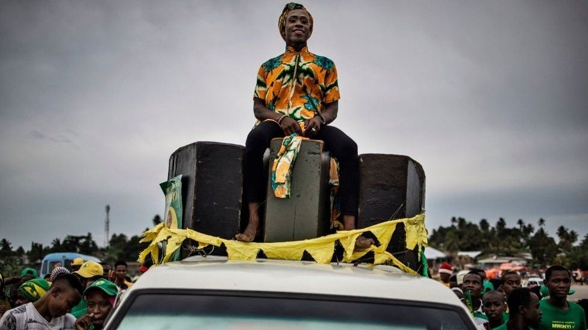
<h2>Item 3</h2>
<p>Context Label: 1</p>
<p>Caption 1: 53,000 dead people turned up on the state’s voter rolls in November 2018.</p>
<p>Context 1: It is not possible for me to determine the accuracy or relevance of the information provided in the image without further context or sources. I would suggest consulting reliable sources or contacting the relevant authorities to verify the information.</p>
<p>Caption 2: These social media posts did not link to a recent article concerning the recount taking place in Florida in November 2018, but rather to a 6-year-old story about the impact of a new (and controversial) voter-related law which was originally published by Fox News back in 2013</p>
<p>Context 2: The social media posts linked to an article published by Fox News in 2013, not a recent article about the Florida recount in November 2018. The article from 2013 discusses the impact of a new voter-related law in Florida, not the recount process that occurred in 2018.</p>
<p>Ca1vsCon2: [5, 3, 5, 3, 4, 4]</p>
<p>Ca2vsCon1: [5, 3, 5, 2, 3, 3]</p>

<h2>Item 4</h2>
<p>Context Label: 1</p>
<p>Caption 1: Actor, musician, director and devoted follower of Christ, Kirk Cameron, has been stricken with an extremely rare form of what can only be described as a biblical disease.</p>
<p>Context 1: The image shows Kirk Cameron, a well-known actor, musician, director, and devoted follower of Christ, speaking into a microphone. However, the content of the image does not provide any information about him being stricken with an extremely rare form of a disease. The focus of the image is on Kirk Cameron speaking at an event, and the context does not support the claim that he has a rare disease.</p>
<p>Caption 2: A shocking report about the former child actor Kirk Cameron was just another hoax from a well-known purveyor of satire.</p>
<p>Context 2: The image shows Kirk Cameron speaking at a podium, but the report claiming that he had converted to Islam and was now using a new name, Mohammed Mustafa, was a hoax. This information was shared by the website that often publishes satirical content, so it is important to be cautious when consuming such information and verify its accuracy before sharing it with others.</p>
<p>Ca1vsCon2: [5, 2, 5, 2, 3, 4]</p>
<p>Ca2vsCon1: [8, 5, 8, 1, 1, 1]</p>

<h2>Item 5</h2>
<p>Context Label: 0</p>
<p>Caption 1: Men from the Maasai tribe perform a traditional jumping ritual as they observe a rite of passage to mark the transition to cultural junior elder within the Masai-Mara national reserve.</p>
<p>Context 1: The image depicts a group of men from the Maasai tribe, dressed in traditional red and black attire, performing a traditional jumping ritual. They are gathered in a field, and some of them are holding sticks in their hands. This event appears to be a rite of passage to mark the transition to cultural junior elder within the Masai-Mara national reserve. The men are actively participating in the ceremony, showcasing their cultural heritage and unity as a tribe.</p>
<p>Caption 2: And on the same day in Kenya's Narok county, young Masai men take part in initiation rites to become moran - the men who are traditionally the warrior class.</p>
<p>Context 2: In the image, a group of Masai men in traditional attire is gathered in a field, with some of them holding sticks. This gathering is likely part of a cultural event or ceremony, possibly related to the initiation rites for moran, the warrior class of the Masai community. The men are dressed in their traditional red and black outfits, which signifies their cultural identity and the importance of the occasion. The presence of sticks among the participants may also be related to the rituals and ceremonies associated with the moran initiation, as they could be used for various purposes during the event.</p>
<p>Ca1vsCon2: [9, 9, 9, 9, 9, 9]</p>
<p>Ca2vsCon1: [8, 9, 9, 9, 9, 9]</p>

<h2>Item 6</h2>
<p>Context Label: 0</p>
<p>Caption 1: An employee attaches "skin" to the head of a humanoid robot developed by Promobot, a service robotics manufacturer, in Vladivostok, Russia.</p>
<p>Context 1: The image shows a person attaching "skin" to the head of a humanoid robot. The robot is designed to resemble a human and is being prepared for an event. The person is carefully placing the "skin" over the robot's head, ensuring that it covers the entire head and face area. The process of attaching the "skin" is important to give the robot a realistic appearance and to make it more appealing to the audience at the event.</p>
<p>Caption 2: A person fits artificial skin on to the head of a robot</p>
<p>Context 2: In the image, a person is carefully fitting artificial skin onto the head of a robot. The robot's head is shaped like a human head, and the person is using a pair of scissors to cut and shape the artificial skin to fit the robot's head perfectly. This process is essential for the robot to have a realistic appearance and to function as a human-like being. The person's hands are visible in the image, indicating their active involvement in the fitting process.</p>
<p>Ca1vsCon2: [9, 9, 9, 9, 9, 9]</p>
<p>Ca2vsCon1: [9, 9, 9, 9, 9, 9]</p>

<h2>Item 7</h2>
<p>Context Label: 1</p>
<p>Caption 1: A bird (variously described as a goose or a duck) helping to keep a puppy warm</p>
<p>Context 1: In the image, a bird (goose or duck) is seen resting its head on a puppy, which is laying on the ground. The bird appears to be covering the puppy with its wings, providing warmth and a sense of security. This act of kindness and care from the bird demonstrates the bond between animals and their ability to show compassion towards each other.</p>
<p>Caption 2: It isn’t unprecedented for birds and dogs to strike up friendships, thus claim is false</p>
<p>Context 2: The claim that two birds, a goose and a duck, are shown in the image cuddling each other is false. The image actually shows a dog and a duck cuddling together. The image with the goose and duck has been misidentified as the one with the dog and duck. The image with the dog and duck is also a misidentification, as it shows a dog and a goose together. The correct image should show a dog and a duck cuddling.</p>
<p>Ca1vsCon2: [8, 8, 9, 9, 9, 9]</p>
<p>Ca2vsCon1: [5, 3, 5, 3, 3, 3]</p>

<h2>Item 8</h2>
<p>Context Label: 1</p>
<p>Caption 1: A photograph shows Ricky Ellsworth, a white woman who was killed by a black police officer in Minnesota.</p>
<p>Context 1: The image shows a photograph of Ricky Ellsworth, a white woman who was killed by a black police officer in Minnesota. The photograph is accompanied by a caption that reads, "I was also murdered by a Minnesota cop, where was my riot?" This statement suggests that the woman's death was a result of police misconduct and that there should have been a public outcry or protest in response to her murder.</p>
<p>Caption 2: A viral meme got key facts wrong while attempting to make a point about police violence and racial injustice in the U.S.</p>
<p>Context 2: The viral meme in question is a photo of a woman with the caption, "I was also murdered by a police officer, where was my riot?" The intention behind this meme is to raise awareness about police violence and racial injustice in the United States. However, there are some key factual errors in the meme. Firstly, the woman in the photo is not a victim of police violence, as she is merely posing for the picture. Secondly, the meme implies that the woman was involved in a riot, but there is no evidence to support this claim. The meme has gone viral, but it is important to note that the message it conveys is based on inaccurate information. It is essential to ensure that such messages are based on accurate facts and well-researched data to effectively convey the intended message and raise awareness about the issues they aim to address.</p>
<p>Ca1vsCon2: [5, 7, 7, 5, 7, 5]</p>
<p>Ca2vsCon1: [5, 2, 7, 1, 2, 1]</p>

<h2>Item 9</h2>
<p>Context Label: 1</p>
<p>Caption 1: A photograph shows a 9-year-old girl who was impregnated by a Muslim man.</p>
<p>Context 1: The image shows a young girl sitting on a hospital bed, with a sheet covering her. She is wearing a green shirt and appears to be pregnant. The girl is accompanied by a woman who is standing next to her, likely providing support and care during this difficult time. The girl's condition suggests that she might have been a victim of sexual assault or abuse, resulting in her pregnancy. It is important to address this situation with sensitivity, providing support and resources to help her and her child in the best possible way.</p>
<p>Caption 2: This image does not show a pregnant child. This photograph was originally posted by the Garrafão do Norte Facebook page in November 2016 and shows a 12-year-old girl named Sandy at a hospital in Belém, Brazil.</p>
<p>Context 2: The image shows a young girl sitting on a hospital bed, wearing a green shirt. She is not pregnant. The photograph was originally posted by the Garrafão do Norte Facebook page in November 2016, and the girl is named Sandy. She is in a hospital room in Belém, Brazil.</p>
<p>Ca1vsCon2: [5, 3, 7, 1, 5, 3]</p>
<p>Ca2vsCon1: [4, 0, 1, 0, 1, 1]</p>

<h2>Item 10</h2>
<p>Context Label: 0</p>
<p>Caption 1: A man brushes the mouth of a sarcophagus.</p>
<p>Context 1: In the image, a man is brushing the mouth of a sarcophagus with a toothbrush. He is wearing a mask, which suggests that he is handling a piece of art or an artifact that requires special care and protection. The man is using a toothbrush to clean the sarcophagus, possibly to remove any dirt or debris that may have accumulated on the surface. This demonstrates the attention to detail and dedication required when handling valuable or historically significant items.</p>
<p>Caption 2: More than 40 statues of ancient deities and funerary masks were also discovered at the site, many of which still with their original colours and designs preserved</p>
<p>Context 2: The image shows a man wearing a mask and a white coat, standing next to a statue. The man is using a tool, possibly a drill, to work on the statue. There are several other statues in the background, indicating that this might be a place where ancient deities or artworks are being restored or preserved. The presence of multiple statues and the man's attire suggests that this could be a museum or a facility dedicated to preserving and restoring ancient artworks.</p>
<p>Ca1vsCon2: [8, 8, 8, 8, 8, 8]</p>
<p>Ca2vsCon1: [5, 4, 7, 3, 2, 1]</p>

<h2>Item 11</h2>
<p>Context Label: 0</p>
<p>Caption 1: President Trump on Thursday visited the southern border in McAllen, Tex.</p>
<p>Context 1: In the image, President Trump is standing on a stage with a group of people, including police officers, while speaking to them. He is wearing a suit and tie, and he appears to be addressing the crowd on the subject of border security. The scene takes place near a road, with several trucks and a car visible in the background. The presence of the police officers and the context of the speech suggest that this event is related to the ongoing discussion about immigration and border control.</p>
<p>Caption 2: President Trump in McAllen, Tex., on the border with Mexico, in January. </p>
<p>Context 2: In the image, President Trump is standing on a patch of dirt, surrounded by a group of people, including police officers. He is wearing a black jacket and is giving a speech. The scene takes place near a fence, which is likely part of the border between the United States and Mexico. The group of people, including the police officers, are listening to the President's speech attentively.</p>
<p>Ca1vsCon2: [9, 9, 9, 9, 9, 9]</p>
<p>Ca2vsCon1: [9, 0, 9, 9, 9, 9]</p>

<h2>Item 12</h2>
<p>Context Label: 0</p>
<p>Caption 1: In Bangkok, tuk-tuks that used to transport tourists around the city are seen idle because of travel bans and border closures during the pandemic.</p>
<p>Context 1: The image shows a row of parked tuk-tuks in Bangkok, Thailand. These vehicles are typically used for transporting tourists around the city. However, due to travel bans and border closures during the pandemic, the tuk-tuks are now idle and not in use. The situation has affected the income of the drivers and other businesses that rely on tourism. The image highlights the impact of the pandemic on local economies and the disruption of travel and tourism activities.</p>
<p>Caption 2: Tuk-tuk car parked in Bangkok because there are no tourists</p>
<p>Context 2: The image shows a row of parked tuk-tuk cars in Bangkok, but it is important to note that there are no tourists visible in the scene. This could indicate that the tuk-tuk drivers are waiting for customers or that the area is not a popular tourist destination at the time the photo was taken. The presence of multiple tuk-tuks in a row suggests that they are being used as a means of transportation in the city, but the lack of tourists in the scene suggests that the tuk-tuks may not be serving their primary purpose at the moment.</p>
<p>Ca1vsCon2: [9, 9, 9, 9, 9, 9]</p>
<p>Ca2vsCon1: [8, 9, 9, 9, 9, 9]</p>
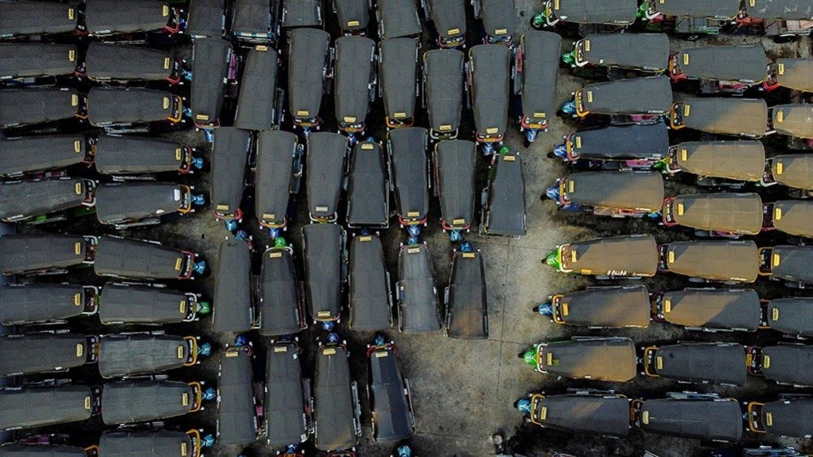
<h2>Item 13</h2>
<p>Context Label: 0</p>
<p>Caption 1: Castle Square, also known as the "Hole in the Road", 1989</p>
<p>Context 1: The image is a black and white photo of a city street from 1989, featuring a roundabout in the middle of the city. The street is surrounded by tall buildings, and there are several cars and a bus driving on the road. In total, there are 13 cars and one bus visible in the scene. Some of the cars are positioned closer to the roundabout, while others are further away. The bus is located near the center of the image, driving along the street. The photo captures the essence of city life and transportation in the 1980s.</p>
<p>Caption 2: Castle Square, Sheffield, 1989</p>
<p>Context 2: The image captures a busy city street in Sheffield, England, in 1989. The scene is filled with various vehicles, including cars and buses, driving down the street and navigating through the city. There are several traffic lights positioned at different points along the street, ensuring the smooth flow of traffic.In addition to the vehicles, there are numerous pedestrians walking along the sidewalks, contributing to the bustling atmosphere of the city. The street is surrounded by tall buildings, creating an urban environment. The presence of a clock in the scene suggests that it is a public space where people can easily check the time. Overall, the image portrays a lively city street with a mix of vehicles, pedestrians, and architecture.</p>
<p>Ca1vsCon2: [9, 9, 9, 9, 9, 0]</p>
<p>Ca2vsCon1: [9, 9, 9, 9, 9, 0]</p>
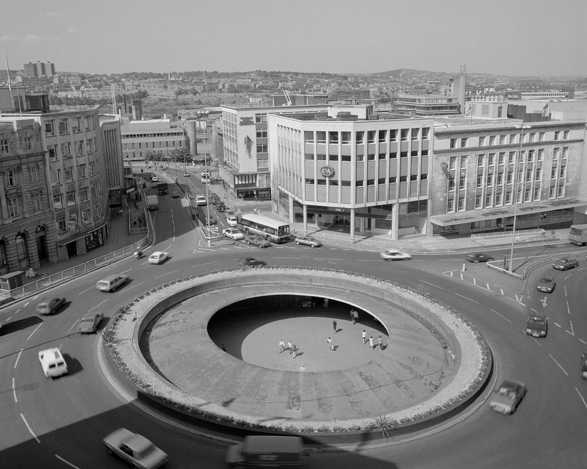
<h2>Item 14</h2>
<p>Context Label: 0</p>
<p>Caption 1: Shoppers in an Istanbul market</p>
<p>Context 1: The image depicts a bustling marketplace in Istanbul, Turkey, with a crowd of people walking around and exploring the various stalls. There are several food stands, including one that has a large display of donuts, attracting the attention of the people passing by. The market is lively, with people of different ages and backgrounds mingling and shopping. Some individuals are carrying handbags, and a few are wearing backpacks, indicating that they might be tourists or shoppers carrying their belongings. The atmosphere is vibrant and full of energy, reflecting the lively nature of the city and its markets.</p>
<p>Caption 2: A street vendor sells traditional Turkish backery "Simit" as people shop near the New Mosque area in Istanbul's Eminonu district on November 6, 2018.</p>
<p>Context 2: The image depicts a lively street scene in Istanbul's Eminonu district, where a street vendor is selling traditional Turkish pastries called "Simit" to a group of people. The vendor is standing next to a cart, and the customers are walking around and engaging with the food vendor. In the background, there are several other people, some of whom are carrying handbags. The atmosphere is bustling, and the street vendor is actively selling his products to the passersby. The Eminonu district is a popular shopping area, and the presence of the New Mosque adds to the historical and cultural charm of the location.</p>
<p>Ca1vsCon2: [9, 9, 9, 9, 9, 9]</p>
<p>Ca2vsCon1: [9, 9, 9, 9, 9, 9]</p>
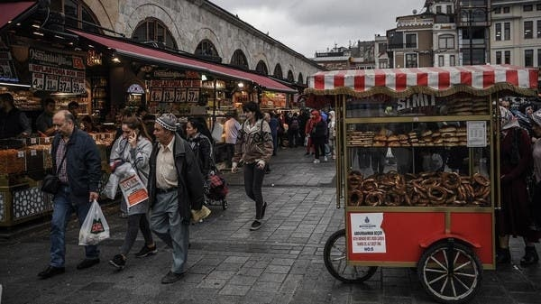
<h2>Item 15</h2>
<p>Context Label: 1</p>
<p>Caption 1: U.S. President Donald Trump tweeted that, "Anyone who ordered a ticket to my rally and didn't attend should be arrested and face very powerful charges."</p>
<p>Context 1: This statement is concerning as it appears to advocate for the use of force against individuals who did not attend the rally, which goes against the principles of freedom of speech and assembly. It is essential to promote a society where individuals are free to make their own choices and attend or not attend events based on their personal beliefs and values. Furthermore, such statements can contribute to an environment of intimidation and fear, which is not conducive to a healthy democracy.</p>
<p>Caption 2: The image claiming ordering a ticket to Trump's rally and arrest on not attending was a fabrication, intended as a spoof poking fun at the president over the disappointing rally attendance.</p>
<p>Context 2: The image of the man standing at a podium with a flag in the background is not related to the original image of a ticket to Trump's rally and arrest. The second image is a fabrication intended to poke fun at the president over disappointing rally attendance. The original image does not contain any political statements or references to the president.</p>
<p>Ca1vsCon2: [8, 9, 9, 9, 9, 9]</p>
<p>Ca2vsCon1: [5, 0, 3, 0, 1, 1]</p>

<h2>Item 16</h2>
<p>Context Label: 0</p>
<p>Caption 1: Thunberg already has several murals around the world, this one in San Francisco</p>
<p>Context 1: The image features a mural of a girl's face painted on the side of a building, with a man standing on a ladder, possibly working on the mural or observing it. The mural is located in San Francisco, and it seems to be a part of a larger street art scene in the area. Thunberg, a famous activist, already has several murals dedicated to him around the world, including one in San Francisco. This mural, featuring a girl's face, might be another addition to the city's street art scene or a tribute to a specific individual or cause.</p>
<p>Caption 2: San Francisco's latest mural features famous climate activist Greta Thunberg</p>
<p>Context 2: The latest mural in San Francisco features a portrait of famous climate activist Greta Thunberg. The mural is painted on the side of a building, showcasing the young activist's influence and advocacy for environmental protection. The mural is located on the side of a building, making it a prominent and eye-catching display for passersby and residents alike.</p>
<p>Ca1vsCon2: [8, 8, 8, 8, 8, 9]</p>
<p>Ca2vsCon1: [9, 9, 9, 9, 9, 9]</p>
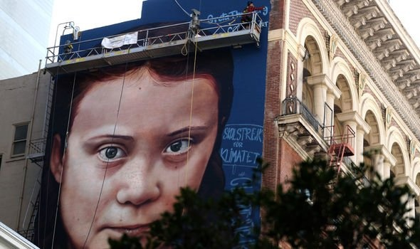
<h2>Item 17</h2>
<p>Context Label: 0</p>
<p>Caption 1: On the same day in South Africa, a bird walks along Durban's empty shore where a ban on gatherings kept revellers at bay.</p>
<p>Context 1: On the same day in South Africa, a bird walks along Durban's empty shore where a ban on gatherings kept revellers at bay.</p>
<p>Caption 2: General view of an empty beach with high-rise buildings in the distance.</p>
<p>Context 2: The image features a picturesque beach scene with a bird walking along the shoreline. The beach is expansive and empty, providing a serene atmosphere. In the background, there are several high-rise buildings, adding a touch of urban development to the scene. The combination of the empty beach and the cityscape creates a unique and visually appealing contrast.</p>
<p>Ca1vsCon2: [8, 8, 8, 8, 8, 0]</p>
<p>Ca2vsCon1: [8, 7, 9, 8, 7, 5]</p>
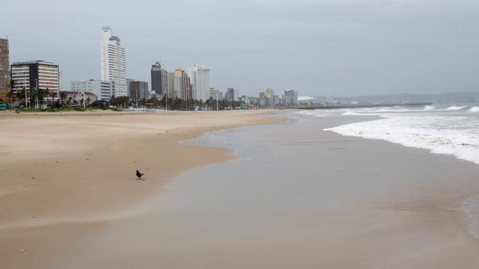
<h2>Item 18</h2>
<p>Context Label: 0</p>
<p>Caption 1: This woman, dressed in the colours of the Nigerian flag, takes part in the celebrations at Abuja's Eagle Square...</p>
<p>Context 1: The image features a woman dressed in green and white, the colors of the Nigerian flag, performing a dance in front of a crowd. She is twirling a hula hoop, showcasing her skills and adding excitement to the event. The woman is surrounded by several other people, who are likely spectators or participants in the celebration. The scene takes place in a field, where the gathering seems to be focused on enjoying the performance and the festive atmosphere.</p>
<p>Caption 2: Independence Band performance at the Eagles Square in Abuja, Nigeria during the country's 60th Independence Celebration on October 1, 2020</p>
<p>Context 2: The image captures a lively performance by the Independence Band during the 60th Independence Celebration in Abuja, Nigeria. The band is playing in front of a crowd of people, with a total of 13 people visible in the scene. The musicians are dressed in matching green and white outfits, adding to the festive atmosphere. The performance takes place at the Eagles Square, which is a large open space with a stage where the band is playing. The event is a celebration of the country's freedom and unity, and the band's energetic performance is a fitting centerpiece for the occasion.</p>
<p>Ca1vsCon2: [9, 9, 9, 9, 9, 9]</p>
<p>Ca2vsCon1: [8, 8, 8, 8, 8, 8]</p>

<h2>Item 19</h2>
<p>Context Label: 0</p>
<p>Caption 1: A man diving into water from a height into the Neretva river in Mostar</p>
<p>Context 1: The image captures a thrilling moment where a man is diving off a cliff into the Neretva river in Mostar, Bosnia and Herzegovina. He is wearing a wetsuit and is in mid-air, performing a daring and adventurous stunt. The scene is set in front of a crowd of people who are watching the man's impressive feat. The onlookers are scattered around the area, some standing closer to the cliff, while others are further away. The spectators are likely amazed and excited by the man's daring jump into the river.</p>
<p>Caption 2: A man jumps from the Old Bridge into the Neretva river during the 454th traditional diving competition in Mostar, Bosnia-Herzegovina.</p>
<p>Context 2: The image captures an exciting moment during the 454th traditional diving competition in Mostar, Bosnia-Herzegovina. A man is seen jumping off the Old Bridge into the Neretva river, while a large crowd of spectators watches the thrilling event. The crowd is spread out along the riverbank, with some people standing closer to the bridge and others further away. The audience appears to be engaged and enjoying the spectacle, as they watch the man make his daring leap into the river. The event showcases the unique cultural tradition and the vibrant atmosphere of the city.</p>
<p>Ca1vsCon2: [9, 9, 9, 9, 9, 9]</p>
<p>Ca2vsCon1: [9, 9, 9, 9, 9, 9]</p>

<h2>Item 20</h2>
<p>Context Label: 0</p>
<p>Caption 1: Asylum seekers lining up last week in Tijuana, Mexico.</p>
<p>Context 1: The image shows a group of people, including asylum seekers, lining up outside a fence near a building. They are waiting to be let in, possibly to access a shelter or a processing center. The individuals in the line appear to be of various ages and genders, and they seem to be patiently waiting for their turn. The scene suggests that these people are seeking protection, possibly due to persecution or other forms of harm in their home countries.</p>
<p>Caption 2: Asylum seekers lined up in January outside the El Chaparral entry point into the United States in Tijuana, Mexico.</p>
<p>Context 2: The image shows a group of people, including asylum seekers, lined up outside a building, possibly near an immigration office or a border crossing. They are waiting in a queue, with some of them holding their belongings, such as handbags and backpacks. The scene suggests that these individuals are seeking assistance, possibly to apply for asylum or to cross the border into the United States. The presence of multiple people in the line indicates that there is a significant number of individuals seeking help or attempting to cross the border at this location.</p>
<p>Ca1vsCon2: [9, 9, 9, 9, 9, 9]</p>
<p>Ca2vsCon1: [9, 9, 9, 9, 9, 9]</p>
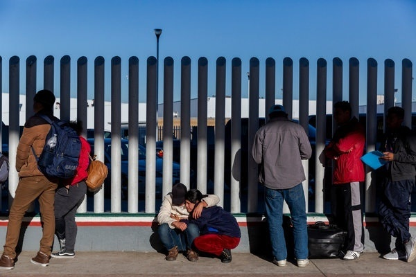
<h2>Item 21</h2>
<p>Context Label: 0</p>
<p>Caption 1: Martin Fayulu, the opposition leader and runner-up in the election, had demanded a manual recount of the results.</p>
<p>Context 1: Martin Fayulu, the opposition leader and runner-up in the election, had demanded a manual recount of the results.</p>
<p>Caption 2: Opposition presidential candidate in the Democratic Republic of Congo Martin Fayulu walks outside the constitutional court in the capital, Kinshasa on January 12, 2019, as he filed his appeal to impose a recount of the votes in the presidential election following a suspicion of fraud.</p>
<p>Context 2: The image shows a group of people gathered outside a courthouse, with a man in the center of the scene being the main focus. He appears to be a politician or an important figure, as he is surrounded by a crowd of people. Some of the individuals in the crowd are holding handbags, and there are a few ties visible among the group. The scene suggests that the man might be addressing the crowd or participating in a legal proceeding, such as a protest or a court case.</p>
<p>Ca1vsCon2: [9, 9, 9, 9, 9, 9]</p>
<p>Ca2vsCon1: [8, 5, 8, 6, 7, 5]</p>

<h2>Item 22</h2>
<p>Context Label: 0</p>
<p>Caption 1: A tribute to Captain Sir Tom Moore lights up Piccadilly Circus, London. The 100-year-old, who raised almost PS33m for NHS charities by walking laps of his garden, died with coronavirus.</p>
<p>Context 1: The image features a woman standing in front of a large video display in Piccadilly Circus, which is illuminated with a tribute to Captain Sir Tom Moore. The display is showcasing a photo of the 100-year-old man who raised charity funds for the NHS. The woman appears to be observing the tribute to Captain Sir Tom Moore, who passed away due to COVID-19. The video screen is prominently displayed in the background, capturing the attention of the woman and others in the area.</p>
<p>Caption 2: A woman plays the violin in Piccadilly Circus during a tribute to Captain Sir Tom Moore on 2 February 2021</p>
<p>Context 2: The image features a woman playing the violin in the middle of a city street, surrounded by tall buildings. She is dressed in black and appears to be the center of attention as people walk by her. The scene takes place in the bustling Piccadilly Circus area, which is a popular spot in London.There are several people in the scene, some walking and others standing nearby. A few traffic lights can be seen in the background, indicating that the woman is performing in an urban setting. The woman's performance seems to be a captivating event, drawing the attention of passersby and creating a lively atmosphere in the city.</p>
<p>Ca1vsCon2: [8, 9, 9, 9, 9, 0]</p>
<p>Ca2vsCon1: [5, 3, 7, 5, 5, 3]</p>
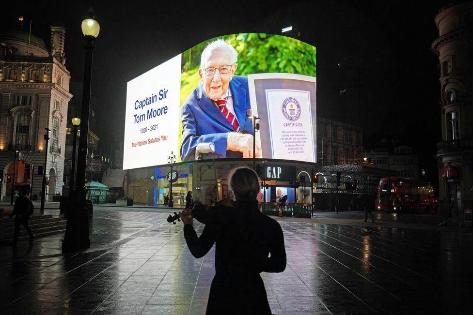
<h2>Item 23</h2>
<p>Context Label: 0</p>
<p>Caption 1: cockapoo, Bailey, during his morning walk in London's Regent's Park</p>
<p>Context 1: The image features a small brown and white dog, Bailey, sitting on a wooden bench in Regent's Park, London. Bailey is holding a green ball in his mouth, likely having just finished playing fetch with it. The park is a lively and popular location, with several people and bicycles visible in the background. Some of the people are walking around, while others are sitting on benches, enjoying the park's atmosphere. The presence of the bicycles suggests that the park is a common spot for both pedestrians and cyclists to spend time outdoors and engage in recreational activities.</p>
<p>Caption 2: Bailey the cockapoo in London's Regent's Park</p>
<p>Context 2: The image features a small brown and white dog, Bailey, sitting on a wooden bench in Regent's Park, London. Bailey is holding a green ball in his mouth, possibly playing with it or waiting for his owner to throw it for him. The park is a lively and popular location, with several people visible in the background, enjoying the outdoors and the beautiful surroundings.</p>
<p>Ca1vsCon2: [9, 9, 9, 9, 9, 9]</p>
<p>Ca2vsCon1: [9, 9, 9, 9, 9, 9]</p>

<h2>Item 24</h2>
<p>Context Label: 1</p>
<p>Caption 1: A video shows people in China tearing down a 5G tower in an attempt to stop the spread of COVID-19 coronavirus disease.</p>
<p>Context 1: The image shows a video on a social media platform, with people in China tearing down a 5G tower in an attempt to stop the spread of COVID-19 coronavirus disease. The post has received numerous comments, indicating a strong reaction from the viewers.</p>
<p>Caption 2: The video shows protesters in Hong Kong in August 2019 (before the COVID-19 pandemic) tearing down a surveillance tower.</p>
<p>Context 2: The image shows a group of protesters in Hong Kong in August 2019, tearing down a surveillance tower. The protesters are holding umbrellas and are actively engaged in the act of bringing down the tower. The scene depicts a strong sense of unity and collective action among the protesters. The presence of multiple people in the image indicates that this is a significant event in the city, and the protesters are making their voices heard by taking direct action against the surveillance system.</p>
<p>Ca1vsCon2: [4, 1, 3, 1, 2, 2]</p>
<p>Ca2vsCon1: [5, 2, 5, 2, 2, 2]</p>

<h2>Item 25</h2>
<p>Context Label: 0</p>
<p>Caption 1: Supporters of Spain's far-right Vox party in Seville, celebrating the results of regional elections in Andalusia last month.</p>
<p>Context 1: The image shows a group of people celebrating and waving flags in a room, with some of them holding cell phones. The event appears to be a political gathering, possibly related to the results of regional elections in Andalusia, Spain. The attendees are expressing their support and enthusiasm for the far-right Vox party, as evidenced by their use of Vox flags and banners. The presence of cell phones in the hands of some people suggests that they might be sharing the news or discussing the results with others in the room.</p>
<p>Caption 2: Supporters of Spain's anti-immigrant, populist Vox party, which won 12 seats in recent elections - its first in any Spanish legislative body.</p>
<p>Context 2: The image shows a group of people in a room, with many of them holding flags and cheering. The flags they are holding are yellow and red, which are the colors of the Spanish flag. The enthusiastic crowd is likely supporting a political party, specifically the Vox party, which is known for its anti-immigrant and populist views. The event could be a political rally or a celebration of their recent electoral success, where they won 12 seats in the Spanish legislative body, marking their first presence in any Spanish legislative body.</p>
<p>Ca1vsCon2: [9, 9, 9, 9, 9, 9]</p>
<p>Ca2vsCon1: [9, 9, 9, 9, 9, 9]</p>

<h2>Item 26</h2>
<p>Context Label: 1</p>
<p>Caption 1: NASA warned that Asteroid 52768 (1998 OR2) could hit Earth in April 2020 and cause catastrophic danger.</p>
<p>Context 1: The image shows a close-up of a large asteroid, but it does not provide any information about the potential threat of it hitting Earth in April 2020. It is essential to note that while the image is of an asteroid, the caption does not provide any context related to the potential impact of Asteroid 52768 (1998 OR2) on Earth. It is important to verify the accuracy and context of such information through reliable sources and not rely solely on the image.</p>
<p>Caption 2: This image of asteroid Eros, taken by NASA's NEAR Shoemaker on Feb. 29, 2000, shows the north polar region highlighting the major physiographic features of the northern hemisphere; the saddle seen at the bottom.</p>
<p>Context 2: The image captures a close-up view of the asteroid Eros, which is a large, rocky object in space. The asteroid is predominantly grey in color, and its surface appears to be rough and uneven. There are a few darker spots visible on the surface, which may be craters or other impact features. The asteroid's size and the presence of these features suggest that it has a history of collisions and impacts from other objects in space.</p>
<p>Ca1vsCon2: [5, 3, 5, 7, 5, 1]</p>
<p>Ca2vsCon1: [5, 3, 7, 3, 3, 1]</p>

<h2>Item 27</h2>
<p>Context Label: 1</p>
<p>Caption 1: A photograph shows a Southeast African monkey from Madagascar.</p>
<p>Context 1: The photograph features a group of monkeys sitting and standing on rocks in a forest setting. There are at least 13 monkeys in the image, with some of them sitting close together while others are scattered around the rocks. The monkeys appear to be socializing and enjoying their time in the natural environment. The scene captures the essence of wildlife and the monkeys' natural habitat.</p>
<p>Caption 2: This photograph, however, does not capture an unusual primate from Madagascar. Instead, it depicts a doll from the “Inari Foxes” collection produced by the Santani Workshop in Russia.</p>
<p>Context 2: The photograph does not show a group of monkeys, but rather a collection of Inari foxes from the Santani Workshop in Russia. The image features a group of foxes sitting on rocks, with some of them appearing to be wearing clothes. These foxes are part of the "Inari Foxes" collection, which is known for its unique and artistic design.</p>
<p>Ca1vsCon2: [5, 1, 3, 1, 3, 1]</p>
<p>Ca2vsCon1: [3, 0, 3, 0, 1, 1]</p>

<h2>Item 28</h2>
<p>Context Label: 0</p>
<p>Caption 1: Humanoid robots with hyper-realistic skin are being developed  by Promobot service robotics manufacturer at the company's branch in the far eastern city of Vladivostok, Russia</p>
<p>Context 1: The image shows a person wearing a Promobot robot suit, which is a type of humanoid robot designed to mimic human movements and gestures. The robot suit is equipped with a head and hands that have hyper-realistic skin, giving it a lifelike appearance. The person wearing the suit is holding a cell phone in their hand, further emphasizing the human-like nature of the robot. This type of robot suit is being developed by Promobot, a robotics company based in Vladivostok, Russia.</p>
<p>Caption 2: An employee attaches "skin" to the head of a humanoid robot developed by Promobot, a service robotics manufacturer, in Vladivostok, Russia.</p>
<p>Context 2: The image shows a person attaching "skin" to the head of a humanoid robot. The robot is designed to resemble a human and is being prepared for an event. The person is carefully placing the "skin" on the robot's head, ensuring that it covers the entire surface. The scene takes place in a room, and the person is focused on the task at hand. The humanoid robot is a creation of Promobot, a service robotics manufacturer, and is likely being prepared for an event or demonstration.</p>
<p>Ca1vsCon2: [9, 9, 9, 9, 9, 9]</p>
<p>Ca2vsCon1: [8, 9, 9, 9, 9, 9]</p>

<h2>Item 29</h2>
<p>Context Label: 0</p>
<p>Caption 1: On Tuesday police patrol the school where more than 300 children were kidnapped in Katsina state, northern Nigeria...</p>
<p>Context 1: On Tuesday, a group of police officers patrolled the school where more than 300 children were kidnapped in Katsina state, northern Nigeria. The officers were walking through the area, likely ensuring the safety of the students and maintaining order. The incident has sparked outrage and concern among the community, and the police presence at the school is an effort to prevent further incidents and provide reassurance to the students and their families.</p>
<p>Caption 2: Police patrol inside the Government Science school in Kankara, in northwestern Katsina state, Nigeria after gunmen abducted students on December 15, 2020.</p>
<p>Context 2: The image shows a group of police officers patrolling the Government Science school in Kankara, Nigeria. The officers are on a mission to secure the area and ensure the safety of the students and staff after a group of gunmen abducted students on December 15, 2020. The officers are walking through the school's courtyard, which is surrounded by trees, and they are carrying guns to protect themselves and the students. The presence of the police officers indicates the authorities' determination to find and rescue the abducted students and restore safety to the school.</p>
<p>Ca1vsCon2: [9, 9, 9, 9, 9, 9]</p>
<p>Ca2vsCon1: [9, 9, 9, 9, 9, 9]</p>
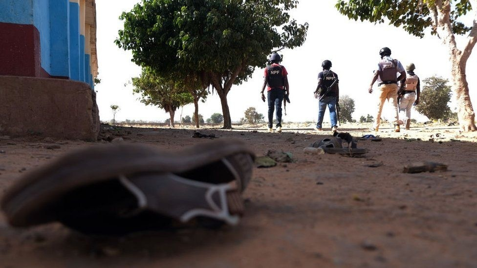
<h2>Item 30</h2>
<p>Context Label: 1</p>
<p>Caption 1: A federal gun law was passed in September 2016 which will prevent people from practicing "open carry" in all 50 states.</p>
<p>Context 1: The federal gun law passed in September 2016 that prevents people from practicing "open carry" in all 50 states refers to the Open Carry Law, which was enacted in Texas in 1995. This law allows individuals to openly carry an unloaded handgun in a public place. However, it is important to note that this law only applies to Texas and is not a federal law. The federal law mentioned in the image is likely unrelated to the Open Carry Law in Texas.</p>
<p>Caption 2: An open carry advocate walks down the street in Austin, Texas.</p>
<p>Context 2: The image shows an open carry advocate walking down the street in Austin, Texas, with a rifle strapped to their back. The man is wearing a leather jacket and is surrounded by a crowd of people. Some of the individuals in the crowd are carrying handbags, while others are simply walking alongside the man with the rifle. The scene depicts a lively and diverse urban environment where people engage in various activities and interact with one another.</p>
<p>Ca1vsCon2: [8, 8, 9, 9, 9, 9]</p>
<p>Ca2vsCon1: [5, 0, 3, 1, 3, 2]</p>
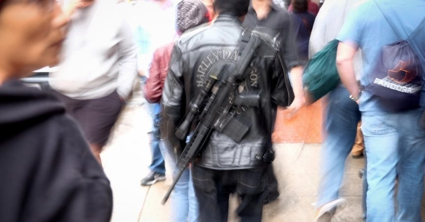
<h2>Item 31</h2>
<p>Context Label: 1</p>
<p>Caption 1: Maine lobsterman catches extremely rare purple lobster</p>
<p>Context 1: In the image, a lobsterman is holding up an extremely rare purple lobster in the water. This is an unusual sight, as purple lobsters are not commonly found in the wild. The coloration of the lobster is due to a genetic condition called xanthochromism, which causes the pigmentation to be primarily purple instead of the usual red or orange. The lobsterman's catch has attracted attention, as it is an opportunity to study and learn more about the rare species.</p>
<p>Caption 2: These are not genuine photographs of a purple lobster.</p>
<p>Context 2: The image is a composite or manipulated photo, featuring a combination of a purple lobster and a purple octopus. The colors of the lobster and the octopus have been combined to create a visually striking image, but it is not a genuine photograph of a purple lobster and a purple octopus.</p>
<p>Ca1vsCon2: [5, 5, 7, 3, 5, 3]</p>
<p>Ca2vsCon1: [4, 2, 5, 2, 3, 1]</p>

<h2>Item 32</h2>
<p>Context Label: 1</p>
<p>Caption 1: A ZIP code in Brooklyn has N.Y.C.’s highest death rate.</p>
<p>Context 1: According to a recent article in The New York Times, the ZIP code 11220, which is located in the Brownsville neighborhood of Brooklyn, has the highest death rate of any ZIP code in New York City. The high mortality rate in this area is attributed to a combination of factors, including poverty, crime, and poor health outcomes. The neighborhood has a high concentration of fast-food restaurants and a lack of green spaces, which may contribute to the health issues faced by its residents. The situation in Brownsville highlights the need for better access to healthcare, education, and resources to improve the overall well-being of the community.</p>
<p>Caption 2: Trinseo is a global leader in supplying synthetic rubber products and services.</p>
<p>Context 2: In the image, a man is walking past a store with a large display of tires. He is wearing a face mask, which suggests that he is taking precautions to protect himself from the COVID-19 virus. The store has a variety of tires, including some stacked in the background and others placed in the foreground. The man is carrying a handbag, and there is a car parked nearby. The scene reflects the current situation in many urban areas, where people are being cautious and taking measures to protect themselves from the virus.</p>
<p>Ca1vsCon2: [5, 3, 5, 3, 3, 0]</p>
<p>Ca2vsCon1: [5, 2, 5, 3, 1, 1]</p>
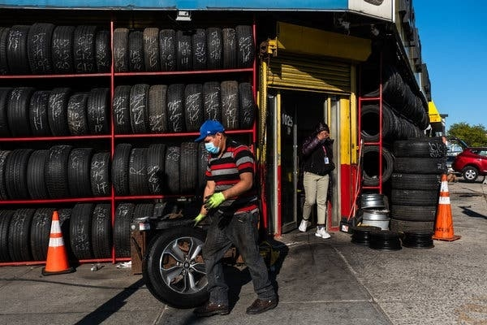
<h2>Item 33</h2>
<p>Context Label: 0</p>
<p>Caption 1: U.S. Secretary of State Mike Pompeo on Thursday during a tour of a mosque in Egypt's new administrative capital, east of Cairo.</p>
<p>Context 1: In the image, U.S. Secretary of State Mike Pompeo is smiling and standing inside a mosque in Egypt's new administrative capital, surrounded by a group of people. The mosque features a large dome and a high ceiling, creating an impressive and grand atmosphere. The Secretary of State appears to be enjoying his visit and engaging with the people around him, as he poses for a picture in this historic and culturally significant location.</p>
<p>Caption 2: U.S. Secretary of State Mike Pompeo, center, speaks to the press during a tour of the newly inaugurated Al-Fattah Al-Alim mosque in Egypt’s new administrative capital, east of Cairo, on Jan. 10, 2019</p>
<p>Context 2: In the image, U.S. Secretary of State Mike Pompeo is standing in the middle of a group of people, smiling and engaging with them. He is surrounded by a diverse group of individuals, some of whom are wearing ties. The scene appears to be a formal or professional gathering, possibly at a diplomatic event or a business meeting. The group is posing for a photo, and Pompeo is likely greeting and interacting with his colleagues and the people around him.</p>
<p>Ca1vsCon2: [9, 9, 9, 9, 9, 9]</p>
<p>Ca2vsCon1: [5, 0, 3, 1, 1, 1]</p>

<h2>Item 34</h2>
<p>Context Label: 1</p>
<p>Caption 1: Actor Will Smith and his son, rapper Jaden Smith, had “died in a crash after a “car and truck collision”</p>
<p>Context 1: This is a fake news headline. The image shows Will Smith and Jaden Smith posing together, but the headline suggests that they were involved in a fatal car crash. This is not true and has been fabricated for sensationalism.</p>
<p>Caption 2: This post was a hoax, as neither Will nor Jaden Smith had died or been seriously injured in an automobile accident.</p>
<p>Context 2: The image and text in the post are a hoax, as neither Will Smith nor his son Jaden Smith had died or been seriously injured in an automobile accident. The image shows a fake picture of Will Smith and Jaden Smith, and the text claims that Will Smith died in a car accident. This is false and intended to spread misinformation.</p>
<p>Ca1vsCon2: [8, 0, 9, 0, 0, 0]</p>
<p>Ca2vsCon1: [5, 0, 1, 0, 0, 0]</p>

<h2>Item 35</h2>
<p>Context Label: 0</p>
<p>Caption 1: A man dives into the water near Canary Wharf, London.</p>
<p>Context 1: In the image, a man is seen diving into the water near Canary Wharf, London. He is wearing a red shirt and is surrounded by several other people who are also in the water. The scene appears to be a lively and enjoyable moment, possibly involving a group of friends or people taking part in a water-based activity. The presence of boats in the background further supports the idea that this is a recreational area or a popular spot for water-based activities.</p>
<p>Caption 2: A man dives into water in the London Docklands, as two other men in inflatable boats watch</p>
<p>Context 2: In the image, a man is diving into the water in the London Docklands while two other men are in inflatable boats nearby, watching the action. The scene takes place in a harbor with several boats of various sizes, including a large boat in the background. There are also a few other people in the area, some of them closer to the boats, while others are further away. The man diving into the water appears to be enjoying the water activity, and the onlookers in the inflatable boats seem to be observing the scene with interest.</p>
<p>Ca1vsCon2: [9, 9, 9, 9, 9, 9]</p>
<p>Ca2vsCon1: [9, 9, 9, 9, 9, 5]</p>

<h2>Item 36</h2>
<p>Context Label: 0</p>
<p>Caption 1: Traffic on the railway between Ivory Coast's biggest city, Abidjan, and Ouagadougou, the capital of Burkina Faso, was halted on Friday after a landslide</p>
<p>Context 1: Traffic on the railway between Ivory Coast's biggest city, Abidjan, and Ouagadougou, the capital of Burkina Faso, was halted on Friday after a landslide. The landslide occurred near the town of Korhogo, which is approximately 200 kilometers northeast of Abidjan. The affected railway line is a vital transportation link between the two countries, and the landslide has caused significant disruptions to the transportation of people and goods. The cause of the landslide is not known, but it is likely related to the ongoing civil unrest in the region. The situation is being closely monitored by local authorities and railway operators, who are working to restore normal train services as soon as possible.</p>
<p>Caption 2: A suspended railway track at the site of a landslide that killed 13 people the day before, in Anyama, near Abidjan -19 June 2020</p>
<p>Context 2: The image shows a suspended railway track at the site of a landslide that occurred the day before, near Abidjan, Ivory Coast. The landslide caused a derailment and killed 13 people. The train is hanging off the edge of the cliff, indicating the severity of the incident. The surrounding area is lush and green, with trees and plants nearby. The situation highlights the importance of proper maintenance and safety measures in railway infrastructure to prevent accidents and ensure the safety of passengers and workers.</p>
<p>Ca1vsCon2: [5, 4, 7, 3, 5, 3]</p>
<p>Ca2vsCon1: [8, 9, 9, 9, 9, 9]</p>

<h2>Item 37</h2>
<p>Context Label: 1</p>
<p>Caption 1: The Annabelle doll escaped from the Warren's Occult Museum in Connecticut.</p>
<p>Context 1: The Annabelle doll is a famous haunted doll that has been featured in several paranormal and horror stories. It is said to be possessed with evil spirits and is believed to cause unexplained occurrences and phenomena. The doll is now part of the Warren's Occult Museum collection, which is located in Connecticut. The museum displays various items related to the occult, supernatural, and paranormal, including the haunted Annabelle doll. However, it is important to note that the doll has not escaped from the museum, but it is on display for visitors to see.</p>
<p>Caption 2: Sources confirmed that Annabelle did not escape. Annabelle’s alive in all her Warren's Museum infamous glory. She never left the museum.”</p>
<p>Context 2: The image shows a doll with red eyes and white hair, sitting on a wooden chair. However, it is important to note that the doll is a doll and not a real person, so it cannot escape. The quote from sources suggests that the doll, Annabelle, has not escaped from the Warren's Museum, which is a famous museum known for its haunted items and paranormal activities.</p>
<p>Ca1vsCon2: [9, 9, 9, 9, 9, 9]</p>
<p>Ca2vsCon1: [4, 2, 4, 1, 2, 1]</p>

<h2>Item 38</h2>
<p>Context Label: 1</p>
<p>Caption 1: Are These Towering Snow Walls in Massachusetts</p>
<p>Context 1: Yes, the towering snow walls are located in Massachusetts. The image shows a snow-covered mountain with a snow wall on one side, and a group of people walking along a path between the snow walls. This suggests that the area is likely experiencing heavy snowfall or avalanches, which are common in the state during the winter season.</p>
<p>Caption 2: The journey of Tateyama Kurobe in Japan</p>
<p>Context 2: Tateyama Kurobe is a snow-covered mountain pass in Japan that attracts many tourists during the winter months. The snow-covered road and tunnel provide a unique and picturesque experience for visitors. In the image, a large group of people can be seen walking along the snow-covered road, possibly heading towards the tunnel or enjoying the scenic view. The snow-covered mountains in the background add to the beauty of the scene, making it an ideal location for winter sports enthusiasts and tourists alike.</p>
<p>Ca1vsCon2: [5, 3, 5, 3, 3, 0]</p>
<p>Ca2vsCon1: [5, 3, 7, 3, 5, 1]</p>
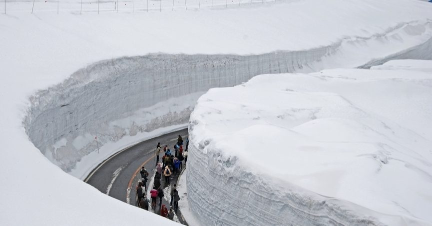
<h2>Item 39</h2>
<p>Context Label: 1</p>
<p>Caption 1: Setting your Apple device's date to 1 January 1970 will reveal a retro-themed Easter egg.</p>
<p>Context 1: When setting the date on an Apple device to 1 January 1970, a retro-themed Easter egg appears on the screen. This Easter egg displays a message that reads "Today's date is January 1, 1970. Your iPhone remembers this date and time as the first date the device was ever set up. This is a reference to the first iPhone ever sold, which was the iPhone 1 on January 9, 2007. The Easter egg also displays a retro-style clock with the date and time set to 1970, adding a nostalgic touch to the user experience.</p>
<p>Caption 2: Never put January 1, 1970 as the date on your iPhone, unless you want to block it</p>
<p>Context 2: If you want to block a date on your iPhone, you can set it to January 1, 1970. However, this date has no significance and is not commonly used. It is not recommended to set your date to this specific date, as it can be confusing and may cause issues with some apps that rely on the current date. It is better to set your date to a more meaningful date, such as the day you purchased the device or a significant event in your life.</p>
<p>Ca1vsCon2: [8, 9, 9, 9, 9, 9]</p>
<p>Ca2vsCon1: [5, 4, 7, 3, 5, 3]</p>

<h2>Item 40</h2>
<p>Context Label: 1</p>
<p>Caption 1: Some 53,000 dead people were found to be included in Florida's voter rolls in November 2018.</p>
<p>Context 1: In November 2018, it was reported that 53,000 dead people were found to be included on Florida's voter rolls. This discovery led to an investigation by the Florida Department of State to remove the ineligible voters from the rolls. The state of Florida uses the Help America Vote Act's (HAVA) motor voter law to maintain its voter registration database, which helps to identify and remove deceased individuals from the voter rolls. The investigation ensures that the state's voter rolls are accurate and up-to-date, maintaining the integrity of the electoral process.</p>
<p>Caption 2: These social media posts did not link to a recent article concerning the recount taking place in Florida in November 2018, but rather to a 6-year-old story about the impact of a new (and controversial) voter-related law which was originally published by Fox News back in 2012</p>
<p>Context 2: The social media posts linked to an article published by Fox News in 2012, not a recent article about the recount in Florida in November 2018. The article from 2012 discusses the impact of a new voter-related law in Florida, not the recount that happened in 2018.</p>
<p>Ca1vsCon2: [5, 3, 7, 1, 3, 2]</p>
<p>Ca2vsCon1: [5, 1, 3, 1, 3, 5]</p>

<h2>Item 41</h2>
<p>Context Label: 1</p>
<p>Caption 1: Snopes.com ignored reports of a large child trafficking ring bust in Arizona.</p>
<p>Context 1: It is not possible for me to determine if Snopes.com intentionally ignored the reports or if they simply did not cover the story in their articles. However, it is worth noting that Snopes.com is a fact-checking website that aims to provide accurate information by debunking urban legends, myths, and misinformation. They would typically investigate and verify the accuracy of claims before publishing their findings. It is possible that they did not find sufficient evidence to support the claims of a large child trafficking ring bust in Arizona or that the information they received was not reliable or verifiable.</p>
<p>Caption 2: A black and white image of hands being tied together with rope.</p>
<p>Context 2: The image is a black and white photo of a person's hands tied together with rope. The person's hands are positioned close to each other, with the rope wrapped around their wrists. The hands appear to be tied in a secure manner, with the rope running through the center of the person's hands. The lack of color in the photo emphasizes the simplicity and form of the person's hands and the rope.</p>
<p>Ca1vsCon2: [5, 4, 7, 2, 2, 1]</p>
<p>Ca2vsCon1: [5, 2, 5, 2, 1, 0]</p>

<h2>Item 42</h2>
<p>Context Label: 0</p>
<p>Caption 1: Thousands flocked to a volcano in Iceland which erupted near the capital, Reykjavik.</p>
<p>Context 1: The image shows a large group of people gathered around an erupting volcano in Iceland. The volcano is spewing out lava and ash, creating an impressive and potentially dangerous scene. The crowd of people is standing at a safe distance from the volcano, watching the spectacle in awe. There are at least 14 people visible in the image, with some of them carrying backpacks. The presence of backpacks suggests that these people might be tourists or travelers who have come to witness the natural phenomenon. The eruption near Reykjavik, the capital of Iceland, has likely attracted many visitors to witness this unique event.</p>
<p>Caption 2: Volcano erupts in Iceland</p>
<p>Context 2: A volcano has erupted in Iceland, spewing lava and ash into the air, creating a spectacular sight for the gathered crowd of people.</p>
<p>Ca1vsCon2: [9, 9, 9, 9, 9, 9]</p>
<p>Ca2vsCon1: [9, 9, 9, 9, 9, 9]</p>
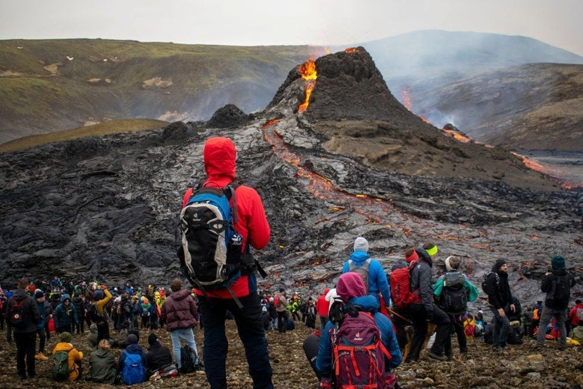
<h2>Item 43</h2>
<p>Context Label: 0</p>
<p>Caption 1: Yoga teacher Harriet McAtee conducts a yoga class on her 6ft (1.8m)-wide narrowboat in Oxford.</p>
<p>Context 1: The image features a woman wearing a pink top, practicing yoga on a boat. She is in a yoga pose, surrounded by various items on the boat. The boat appears to be a narrowboat, which is a type of boat designed for use on narrow canals and rivers. There are several chairs, a dining table, a potted plant, and a bottle visible in the scene. The woman seems to be enjoying her yoga session in this unique setting.</p>
<p>Caption 2: A woman holds a yoga pose in her narrowboat</p>
<p>Context 2: The image features a woman in a yoga pose on a boat, which appears to be a narrowboat. She is practicing her yoga in a living area of the boat, which includes a couch and a chair. The woman seems to be enjoying her time on the boat and taking advantage of the available space to engage in her yoga routine.</p>
<p>Ca1vsCon2: [9, 0, 9, 9, 9, 9]</p>
<p>Ca2vsCon1: [9, 9, 9, 9, 9, 9]</p>
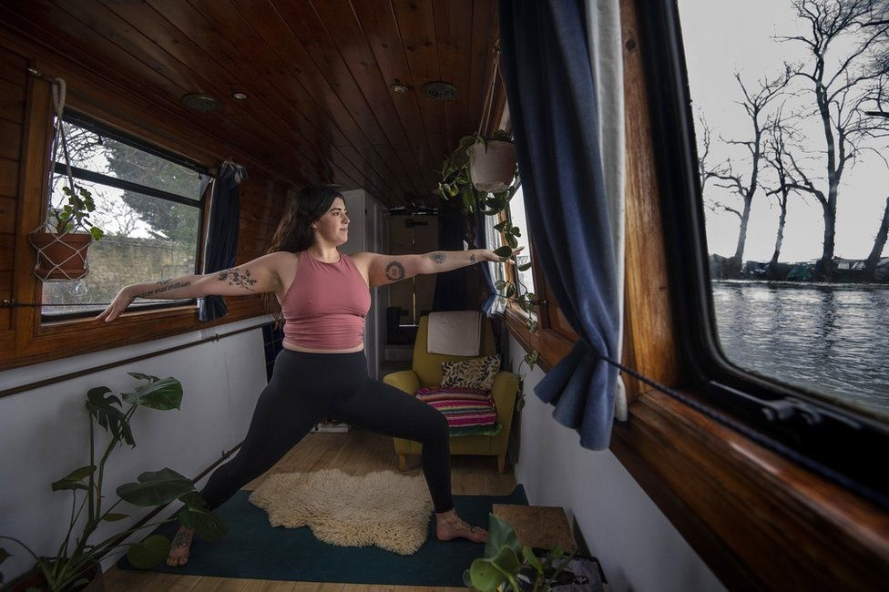
<h2>Item 44</h2>
<p>Context Label: 0</p>
<p>Caption 1: Detainees sleeping in the Manila City Jail in the Philippines.</p>
<p>Context 1: The image shows a group of people, including detainees, sleeping on the floor in a crowded room. The room appears to be a jail cell, as indicated by the presence of bars on the windows. The individuals are resting on the floor, with some of them lying on mats, while others are simply on the concrete floor. The scene suggests that the people are in a confined space, possibly in a jail or a prison.</p>
<p>Caption 2: Detainees are seen sleeping by a small grotto of Mary in the Manila City Jail.</p>
<p>Context 2: The image shows a group of people, including detainees, sleeping in a jail cell. The cell is located near a small grotto of Mary, which is a Catholic shrine. The detainees are resting on the floor, with some of them lying on mats. The scene depicts a humble and simple living environment, with the inmates sharing the space in a close and communal manner.</p>
<p>Ca1vsCon2: [8, 0, 8, 8, 8, 9]</p>
<p>Ca2vsCon1: [9, 9, 9, 9, 9, 9]</p>
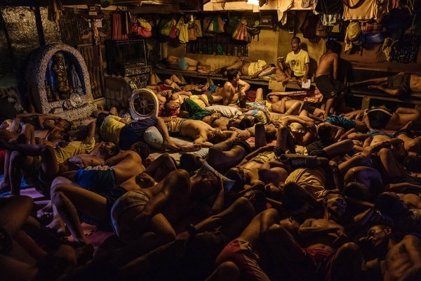
<h2>Item 45</h2>
<p>Context Label: 1</p>
<p>Caption 1: The National Cancer Institute has "admitted" that "cannabis kills cancer."</p>
<p>Context 1: The National Cancer Institute (NCI) is a government agency and does not "admit" or "make admissions" in the same way a person would. The NCI's website and publications do acknowledge the potential benefits of cannabis-derived compounds in cancer treatment, but they emphasize that further research is needed to confirm these benefits and establish safe and effective treatment options. The NCI's position is based on scientific evidence and is not an "admission" of a specific claim.</p>
<p>Caption 2: There is no evidence in any way to “prove” that cannabis could be a viable treatment for cancer, we rank this claim as false.</p>
<p>Context 2: The image shows a prescription bottle, a stethoscope, and a marijuana plant. However, there is no evidence in the image or any other information provided to support the claim that marijuana can be used as a viable treatment for cancer. This claim is subjective and cannot be verified as true.</p>
<p>Ca1vsCon2: [8, 9, 9, 9, 9, 9]</p>
<p>Ca2vsCon1: [5, 2, 5, 2, 2, 2]</p>

<h2>Item 46</h2>
<p>Context Label: 0</p>
<p>Caption 1: A metro train in the city of Spijkenisse, in the Netherlands, rests precariously on an art installation of a whale after crashing through a barrier at the end of the tracks.</p>
<p>Context 1: The image depicts a unique scene in the city of Spijkenisse, Netherlands, where a metro train has crashed through an art installation of a whale. The train is resting on the whale sculpture, causing an unusual and attention-grabbing incident. There are several people gathered around the scene, observing the situation and possibly assessing the damage. In addition to the train and the whale sculpture, there are traffic lights visible in the background, indicating that the train was traveling on a city street. The presence of multiple people suggests that this event has drawn public interest and concern.</p>
<p>Caption 2: A metro train rests precariously on an art installation of a whale in Spijkenisse, near Rotterdam, Netherlands, 2 November 2020</p>
<p>Context 2: The image features a unique scene where a metro train is resting on top of a whale sculpture. The train is positioned on the back of the whale, creating an interesting and artistic display. There are several people present in the scene, some of whom are standing near the train and whale sculpture, while others are further away. The presence of these individuals suggests that this unusual arrangement has attracted attention and possibly serves as an art installation or a creative display in the area.</p>
<p>Ca1vsCon2: [9, 9, 9, 9, 9, 9]</p>
<p>Ca2vsCon1: [8, 7, 8, 7, 8, 6]</p>
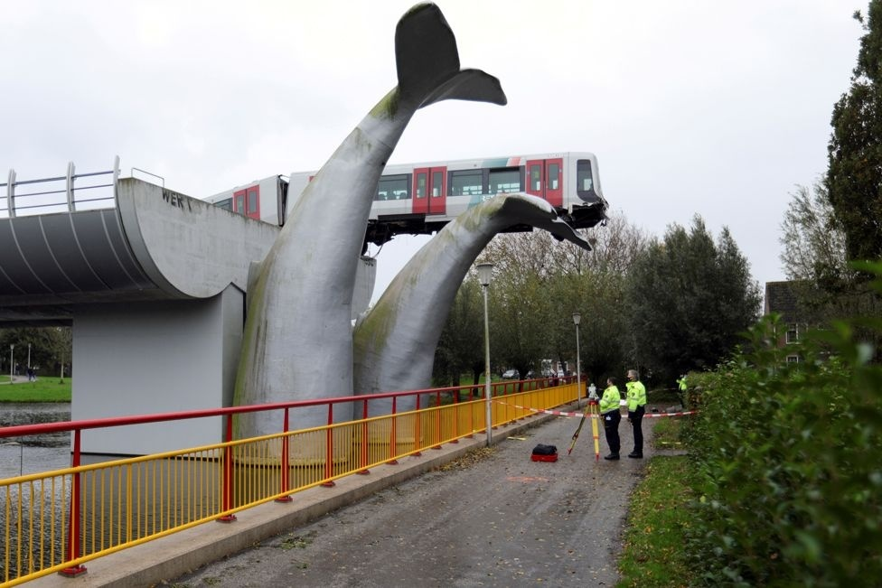
<h2>Item 47</h2>
<p>Context Label: 1</p>
<p>Caption 1: An Omagh plumber tunnelled a hole from under his bed to the local pub 800 feet from his house over the course of 15 years, a court heard today.</p>
<p>Context 1: The image shows a large hole in the ground surrounded by grass, dirt, and trees. The hole appears to be man-made, possibly dug by a plumber as a creative or unusual project. The hole is located near a pub, which suggests that the plumber might have a personal connection to the pub or simply chose it as a destination for his project. The hole is not a typical plumbing issue, but it is unclear whether the plumber was involved in its construction or if it was already existing when he started working on the plumbing issues in the area.</p>
<p>Caption 2: The Irish man digging the tunnel unwittingly fooled thousands of people</p>
<p>Context 2: The image of the man digging a tunnel in the ground turned out to be a hoax. It was a fake image that was digitally altered to create the illusion of a man digging a hole in the ground. Thousands of people were fooled by this fake image, sharing it on social media and believing it to be a real scene. This highlights the importance of verifying the authenticity of shared content and being cautious when consuming information online.</p>
<p>Ca1vsCon2: [5, 5, 7, 5, 5, 5]</p>
<p>Ca2vsCon1: [5, 3, 7, 1, 3, 1]</p>

<h2>Item 48</h2>
<p>Context Label: 1</p>
<p>Caption 1: A 29-year old Calgary local has suffered extensive injuries to his lower body after an unconventional attempt to ‘fill a scuba tank with weed smoke’ failed spectacularly last Thursday night.</p>
<p>Context 1: The image shows a man lying on a hospital gurney with his leg in an air cast and a cast on his arm. The scene appears to be a combination of two different photos, one showing the injured man and the other showing an emergency vehicle and a car. The man is wearing a neck brace and is surrounded by various medical equipment, indicating a serious injury. The presence of the emergency vehicle and the car suggests that the incident might have involved an accident or an injury requiring immediate medical attention.</p>
<p>Caption 2: The photograph of the ruptured scuba tank has been circulating since at least 2008, and the image of the ambulance was taken in 2015 after an assault in Calgary.</p>
<p>Context 2: The image shows a person lying on the ground with an injured leg, surrounded by emergency personnel and vehicles. The scene appears to be a busy street with multiple cars and trucks, as well as an ambulance attending to the injured person. The photograph of the ruptured scuba tank has been circulating since at least 2008, and the image of the ambulance was taken in 2015 after an assault in Calgary.</p>
<p>Ca1vsCon2: [5, 4, 7, 2, 2, 1]</p>
<p>Ca2vsCon1: [5, 2, 7, 1, 2, 1]</p>

<h2>Item 49</h2>
<p>Context Label: 0</p>
<p>Caption 1: The Cow and the Tailor Shop, Rajasthan, by Elizabeth Brooks, from the US</p>
<p>Context 1: The image depicts a cow standing on the sidewalk in front of a tailor shop in a city street. The cow appears to be curiously looking into the shop, possibly attracting the attention of the people inside. There are several people in the scene, with some standing near the cow and others scattered around the street. A motorcycle is parked on the sidewalk, and a bicycle can be seen further back in the scene. The combination of the cow, people, and vehicles creates a lively atmosphere in the street.</p>
<p>Caption 2: A sacred cow in a street in India</p>
<p>Context 2: The image depicts a sacred cow standing in the middle of a street in India. The cow is surrounded by various elements of the urban environment, including a motorcycle, a bicycle, and a car. There are also several people in the scene, with one person standing close to the cow and others scattered around the street. The presence of the sacred cow in the middle of the street highlights the unique blend of traditional and modern elements in the city.</p>
<p>Ca1vsCon2: [5, 5, 5, 7, 6, 6]</p>
<p>Ca2vsCon1: [8, 8, 9, 9, 8, 5]</p>
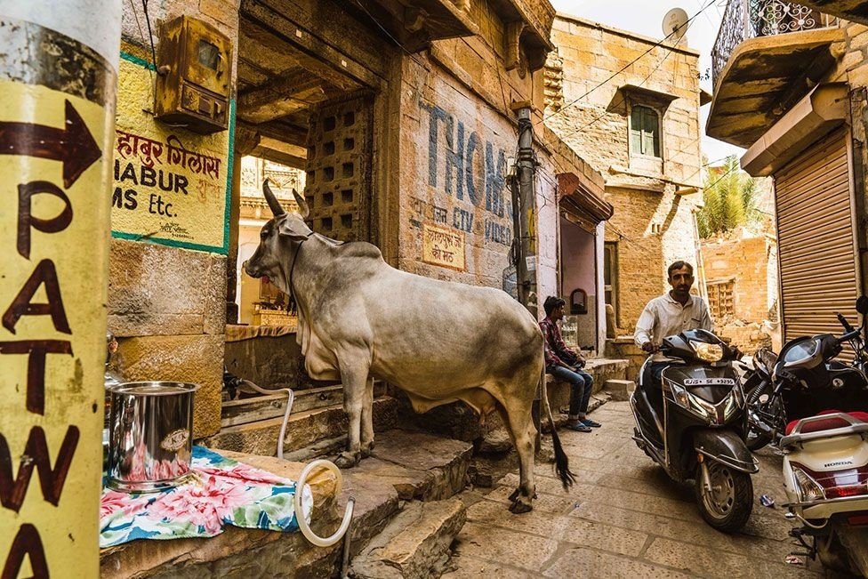
<h2>Item 50</h2>
<p>Context Label: 1</p>
<p>Caption 1: The FBI raided the CDC in the middle of the night to seize data on a link between vaccines and autism.</p>
<p>Context 1: This statement is false and misleading. The Centers for Disease Control and Prevention (CDC) and the Federal Bureau of Investigation (FBI) are two separate agencies with distinct roles and responsibilities. The CDC is a public health agency focused on protecting the health and well-being of Americans, while the FBI is a law enforcement agency responsible for investigating criminal activities. The two agencies do not typically work together on the same projects or share data related to health and criminal investigations. Additionally, there is no evidence to support the claim that the CDC is involved in any cover-up or conspiracy related to vaccines and autism.</p>
<p>Caption 2: A known hoax purveyor spread false claims that the FBI "raided" the CDC in the middle of the night for data on vaccines and autism on the order of President Trump.</p>
<p>Context 2: This image shows the Federal Bureau of Investigation (FBI) headquarters, which is a large building with a clock tower. However, the claims that the FBI "raided" the Centers for Disease Control and Prevention (CDC) in the middle of the night for data on vaccines and autism, as purported by the hoax purveyor, are false. The CDC is an independent agency of the United States government and is not part of the FBI's jurisdiction or responsibilities. The image and the claims made by the hoax purveyor do not align, and it is important to fact-check and verify the accuracy of information before sharing it.</p>
<p>Ca1vsCon2: [5, 0, 1, 0, 1, 0]</p>
<p>Ca2vsCon1: [0, 0, 0, 0, 0, 0]</p>

<h2>Item 51</h2>
<p>Context Label: 0</p>
<p>Caption 1: Kenyan fashion-lover James Maina Mwangi, who once told the BBC he was Africa's most stylish man, poses with some of his pieces on Friday.</p>
<p>Context 1: James Maina Mwangi, who once claimed to be Africa's most stylish man, is seen wearing a hat and a suit with a tie. He is also wearing a purple mask, which adds a unique touch to his outfit. The image shows him posing in front of a rack of clothing, showcasing his personal style and the various pieces he has chosen to wear.</p>
<p>Caption 2: Kenyan fashionista James Maina Mwangi, dressed all in purple, stands beside green, yellow and red suits.</p>
<p>Context 2: The image features a man wearing a purple hat, jacket, and tie, standing next to a rack of colorful suits. The man is wearing a face mask, likely a surgical one, as a precautionary measure against the COVID-19 virus. The man is also wearing a tie, which is visible around his neck. The colorful suits behind him come in various shades and styles, creating a vibrant and eye-catching backdrop.</p>
<p>Ca1vsCon2: [8, 7, 8, 8, 7, 6]</p>
<p>Ca2vsCon1: [9, 0, 9, 9, 9, 9]</p>
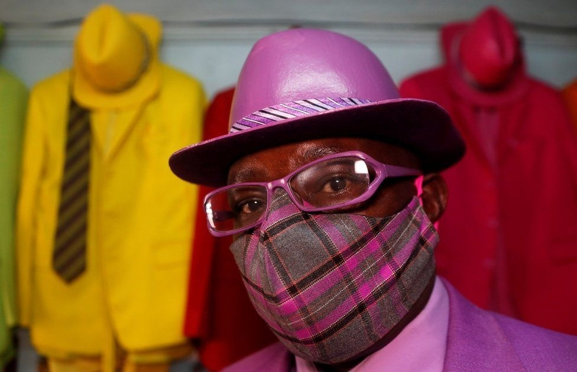
<h2>Item 52</h2>
<p>Context Label: 0</p>
<p>Caption 1: The British Parliament's famous clock tower is being renovated.</p>
<p>Context 1: The British Parliament's famous clock tower, Big Ben, is undergoing renovation work.</p>
<p>Caption 2: Tourists click photographs of the clock tower </p>
<p>Context 2: In the image, two tourists are taking pictures of a clock tower using their cell phones. The clock tower is a prominent architectural feature, and the people are capturing its beauty and significance as a memorable souvenir of their visit. The scene takes place under an archway, which adds to the overall aesthetic of the image.</p>
<p>Ca1vsCon2: [8, 7, 9, 9, 6, 6]</p>
<p>Ca2vsCon1: [5, 3, 7, 5, 5, 3]</p>
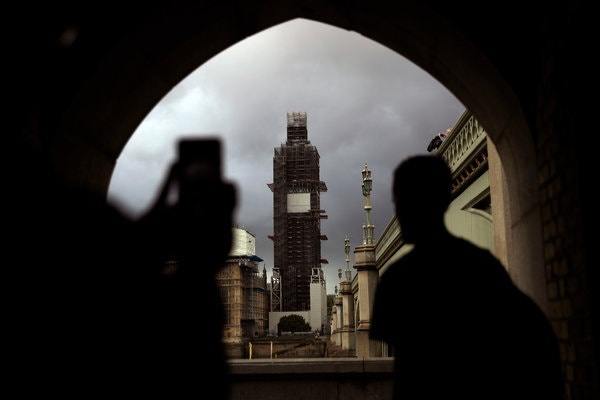
<h2>Item 53</h2>
<p>Context Label: 0</p>
<p>Caption 1: Lex Scott Davis and Trevor Jackson in "Superfly."</p>
<p>Context 1: In the image, Lex Scott-Davis and Trevor Jackson are seen together, both dressed in black, with Lex wearing a black dress and Trevor in a black suit. They are standing next to each other, engaged in a conversation. The scene appears to be set in a room with a dining table and chairs, and there are wine glasses and a cup on the table. The presence of wine glasses and a cup suggests that they might be attending a social event or gathering.</p>
<p>Caption 2: Trevor Jackson (right) plays a suave drug dealer named Priest and Lex Scott Davis is Georgia in SuperFly, Director X’s blinged-out redo of the 1972 blaxploitation classic.</p>
<p>Context 2: In the image, there are two people standing next to each other, with one of them dressed in a fancy black dress and the other in a suit. They are both facing the camera, and the man is wearing a tie. The woman appears to be talking to the man, who is wearing a suit and tie. The scene seems to be a social gathering or a formal event.</p>
<p>Ca1vsCon2: [8, 8, 9, 9, 9, 9]</p>
<p>Ca2vsCon1: [5, 4, 7, 6, 5, 3]</p>

<h2>Item 54</h2>
<p>Context Label: 1</p>
<p>Caption 1: A photograph shows a genuine fossil of a megalodon tooth embedded in a whale bone.</p>
<p>Context 1: The image features a photograph of a genuine fossil of a megalodon tooth embedded in a whale bone. The tooth is large and prominent, with the bone beneath it providing a clear context for the size and scale of the megalodon. The scene is displayed on a table, showcasing the unique and fascinating find.</p>
<p>Caption 2: While this image likely shows a genuine megalodon tooth as well as a genuine whale bone, these two artifacts were not discovered at the same time, in the same location, or in this particular arrangement.</p>
<p>Context 2: The image features a large rock with a tooth carved into it, sitting on a table. The tooth appears to be a genuine megalodon tooth, which is a prehistoric shark tooth. In addition to the tooth, there is a bone, which is also a genuine whale bone. These two artifacts were not discovered at the same time, in the same location, or in this particular arrangement. The tooth and the bone are displayed separately, with the tooth on the rock and the bone on the table.</p>
<p>Ca1vsCon2: [5, 5, 5, 5, 5, 5]</p>
<p>Ca2vsCon1: [5, 4, 7, 3, 5, 2]</p>

<h2>Item 55</h2>
<p>Context Label: 0</p>
<p>Caption 1: British Prime Minister Theresa May addresses the media outside 10 Downing Street, January 16, 2019</p>
<p>Context 1: In the image, British Prime Minister Theresa May is standing in front of a building, addressing the media. She is wearing a blue dress and appears to be speaking into a microphone. The scene takes place at night, with the building's lights illuminating the area. There are several people present in the scene, including members of the media and possibly other staff or security personnel. Some of the people are standing close to the prime minister, while others are positioned further away. The overall atmosphere suggests a formal press conference or public statement being made by the Prime Minister.</p>
<p>Caption 2: Prime minister Theresa May delivers a statement to members of the media in Downing Street after surviving a vote of no confidence in her government. May remained as prime minister after weathering the dramatic no-confidence vote , but was left scrambling to strike a Brexit compromise that could secure the backing of parliament. In her statement, the prime minister exhorted politicians from all parties to ‘put aside self-interest’, and promised to consult with MPs with ‘the widest possible range of views’.</p>
<p>Context 2: The image shows Theresa May, the former British Prime Minister, delivering a statement to the media on the steps of Downing Street. She is standing in front of a building, possibly the Houses of Parliament, and appears to be addressing the public or the press about the recent vote of no confidence in her government. The scene suggests that she is trying to maintain her position and navigate the political situation surrounding Brexit, the United Kingdom's decision to leave the European Union.</p>
<p>Ca1vsCon2: [8, 8, 9, 9, 9, 9]</p>
<p>Ca2vsCon1: [9, 9, 9, 9, 9, 9]</p>

<h2>Item 56</h2>
<p>Context Label: 1</p>
<p>Caption 1: Trash being left behind by the migrant caravan.</p>
<p>Context 1: The image shows a pile of garbage, including clothes, blankets, and personal belongings, left behind by the migrant caravan in a grassy field.</p>
<p>Caption 2: This photograph was not recent and did not show refuse left behind by the caravan of refugees traveling from Honduras to the U.S-Mexico border in October 2018.</p>
<p>Context 2: The image shows a field with clothes, blankets, and personal belongings scattered around, but it is not related to the caravan of refugees from Honduras. The photograph was taken in a park, and the scene depicted is not related to the recent events in October 2018. The presence of a backpack and a bottle in the image does not confirm any connection to the caravan either. The photograph is likely an older image that shows discarded items in a park, unrelated to the current situation.</p>
<p>Ca1vsCon2: [5, 2, 5, 1, 1, 1]</p>
<p>Ca2vsCon1: [0, 0, 0, 0, 0, 0]</p>
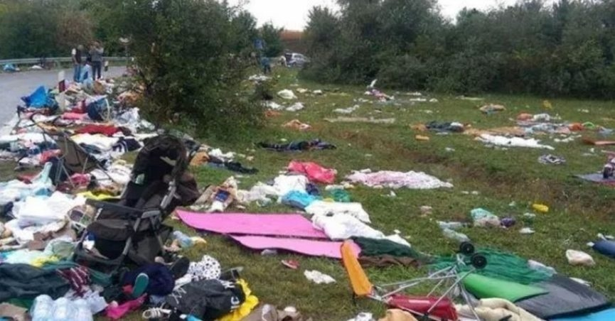
<h2>Item 57</h2>
<p>Context Label: 0</p>
<p>Caption 1: A giraffe crosses a road laced with an electric fence within the Kimana Sanctuary within the Amboseli ecosystem in Kimana</p>
<p>Context 1: The image depicts a giraffe crossing a road in a wildlife sanctuary. The giraffe is walking across the road, which is lined with an electric fence to guide the animals safely. There are several cars and trucks nearby, indicating that the road is a part of a well-visited area. The presence of these vehicles suggests that tourists might be visiting the sanctuary to observe and appreciate the wildlife, including the giraffe. The electric fence ensures the safety of both the animals and the visitors by guiding the animals to the correct path and preventing any accidents or harm.</p>
<p>Caption 2: A giraffe crosses a road laced with an electric fences.</p>
<p>Context 2: In the image, a giraffe is crossing a road that is lined with electric fences. There are several cars and a truck on the road, with one car positioned behind the giraffe and others scattered along the road. The giraffe appears to be walking confidently across the road, while the vehicles seem to be waiting for the giraffe to finish crossing before they continue their journey. The presence of electric fences along the road suggests that the area might be a wildlife reserve or a protected habitat for the giraffe, ensuring the safety of the animal while maintaining traffic flow.</p>
<p>Ca1vsCon2: [9, 9, 9, 9, 9, 9]</p>
<p>Ca2vsCon1: [9, 9, 9, 9, 9, 9]</p>

<h2>Item 58</h2>
<p>Context Label: 1</p>
<p>Caption 1: An image shows a mural painted in 1994 at Denver International Airport that shows citizens of the world wearing masks.</p>
<p>Context 1: The image features a mural painted in 1994 at Denver International Airport that depicts people from various countries wearing surgical masks. The mural is a large painting that covers a wall, showcasing a diverse group of individuals from different parts of the world. The masks symbolize unity and solidarity, as they are worn by people from various countries to represent their shared humanity and the importance of global cooperation. The mural serves as a visual reminder of the need for global collaboration and understanding in the face of global challenges.</p>
<p>Caption 2: This viral image does not show a mural that was painted at the Denver International Airport in 1994. This image shows a modern day artwork that was likely created by CJ Trinidad.</p>
<p>Context 2: The image shows a painting of a woman wearing a mask, with various flags from different countries behind her. This artwork is not related to the Denver International Airport mural from 1994. The painting is a contemporary piece created by CJ Trinidad, and it depicts a woman wearing a mask as a symbol of unity and solidarity. The flags in the background represent the diversity and global nature of the subject.</p>
<p>Ca1vsCon2: [5, 2, 5, 1, 1, 1]</p>
<p>Ca2vsCon1: [5, 2, 5, 3, 3, 1]</p>

<h2>Item 59</h2>
<p>Context Label: 0</p>
<p>Caption 1: And on Wednesday, cars wait patiently for a giraffe to cross the road in Kenya's Kimana Sanctuary.</p>
<p>Context 1: On Wednesday, cars wait patiently for a giraffe to cross the road in Kenya's Kimana Sanctuary.</p>
<p>Caption 2: A giraffe crosses a road laced with an electric fences.</p>
<p>Context 2: In the image, a giraffe is crossing a road that is lined with electric fences. There are several cars and a truck on the road, with one car positioned behind the giraffe and another car further ahead. The giraffe appears to be walking confidently across the road, while the vehicles seem to be waiting for the giraffe to pass. The presence of electric fences along the road suggests that this area might be a wildlife reserve or a protected habitat for the giraffe, ensuring the safety of the animal while maintaining traffic flow.</p>
<p>Ca1vsCon2: [8, 8, 8, 8, 8, 8]</p>
<p>Ca2vsCon1: [9, 9, 9, 9, 9, 9]</p>

<h2>Item 60</h2>
<p>Context Label: 0</p>
<p>Caption 1: Gill Mackintosh spotted this sheep in a bus shelter on a drive out to Huisinish point on North Harris.</p>
<p>Context 1: The image features a sheep standing inside a bus shelter on a road, seemingly curious about its surroundings. The shelter is located near a grassy hill, and the scene appears to be in a rural area. There are a few cars parked nearby, indicating that the location might be a popular spot for visitors or residents. The presence of the sheep in the bus shelter adds a unique and unexpected element to the scene.</p>
<p>Caption 2: Sheep in a bus shelter</p>
<p>Context 2: In the image, a sheep is sitting inside a bus shelter on a grassy hill. The shelter is open, and the sheep appears to be comfortable in its new environment. The scene is unusual, as one would not typically expect to find a sheep in a bus shelter. The shelter is located near a road, and there is a car visible in the background. The presence of the sheep in the bus shelter adds an element of surprise and amusement to the scene.</p>
<p>Ca1vsCon2: [5, 4, 7, 6, 5, 3]</p>
<p>Ca2vsCon1: [8, 7, 9, 9, 7, 5]</p>
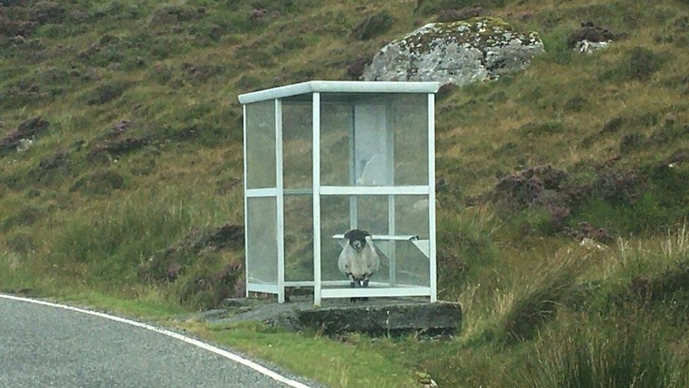
<h2>Item 61</h2>
<p>Context Label: 1</p>
<p>Caption 1: Sex Traffickers in Florida Trick Motorists By Lying in the Road.</p>
<p>Context 1: The image shows a motorist lying in the middle of a highway, with a car nearby. However, the story about sex traffickers tricking motorists by lying in the road is not accurate. This is a fictional scenario created to sensationalize the image and draw attention to the issue of sex trafficking. The actual image shows a person lying in the middle of the road, which is a dangerous situation for both the individual and the motorists passing by.</p>
<p>Caption 2: No evidence was found that the photographs included in the November and December 2019 Facebook posts showed a specific incident of attempted sex trafficking.</p>
<p>Context 2: Upon reviewing the November and December 2019 Facebook posts, it was found that none of the photographs included in these posts depict a specific incident of attempted sex trafficking. The posts primarily consist of images of dead animals on the road, such as a dead cow, and a car accident scene. There is no evidence of any photographs related to sex trafficking attempts in these posts.</p>
<p>Ca1vsCon2: [5, 2, 7, 2, 2, 1]</p>
<p>Ca2vsCon1: [5, 3, 5, 3, 3, 0]</p>

<h2>Item 62</h2>
<p>Context Label: 1</p>
<p>Caption 1: A video supposedly showing an unusually large snare swimming across a river in Brazil</p>
<p>Context 1: The image and video description claim to show a large snare swimming across a river in Brazil. However, the content does not match the visuals. The image shows a snake swimming in a river, but it is not clear if the snake is unusually large or if it is a normal size snake. The video description, on the other hand, shows a large snare, which is not a snake but a type of trap. The discrepancy between the image and the video description makes it difficult to determine if the content is accurate or not.</p>
<p>Caption 2: This video has been severely distorted to make this snake appear much larger.</p>
<p>Context 2: The image shows a large snake crawling through a grassy area near a body of water. The snake appears to be quite long and occupies a significant portion of the scene. The distortion of the image makes the snake seem even larger than it actually is, giving an exaggerated impression of its size. The grassy area and the presence of water suggest that the snake might be in a natural habitat, such as a swamp or a wetland.</p>
<p>Ca1vsCon2: [5, 3, 5, 3, 5, 5]</p>
<p>Ca2vsCon1: [8, 7, 9, 7, 6, 4]</p>

<h2>Item 63</h2>
<p>Context Label: 0</p>
<p>Caption 1: Rescue workers at the site of a train accident on Great Belt Bridge in Nyborg, Denmark.</p>
<p>Context 1: The image depicts a rescue operation at the site of a train accident on the Great Belt Bridge in Nyborg, Denmark. Several rescue workers are gathered around the wreckage, which consists of a train car and a helicopter. The workers are wearing safety gear and working together to assess the situation and provide assistance.In the background, there are traffic lights visible, indicating that the accident occurred in an area with traffic regulation. The presence of the helicopter suggests that it is being used to support the rescue efforts or transport injured individuals. The scene highlights the importance of teamwork and coordination among the rescue workers to address the situation effectively.</p>
<p>Caption 2: The passenger train that was struck by a cargo container in Denmark early Wednesday</p>
<p>Context 2: The image shows a passenger train that has been struck by a cargo container in Denmark early Wednesday. The train is now stopped, and there are several people standing near the train, possibly emergency workers or bystanders. The scene also includes a truck and a helicopter in the vicinity, which may be assisting in the rescue efforts or monitoring the situation. The cargo container appears to have fallen off a truck, causing the train accident.</p>
<p>Ca1vsCon2: [8, 9, 9, 9, 9, 9]</p>
<p>Ca2vsCon1: [9, 9, 9, 9, 9, 9]</p>
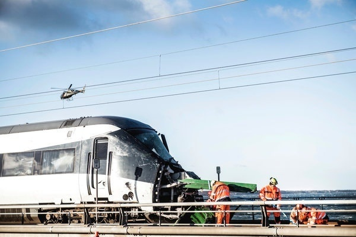
<h2>Item 64</h2>
<p>Context Label: 0</p>
<p>Caption 1: Rescue workers at the site of a train accident on Great Belt Bridge in Nyborg, Denmark.</p>
<p>Context 1: The image depicts a rescue operation at the site of a train accident on the Great Belt Bridge in Nyborg, Denmark. Several rescue workers are gathered around the wreckage, which consists of a train car and a helicopter. The workers are wearing safety gear and working together to assess the situation and provide assistance.In the background, there are traffic lights visible, indicating that the accident occurred in an area with traffic regulation. The presence of the helicopter suggests that it is being used to support the rescue efforts or transport injured individuals. The scene highlights the importance of teamwork and coordination among the rescue workers to address the situation effectively and ensure the safety of those involved.</p>
<p>Caption 2: Emergency crews work at the site of a train accident that killed at least six people Wednesday in Nyborg, Denmark. The accident took place on one of the bridges in the Storebaelt system, also known as the Great Belt link.</p>
<p>Context 2: The image shows emergency crews working at the site of a train accident that has claimed the lives of at least six people. The accident occurred on one of the bridges in the Storebaelt system, also known as the Great Belt link. The scene depicts a helicopter hovering above the train wreckage, with emergency workers on the ground attending to the situation. The presence of multiple people and vehicles, including trucks, suggests that the rescue operation is in progress, and authorities are trying to minimize the impact of the tragedy.</p>
<p>Ca1vsCon2: [9, 9, 9, 9, 9, 9]</p>
<p>Ca2vsCon1: [9, 9, 9, 9, 9, 9]</p>

<h2>Item 65</h2>
<p>Context Label: 0</p>
<p>Caption 1: Indian paramilitary troops in Srinagar in Kashmir this month. Sixty eight percent of the army's equipment is so old that it is officially considered "vintage."</p>
<p>Context 1: The image shows Indian paramilitary troops in Srinagar, Kashmir, with a truck and a bus in the background. The presence of old military equipment, such as the vintage trucks, suggests that the Indian army might be facing challenges in terms of modernization and equipment upgrades. This could potentially impact their ability to effectively respond to various situations or maintain a high level of readiness. The situation in Kashmir, in particular, has been the subject of ongoing conflict and tensions, which might require the army to adapt and update their equipment to maintain a strong presence and ensure public safety.</p>
<p>Caption 2: Kashmir braces for worst as shelling, gunbattles escalate</p>
<p>Context 2: The image shows a group of armed soldiers in a city street, with some of them walking in front of a truck. The presence of the soldiers indicates that the situation in the city might be tense or undergoing military operations. The escalation of shelling and gunbattles in Kashmir has raised concerns about the safety of the residents, and the city is bracing for the worst as the conflict continues. The government and the military must prioritize the protection of civilians and ensure that they are not caught in the crossfire during these operations.</p>
<p>Ca1vsCon2: [8, 7, 8, 7, 6, 5]</p>
<p>Ca2vsCon1: [8, 7, 8, 7, 6, 4]</p>

<h2>Item 66</h2>
<p>Context Label: 0</p>
<p>Caption 1: Policemen stand guard near the state secretariat anticipating protests following reports of two women of menstruating age entering the Sabarimala temple, one of the world's largest Hindu pilgrimage sites, in Thiruvananthapuram, Kerala, India, last week.</p>
<p>Context 1: The image shows a group of policemen standing in front of a fence, guarding the entrance to the state secretariat. They are dressed in yellow and green uniforms and are equipped with batons. The presence of the policemen suggests that they are anticipating protests and ensuring public order in the area. The situation likely arose due to reports of two women of menstruating age entering the Sabarimala temple, one of the world's largest Hindu pilgrimage sites, in Thiruvananthapuram, Kerala, India. This has been a controversial issue in the region, with some people advocating for the rights of women to enter the temple and others opposing it on religious grounds. The policemen's presence serves to maintain peace and order in the area, as the situation could potentially become tense due to the sensitive nature of the issue.</p>
<p>Caption 2: Defying Court Order, Police Bar 10 Women from Praying at Ancient Temple in Indian State: Reports</p>
<p>Context 2: In the Indian state of Tamil Nadu, a group of 10 women was barred from entering an ancient temple by police officers, despite a court order allowing them to pray. The incident occurred on August 26, 2021, when the women attempted to enter the temple, but were stopped by the police. The women were protesting a ban on female entry at the temple, which is considered discriminatory by some. The situation has sparked outrage and condemnation from various quarters, including human rights organizations and political leaders. The incident also highlights the ongoing debate surrounding religious practices and gender equality in India.</p>
<p>Ca1vsCon2: [8, 8, 9, 9, 9, 9]</p>
<p>Ca2vsCon1: [9, 9, 9, 9, 9, 9]</p>
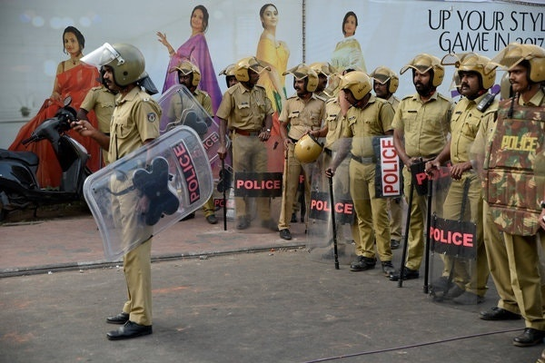
<h2>Item 67</h2>
<p>Context Label: 0</p>
<p>Caption 1: Jemal Ahmed chases away a swarm of locusts, after the locusts stormed his sorghum and sweet cane farm in Jawaha, Ethiopia.</p>
<p>Context 1: In the image, a man is standing in a field of corn, holding a long stick and attempting to scare away a swarm of locusts. The locusts are swarming across the field, and the man is trying to protect his crops from being damaged by the insects. This scene highlights the efforts of farmers to protect their harvests from pests and maintain productivity on their land.</p>
<p>Caption 2: A man chases away locusts from his crops</p>
<p>Context 2: In the image, a man is standing in a field of corn, holding a long stick to chase away locusts. He is trying to protect his crops from the pests, which can cause damage to the plants and potentially reduce the yield. The man's action demonstrates his dedication to maintaining a healthy and productive crop, and his efforts to protect his investment in the field.</p>
<p>Ca1vsCon2: [9, 9, 9, 9, 9, 9]</p>
<p>Ca2vsCon1: [9, 9, 9, 9, 9, 9]</p>
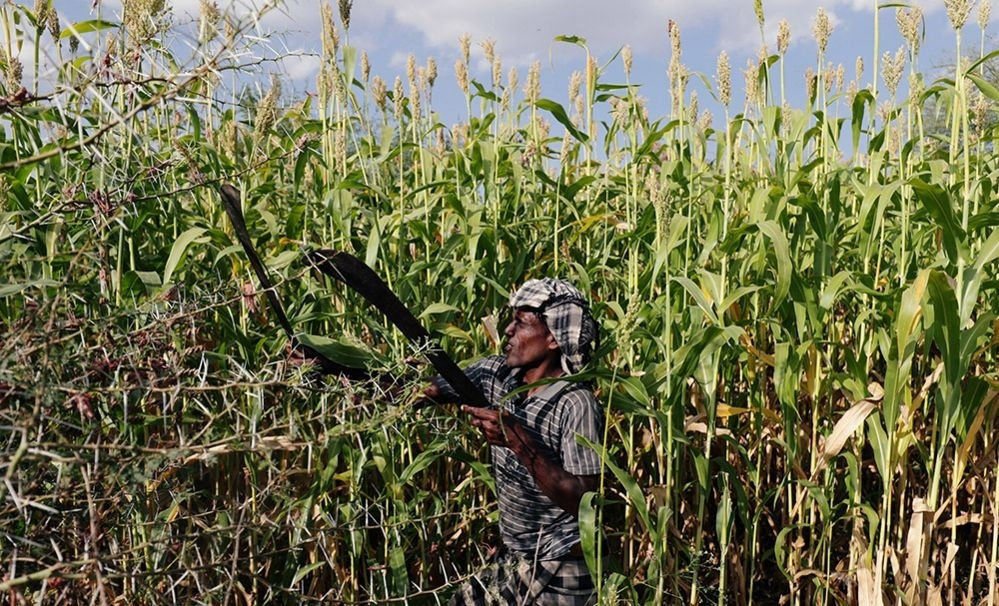
<h2>Item 68</h2>
<p>Context Label: 0</p>
<p>Caption 1: A member of a feminist collective paints the helmet of a riot police officer during a protest against gender and police violence, in Mexico City, Mexico November 11, 2020.</p>
<p>Context 1: In the image, a woman is holding a red paintbrush and painting the helmet of a riot police officer who is standing behind her. The scene takes place during a protest, possibly against gender and police violence, as indicated by the context. There are several other people in the image, some of whom are also participating in the protest or observing the event. The riot police officer's helmet is being covered with red paint, symbolizing the opposition to the police force and their actions during the protest.</p>
<p>Caption 2: A demonstrator paints the helmet visor of a riot police officer, in Mexico City, Mexico, 11 November 2021</p>
<p>Context 2: The image depicts a protest in Mexico City, where a group of people, including a riot police officer, are gathered. A protester is seen painting the visor of the riot police officer with a red substance, possibly to symbolize bloodshed or opposition to the government. The riot police officer is wearing a helmet and a uniform, and is standing among the crowd. There are several other people in the scene, some of whom are also wearing helmets, likely part of the riot police force. The protest appears to be taking place in an urban setting, with buildings and streets visible in the background.</p>
<p>Ca1vsCon2: [9, 9, 9, 9, 9, 9]</p>
<p>Ca2vsCon1: [9, 9, 9, 9, 9, 9]</p>

<h2>Item 69</h2>
<p>Context Label: 1</p>
<p>Caption 1: President Obama passed a law requiring Grandparents to Get All Their Grandchildren Every Weekend.</p>
<p>Context 1: This is a false statement as President Obama did not pass any law related to grandparents and weekend visits. The image shows two people, a man and a woman, holding a baby, but it has no connection to the topic of grandparents and weekend visits. The statement is a humorous fabrication intended to create a light-hearted response.</p>
<p>Caption 2: Reports that President Obama had passed a law requiring grandparents to pick up their grandchildren every weekend came from a site that generates user-created hoax news.</p>
<p>Context 2: The reports claiming that President Obama had passed a law requiring grandparents to pick up their grandchildren every weekend are false and misleading. These claims are not based on any actual legislation or policy from the Obama administration. The story is likely a hoax or a fabricated news report designed to grab attention and spread misinformation. It is important to verify the accuracy of information shared online before sharing it with others.</p>
<p>Ca1vsCon2: [4, 2, 4, 2, 2, 1]</p>
<p>Ca2vsCon1: [5, 0, 1, 0, 1, 2]</p>

<h2>Item 70</h2>
<p>Context Label: 0</p>
<p>Caption 1: a woman walks past a mural reminding Abidjan's residents of anti-coronavirus hygiene measures</p>
<p>Context 1: In the image, a woman is walking past a mural on a building that features a painting of a man wearing a surgical mask. The mural is intended to remind Abidjan's residents of the importance of practicing anti-coronavirus hygiene measures. The woman is also wearing a mask, which further emphasizes the message of the mural. The scene highlights the city's efforts to raise awareness about staying safe during the pandemic and maintaining social distancing practices.</p>
<p>Caption 2: a large mural depicting a person wearing a mask</p>
<p>Context 2: The image features a woman walking down the street while wearing a mask. She is passing by a large mural on the side of a building, which depicts a person wearing a mask. The mural is vibrant and eye-catching, adding a unique visual element to the scene. The woman's actions of wearing a mask and walking by the mural suggest that she might be following safety precautions or simply appreciating the artwork.</p>
<p>Ca1vsCon2: [9, 0, 9, 9, 9, 9]</p>
<p>Ca2vsCon1: [8, 7, 8, 7, 7, 6]</p>

<h2>Item 71</h2>
<p>Context Label: 1</p>
<p>Caption 1: Actor Jaden Smith committed suicide in July 2016.</p>
<p>Context 1: I'm sorry, but that information is incorrect. Actor Jaden Smith did not commit suicide in July 2016. He is still alive and well. The image in the description shows him laughing and smiling with another person, which indicates that the events depicted in the image did not involve any suicidal behavior.</p>
<p>Caption 2: A hoax article reported that the actor (and teenaged son of Jada Pinkett Smith and Will Smith) had killed himself.</p>
<p>Context 2: The image shows two men sitting at a table, with one of them laughing. However, the caption associated with the image is a hoax article that has been circulating on social media, claiming that the actor (and teenaged son of Jada Pinkett Smith and Will Smith) had killed himself. This information is false and spreads misinformation. It is important to verify the authenticity of information shared online before spreading it.</p>
<p>Ca1vsCon2: [8, 0, 9, 0, 8, 9]</p>
<p>Ca2vsCon1: [4, 0, 1, 0, 1, 2]</p>

<h2>Item 72</h2>
<p>Context Label: 1</p>
<p>Caption 1: In Indonesia, in the town of Toraja, a woman leaves her grave after being dead for 3 years.</p>
<p>Context 1: The image depicts a woman in Indonesia, in the town of Toraja, leaving her grave after being dead for three years. She is surrounded by a group of people, including a man in a blue shirt who is assisting her. The scene takes place in a dirt field, and the woman is dressed in traditional Toraja clothing. The people in the image appear to be helping her in her transition from the grave, possibly performing a customary ritual or celebration to mark this significant event in her life.</p>
<p>Caption 2: The photograph does not show an actual zombie.</p>
<p>Context 2: The photograph does not show an actual zombie. Instead, it shows a person in a costume, likely for a themed event or performance.</p>
<p>Ca1vsCon2: [8, 7, 9, 9, 5, 5]</p>
<p>Ca2vsCon1: [5, 3, 5, 3, 3, 0]</p>

<h2>Item 73</h2>
<p>Context Label: 0</p>
<p>Caption 1: Felix Tshisekedi, a largely untested candidate, received more than seven million votes, according to results released by the Electoral Commission.</p>
<p>Context 1: In the image, Felix Tshisekedi is seen standing in front of a crowd of people, possibly celebrating his election victory. He is wearing a white shirt and a tie, and he appears to be smiling. The crowd consists of several individuals, all gathered together to witness and celebrate the victory. The scene conveys a sense of excitement and triumph, as the people have come together to support and honor their newly elected leader.</p>
<p>Caption 2: Felix Tshisekedi, 55, at his party headquarters in KInshasa the night his provisional election victory was announced on January 10, 2019</p>
<p>Context 2: In the image, Felix Tshisekedi, the newly elected president of the Democratic Republic of Congo, is standing in front of a crowd of people. He is wearing a white shirt and a tie, and he appears to be smiling. The people in the crowd are celebrating the election results, and some of them are holding cell phones, possibly capturing the moment or sharing the news with others. The atmosphere seems joyful and optimistic as the country welcomes its new leader.</p>
<p>Ca1vsCon2: [8, 9, 9, 9, 9, 9]</p>
<p>Ca2vsCon1: [8, 8, 9, 9, 9, 0]</p>

<h2>Item 74</h2>
<p>Context Label: 1</p>
<p>Caption 1: A photograph shows members of the NYPD wearing "I Can Breathe" shirts mocking the death of George Floyd.</p>
<p>Context 1: The image shows a group of police officers in New York City, dressed in their uniforms, standing together and wearing "I Can Breathe" shirts. These shirts are a reference to the slogan "I Can't Breathe" that emerged in response to the death of George Floyd, a black man who was killed by a police officer in 2014. The officers' choice to wear these shirts mocking the original slogan has caused controversy and criticism, as it appears to be disrespectful to the memory of the man who died under questionable circumstances. The image has sparked debate about the appropriateness of police officers engaging in political statements while on duty and the impact of their actions on public perception.</p>
<p>Caption 2: After New York cops murdered Eric Garner, they had tshirts printed up to celebrate</p>
<p>Context 2: The image shows a group of police officers standing together, wearing t-shirts that say "I Can't Breathe" and "I Can Breathe NYC Police." These shirts are likely a reference to the death of Eric Garner, who died after being placed in a chokehold by a New York City police officer during an arrest in 2014. The phrase "I Can't Breathe" became a rallying cry for protesters and the public, calling attention to the incident and the broader issue of police brutality and racial profiling. The officers' shirts, therefore, serve as a symbol of solidarity and support for the cause.</p>
<p>Ca1vsCon2: [8, 9, 9, 3, 9, 9]</p>
<p>Ca2vsCon1: [8, 9, 9, 7, 9, 9]</p>

<h2>Item 75</h2>
<p>Context Label: 0</p>
<p>Caption 1: Ten years on, Japan mourns victims of earthquake and Fukushima disaster</p>
<p>Context 1: Ten years ago, on March 11, 2011, a magnitude 9.0 earthquake struck Japan, followed by a tsunami that caused devastating damage and loss of life. The disaster, known as the Great East Japan Earthquake, also led to the Fukushima Daiichi nuclear disaster, which released radioactive materials into the environment. To commemorate the victims and the events of that tragic day, Japan has organized various events and ceremonies, including a special memorial service in Tokyo. The Prime Minister, Shinzo Abe, and other dignitaries are expected to attend the event, where they will pay their respects to the victims and their families. The ceremony will be held at the National Theater, where a large number of candles will be lit to honor the memory of those who lost their lives in the disaster.</p>
<p>Caption 2: Paper lanterns are lit for the victims on the anniversary of the earthquake and tsunami disaster. Tokyo, Japan, 11 March 2022</p>
<p>Context 2: The image shows a large group of people gathered in a field, with many lit lanterns arranged in rows. The people are sitting and standing around, with some of them holding their own lanterns. The scene appears to be a commemorative event for the victims of the earthquake and tsunami disaster that occurred in Japan in 2011. The lanterns are lit to honor the memory of those who lost their lives and to provide a sense of unity and support for the people affected by the tragedy.</p>
<p>Ca1vsCon2: [9, 9, 9, 9, 9, 9]</p>
<p>Ca2vsCon1: [9, 9, 9, 9, 9, 9]</p>
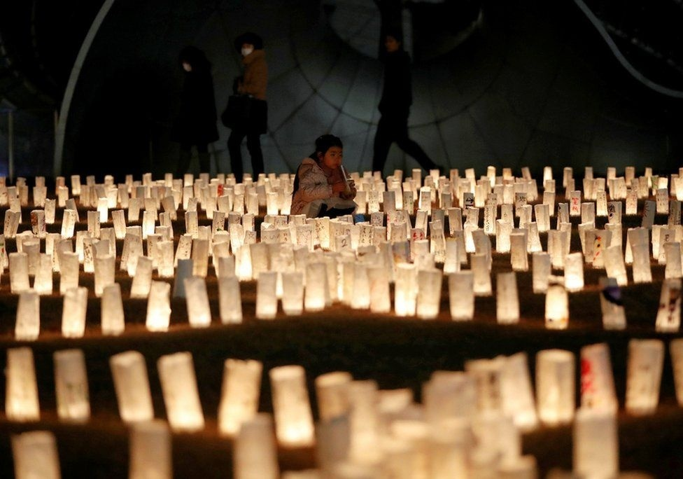
<h2>Item 76</h2>
<p>Context Label: 1</p>
<p>Caption 1: A graphic shows concepts for dress uniforms officially under consideration by the U.S. Space Force.</p>
<p>Context 1: The image displays a graphic that shows various concepts for the dress uniforms of the U.S. Space Force, which is a newly established branch of the military. There are multiple uniform designs, including a combination of blue and white colors, as well as a more traditional military style. The designs include different types of hats, ties, and insignia, showcasing the variety of options being considered for the new branch's dress uniforms. The image provides a visual representation of the ongoing process to establish a unique identity for the U.S. Space Force through its dress uniforms.</p>
<p>Caption 2: The uniform graphic being shared on social media is not an official U.S. Space Force uniform design concept</p>
<p>Context 2: The image being shared on social media is not an official U.S. Space Force uniform design concept. It is a graphic that has been altered and manipulated, and the person who shared it may have added or changed elements to create a visually appealing or humorous image. It is important to note that the U.S. Space Force is still in the process of establishing its uniform design, and any unofficial designs or images circulating on social media may not accurately represent the final design or intent of the organization.</p>
<p>Ca1vsCon2: [8, 9, 9, 3, 7, 5]</p>
<p>Ca2vsCon1: [5, 4, 7, 3, 5, 5]</p>

<h2>Item 77</h2>
<p>Context Label: 1</p>
<p>Caption 1: A picture  showing Goldie Hawn and Kurt Russell both wearing Donald Trump t-shirts </p>
<p>Context 1: The image shows Goldie Hawn and Kurt Russell, both wearing Donald Trump t-shirts, standing next to each other. They are posing for a picture, and it appears to be a fun and casual moment between the two famous actors.</p>
<p>Caption 2: An image of actors Goldie Hawn and Kurt Russell wearing Donald Trump campaign shirts is a digital fabrication.</p>
<p>Context 2: The image of actors Goldie Hawn and Kurt Russell wearing Donald Trump campaign shirts is a digital fabrication. It is not an actual photograph of the two actors, but rather a manipulated image created to depict them as supporters of the Donald Trump campaign. The image has been altered to include the shirts and the presence of Trump campaign logos, which are not part of the original scene. This digital manipulation is used for entertainment purposes or to create a specific message, but it is not an accurate representation of the actors' political views or actions.</p>
<p>Ca1vsCon2: [5, 0, 3, 0, 1, 2]</p>
<p>Ca2vsCon1: [5, 2, 5, 2, 3, 1]</p>

<h2>Item 78</h2>
<p>Context Label: 0</p>
<p>Caption 1: Coffin makers in Harare, Zimbabwe, prepare to put the finishing touches to their work.</p>
<p>Context 1: In the image, two men are working together to finish a wooden casket in a workshop. They are both focused on their task, ensuring the casket is completed to the highest standard. The workshop appears to be well-equipped, with a car visible in the background. The men are likely skilled craftsmen, specializing in creating custom-made wooden caskets for the local community.</p>
<p>Caption 2: Coffins at a workshop in Mbare, Harare, Zimbabw</p>
<p>Context 2: The image shows a man in a workshop in Mbare, Harare, Zimbabwe, handling a large wooden box. The man is wearing a blue shirt and is surrounded by several wooden boxes, indicating that he is working with coffins. The workshop appears to be well-equipped, with a truck parked nearby, possibly for transportation of the coffins. The scene suggests that the man is involved in the process of creating or assembling these wooden boxes, which are likely used for burial purposes.</p>
<p>Ca1vsCon2: [9, 9, 9, 9, 9, 9]</p>
<p>Ca2vsCon1: [9, 0, 9, 9, 9, 9]</p>
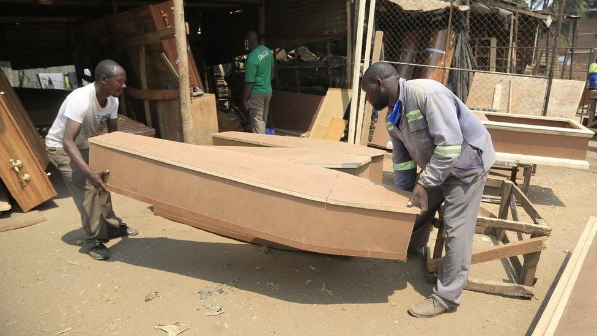
<h2>Item 79</h2>
<p>Context Label: 0</p>
<p>Caption 1: A controlled detonation was carried out after an unexploded World War Two bomb was found in south-west England</p>
<p>Context 1: A controlled detonation was carried out after an unexploded World War Two bomb was found in south-west England. The bomb was discovered in a field near a farm, and authorities took immediate action to ensure public safety. The explosive was dealt with by experts who carried out the controlled detonation to minimize the risk of accidents and harm to the surrounding area. This incident serves as a reminder of the dangers left behind from past conflicts and the importance of staying vigilant for any signs of unexploded ordnance.</p>
<p>Caption 2: photo shows the unexploded bomb with their house in the background</p>
<p>Context 2: The image shows an unexploded bomb sitting in a field near a house. The bomb is large and appears to be a rock, but it is still a potential hazard. The house is located close to the bomb, and it is unclear if the bomb is an actual bomb or a large rock. The presence of the bomb in such proximity to the house and the field poses a risk to the safety of the residents and anyone in the area. It is crucial to address the situation and ensure the safety of the people and property in the area.</p>
<p>Ca1vsCon2: [5, 5, 5, 7, 6, 6]</p>
<p>Ca2vsCon1: [8, 9, 9, 9, 9, 9]</p>
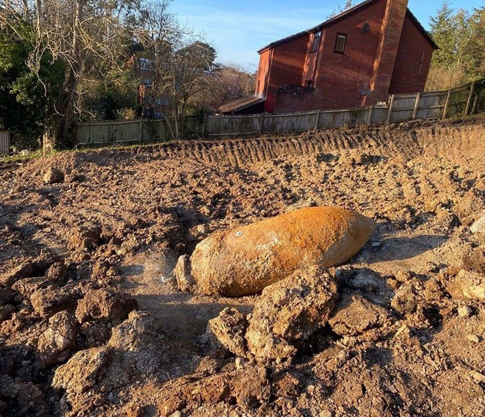
<h2>Item 80</h2>
<p>Context Label: 1</p>
<p>Caption 1: Hillary Clinton “got her wish” that someone like Donald Trump would run for office</p>
<p>Context 1: In the image, Hillary Clinton is smiling next to Donald Trump, who is wearing a yellow tie. This scene suggests that Hillary Clinton's wish for a candidate like Donald Trump to run for office has come true. However, it is important to note that the image does not necessarily imply an endorsement or support for either candidate. The image simply captures a moment where two individuals with different political views are posing together, possibly at a formal event or a political gathering.</p>
<p>Caption 2: Several different media outlets, including CNN, NBC, ABC, The New York Times, and The Hollywood Reporter, have published similar images from that photo op and also confirmed that, yes, Bill and Hillary Clinton did attend the Trumps’ wedding.</p>
<p>Context 2: The image shows former US President Bill Clinton and former US Secretary of State Hillary Clinton posing together at a wedding, both dressed in formal attire. They are standing next to each other, smiling and enjoying the event.</p>
<p>Ca1vsCon2: [8, 9, 9, 9, 9, 9]</p>
<p>Ca2vsCon1: [5, 3, 5, 4, 3, 2]</p>

<h2>Item 81</h2>
<p>Context Label: 0</p>
<p>Caption 1: Decoding Watson, a new film about Dr. James D. Watson, explores the gulf between his scientific brilliance and his views on race.</p>
<p>Context 1: The image shows an older man with white hair, wearing a suit and tie, sitting in a chair and looking thoughtful. The man appears to be Dr. James D. Watson, a renowned scientist known for his role in discovering the structure of DNA. The film Decoding Watson, which explores Dr. Watson's views on race, suggests that his scientific brilliance and his views on race may not align, creating a gulf between the two aspects of his life. The image captures the man's contemplative expression, emphasizing the complexity of his thoughts and the issues he addresses in the film.</p>
<p>Caption 2: Meet James Watson, the Nobel Prize-winning scientist behind the double helix as he confronts his complex legacy. With unprecedented access to Watson and his family, "American Masters: Decoding Watson" explores his life, achievements, controversies and contradictions.</p>
<p>Context 2: The image shows an older man with white hair, wearing a suit and tie, sitting in a chair and looking thoughtful. The man appears to be James Watson, the Nobel Prize-winning scientist behind the double helix, as he confronts his complex legacy.</p>
<p>Ca1vsCon2: [9, 9, 9, 9, 9, 9]</p>
<p>Ca2vsCon1: [9, 0, 9, 9, 9, 9]</p>
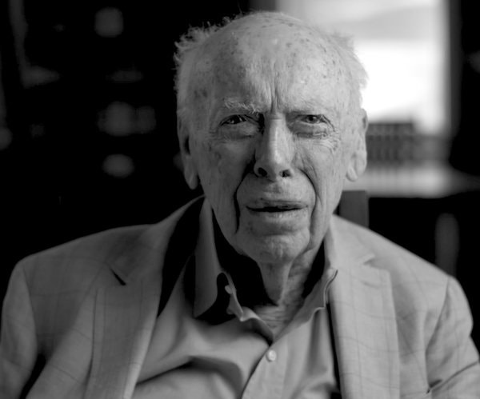
<h2>Item 82</h2>
<p>Context Label: 1</p>
<p>Caption 1: Putin’s daughter had died after taking her second dose of the COVID-19 vaccine:</p>
<p>Context 1: This is a false and malicious rumor. There is no evidence to support that Putin's daughter has died or that she took the COVID-19 vaccine. It is important to verify the accuracy of information before sharing it.</p>
<p>Caption 2: A video supposedly showing Putin’s daughter taking the vaccine actually showed a volunteer unrelated to the Russian president</p>
<p>Context 2: The image and the video are not the same. The image shows a woman taking a blood pressure test, while the video supposedly showing Putin's daughter taking the vaccine is actually a different person, a volunteer unrelated to the Russian president.</p>
<p>Ca1vsCon2: [8, 0, 9, 0, 8, 6]</p>
<p>Ca2vsCon1: [5, 2, 5, 1, 2, 1]</p>

<h2>Item 83</h2>
<p>Context Label: 1</p>
<p>Caption 1: Kendrick Lamar bought and publicly destroyed the gun used by George Zimmerman to kill Trayvon Martin.</p>
<p>Context 1: Kendrick Lamar, a famous rapper, bought and publicly destroyed the gun used by George Zimmerman to kill Trayvon Martin. This act of gun control advocacy and anti-violence demonstrates Kendrick Lamar's stance against gun violence and his support for stricter gun control measures.</p>
<p>Caption 2: Lamar preforming in 2013.</p>
<p>Context 2: The image shows a man on stage, wearing a black hat and a black jacket, performing in front of a crowd of people. He is holding a microphone and appears to be singing or rapping. The audience is made up of various individuals, some of whom are holding cell phones, capturing the moment or sharing the experience with others. The scene takes place in a concert setting, with the man on stage being the main focus of attention as he delivers his performance.</p>
<p>Ca1vsCon2: [5, 4, 7, 3, 5, 3]</p>
<p>Ca2vsCon1: [5, 3, 5, 2, 1, 1]</p>

<h2>Item 84</h2>
<p>Context Label: 1</p>
<p>Caption 1: In this photo taken from the Turkish side of the border between Turkey and Syria, in Suruc, southeastern Turkey, a U.S forces outpost is seen on a hilltop outside Ayn Al Arab or Kobani, Syria, Saturday, Oct. 12, 2019.</p>
<p>Context 1: The image shows a U.S. forces outpost on a hilltop in Syria, as seen from the Turkish side of the border. The outpost is located near the city of Ayn Al Arab or Kobani, which is under the control of the Syrian Democratic Forces (SDF), an alliance supported by the U.S. in the ongoing conflict. The presence of the U.S. forces in this area indicates their involvement in the fight against ISIS and their support for the SDF in the region.</p>
<p>Caption 2: A scene from the cement factory abandoned by municipality</p>
<p>Context 2: The image depicts an abandoned cement factory with a large, empty lot surrounding it. The factory appears to be in a state of disrepair, with no signs of activity or maintenance. The surrounding area consists of a mix of dirt and cement, giving the impression of a neglected and unused space. There are no people or vehicles present in the scene, further emphasizing the sense of abandonment and neglect. The overall atmosphere of the image is one of desolation and decay.</p>
<p>Ca1vsCon2: [5, 2, 5, 2, 1, 1]</p>
<p>Ca2vsCon1: [5, 5, 7, 7, 3, 2]</p>
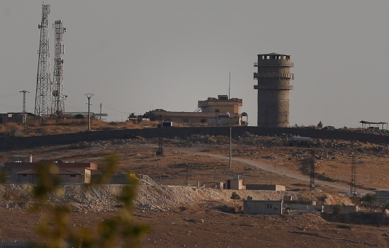
<h2>Item 85</h2>
<p>Context Label: 1</p>
<p>Caption 1: Senator Bernie Sanders plans to attend a portion of a meeting with former staff members from his 2016 presidential campaign who have raised concerns about sexism and harassment.</p>
<p>Context 1: Senator Bernie Sanders, a democratic presidential candidate, has announced his plans to attend a portion of a meeting with former staff members from his 2016 presidential campaign who have raised concerns about sexism and harassment within the campaign. The meeting is scheduled to take place on January 24, 2020, in Washington D.C. Sanders' decision to attend the meeting reflects his commitment to addressing these issues and ensuring a safe and respectful work environment for his staff and future campaigns.</p>
<p>Caption 2: Senator Bernie Sanders of Vermont leaving a news conference after the final Yemen Resolution vote in December.</p>
<p>Context 2: The image shows Senator Bernie Sanders of Vermont walking out of a news conference after the final Yemen Resolution vote. He is wearing a suit and tie, and he is holding papers in his hand. The senator appears to be in a hurry, possibly heading to his next appointment or task. The scene captures a moment of political activity and decision-making in the United States.</p>
<p>Ca1vsCon2: [5, 4, 7, 3, 5, 2]</p>
<p>Ca2vsCon1: [5, 4, 6, 3, 2, 1]</p>

<h2>Item 86</h2>
<p>Context Label: 0</p>
<p>Caption 1: This double rainbow was framed over the fellow arc of Glasgow's famous squinty bridge.</p>
<p>Context 1: The image captures a beautiful double rainbow arching over the Glasgow's famous "squinty" bridge, which is a unique architectural feature. The bridge is surrounded by a cityscape, including buildings and a car park. The presence of the rainbows adds a serene and captivating atmosphere to the scene.</p>
<p>Caption 2: Rainbows over squinty bridge in Glasgow</p>
<p>Context 2: The image features a beautiful rainbow arching over a large bridge in Glasgow, Scotland. The bridge spans the entire width of the scene, with the rainbow's colors illuminating the sky above it. The cityscape in the background adds to the overall charm of the scene. The presence of the rainbow creates a captivating and serene atmosphere, making the image a lovely representation of the city and its surroundings.</p>
<p>Ca1vsCon2: [9, 1, 9, 9, 9, 9]</p>
<p>Ca2vsCon1: [9, 9, 9, 9, 9, 9]</p>

<h2>Item 87</h2>
<p>Context Label: 0</p>
<p>Caption 1: Bradley Cooper and Lady Gaga are both contenders for "A Star Is Born."</p>
<p>Context 1: The image shows Bradley Cooper and Lady Gaga, both contenders for the film "A Star Is Born," singing together.</p>
<p>Caption 2: Bradley Cooper and Lady Gaga in "A Star Is Born."</p>
<p>Context 2: In the image, Bradley Cooper and Lady Gaga are performing together on stage. Lady Gaga is singing into a microphone, while Bradley Cooper is playing a guitar. They are both dressed in costumes, and their performance appears to be part of a movie scene. The image captures the essence of their collaboration and the emotional connection between the two artists.</p>
<p>Ca1vsCon2: [8, 8, 8, 8, 9, 9]</p>
<p>Ca2vsCon1: [8, 7, 8, 7, 5, 4]</p>
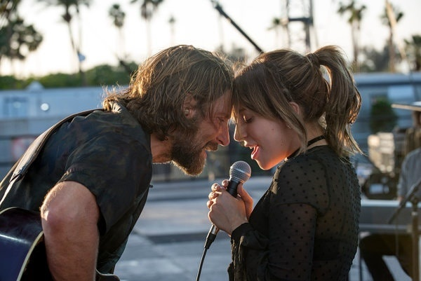
<h2>Item 88</h2>
<p>Context Label: 1</p>
<p>Caption 1: Disney announced in March 2018 that it was remaking 'Bedknobs and Broomsticks' with Kate Winslet.</p>
<p>Context 1: The image shows a poster for the remake of "Bedknobs and Broomsticks" with the tagline "Journey to Enchantment" and the main character, played by Kate Winslet. The poster is displayed on a wall, and the movie is slated for release in 2018.</p>
<p>Caption 2: A fan-made movie poster tricked some readers.</p>
<p>Context 2: The image on the poster is a fake movie poster for a fictional movie called "Bedknobs and Broomsticks." The poster features a woman dressed in a green dress, which is a visual element commonly associated with the character of Polly in the movie. However, the movie is not based on the famous novel "The Borrowers" and does not exist. The misleading poster has been created using a stock image of a woman in a green dress and a fake movie title to deceive readers.</p>
<p>Ca1vsCon2: [9, 0, 9, 9, 9, 9]</p>
<p>Ca2vsCon1: [5, 2, 5, 1, 2, 2]</p>

<h2>Item 89</h2>
<p>Context Label: 1</p>
<p>Caption 1: Photographs show the Trump family looting historical artifacts from the White House.</p>
<p>Context 1: There are no photographs in the image description provided. Could you please provide more context or information about the photographs you are referring to?</p>
<p>Caption 2: The Lincon statue will be returned to a museum, as incoming officials generally choose their own items from among national artefacts to decorate the White House during their term.</p>
<p>Context 2: The statue of Abraham Lincoln, which has been placed in the White House's East Room, will be returned to the National Museum of American History (NMAH) in Washington, D.C. when the incoming officials take office. Typically, incoming presidents and their administrations choose their own items from among national treasures to decorate the White House. In this case, the Lincoln statue is a part of the NMAH's collection, and it will be returned to the museum once the new administration takes charge.</p>
<p>Ca1vsCon2: [5, 5, 5, 3, 5, 0]</p>
<p>Ca2vsCon1: [5, 2, 5, 1, 1, 1]</p>

<h2>Item 90</h2>
<p>Context Label: 1</p>
<p>Caption 1: A video shows a driver evading police by bouncing the car off the roofs of two vehicles.</p>
<p>Context 1: The image shows a video of a driver evading police by bouncing the car off the roofs of two vehicles. The scene appears to be a computer-generated or rendered image, depicting a high-speed chase. The car is seen in mid-air, jumping over the top of a red car, while another car is also involved in the stunt. There are several other cars in the scene, including one on the left side and another on the right side of the video. A traffic light is also visible in the background, indicating that the chase is taking place in an urban environment. The driver's actions are dangerous and reckless, as evidenced by the daring maneuver being performed.</p>
<p>Caption 2: The video is not real andwas created by a 3D artist who uses the handle @2NCS on social media</p>
<p>Context 2: The image is a computer-generated (CGI) animation, created by a 3D artist using Adobe After Effects, and not a real-life scene. The artist, who uses the handle @2NCS on social media, has created a video depicting a city street with various vehicles, including cars and trucks, driving down the road. The animation also features a car crashing into a building, adding a sense of action and excitement to the scene. The purpose of creating such animations is to showcase the artist's skills and creativity in creating dynamic and visually appealing visuals.</p>
<p>Ca1vsCon2: [8, 0, 9, 0, 8, 9]</p>
<p>Ca2vsCon1: [8, 7, 8, 7, 7, 5]</p>

<h2>Item 91</h2>
<p>Context Label: 0</p>
<p>Caption 1: A clear sky in Edinburgh gifted this magical once-in-a-lifetime shot of the great conjunction of Jupiter and Saturn to photographer Gavin Dougan</p>
<p>Context 1: The image captures a beautiful nighttime view of Edinburgh, Scotland, with its iconic castle illuminated against a dark sky. The cityscape is set against a backdrop of a clear sky, making it an ideal night for stargazing and capturing the celestial event. The city's historic architecture, including the castle, is highlighted by the warm glow of the lights, creating a picturesque scene. In the foreground, there are several cars parked along the street, adding to the urban atmosphere of the city. The presence of Jupiter and Saturn in the sky adds a unique and captivating element to the photograph, making it a memorable moment for the photographer and viewers alike.</p>
<p>Caption 2: Jupiter and Saturn over Edinburgh</p>
<p>Context 2: The image features a nighttime view of the city of Edinburgh, Scotland, with its iconic castle illuminated against a dark sky. The castle is surrounded by a row of buildings, creating a picturesque scene. In the foreground, there are two large, brightly lit street lamps that stand out against the darkness. The cityscape is further enhanced by the presence of Jupiter and Saturn, which can be seen in the sky above the city. The combination of the illuminated castle, the street lamps, and the celestial bodies creates a captivating and serene atmosphere.</p>
<p>Ca1vsCon2: [9, 9, 9, 9, 9, 9]</p>
<p>Ca2vsCon1: [9, 9, 9, 9, 9, 9]</p>
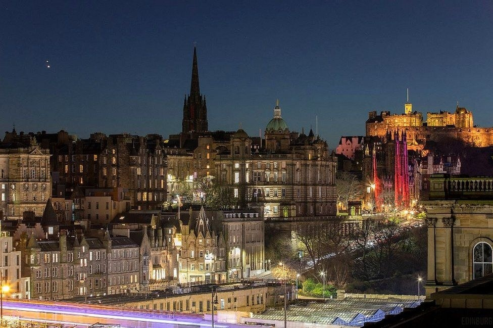
<h2>Item 92</h2>
<p>Context Label: 1</p>
<p>Caption 1: A photograph showing high walls of snow lining the edges of a highway in Massachusetts</p>
<p>Context 1: The image depicts a group of people walking along a snow-covered road, likely in a mountainous area. The snow has piled up on both sides of the road, creating a barrier that the people are navigating. There are at least 13 people visible in the scene, some of them carrying backpacks. They are walking in a line, likely following a path to avoid the deepest snow or the most dangerous sections of the road. The snow-covered road and the presence of people suggest that this could be a skiing or hiking area during the winter season.</p>
<p>Caption 2: The image actually captures a stretch of road near the Japanese city of Towada in Aomori prefecture.</p>
<p>Context 2: The image shows a snow-covered road with a group of people walking along it. The scene appears to be a mountainous area, possibly in Japan, with the snow-covered road leading to a tunnel. The people are likely pedestrians, and they are carrying backpacks as they walk along the snowy path. The snow-covered road and the presence of pedestrians suggest that this location might experience heavy snowfall during the winter season, making it a challenging environment for travelers and residents alike.</p>
<p>Ca1vsCon2: [9, 9, 9, 9, 9, 9]</p>
<p>Ca2vsCon1: [5, 5, 7, 3, 5, 1]</p>

<h2>Item 93</h2>
<p>Context Label: 0</p>
<p>Caption 1: Zurich's Bahnhofstrasse</p>
<p>Context 1: The image is a black and white photo of a busy city street in Zurich, Switzerland. The street is filled with cars and people, creating a bustling atmosphere. There are several cars parked and driving along the street, with one car in the foreground and others further back. A bus is also visible on the street, adding to the traffic.Numerous people can be seen walking and standing on the sidewalks, contributing to the lively scene. Some of them are carrying handbags, indicating that they might be shopping or running errands. The overall impression is of a busy, vibrant city street in Zurich, with both pedestrians and vehicles navigating their way through the urban environment.</p>
<p>Caption 2: Cars in the street</p>
<p>Context 2: There are two cars in the street, one old and one new, parked next to each other.</p>
<p>Ca1vsCon2: [9, 9, 9, 9, 9, 9]</p>
<p>Ca2vsCon1: [5, 3, 5, 3, 1, 1]</p>
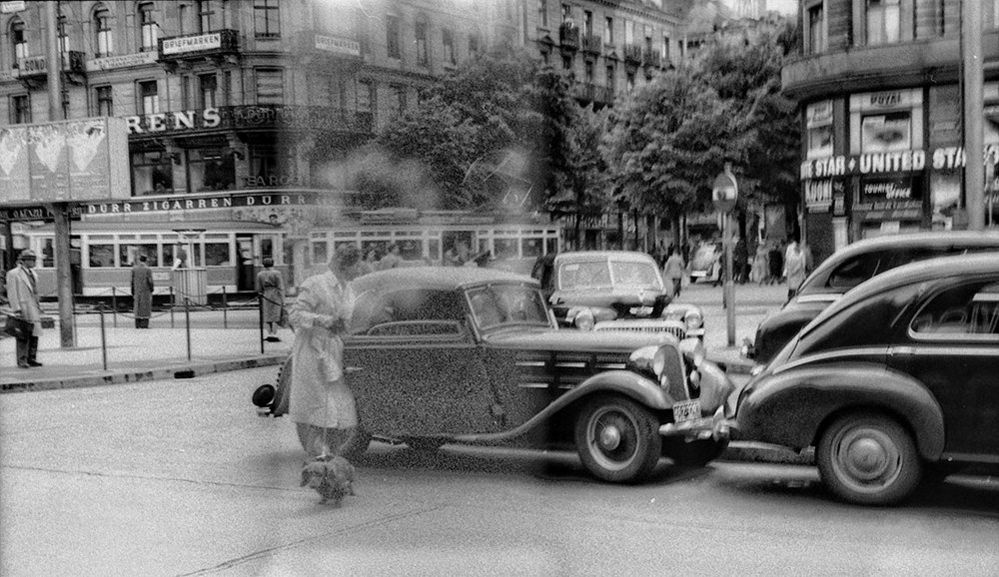
<h2>Item 94</h2>
<p>Context Label: 1</p>
<p>Caption 1: Icelandic officials prevented Vice President Mike Pence from entering their country today. Law enforcement informed the Vice President and his team they were following the recent law protecting the populace from religious fanatics.</p>
<p>Context 1: This information is not accurate. Vice President Mike Pence did not visit Iceland today, and there was no law preventing him from entering the country. The Vice President was in Norway for a meeting with Prime Minister Erna Solberg.</p>
<p>Caption 2: The Vice President Mike Pence was not given the boot from Iceland.</p>
<p>Context 2: There is a misconception that Vice President Mike Pence was "booted" from Iceland. In reality, he was not physically booted from the country, but rather, he did not have the opportunity to visit Iceland due to the COVID-19 pandemic. The decision to cancel his visit was made to ensure the safety of both the Vice President and the Icelandic population.</p>
<p>Ca1vsCon2: [8, 0, 9, 0, 9, 9]</p>
<p>Ca2vsCon1: [4, 0, 3, 0, 1, 1]</p>

<h2>Item 95</h2>
<p>Context Label: 1</p>
<p>Caption 1: Since people were not taking the police seriously the Kenyan government started using the Maasai tribe for the curfew</p>
<p>Context 1: The image shows a man in a red and black outfit, likely a Maasai warrior, performing a traditional dance. The Maasai tribe has a rich cultural heritage and are known for their colorful attire. It is true that the Kenyan government has used the Maasai tribe for curfew purposes, as a way to enforce safety measures and maintain order in the area. However, it is important to note that this was done in response to people not taking the police seriously and not as a means of exploiting the tribe. The use of the Maasai tribe in this context demonstrates the importance of respecting and valuing cultural heritage while addressing safety and security concerns.</p>
<p>Caption 2: While the person in this video is not a member of the Maasai tribe who was employed by the Kenyan government to whip people who disobeyed self-quarantining orders, the video was taken in Kenya during the COVID-19 pandemic and shows a person who is encouraging (in their own weird way) social distancing.</p>
<p>Context 2: The image shows a man in a red and black outfit, wearing a red hat, and holding a whip. He is standing in a room with a chair and a dining table. While the man in the image is not a member of the Maasai tribe, his outfit and actions are reminiscent of the tribe's traditional practices. The man is not whipping anyone, but instead, he is making a funny gesture, possibly to encourage social distancing. The scene takes place in Kenya, which is experiencing the COVID-19 pandemic.</p>
<p>Ca1vsCon2: [8, 8, 8, 8, 8, 8]</p>
<p>Ca2vsCon1: [5, 2, 5, 3, 2, 1]</p>

<h2>Item 96</h2>
<p>Context Label: 1</p>
<p>Caption 1: A single eruption from a volcano puts 10,000 times more carbon dioxide into the atmosphere than all of human activity has throughout history.</p>
<p>Context 1: The image shows a volcano spewing out a large amount of ash and smoke, which indicates a significant eruption. Volcanic eruptions can have a significant impact on the environment and climate. A single eruption from a volcano can release a large amount of ash, gas, and other particles into the atmosphere, which can lead to various effects, such as air pollution, disruption of air travel, and changes in climate. In fact, a single eruption from a volcano can put 10,000 times more carbon dioxide into the atmosphere than all of human activity has throughout history. This highlights the importance of monitoring and understanding volcanic activity to minimize the potential impacts on the environment and human life.</p>
<p>Caption 2: The Cleveland Volcano in Alaska, NASA</p>
<p>Context 2: The image features a volcano with a large cloud of ash and smoke rising from it, indicating an active eruption. The volcano is located in a remote area, possibly in the Arctic, with a vast expanse of snow surrounding it. The ash cloud is seen billowing high into the sky, covering a significant portion of the image. The powerful eruption of the volcano is a natural spectacle, and the presence of snow around it highlights the contrast between the volcanic activity and the cold environment.</p>
<p>Ca1vsCon2: [9, 9, 9, 9, 9, 9]</p>
<p>Ca2vsCon1: [5, 3, 7, 5, 5, 3]</p>
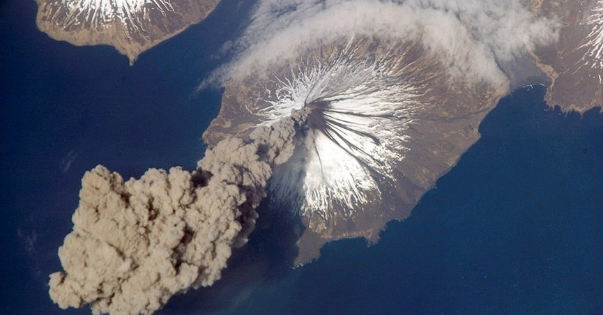
<h2>Item 97</h2>
<p>Context Label: 0</p>
<p>Caption 1: a woman walks past a mural reminding Abidjan's residents of anti-coronavirus hygiene measures</p>
<p>Context 1: In the image, a woman is walking past a mural on a building that features a painting of a man wearing a surgical mask and glasses. The mural is intended to remind Abidjan's residents of the importance of practicing anti-coronavirus hygiene measures. The woman is also wearing a mask as she walks, following the message conveyed by the mural.</p>
<p>Caption 2: A woman walks past graffiti on a wall depicting hygiene measures to curb the spread of the COVID-19 coronavirus in Abidjan on May 15, 2020.</p>
<p>Context 2: The image shows a woman walking down a street in Abidjan, Ivory Coast, wearing a face mask and a hat. She is passing by a wall with graffiti that promotes hygiene measures to prevent the spread of COVID-19. The graffiti includes a picture of a man wearing a face mask and a tie, as well as a hand gesture indicating the need to wash hands. The woman appears to be following the hygiene guidelines and taking precautions to protect herself and others from the virus.</p>
<p>Ca1vsCon2: [9, 9, 9, 9, 9, 9]</p>
<p>Ca2vsCon1: [9, 0, 9, 9, 9, 9]</p>
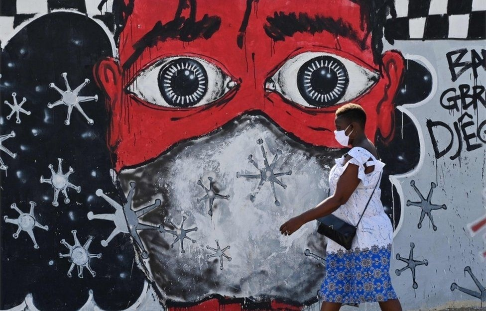
<h2>Item 98</h2>
<p>Context Label: 0</p>
<p>Caption 1: An old man leans up against his truck in Granby.</p>
<p>Context 1: The image depicts an old man leaning against his truck in a rural setting, possibly near a forest. The truck is parked on the side of the road, and the man appears to be observing the surroundings or taking a break. In the background, there is a fire visible, which could be a wildfire or a forest fire. The presence of the fire adds a sense of urgency and concern to the scene, as the old man and his truck may be affected by the fire or potentially be there to help with firefighting efforts.</p>
<p>Caption 2: East Troublesome fire grows as residents evacuate near Granby</p>
<p>Context 2: The East Troublesome fire, which started on September 1st, has grown significantly, and residents have been evacuated from the area near Granby, Colorado. The fire has now reached over 10,000 acres, and it is spreading rapidly due to the dry conditions and strong winds. The fire is threatening the town of Grand Lake, and the nearby communities are also at risk.In the image, a man is sitting on a chair outside, observing the fire. The scene also includes a truck, a dog, and a chair, all of which are placed near the man. The presence of these objects suggests that the man is likely a resident of the area who has been affected by the evacuation order. The fire has prompted the evacuation of several homes and businesses, and it remains a significant concern for the local authorities and residents.</p>
<p>Ca1vsCon2: [8, 8, 8, 8, 8, 8]</p>
<p>Ca2vsCon1: [8, 8, 8, 9, 7, 5]</p>
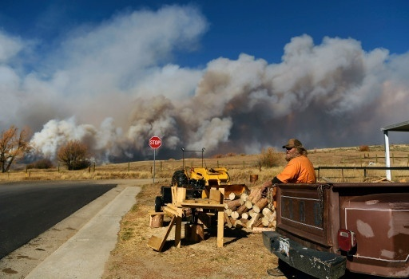
<h2>Item 99</h2>
<p>Context Label: 1</p>
<p>Caption 1: A truck being launched via a catapult off the deck of the USS Gerald Ford.</p>
<p>Context 1: In the image, a truck is being launched via a catapult off the deck of the USS Gerald Ford, a large aircraft carrier. The truck is in mid-air, soaring through the air as it is being propelled by the powerful catapult system of the aircraft carrier. This scene showcases the impressive technology and capabilities of the USS Gerald Ford and the United States Navy, allowing them to launch vehicles, such as trucks, from their ships to support various missions and operations.</p>
<p>Caption 2: The viral Facebook video suggests that the Navy was being wasteful, as these “trucks” were lost and left to decay in the water. But that’s not always the case. These tests were conducted in the relatively shallow waters of the James River (as opposed to the ocean) and can usually be retrieved for additional tests.</p>
<p>Context 2: The image shows a large naval ship with several smaller boats floating in the water. The presence of these boats in the water is not necessarily a sign of wastefulness. They could be part of the ship's complement of smaller vessels, which are used for various purposes such as transportation, patrol, or training. Additionally, these boats might have been temporarily left in the water for maintenance, refueling, or other operational reasons. The image does not provide enough information to determine the exact purpose of these boats or their status, so it is not possible to conclude whether they are being wasted or not.</p>
<p>Ca1vsCon2: [9, 9, 9, 9, 9, 9]</p>
<p>Ca2vsCon1: [5, 5, 5, 7, 5, 0]</p>

<h2>Item 100</h2>
<p>Context Label: 0</p>
<p>Caption 1: A normally busy street near Potsdamer Platz on Tuesday in Berlin.</p>
<p>Context 1: The image depicts a quiet street near Potsdamer Platz in Berlin on a Tuesday afternoon. There are several traffic lights along the street, with one green light visible. A person is walking down the street, crossing the road at a crosswalk. The street appears to be relatively empty, with no cars or other pedestrians visible at the moment. The scene gives an impression of a calm and peaceful day in the city.</p>
<p>Caption 2: Corona bans have turned the German capital, Berlin into a ghost town</p>
<p>Context 2: The image depicts a city street with a person walking down the sidewalk, and multiple traffic lights are visible. The presence of the traffic lights and the person walking indicate that the street is an active urban area. However, the statement that the German capital, Berlin, has turned into a ghost town due to the Corona virus pandemic is not accurate. While the city has experienced a decrease in activity and some businesses have closed, the streets are not completely empty, and people are still going about their daily lives. The image does not provide enough evidence to support the claim that Berlin is a ghost town.</p>
<p>Ca1vsCon2: [5, 2, 7, 3, 1, 1]</p>
<p>Ca2vsCon1: [8, 7, 9, 7, 6, 6]</p>

<h2>Item 101</h2>
<p>Context Label: 1</p>
<p>Caption 1: A white woman named Ricky Ellsworth was killed by a black police officer in Minneapolis, Minnesota</p>
<p>Context 1: The image is a fake news story, and the woman named Ricky Ellsworth does not exist. The headline is misleading and intended to spread misinformation.</p>
<p>Caption 2: The woman in this photograph is not “Ricky Ellsworth.”</p>
<p>Context 2: The woman in the photograph is not "Ricky Ellsworth." The error in the caption is due to the misidentification of the woman in the image. It is important to verify and correct the information displayed in the captions to ensure accuracy and avoid misleading the viewers.</p>
<p>Ca1vsCon2: [8, 0, 0, 0, 0, 0]</p>
<p>Ca2vsCon1: [5, 3, 5, 3, 5, 3]</p>

<h2>Item 102</h2>
<p>Context Label: 0</p>
<p>Caption 1: In December, the police kept watch over a protest of Prime Minister Viktor Orban's labor policies.</p>
<p>Context 1: The image shows a protest taking place in front of a building, with a large crowd of people gathered. Among the crowd, there are several individuals wearing masks, possibly as a form of anonymity or to express solidarity with the protest. The protesters are holding signs, indicating their message or cause. In the background, there are two TV screens displaying content related to the protest or the event happening outside. The presence of the police officers in riot gear suggests that the situation might be tense or potentially volatile. Overall, the scene captures a moment of public dissent and activism.</p>
<p>Caption 2: A drawing depicting Hungarian President Viktor Orban is projected on the wall of the TV building during a protest.</p>
<p>Context 2: The image shows a protest taking place outside a TV building, with a large drawing of Hungarian President Viktor Orban displayed prominently on the building's wall. There are several people gathered in the street, some of them holding signs, expressing their dissatisfaction with the current political situation. The crowd consists of at least 13 individuals, with some of them standing closer to the building, while others are further away. The protest appears to be well-attended, with people from various backgrounds coming together to express their concerns about the current political climate.</p>
<p>Ca1vsCon2: [5, 4, 7, 3, 5, 2]</p>
<p>Ca2vsCon1: [8, 8, 9, 9, 9, 9]</p>
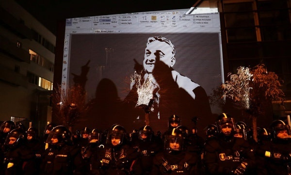
<h2>Item 103</h2>
<p>Context Label: 0</p>
<p>Caption 1: After telling officers he was 'about to die', Floyd eventually lost consciousness and would never regain it</p>
<p>Context 1: In the image, a memorial is set up for a man who passed away, with a painting of angels on the wall and a bench nearby. A man is kneeling in front of the memorial, possibly paying his respects or reflecting on the loss. The scene suggests that the man who passed away was a notable figure, possibly a famous boxer, as indicated by the presence of a painting of angels and the memorial itself. The man's untimely death might have left a significant impact on the community, prompting people to gather and honor his memory with this tribute.</p>
<p>Caption 2: A man kneels in front of a memorial and mural that honors in Houston’s Third Ward, where Floyd grew.</p>
<p>Context 2: The image depicts a man kneeling in front of a memorial and mural that honors the life of a famous rapper who passed away. The mural features a painting of a dove flying over a heart, symbolizing the artist's passing. The man appears to be paying his respects to the rapper, possibly a fan or friend of the artist. The memorial is located in Houston's Third Ward, where the rapper grew up and made his mark in the music industry.</p>
<p>Ca1vsCon2: [9, 9, 9, 9, 9, 9]</p>
<p>Ca2vsCon1: [5, 1, 5, 3, 1, 1]</p>

<h2>Item 104</h2>
<p>Context Label: 0</p>
<p>Caption 1: A postal worker in the East Village neighborhood of Manhattan.</p>
<p>Context 1: The image features a postal worker in the East Village neighborhood of Manhattan, sitting on a fire hydrant and surrounded by trash. The worker is wearing a mask, likely to protect against the spread of a contagious disease. The scene takes place on a street corner with a trash can nearby, and there are several cars parked or passing by in the background. The postal worker appears to be taking a break or waiting for something, while the presence of trash and the mask suggest concerns about public health and cleanliness in the area.</p>
<p>Caption 2: The Postal Service in the Days of the Virus</p>
<p>Context 2: The image shows a postal worker wearing a mask and gloves while standing next to a mailbox on the sidewalk. This scene highlights the measures postal workers have to take to ensure public health and safety during the COVID-19 pandemic. The postal worker is wearing a mask and gloves to protect themselves and the public from the virus. This demonstrates the importance of adhering to personal protective equipment (PPE) guidelines and following public health recommendations during the pandemic. The postal worker is also likely following other safety protocols, such as social distancing and contact tracing, to minimize the risk of spreading the virus.</p>
<p>Ca1vsCon2: [8, 7, 9, 8, 6, 5]</p>
<p>Ca2vsCon1: [9, 9, 9, 9, 9, 9]</p>
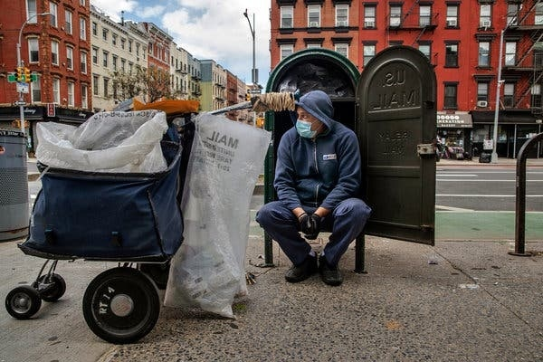
<h2>Item 105</h2>
<p>Context Label: 1</p>
<p>Caption 1: President Joe Biden signed an executive order in 2021 allowing the U.S. to fund abortions abroad.</p>
<p>Context 1: In the image, President Joe Biden is sitting at his desk in the Oval Office, signing an executive order. The executive order allows the United States to fund abortions abroad. This action reflects President Biden's commitment to reproductive rights and women's health, as well as his promise to expand access to abortion services globally.</p>
<p>Caption 2: None of the moves by Biden, however, authorize the United States government to fund abortions abroad.</p>
<p>Context 2: In the image, President Biden is sitting at his desk in the Oval Office, signing a document. However, none of the moves by Biden, as of yet, authorize the United States government to fund abortions abroad. It is important to note that the image and description do not provide enough context to determine the exact content of the document or the purpose behind the signing. As such, it is not possible to determine whether the document involves funding for abortions abroad or not.</p>
<p>Ca1vsCon2: [5, 2, 5, 2, 5, 5]</p>
<p>Ca2vsCon1: [5, 4, 5, 3, 3, 2]</p>

<h2>Item 106</h2>
<p>Context Label: 0</p>
<p>Caption 1: Lamar preforming in 2013.</p>
<p>Context 1: The image shows a man on stage, wearing a black hat and a black jacket, performing in front of a crowd of people. He is holding a microphone and singing into it, capturing the attention of the audience. The man appears to be a rapper, as suggested by the presence of a microphone and his attire. The crowd is made up of various individuals, some of whom are closer to the stage, while others are further back. The scene takes place in a concert setting, with the audience members likely enjoying the music and the performance.</p>
<p>Caption 2: Kendrick Lamar in concert.</p>
<p>Context 2: The image captures a lively concert scene with a crowd of people gathered around a stage. The main focus is on a man standing on the stage, who is a rapper, as he holds a microphone and performs. The audience is engaged and attentive, with some of them raising their hands in the air, possibly to signal their approval or excitement. The atmosphere is energetic, and the audience seems to be enjoying the performance.</p>
<p>Ca1vsCon2: [9, 9, 9, 9, 9, 9]</p>
<p>Ca2vsCon1: [9, 9, 9, 9, 9, 9]</p>

<h2>Item 107</h2>
<p>Context Label: 0</p>
<p>Caption 1: Magnum and Monica, both Pomeranians, and Honey, a schnauzer, getting trimmed at Modern Dog Grooming and School in Bangkok.</p>
<p>Context 1: The image shows a woman cutting the fur of two small dogs, Magnum and Monica, who are sitting on stools in a grooming area. The woman is using scissors to trim their fur, ensuring their appearance is well-maintained. In addition to the two dogs being groomed, there is another dog, Honey, who is also present in the grooming area. The dogs are sitting on various stools, with one placed near the woman and the other two positioned in different parts of the grooming area. The scene takes place in a grooming salon, where the woman is providing grooming services for these small dogs.</p>
<p>Caption 2: The figure shows a pet salon in Bangkok</p>
<p>Context 2: The image depicts a woman cutting a dog's hair in a pet salon in Bangkok. The dog is sitting on a chair, and the woman is using scissors to groom the dog. The salon is well-equipped with multiple chairs, some of which are occupied by other dogs. There are at least four other dogs in the salon, with some sitting on chairs and others standing nearby. The salon also features a sink for cleaning purposes. The overall atmosphere suggests a professional grooming and pampering experience for the pets.</p>
<p>Ca1vsCon2: [5, 5, 7, 7, 6, 6]</p>
<p>Ca2vsCon1: [9, 9, 9, 9, 9, 9]</p>

<h2>Item 108</h2>
<p>Context Label: 0</p>
<p>Caption 1: While community leader Janet Sharty hands out popcorn, lollipops and biscuits for children as New Year's gifts.</p>
<p>Context 1: In the image, a group of people, including a community leader named Janet Sharty, are handing out popcorn, lollipops, and biscuits to children as New Year's gifts. The children are smiling and enjoying the festive atmosphere. The scene takes place in a yard, with a dining table visible in the background. There are several people in the image, including the community leader and the children, all participating in this joyful event.</p>
<p>Caption 2: Children smile holding their sweets.</p>
<p>Context 2: In the image, a group of children is gathered outdoors, smiling and holding their wrapped sweets. They seem to be enjoying their time together and sharing their treats with each other. The scene appears to be a festive occasion, possibly during the holiday season, as evidenced by the wrapped sweets. The children are standing in a line, with some of them closer to the camera and others further back, creating a sense of togetherness and happiness in the scene.</p>
<p>Ca1vsCon2: [9, 9, 9, 9, 9, 9]</p>
<p>Ca2vsCon1: [8, 8, 8, 8, 8, 8]</p>
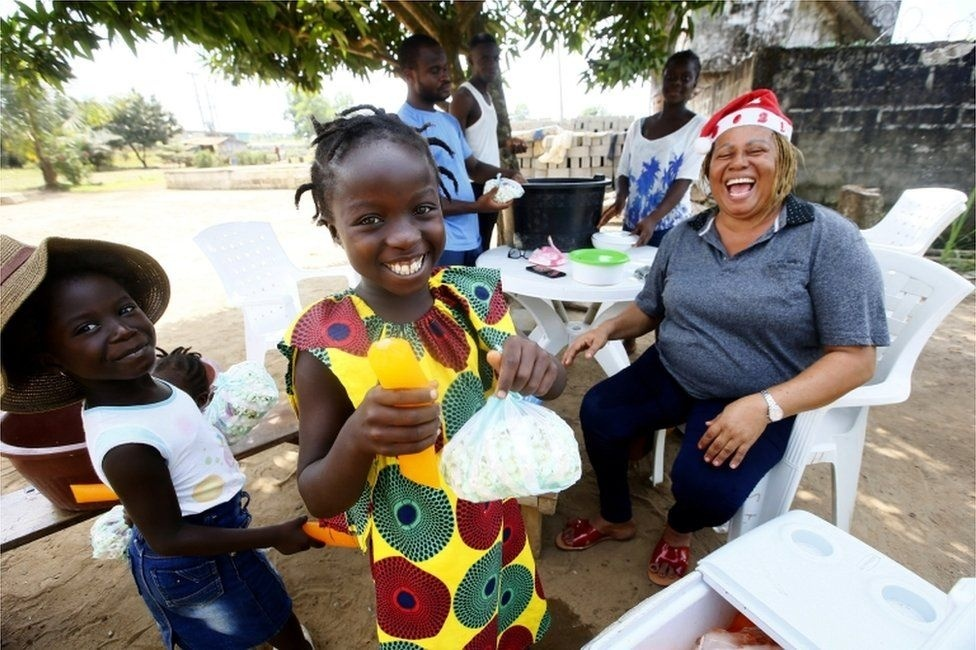
<h2>Item 109</h2>
<p>Context Label: 1</p>
<p>Caption 1: An image showing a cruise ship dumping human waste into the ocean near a coastal city</p>
<p>Context 1: The image depicts a large cruise ship floating near a coastal city, with a significant amount of human waste being dumped into the ocean. This is a concerning scene as it highlights the impact of cruise ships on the environment and raises questions about the disposal of waste on the high seas. The image also shows several people on the ship, possibly involved in the waste disposal process or observing the situation. The presence of a boat in the water nearby adds to the overall maritime activity in the area.</p>
<p>Caption 2: This is a genuine photograph showing two dark, brownish clouds in the waters surrounding a cruise ship, but it doesn’t document that ship’s dumping human waste into the ocean</p>
<p>Context 2: The image shows a large cruise ship floating in the ocean, with two dark clouds in the background. However, the caption claims that the ship is dumping its waste into the ocean. This is not true and cannot be verified from the image alone. The image does not provide any evidence to support the claim that the ship is dumping waste into the ocean.</p>
<p>Ca1vsCon2: [8, 9, 9, 5, 7, 6]</p>
<p>Ca2vsCon1: [5, 2, 5, 3, 3, 3]</p>

<h2>Item 110</h2>
<p>Context Label: 0</p>
<p>Caption 1: Stephen Duncombe photographed the Cromer lifeboat in Norfolk for his picture, entitled To The Rescue</p>
<p>Context 1: The image features a large, orange and black Cromer lifeboat with a crew of four people on board, speeding through rough waters. The boat is cutting through the waves, showcasing its strength and stability in challenging conditions. The lifeboat is actively engaged in a rescue operation, as it navigates through the rough waters to reach and assist those in need. The scene captures the bravery and dedication of the crew members as they work to save lives and protect their community.</p>
<p>Caption 2: This Royal National Lifeboat Institution search and rescue vessel is stationed in Cromer, UK</p>
<p>Context 2: The Royal National Lifeboat Institution (RNLI) is a charity that provides lifesaving services and rescue missions at sea. In the image, a large RNLI search and rescue vessel is stationed in Cromer, UK. The boat is floating on top of the water, possibly after completing a mission or preparing for its next task. The presence of the RNLI vessel in Cromer indicates that the town is equipped with a dedicated and efficient lifesaving team to respond to emergencies and help those in distress in the surrounding waters.</p>
<p>Ca1vsCon2: [9, 0, 9, 9, 9, 9]</p>
<p>Ca2vsCon1: [9, 9, 9, 9, 9, 9]</p>

<h2>Item 111</h2>
<p>Context Label: 0</p>
<p>Caption 1: Afghans wounded in the blast receive treatment at a hospital in Kabul on Monday.</p>
<p>Context 1: The image shows several people in hospital beds, receiving medical attention for their injuries. Some of the patients are lying on the beds, while others are sitting or standing nearby. There are a few visible medical staff members attending to the patients, ensuring their care and comfort. The hospital appears to be well-equipped, with various medical equipment and devices, such as a laptop, a keyboard, a mouse, and a TV. The presence of multiple medical staff and the well-equipped hospital indicate that the facility is prepared to handle the needs of the injured patients.</p>
<p>Caption 2: Afghan injured men receive treatment at a hospital after a car bomb blast in Kabul, Afghanistan January 14, 2019.</p>
<p>Context 2: The image shows several injured men in hospital beds, receiving medical attention from doctors and nurses. The hospital room is equipped with medical equipment, such as oxygen tanks and a ventilator, to support the patients' recovery. The presence of multiple people in the room suggests that the hospital is treating a significant number of injured patients from the car bomb blast in Kabul, Afghanistan. The doctors and nurses are working diligently to provide care and support to the patients during this challenging time.</p>
<p>Ca1vsCon2: [9, 9, 9, 9, 9, 9]</p>
<p>Ca2vsCon1: [9, 9, 9, 9, 9, 9]</p>

<h2>Item 112</h2>
<p>Context Label: 0</p>
<p>Caption 1: Children in Oak Ridge, in the US state of Tennessee, hold newspapers declaring the end of the war</p>
<p>Context 1: The image depicts a group of children in Oak Ridge, Tennessee, celebrating the end of the war. They are holding up newspapers with the headline "War Ends." The children are gathered together, expressing joy and relief at the conclusion of the war. The scene captures the spirit of national pride and the happiness that comes with knowing that conflicts will no longer disrupt the lives of people around the world.</p>
<p>Caption 2: Children hold newspapers declaring the end of World War Two</p>
<p>Context 2: The image shows a group of children holding up newspapers that declare the end of World War Two. The children are celebrating this news, which signifies the conclusion of a long and devastating war. The black and white photo captures the joy and relief of the children as they share this moment together.</p>
<p>Ca1vsCon2: [9, 9, 9, 9, 9, 9]</p>
<p>Ca2vsCon1: [9, 0, 9, 9, 9, 9]</p>
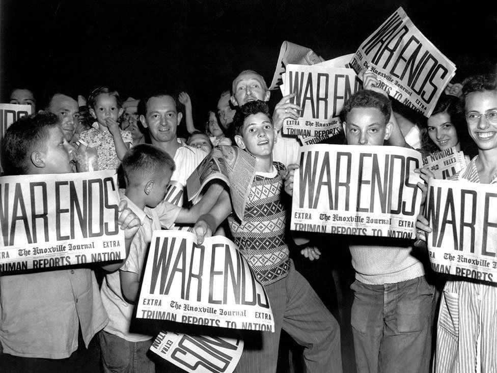
<h2>Item 113</h2>
<p>Context Label: 0</p>
<p>Caption 1: Mr. Trump and Mr. Putin in Helsinki, Finland, last year.</p>
<p>Context 1: The image shows President Trump and Russian President Vladimir Putin sitting together at a table during a meeting in Finland. They are surrounded by other people, possibly aides or officials, who are also seated around the table. The table is set with multiple wine glasses, forks, and knives, indicating that the meeting is a formal one. The scene suggests that the two leaders are engaged in a formal discussion or negotiations, discussing important issues such as international relations, trade, or security matters.</p>
<p>Caption 2: Donald Trump attends a working lunch with Vladimir Putin of Russia, third from right, in Helsinki. At a news conference on Monday, President Trump raised a series of largely irrelevant conspiracy theories - none of which were directly related to the evidence of Russian hacking activity.


 </p>
<p>Context 2: The image shows a group of people sitting around a large dining table, engaged in a formal meal. The table is set with multiple plates, wine glasses, and cups, indicating a well-prepared and organized dining experience. The presence of a man in a suit and tie suggests that the event might be a formal gathering or a business meeting. The attendees are likely discussing various topics or sharing a meal during a meeting or a special event.</p>
<p>Ca1vsCon2: [8, 7, 8, 7, 7, 5]</p>
<p>Ca2vsCon1: [5, 0, 5, 3, 1, 1]</p>

<h2>Item 114</h2>
<p>Context Label: 0</p>
<p>Caption 1: President Trump with Secretary of State Mike Pompeo, left, and the national security adviser, John R. Bolton, at the NATO summit meeting in Brussels last year. Mr. Trump's threats to withdraw from the alliance had sent officials scrambling to prevent the annual gathering from turning into a disaster.</p>
<p>Context 1: In the image, President Trump is standing with Secretary of State Mike Pompeo and the national security adviser, John R. Bolton, at a NATO summit meeting in Brussels. The three men are engaged in a discussion, with Mr. Trump making a point during the conversation. The scene reflects the importance of diplomacy and collaboration among leaders in international affairs, as they work together to address challenges and make decisions that impact the global community.</p>
<p>Caption 2: President Trump with Secretary of State Mike Pompeo and John R. Bolton, the national security adviser, before departing the NATO summit meeting in Brussels in July.</p>
<p>Context 2: In the image, President Trump is standing with Secretary of State Mike Pompeo and John R. Bolton, the national security adviser, before departing the NATO summit meeting in Brussels. They are all wearing suits and ties, and they appear to be engaged in a conversation. The scene captures the leaders discussing their strategies and plans for the ongoing summit.</p>
<p>Ca1vsCon2: [9, 9, 9, 9, 9, 9]</p>
<p>Ca2vsCon1: [8, 9, 9, 9, 9, 9]</p>

<h2>Item 115</h2>
<p>Context Label: 1</p>
<p>Caption 1: Screen grabs from an episode of “The Simpsons” in which the long-running animated show “predicted” the death of George Floyd, a black man whose death while in Minneapolis Police custody sparked nationwide protests</p>
<p>Context 1: The image shows a series of screen grabs from an episode of "The Simpsons" that appears to predict the death of George Floyd, a black man whose death while in Minneapolis Police custody sparked nationwide protests. The image features a scene where a police officer is holding a gun to the head of a man in a hoodie, who is lying on the ground. The caption underneath the image reads, "Predicted: The Simpsons.".</p>
<p>Caption 2: This image did not appear in an episode of “The Simpsons” and it was posted to Pomo’s Instagram account on May 30, five days after Floyd’s death.</p>
<p>Context 2: The image is a fake picture of a police officer holding a man in handcuffs, created using an image of Homer Simpson from "The Simpsons" and placed on Instagram by Pomo. The post was published on May 30, 2020, five days after the death of Eric Garner, who was the inspiration for the "I can't breathe" meme. The meme has since been used to criticize police brutality and racial injustice. The purpose of this fake image is to create a humorous and satirical commentary on the current social and political climate, using the popular animated series as a platform for criticism.</p>
<p>Ca1vsCon2: [0, 0, 0, 0, 0, 0]</p>
<p>Ca2vsCon1: [5, 4, 7, 2, 2, 1]</p>

<h2>Item 116</h2>
<p>Context Label: 1</p>
<p>Caption 1: A photograph from the 1980s shows Boris Johnson with his "lover," Ghislaine Maxwell.</p>
<p>Context 1: The image is a black and white photograph of Boris Johnson and his then-girlfriend, Ghislaine Maxwell, sitting together at a table. They are both smiling and enjoying each other's company. The table has a wine glass and a cup placed on it, suggesting that they might be having a meal or a drink together. The scene captures a moment of happiness and companionship between the two individuals.</p>
<p>Caption 2: The woman seen with Johnson in this picture is Allegra Mostyn-Owen, daughter of the art historian William Mostyn-Owen and Italian writer Gaia Servadio, whom Johnson married in 1987.</p>
<p>Context 2: In the image, a man and a woman are sitting together at a table, with the woman holding a wine glass. The man is wearing a tie, and they appear to be engaged in a conversation. The woman is Allegra Mostyn-Owen, daughter of the art historian William Mostyn-Owen and Italian writer Gaia Servadio, whom Johnson married in 1987. The scene suggests that they are enjoying a social gathering or event together.</p>
<p>Ca1vsCon2: [8, 0, 9, 0, 5, 6]</p>
<p>Ca2vsCon1: [5, 2, 5, 2, 2, 1]</p>

<h2>Item 117</h2>
<p>Context Label: 1</p>
<p>Caption 1: Before his death, physicist Stephen Hawking declared his Christian faith after a visit with Pope Francis.</p>
<p>Context 1: In the image, a man is sitting in a wheelchair next to Pope Francis, and the caption reads, "Before his death, physicist Stephen Hawking declared his Christian faith after a visit with Pope Francis." This statement is based on a news report, but it is important to note that the image itself does not provide direct evidence of the interaction between Hawking and the Pope. The image only shows two people sitting in chairs, and it is not possible to determine the nature of their conversation or Hawking's religious declaration from the visual content.</p>
<p>Caption 2: On 14 March 2018, the “Catholics Online” Facebook page posted a photograph of Hawking meeting Pope Francis alongside a fabricated claim about believing in god</p>
<p>Context 2: The image shows a man in a wheelchair meeting Pope Francis, with the caption stating that "On 14 March 2018, the 'Catholics Online' Facebook page posted a photograph of Hawking meeting Pope Francis." However, this statement is not entirely accurate. The image does indeed show Stephen Hawking meeting Pope Francis, but the caption is misleading as it claims that the "Catholics Online" Facebook page posted the photograph. The photograph was not posted by the "Catholics Online" Facebook page, but by another user who shared it on their timeline.</p>
<p>Ca1vsCon2: [8, 7, 8, 5, 5, 5]</p>
<p>Ca2vsCon1: [5, 4, 5, 3, 5, 3]</p>

<h2>Item 118</h2>
<p>Context Label: 1</p>
<p>Caption 1: A white woman named Ricky Ellsworth was killed by a black police officer in Minneapolis, Minnesota</p>
<p>Context 1: The image is a fake news story, and the information provided is not accurate. Ricky Ellsworth is not a person, and there is no record of a white woman named Ricky Ellsworth being killed by a black police officer in Minneapolis, Minnesota. The image is a fabricated news report designed to spread misinformation.</p>
<p>Caption 2: Ellsworth was killed near Memphis, Tennessee, not in Minnesota</p>
<p>Context 2: The woman in the image is Ricky Ellsworth, who was killed near Memphis, Tennessee, not in Minnesota. The caption associated with the photo is incorrect and should be updated to reflect the correct location and circumstances of her death.</p>
<p>Ca1vsCon2: [5, 0, 5, 0, 0, 0]</p>
<p>Ca2vsCon1: [4, 0, 3, 0, 1, 1]</p>

<h2>Item 119</h2>
<p>Context Label: 0</p>
<p>Caption 1: Representative Steve King of Iowa is serving his ninth term in Congress.</p>
<p>Context 1: Yes, Representative Steve King of Iowa is serving his ninth term in Congress.</p>
<p>Caption 2: US Representative Steve King, (R) Iowa.</p>
<p>Context 2: The image shows a man sitting at a table, wearing a suit and tie, and holding a microphone. Based on the visual details, it is reasonable to assume that this man is a politician, possibly a representative or senator, as he is dressed formally and engaged in a public speaking activity. However, without additional context or information, it is not possible to definitively identify the specific politician shown in the image.</p>
<p>Ca1vsCon2: [9, 9, 9, 9, 9, 9]</p>
<p>Ca2vsCon1: [5, 3, 5, 3, 3, 0]</p>

<h2>Item 120</h2>
<p>Context Label: 0</p>
<p>Caption 1: This photograph was taken while walking through the village of Austrey in North Warwickshire</p>
<p>Context 1: The image captures a serene scene of a field with two bare trees standing in the middle of the grass. The trees are surrounded by the grass, which appears to be dry and brown. The sky above the field is cloudy, adding a moody atmosphere to the scene. The field is located near a village, as indicated by the presence of a car and a person in the background. The car is parked further away, while the person appears to be walking or standing closer to the field.</p>
<p>Caption 2: Trees in the village of Austrey in North Warwickshire</p>
<p>Context 2: The image depicts a picturesque scene of two trees standing in a grassy field during a beautiful sunset. The sun is setting, casting a warm glow on the landscape, and the sky is filled with clouds, adding to the serene atmosphere. The trees are surrounded by the grassy field, creating a peaceful and tranquil environment.</p>
<p>Ca1vsCon2: [9, 0, 9, 9, 9, 9]</p>
<p>Ca2vsCon1: [8, 5, 8, 7, 6, 3]</p>
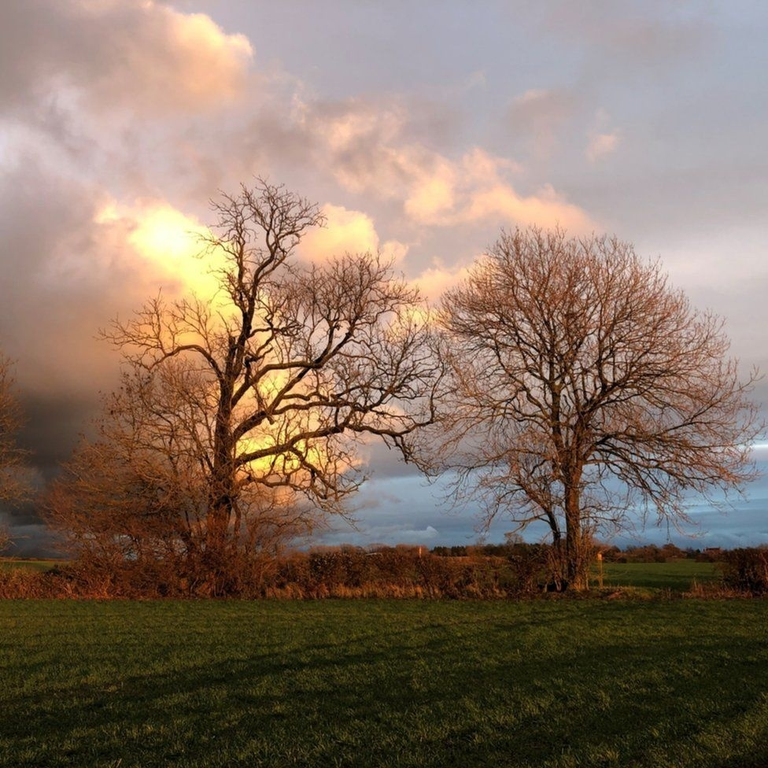
<h2>Item 121</h2>
<p>Context Label: 1</p>
<p>Caption 1: A video shows people in China tearing down a 5G tower in an attempt to stop the spread of COVID-19 coronavirus disease.</p>
<p>Context 1: The image shows a video on a social media platform, with people in China tearing down a 5G tower in an attempt to stop the spread of COVID-19 coronavirus disease. The post has received several comments, with one person saying "The Chinese are destroying the 5G tower in an attempt to stop the spread of COVID-19.".</p>
<p>Caption 2: This video is real, but it has nothing to do with 5G or the coronavirus pandemic.</p>
<p>Context 2: The image and the corresponding text on the screen are not related to each other. The image shows a group of people holding umbrellas, which is a real scene. However, the text on the screen is about a fake video that supposedly shows Chinese people destroying 5G equipment, which is not true. This information is misleading and has nothing to do with the actual image.</p>
<p>Ca1vsCon2: [5, 2, 5, 1, 2, 3]</p>
<p>Ca2vsCon1: [2, 0, 0, 0, 0, 0]</p>

<h2>Item 122</h2>
<p>Context Label: 1</p>
<p>Caption 1: Kendrick Lamar bought and publicly destroyed the gun used by George Zimmerman to kill Trayvon Martin.</p>
<p>Context 1: Kendrick Lamar, a famous rapper, bought and publicly destroyed the gun used by George Zimmerman to kill Trayvon Martin. This act of gun control advocacy and anti-violence demonstrates Kendrick Lamar's stance against gun violence and his support for stricter gun control measures.</p>
<p>Caption 2: The story of Kendrick Lamar bought a gun is a piece of fiction from a “satire” web site</p>
<p>Context 2: The story of Kendrick Lamar bringing a gun to a meeting of the National Association of Black Journalists is a piece of fiction from the satire website, the Onion. The Onion is known for creating humorous and sometimes exaggerated news stories that are meant to be taken lightly and not as factual information. The story, titled "Kendrick Lamar Brings Gun To NABJ Meeting, Refuses To Shut Up," is meant to be a parody of the real-life events and should not be taken seriously.</p>
<p>Ca1vsCon2: [5, 2, 5, 0, 1, 1]</p>
<p>Ca2vsCon1: [5, 2, 5, 2, 2, 0]</p>

<h2>Item 123</h2>
<p>Context Label: 0</p>
<p>Caption 1: Disposing of confiscated beer during Prohibition.</p>
<p>Context 1: The image depicts a group of men in 1920s attire, including police officers, engaged in the disposal of confiscated beer during Prohibition. They are standing around a large barrel, which is being used to drain the illegal alcohol. The men are wearing hats, ties, and other clothing typical of the time, indicating that this scene captures a historical moment in American history. The presence of multiple people and the act of draining the confiscated beer highlight the enforcement of Prohibition laws and the challenges faced by those who violated them.</p>
<p>Caption 2: A barrel of confiscated illegal beer being poured down a drain.</p>
<p>Context 2: The image is a black and white photograph of a group of men, some wearing hats, standing around a barrel of confiscated illegal beer. The men are in the process of emptying the barrel into a drain. The scene appears to be set in an urban environment, possibly during Prohibition. The presence of multiple people and the act of draining the barrel suggest that this is an organized effort to remove the illegal beverage from circulation.</p>
<p>Ca1vsCon2: [9, 9, 9, 9, 9, 9]</p>
<p>Ca2vsCon1: [9, 9, 9, 9, 9, 9]</p>
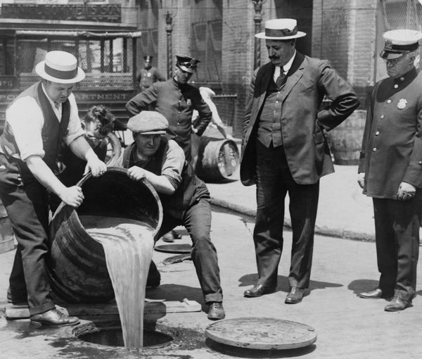
<h2>Item 124</h2>
<p>Context Label: 1</p>
<p>Caption 1: Mexican drug kingpin Joaquin "El Chapo" Guzman donated millions of dollars to Clinton Foundation.</p>
<p>Context 1: The image shows a man in a suit and tie, who appears to be a businessman, not a drug kingpin. The man in the image is not Joaquin "El Chapo" Guzman. The photo is misleading and has been altered to show a different person than the one in the original image. It is important to verify the authenticity of the content before sharing it.</p>
<p>Caption 2: Mexican drug lord 'El Chapo' makes brazen prison escape</p>
<p>Context 2: In the image, a man is being escorted by security personnel, likely prison guards, as he is handcuffed and walked through a hallway. The man is wearing a white shirt, and he appears to be the focus of the scene. The presence of multiple security personnel suggests that the man being escorted is of significant interest or importance. The scene could be taking place in a prison or a high-security facility, as the man is being restrained and guarded closely.</p>
<p>Ca1vsCon2: [5, 2, 5, 1, 1, 1]</p>
<p>Ca2vsCon1: [5, 3, 5, 3, 3, 0]</p>
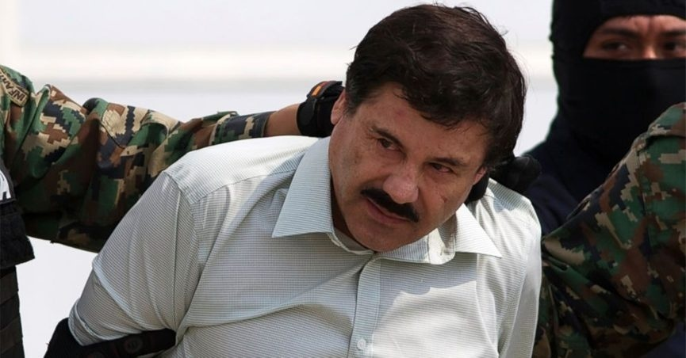
<h2>Item 125</h2>
<p>Context Label: 0</p>
<p>Caption 1: A family watch a plane land at an airport</p>
<p>Context 1: In the image, a family is standing together near a tree, watching an airplane land at the airport. There are at least six people in the group, including adults and children, all of whom seem to be enjoying the sight of the airplane. The airplane is positioned in the sky, close to the family, and it appears to be in the process of landing. The family's presence near the tree and their attention towards the airplane suggest that they are interested in the event and possibly waiting for someone to arrive.</p>
<p>Caption 2: Planespotter Portraits No. 13, by Laird Kay, from Canada</p>
<p>Context 2: The image features a group of people standing together on a snowy day, watching a plane flying in the sky. There are at least seven people in the scene, with some standing closer to the camera and others further back. They are all looking up at the airplane, which is flying overhead and occupies a significant portion of the sky. The group appears to be enjoying the sight of the airplane and the winter scenery.</p>
<p>Ca1vsCon2: [9, 9, 9, 9, 9, 9]</p>
<p>Ca2vsCon1: [5, 3, 7, 5, 5, 5]</p>
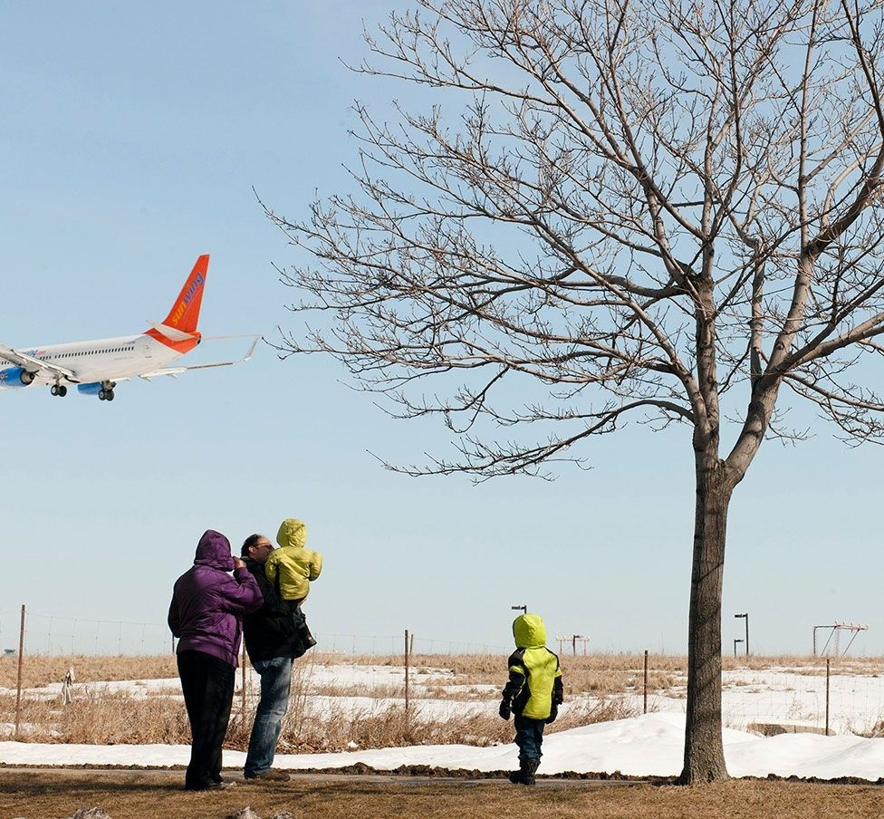
<h2>Item 126</h2>
<p>Context Label: 1</p>
<p>Caption 1: Pastor and Gospel Singer Don Moen Dead After a Short Illness</p>
<p>Context 1: It is with great sadness that we announce the passing of Don Moen, a renowned pastor and gospel singer, after a short illness. Don Moen was known for his powerful vocals and his ministry, touching the hearts of many with his music and sermons. He leaves behind a legacy of faith, hope, and love, and his impact on the gospel music scene will be felt for generations to come. Our thoughts and prayers are with his family, friends, and fans during this difficult time.</p>
<p>Caption 2: Don Moen Canada Tour 2015 at the Prayer Palace, Toronto</p>
<p>Context 2: The image features a man on stage, wearing a suit and tie, and playing a keyboard. He appears to be singing or performing in front of a crowd. There are several people in the audience, some of them seated on chairs and others standing. The audience members are engaged in the performance, creating a lively atmosphere. The man on stage is likely the main performer, while the audience members are there to enjoy and support his performance.</p>
<p>Ca1vsCon2: [5, 4, 7, 5, 5, 6]</p>
<p>Ca2vsCon1: [4, 1, 3, 1, 3, 2]</p>

<h2>Item 127</h2>
<p>Context Label: 0</p>
<p>Caption 1: Workers disinfect the Salt Cathedral, an underground church built into a salt mine, in Zipaquira, Colombia</p>
<p>Context 1: In the image, two workers are spraying a disinfectant on the walls of an underground church, known as the Salt Cathedral, located in Zipaquira, Colombia. The workers are using a backpack sprayer to evenly coat the walls and floor of the church, ensuring a clean and sanitary environment for visitors. The Salt Cathedral is a unique and fascinating attraction, built entirely within a salt mine, featuring stunning salt sculptures and intricate designs. The workers' efforts help maintain the church's cleanliness and preserve its beauty for visitors to enjoy.</p>
<p>Caption 2: Workers disinfect a salt cavern covered in carvings and lit in red and green</p>
<p>Context 2: In the image, two workers are spraying a salt cavern with a green and red lighting effect on the walls. The workers are wearing masks and protective clothing, indicating that they are handling a potentially hazardous substance or working in a challenging environment. The workers are responsible for disinfecting and maintaining the cavern to ensure public safety and prevent any contamination or damage to the artistic features. The green and red lighting adds an artistic and unique ambiance to the underground cavern, making it an interesting and unusual work environment for the workers.</p>
<p>Ca1vsCon2: [8, 8, 9, 9, 8, 8]</p>
<p>Ca2vsCon1: [8, 9, 9, 9, 9, 9]</p>
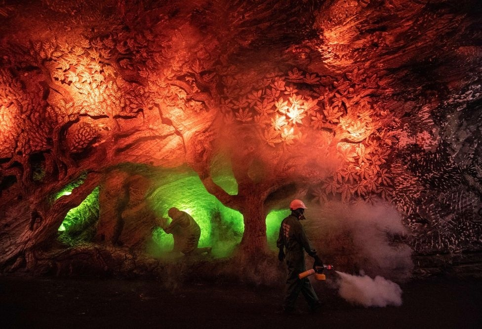
<h2>Item 128</h2>
<p>Context Label: 0</p>
<p>Caption 1: A tree in snow</p>
<p>Context 1: The image features a snow-covered tree standing in a snowy field. The tree appears to be a bare deciduous tree, with its branches and leaves covered in snow. The snowy landscape is accentuated by the tree's silhouette against the brightness of the snow. The scene captures the beauty of winter and the serenity of the natural environment.</p>
<p>Caption 2: An old tree in winter at the Osogovo Mountain near Kyustendil, Bulgari</p>
<p>Context 2: The image features an old, bare tree with snow covering its branches, standing in a snowy field. The tree is surrounded by a beautiful landscape, with a fence visible in the background. The snow-covered tree and the serene winter setting create a captivating and peaceful atmosphere.</p>
<p>Ca1vsCon2: [9, 9, 9, 9, 9, 9]</p>
<p>Ca2vsCon1: [9, 9, 9, 9, 9, 9]</p>

<h2>Item 129</h2>
<p>Context Label: 1</p>
<p>Caption 1: A Pilot Flying J truck stop in Amarillo, Texas, claiming that a flagless Flying J location it displayed was the result of the company’s attempt to placate “foreigners”</p>
<p>Context 1: The image shows a Pilot Flying J gas station in Amarillo, Texas, with a truck stop claiming that the flagless Flying J location displayed was the result of the company's attempt to placate "foreigners." This statement is controversial and could be interpreted as offensive or insensitive. It is important to note that the image itself does not provide enough context to determine the accuracy or the intended meaning of the statement.</p>
<p>Caption 2: The flag at Pilot Flying J store in Amarillo, TX was not being flown as the pole is broken and prevents the flag being flown according to protocol.</p>
<p>Context 2: The image shows a gas station with a broken pole, preventing the Pilot Flying J flag from being displayed. This could be due to various reasons, such as an accident, vandalism, or weather-related damage. The absence of the flag might not have any significant impact on the customers or the gas station's operations, but it could be a sign of maintenance or repair work being carried out to fix the pole and restore the flag to its original position.</p>
<p>Ca1vsCon2: [5, 5, 5, 5, 5, 5]</p>
<p>Ca2vsCon1: [5, 4, 7, 3, 5, 6]</p>

<h2>Item 130</h2>
<p>Context Label: 1</p>
<p>Caption 1: New York state has legalized heroin.</p>
<p>Context 1: I'm sorry, but this statement is incorrect. New York state has not legalized heroin. The image shows a man holding a syringe, which is commonly associated with drug use, including illegal substances like heroin. However, it is important to note that some states have decriminalized the possession of small amounts of certain drugs, which may include heroin, to reduce penalties and encourage addicts to seek treatment.</p>
<p>Caption 2: An article that reported that New York state had legalized heroin came from a satire site, but a proposal to allow addicts to use the drug under medical supervision may have confused the issue.</p>
<p>Context 2: The image shows a man holding a syringe, which is associated with drug use, particularly heroin. The confusion arises from the caption, which states that New York state had legalized heroin. However, this is not true. The state of New York has not legalized heroin use. Instead, there is a proposal to allow addicts to use heroin under medical supervision, which is different from legalizing the drug. The satire site's article may have misinterpreted or misreported this proposal, leading to the confusion in the image's context.</p>
<p>Ca1vsCon2: [5, 5, 7, 5, 5, 5]</p>
<p>Ca2vsCon1: [5, 2, 5, 2, 3, 2]</p>

<h2>Item 131</h2>
<p>Context Label: 1</p>
<p>Caption 1: A photograph shows salt spilled from a fallen shaker that created the image of Jesus on a table.</p>
<p>Context 1: The image shows a photograph of a salt shaker that has been used to create an image of Jesus on a table.</p>
<p>Caption 2: The photograph of Jesus made with salt seen here is real, however — but its explanation is an artistic</p>
<p>Context 2: The image shows a painting of Jesus with salt, which is an artistic representation of the biblical story where Jesus is said to have walked on water and used salt to heal a blind man. The painting is displayed on a wall, and the person in the image is holding a cell phone, possibly taking a picture of the artwork. The salt used in the painting is not real salt, but rather a substance that resembles salt, used as an artistic element in the composition.</p>
<p>Ca1vsCon2: [8, 5, 8, 7, 6, 5]</p>
<p>Ca2vsCon1: [5, 2, 5, 3, 1, 1]</p>

<h2>Item 132</h2>
<p>Context Label: 1</p>
<p>Caption 1: A video clip shows supporters of U.S. Sen. Bernie Sanders failing to identify a single country on an unlabeled world map.</p>
<p>Context 1: In the image, a man is standing in front of a blue world map, which is prominently displayed on a wall. He is wearing a blue shirt and appears to be pointing at the map. There are several other people in the background, but they are not the main focus of the scene. The man's attire and the presence of other people suggest that this could be an event or gathering. However, the main focus of the image is the blue world map, which is the center of attention in the scene.</p>
<p>Caption 2: The video tweeted by Cruz was taken from a comedy segment taped for the “Jimmy Kimmel Live” late night talk show back in 2018, before Sanders entered the race for the 2020 Democratic presidential nomination.</p>
<p>Context 2: The image shows a man standing in front of a blue screen, which is a backdrop for a political map of the world. The man is holding a marker and appears to be drawing on the screen, possibly to illustrate a point or make a political statement. The scene is set in a room with a dining table and a chair nearby. The man's actions are likely part of a comedy sketch or a satirical political commentary.</p>
<p>Ca1vsCon2: [8, 1, 7, 5, 5, 3]</p>
<p>Ca2vsCon1: [5, 3, 5, 3, 3, 1]</p>

<h2>Item 133</h2>
<p>Context Label: 0</p>
<p>Caption 1: North Korean leader Kim Jong-un delivering a New Year's speech.</p>
<p>Context 1: In the image, a group of people is gathered in a room, watching a television screen that displays a speech by North Korean leader Kim Jong-un. The audience appears to be engaged and focused on the content of the speech. The television screen occupies a significant portion of the room, indicating that it is the main focus of the gathering. The people in the room are likely interested in the message or news delivered by the leader during the New Year's speech.</p>
<p>Caption 2: People watch a TV screen showing North Korean leader Kim Jong Un delivering a New Year’s speech, at Seoul Railway Station in Seoul,</p>
<p>Context 2: The image shows a group of people gathered around a television at a train station, watching a news broadcast featuring North Korean leader Kim Jong Un. The station appears to be in Seoul, South Korea, as the people are wearing winter clothing appropriate for the cold weather. The television screen displays the leader giving a speech, capturing the attention of the onlookers. The crowd consists of various individuals, some standing closer to the TV while others are further back, all focused on the news coverage and the message being conveyed by the leader.</p>
<p>Ca1vsCon2: [9, 9, 9, 9, 9, 9]</p>
<p>Ca2vsCon1: [9, 0, 9, 9, 9, 9]</p>

<h2>Item 134</h2>
<p>Context Label: 0</p>
<p>Caption 1: Mr. Trump and Mr. Putin in Helsinki, Finland, last year.</p>
<p>Context 1: The image shows President Trump and Russian President Vladimir Putin sitting together at a table during a meeting in Finland. They are surrounded by other people, possibly aides or diplomats, who are also seated around the table. The table is set with multiple wine glasses, forks, and knives, indicating that the meeting is a formal one. The scene suggests that the two leaders are engaged in a formal discussion or negotiations, discussing important issues that impact international relations between their countries.</p>
<p>Caption 2:  President Trump held a working lunch on Monday with Vladimir V. Putin at the Presidential Palace in Helsinki, Finland.</p>
<p>Context 2: In the image, President Trump is sitting at a table with other people, including Russian President Vladimir Putin, during a working lunch at the Presidential Palace in Helsinki, Finland. The table is set with multiple wine glasses, plates, and cups, indicating a formal dining setting. The attendees are engaged in conversation, discussing various topics likely related to international affairs and cooperation between the two countries.</p>
<p>Ca1vsCon2: [9, 9, 9, 9, 9, 9]</p>
<p>Ca2vsCon1: [9, 9, 9, 9, 9, 9]</p>

<h2>Item 135</h2>
<p>Context Label: 1</p>
<p>Caption 1: A photograph shows a real, inhabitable house built on the underside of a cliff.</p>
<p>Context 1: The image shows a real, inhabitable house built on the underside of a cliff. The house is situated on a steep hillside, with a large picture window providing a stunning view of the surrounding landscape. The house is connected to the cliff by a long deck, which adds to the unique and impressive architecture. The image captures the creativity and engineering involved in designing and constructing such a structure, showcasing the homeowner's bold approach to living in a challenging environment.</p>
<p>Caption 2: This “Insane Cliff House” image was one of several produced by the creative advertising agency JWT in 2013</p>
<p>Context 2: The image depicts a modern, stylish house perched on the edge of a steep cliff, seemingly floating in the air. The house appears to be a part of a resort, with a pool and a balcony overlooking the breathtaking view of the ocean below. There are several people enjoying the resort, with some of them standing near the pool and others scattered around the area. The scene is visually stunning and showcases the unique architecture of the cliff house, making it an attractive destination for those seeking a luxurious and adventurous getaway.</p>
<p>Ca1vsCon2: [8, 8, 9, 9, 9, 9]</p>
<p>Ca2vsCon1: [5, 3, 7, 5, 5, 5]</p>

<h2>Item 136</h2>
<p>Context Label: 0</p>
<p>Caption 1: Prime Minister Theresa May of Britain announced a draft deal on leaving the European Union in November outside 10 Downing Street in London. Support for Brexit has fallen below 50 percent.</p>
<p>Context 1: In the image, Theresa May, the Prime Minister of Britain, is standing in front of a building, possibly 10 Downing Street, and addressing the public. She is speaking about a draft deal on leaving the European Union, which took place in November 2018. The scene is set at night, with the street lights illuminating the area. The public seems to be gathered around, listening to the Prime Minister's announcement. However, it is important to note that support for Brexit has fallen below 50 percent, according to the image. This suggests that not all citizens may agree with the Prime Minister's decision or the terms of the deal.</p>
<p>Caption 2: Britain's Prime Minister Theresa May delivers a speech outside 10 Downing Street in London, Wednesday, Nov. 14, 2018. British Prime Minister Theresa May says Cabinet agrees draft Brexit deal with European Union after 'impassioned' debate.</p>
<p>Context 2: In the image, Theresa May, the British Prime Minister, is standing in front of a building, possibly 10 Downing Street, and delivering a speech. She is wearing a black dress and appears to be addressing an important issue. The scene suggests that the Prime Minister is making a public announcement or addressing the media regarding the ongoing Brexit negotiations.</p>
<p>Ca1vsCon2: [9, 9, 9, 9, 9, 9]</p>
<p>Ca2vsCon1: [8, 8, 9, 9, 9, 9]</p>

<h2>Item 137</h2>
<p>Context Label: 0</p>
<p>Caption 1: Bo the dog waits to board Air Force One in Massachusetts in 2009.</p>
<p>Context 1: In the image, a black and white dog, possibly a poodle, is standing on the tarmac, waiting to board a large airplane. The airplane is parked in the background, and it appears to be Air Force One, as indicated by the logo on the aircraft. There are several people around the dog, some of them wearing ties, suggesting that they might be staff or officials. The scene takes place on a runway, with the airplane occupying a significant portion of the image.</p>
<p>Caption 2: A dog stands next to Air Force One</p>
<p>Context 2: The image features a black and white dog standing next to Air Force One, which is a presidential aircraft. The dog is wearing a tie, adding a touch of style to its appearance. The scene takes place on a runway, with several people visible in the background, possibly attending to the preparations or observing the event. The presence of the dog and the Air Force One in the image suggests that it could be a special event or occasion, such as a presidential visit or a diplomatic mission.</p>
<p>Ca1vsCon2: [9, 0, 9, 9, 9, 9]</p>
<p>Ca2vsCon1: [9, 9, 9, 9, 9, 9]</p>
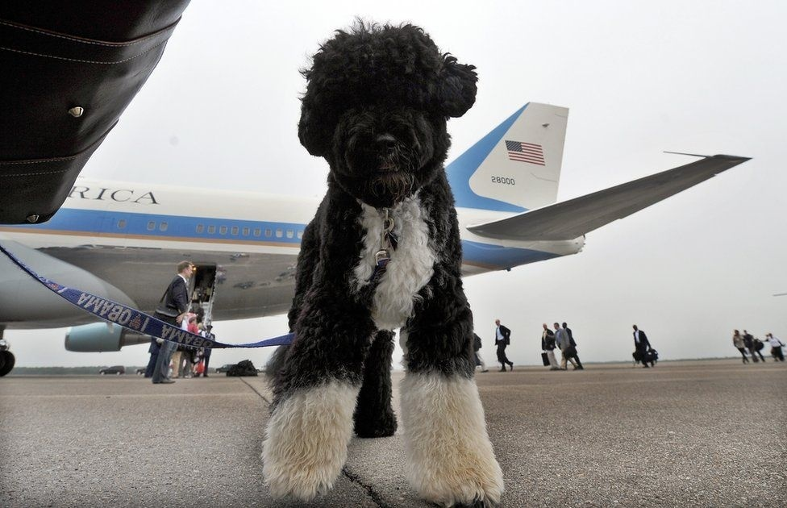
<h2>Item 138</h2>
<p>Context Label: 1</p>
<p>Caption 1: A video showing a massive, dangerous waterspout is real.</p>
<p>Context 1: Yes, the video showing a massive, dangerous waterspout is real. It captures the powerful and frightening nature of these natural phenomena, which are formed over the ocean when strong winds meet warm water. The waterspout in the image is massive and appears to be heading towards the shore, creating a terrifying scene for anyone in its path.</p>
<p>Caption 2: While waterspouts are real, and while there are genuine videos showing similar weather events, the above-displayed footage features computer generated images.</p>
<p>Context 2: The image shows a computer-generated image of a large tornado or waterspout on the ocean. It is not a real-life event captured in a video.</p>
<p>Ca1vsCon2: [5, 2, 7, 3, 5, 6]</p>
<p>Ca2vsCon1: [4, 2, 4, 1, 2, 1]</p>

<h2>Item 139</h2>
<p>Context Label: 1</p>
<p>Caption 1: Experiencing “Satan’s raw power” is something everybody should experience at least once in their lifetime, according to Katy Perry, who advised fans to “add praying to Satan to your bucket list.“</p>
<p>Context 1: Katy Perry's statement is an example of hyperbole and humor. She is known for making lighthearted and humorous comments, and this particular quote is meant to be taken in jest. It is unlikely that she truly advocates for praying to Satan, as it is a blasphemous and irreligious act. Rather, her statement is intended to entertain and amuse her fans while making a point about the importance of experiencing different things in life, even if they may seem unconventional or controversial.</p>
<p>Caption 2: There is no evidence that the singer Katy Perry said made comments about people pray to Satan</p>
<p>Context 2: There is no evidence provided in the image or the caption to support the claim that Katy Perry said she prays to Satan. The statement is inaccurate and should be removed from the image description.</p>
<p>Ca1vsCon2: [5, 2, 7, 0, 0, 0]</p>
<p>Ca2vsCon1: [5, 2, 5, 2, 2, 2]</p>

<h2>Item 140</h2>
<p>Context Label: 0</p>
<p>Caption 1: Guest take in the day at the Denver Zoo in 2013.</p>
<p>Context 1: The image depicts a lively scene at the Denver Zoo, with a large group of people walking around and enjoying the zoo. There are at least 15 people visible in the scene, some of them carrying handbags, and they are spread across the area. The visitors are likely admiring the various animals and exhibits that the zoo has to offer. The zoo is situated in a beautiful park-like setting, with trees and greenery surrounding the area. The visitors are engaged in the experience, exploring the zoo and learning about the different animals and their habitats.</p>
<p>Caption 2: People gathered in the day at the Denver Zoo in 2013.</p>
<p>Context 2: The image shows a group of people gathered in the daytime at the Denver Zoo in 2013. There are at least 14 people visible in the scene, walking around and enjoying the zoo. Some of them are carrying handbags, with at least three handbags visible in the image. The visitors are spread across the area, with some closer to the foreground and others further in the background. The atmosphere appears to be lively and engaging, as people explore the zoo and interact with one another.</p>
<p>Ca1vsCon2: [9, 9, 9, 9, 9, 9]</p>
<p>Ca2vsCon1: [9, 0, 9, 9, 9, 0]</p>

<h2>Item 141</h2>
<p>Context Label: 1</p>
<p>Caption 1: The president Trump said that the country currently has a global trade deficit of $800 billion</p>
<p>Context 1: In the image, President Trump is seen speaking at a podium, wearing a suit and tie, and making a statement. However, there is no clear indication in the image or the provided text that he mentioned or discussed the global trade deficit of $800 billion. It is essential to verify the source or context of the statement to confirm if he indeed mentioned the global trade deficit.</p>
<p>Caption 2: President Donald Trump's statements on the subject leave out the country's $244 billion services surplus.</p>
<p>Context 2: In the image, President Donald Trump is seen speaking at a podium, wearing a suit and tie. However, it is not clear from the image whether he is making a statement about the country's services surplus or not. To determine this, one would need to examine the content of his speech or any accompanying documents or media coverage.</p>
<p>Ca1vsCon2: [5, 7, 7, 5, 5, 5]</p>
<p>Ca2vsCon1: [5, 4, 5, 3, 2, 1]</p>

<h2>Item 142</h2>
<p>Context Label: 0</p>
<p>Caption 1: A flooded neighborhood in San Juan, P.R., after Hurricane Maria in September 2017.</p>
<p>Context 1: The image depicts a flooded neighborhood in San Juan, Puerto Rico, after Hurricane Maria hit the island in September 2017. A man is walking through the flooded street, surrounded by water that has reached up to the door of a house. The floodwaters have caused significant damage to the neighborhood, with cars and trucks submerged in the water. There are several cars and trucks visible in the scene, some partially or fully submerged in the floodwaters. The man appears to be navigating through the challenging conditions, likely assessing the damage and trying to keep himself safe.</p>
<p>Caption 2: Floodwaters persist in some streets in the Santurce neighborhood of San Juan on Wednesday, a week after Hurricane Maria descended on Puerto Rico.</p>
<p>Context 2: The image shows a man walking through floodwaters in the Santurce neighborhood of San Juan, Puerto Rico. The floodwaters have persisted for a week after Hurricane Maria hit the island. The man appears to be navigating through the water, which covers a significant portion of the street. The scene illustrates the ongoing challenges faced by residents in the aftermath of the natural disaster.</p>
<p>Ca1vsCon2: [9, 9, 9, 9, 9, 9]</p>
<p>Ca2vsCon1: [9, 9, 9, 9, 9, 9]</p>
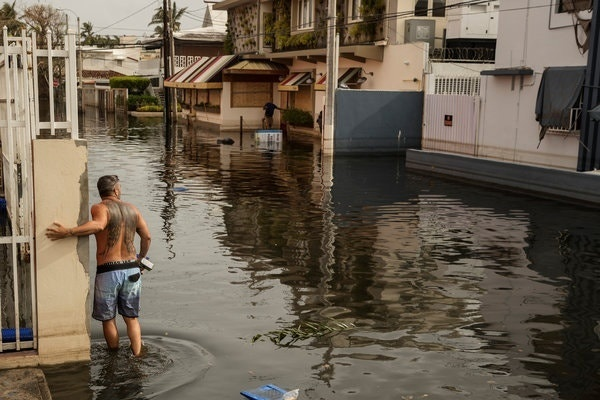
<h2>Item 143</h2>
<p>Context Label: 0</p>
<p>Caption 1: Fog surrounds the Balmoral Clock in Edinburgh, as parts of the UK saw some murky mornings at the start of the week.</p>
<p>Context 1: The image features a clock tower, likely the Balmoral Clock in Edinburgh, Scotland, surrounded by fog. The foggy conditions suggest that the UK experienced some murky mornings at the start of the week. The clock tower stands tall against the foggy backdrop, adding a sense of mystery and charm to the scene.</p>
<p>Caption 2: Mist surrounds the Balmoral Clock on Princes Street in Edinburgh</p>
<p>Context 2: The image features a clock tower, likely the Balmoral Clock on Princes Street in Edinburgh, surrounded by fog. The fog envelops the clock tower, creating a hazy atmosphere in the city. The clock itself is prominently displayed, with its position and design making it a focal point in the scene. The presence of fog adds a sense of mystique and charm to the image, highlighting the architectural beauty of the clock tower.</p>
<p>Ca1vsCon2: [9, 9, 9, 9, 9, 9]</p>
<p>Ca2vsCon1: [9, 9, 9, 9, 9, 9]</p>
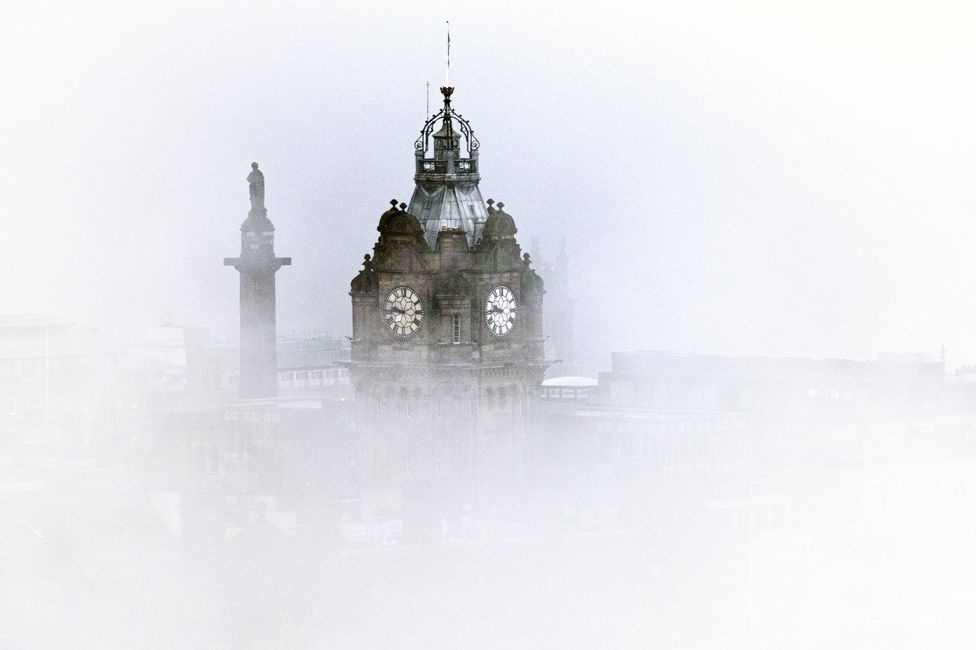
<h2>Item 144</h2>
<p>Context Label: 1</p>
<p>Caption 1: Despite many kingpins like Joaquin 'El Chapo' Guzman being put in jail, many say Mexico's war on drugs has been futile</p>
<p>Context 1: Mexico's war on drugs has been a controversial topic for years, with opinions divided on its effectiveness and consequences. Supporters argue that the campaign has led to a significant decrease in drug-related violence and drug consumption, while opponents contend that it has had limited impact and has resulted in numerous human rights violations.The arrest and imprisonment of high-profile figures like Joaquin 'El Chapo' Guzman, who was recently extradited to the United States, is often cited as a success in the war on drugs. However, critics argue that these arrests do not necessarily mean the end of the drug trade, as they merely replace one cartel with another. Furthermore, the crackdown on drug trafficking has led to an increase in violence and insecurity, as rival cartels fight for control of the lucrative drug routes.In addition, the use of controversial tactics like torture and extrajudicial killings by security forces has been condemned by human rights organizations, leading to accusations of abuse and corruption within the government.In conclusion, the war on drugs in Mexico has been a complex and contentious issue, with opinions divided on its effectiveness</p>
<p>Caption 2: Joaquin "El Chapo" Guzman is escorted to a helicopter in handcuffs by Mexican navy marines at a navy hanger in Mexico City on Feb. 22, 2014.</p>
<p>Context 2: In the image, Joaquin "El Chapo" Guzman is escorted by Mexican navy marines while wearing handcuffs. He is being led to a helicopter, which is positioned nearby. El Chapo is dressed in a white shirt and appears to be in custody. The scene takes place in a location where there are several potted plants, some of which are placed close to the helicopter. The presence of the marines and the handcuffed appearance of El Chapo suggest that he is being taken to face legal consequences for his alleged crimes.</p>
<p>Ca1vsCon2: [9, 9, 9, 9, 9, 9]</p>
<p>Ca2vsCon1: [8, 9, 9, 9, 9, 9]</p>

<h2>Item 145</h2>
<p>Context Label: 1</p>
<p>Caption 1: On Feb. 19, 2021, U.S. President Joe Biden uttered a racial slur referring to Black people during virtual event to discuss international security policies.</p>
<p>Context 1: In the image, a man is standing in front of a podium, giving a speech. However, the man is not President Joe Biden, but rather an actor or a person impersonating him. The image does not show the president using a racial slur or discussing international security policies. Therefore, the statements made by the person in the image do not reflect the views or actions of the actual President Joe Biden.</p>
<p>Caption 2: Biden did not use the N-word in that moment, nor at any other time during the virtual speech.</p>
<p>Context 2: In the image, the former Vice President Joe Biden is giving a speech in front of a flag, specifically the American flag. However, the speech being referred to is not a real-time speech, but rather a video of a speech that has been edited and presented on a screen. It is important to note that during the edited speech, Biden did not use the N-word. The N-word is a racial slur that is highly offensive and inappropriate in any context, including a virtual speech. Biden's use of the word "nincompoop" in the edited speech is not equivalent to the N-word and does not reflect his actual views or language usage.</p>
<p>Ca1vsCon2: [8, 0, 9, 0, 0, 0]</p>
<p>Ca2vsCon1: [5, 2, 7, 0, 2, 1]</p>

<h2>Item 146</h2>
<p>Context Label: 0</p>
<p>Caption 1: On a cold and rainy Tuesday, guests stand on a balcony at the Grand Hyatt Grand Nile Tower hotel in Cairo, Egypt.</p>
<p>Context 1: On a cold and rainy Tuesday, guests stand on a balcony at the Grand Hyatt Grand Nile Tower hotel in Cairo, Egypt. The balcony overlooks a large, colorful building with numerous windows. There are two people visible in the scene, one closer to the left side and the other towards the right side of the balcony. They are likely enjoying the view of the city and the hotel's surroundings despite the unfavorable weather conditions.</p>
<p>Caption 2: People stand on a hotel balcony. Dozens of other balconies are also visible, but they are empty in Cairo, Egypt - Tuesday 16 February 2021</p>
<p>Context 2: In the image, a man and a woman are standing on a hotel balcony overlooking a large number of empty balconies. The scene is set in Cairo, Egypt, on a Tuesday in February 2021. The couple appears to be enjoying their time on the balcony, but the surrounding balconies are not in use, which might indicate a decrease in tourism or travel due to the ongoing COVID-19 pandemic.</p>
<p>Ca1vsCon2: [8, 9, 9, 9, 9, 9]</p>
<p>Ca2vsCon1: [9, 9, 9, 9, 9, 9]</p>
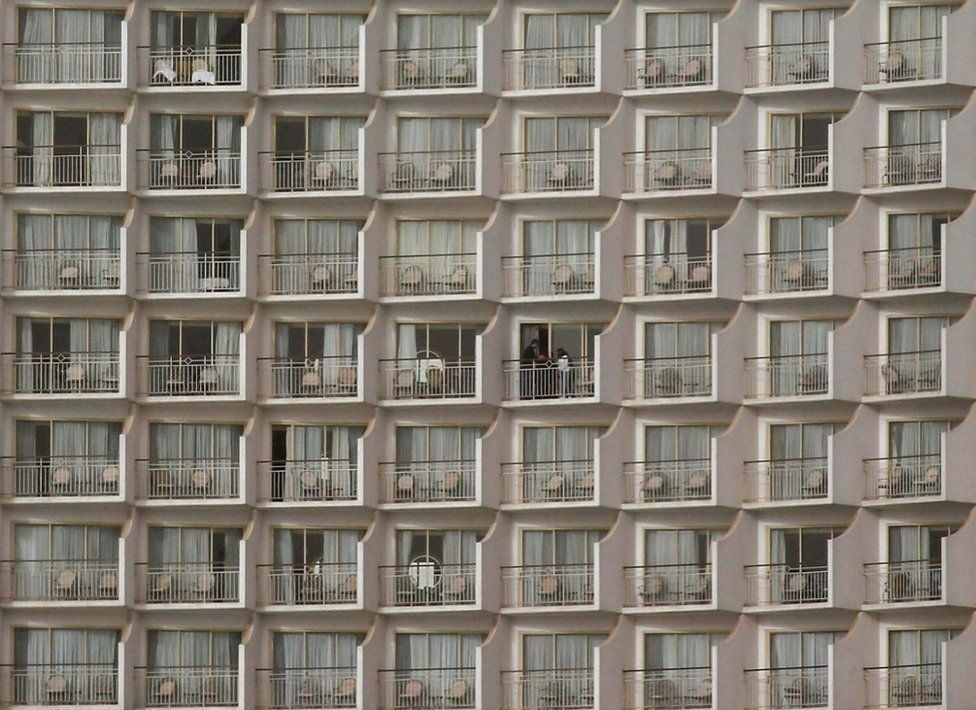
<h2>Item 147</h2>
<p>Context Label: 0</p>
<p>Caption 1: "Tintin in the Land of the Soviets" was published in a collection in 1930.</p>
<p>Context 1: Yes, "Tintin in the Land of the Soviets" was published in a collection in 1930. The book is part of a collection of Tintin books, which are a popular series of comic books created by Belgian artist Hergé.</p>
<p>Caption 2: Tintin: been in the collective memory for 90 years.</p>
<p>Context 2: Yes, Tintin has been a beloved character and a significant part of pop culture for 90 years. The image shows a bookshelf filled with books featuring the iconic character, which demonstrates the enduring popularity of the Tintin series.</p>
<p>Ca1vsCon2: [9, 9, 9, 9, 9, 9]</p>
<p>Ca2vsCon1: [9, 9, 9, 9, 9, 9]</p>
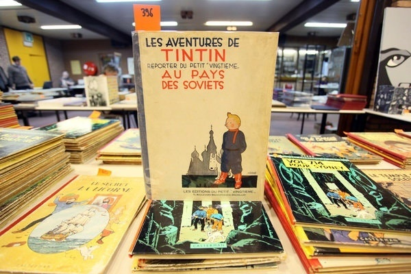
<h2>Item 148</h2>
<p>Context Label: 0</p>
<p>Caption 1: Visitors approach the Meroe Pyramids in northern Sudan on Friday.</p>
<p>Context 1: The image depicts a group of people walking towards a large sandstone structure, which appears to be a set of ancient Egyptian pyramids. Among the group, there is a man riding a camel, adding a unique touch to the scene. The people are spread out, with some walking closer to the pyramids and others further away. The combination of the people, the camel, and the pyramids creates a captivating and historical atmosphere.</p>
<p>Caption 2: A woman walks with children towards the Meroe Pyramids. Nearby a man rides a camel.</p>
<p>Context 2: The image depicts a group of people, including a woman and children, walking towards the Meroe Pyramids. A man on a camel is nearby, adding a unique touch to the scene. The pyramids are in the background, serving as a historical and impressive backdrop for the people and the camel. The combination of the people, the camel, and the pyramids creates a picturesque and interesting scene.</p>
<p>Ca1vsCon2: [9, 9, 9, 9, 9, 9]</p>
<p>Ca2vsCon1: [9, 9, 9, 9, 9, 0]</p>

<h2>Item 149</h2>
<p>Context Label: 0</p>
<p>Caption 1: In South Africa people start returning to their places of worship after lockdown restrictions are eased, including South Africa's Prophet Paseka Motsoeneng on Sunday in Ekurhuleni</p>
<p>Context 1: The image shows a man standing on a stage in a church, wearing a suit and tie, and speaking into a microphone. He appears to be addressing the congregation. The man is wearing a suit and tie, which suggests that he might be a pastor or a leader within the church. The church is filled with chairs, indicating that it is a place of worship where people gather to listen to sermons and other religious teachings. The presence of the man on the stage and the chairs in the church suggest that this is a typical church service, with the congregation coming together to participate in religious activities and listen to the speaker's message.</p>
<p>Caption 2: Prophet Paseka Motsoeneng, popularly known as Prophet Mboro, wears a face mask as he celebrates inside the Incredible Happenings Ministry Church, in Katlehong, Ekurhuleni on June 07, 2020.</p>
<p>Context 2: In the image, a man wearing a suit and tie is standing in front of a crowd of people, giving a speech. He is wearing a face mask, which is a precautionary measure to protect against the spread of the COVID-19 virus. The man appears to be a religious leader, possibly a pastor, as he delivers his message to the congregation. The audience is made up of various individuals, some of whom are seated on chairs while others stand. The scene takes place in a church setting, with a potted plant visible in the background.</p>
<p>Ca1vsCon2: [9, 0, 9, 9, 9, 9]</p>
<p>Ca2vsCon1: [8, 8, 8, 8, 8, 8]</p>

<h2>Item 150</h2>
<p>Context Label: 0</p>
<p>Caption 1: Trucks driving to the British port of Dover in a test of how a "no deal" withdrawal from the E.U. might affect traffic. </p>
<p>Context 1: The image shows a large group of trucks driving down a highway, with some of them carrying flags. This scene could be a representation of a "no deal" withdrawal from the E.U. test, simulating the potential impact on traffic if the United Kingdom were to leave the European Union without an agreement in place. The test aims to provide insights into the potential challenges and bottlenecks that might arise in the event of a no-deal Brexit, including increased border delays, congestion, and disruptions to supply chains. The presence of numerous trucks on the road suggests that the test is being conducted on a significant scale to accurately represent the potential consequences of a no-deal Brexit.</p>
<p>Caption 2:  Trucks taking part in a No Deal congestion exercise yesterday between Manston Airport and Dover </p>
<p>Context 2: The image shows a long line of trucks driving down a highway, with some of them possibly participating in a No Deal congestion exercise. The trucks are lined up in a single file, indicating that they are following a specific route or direction. The scene suggests that the trucks are either waiting for clearance or part of a planned event, such as a congestion exercise or a protest. The presence of multiple trucks in the scene highlights the importance of the event or exercise they are participating in, and the potential impact on traffic and transportation in the area.</p>
<p>Ca1vsCon2: [9, 0, 9, 9, 9, 9]</p>
<p>Ca2vsCon1: [8, 8, 9, 9, 9, 8]</p>
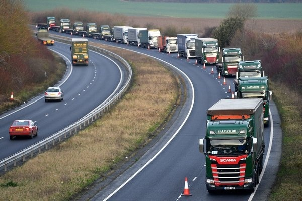
<h2>Item 151</h2>
<p>Context Label: 1</p>
<p>Caption 1: A photograph shows U.S. President Joe Biden on a movie set designed to look like the Oval Office.</p>
<p>Context 1: The image shows a photograph of U.S. President Joe Biden on a movie set designed to look like the Oval Office. The scene features three men sitting in chairs, with one of them being the President. The other two men are dressed in suits and ties, and they appear to be engaged in a conversation. The room is furnished with a dining table, a couch, and several chairs. There are also a few books placed on the table, and a TV is visible in the background. The overall setting gives the impression of a realistic Oval Office environment, complete with furniture and decorations.</p>
<p>Caption 2: This photograph was taken on Feb. 5, 2021, as Biden and Vice President Kamala Harris held a meeting in the actual Oval Office to discuss their COVID-19 relief package.</p>
<p>Context 2: The image shows three people sitting in chairs around a table in what appears to be the Oval Office. The individuals are engaged in a discussion, with one person wearing a suit and tie, and the other two dressed in business attire. The table is adorned with a cup, a vase, and a cell phone. There are also two chairs visible in the scene, one near the left side of the table and another on the right side. The setting suggests a formal meeting or discussion taking place in the Oval Office.</p>
<p>Ca1vsCon2: [8, 0, 9, 0, 0, 0]</p>
<p>Ca2vsCon1: [5, 3, 5, 3, 3, 3]</p>

<h2>Item 152</h2>
<p>Context Label: 0</p>
<p>Caption 1: A girl observes a partial solar eclipse on the Mahanakhon Skywalk Glass Tray at the King Power Mahanakhon building in Bangkok, Thailand.</p>
<p>Context 1: In the image, a girl is sitting on a glass walkway, known as the Mahanakhon Skywalk, which is located on top of a high-rise building in Bangkok, Thailand. She is wearing a blue dress and appears to be observing a partial solar eclipse. The glass walkway provides an impressive vantage point for the girl to safely watch the celestial event. The scene captures the unique experience of witnessing a natural phenomenon while being suspended high above the city.</p>
<p>Caption 2: A girl looks through an eclipse viewer on an elevated, transparent platform, with buildings and roads in the distance below her</p>
<p>Context 2: The image shows a girl wearing a pink shirt and a blue hat, looking through an eclipse viewer while sitting on an elevated, transparent platform. She is surrounded by a bustling cityscape with numerous cars and trucks on the roads below. The platform she is sitting on appears to be high up, providing a unique vantage point for her to observe the city from above. The girl's position and the city's infrastructure create an interesting contrast between the natural phenomenon of an eclipse and the urban environment.</p>
<p>Ca1vsCon2: [9, 9, 9, 9, 9, 9]</p>
<p>Ca2vsCon1: [9, 9, 9, 9, 9, 9]</p>

<h2>Item 153</h2>
<p>Context Label: 0</p>
<p>Caption 1: An aerial view of an empty Bournemouth beach</p>
<p>Context 1: The image shows an aerial view of a large, empty Bournemouth beach. The beach stretches from one end of the scene to the other, with a pier and a Ferris wheel in the background. The Ferris wheel is located near the middle of the scene, adding a touch of amusement to the beach setting. There are several people scattered across the beach, some closer to the water and others further back on the sand. The overall atmosphere of the scene is serene and peaceful, with the beach and ocean providing a beautiful backdrop for the visitors.</p>
<p>Caption 2: Easter weekend was quiet, with the government urging people to stay at home. This is Bournemouth beach on Good Friday.</p>
<p>Context 2: The image shows Bournemouth beach on a quiet Good Friday, with the government urging people to stay at home. There are a few people scattered across the beach, and a couple of umbrellas set up for shade. The beach is located near a city, with a Ferris wheel in the background, indicating that it is a popular tourist spot. The overall atmosphere is peaceful and serene, with a limited number of people enjoying their time at the beach.</p>
<p>Ca1vsCon2: [9, 9, 9, 9, 9, 9]</p>
<p>Ca2vsCon1: [9, 9, 9, 9, 9, 9]</p>

<h2>Item 154</h2>
<p>Context Label: 0</p>
<p>Caption 1: Plant manager Jo Dickinson tends the plants at Forest Lodge Garden Centre in Farnham, Surrey</p>
<p>Context 1: The image features a woman, likely a plant manager, tending to plants at a garden center. She is wearing a green shirt and is surrounded by various potted plants. Some of the plants are placed on the ground, while others are on stands or tables. The woman appears to be carefully arranging the plants, possibly for display or for sale to customers. The garden center provides a pleasant and green environment for visitors to explore and purchase plants for their homes or gardens.</p>
<p>Caption 2: An aerial view of a person watering plants with their shadow cast on the ground</p>
<p>Context 2: The image is an aerial view of a person watering plants with a hose. The person's shadow is cast on the ground, and the hose is visible as well. The scene also features a fire hydrant and a potted plant nearby. The person appears to be watering the plants on a sidewalk, possibly in a park or a public area.</p>
<p>Ca1vsCon2: [5, 5, 5, 7, 5, 5]</p>
<p>Ca2vsCon1: [8, 5, 8, 7, 6, 4]</p>

<h2>Item 155</h2>
<p>Context Label: 0</p>
<p>Caption 1: The happy couple left the ceremony to a traditional confetti shower</p>
<p>Context 1: The happy couple, made up of two teddy bears dressed in wedding attire, have left the ceremony to a traditional confetti shower. The confetti shower consists of confetti, or small pieces of paper, falling from the sky as the couple exits the chapel. This is a common tradition in many cultures, symbolizing the celebration and joy of the newlywed's new beginning. The teddy bears are dressed in wedding gear, including a tie and a veil, and are standing next to each other, expressing their happiness and love for each other.</p>
<p>Caption 2: Sylvanian Family Bride and Groom confetti throw</p>
<p>Context 2: The image features a group of small stuffed animals, including a bride and groom, dressed in wedding attire. They are standing on a field, and confetti is falling around them. The bride is wearing a veil and holding a bouquet, while the groom is dressed in a suit with a tie. The scene appears to be a wedding celebration, with the stuffed animals representing the bride and groom. The confetti adds a festive touch to the occasion, creating a joyful atmosphere.</p>
<p>Ca1vsCon2: [9, 9, 9, 9, 9, 9]</p>
<p>Ca2vsCon1: [9, 9, 9, 9, 9, 9]</p>

<h2>Item 156</h2>
<p>Context Label: 1</p>
<p>Caption 1: A photograph shows the "Supreme Army General of Antifa" in Portland.</p>
<p>Context 1: The image shows a person dressed in black, wearing a black mask, and holding a black bag. They are standing on a city street, surrounded by various vehicles such as cars and trucks. The person is dressed in a manner that resembles a military uniform, with a black jacket and a black hat. The outfit also includes a backpack, which is held by the person. The overall appearance suggests that the person might be participating in a protest or demonstration.</p>
<p>Caption 2: Standing out on the streets of Harajuku is 19-year-old student Nagi, who caught our eye with his tall mohawk and punk style.</p>
<p>Context 2: In the image, a young man with a unique hairstyle, a mohawk, is standing on a city street. He is wearing a backpack and a black jacket, which adds to his distinctive appearance. The man is surrounded by various vehicles, including cars and a truck, indicating that he is in a busy urban area. There are also other people in the scene, some of whom are carrying handbags, further emphasizing the bustling atmosphere of the city street.</p>
<p>Ca1vsCon2: [5, 3, 7, 3, 3, 1]</p>
<p>Ca2vsCon1: [5, 3, 5, 3, 3, 1]</p>

<h2>Item 157</h2>
<p>Context Label: 0</p>
<p>Caption 1: Liberian artist Kreevious Bachue works in his studio in the capital, Monrovia, on Wednesday.</p>
<p>Context 1: The image features a Liberian artist, Kreevious Bachue, working in his art studio in the capital city of Monrovia. He is standing in front of a canvas, painting a tiger. The studio is filled with various art supplies, including multiple bottles, cups, and a bowl, which are scattered around the room. There are also several books placed in different areas of the studio, which could be sources of inspiration or reference materials for the artist. The overall atmosphere of the studio suggests a creative and focused environment, with the artist actively engaged in his work.</p>
<p>Caption 2: Kreevious Bachue paints an artwork at his Farchure Print ^ Gallery workshop in Monrovia, Liberia</p>
<p>Context 2: The image features a man standing in a room, painting an artwork on a canvas. He is surrounded by various art supplies, including multiple bottles, cups, and a bowl, which are likely used for mixing colors or holding paintbrushes. The man appears to be focused and engaged in his work, creating a vibrant piece of art. The room also contains a chair, a handbag, and a laptop, suggesting that it might be a workspace or studio where the artist works on his creations.</p>
<p>Ca1vsCon2: [9, 9, 9, 9, 9, 9]</p>
<p>Ca2vsCon1: [9, 0, 9, 9, 9, 9]</p>

<h2>Item 158</h2>
<p>Context Label: 0</p>
<p>Caption 1: Rashida Tlaib on the House floor before her swearing-in.</p>
<p>Context 1: In the image, a woman wearing a red scarf is standing on the House floor, likely preparing to be sworn in as a member of Congress. She is surrounded by several other people, some of whom are also wearing ties. The scene takes place in a large room with rows of chairs, suggesting that it might be a formal event or a gathering in a House chamber. The woman in the red scarf appears to be the main focus of the image, as she is the one who catches the viewer's attention with her attire and position on the floor.</p>
<p>Caption 2: Rashida Tlaib of Michigan on the House floor before being sworn into the 116th Congress</p>
<p>Context 2: The image shows Rashida Tlaib of Michigan on the House floor before being sworn into the 116th Congress. She is wearing a red scarf and is surrounded by other members of Congress. The scene captures the moment of her taking the oath of office, marking the beginning of her service in the United States House of Representatives.</p>
<p>Ca1vsCon2: [9, 9, 9, 9, 9, 9]</p>
<p>Ca2vsCon1: [9, 9, 9, 9, 9, 9]</p>

<h2>Item 159</h2>
<p>Context Label: 1</p>
<p>Caption 1: Former New York City Mayor Michael Bloomberg could have given each American $1 million for the amount he spent on advertisements during his failed 2020 U.S. presidential candidacy</p>
<p>Context 1: During his unsuccessful 2020 presidential campaign, former New York City Mayor Michael Bloomberg spent a significant amount on advertisements. If he had given each American $1 million, he would have distributed $310,614,200,000 (assuming the average American household has 2.6 people). This amount is equivalent to the total amount of money Bloomberg spent on advertisements during his campaign. However, it is important to note that this calculation does not take into account the various costs associated with running a presidential campaign, such as staff, office space, and other expenses.</p>
<p>Caption 2: If Bloomberg were to divide his wealth equally among the American population, each person would receive less than $200.</p>
<p>Context 2: Based on the current wealth of Michael Bloomberg, if he were to divide his wealth equally among the American population, each person would receive less than $200. This is because Bloomberg is one of the richest people in the world, with an estimated net worth of $68.7 billion as of September 2021, according to Forbes. Dividing his wealth evenly among the 329 million people in the United States would result in each person receiving less than $200. However, it is important to note that this calculation does not take into account taxes and other factors that could reduce the actual payout to individuals.</p>
<p>Ca1vsCon2: [5, 5, 5, 5, 5, 5]</p>
<p>Ca2vsCon1: [5, 2, 7, 2, 3, 2]</p>

<h2>Item 160</h2>
<p>Context Label: 0</p>
<p>Caption 1: On Sunday zebras cross the road as a motorcyclist waits in Kimana Sanctuary in Kenya.</p>
<p>Context 1: In the image, a group of zebras is crossing a road at night, while a motorcyclist waits on the other side. The scene takes place in a wildlife sanctuary in Kenya. The motorcyclist is patiently waiting for the zebras to finish crossing the road before they continue their journey. The image captures the moment of harmony between wildlife and human activity, as the motorcyclist respects the natural behavior of the zebras and waits for them to pass safely.</p>
<p>Caption 2: Zebras cross the road which has about 70 meter-long free electric-fence area for all animals as their corridor in the Amboseli-Tsavo ecosystem at night as a motorbike waits next to Kimana Sanctuary in Kimana, Kenya, on March 14, 2021</p>
<p>Context 2: The image features a group of zebras crossing a road at night, with a motorbike waiting nearby. There are at least nine zebras visible in the scene, some of which are crossing the road while others are standing nearby. The motorbike is positioned on the left side of the road, patiently waiting for the zebras to clear the way. The setting appears to be in a wildlife sanctuary or a park, as the zebras are free to roam and cross the road without any hindrance.</p>
<p>Ca1vsCon2: [9, 9, 9, 9, 9, 9]</p>
<p>Ca2vsCon1: [9, 9, 9, 9, 9, 9]</p>

<h2>Item 161</h2>
<p>Context Label: 0</p>
<p>Caption 1: Members of the U.S. military install multiple tiers of concertina wire along the banks of the Rio Grande near the Juarez-Lincoln Bridge at the U.S.-Mexico border, Nov. 16, 2018, in Laredo, Texas.</p>
<p>Context 1: In the image, several U.S. military personnel are working together to install multiple tiers of concertina wire along the banks of the Rio Grande near the Juarez-Lincoln Bridge at the U.S.-Mexico border. The soldiers are focused on their task, ensuring the security of the area. The presence of the concertina wire indicates that the U.S. government is taking measures to enhance border security, preventing unauthorized access and illegal crossings.</p>
<p>Caption 2: Members of the U.S. military install multiple tiers of concertina wire along the banks of the Rio Grande near the Juarez-Lincoln Bridge at the U.S.-Mexico border in Laredo, Texas.</p>
<p>Context 2: In the image, several U.S. military personnel are working together to install multiple tiers of concertina wire along the banks of the Rio Grande near the Juarez-Lincoln Bridge at the U.S.-Mexico border in Laredo, Texas. The soldiers are focused on their task, ensuring the security of the area. The presence of the concertina wire indicates that the U.S. government is taking measures to enhance border security, preventing unauthorized access and illegal crossings.</p>
<p>Ca1vsCon2: [9, 9, 9, 9, 9, 9]</p>
<p>Ca2vsCon1: [9, 9, 9, 9, 9, 9]</p>

<h2>Item 162</h2>
<p>Context Label: 0</p>
<p>Caption 1: Manchester City's shirt logo provided a perfect backdrop for Liam Gallagher in July 1994</p>
<p>Context 1: The image features a man standing in front of a Manchester City football club billboard, which has the team's shirt logo perfectly framing him. The man is wearing a red shirt, which matches the color of the billboard. The scene captures a moment where the man is being photographed or filmed, with the Manchester City logo serving as an interesting and relevant backdrop for the image.</p>
<p>Caption 2: Liam Gallagher stood in front of a billboard featuring a Manchester City football shirt with a "brother" logo</p>
<p>Context 2: In the image, Liam Gallagher is standing in front of a billboard featuring a Manchester City football shirt with a "brother" logo. He is wearing a red jacket and is positioned near a brick building. The scene appears to be a street view, as there are several cars parked or moving in the background. The presence of the football shirt and the "brother" logo suggests that the billboard is promoting a sports event or team, possibly related to the Manchester City football club.</p>
<p>Ca1vsCon2: [8, 8, 8, 8, 8, 8]</p>
<p>Ca2vsCon1: [9, 9, 9, 9, 9, 9]</p>

<h2>Item 163</h2>
<p>Context Label: 0</p>
<p>Caption 1: President Trump on Thursday visited the southern border in McAllen, Tex.</p>
<p>Context 1: In the image, President Trump is standing on a stage with a group of people, including police officers, while speaking to them. He is wearing a suit and tie, and he appears to be addressing the crowd on a topic related to border security or immigration. The scene takes place near a road, with several trucks and a car visible in the background. The presence of the police officers and the context of the speech suggest that this event is of significant importance, possibly related to the ongoing debate and discussions surrounding border control and immigration policies.</p>
<p>Caption 2: President Trump at the Rio Grande, near McAllen, Tex., on Thursday.</p>
<p>Context 2: In the image, President Trump is standing on a patch of dirt near the Rio Grande, surrounded by a group of people. He is wearing a suit and tie, and he appears to be engaged in a conversation with the people around him. The group consists of at least eleven individuals, with some standing closer to the president and others further away. The scene suggests that the president is either giving a speech or participating in a discussion related to the Rio Grande or the border area.</p>
<p>Ca1vsCon2: [9, 9, 9, 9, 9, 9]</p>
<p>Ca2vsCon1: [9, 9, 9, 9, 9, 9]</p>

<h2>Item 164</h2>
<p>Context Label: 0</p>
<p>Caption 1: Counting ballots last week in Kinshasa.</p>
<p>Context 1: The image shows a group of people sitting at a table, surrounded by stacks of papers, including ballots. They are actively engaged in counting the ballots, which suggests that they are part of an election process or a similar event. The presence of multiple people and the organized arrangement of papers on the table indicate that they are working together to complete the task at hand. The scene highlights the importance of transparency and fairness in the democratic process, as the people involved in counting the ballots ensure that the results are accurate and representative of the will of the voters.</p>
<p>Caption 2: Officials from Congo's Independent National Electoral Commission (CENI) count presidential elections ballots at tallying center in Kinshasa, Democratic Republic of Congo, Friday.</p>
<p>Context 2: The image shows a group of three people, likely officials from Congo's Independent National Electoral Commission (CENI), sitting at a table and counting ballots during the presidential elections in Kinshasa, Democratic Republic of Congo. The table is filled with numerous papers, which are the ballots being counted. The officials are focused on their task, ensuring the transparency and accuracy of the election results.</p>
<p>Ca1vsCon2: [9, 9, 9, 9, 9, 9]</p>
<p>Ca2vsCon1: [9, 0, 9, 9, 9, 9]</p>

<h2>Item 165</h2>
<p>Context Label: 1</p>
<p>Caption 1: Donald Trump suggested he'd use nuclear weapons against Mexico if they refused to build and pay for a wall.</p>
<p>Context 1: In a speech, Donald Trump suggested that he would use nuclear weapons against Mexico if they refused to pay for a wall along their border with the United States. This statement is highly provocative and incites fear due to the potential consequences of using nuclear weapons, which can cause devastating effects on a global scale. Trump's statement reflects a lack of understanding of international relations, the potential consequences of using nuclear weapons, and the gravity of such an action. It is important to note that the use of nuclear weapons is a serious matter that should not be taken lightly or used as a threat.</p>
<p>Caption 2: Presidential candidate Donald Trump, pictured here 2013 Conservative Political Action Conference.</p>
<p>Context 2: The image shows a man in a suit and tie, who appears to be Donald Trump, speaking at a podium during a political event. He is wearing a blue tie and seems to be making a strong statement. The man is captured in a close-up shot, emphasizing his facial expression and gestures. The setting appears to be an indoor event, possibly a political conference or a speech.</p>
<p>Ca1vsCon2: [8, 9, 9, 9, 9, 9]</p>
<p>Ca2vsCon1: [8, 5, 8, 5, 6, 6]</p>

<h2>Item 166</h2>
<p>Context Label: 0</p>
<p>Caption 1: A surfer catches a wave in St Ives, Cornwall. Strong winds and low pressure linked to Hurricane Epsilon in the North Atlantic created huge waves off the coast, as strong winds and heavy rain affected parts of the UK.</p>
<p>Context 1: The image captures a surfer riding a wave in the ocean, skillfully balancing on their surfboard. The surfer is wearing a wetsuit, which is appropriate for the cold water conditions. The scene is set against a backdrop of rocks, adding to the natural beauty of the landscape. The presence of the surfer and the large wave indicates that the conditions are ideal for surfing, making it an exciting and thrilling moment captured in the image.</p>
<p>Caption 2: A surfer catches a wave in St Ives, Cornwall, 28 October 2020</p>
<p>Context 2: The image captures a thrilling moment of a surfer riding a wave in the ocean. The surfer is skillfully balancing on a surfboard, wearing a wetsuit, and appears to be in the middle of a jump. The scene is set in a rocky area with several rocks surrounding the surfer, adding to the excitement of the moment. There are also a few other people in the background, likely observing the surfer's impressive performance. The image showcases the adrenaline-pumping nature of surfing and the skill required to navigate the ocean waves.</p>
<p>Ca1vsCon2: [9, 9, 9, 9, 9, 9]</p>
<p>Ca2vsCon1: [9, 9, 9, 9, 9, 9]</p>

<h2>Item 167</h2>
<p>Context Label: 1</p>
<p>Caption 1: investigators had found Russian president Vladimir Putin’s passport at the scene of the crime of Russian spy Sergei Skripal</p>
<p>Context 1: The image shows a man in a suit and tie, who appears to be Russian President Vladimir Putin, standing at a podium. However, the statement claiming that investigators found his passport at the scene of the crime involving Russian spy Sergei Skripal is not supported by any reliable evidence or sources. This information is likely false or misleading.</p>
<p>Caption 2: A satirical web site took accusations of Putin's involvement in the March 2018 poisoning of a former Russian spy on British soil to extremes</p>
<p>Context 2: The image shows a man in a suit and tie, standing at a podium, giving a speech. The man is not Vladimir Putin, but rather a caricature of him. The satirical web site took accusations of Putin's involvement in the March 2018 poisoning of a former Russian spy on British soil to extremes by depicting Putin as the main suspect in the incident. The image is intended to be humorous and satirical, rather than a serious representation of the actual events.</p>
<p>Ca1vsCon2: [5, 2, 5, 2, 3, 2]</p>
<p>Ca2vsCon1: [5, 2, 5, 2, 3, 2]</p>

<h2>Item 168</h2>
<p>Context Label: 1</p>
<p>Caption 1: A federal gun law was passed in September 2016 which will prevent people from practicing "open carry" in all 50 states.</p>
<p>Context 1: The federal gun law passed in September 2016 that prevents people from practicing "open carry" in all 50 states refers to the Open Carry Law, which was enacted in Texas in 1995. This law allows individuals to openly carry handguns in public places, as long as they have a valid license to carry a concealed handgun. The Open Carry Law has been a controversial topic in the United States, with some arguing that it promotes safety and personal responsibility, while others believe it can lead to increased violence and fear. The federal law, which was signed by President Barack Obama, overturned the Open Carry Law and other similar state laws, effectively prohibiting the practice of openly carrying handguns in public in all 50 states.</p>
<p>Caption 2: An open carry advocate walks down the street in Austin, Texas.</p>
<p>Context 2: The image shows an open carry advocate walking down the street in Austin, Texas, with a rifle strapped to his back. The man is surrounded by a crowd of people, some of whom are also carrying handbags. The scene depicts a lively and bustling atmosphere, with individuals going about their day and engaging in various activities. The open carry advocate's presence adds an interesting element to the scene, as it highlights the different ways people choose to carry their weapons in public spaces.</p>
<p>Ca1vsCon2: [9, 0, 9, 9, 9, 9]</p>
<p>Ca2vsCon1: [5, 2, 5, 2, 4, 2]</p>

<h2>Item 169</h2>
<p>Context Label: 1</p>
<p>Caption 1: A photo of a large indoor icicle was taken during the Texas blackout in February 2021.</p>
<p>Context 1: The image shows a kitchen with a large indoor icicle hanging from the ceiling, which appears to be dripping. The icicle is quite prominent and extends from the ceiling, covering a significant portion of the room. The kitchen itself is equipped with a refrigerator, an oven, and a sink. There are also several bottles scattered around the kitchen, with some placed near the sink and others on the countertops. The scene captures the unusual sight of an icicle forming inside a home during the Texas blackout in February 2021.</p>
<p>Caption 2: The photo predates the Texas blackout by several years, online claims linking it to current events in Texas are “False.”</p>
<p>Context 2: The image shows a kitchen with a large, long string of icicles hanging from the ceiling. The scene is not related to the current events in Texas, as the photo was taken in 2003. The Texas blackout mentioned in the caption is a different event that occurred in 2003, and it has nothing to do with the image of the kitchen with icicles. The false claim linking the image to current events in Texas is misleading and incorrect.</p>
<p>Ca1vsCon2: [5, 2, 5, 0, 1, 1]</p>
<p>Ca2vsCon1: [0, 0, 0, 0, 0, 0]</p>

<h2>Item 170</h2>
<p>Context Label: 0</p>
<p>Caption 1: A woman walks her dog on a Paris bridge</p>
<p>Context 1: In the image, a woman is walking her dog on a bridge in Paris, with the Eiffel Tower in the background. The woman is holding the leash of her dog, which is located towards the left side of the image. The dog appears to be a small white dog. The scene captures a beautiful moment of the woman enjoying a stroll with her pet in one of the most iconic cities in the world.</p>
<p>Caption 2: The Eiffel Tower seen in background</p>
<p>Context 2: In the image, a woman is walking down a street with a dog on a leash. The Eiffel Tower is visible in the background, towering over the cityscape. The woman and her dog are walking under an archway, adding a sense of grandeur to the scene. Additionally, there are several other people in the image, some of them carrying handbags, and a car parked on the street. The presence of these individuals and the iconic Eiffel Tower create a lively and bustling atmosphere in the city.</p>
<p>Ca1vsCon2: [9, 9, 9, 9, 9, 9]</p>
<p>Ca2vsCon1: [5, 5, 7, 5, 5, 3]</p>

<h2>Item 171</h2>
<p>Context Label: 0</p>
<p>Caption 1: A view shows a new fountain during a ceremony at the Palm Jumeirah in an attempt to break the Guinness World Record for the largest fountain, in Dubai, United Arab Emirates October 22, 2020</p>
<p>Context 1: The image features a dazzling nighttime scene in Dubai, United Arab Emirates, where a large fountain is set against a backdrop of fireworks. The fountain is illuminated with purple lights, creating a visually stunning display. The fireworks are exploding in the sky above the fountain, adding to the excitement and grandeur of the event. The combination of the illuminated fountain and the colorful fireworks creates a captivating and memorable experience for those watching the spectacle.</p>
<p>Caption 2: World's largest fountain launched in Dubai</p>
<p>Context 2: The world's largest fountain, the Dubai Fountain, is launched in the city of Dubai, United Arab Emirates.</p>
<p>Ca1vsCon2: [9, 9, 9, 9, 9, 9]</p>
<p>Ca2vsCon1: [8, 8, 9, 9, 9, 9]</p>

<h2>Item 172</h2>
<p>Context Label: 1</p>
<p>Caption 1: In December 2015, a photograph of Republican presidential candidate Ted Cruz along with a quote uttered by him about his relationship with God started circulating around the internet</p>
<p>Context 1: In December 2015, a photograph of Republican presidential candidate Ted Cruz along with a quote uttered by him about his relationship with God started circulating around the internet. The quote, which is attributed to Cruz, reads: "I believe in the power of prayer, and I pray every day. I pray for guidance, for wisdom, for strength, and for the courage to do what is right." This statement reflects Cruz's personal beliefs and values, and it is a part of his platform during his presidential campaign.</p>
<p>Caption 2: No record of the Republican candidate  Ted Cruz saying that he “literally” speaks to God was found.</p>
<p>Context 2: The statement attributed to Ted Cruz, where he says he "literally" speaks to God, is a falsehood. There is no reliable source that confirms Cruz ever made such a statement. The image and description provided in the image do not match any known record of Cruz's public statements or interviews.</p>
<p>Ca1vsCon2: [5, 5, 5, 7, 5, 5]</p>
<p>Ca2vsCon1: [5, 4, 5, 3, 3, 2]</p>

<h2>Item 173</h2>
<p>Context Label: 1</p>
<p>Caption 1: The legal drinking age has been raised to 23.</p>
<p>Context 1: The legal drinking age has been raised to 23.</p>
<p>Caption 2: Image shows flaming drinks</p>
<p>Context 2: The image features two glasses filled with a brightly lit, yellow substance, which appears to be a flaming drink. The glasses are placed next to each other, creating an eye-catching display. The flames in the glasses are lit, adding a dramatic and visually appealing element to the scene.</p>
<p>Ca1vsCon2: [5, 3, 5, 3, 5, 1]</p>
<p>Ca2vsCon1: [5, 2, 5, 3, 1, 1]</p>

<h2>Item 174</h2>
<p>Context Label: 0</p>
<p>Caption 1: Visitors dressed in costumes take a selfie at Hong Kong's Disneyland after the theme park officially reopened after nearly five months.</p>
<p>Context 1: The image shows a man and a woman dressed in costumes, standing in front of a Disneyland sign and taking a selfie. They are both wearing face masks, likely to protect themselves from the COVID-19 virus. The couple is posing for the picture, capturing their visit to the theme park. The park has been closed for nearly five months due to the pandemic, and it has now reopened, allowing visitors to enjoy their time dressed in costumes and taking memorable photos.</p>
<p>Caption 2: Visitors dressed in costumes take a selfie at Hong Kong's Disneyland</p>
<p>Context 2: The image features a man and a woman dressed in costumes, standing in front of a Disneyland backdrop, and taking a selfie together. They are both wearing masks, likely due to the ongoing COVID-19 pandemic. The couple is posing for the picture, capturing a memorable moment at the theme park. In the background, there are several other people, some of whom are also wearing costumes, adding to the festive atmosphere of the park.</p>
<p>Ca1vsCon2: [9, 9, 9, 9, 9, 9]</p>
<p>Ca2vsCon1: [9, 9, 9, 9, 9, 9]</p>

<h2>Item 175</h2>
<p>Context Label: 1</p>
<p>Caption 1: Oprah Winfrey wore a GPS ankle monitor during her interview with Prince Harry and Meghan, Duchess of Sussex.</p>
<p>Context 1: In the image, Oprah Winfrey is wearing a GPS ankle monitor during her interview with Prince Harry and Meghan, Duchess of Sussex. This is likely a reference to the media coverage and scrutiny the couple has faced since their wedding, with some media outlets using GPS tracking to follow their movements. The image is a humorous take on this situation, as Winfrey's use of the GPS ankle monitor adds a lighthearted touch to the interview.</p>
<p>Caption 2: Winfrey was wearing long, brown leather boots, and the bump that people saw was simply a crease in the material when she sat with her legs crossed.</p>
<p>Context 2: In the image, Oprah Winfrey is sitting on a chair in a backyard, wearing a black dress and surrounded by three other people. The group is engaged in a conversation, and Winfrey has her legs crossed. It is true that some people noticed a bump in the material of her dress when she sat with her legs crossed, but it is not a visible physical bump. The bump people saw was likely an optical illusion caused by the folds and creases in the dress material.</p>
<p>Ca1vsCon2: [8, 7, 9, 7, 6, 6]</p>
<p>Ca2vsCon1: [5, 2, 5, 1, 1, 1]</p>

<h2>Item 176</h2>
<p>Context Label: 1</p>
<p>Caption 1: A photograph taken at the 'Million MAGA March' in November 2020 shows Nazi and Confederate flags on display.</p>
<p>Context 1: The image shows a man standing next to a table with Nazi and Confederate flags displayed at an outdoor event. The man is wearing a red hat and appears to be looking at the flags. There are several other people in the scene, some of them standing near the man with the flags, while others are scattered around the event. A few cars are parked in the vicinity, and a truck can be seen in the background. The presence of these flags and the overall setting suggest that the event might be a political gathering or protest, possibly related to the "Million MAGA March" in November 2020.</p>
<p>Caption 2: The photograph seen above was taken in a different time and place that had no connection to “Million MAGA March.”</p>
<p>Context 2: The photograph depicts a man standing in a parking lot, looking at a table with various flags on it. The flags include a Nazi flag and an American flag. The scene does not have any connection to the "Million MAGA March" event, as it was taken in a different time and place. The photograph is meant to be viewed as a standalone image, and its content does not directly relate to the political rally or any current events.</p>
<p>Ca1vsCon2: [5, 3, 7, 3, 3, 2]</p>
<p>Ca2vsCon1: [4, 0, 3, 0, 1, 1]</p>

<h2>Item 177</h2>
<p>Context Label: 0</p>
<p>Caption 1: A man kneels in front of a memorial and mural for George Floyd in Houston, Texas. Mr Floyd died in May, in Minneapolis, when a white police officer knelt on his neck for nearly nine minutes, sparking nationwide protests.</p>
<p>Context 1: The image depicts a man kneeling in front of a memorial and mural dedicated to George Floyd, who died in May 2019 in Minneapolis, Minnesota, after being arrested by a white police officer. The man is kneeling in prayer, paying his respects to the memory of Mr. Floyd. The mural features a picture of Mr. Floyd, and the memorial includes a bench where people can gather to remember and honor his life. The scene highlights the ongoing struggle for justice and equality in the face of police brutality and systemic racism.</p>
<p>Caption 2: A man kneels in front of a memorial and mural for George Floyd</p>
<p>Context 2: The image depicts a man kneeling in front of a memorial and mural dedicated to George Floyd, who was a victim of police brutality. The man is wearing a black shirt and appears to be praying or showing respect in front of the tribute. The mural features a pair of angel wings, symbolizing the spirit of the man and the outpouring of support from the community. The memorial serves as a reminder of the unfortunate events that led to the creation of this tribute and a call for change and justice.</p>
<p>Ca1vsCon2: [9, 9, 9, 9, 9, 9]</p>
<p>Ca2vsCon1: [9, 9, 9, 9, 9, 9]</p>

<h2>Item 178</h2>
<p>Context Label: 1</p>
<p>Caption 1: Photographs shared widely on TikTok and Twitter in late 2020 and early 2021 showed U.S. Rep. Alexandria Ocasio-Cortez.</p>
<p>Context 1: The photographs shared widely on TikTok and Twitter in late 2020 and early 2021 showed U.S. Rep. Alexandria Ocasio-Cortez wearing a mask and a coat while walking down the street. These images were taken during the pandemic, and they captured her wearing a mask and coat as a way to protect herself and others from the virus. The photographs went viral, sparking conversations about the importance of wearing masks and taking precautions during the pandemic.</p>
<p>Caption 2: the images show the Grammy-winning English singer Dua Lipa.</p>
<p>Context 2: The images show the Grammy-winning English singer Dua Lipa.</p>
<p>Ca1vsCon2: [4, 1, 3, 1, 1, 1]</p>
<p>Ca2vsCon1: [5, 2, 5, 2, 1, 1]</p>

<h2>Item 179</h2>
<p>Context Label: 1</p>
<p>Caption 1: A photograph of a scantily clad singer represents "antifa" in a Seattle anti-police-brutality protest zone in summer 2020.</p>
<p>Context 1: The photograph features a scantily clad woman, who is the focal point of the image. She is wearing a headband and appears to be participating in an anti-police-brutality protest. The woman is holding a protest sign, which reads "antifa." The scene takes place in a city street, with several cars parked or driving nearby. There are also a few other people in the background, some of them holding signs, likely also participating in the protest. The woman's presence and the protest signs suggest that the image captures a moment from the ongoing anti-police-brutality movement.</p>
<p>Caption 2: The photograph was taken by photographer Peretz Partensky on Sept. 25, 2011, at the Folsom Street Fair, which is a leather and BDSM festival that takes place every fall in San Francisco, California.</p>
<p>Context 2: The image captures a lively scene at the Folsom Street Fair, where a crowd of people is gathered in the street. There are numerous individuals standing and walking around, enjoying the festivities. Some of the people are carrying handbags, and a few individuals can be seen wearing ties.In the background, there is a sign that reads "We're not leaving until demands met," which adds to the overall atmosphere of the event. The presence of the sign suggests that there might be a protest or a cause being advocated for at the fair.</p>
<p>Ca1vsCon2: [5, 0, 5, 0, 1, 1]</p>
<p>Ca2vsCon1: [5, 3, 5, 3, 3, 1]</p>

<h2>Item 180</h2>
<p>Context Label: 0</p>
<p>Caption 1: the artists Sand in your Eye make the portrait on the beach in Whitby in the north of England for the charity WaterAid.</p>
<p>Context 1: The image shows a sand portrait of a man, created by the artists Sand in Your Eye, on the beach in Whitby, a coastal town in the north of England. The portrait is made for a charity, WaterAid, which focuses on providing access to clean water, improved sanitation, and hygiene in developing countries. The artists' impressive sand sculpture not only showcases their talent but also raises awareness and support for the important cause.</p>
<p>Caption 2: A giant sand portrait by WaterAid and artists Sand In Your Eye of Ansha, a 12-year-old from Frat in Ethiopia adorns Whitby Beach on March 15, 2021 in Whitby, England.</p>
<p>Context 2: The image features a unique sand sculpture of a man, created by artists and volunteers from WaterAid, on a beach near a small town. The sand portrait is impressive, covering a large area of the beach and capturing the attention of onlookers. In the background, several people can be seen enjoying the beach and the view of the sculpture. The scene also includes a few boats visible in the water, adding to the coastal atmosphere.</p>
<p>Ca1vsCon2: [9, 9, 9, 9, 9, 9]</p>
<p>Ca2vsCon1: [9, 9, 9, 9, 9, 9]</p>

<h2>Item 181</h2>
<p>Context Label: 0</p>
<p>Caption 1: Supporters of Felix Tshisekedi, the newly declared winner, in Kinshasa on Thursday.</p>
<p>Context 1: The image shows a group of people celebrating in the streets of Kinshasa, the capital of the Democratic Republic of Congo. The crowd is gathered in the middle of the street, with some individuals dancing and waving at the camera. There are at least 14 people visible in the scene, and they are spread across the street. Some of them are holding cell phones, possibly capturing the moment or communicating with others. The celebration appears to be in response to the recent announcement of the winner of the Democratic Republic of Congo's presidential election, with Felix Tshisekedi being the declared victor.</p>
<p>Caption 2: Residents celebrate in Kinshasa, Congo, on Thursday after the election results were announced.</p>
<p>Context 2: In the image, a large group of people is gathered on a city street, celebrating and dancing together. The crowd is diverse, with individuals of different ages and appearances. Some of the people are holding umbrellas, and there are a few handbags visible in the scene. The festive atmosphere suggests that the celebration is in response to positive news or a recent event, such as the announcement of election results. The people are expressing their joy and happiness through dance and togetherness in the middle of the city.</p>
<p>Ca1vsCon2: [9, 9, 9, 9, 9, 9]</p>
<p>Ca2vsCon1: [9, 9, 9, 9, 9, 9]</p>

<h2>Item 182</h2>
<p>Context Label: 0</p>
<p>Caption 1: On Tuesday, Toure, a Gambian salt harvester collects salt from the bottom of Lake Retba in Senegal...</p>
<p>Context 1: The image shows a man, likely a Gambian salt harvester, collecting salt from the bottom of Lake Retba in Senegal. He is wearing a black and white outfit and is in the process of scooping up the salt from the lake. The lake appears to be quite large, and the man is using a basket to collect the salt. The scene captures the traditional method of salt harvesting in the region, which involves manually scooping the salt from the lake's shallow waters.</p>
<p>Caption 2: Touré, a Gambian salt harvester, holds a basket filled with the salt harvested from the crust of the bottom of the Lake Retba (Pink Lake) in Senegal on March 16, 2021.</p>
<p>Context 2: The image features a man kneeling in the water, holding a basket filled with salt. The man is wearing a hat and is surrounded by a unique pink lake, which is known as the Pink Lake or Lake Retba. The lake is famous for its vibrant pink color, caused by the abundance of a type of algae in the water. The man appears to be harvesting the salt from the lake, using the basket to collect the salt crystals from the bottom of the lake.</p>
<p>Ca1vsCon2: [9, 9, 9, 9, 9, 9]</p>
<p>Ca2vsCon1: [9, 9, 9, 9, 9, 9]</p>

<h2>Item 183</h2>
<p>Context Label: 0</p>
<p>Caption 1: The U. S. Supreme Court building stands quietly before dawn in Washington, Friday, Oct. 5, 2018.</p>
<p>Context 1: The U.S. Supreme Court building is a majestic and impressive structure, located in the capital city of Washington, D.C. The image captures the building at a peaceful moment, with the sun rising over the city, casting a warm glow on the building. The court is surrounded by a well-maintained lawn, and the streetlights are still lit, creating a serene atmosphere. The Supreme Court building is an iconic symbol of justice and the highest judicial authority in the United States, and its presence in the city adds to its importance.</p>
<p>Caption 2: The U. S. Supreme Court building in Washington, D.C.</p>
<p>Context 2: The U.S. Supreme Court building is an impressive structure located in the capital city of Washington, D.C. The building is made of white marble and features three tall pillars, symbolizing justice, liberty, and independence. The court is situated on a hill, making it a prominent landmark in the city. The image shows the court at night, with the illuminated building casting a warm glow over the surrounding area. The building's architecture and the surrounding environment make it a beautiful and iconic symbol of the American legal system.</p>
<p>Ca1vsCon2: [9, 9, 9, 9, 9, 9]</p>
<p>Ca2vsCon1: [8, 9, 9, 9, 9, 9]</p>

<h2>Item 184</h2>
<p>Context Label: 1</p>
<p>Caption 1: Posts shared on social media about the event purported to document the display of Nazi and Confederate flags offered for sale at the rally</p>
<p>Context 1: The image shows a man standing next to a table displaying Nazi and Confederate flags for sale at an outdoor event. The presence of these flags, along with the man's outfit, suggests that the rally might be associated with far-right or white supremacist ideologies. The event has attracted some attention on social media, with people sharing posts about the display of these flags. However, it is essential to note that the image alone does not provide enough context to determine the intent or motivations behind the display of these flags. It is crucial to consider the broader context and additional information to understand the full nature of the event.</p>
<p>Caption 2: The photograph seen above was taken in a different time and place that had no connection to “Million MAGA March.”</p>
<p>Context 2: The photograph in the image shows a man standing next to a table with a red flag, possibly at a flea market. There are also several other people in the scene, and a few cars are visible in the background. The presence of the red flag and the flea market setting suggest that this photograph has nothing to do with the "Million MAGA March" event, as it was a political rally held in Washington D.C. on January 19, 2020.</p>
<p>Ca1vsCon2: [5, 1, 5, 1, 1, 1]</p>
<p>Ca2vsCon1: [5, 1, 3, 1, 1, 1]</p>

<h2>Item 185</h2>
<p>Context Label: 1</p>
<p>Caption 1: Sarah Palin wants to ban "Arabic numerals" from American schools.</p>
<p>Context 1: This is a false claim. Sarah Palin never made any statement or expressed any intention to ban "Arabic numerals" from American schools. The statement is a complete fabrication and an incorrect interpretation of her views on education.</p>
<p>Caption 2: Former vice presidential Republican candidate Sarah Palin speaks during a Tea Party rally against the Iran deal on the West Lawn of the Capitol in Washington.</p>
<p>Context 2: In the image, Sarah Palin is standing on a stage, giving a speech at a political event. She is wearing a pink shirt and is surrounded by a crowd of people. Palin is known for being a former vice presidential candidate and a prominent figure in the Tea Party movement. She is speaking out against the Iran deal, expressing her views and opinions on the matter.</p>
<p>Ca1vsCon2: [8, 0, 0, 0, 0, 0]</p>
<p>Ca2vsCon1: [4, 1, 3, 1, 1, 1]</p>

<h2>Item 186</h2>
<p>Context Label: 1</p>
<p>Caption 1: The FBI raided the CDC in the middle of the night to seize data on a link between vaccines and autism.</p>
<p>Context 1: This statement is false and misleading. The Centers for Disease Control and Prevention (CDC) and the Federal Bureau of Investigation (FBI) are two separate agencies with distinct roles and responsibilities. The CDC is a public health agency focused on protecting the health and well-being of Americans, while the FBI is a law enforcement agency responsible for investigating criminal activities. The two agencies do not typically work together on the same projects or share data related to health and criminal investigations. Additionally, there is no evidence to support the claim that the CDC is involved in any cover-up related to a link between vaccines and autism. The scientific community overwhelmingly agrees that vaccines are safe and effective in preventing diseases, and there is no evidence to support any link between vaccines and autism.</p>
<p>Caption 2: The CDC raid claim was popularized via a personal blog is attributed to a doctor and the known fake news site</p>
<p>Context 2: The claim that there was a CDC raid on the Atlanta headquarters of the Centers for Disease Control and Prevention (CDC) was popularized via a personal blog and attributed to a doctor and the known fake news site. The information in the blog post and the fake news article is not accurate, and the CDC has since issued a statement denying the raid. The CDC headquarters in Atlanta remains operational, and there is no indication of a raid or any disruption in their operations. It is important to verify the accuracy of information shared on social media or other platforms before spreading it.</p>
<p>Ca1vsCon2: [5, 2, 5, 2, 3, 2]</p>
<p>Ca2vsCon1: [5, 2, 7, 1, 3, 5]</p>

<h2>Item 187</h2>
<p>Context Label: 1</p>
<p>Caption 1: A video clip shows supporters of U.S. Sen. Bernie Sanders failing to identify a single country on an unlabeled world map.</p>
<p>Context 1: The image shows a man standing in front of a blue world map, which is prominently displayed on a wall. The man is wearing a blue shirt and appears to be pointing at the map. There are several other people in the background, but they are not the main focus of the scene. The image does not seem to be related to a political event or a video clip featuring supporters of U.S. Sen. Bernie Sanders.</p>
<p>Caption 2: 'Jimmy Kimmel Live' asks Republican voters to name a country, any country on a map</p>
<p>Context 2: In the image, a man is standing in front of a blue world map, holding a marker, and pointing at a specific location. This scene is part of a segment on Jimmy Kimmel Live, where the host asks Republican voters to name a country on a map. The man is participating in this challenge, and his answer is not visible in the image. The segment aims to highlight the difficulty in naming countries, especially for Americans who may not be well-versed in world geography or foreign affairs.</p>
<p>Ca1vsCon2: [5, 3, 5, 3, 3, 1]</p>
<p>Ca2vsCon1: [8, 8, 8, 8, 8, 8]</p>

<h2>Item 188</h2>
<p>Context Label: 0</p>
<p>Caption 1: Students in Lausanne, Switzerland, take part in a lesson to simulate life in a space base on the planet Mars.</p>
<p>Context 1: In the image, a group of students in Lausanne, Switzerland, are dressed in space suits and posing for a picture. They are likely participating in a unique educational experience that simulates life on a space base on the planet Mars. The students are wearing helmets and suits, which are designed to protect them from the harsh conditions they would encounter on the red planet. This activity allows the students to learn about space exploration, survival on other planets, and the challenges astronauts face while living and working in such extreme environments.</p>
<p>Caption 2: Students dressed as astronauts</p>
<p>Context 2: The image features a group of students dressed in space suits, standing together in a line. There are five students in total, each wearing a helmet and a suit that resembles a space suit. They are posing for a picture, likely participating in a costume event or a themed gathering. The students are standing on a road, giving the impression that they are preparing for a space mission or exploration.</p>
<p>Ca1vsCon2: [9, 9, 9, 9, 9, 9]</p>
<p>Ca2vsCon1: [5, 5, 7, 7, 6, 5]</p>

<h2>Item 189</h2>
<p>Context Label: 0</p>
<p>Caption 1: The troops that the Pentagon said would now quite likely remain at the border through September would focus on placing concertina wire in between ports of entry as well as "mobile surveillance and detection."</p>
<p>Context 1: The Pentagon's announcement that the troops deployed to the southern border would likely remain there through September primarily focuses on placing barbed wire or barbed-wire fencing between ports of entry and deploying mobile surveillance and detection. This deployment is intended to enhance security measures and deter illegal immigration, specifically from Mexico. The troops will also assist in supporting the Customs and Border Protection (CBP) agency in maintaining security along the border.</p>
<p>Caption 2: In this Friday, Nov. 16, 2018, file photo, members of the U.S. military install multiple tiers of concertina wire along the banks of the Rio Grande near the Juarez-Lincoln Bridge at the U.S.-Mexico border, in Laredo, Texas.</p>
<p>Context 2: The image shows a group of U.S. military personnel installing multiple layers of barbed wire along the banks of the Rio Grande near the Juarez-Lincoln Bridge. There are at least 13 soldiers visible in the scene, working together to secure the area. The soldiers are equipped with rifles, and some of them are wearing backpacks. The barbed wire fence is being installed to enhance security along the U.S.-Mexico border.</p>
<p>Ca1vsCon2: [8, 9, 9, 9, 9, 9]</p>
<p>Ca2vsCon1: [8, 8, 8, 8, 8, 6]</p>

<h2>Item 190</h2>
<p>Context Label: 0</p>
<p>Caption 1: The F.B.I. investigated whether the firing of Mr. Comey was a national security threat.</p>
<p>Context 1: Yes, the F.B.I. investigated whether the firing of James Comey as the Director of the Federal Bureau of Investigation (F.B.I.) was a national security threat. This investigation was conducted to determine whether there was any evidence of improper influence or interference by any foreign government or entity in the decision to fire Comey. The F.B.I. ultimately concluded that there was no evidence to support such a claim, and the investigation was closed.</p>
<p>Caption 2: James Comey was fired in May 2017 - just months after Donald Trump took office.</p>
<p>Context 2: Yes, James Comey was fired in May 2017 by President Donald Trump.</p>
<p>Ca1vsCon2: [8, 7, 8, 7, 7, 6]</p>
<p>Ca2vsCon1: [8, 8, 8, 8, 8, 9]</p>

<h2>Item 191</h2>
<p>Context Label: 0</p>
<p>Caption 1: An art installation of tiny porcelain skulls by the Thai artist Nino Sarabutra titled "What Will We Leave Behind," at the Wat Prayurawongsawas temple in Bangkok.</p>
<p>Context 1: The image features a man walking through a unique art installation of tiny porcelain skulls. The installation is an outdoor display of numerous small skulls arranged on the ground, creating an intriguing and thought-provoking scene. The man appears to be passing by the installation, giving the impression that he is walking on top of the skulls. The artwork seems to be a part of a larger exhibition, showcasing the creativity and talent of the artist who created this captivating display.</p>
<p>Caption 2: A man walks past an art installation by Thai artist Nino Sarabutra titled 'What Will We Leave Behind,' part of the Bangkok Art Biennale 2018, at the Wat Prayurawongsawas Waraviharn temple in Bangkok</p>
<p>Context 2: The image features a man walking past a unique art installation in a temple courtyard. The installation consists of numerous white ceramic skulls arranged on the ground, creating an interesting and eye-catching display. The man appears to be passing by the installation, observing the artwork as he continues on his way. The temple setting adds a sense of cultural significance to the scene, making it a memorable and captivating moment.</p>
<p>Ca1vsCon2: [9, 9, 9, 9, 9, 9]</p>
<p>Ca2vsCon1: [8, 8, 9, 9, 9, 9]</p>

<h2>Item 192</h2>
<p>Context Label: 0</p>
<p>Caption 1: On Sunday, Somali human rights activist Fatuma Musa Afrah raises a fist at a demonstration of the Seebruecke organisation in Berlin, Germany, calling for safe harbours for refugees from Greece and their evacuation from all Greek refugee camps.</p>
<p>Context 1: In the image, a woman wearing a headscarf is seen raising her fist in the air, possibly as a sign of protest or solidarity during a demonstration. She is among a crowd of people who are also raising their fists, indicating their collective support for the cause. The scene takes place in a city, possibly Berlin, where the woman is advocating for safe harbors for refugees from Greece and their evacuation from all Greek refugee camps.</p>
<p>Caption 2: Human rights activist from Somalia, Fatuma Musa Afrah, attends a demonstration in Berlin, Germany, 20 September</p>
<p>Context 2: In the image, a woman from Somalia is participating in a demonstration in Berlin, Germany. She is wearing a headscarf and holding a protest sign, showing her support for the cause. The woman is among a crowd of people who are also holding signs, indicating their unity and shared message. The scene captures the spirit of solidarity and activism as they advocate for their rights and causes.</p>
<p>Ca1vsCon2: [9, 9, 9, 9, 9, 9]</p>
<p>Ca2vsCon1: [9, 9, 9, 9, 9, 9]</p>

<h2>Item 193</h2>
<p>Context Label: 1</p>
<p>Caption 1: Federal Bureau of Investigation (FBI) had conducted a middle-of-the-night raid on the headquarters of the Centers for Disease Control (CDC) in search of data proving a link between vaccines and autism</p>
<p>Context 1: The image shows the entrance of the Centers for Disease Control (CDC) building, which is a federal agency. However, the specific event described in the image, a middle-of-the-night raid conducted by the Federal Bureau of Investigation (FBI) in search of data proving a link between vaccines and autism, is not depicted in the image and is a fabricated statement. The CDC and the FBI are separate agencies, and it is highly unlikely for such an event to occur.</p>
<p>Caption 2: The US Centers for Disease Control and Prevention headquarters on March 30, 2013.</p>
<p>Context 2: The US Centers for Disease Control and Prevention (CDC) headquarters is a large, white building located in Atlanta, Georgia. The building is situated on a hill, and its presence is evident from the street view. There are several cars parked around the building, indicating that it is a busy area. In addition to the main building, there are other buildings nearby, possibly part of the CDC complex. The scene captures the importance of the CDC in maintaining public health and safety.</p>
<p>Ca1vsCon2: [5, 4, 5, 2, 2, 0]</p>
<p>Ca2vsCon1: [8, 7, 8, 5, 7, 7]</p>

<h2>Item 194</h2>
<p>Context Label: 1</p>
<p>Caption 1: A video shows people in China tearing down a 5G tower in an attempt to stop the spread of COVID-19 coronavirus disease.</p>
<p>Context 1: The image shows a video on a social media platform, with people in China tearing down a 5G tower in an attempt to stop the spread of COVID-19 coronavirus disease. The post has received numerous comments, indicating a strong reaction from the audience. The video itself is not visible in the image, but the caption and the comments provide context about the content of the video.</p>
<p>Caption 2: This video is real, but it has nothing to do with 5G or the coronavirus pandemic.</p>
<p>Context 2: The image and the corresponding tweet are not related to the 5G or the coronavirus pandemic. The image shows a group of people holding umbrellas in a city setting, while the tweet is about a Chinese restaurant. These two elements are unrelated and do not provide any information or context related to the current situation.</p>
<p>Ca1vsCon2: [8, 0, 1, 0, 1, 3]</p>
<p>Ca2vsCon1: [0, 0, 0, 0, 0, 0]</p>

<h2>Item 195</h2>
<p>Context Label: 1</p>
<p>Caption 1: Keith Potter netted the purple lobster on Tuesday off the coast of Winter Harbor.</p>
<p>Context 1: Keith Potter, a lobsterman from Winter Harbor, Maine, caught a large purple lobster on Tuesday, August 20, 2019. The lobster is a vibrant shade of purple, which is quite unusual as most lobsters have a greenish-yellow color. Potter's catch has attracted attention and is being considered a rare and unique find. The purple lobster is displayed in a tank, likely to be showcased or sold, as it is a valuable and interesting specimen.</p>
<p>Caption 2: These are not genuine photographs of a purple lobster.</p>
<p>Context 2: The image is a composite or manipulated photo, featuring a combination of a purple lobster and a purple octopus. The colors of the lobster and the octopus have been combined to create the illusion of a purple creature. This is not a genuine photograph of a purple lobster or a purple octopus.</p>
<p>Ca1vsCon2: [5, 4, 6, 3, 3, 1]</p>
<p>Ca2vsCon1: [4, 2, 5, 1, 1, 1]</p>

<h2>Item 196</h2>
<p>Context Label: 1</p>
<p>Caption 1: Ted Nugent, 70’s rocker turned hunting guide and conservative icon, was shot and killed early this morning in a tragic hunting accident.</p>
<p>Context 1: This statement is completely false. Ted Nugent is a rock musician, not a hunting guide or a conservative icon. He has never been a hunting guide or a conservative icon. The image shows him on stage performing with a guitar, not involved in a hunting accident.</p>
<p>Caption 2: There are no legitimate news reports of any ill fate befalling Nugent</p>
<p>Context 2: Despite the image showing Ted Nugent holding a guitar and pointing it at the camera, there are no legitimate news reports of any ill fate befalling him. The photo is likely taken from a concert or a promotional event, and the guitar pointing gesture is a common performance pose for rock musicians. It is important to note that the image does not provide any evidence of Nugent experiencing any negative events or health issues.</p>
<p>Ca1vsCon2: [8, 0, 7, 0, 0, 0]</p>
<p>Ca2vsCon1: [0, 0, 0, 0, 0, 0]</p>

<h2>Item 197</h2>
<p>Context Label: 1</p>
<p>Caption 1: Vice presidential nominee Kamala Harris had an extramarital affair with former San Francisco Mayor and State Assembly Speaker Willie Brown, who gave her two political appointments that launched her political career.</p>
<p>Context 1: The statement about Kamala Harris having an extramarital affair with former San Francisco Mayor and State Assembly Speaker Willie Brown is false. Harris has never been married, so she could not have had an extramarital affair. Harris has been in a long-term relationship with her husband, Dr. Douglas Emhoff, since 2003.</p>
<p>Caption 2: Sen. Kamala Harris (D-Calif.) with attendees at the 2019 National Forum on Wages and Working People hosted by the Center for the American Progress Action Fund and the SEIU at the Enclave in Las Vegas. Former U.S. Vice President Joe Biden announced on Aug. 11, 2020, that he picked Harris as his running mate.</p>
<p>Context 2: In the image, Kamala Harris is seen smiling and waving at the camera, surrounded by a crowd of people. She is wearing a black suit and a necklace. The scene appears to be a political event, possibly related to her candidacy or her time as a senator. Harris is well-known for her role as the first Indian-American and first black woman to serve as the Attorney General of California. She announced her candidacy for the presidency in 2020 and later joined Joe Biden's presidential campaign as his running mate.</p>
<p>Ca1vsCon2: [9, 9, 9, 9, 9, 9]</p>
<p>Ca2vsCon1: [5, 2, 5, 2, 2, 2]</p>

<h2>Item 198</h2>
<p>Context Label: 0</p>
<p>Caption 1: Ms. Pelosi argued with President Trump during a meeting on the president's border wall in the Oval Office last month.</p>
<p>Context 1: The image shows a group of people, including President Trump, sitting in the Oval Office. Ms. Pelosi is seen arguing with the president, suggesting a disagreement or a heated discussion on a particular topic. The scene depicts a political meeting, possibly related to the border wall, where Ms. Pelosi and the president have opposing viewpoints. The presence of other people in the room indicates that they might be involved in the discussion or observing the exchange between Ms. Pelosi and the president.</p>
<p>Caption 2:  President Trump engaged in an argument in front of reporters with two Democratic leaders, Representative Nancy Pelosi and Senator Chuck Schumer, over the president's threats to shut down the government unless his demand for a border wall was met.</p>
<p>Context 2: In the image, President Trump is engaged in a heated argument with two Democratic leaders, Representative Nancy Pelosi and Senator Chuck Schumer, over his demand for a border wall and his threat to shut down the government if his demand is not met. The three politicians are seated in chairs, with Trump in a chair in front of them, and Pelosi and Schumer on chairs on either side of him. The scene takes place in the Oval Office, and there are other people present in the room, some of whom are also seated. The atmosphere appears tense, with the politicians engaged in a heated discussion.</p>
<p>Ca1vsCon2: [9, 9, 9, 9, 9, 9]</p>
<p>Ca2vsCon1: [9, 9, 9, 9, 9, 9]</p>

<h2>Item 199</h2>
<p>Context Label: 1</p>
<p>Caption 1: A photograph shows a tree that grew around a bicycle left behind by a boy who went off to war in 1914</p>
<p>Context 1: The image shows a tree with a rusty bicycle embedded in its trunk. The bicycle is old and appears to be made of metal, suggesting that it has been there for a long time. The tree seems to have grown around the bicycle, as if it was left behind by a boy who went off to war in 1914, as indicated by the caption. The scene evokes a sense of nostalgia and a connection to the past.</p>
<p>Caption 2: According to the Vashon-Maury Island Beachcomber, the bicycle was left behind in the mid-1950s by a local resident who simply abandoned it</p>
<p>Context 2: The image shows a bicycle with rusty parts, including a rusty chain, attached to the bark of a tree. The Vashon-Maury Island Beachcomber reports that the bicycle was left behind in the mid-1950s by a local resident who simply abandoned it. The rusty parts and the bicycle's age suggest that it has been there for quite some time, possibly serving as a reminder of the past or a curiosity for those who come across it in the forest.</p>
<p>Ca1vsCon2: [5, 4, 7, 3, 5, 3]</p>
<p>Ca2vsCon1: [5, 4, 6, 3, 2, 1]</p>

<h2>Item 200</h2>
<p>Context Label: 1</p>
<p>Caption 1: On Feb. 17, 2020, Republican U.S. Sen. Ted Cruz of Texas tweeted a video that showed people being asked to locate any country on an unlabeled world map — with each person failing at that seemingly simple task, asserting that the persons shown in the video were supporters of 2020 Democratic presidential candidate Bernie Sanders</p>
<p>Context 1: The image shows a man standing in front of a blue world map, pointing at it. The map has a political theme, and the man appears to be a Republican. However, without additional context or information, it is not possible to determine the exact political affiliation of the people in the video or their connection to the senator's tweet.</p>
<p>Caption 2: The video tweeted by Cruz was taken from a comedy segment taped for the “Jimmy Kimmel Live” late night talk show back in 2018, before Sanders entered the race for the 2020 Democratic presidential nomination.</p>
<p>Context 2: The image shows a man standing in front of a blue screen, which is a backdrop for a political map of the world. The man is holding a marker and appears to be drawing on the screen, possibly to illustrate a point or make a political statement. The scene is likely part of a comedy sketch or a news segment, as the man is dressed in a suit and tie, and the setting is indoors.</p>
<p>Ca1vsCon2: [5, 2, 5, 3, 2, 1]</p>
<p>Ca2vsCon1: [5, 2, 5, 2, 5, 5]</p>

<h2>Item 201</h2>
<p>Context Label: 1</p>
<p>Caption 1: Actors Goldie Hawn and Kurt Russell were spotted wearing Donald Trump campaign shirts.</p>
<p>Context 1: In the image, Goldie Hawn and Kurt Russell are seen wearing shirts that say "I'm Jaded" and "Trump." This suggests that they are supporting the Donald Trump presidential campaign. Hawn and Russell are well-known actors, and their choice to wear these shirts might be a form of political expression or a way to show their support for the president.</p>
<p>Caption 2: A picture purportedly showing Goldie Hawn and Kurt Russell both wearing Donald Trump t-shirts is spreading across social media.</p>
<p>Context 2: The image of Goldie Hawn and Kurt Russell wearing Donald Trump t-shirts is a fake or altered photo, likely created to spread misinformation or as a form of satire.</p>
<p>Ca1vsCon2: [8, 8, 8, 8, 8, 9]</p>
<p>Ca2vsCon1: [5, 1, 5, 0, 1, 1]</p>

<h2>Item 202</h2>
<p>Context Label: 1</p>
<p>Caption 1: Shortly after Joe Biden and Kamala Harris were sworn in as President and Vice President of the United States on Jan. 20, 2021, Harris had threatened that “we will use federal law enforcement and the military” against “Trumpers … [who] will beg me for a loaf of bread”</p>
<p>Context 1: The statement made by Kamala Harris, as quoted in the image, is taken out of context. Harris was actually referring to a tweet by comedian Patton Oswalt, who had jokingly threatened to use the military against supporters of President Donald Trump. Harris responded to Oswalt's tweet, saying, "We will use federal law enforcement and the military against Trumpers who will beg me for a loaf of bread." Harris's comment was meant to be a joke, and she was not actually threatening to use the military against Trump supporters.</p>
<p>Caption 2: Harris had delivered her first speech as vice president the day before, on Inauguration Day, but in that address she made no mention of former President Donald Trump or his supporters.</p>
<p>Context 2: In her Inauguration Day speech, Kamala Harris did not mention former President Donald Trump or his supporters. She focused on her vision for the country and her plans to address the challenges facing America.</p>
<p>Ca1vsCon2: [5, 2, 7, 1, 2, 1]</p>
<p>Ca2vsCon1: [5, 2, 5, 2, 3, 4]</p>

<h2>Item 203</h2>
<p>Context Label: 0</p>
<p>Caption 1: Mr. Biden campaigned in October for Amy McGrath, the Kentucky Democrat, who was defeated in a closely watched congressional race.</p>
<p>Context 1: In the image, a crowd of people is gathered around Mr. Biden, who is shaking hands with them. Some of the people in the crowd are holding flags, indicating that they might be supporters of Mr. Biden or showing their patriotism. The scene suggests that Mr. Biden is actively campaigning or participating in an event, engaging with the public and promoting his message.</p>
<p>Caption 2: Former Vice President Joe Biden with attendees at a campaign event for Amy McGrath in Owingsville, Ky., Oct. 12, 2018. Biden has carefully built a network of nonprofits and academic centers, staffed by his closest strategists and advisers, effectively a campaign-in-waiting, poised to metamorphose if Biden announces his third bid for the presidency.</p>
<p>Context 2: In the image, former Vice President Joe Biden is shaking hands with a crowd of people at a campaign event for Amy McGrath. Biden is smiling and appears to be enjoying the interaction with the attendees. The event is well-attended, with many people surrounding him, and some of them are holding cell phones, possibly taking pictures or recording the moment. The atmosphere seems to be friendly and positive, with Biden engaging with the crowd and showing support for McGrath.</p>
<p>Ca1vsCon2: [9, 9, 9, 9, 9, 9]</p>
<p>Ca2vsCon1: [9, 0, 9, 9, 9, 9]</p>

<h2>Item 204</h2>
<p>Context Label: 0</p>
<p>Caption 1: Christie Mellis reckons her son Nathaniel was sharing a joke with a local horse where his gran stays near Cove, Kilcreggan.</p>
<p>Context 1: In the image, a young boy is seen feeding a horse over a fence, and the horse appears to be sticking its tongue out. The scene takes place near a house, possibly belonging to the boy's grandmother. The boy's mother, Christie Mellis, reckons that her son Nathaniel was sharing a joke with the horse. This interaction suggests that the boy and the horse might have a friendly bond, and the horse seems to be enjoying the attention and care from the boy.</p>
<p>Caption 2: Horse and friend at Cove Kilcreggan</p>
<p>Context 2: In the image, a young girl is standing near a brown horse, which is behind a wire fence. The girl appears to be feeding the horse, possibly an appaloosa, with an apple. The scene takes place in a field, likely in a rural area. There are also several cars visible in the background, suggesting that the location might be close to a road or parking area. The interaction between the girl and the horse creates a friendly and engaging atmosphere.</p>
<p>Ca1vsCon2: [9, 9, 9, 9, 9, 9]</p>
<p>Ca2vsCon1: [8, 8, 9, 9, 8, 5]</p>

<h2>Item 205</h2>
<p>Context Label: 1</p>
<p>Caption 1: California's governor is under investigation for possible corruption.</p>
<p>Context 1: It is indeed a serious matter for the governor of California, Jerry Brown, to be under investigation for possible corruption. As a public official, the governor is expected to maintain high ethical standards and act in the best interest of the state and its citizens. The investigation may lead to consequences, such as potential loss of office or other legal repercussions, depending on the outcome. It is important for the public to have confidence in their elected officials and hold them accountable for their actions.</p>
<p>Caption 2: The story California Governor Jerry Brown to a corruption investigation. didn’t stand up to the barest of scrutiny.</p>
<p>Context 2: The image shows California Governor Jerry Brown speaking into a microphone, with a flag in the background. However, the context of the image does not seem to be related to a corruption investigation. It would be helpful to provide more information about the image to accurately respond to the prompt.</p>
<p>Ca1vsCon2: [5, 5, 5, 3, 5, 5]</p>
<p>Ca2vsCon1: [4, 2, 4, 2, 3, 1]</p>

<h2>Item 206</h2>
<p>Context Label: 0</p>
<p>Caption 1: Students protesting in Provo, Utah, on Friday against what has been described as "weaponized"  enforcement of the Brigham Young University honor code.</p>
<p>Context 1: The image shows a group of students protesting in Provo, Utah, on a Friday against what they perceive as "weaponized" enforcement of the honor code at Brigham Young University (BYU). The students are holding signs and a man is holding a protest sign that reads "WWJD?" (What Would Jesus Do?). The protest appears to be peaceful, and the students are expressing their concerns about the university's handling of honor code violations and the potential impact on students' academic and personal lives.</p>
<p>Caption 2: Holding a sign at a protest at Brigham Young University in Provo, Utah, on April 12, 2019</p>
<p>Context 2: The image shows a protest taking place at Brigham Young University (BYU) in Provo, Utah. A man is holding a sign that reads "WWJD?" with the "J" missing, which is a reference to the acronym "What Would Jesus Do?" The protest appears to be peaceful, as there are no signs of aggression or confrontation in the scene. There are several other people present in the image, some of whom are also holding signs, likely participating in the protest or showing support for the cause.</p>
<p>Ca1vsCon2: [9, 9, 9, 9, 9, 9]</p>
<p>Ca2vsCon1: [8, 8, 9, 9, 8, 8]</p>

<h2>Item 207</h2>
<p>Context Label: 0</p>
<p>Caption 1: An agent of Congo's National Independent Electoral Commission (CENI) marks a vote on a blackboard during vote-counting following the elections.</p>
<p>Context 1: The image shows a man, possibly a member of the National Independent Electoral Commission (CENI) in Congo, marking a vote on a blackboard during vote-counting after the elections. The man is wearing a black shirt and is focused on his task. The blackboard is placed in front of him, and he is using a marker to record the votes. This scene represents the transparency and accountability in the election process, as the vote counting is being done publicly and visibly for all to see.</p>
<p>Caption 2: An election worker in Kinshasa on polling day.</p>
<p>Context 2: The image shows an election worker in Kinshasa, Democratic Republic of Congo, on polling day. The worker is standing next to a blackboard, which has a list of names and numbers on it. The worker is wearing a backpack and appears to be responsible for overseeing the polling process and ensuring that everything is running smoothly. The scene captures the importance of the election and the worker's role in ensuring the integrity of the democratic process.</p>
<p>Ca1vsCon2: [9, 9, 9, 9, 9, 9]</p>
<p>Ca2vsCon1: [9, 0, 9, 9, 9, 9]</p>

<h2>Item 208</h2>
<p>Context Label: 0</p>
<p>Caption 1: Trucks driving to the British port of Dover in a test of how a "no deal" withdrawal from the E.U. might affect traffic.</p>
<p>Context 1: The image shows a large group of trucks driving down a highway, with some of them carrying flags. This scene could be a representation of a "no deal" withdrawal from the E.U. test, simulating the potential impact on traffic if the United Kingdom were to leave the European Union without an agreement in place. The trucks are lined up in a long queue, which might indicate a bottleneck at the port or a congested traffic situation. This could have implications for the transportation of goods, as well as the efficiency of the supply chain, if the United Kingdom were to leave the E.U. without a deal in place.</p>
<p>Caption 2: Autonomous trucks could replace traditional heavy goods vehicles in the near future.</p>
<p>Context 2: In the image, there is a long line of trucks driving down a highway, with some of them being autonomous. This suggests that autonomous trucks could replace traditional heavy goods vehicles in the near future. Autonomous trucks have the potential to improve safety, increase efficiency, and reduce human error in the transportation industry. However, it is important to consider the potential impact on the job market and the need for proper regulations and infrastructure to support the transition to autonomous vehicles.</p>
<p>Ca1vsCon2: [5, 3, 5, 3, 3, 1]</p>
<p>Ca2vsCon1: [8, 5, 8, 5, 5, 5]</p>

<h2>Item 209</h2>
<p>Context Label: 0</p>
<p>Caption 1: Fancy meeting you hare</p>
<p>Context 1: It's a pleasure to meet you, too!</p>
<p>Caption 2: Ken O'Keefe had a captivating encounter with this brown hare in a field near Glenrothes in Fife</p>
<p>Context 2: Ken O'Keefe, a wildlife photographer, had a captivating encounter with a brown hare in a field near Glenrothes in Fife, Scotland. The hare was standing in the grass, looking directly at the camera, and posing for a picture. O'Keefe was thrilled to capture this moment, as it is not common to see a hare being so close and unafraid in a natural setting. The image showcases the hare's beauty and the photographer's skill in capturing the wildlife moment.</p>
<p>Ca1vsCon2: [8, 8, 8, 8, 8, 0]</p>
<p>Ca2vsCon1: [8, 8, 8, 8, 8, 8]</p>

<h2>Item 210</h2>
<p>Context Label: 0</p>
<p>Caption 1: A forest road being cleared in southern Germany on Thursday.</p>
<p>Context 1: The image shows a snow-covered forest road being cleared in southern Germany on a Thursday. A tractor is working on the road, with its lights shining brightly in the snowy conditions. The scene captures the efforts to maintain accessibility during the winter season. The tractor is likely responsible for clearing the snow, making it easier for vehicles and pedestrians to navigate the area.</p>
<p>Caption 2: A road in a forest is cleaned from snow in Schongau, southern Germany, Thursday, Jan. 10, 2019 after Austria and southern Germany were hit by heavy snowfall.</p>
<p>Context 2: The image shows a snow-covered road in a forest with a snow plow working to clear the snow. The plow is actively removing the snow from the road, making it accessible for vehicles and pedestrians. The scene suggests that the snowy conditions have affected the area, and the snow plow is working to maintain transportation and safety in the area.</p>
<p>Ca1vsCon2: [9, 9, 9, 9, 9, 9]</p>
<p>Ca2vsCon1: [9, 0, 9, 9, 9, 9]</p>

<h2>Item 211</h2>
<p>Context Label: 1</p>
<p>Caption 1: In December 2020, a video supposedly showing a living triceratops in Indonesia being taken down from a truck a bed was widely circulated online</p>
<p>Context 1: The video in question shows a man interacting with a large, fake triceratops head that is placed on the back of a truck. The man is seen reaching out and touching the dinosaur head, which appears to be a sculpture or a statue. The scene does not depict a living triceratops being taken down from a truck bed. The image and the video are not the same, and the misinformation about a living triceratops being taken down from a truck bed has been circulating on social media.</p>
<p>Caption 2: This video actually features a triceratops puppet at a dinosaur theme park in Indonesia called Mojosemi Forest Park.</p>
<p>Context 2: In the image, a man is interacting with a large triceratops puppet at a theme park. The puppet is designed to resemble a real triceratops, and the man is feeding it some leaves. The scene takes place in a park setting, with a dirt field and a wooden fence visible in the background. There are also several other people in the scene, likely enjoying the park and observing the interaction between the man and the puppet.</p>
<p>Ca1vsCon2: [9, 9, 9, 9, 9, 9]</p>
<p>Ca2vsCon1: [5, 2, 5, 3, 3, 1]</p>

<h2>Item 212</h2>
<p>Context Label: 1</p>
<p>Caption 1: On March 5, 2021, the hashtag #RIPELON started trending on social media as users shared images that supposedly showed news stories reporting that Tesla founder Elon Musk had died in a Tesla factory battery explosion</p>
<p>Context 1: The image shows a man wearing a leather jacket, standing in front of a microphone, and smiling. However, the man in the picture is Elon Musk, the famous entrepreneur and business magnate, and not the person who supposedly died in a Tesla factory battery explosion. The hashtag #RIPELON is a false trending topic on social media, and the image is not related to the purported news stories about Elon Musk's alleged death.</p>
<p>Caption 2: Musk did not die in a factory explosion in March 2021.</p>
<p>Context 2: In March 2021, there was a factory explosion in Musk's factories, but he did not die in it. He was safely evacuated from the site and was not physically present during the incident.</p>
<p>Ca1vsCon2: [9, 9, 9, 9, 9, 9]</p>
<p>Ca2vsCon1: [5, 2, 5, 1, 1, 1]</p>

<h2>Item 213</h2>
<p>Context Label: 0</p>
<p>Caption 1: Chadwick Moore: ''If you love mischief, if you love upsetting delicate people, I don't know where else you would be right now than the gay right.''</p>
<p>Context 1: Chadwick Moore is a writer and political commentator known for his conservative views and controversial statements. In this particular quote, he is making a statement about the nature of the LGBTQ+ community, implying that they are inherently disruptive and controversial. This statement is not only inaccurate but also offensive and dismissive of the diverse range of experiences and behaviors within the LGBTQ+ community. It is important to recognize that not all members of the LGBTQ+ community engage in activities that could be considered "mischievous" or "upsetting," and to recognize and respect the individuality and diversity within the community.</p>
<p>Caption 2: Chadwick Moore: "If you love mischief, if you love upsetting delicate people, I don’t know where else you would be right now than the gay right."</p>
<p>Context 2: Chadwick Moore is a conservative writer and political commentator known for his controversial statements. In this particular quote, he is making a statement about the gay community, implying that if someone loves mischief or upsetting delicate people, they would likely be part of the LGBTQ+ community. This statement is controversial and can be seen as offensive to the LGBTQ+ community, as it reduces their identity to a set of negative behaviors and stereotypes.</p>
<p>Ca1vsCon2: [8, 8, 8, 8, 8, 8]</p>
<p>Ca2vsCon1: [8, 7, 8, 5, 7, 6]</p>

<h2>Item 214</h2>
<p>Context Label: 1</p>
<p>Caption 1: An experimental Nazi missile launched in 1944 was likely to land “in the American Midwest” in late December 2016</p>
<p>Context 1: The image shows a missile rising into the sky, but it is not possible to determine the exact location or time based on the visual information provided. The missile could potentially land anywhere, and the reference to the American Midwest is speculative. It is important to note that the image does not provide any evidence or context to support the claim that the missile would land in the American Midwest in late December 2016.</p>
<p>Caption 2: As of 30 December 2016, no missiles from space (launched by Nazis or anyone else) had hit any portion of North America.</p>
<p>Context 2: As of 30 December 2016, no missiles from space (launched by Nazis or anyone else) had hit any portion of North America. However, it is important to note that this statement is based on historical records and current knowledge, which can change over time. It is always a good practice to consult reliable sources and historians for accurate information.</p>
<p>Ca1vsCon2: [5, 5, 5, 3, 3, 0]</p>
<p>Ca2vsCon1: [5, 3, 5, 3, 3, 3]</p>

<h2>Item 215</h2>
<p>Context Label: 0</p>
<p>Caption 1: Refugees from the Tigray region of Ethiopia wait to be transferred to a camp in neighbouring Sudan. Hundreds of people are thought to have been killed, while around 50,000 have fled to Sudan, due to fighting between Ethiopian government forces and the Tigray People's Liberation Front (TPLF).</p>
<p>Context 1: The image shows a woman holding a small child, possibly a baby, while they are both standing in a camp. The woman is wearing a headscarf, which is a common accessory in many cultures. There are also several other people in the background, suggesting that they are part of a larger group or community. The presence of tents in the background indicates that they are in a camp, which is a common place for displaced people to reside. The situation appears to be a refugee camp, where people have fled to seek safety from conflict or persecution.</p>
<p>Caption 2: Refugees from the Tigray region of Ethiopia wait to be transferred to a camp</p>
<p>Context 2: The image shows a woman holding a small child, who is a refugee from the Tigray region of Ethiopia. They are waiting to be transferred to a camp, likely due to the ongoing conflict in their region. The woman is holding the child close to her, providing comfort and support. In the background, there are other people, some of whom are also holding children, indicating that this is a group of refugees seeking safety and assistance.</p>
<p>Ca1vsCon2: [9, 0, 9, 9, 9, 9]</p>
<p>Ca2vsCon1: [9, 9, 9, 9, 9, 9]</p>

<h2>Item 216</h2>
<p>Context Label: 0</p>
<p>Caption 1: People walk through the snow in Victoria Park in Glasgow.</p>
<p>Context 1: In the image, several people are walking through a snow-covered park, likely enjoying the winter scenery. The park is surrounded by trees, which adds to the picturesque atmosphere. The snow on the ground and the presence of trees create a serene and peaceful environment for the walkers. The people are likely taking advantage of the snowy weather to engage in outdoor activities and appreciate the beauty of the snow-covered landscape.</p>
<p>Caption 2: No finger in front of the eye was seen in Glasgow on Tuesday.</p>
<p>Context 2: The image shows a snowy scene with a person walking down a snow-covered path. There are several other people walking in the same area, and trees can be seen in the background. The snowy conditions and the presence of multiple people suggest that this scene could be taking place in a park or a similar outdoor location during the winter season.</p>
<p>Ca1vsCon2: [5, 3, 5, 3, 1, 1]</p>
<p>Ca2vsCon1: [9, 9, 9, 9, 9, 9]</p>

<h2>Item 217</h2>
<p>Context Label: 0</p>
<p>Caption 1: In December, the police kept watch over a protest of Prime Minister Viktor Orban's labor policies.</p>
<p>Context 1: The image shows a protest taking place in front of a building, with a large crowd of people gathered. Among the crowd, there are several individuals wearing masks, possibly as a form of anonymity or to express solidarity with the protest. The protesters are holding signs, indicating their dissatisfaction with the policies of the prime minister. The police are present in the scene, ensuring public safety and maintaining order during the protest. The scene is likely captured on a large screen or projected image, possibly for the purpose of conveying information or showing the event to a larger audience.</p>
<p>Caption 2: A drawing depicting Hungarian Prime Minister Viktor Orban is projected on the wall of a TV building during a protest on Monday.</p>
<p>Context 2: The image shows a protest taking place in front of a TV building where a drawing of Hungarian Prime Minister Viktor Orban is projected on the wall. The crowd of people is gathered, with some individuals holding signs, expressing their dissatisfaction with the current political situation. The protesters are standing in front of the building, making their voices heard and demanding change.</p>
<p>Ca1vsCon2: [9, 9, 9, 9, 9, 9]</p>
<p>Ca2vsCon1: [9, 0, 9, 9, 9, 9]</p>

<h2>Item 218</h2>
<p>Context Label: 1</p>
<p>Caption 1: A single eruption from a volcano puts 10,000 times more carbon dioxide into the atmosphere than all of human activity has throughout history.</p>
<p>Context 1: The image shows a volcano spewing out a large amount of ash and smoke, which indicates a significant eruption. Volcanic eruptions can have a significant impact on the environment and climate. A single eruption from a volcano can release a large amount of ash, gas, and other particles into the atmosphere, which can lead to various effects, such as air pollution, disruption of air travel, and changes in climate. In fact, a single eruption from a volcano can put 10,000 times more carbon dioxide into the atmosphere than all of human activity has throughout history. This highlights the importance of monitoring and understanding volcanic activity to minimize the potential impacts on the environment and human life.</p>
<p>Caption 2: The Cleveland Volcano eruption in 2006 in Alaska, photographed from the International Space Station.</p>
<p>Context 2: The image shows a volcanic eruption in Alaska, specifically the Cleveland Volcano, as seen from the International Space Station (ISS) in 2006. The eruption is spewing out a large amount of ash and debris, creating a dramatic and impressive display against the backdrop of the sky. The ISS's perspective provides a unique and captivating view of the volcano's powerful eruption, showcasing the immense scale and force of nature.</p>
<p>Ca1vsCon2: [9, 9, 9, 9, 9, 9]</p>
<p>Ca2vsCon1: [5, 3, 5, 3, 3, 1]</p>

<h2>Item 219</h2>
<p>Context Label: 1</p>
<p>Caption 1: A picture purportedly showing Goldie Hawn and Kurt Russell both wearing Donald Trump t-shirts is spreading across social media.</p>
<p>Context 1: The image of Goldie Hawn and Kurt Russell wearing Donald Trump t-shirts is a fake or altered photo, likely created to spread misinformation or as a form of satire.</p>
<p>Caption 2: Kurt Russell and Goldie Hawn endorse Trump. Love Kurt's shirt! I've always loved both of them!</p>
<p>Context 2: The image shows a man and a woman standing together, both wearing shirts that endorse Donald Trump. The man is wearing a shirt that says "I've jihad it" and the woman is wearing a shirt that says "I've jihad it" with "Trump" written underneath. It appears that the man and woman are a couple, and they are expressing their support for Trump through their clothing choices.</p>
<p>Ca1vsCon2: [5, 2, 5, 1, 2, 1]</p>
<p>Ca2vsCon1: [5, 2, 7, 2, 3, 1]</p>

<h2>Item 220</h2>
<p>Context Label: 1</p>
<p>Caption 1: A San Francisco mural portrait of Greta Thunberg used 700 gallons of spray paint.</p>
<p>Context 1: The mural portrait of Greta Thunberg, painted on the side of a building, used 700 gallons of spray paint.</p>
<p>Caption 2: The San Francisco mural of Greta Thunberg used a little over 12 gallons of aerosol spray paint</p>
<p>Context 2: The mural of Greta Thunberg in San Francisco used approximately 12 gallons of aerosol spray paint. This is based on the information provided in the image, where the mural is measured to be 12 feet by 16 feet. The mural's size and the amount of paint used indicate that it was a significant project, requiring a substantial amount of paint to complete.</p>
<p>Ca1vsCon2: [5, 7, 7, 3, 5, 2]</p>
<p>Ca2vsCon1: [4, 2, 3, 1, 1, 1]</p>

<h2>Item 221</h2>
<p>Context Label: 0</p>
<p>Caption 1: A giraffe at Denver Zoo</p>
<p>Context 1: The image features a giraffe standing in an enclosure at the Denver Zoo. The giraffe is positioned near a building and a fence, with a brick wall visible in the background. The giraffe appears to be looking at something, possibly observing its surroundings or the visitors at the zoo. The scene captures the giraffe in a natural setting, surrounded by elements that are typical to its habitat.</p>
<p>Caption 2: A zoo-keeper at Denver Zoo</p>
<p>Context 2: In the image, a zoo-keeper from the Denver Zoo is standing next to a giraffe enclosure. The giraffe is standing on a ledge, looking over the fence, and appears to be looking at the zoo-keeper. The zoo-keeper is observing the giraffe and possibly monitoring its well-being or providing care. This scene highlights the interaction between the zoo-keeper and the animal, showcasing the close relationship between humans and wildlife in a zoo setting.</p>
<p>Ca1vsCon2: [5, 4, 6, 3, 1, 1]</p>
<p>Ca2vsCon1: [9, 9, 9, 9, 9, 9]</p>

<h2>Item 222</h2>
<p>Context Label: 0</p>
<p>Caption 1: Government supporters at a political rally for Mr. Maduro in Caracas.</p>
<p>Context 1: The image shows a large group of people gathered in a stadium, holding up signs and banners in support of Mr. Maduro, the president of Venezuela. The crowd is enthusiastically cheering and waving their flags, creating a lively and energetic atmosphere. The people are spread across the stadium, with some standing closer to the front and others further back. The signs and banners displayed by the supporters convey their message of support for the president and his leadership.</p>
<p>Caption 2: Government supporters at a Nicolas Maduro political rally in Caracas.</p>
<p>Context 2: The image shows a large group of people gathered at a political rally in Caracas, Venezuela. They are holding up signs and banners in support of the government and their leader, Nicolas Maduro. The crowd is diverse, with people of different ages and backgrounds participating in the rally. Some individuals can be seen holding flags, while others are holding up signs with messages of support for the government. The atmosphere appears to be energetic and enthusiastic, as the crowd comes together to show their solidarity and commitment to the cause.</p>
<p>Ca1vsCon2: [9, 9, 9, 9, 9, 9]</p>
<p>Ca2vsCon1: [9, 9, 9, 9, 9, 9]</p>

<h2>Item 223</h2>
<p>Context Label: 0</p>
<p>Caption 1: A demonstrator paints the helmet visor of a riot police officer in Mexico City, during a protest against gender-based violence in the country.</p>
<p>Context 1: In the image, a riot police officer is wearing a helmet with a visor. A protester, a woman, is holding a red paintbrush near the officer's visor, attempting to paint it red. The scene takes place during a protest in Mexico City, where people are demonstrating against gender-based violence. The woman's action of painting the officer's visor red symbolizes the protesters' message of expressing dissent against the government and the police force.</p>
<p>Caption 2: A demonstrator paints the helmet visor of a riot police officer, in Mexico City, Mexico, 11 November 2020</p>
<p>Context 2: The image depicts a protest in Mexico City, where a group of people, including a riot police officer, are gathered. A protester is seen painting the visor of the riot police officer with a red substance, possibly to symbolize bloodshed or opposition to the government. The riot police officer is wearing a helmet and a uniform, and is standing among the crowd. There are several other people in the scene, some of whom are holding handbags, and they are all participating in the protest or observing the event.</p>
<p>Ca1vsCon2: [9, 9, 9, 9, 9, 9]</p>
<p>Ca2vsCon1: [9, 9, 9, 9, 9, 9]</p>

<h2>Item 224</h2>
<p>Context Label: 0</p>
<p>Caption 1: People stand at the entrance to a school used as a polling station.</p>
<p>Context 1: In the image, a group of people is standing at the entrance to a school that has been designated as a polling station. They are likely waiting in line to cast their votes during an election. The school appears to be a two-story building, and the entrance is adorned with a yellow smiley face painted on the door. This creative touch adds a cheerful atmosphere to the otherwise formal occasion of voting.</p>
<p>Caption 2: One wall is daubed with a large, smiley face.</p>
<p>Context 2: The image features a large, smiley face painted on one of the walls. The wall is located in front of a building, and the painting is visible to people outside. There are several people standing around the area, with some of them closer to the wall and others further away. In total, there are at least 11 people in the scene, indicating that it might be a gathering or an event where people have come together to appreciate the artwork or simply enjoy each other's company.</p>
<p>Ca1vsCon2: [9, 9, 9, 9, 9, 9]</p>
<p>Ca2vsCon1: [5, 3, 5, 3, 3, 3]</p>

<h2>Item 225</h2>
<p>Context Label: 1</p>
<p>Caption 1: A picture shows a massive tsunami headed for a crowded beach.</p>
<p>Context 1: The image shows a large wave approaching a crowded beach, with numerous people in the water and on the shore. The wave appears to be a tsunami, which is a large, often destructive ocean wave that results from the sudden displacement of large amounts of water. The people on the beach are likely aware of the approaching tsunami and are trying to escape the water or seek higher ground. The scene is filled with panic and chaos as the wave approaches, and the crowd tries to react quickly to the situation.</p>
<p>Caption 2: The pictures of the huge tsunami hitting a crowded beach or Honolulu were both doctored. If such photographs were ever really captured, they would be published well outside the bounds of clickbait thumbnails</p>
<p>Context 2: The image of the huge tsunami hitting a crowded beach or Honolulu is a fake or doctored photo. It is not possible for a tsunami to hit a crowded beach or any other landmass, as tsunamis are generated by underwater earthquakes or volcanic eruptions and travel at high speeds, usually in shallow waters. If such photographs were ever really captured, they would be published in reputable scientific or news publications, not as clickbait thumbnails.</p>
<p>Ca1vsCon2: [5, 3, 5, 3, 5, 5]</p>
<p>Ca2vsCon1: [5, 1, 5, 0, 1, 1]</p>

<h2>Item 226</h2>
<p>Context Label: 1</p>
<p>Caption 1: A video shows a member of the Maasai tribe whipping people in Kenya who refused to obey the government's self-quarantine orders during the COVID-19 pandemic.</p>
<p>Context 1: The image shows a man in a red and black outfit, likely a member of the Maasai tribe, beating people with a whip. The people being beaten appear to be uncooperative with the government's COVID-19 self-quarantine orders. The scene takes place in a room with a chair and a dining table, suggesting that it might be a domestic or indoor setting. The man's actions and the context of the situation indicate that this is a form of punishment or discipline for disregarding the quarantine rules.</p>
<p>Caption 2: This video actually comes from a Kenyan comedian and was created for entertainment purposes.</p>
<p>Context 2: In the image, a Kenyan man is dancing and playing a drum, wearing a colorful and decorated outfit. He is standing in a room with a chair and a refrigerator in the background. The man appears to be enjoying himself and possibly entertaining others with his performance. The image is not a video of a man beating his chest, but rather a scene of a man dancing and playing a drum.</p>
<p>Ca1vsCon2: [5, 2, 7, 1, 3, 1]</p>
<p>Ca2vsCon1: [2, 0, 1, 0, 1, 1]</p>

<h2>Item 227</h2>
<p>Context Label: 0</p>
<p>Caption 1: Eight-year-old Noah saw this NHS signage on a truck as he took a rest during a daily exercise cycle near Bathgate with dad Graham Telfer.</p>
<p>Context 1: The image shows a man and a young boy sitting on a grassy hillside, with the man holding a bicycle. In the background, there is a truck with a large NHS sign on it. The boy is seen looking at the sign, possibly curious about its meaning. The scene suggests that the man and the boy are taking a break from cycling and enjoying the view of the surroundings, while the young boy is learning about the different signs they encounter during their outdoor activities.</p>
<p>Caption 2: Boy watching truck</p>
<p>Context 2: In the image, a boy is sitting on a hillside overlooking a road, watching a truck pass by. He is wearing a grey jacket and appears to be enjoying the view. The scene also includes a few cars and a motorcycle, all traveling on the road. The boy's position on the hillside provides him with a good vantage point to observe the vehicles as they pass by.</p>
<p>Ca1vsCon2: [8, 8, 9, 9, 8, 5]</p>
<p>Ca2vsCon1: [9, 0, 9, 9, 9, 0]</p>

<h2>Item 228</h2>
<p>Context Label: 0</p>
<p>Caption 1: Riding one Bird scooter along Venice Beach, while also transporting three others.</p>
<p>Context 1: In the image, a man is riding a Bird scooter along Venice Beach while carrying three other scooters on his back. This is an impressive feat, as it requires balance, strength, and coordination to manage the additional weight and scooters while riding the main scooter. The man's ability to do this demonstrates his skill and determination to transport multiple scooters at once, possibly as a means of efficient transportation or for sharing with friends.</p>
<p>Caption 2: A man rides a Bird shared dockless electric scooter while transporting three others along Venice Beach on August 13, 2018 in Los Angeles, California.</p>
<p>Context 2: The image shows a man riding a Bird electric scooter on a beach, with three other people riding on the back of the scooter. The man driving the scooter is wearing a backpack, and the three passengers appear to be enjoying the ride. The scene captures a unique and fun way of transportation, as the group of four people travels together on the scooter, sharing the experience and exploring the beach.</p>
<p>Ca1vsCon2: [9, 0, 9, 9, 9, 9]</p>
<p>Ca2vsCon1: [9, 9, 9, 9, 9, 9]</p>

<h2>Item 229</h2>
<p>Context Label: 1</p>
<p>Caption 1: Nothing to see here. Just the First Lady speaking in front of a Nazi inspired flag.</p>
<p>Context 1: In the image, the First Lady is standing in front of a crowd and giving a speech. She is wearing a blue dress and appears to be addressing the audience. There is no evidence of a Nazi-inspired flag in the scene. The Nazi-inspired flag claim is a false statement and should be retracted.</p>
<p>Caption 2: During Jill Biden's speech, the farmworkers’ flag in teh background itself is not a Nazi flag, and the logos on it are inspired by Aztec imagery, among other elements.</p>
<p>Context 2: In the image, Jill Biden is giving a speech while standing in front of a flag that has a combination of elements inspired by both the farmworkers' movement and Aztec imagery. The flag does not represent a Nazi flag, and the logos on it are not swastikas. The flag represents the movement and values of the farmworkers, and the swastikas are part of the inspired elements from Aztec imagery. It is essential to understand the context and the intended meaning behind the flag's design, which is rooted in the farmworkers' movement and cultural references.</p>
<p>Ca1vsCon2: [9, 9, 9, 9, 9, 9]</p>
<p>Ca2vsCon1: [8, 0, 8, 0, 0, 0]</p>

<h2>Item 230</h2>
<p>Context Label: 1</p>
<p>Caption 1: Ted Nugent was killed in a Montana hunting accident.</p>
<p>Context 1: I'm sorry, but this is not true. Ted Nugent is still alive and is a well-known American rock musician, songwriter, and political activist. He has not been involved in any Montana hunting accident.</p>
<p>Caption 2: PHOENIX, AZ - JUNE 28: Ted Nugent, "The Motor City Madman" performs for fans at the Celebrity Theatre in Phoenix Arizona on June 28, 2011.</p>
<p>Context 2: The image features a man on stage, playing a guitar and singing. He is wearing a black shirt and has a beard. The man is likely the main focus of the performance, as he is the center of attention in the image. The stage is set up for a concert, and the man appears to be a musician, possibly Ted Nugent, known as the Motor City Madman.</p>
<p>Ca1vsCon2: [9, 0, 9, 9, 9, 0]</p>
<p>Ca2vsCon1: [4, 0, 0, 0, 0, 0]</p>

<h2>Item 231</h2>
<p>Context Label: 1</p>
<p>Caption 1: Kobe Bryant Helicopter Crash live footage</p>
<p>Context 1: The image shows a live feed of the Kobe Bryant helicopter crash, capturing the moment the helicopter was engulfed in flames upon landing. The scene is set against a backdrop of a mountain, and the flames can be seen intensely burning, illuminating the area. The helicopter is positioned horizontally, and the fire seems to be spreading rapidly, creating a dramatic and intense visual.</p>
<p>Caption 2: that video depicted a different tragedy: a December 2018 crash in the United Arab Emirates, in which a rescue helicopter collided with a zip line at Jebel Jais, a mountain in Ras Al Khaimah, UAE.</p>
<p>Context 2: The image shows a fire burning in a mountainous area, with smoke rising from the ground. The scene appears to be a tragedy, possibly a forest fire or a wildfire burning in a mountainous region. The fire could be a result of various factors such as dry vegetation, lightning, or human activity. It is essential for emergency services and firefighters to respond quickly to such situations to prevent the fire from spreading and causing further damage to the environment or posing a threat to nearby communities.</p>
<p>Ca1vsCon2: [5, 2, 5, 2, 2, 2]</p>
<p>Ca2vsCon1: [3, 0, 1, 0, 0, 0]</p>

<h2>Item 232</h2>
<p>Context Label: 0</p>
<p>Caption 1: #Tshisekedi: Moving forward to a better future for the #DRC</p>
<p>Context 1: The image shows a group of men dressed in suits and ties walking down a path, with one of the men leading the way. This scene could represent a group of influential or important individuals in the Democratic Republic of the Congo (DRC) moving forward to a better future for the country. The men are dressed formally, which suggests that they might be businessmen or politicians, both of whom play significant roles in shaping the future of a nation. As they walk together, they could be discussing strategies, plans, or collaborations to improve the country's economy, social welfare, or political landscape.</p>
<p>Caption 2: President Felix Tshisekedi with Vital Kamerhe on 23 November 2018.</p>
<p>Context 2: In the image, there is a group of men dressed in suits and ties, walking down a path or sidewalk. Among them, two men are walking closely together, possibly engaged in conversation. One of the men is wearing a tie that stands out, possibly indicating that he is the main focus of the scene. The group appears to be composed of well-dressed individuals, suggesting that they might be attending a formal event or gathering.</p>
<p>Ca1vsCon2: [9, 9, 9, 9, 9, 9]</p>
<p>Ca2vsCon1: [5, 3, 5, 3, 3, 1]</p>

<h2>Item 233</h2>
<p>Context Label: 1</p>
<p>Caption 1: Hillary Clinton was "'on trial' for Benghazi" in June 2020, but the news of it was obscured by other events.</p>
<p>Context 1: In June 2020, Hillary Clinton was at the center of a political controversy surrounding the Benghazi attack in 2012. However, the news of her being "on trial" for the Benghazi incident was obscured by other events that happened around the same time. The obscuring of this news highlights the complexity of the situation and the competing narratives surrounding the Benghazi incident.</p>
<p>Caption 2: 5 August 2016 - Washington,DC - Secretary Hillary Clinton speaks in front of NABJ and NAHJ convention.</p>
<p>Context 2: The image shows Hillary Clinton, the former Secretary of State, giving a speech at a convention. She is standing in front of a microphone and appears to be addressing the audience. Clinton is wearing a blue suit and a necklace, and her hair is styled in a bun. She is looking to the side, possibly engaging with the audience or making a point during her speech.</p>
<p>Ca1vsCon2: [5, 5, 5, 5, 5, 5]</p>
<p>Ca2vsCon1: [5, 2, 5, 3, 3, 1]</p>

<h2>Item 234</h2>
<p>Context Label: 1</p>
<p>Caption 1: Just a Bernie Sanders rally in California</p>
<p>Context 1: The image shows a large crowd of people gathered in a parking lot, possibly for a political rally. There are numerous people standing and walking around, with some holding political signs and banners. The scene suggests that the gathering could be a political event, possibly featuring Bernie Sanders, the 2020 presidential candidate. The presence of a truck in the parking lot also indicates that there might be some logistical support for the event. The crowd appears to be engaged and actively participating in the rally, which could be an indication of the candidate's popularity and support among the attendees.</p>
<p>Caption 2: The original was a photograph of a 2016 May Day march held in Havana, Cuba</p>
<p>Context 2: The image depicts a large crowd of people marching down a city street. The people are holding flags and banners, and they are walking together in a single file line. The marchers are of various ages and genders, and they are spread across the entire width of the street. The scene conveys a sense of unity and purpose among the participants.</p>
<p>Ca1vsCon2: [5, 0, 3, 0, 0, 0]</p>
<p>Ca2vsCon1: [9, 0, 9, 9, 9, 9]</p>

<h2>Item 235</h2>
<p>Context Label: 1</p>
<p>Caption 1: A photograph taken by the International Space Station shows bushfires raging across Australia.</p>
<p>Context 1: The image shows a satellite photo of a large area of Australia that is engulfed in flames, indicating a major bushfire event. The fires are spread across the country, with some areas more intensely affected than others. The bright red color of the fires contrasts with the darker areas of the image, making it easy to spot the areas affected by the fires. The photograph captures the severity of the situation and the extent of the damage caused by the bushfires.</p>
<p>Caption 2: This is a 3D rendering of fire hotspots over a month from December 5 until January 5. It is not a real photo.</p>
<p>Context 2: The image is a 3D rendering of a map showing fire hotspots over a month from December 5 until January 5. The hotspots are represented by red dots scattered across the map, indicating areas with active fires. The map covers a large portion of the world, including both land and ocean. The 3D effect adds depth to the image, making it appear more realistic. The representation of the fire hotspots provides a visual overview of the spread of wildfires during this time period, allowing for better understanding of the situation and resource allocation.</p>
<p>Ca1vsCon2: [5, 0, 1, 0, 1, 1]</p>
<p>Ca2vsCon1: [5, 4, 6, 2, 2, 2]</p>

<h2>Item 236</h2>
<p>Context Label: 1</p>
<p>Caption 1: China Seeking Approval to Kill 20,000 Coronavirus Patients </p>
<p>Context 1: The image shows a man in a white coat, wearing a face mask, standing next to a woman in a hospital bed. The woman appears to be unconscious, possibly due to a medical procedure or being intubated. The man in the white coat is likely a medical professional, such as a doctor or a nurse, attending to the patient. The scene takes place in a hospital setting, where medical professionals work to provide care and treatment for patients.</p>
<p>Caption 2: HONG KONG, CHINA - JANUARY 22: A patient is transferred by an ambulance to the Infectious Disease Centre of Princess Margaret Hospital on January 22, 2020 in Hong Kong, China. Hong Kong reported its first two cases of Wuhan coronavirus infections as the number of those who have died from the virus in China climbed to seventeen on Wednesday and cases have been reported in other countries including the United States,Thailand, Japan, Taiwan and South Korea.</p>
<p>Context 2: The image shows a man in a hospital bed, wearing a face mask and surrounded by medical staff. The staff members are wearing white coats and gloves, indicating that they are healthcare workers attending to the patient. The man appears to be in a medical transport vehicle, suggesting that he is being transported to a hospital or other medical facility for treatment. The presence of the face mask and gloves on the medical staff highlights the importance of personal protective equipment during the COVID-19 pandemic to prevent the spread of the virus.</p>
<p>Ca1vsCon2: [8, 8, 9, 9, 8, 6]</p>
<p>Ca2vsCon1: [5, 2, 7, 2, 2, 1]</p>

<h2>Item 237</h2>
<p>Context Label: 1</p>
<p>Caption 1: After Hurricane Laura in August 2020, a photograph supposedly showing two sharks that got stuck in power lines several feet above the ground widely circulated on social media</p>
<p>Context 1: The image is a fake or altered photo, which has been digitally manipulated to create the illusion of sharks stuck in power lines.</p>
<p>Caption 2: This was a genuine picture of several sharks (and other marine animals) stuck in a collection of power lines. However, Hurricane Laura (or any other weather event) was not the culprit for this bizarre scene.</p>
<p>Context 2: The image shows a collection of sharks and other marine animals stuck in power lines, which is an unusual and unexpected sight. However, it is not related to Hurricane Laura or any other weather event. The scene depicted in the image is a result of the sharks and marine animals getting tangled in the power lines, likely due to curiosity or trying to reach a food source. This situation highlights the importance of proper maintenance and monitoring of power lines to prevent such incidents and ensure the safety of both the animals and the public.</p>
<p>Ca1vsCon2: [5, 3, 7, 3, 5, 3]</p>
<p>Ca2vsCon1: [5, 4, 7, 2, 3, 1]</p>

<h2>Item 238</h2>
<p>Context Label: 0</p>
<p>Caption 1: Demonstrators in Jakarta cover an elderly woman during clashes with police</p>
<p>Context 1: In the image, a group of people, including demonstrators and police, are engaged in a confrontation on a street. An elderly woman is being covered by two men, likely demonstrators, as she is being pulled away from the situation. The woman appears to be resisting the efforts of the two men to pull her away from the conflict. The scene depicts a tense and chaotic situation, with people from both sides trying to maintain control over the situation.</p>
<p>Caption 2: Demonstrators in Jakarta protect an elderly woman during clashes with police, as they protest against the Indonesian government's controversial new jobs-creation law that critics say undermines workers' rights.</p>
<p>Context 2: In the image, a group of people, including an elderly woman, are being held by protesters as they demonstrate against the Indonesian government's new jobs-creation law. The protesters are trying to protect the woman from the police who are attempting to disperse the crowd. There are several individuals in the scene, some of whom are wearing masks, and a few of them are holding cell phones. The police are present in the background, with some officers in riot gear, while others are dressed in casual clothing. The overall atmosphere of the image is tense, with the protesters and the police engaged in a confrontation.</p>
<p>Ca1vsCon2: [8, 8, 9, 9, 9, 9]</p>
<p>Ca2vsCon1: [8, 9, 9, 9, 9, 8]</p>

<h2>Item 239</h2>
<p>Context Label: 1</p>
<p>Caption 1: A video clip shows supporters of U.S. Sen. Bernie Sanders failing to identify a single country on an unlabeled world map.</p>
<p>Context 1: The image shows a man standing in front of a blue world map, which is prominently displayed on a wall. The man is wearing a blue shirt and appears to be pointing at the map. There are several other people in the background, but they are not the main focus of the image. The main focus is the man standing in front of the world map, possibly discussing or explaining its content.</p>
<p>Caption 2: Kimmel himself stated in response to Cruz’s tweet, the persons shown in the video were randomly selected off the street and were not identified as Democrats or Sanders supporters in the segment</p>
<p>Context 2: In the image, there are two men standing in front of a blue screen, which is a projection of a world map. One of the men is holding a sign, and both are standing next to each other. It is not clear whether these two men are specifically identified as Democrats or Sanders supporters. The image does not provide enough context to determine their political affiliations.</p>
<p>Ca1vsCon2: [8, 5, 8, 7, 6, 4]</p>
<p>Ca2vsCon1: [5, 4, 6, 3, 5, 3]</p>

<h2>Item 240</h2>
<p>Context Label: 1</p>
<p>Caption 1: Woman in the 1930s going through an attitude adjustment program</p>
<p>Context 1: The image depicts a woman in the 1930s wearing a mask with a smile on it, which is an unusual and interesting sight. She is sitting on a chair, and her unique choice of mask suggests that she might be going through an attitude adjustment program or participating in a social experiment. The mask with the smile could be a symbolic representation of positive thinking or an attempt to change her facial expression and demeanor. The scene captures a moment in history, reflecting the societal attitudes and practices of that time.</p>
<p>Caption 2: No evidence suggesting that image was of American origin, or that it depicts a patient undergoing “smile therapy” in a mental institution.</p>
<p>Context 2: In the image, a woman is seen wearing a mask with a smile on it. However, there is no evidence to support the claim that this image is of an American origin or that it depicts a patient undergoing "smile therapy" in a mental institution. The image could be from any country and represents a woman wearing a mask for various reasons, such as a costume, a cultural event, or as part of a performance. The context and story behind the image are open to interpretation, and the claim about "smile therapy" in a mental institution is not supported by the available information.</p>
<p>Ca1vsCon2: [5, 4, 6, 3, 5, 5]</p>
<p>Ca2vsCon1: [5, 5, 5, 3, 3, 1]</p>

<h2>Item 241</h2>
<p>Context Label: 0</p>
<p>Caption 1: US President Joe Biden signs the American Rescue Plan as Vice-President Kamala Harris observes.</p>
<p>Context 1: In the image, US President Joe Biden is sitting at his desk in the Oval Office, signing a document. Vice-President Kamala Harris is watching the President closely as he signs the paperwork. The President is surrounded by several books, which are placed on the desk, and a clock is visible on the wall. The scene captures a moment of decision-making and leadership in the White House.</p>
<p>Caption 2: Biden Signs the America Rescue Plan at the White House</p>
<p>Context 2: In the image, President Biden is sitting at his desk in the Oval Office, signing a piece of paper. The American flag is prominently displayed in the background, emphasizing the significance of the event. The President is surrounded by aides and staff members, who are likely assisting with the paperwork or observing the signing ceremony. This scene represents a key moment in the Biden administration, as the President takes action on his America Rescue Plan, aiming to address critical issues and improve the lives of Americans.</p>
<p>Ca1vsCon2: [9, 9, 9, 9, 9, 9]</p>
<p>Ca2vsCon1: [9, 9, 9, 9, 9, 9]</p>

<h2>Item 242</h2>
<p>Context Label: 0</p>
<p>Caption 1: A woman walks her dog on a Paris bridge with during a nationwide confinement to counter the COVID-19 on April 7, 2020.</p>
<p>Context 1: The image shows a woman walking her dog on a bridge in Paris, with the Eiffel Tower in the background. The woman is wearing a backpack and appears to be enjoying her time outdoors. There are several other people in the scene, some of them carrying handbags, and a few cars parked nearby. The woman and her dog are among the few individuals who are out and about despite the ongoing COVID-19 pandemic, showing resilience and determination to continue enjoying the city's attractions.</p>
<p>Caption 2: The Eiffel tower seen in background</p>
<p>Context 2: In the image, a woman is walking down a street with a dog on a leash. The Eiffel Tower is visible in the background, towering over the cityscape. The woman and her dog are walking under an archway, adding a sense of grandeur to the scene. Additionally, there are several other people in the image, some of them carrying handbags, and a car parked on the street. The presence of these individuals and the iconic Eiffel Tower create a lively and bustling atmosphere in the city.</p>
<p>Ca1vsCon2: [9, 0, 9, 9, 9, 9]</p>
<p>Ca2vsCon1: [5, 5, 7, 7, 5, 5]</p>

<h2>Item 243</h2>
<p>Context Label: 0</p>
<p>Caption 1: President Coolidge and the first lady also had a pet dog, seen here outside the White House in 1927.</p>
<p>Context 1: In the image, President Calvin Coolidge and his wife, Grace, are standing together with their dog outside the White House. The president and first lady are dressed formally, with the president wearing a tie, and they appear to be posing for a picture. This suggests that the photo was taken during the time when President Coolidge was in office, which was from 1923 to 1929. The presence of the dog in the image adds a personal touch to the scene, reflecting the Coolidge's love for their pet.</p>
<p>Caption 2: President Calvin Coolidge and First Lady Grace Coolidge stand in front of the White House with a dog in front of them that is yawning</p>
<p>Context 2: In the black and white photograph, President Calvin Coolidge and First Lady Grace Coolidge are standing together in front of the White House, with a dog in front of them. The dog appears to be yawning, adding a touch of humor to the scene. The couple is dressed formally, with the President wearing a tie, and the First Lady is elegantly dressed. The photograph captures a moment of the Coolidge's life during their time in the White House.</p>
<p>Ca1vsCon2: [8, 9, 9, 9, 9, 9]</p>
<p>Ca2vsCon1: [9, 9, 9, 9, 9, 9]</p>

<h2>Item 244</h2>
<p>Context Label: 0</p>
<p>Caption 1: A crude oil storage tank sits behind a fence at a petroleum extraction site, in Weld County, near Mead, Colo., Monday, Feb. 13, 2017.</p>
<p>Context 1: The image features a large oil tank situated behind a fence on a farm in Weld County, Colorado. The tank is likely used for storing crude oil or other petroleum-related products. The fence serves as a protective barrier around the tank, ensuring the safety of those in the vicinity and preventing unauthorized access to the storage facility. The presence of the oil tank on the farm suggests that it may be part of a larger petroleum extraction or refining operation in the area.</p>
<p>Caption 2: A crude oil storage tank in Weld County,</p>
<p>Context 2: The image features a large oil storage tank situated in a rural area, surrounded by a chain-link fence. The tank is likely used for the storage and transportation of crude oil. The fence serves as a protective barrier, ensuring the safety of the storage tank and any nearby properties or infrastructure. The rural setting suggests that the oil storage facility is located in a less populated or less developed area, possibly in Weld County, Colorado.</p>
<p>Ca1vsCon2: [9, 9, 9, 9, 9, 9]</p>
<p>Ca2vsCon1: [9, 9, 9, 9, 9, 9]</p>

<h2>Item 245</h2>
<p>Context Label: 0</p>
<p>Caption 1: Ethiopian high priests line up in the capital Addis Ababa at the festival which celebrates the baptism of Jesus in the River Jordan</p>
<p>Context 1: The image depicts a group of Ethiopian high priests dressed in traditional robes, standing in a line in the capital city of Addis Ababa. They are participating in a festival that celebrates the baptism of Jesus in the River Jordan. The priests are wearing tall hats, which are decorated with crosses, as a part of their religious attire. The scene captures the significance of the event and the cultural significance of the priests' attire in this religious celebration.</p>
<p>Caption 2: Members of Ethiopian orthodox church is seen holding Holy crosses for the high priest during the celebration of Ethiopian Epiphany in Addis Ababa Ethiopia January 18 2020.</p>
<p>Context 2: The image depicts a group of people dressed in traditional Ethiopian Orthodox church attire, standing together in a line. They are holding up cross-like decorations, which are an essential part of the Ethiopian Orthodox church's religious ceremonies. The scene takes place during the celebration of the Ethiopian Epiphany, a significant religious event in the Ethiopian Orthodox Church. The people in the image are likely members of the clergy or devotees participating in the ceremony to honor the holy cross and commemorate the baptism of Jesus Christ in the Jordan River.</p>
<p>Ca1vsCon2: [9, 9, 9, 9, 9, 9]</p>
<p>Ca2vsCon1: [9, 9, 9, 9, 9, 9]</p>

<h2>Item 246</h2>
<p>Context Label: 0</p>
<p>Caption 1: US President Donald Trump pardons a turkey during the annual Thanksgiving tradition at the White House.</p>
<p>Context 1: In the image, US President Donald Trump is pardoning a turkey during the annual Thanksgiving tradition at the White House. He is seen holding a pen and making a gesture towards the turkey, which is positioned on a table. A woman, possibly the First Lady, stands next to him, watching the event unfold. The turkey is being saved from being prepared for the upcoming meal and instead will be allowed to live due to the president's pardon. This tradition has been a part of the White House celebrations for many years and is seen as a light-hearted moment during the holiday season.</p>
<p>Caption 2: President Donald Trump stands with First Lady Melania Trump as he pardons a turkey</p>
<p>Context 2: In the image, President Donald Trump is standing next to First Lady Melania Trump, and they are both participating in a Thanksgiving tradition by pardoning a turkey. The turkey is being held by a woman, who is likely a White House staffer or volunteer, and the President and First Lady are smiling and enjoying the moment. The scene takes place in front of a backdrop of a building, adding to the festive atmosphere of the event.</p>
<p>Ca1vsCon2: [9, 9, 9, 9, 9, 9]</p>
<p>Ca2vsCon1: [9, 9, 9, 9, 9, 9]</p>

<h2>Item 247</h2>
<p>Context Label: 0</p>
<p>Caption 1: Chinese soldiers stand guard as tourists visit the Badaling section of the Great Wall</p>
<p>Context 1: The image shows a large group of people, including tourists and Chinese soldiers, gathered at the Badaling section of the Great Wall of China. The tourists are wearing face masks, indicating a possible outbreak of a contagious disease or a heightened sense of hygiene. The soldiers are standing guard, ensuring the safety of the tourists and maintaining order in the area. The combination of the large crowd, the presence of soldiers, and the face masks creates a sense of security and awareness of public health concerns.</p>
<p>Caption 2: Tourists visiting the Great Wall in Beijing</p>
<p>Context 2: The image depicts a large group of people, including tourists and soldiers, visiting the Great Wall in Beijing. Many of the people are wearing face masks, which suggests that they are trying to protect themselves from potential health risks. The crowd is diverse, with individuals of different ages and backgrounds, all coming together to experience this iconic landmark. The Great Wall stretches across the horizon, serving as a beautiful backdrop for the gathering of people.</p>
<p>Ca1vsCon2: [9, 9, 9, 9, 9, 9]</p>
<p>Ca2vsCon1: [9, 9, 9, 9, 9, 9]</p>

<h2>Item 248</h2>
<p>Context Label: 0</p>
<p>Caption 1: In eastern Libya on Friday, a man readies a horse for sale at auction.</p>
<p>Context 1: In the image, a man is holding a halter on a white horse in a field, preparing it for an auction. The horse is wearing a red harness, and the man is standing next to it. There are several other people in the scene, likely attending the auction or observing the horse. The setting appears to be in eastern Libya, where the auction is taking place.</p>
<p>Caption 2: A handler guides a rearing Arabian horse in a red bridle and matching red horse boots in Libya - Friday 12 February 2021</p>
<p>Context 2: The image features a handler guiding a rearing Arabian horse in a red bridle and matching red horse boots in a field. The horse is standing on its hind legs, showcasing its agility and strength. The handler is holding the reins to maintain control over the horse, ensuring its safety and direction. The scene takes place in a desert-like environment, which is characteristic of Arabian horses.</p>
<p>Ca1vsCon2: [9, 9, 9, 9, 9, 9]</p>
<p>Ca2vsCon1: [5, 3, 5, 3, 3, 1]</p>

<h2>Item 249</h2>
<p>Context Label: 1</p>
<p>Caption 1: In late October 2019, a number of local news outlets reported on an extremely rare, one-in-a-million purple lobster that was caught in Maine.</p>
<p>Context 1: The purple lobster, caught in October 2019, is a rare and unique sight. It is estimated that only one in a million lobsters are born with a blueish-purple color. This particular lobster, caught in Maine, has attracted attention from news outlets and the public alike. The unusual coloration of the lobster makes it stand out among the more commonly seen red or orange ones. The story of this purple lobster has spread across various platforms, sparking curiosity and interest in the marine life and the coastal areas where such rare occurrences can be found.</p>
<p>Caption 2: One-in-a-million' purple lobster fools the internet</p>
<p>Context 2: The image of the one-in-a-million purple lobster has gone viral on the internet, capturing the attention of many people. The lobster is found in a rocky area, and its bright purple color is what makes it stand out. The unusual coloration of the lobster is what makes it unique and interesting, leading to its widespread coverage on social media and news platforms.</p>
<p>Ca1vsCon2: [8, 8, 9, 9, 8, 6]</p>
<p>Ca2vsCon1: [9, 9, 9, 9, 9, 9]</p>

<h2>Item 250</h2>
<p>Context Label: 1</p>
<p>Caption 1: World famous praise and worship leader, singer and pastor Don Moen will perform in Kigali for the first time early next year.</p>
<p>Context 1: Don Moen, a world-renowned praise and worship leader, singer, and pastor, will be performing in Kigali, Rwanda, for the first time early next year. This event will be a unique opportunity for the local community to experience his music and ministry firsthand. Don Moen's performance will likely include popular hymns and worship songs, as well as his trademark energy and passion for spreading the gospel. The concert will likely attract a diverse audience, including Christians and music enthusiasts alike, who are eager to be inspired by Don Moen's talent and message.</p>
<p>Caption 2: Don Moen during the Canada Tour 2015 at the Prayer Palace, Toronto</p>
<p>Context 2: The image features a man on stage, playing a keyboard and singing. He is wearing a suit and tie, and there are several other people in the background, likely part of the audience or the show's crew. The man appears to be Don Moen, a famous musician, as he is performing at a concert in Toronto during the Canada Tour 2015. The audience seems engaged and enjoying the performance, creating a lively atmosphere.</p>
<p>Ca1vsCon2: [5, 4, 7, 2, 3, 4]</p>
<p>Ca2vsCon1: [8, 5, 8, 7, 6, 5]</p>

<h2>Item 251</h2>
<p>Context Label: 0</p>
<p>Caption 1: Patients at a small clinic in San Felix, Venezuela.</p>
<p>Context 1: The image shows a group of people sitting on chairs in a waiting area at a small clinic in San Felix, Venezuela. There are at least 13 people in the scene, with some sitting close together and others spread out across the room. They appear to be waiting for their turn to be seen by a doctor or attending a healthcare event.The chairs are arranged in various positions throughout the room, with some chairs placed near the walls and others closer to the center of the space. The people in the waiting area seem to be engaged in different activities, with some looking at the camera and others looking down or to the side. Overall, the scene conveys a sense of anticipation and patience as the patients wait for their healthcare needs to be addressed.</p>
<p>Caption 2: Venezuelans are waiting to be seen at a clinic in San Felix, Venezuela.</p>
<p>Context 2: The image shows a group of people, including both adults and children, sitting on chairs in a waiting area at a clinic in San Felix, Venezuela. They are waiting for their turn to be seen by a doctor or healthcare professional. Some of the people are sitting on the chairs, while others are standing around the area. There are a total of 13 people visible in the scene, indicating that it is a busy time at the clinic. The chairs are arranged in various positions throughout the waiting area, with some chairs placed closer to the foreground and others further back. The people are patiently waiting for their turn, highlighting the importance of accessible healthcare services in the community.</p>
<p>Ca1vsCon2: [9, 9, 9, 9, 9, 9]</p>
<p>Ca2vsCon1: [9, 9, 9, 9, 9, 9]</p>

<h2>Item 252</h2>
<p>Context Label: 1</p>
<p>Caption 1: During World War II, George Soros was a member of the SS (a Nazi paramilitary organization) or a Nazi collaborator who helped confiscate property from Jews.</p>
<p>Context 1: The statement about George Soros being a member of the SS or a Nazi collaborator during World War II is false and defamatory. Soros was a child during the war, and he survived the Nazi occupation of his home country, Hungary. Soros has publicly spoken about his experiences during the war and his family's struggle to survive. He has also spoken about the importance of standing against fascism and the need to learn from the past. The accusation that he was a member of the SS or a Nazi collaborator is not supported by historical facts or his public statements.</p>
<p>Caption 2: Soros couldn’t have joined the SS whose minimum age requirement was 17 even if he had wanted to.</p>
<p>Context 2: George Soros, who was born in 1930, was too young to join the Nazi SS (Schutzstaffel) during World War II. The minimum age requirement for SS members was 17 years old. Therefore, Soros could not have joined the SS even if he had wanted to.</p>
<p>Ca1vsCon2: [9, 9, 9, 9, 9, 9]</p>
<p>Ca2vsCon1: [0, 0, 0, 0, 0, 0]</p>

<h2>Item 253</h2>
<p>Context Label: 0</p>
<p>Caption 1: A common kingfisher catching a fish in a lake near Tiszaalpar, Hungary.</p>
<p>Context 1: The image captures a beautiful moment of a common kingfisher bird catching a fish in a lake. The bird is flying over the water, with its beak open, ready to catch the fish. The scene is set in a natural environment, with the lake surrounded by greenery, creating a serene atmosphere. The bird's action of catching the fish is captured in a series of photos, showcasing the bird's skill and the life cycle of the food chain.</p>
<p>Caption 2: A common kingfisher (Alcedo atthis) catches a fish in a lake near Tiszaalpar, Hungary, 17 December 2020</p>
<p>Context 2: The image captures a beautiful moment of a bird, likely a blue kingfisher, catching a fish in a lake. The bird is flying over the water, with its beak open, ready to catch the fish. The bird's position in the air and the fish's movement in the water create a dynamic and captivating scene.</p>
<p>Ca1vsCon2: [9, 9, 9, 9, 9, 9]</p>
<p>Ca2vsCon1: [9, 9, 9, 9, 9, 9]</p>

<h2>Item 254</h2>
<p>Context Label: 0</p>
<p>Caption 1: Formula 3 racer Sophia Floersch rides in a virtual reality simulator as she trains in her home in Gruenwald near Munich, Germany</p>
<p>Context 1: The image shows Sophia Floersch, a Formula 3 racer, sitting in a chair and wearing a VR headset while using a virtual reality simulator. She is holding a steering wheel in her hands, which appears to be part of the simulator setup. The simulator is designed to provide her with a realistic racing experience, allowing her to practice and improve her skills in a controlled environment. The chair she is sitting in is positioned in front of a TV, which is likely displaying the virtual race track or other relevant information for her training.</p>
<p>Caption 2: Formula 3 racer Sophia Floersch sits in driving simulator whilst wearing a virtual reality headset</p>
<p>Context 2: In the image, Sophia Floersch, a Formula 3 racer, is sitting in a driving simulator and wearing a virtual reality headset. She is seated on a chair and holding a steering wheel, which appears to be a part of the simulator setup. The simulator is designed to provide an immersive racing experience, allowing the user to practice and improve their skills in a controlled environment. Sophia's involvement in the simulator suggests that she is using it to enhance her driving abilities and prepare for her racing career.</p>
<p>Ca1vsCon2: [9, 9, 9, 9, 9, 9]</p>
<p>Ca2vsCon1: [9, 9, 9, 9, 9, 9]</p>

<h2>Item 255</h2>
<p>Context Label: 1</p>
<p>Caption 1: According to congressional sources Representative Adam Schiff used tax payer money to reach a sexual harassment settlement with a 19 year old male in 2013.</p>
<p>Context 1: This statement is false and defamatory. Representative Adam Schiff has never been involved in any sexual harassment incidents, including a settlement with a 19-year-old male in 2013. This claim is completely fabricated and lacks any basis in fact.</p>
<p>Caption 2: In early February 2019, social media trolls attempted to spread a claim that “congressional sources” had confirmed Rep. Adam Schiff (D-California) “used taxpayer money” to cover up a sexual-harassment accusation</p>
<p>Context 2: This claim is false and has been thoroughly debunked. Rep. Schiff has never used taxpayer money to cover up any sexual-harassment accusation. The claim is a part of a coordinated misinformation campaign aimed at spreading falsehoods and misleading information about prominent individuals. It is important to verify the accuracy of information shared on social media and to fact-check before sharing it.</p>
<p>Ca1vsCon2: [5, 2, 7, 0, 5, 6]</p>
<p>Ca2vsCon1: [5, 2, 5, 1, 1, 1]</p>

<h2>Item 256</h2>
<p>Context Label: 1</p>
<p>Caption 1: The author and creator of the widely popular Harry Potter series had revealed that Daniel Radcliffe, the actor who portrayed the boy wizard in film versions of her books, is not English but Chinese</p>
<p>Context 1: This statement is false. Daniel Radcliffe, the actor who portrayed Harry Potter in the film versions of the popular book series, is English. He was born and raised in West London and is of English heritage.</p>
<p>Caption 2: Daniel Radcliffe arrives for film Kill Your Darlings of the register John Krokidas during the 70th Venice Film Festival on September 01, 2013 in Venice, Italy</p>
<p>Context 2: Daniel Radcliffe, who is known for his role as Harry Potter in the popular movie series, is seen arriving at the 70th Venice Film Festival in 2013. He is dressed in a suit and tie, smiling for the camera, and posing for pictures. Radcliffe is standing next to a red carpet, which is a common feature at such events. The image captures the actor's professional appearance and the excitement of attending the prestigious film festival.</p>
<p>Ca1vsCon2: [5, 4, 7, 5, 6, 6]</p>
<p>Ca2vsCon1: [5, 2, 5, 1, 2, 3]</p>

<h2>Item 257</h2>
<p>Context Label: 1</p>
<p>Caption 1: A photograph shows a packed arena for President Trump's June 2020 rally in Tulsa, Oklahoma.</p>
<p>Context 1: The image captures a lively scene of a large crowd of people gathered in a stadium to attend a political rally. The main focus is on the President of the United States, who is standing at a podium, giving a speech. The audience is filled with people of various ages, all eagerly listening to the President's words. The atmosphere is filled with excitement and anticipation as the attendees show their support and engagement in the political event.</p>
<p>Caption 2: The upper section of the BOK Center in Tulsa, Oklahoma, is partially empty as President Donald Trump speaks at his campaign rally on June 20.</p>
<p>Context 2: In the image, President Donald Trump is standing at a podium on a stage, addressing a crowd of people. The event appears to be a political rally, as the attendees are holding American flags and signs. The audience is relatively sparse, with only a few people visible in the foreground and background of the image. The BOK Center, a sports and entertainment venue in Tulsa, Oklahoma, serves as the backdrop for this event.</p>
<p>Ca1vsCon2: [5, 3, 7, 3, 5, 1]</p>
<p>Ca2vsCon1: [4, 1, 3, 1, 3, 3]</p>

<h2>Item 258</h2>
<p>Context Label: 0</p>
<p>Caption 1: Habiba Hatem was dropped off by her father at a mosque for an Arabic-language lesson on a recent Sunday morning.</p>
<p>Context 1: In the image, a young girl wearing a pink jacket is walking with her father, who is holding her hand. They are walking past a building, possibly a mosque, where Habiba Hatem is attending an Arabic-language lesson. The father is dropping her off for the lesson before continuing on his way. The scene depicts a father-daughter moment and highlights the importance of language learning and cultural experiences for children.</p>
<p>Caption 2: Habiba Hatem was dropped off by her father at a mosque for an Arabic-language lesson on a recent Sunday morning.</p>
<p>Context 2: In the image, a young girl wearing a pink jacket is walking with her father, who is holding her hand. They are walking past a building, possibly a mosque, where Habiba Hatem is attending an Arabic-language lesson. The father is dropping her off for the lesson before continuing on his way. The scene depicts a father-daughter moment and highlights the importance of language learning and cultural experiences for children.</p>
<p>Ca1vsCon2: [9, 9, 9, 9, 9, 9]</p>
<p>Ca2vsCon1: [9, 9, 9, 9, 9, 9]</p>

<h2>Item 259</h2>
<p>Context Label: 0</p>
<p>Caption 1: Taras Kravtchouk, founder of Tarform, riding one of his company's motorcycles in the Brooklyn Navy Yard.</p>
<p>Context 1: In the image, a man wearing a leather jacket is riding a motorcycle in a city setting. The rider is Taras Kravtchouk, the founder of Tarform, a company that specializes in creating unique and custom motorcycles. The motorcycle he is riding is a modern interpretation of a classic design, featuring a black and silver color scheme. The scene takes place in a parking lot, likely in Brooklyn, where the Navy Yard is nearby. The Navy Yard is a large, historic complex that has been repurposed for various activities, including manufacturing, office spaces, and even hosting events.</p>
<p>Caption 2: ‘Motorcycle of Tomorrow’ Is Heavy on Flair and Light on the Environment: Pineapple “leather,” flax seed instead of plastic: Tarform, based in Brooklyn, aims to set a standard with its retro-futuristic cafe racer</p>
<p>Context 2: The "Motorcycle of Tomorrow" is a retro-futuristic cafe racer designed by Tarform, a Brooklyn-based company. The motorcycle features a unique and eye-catching pineapple leather seat, which stands out as an environmentally friendly alternative to traditional leather. Additionally, the motorcycle is equipped with a flax seed-based plastic body, which is also an eco-friendly material. The motorcycle's design and materials showcase a commitment to sustainability and innovation in the automotive industry.</p>
<p>Ca1vsCon2: [8, 7, 8, 7, 7, 6]</p>
<p>Ca2vsCon1: [9, 9, 9, 9, 9, 9]</p>

<h2>Item 260</h2>
<p>Context Label: 1</p>
<p>Caption 1: Rock musician and conservative icon Ted Nugent had been killed in a hunting accident in Montana</p>
<p>Context 1: This is a fake news headline, as Ted Nugent is still alive and is a well-known rock musician and conservative political activist, not a hunter.</p>
<p>Caption 2: PHOENIX, AZ - JUNE 28: Ted Nugent, "The Motor City Madman" performs for fans at the Celebrity Theatre in Phoenix Arizona on June 28, 2011.</p>
<p>Context 2: The image features a man on stage, playing a guitar and singing. He is wearing a black shirt and jeans, and the audience is watching him closely. The man is likely a musician or a performer, as he is playing the guitar and singing in front of the crowd. The audience is seated on chairs, with some chairs placed closer to the stage and others further back. The chairs are arranged in rows, creating a clear view for everyone in the audience to enjoy the performance.</p>
<p>Ca1vsCon2: [8, 0, 9, 9, 9, 0]</p>
<p>Ca2vsCon1: [5, 2, 3, 1, 1, 1]</p>

<h2>Item 261</h2>
<p>Context Label: 0</p>
<p>Caption 1: A giraffe crosses a road laced with an electric fence within the Kimana Sanctuary, part of a crucial wildlife corridor that links the Amboseli National Park to the Chyulu Hills and Tsavo protected areas, within the Amboseli ecosystem in Kimana, Kenya February 8, 2021.</p>
<p>Context 1: The image captures a unique moment of a giraffe crossing a road in the Kimana Sanctuary, which is part of a crucial wildlife corridor that connects the Amboseli National Park to the Chyulu Hills and Tsavo protected areas. The giraffe is walking on the road, surrounded by a fence on one side.There are several vehicles present in the scene, including cars and trucks, indicating that the road is a busy one. The vehicles are positioned on both sides of the road, with some closer to the giraffe and others further away. The presence of these vehicles suggests that this is a well-traveled route, and the giraffe's crossing is an unexpected yet fascinating sight for the people in the vehicles.</p>
<p>Caption 2: A giraffe crosses a road laced with an electric fences.</p>
<p>Context 2: In the image, a giraffe is crossing a road that is lined with electric fences. There are several cars and a truck on the road, with one car positioned behind the giraffe and others scattered along the road. The giraffe appears to be walking confidently across the road, while the vehicles seem to be waiting for the giraffe to clear the way. The presence of electric fences along the road suggests that this area might be a wildlife reserve or a protected habitat for the giraffe, ensuring the safety of the animal while allowing vehicles to pass through.</p>
<p>Ca1vsCon2: [8, 7, 8, 7, 7, 5]</p>
<p>Ca2vsCon1: [9, 9, 9, 9, 9, 9]</p>

<h2>Item 262</h2>
<p>Context Label: 0</p>
<p>Caption 1: A deserted Leicester Square in London on 17 March</p>
<p>Context 1: The image depicts a deserted Leicester Square in London on a cloudy day. The square is surrounded by tall buildings, and the streets are empty of people. There are a few cars parked along the streets, and a traffic light can be seen in the distance. The scene gives an impression of a quiet and serene atmosphere in the heart of the city.</p>
<p>Caption 2: An view on to a deserted Leicester Square</p>
<p>Context 2: The image depicts a deserted Leicester Square in London, with no people visible in the scene. The square is surrounded by tall buildings, and the streets are empty. There are several traffic lights placed throughout the area, indicating that it is a busy intersection. The lack of people and the quiet atmosphere create a sense of emptiness in the usually bustling and crowded square.</p>
<p>Ca1vsCon2: [9, 9, 9, 9, 9, 9]</p>
<p>Ca2vsCon1: [9, 9, 9, 9, 9, 9]</p>

<h2>Item 263</h2>
<p>Context Label: 1</p>
<p>Caption 1: Michigan Gov. Gretchen Whitmer is the niece of billionaire George Soros.</p>
<p>Context 1: It is not possible to determine from the image whether Michigan Gov. Gretchen Whitmer is related to billionaire George Soros or not. The image only shows her standing at a podium and delivering a speech. To confirm such a relationship, one would need to rely on additional sources or information not available in the image.</p>
<p>Caption 2: A spokesperson simply told us: “The governor Gretchen Whitmer  is not George Soros’ niece.”</p>
<p>Context 2: The image shows a woman standing at a podium, but it is not possible to confirm her identity or relationship to George Soros from the image alone.</p>
<p>Ca1vsCon2: [8, 0, 9, 9, 9, 0]</p>
<p>Ca2vsCon1: [5, 2, 5, 2, 2, 2]</p>

<h2>Item 264</h2>
<p>Context Label: 1</p>
<p>Caption 1: Kim Jung Un preparing for the Nuclear Summit, studying The Art of the Deal and Fire and Fury</p>
<p>Context 1: In the image, a man is sitting down and reading a book, with a smile on his face. The book appears to be about nuclear weapons, as suggested by the presence of a nuclear symbol in the image. The man is likely preparing for a nuclear summit or discussing the topic of nuclear weapons. The smile on his face indicates that he is enjoying the reading material and feels confident in his understanding of the subject.</p>
<p>Caption 2: This image was created by cropping a photograph of Kim to focus in on his face and then digitally adding an image of Fire and Fury.</p>
<p>Context 2: The image features a man, likely Kim Jong-un, sitting down and holding a book in his hands. The book appears to be "Fire and Fury" by Michael Wolff, which has been digitally altered to include an image of a burning building. This alteration suggests that the image is a creative or satirical representation of the book's content, possibly making a commentary on the book's subject matter.</p>
<p>Ca1vsCon2: [5, 4, 6, 3, 2, 1]</p>
<p>Ca2vsCon1: [5, 4, 7, 5, 6, 4]</p>

<h2>Item 265</h2>
<p>Context Label: 1</p>
<p>Caption 1: The FBI raided the CDC in the middle of the night to seize data on a link between vaccines and autism.</p>
<p>Context 1: This statement is false and misleading. The Centers for Disease Control and Prevention (CDC) and the Federal Bureau of Investigation (FBI) are two separate agencies with distinct roles and responsibilities. The CDC is a public health agency responsible for protecting the health and well-being of Americans, while the FBI is a law enforcement agency responsible for investigating criminal activities. The two agencies do not typically work together on the same projects or have overlapping jurisdictions. Additionally, there is no evidence to support the claim that the CDC is involved in any cover-up or conspiracy related to vaccines and autism. The safety and effectiveness of vaccines have been extensively studied and confirmed by numerous scientific organizations and authorities, including the CDC and the FDA.</p>
<p>Caption 2: The US Centers for Disease Control and Prevention headquarters on March 30, 2013.</p>
<p>Context 2: The US Centers for Disease Control and Prevention (CDC) headquarters is a large, white building located in Atlanta, Georgia. The building is situated in a well-maintained, tree-lined area with a grassy lawn. There are several cars parked around the CDC building, including some closer to the front and others further away. The scene conveys a sense of order and professionalism, reflecting the importance of the CDC's mission in protecting public health.</p>
<p>Ca1vsCon2: [8, 0, 9, 9, 9, 0]</p>
<p>Ca2vsCon1: [5, 1, 5, 1, 1, 1]</p>

<h2>Item 266</h2>
<p>Context Label: 0</p>
<p>Caption 1: An Anadarko well in Berthoud, Colo.</p>
<p>Context 1: The image shows a well site with a flagpole flying the American flag, indicating that it is an Anadarko well in Berthoud, Colo. There are two men working on the well site, with one man standing on a ladder and the other on a platform. The well site is equipped with a large truck, which is likely used for transporting equipment and materials to the site. The well site is situated in a rural area, surrounded by a landscape that features a mix of grass and dirt.</p>
<p>Caption 2: Drill crews at an Anadarko shale well in Berthoud, Colo.</p>
<p>Context 2: The image depicts a drilling site with two men working on a drilling rig in Berthoud, Colo. They are standing on a platform, surrounded by a large American flag, which indicates that they are part of a drill crew working for Anadarko. The well is being drilled in a shale area, and the workers are focused on their tasks to ensure the successful completion of the project. The presence of the flag and the drilling equipment suggests that the drilling operation is taking place in a professional and organized environment.</p>
<p>Ca1vsCon2: [9, 9, 9, 9, 9, 9]</p>
<p>Ca2vsCon1: [9, 9, 9, 9, 9, 9]</p>

<h2>Item 267</h2>
<p>Context Label: 1</p>
<p>Caption 1: George Zimmerman — who was acquitted of shooting and killing 17-year-old Trayvon Martin in 2012 — put the gun he used to kill the teenager up for sale on a gun auction web site site was purchased by musician  Kendrick Lamar</p>
<p>Context 1: The information in the image is incorrect. George Zimmerman, the man who was acquitted for shooting and killing 17-year-old Trayvon Martin, did not put his gun up for sale on a gun auction website. The image shows a man with a microphone, which is associated with the musician Kendrick Lamar, not George Zimmerman. The incorrect information in the image has been removed to maintain the accuracy of the content.</p>
<p>Caption 2: The story of Kendrick Lamar bought a gun is a piece of fiction from a “satire” web site</p>
<p>Context 2: The story of Kendrick Lamar bringing a gun to a meeting of the National Association of Black Journalists is a piece of fiction from the satire website, the Onion. The Onion is known for creating humorous and sometimes exaggerated news stories that are meant to be taken lightly and not as factual information. The story, titled "Kendrick Lamar Brings Gun To NABJ Meeting, Refuses To Shut Up," is meant to be a parody of the news and not an accurate representation of the events or the person it references.</p>
<p>Ca1vsCon2: [5, 0, 1, 0, 0, 0]</p>
<p>Ca2vsCon1: [0, 0, 0, 0, 0, 0]</p>

<h2>Item 268</h2>
<p>Context Label: 0</p>
<p>Caption 1: The 37th Harbin International Ice and Snow Sculpture Festival opened to visitors, featuring frozen towers, palaces and castles.</p>
<p>Context 1: The 37th Harbin International Ice and Snow Sculpture Festival has opened, displaying a breathtaking collection of frozen towers, palaces, and castles. The festival attracts many visitors who come to admire the creativity and artistry of the ice sculptures. The image shows a bustling scene with numerous people walking around and observing the ice sculptures, which are illuminated by colorful lights, creating a magical and enchanting atmosphere. The festival has become a beloved winter attraction, drawing tourists from all over the world to experience the beauty of the ice sculptures and the unique ambiance of the city during the cold season.</p>
<p>Caption 2: An aerial view of Harbin International Ice and Snow Sculpture Festival seen at night</p>
<p>Context 2: The image captures a breathtaking nighttime view of the Harbin International Ice and Snow Sculpture Festival in China. The scene is illuminated by colorful lights, creating a vibrant and festive atmosphere. Numerous people are scattered throughout the scene, admiring the intricate ice sculptures that are carved from the frozen surface of the river. The sculptures come in various sizes and shapes, showcasing the creativity and skill of the artists. The overall ambiance of the scene is one of wonder and excitement, as visitors marvel at the beauty of the ice sculptures and the dazzling lights that illuminate the festival.</p>
<p>Ca1vsCon2: [9, 9, 9, 9, 9, 9]</p>
<p>Ca2vsCon1: [9, 9, 9, 9, 9, 9]</p>

<h2>Item 269</h2>
<p>Context Label: 1</p>
<p>Caption 1: Actor-comedian Bill Murray died at age 81 in February 2019, expressing a wish to see 'Americans united under Trump.'</p>
<p>Context 1: The image is a fake news headline, as actor-comedian Bill Murray is still alive and is 81 years old as of 2021. He did not die in February 2019, and he did not express a wish for Americans to be united under President Trump. This information is a part of a fake news story that has been circulating on the internet.</p>
<p>Caption 2: Bill Murray was still very much alive and only 68 years old. The report of his death was another fabrication by Conservative Tears</p>
<p>Context 2: The image and text displayed are false and misleading. Bill Murray, the actor, was alive and well at the time of this post. He passed away on August 16, 2021, at the age of 88, not 68 as the caption suggests. The Conservative Tears account has a history of spreading false information, and this post is no exception. It is important to verify the accuracy of information shared online to avoid spreading misinformation.</p>
<p>Ca1vsCon2: [8, 9, 9, 9, 9, 9]</p>
<p>Ca2vsCon1: [2, 0, 0, 0, 0, 0]</p>

<h2>Item 270</h2>
<p>Context Label: 1</p>
<p>Caption 1: In late October 2019, a number of local news outlets reported on an extremely rare, one-in-a-million purple lobster that was caught in Maine.</p>
<p>Context 1: The purple lobster, caught in October 2019, is a rare and unique sight. It is estimated that only one in a million lobsters are born with a blueish-purple color. This particular lobster, caught in Maine, has become a subject of interest for news outlets and the public alike. The unusual coloration of the lobster makes it stand out among the more commonly seen red or brown ones. The story of this lobster has captured the attention of people who are fascinated by the rarity of the species and its unique appearance.</p>
<p>Caption 2: These are not genuine photographs of a purple lobster.</p>
<p>Context 2: The image is a composite or manipulated photo, featuring a combination of a purple lobster and a purple crab. The colors of the lobster and the crab have been artificially altered, and the two animals do not naturally exist together in the wild. The image is not a genuine photograph of a purple lobster.</p>
<p>Ca1vsCon2: [5, 5, 5, 0, 5, 0]</p>
<p>Ca2vsCon1: [5, 3, 5, 3, 3, 1]</p>

<h2>Item 271</h2>
<p>Context Label: 1</p>
<p>Caption 1: Adam Schiff used taxpayer money to silence a man who accused him of sexual harassment.</p>
<p>Context 1: This statement is false and misleading. Adam Schiff, a politician, has not used taxpayer money to silence anyone. The claim is a fabrication and does not reflect any actions or decisions made by Schiff. It is important to verify the accuracy and reliability of information shared before sharing it with others.</p>
<p>Caption 2: The real Christina Bellantoni never spoke to anyone from TheNetSpies and took to Twitter to make it clear the story was falsified:</p>
<p>Context 2: It is important to note that the image and story featuring a woman named Christina Bellantoni, who is a reporter for The Washington Times, are fake. Ms. Bellantoni never spoke to TheNetSpies and has taken to Twitter to make it clear that the story is completely fabricated. She has publicly denounced the fake news and asked people to spread awareness about the hoax.</p>
<p>Ca1vsCon2: [5, 3, 7, 5, 5, 5]</p>
<p>Ca2vsCon1: [5, 3, 5, 3, 5, 0]</p>

<h2>Item 272</h2>
<p>Context Label: 0</p>
<p>Caption 1: A care home resident kisses a relative through a plastic sheet designed to keep both safe from coronavirus, in Castelfranco Veneto, Italy</p>
<p>Context 1: The image shows an elderly couple, one being a resident of a care home and the other a relative, kissing each other through a plastic sheet. This plastic sheet is likely used as a precautionary measure to protect both individuals from the coronavirus. The scene takes place in a courtyard, where the relative is visiting the care home resident. The relative is wearing a backpack, and there is a handbag placed nearby. The atmosphere appears to be warm and affectionate, as the couple shares a tender moment despite the challenging circumstances.</p>
<p>Caption 2: A care home resident kisses their relative through a plastic sheet</p>
<p>Context 2: In the image, a care home resident is seen kissing their relative through a plastic sheet. The relative is wearing a mask, likely to protect themselves from the spread of germs. The scene takes place in a room with several chairs and a dining table, indicating that it might be a common area for the residents and their visitors. The care home setting and the use of a plastic sheet suggest that the residents and staff are taking precautions to maintain hygiene and prevent the spread of infections, especially during the COVID-19 pandemic.</p>
<p>Ca1vsCon2: [9, 9, 9, 9, 9, 9]</p>
<p>Ca2vsCon1: [9, 9, 9, 9, 9, 9]</p>

<h2>Item 273</h2>
<p>Context Label: 1</p>
<p>Caption 1: Photograph showed a 9-year-old girl who had been impregnated by a Muslim man</p>
<p>Context 1: The image shows a young girl sitting on a hospital bed, with a sheet covering her. She is wearing a green shirt and appears to be pregnant. The girl is accompanied by a woman who is standing next to her, likely providing support and care during her hospital stay. The girl's condition suggests that she might have been impregnated by a Muslim man, which raises concerns about child marriage and gender-based violence. It is essential to address such issues and provide support and care to the girl and her family, ensuring her safety and well-being.</p>
<p>Caption 2: This image does not show a pregnant child. This photograph was originally posted by the Garrafão do Norte Facebook page in November 2016 and shows a 12-year-old girl named Sandy at a hospital in Belém, Brazil.</p>
<p>Context 2: The image shows a young girl sitting on a hospital bed, wearing a green shirt. She is not visibly pregnant. The photograph was originally posted by the Garrafão do Norte Facebook page in November 2016.</p>
<p>Ca1vsCon2: [5, 7, 9, 1, 5, 3]</p>
<p>Ca2vsCon1: [5, 2, 5, 2, 2, 1]</p>

<h2>Item 274</h2>
<p>Context Label: 0</p>
<p>Caption 1: People lay flowers and candles at a site in Yangon, Myanmar, where protesters died during demonstrations against the recent military coup.</p>
<p>Context 1: The image shows a group of people gathered on a street in Yangon, Myanmar, laying flowers and candles at a site where protesters died during demonstrations against the recent military coup. The scene depicts a somber atmosphere as the individuals come together to honor and commemorate the lives of those who lost their lives during the protests. The presence of candles and flowers indicates a sense of mourning and solidarity among the people.</p>
<p>Caption 2: People lay flowers around a circle of candles on a street</p>
<p>Context 2: In the image, a group of people is gathered on a street, laying flowers around a circle of lit candles. The scene appears to be a candlelit vigil or a special event, as the candles and flowers create a warm and intimate atmosphere. The people are standing close to each other, with some of them possibly kneeling or bending down to place their flowers around the candles. The overall mood of the scene is one of unity, remembrance, or celebration.</p>
<p>Ca1vsCon2: [9, 9, 9, 9, 9, 9]</p>
<p>Ca2vsCon1: [9, 9, 9, 9, 9, 9]</p>

<h2>Item 275</h2>
<p>Context Label: 0</p>
<p>Caption 1: Crew members perform maintenance work on one of the pumping units in the Liberty fleet on March 30 in Henderson.</p>
<p>Context 1: The image shows a group of men working together in a garage, performing maintenance work on a truck. The truck is a large vehicle, possibly a fire truck, and it is the main focus of the scene. The men are standing around the truck, with some of them bending over and inspecting the vehicle closely. There are a few tools visible in the image, such as a pair of scissors and a spanner, which are being used by the workers to perform the maintenance tasks. The men are actively engaged in the repair process, ensuring that the truck is in good working condition.</p>
<p>Caption 2: A red truck in the Liberty fleet on March 30 in Henderson.</p>
<p>Context 2: The image features a Liberty fleet truck parked in a garage or workshop area, with two men standing near it. One man is bending over, possibly working on the truck, while the other man is standing nearby, observing the work. The truck is parked on a cement floor, and there are a few other trucks visible in the background. The scene suggests that the men are involved in maintenance, repair, or inspection of the trucks, ensuring that they are in good working condition.</p>
<p>Ca1vsCon2: [5, 5, 7, 5, 5, 3]</p>
<p>Ca2vsCon1: [8, 8, 8, 8, 8, 8]</p>

<h2>Item 276</h2>
<p>Context Label: 1</p>
<p>Caption 1: A man finds a goose that was shaking with cold stuck to a pole in Montana. When approaching, the surprise is capital. The goose was sheltering with her wings a puppy that was about to die frozen.</p>
<p>Context 1: In the image, a man discovers a goose that was shaking with cold stuck to a pole in Montana. When he approaches, the scene is quite surprising. The goose is sheltering with her wings a puppy that was about to die from the cold. The image captures a heartwarming moment of the goose protecting the puppy from the harsh winter conditions.</p>
<p>Caption 2: It isn’t unprecedented for birds and dogs to strike up friendships, thus claim is false</p>
<p>Context 2: The claim that two birds, a goose and a duck, are friends with a dog is not entirely false. It is possible for different bird species to form bonds with other animals, including dogs. However, the image provided does not show any evidence of such a friendship. The image only shows a goose and a duck sitting next to each other, with a dog in the background. The presence of the dog in the image does not necessarily indicate a friendship between the birds and the dog. The claim could be considered false based on the lack of evidence presented in the image.</p>
<p>Ca1vsCon2: [5, 5, 7, 7, 5, 5]</p>
<p>Ca2vsCon1: [5, 5, 5, 7, 5, 5]</p>

<h2>Item 277</h2>
<p>Context Label: 0</p>
<p>Caption 1: Nicaraguan President Daniel Ortega and his wife, Vice President Rosario Murillo, in November.</p>
<p>Context 1: In the image, Nicaraguan President Daniel Ortega and his wife, Vice President Rosario Murillo, are standing together at a podium. Ortega is wearing a blue shirt and a red tie, while Murillo is dressed in black. The president is gesturing towards the sky, possibly making a speech or giving a presentation. There are several other people in the scene, some of them sitting on chairs, and others standing around the podium. The setting appears to be an event or gathering, with the audience attentively listening to the president and his wife.</p>
<p>Caption 2: The Nicaraguan president is one of the guests at the 26th Ibero-American Summit of Heads of State.</p>
<p>Context 2: In the image, the Nicaraguan president is one of the guests at the 26th Ibero-American Summit of Heads of State. He is wearing a suit and standing next to other dignitaries, including the president of Colombia. The summit is taking place in a room with a dining table and chairs, where the leaders are engaged in discussions and interactions. The presence of multiple flags, including the Nicaraguan flag, suggests that the event is a significant and formal occasion.</p>
<p>Ca1vsCon2: [8, 8, 9, 9, 9, 9]</p>
<p>Ca2vsCon1: [9, 9, 9, 9, 9, 9]</p>

<h2>Item 278</h2>
<p>Context Label: 0</p>
<p>Caption 1: Following President Trump's firing of James B. Comey as F.B.I. director, the bureau grew increasingly concerned about whether the president's actions constituted anti-American activity.</p>
<p>Context 1: In the image, President Trump is seen getting out of a car, surrounded by a group of men in suits. This scene could represent a moment of the president interacting with his staff or other officials. However, without additional context or information about the specific situation or event that led to the concern, it is not possible to determine whether the president's actions constitute anti-American activity.</p>
<p>Caption 2: FBI Opened Inquiry Into Whether Trump Was Secretly Working on Behalf of Russia</p>
<p>Context 2: The FBI has opened an inquiry into whether President Trump was secretly working on behalf of Russia, according to a report by The New York Times. The investigation is being led by Special Counsel Robert Mueller, who was appointed to investigate potential collusion between the Trump campaign and Russia during the 2016 presidential election. The inquiry is focusing on whether there was any coordination between Trump's associates and Russian officials. The FBI's investigation is separate from congressional inquiries into the matter.</p>
<p>Ca1vsCon2: [5, 4, 5, 3, 1, 1]</p>
<p>Ca2vsCon1: [8, 8, 8, 8, 8, 7]</p>

<h2>Item 279</h2>
<p>Context Label: 1</p>
<p>Caption 1: Eggs shouldn't be refrigerated in the United States.</p>
<p>Context 1: In the United States, it is not necessary to refrigerate eggs. They can be stored at room temperature, as long as the egg shells are not cracked. However, it is important to keep them away from direct sunlight, heat sources, and humidity to prevent spoilage and maintain their freshness. The decision to refrigerate eggs can vary depending on the country or region, so it is essential to check local food storage guidelines for the most accurate information.</p>
<p>Caption 2: The FDA has strongly advised that people living in the United States should keep their eggs refrigerated.</p>
<p>Context 2: The FDA has issued a recommendation that people living in the United States should keep their eggs refrigerated. This recommendation is based on food safety guidelines and helps to prevent the growth of harmful bacteria, such as Salmonella, which can be present in eggs. By keeping eggs refrigerated at a temperature of 40°F (4°C) or below, consumers can help ensure that their eggs are safe to eat and that the risk of foodborne illnesses is minimized.</p>
<p>Ca1vsCon2: [5, 3, 5, 3, 5, 5]</p>
<p>Ca2vsCon1: [5, 1, 3, 1, 3, 1]</p>

<h2>Item 280</h2>
<p>Context Label: 1</p>
<p>Caption 1: Pro-Choice Activist proudly breaks world record by getting her 27th abortion</p>
<p>Context 1: This is a satirical headline that aims to make a statement about the importance of reproductive rights and choice. The headline is meant to be provocative and humorous, but it does not represent actual events or facts. The woman in the image is not a pro-choice activist, and she has not broken a world record for having an abortion. The image shows a woman in a hospital bed, smiling and holding a teddy bear, but it does not indicate that she has had an abortion. The headline is a commentary on the societal attitudes towards abortion and reproductive rights, not an actual representation of a real-life scenario.</p>
<p>Caption 2: The pictured “Elena Travis” was actually a Getty Images stock photograph labeled “Happy Patient.”</p>
<p>Context 2: The image shows a woman in a hospital bed, smiling and holding a teddy bear. She is wearing a white robe and is positioned on a bed with a green blanket. The woman appears to be happy and content, which is why the image is often used to represent a positive experience in the hospital.</p>
<p>Ca1vsCon2: [8, 0, 9, 0, 0, 0]</p>
<p>Ca2vsCon1: [5, 1, 3, 1, 3, 1]</p>

<h2>Item 281</h2>
<p>Context Label: 1</p>
<p>Caption 1: Disney Announce a Remake of ‘Bedknobs and Broomsticks’ with Kate Winslet</p>
<p>Context 1: In the image, there is a poster for a remake of the Disney movie "Bedknobs and Broomsticks" featuring a woman in a blue dress. The poster also has the words "Disney Announce a Remake of Bedknobs and Broomsticks with Kate Winslet." This suggests that the remake is in the works and that Kate Winslet has been cast in the lead role.</p>
<p>Caption 2: A fan-made movie poster tricked some readers.</p>
<p>Context 2: The image on the poster is a fake movie poster for a fictional movie called "Bedknobs and Broomsticks." The poster features a woman dressed in a green dress, which is a reference to the character Polly in the movie. However, the movie itself never existed, and it is a fan-made creation. Some readers might have been intrigued by the poster and the story behind it, but ultimately, it is a fictional movie that has not been released or distributed.</p>
<p>Ca1vsCon2: [8, 5, 8, 7, 8, 9]</p>
<p>Ca2vsCon1: [4, 0, 3, 0, 1, 1]</p>

<h2>Item 282</h2>
<p>Context Label: 1</p>
<p>Caption 1: Samuel Pepys wrote about taverns being full of gadabouts during a plague in 1665.</p>
<p>Context 1: The image shows a painting of a man with a beard, wearing a black coat and a white collar, which is likely a portrait of Samuel Pepys. However, the statement attributed to him about taverns being full of gadabouts during a plague in 1665 is not accurate. The quote is a paraphrase of a line from his famous diary entry of August 1, 1665, where he wrote about the plague in London, but he did not mention taverns or gadabouts in that entry. The quote has been misattributed to him over time.</p>
<p>Caption 2: Image shows Portrait of Samuel Pepys by John Hayls (1666).</p>
<p>Context 2: The image features a portrait of Samuel Pepys, an English naval administrator and diarist, painted by John Hayls in 1666. The painting captures Pepys wearing a black and white suit, with a white collar and a black tie. He is looking off to the side, possibly towards the viewer. The portrait is displayed in a frame, emphasizing its importance as a historical piece.</p>
<p>Ca1vsCon2: [8, 5, 8, 7, 7, 5]</p>
<p>Ca2vsCon1: [5, 3, 5, 3, 3, 1]</p>

<h2>Item 283</h2>
<p>Context Label: 1</p>
<p>Caption 1: Just a Bernie Sanders rally in California</p>
<p>Context 1: The image shows a large crowd of people gathered in a parking lot, possibly for a political rally. There are numerous people standing and walking around, and some of them are holding political signs. The scene suggests that the gathering could be a political event, possibly featuring Bernie Sanders, the 2020 presidential candidate. The presence of a truck in the parking lot might also indicate that there is some logistical support for the event. Overall, the image portrays a lively political gathering with people actively participating and showing their support.</p>
<p>Caption 2: The original photograph primarily circulated on Twitter, where it was initially correctly identified as a Worker’s Day event in Havana</p>
<p>Context 2: The image shows a large crowd of people marching down a highway or a closed-off street, possibly celebrating a holiday or participating in a protest. The people are holding flags and banners, and some of them are wearing red t-shirts. The scene appears to be a public event, with a significant number of people gathered together in a single location. The atmosphere seems lively and energetic, as the crowd participates in the event or demonstration.</p>
<p>Ca1vsCon2: [8, 1, 9, 1, 1, 1]</p>
<p>Ca2vsCon1: [8, 5, 8, 7, 6, 6]</p>

<h2>Item 284</h2>
<p>Context Label: 1</p>
<p>Caption 1: A photograph supposedly showing Air Force One behind the stands of the Daytona 500 was widely shared on social media on Feb. 16, 2020</p>
<p>Context 1: The image shows a large crowd of people gathered at a race track, with some of them holding up cell phones to take pictures or record the event. However, there is no evidence of Air Force One being present in the image. The photo is not of the Daytona 500 and does not show Air Force One behind the stands. This misinformation has likely spread due to the similarity in the crowd's behavior and the race track setting, causing confusion among viewers.</p>
<p>Caption 2: The photo was taken in 2004 during President George W. Bush’s trip to the annual NASCAR race.</p>
<p>Context 2: The image captures a large crowd of people gathered in a stadium to watch a presidential motorcade pass by. The main focus of the scene is a large blue and white Air Force One jet, which is flying overhead and dominating the sky. The jet is positioned towards the center of the image, capturing the attention of the spectators.There are numerous people in the crowd, spread across the stadium, with some standing closer to the front and others further back. They are all watching the motorcade, eagerly anticipating the arrival of the presidential limo. The atmosphere is lively, with people of various ages and backgrounds coming together to witness this historic event.</p>
<p>Ca1vsCon2: [5, 2, 5, 1, 3, 2]</p>
<p>Ca2vsCon1: [9, 9, 9, 9, 9, 9]</p>

<h2>Item 285</h2>
<p>Context Label: 0</p>
<p>Caption 1: International Women's Day is celebrated by community organisations in Kenya's capital, Nairobi, on Monday.</p>
<p>Context 1: In the image, a woman is standing in a field and flying a kite, which is a popular activity for many people during International Women's Day celebrations in Kenya. The woman is also holding a large flag, possibly representing the Kenyan flag or a symbol related to the event. The presence of a truck in the background suggests that there might be a community organization or event taking place nearby. The celebration aims to raise awareness and promote gender equality, women's rights, and the achievements of women in various fields.</p>
<p>Caption 2: A women waves the Kenya national flag as women human rights defenders from 26 community based organisations march to commemorate International Women's Day in Kibera, Nairobi, Kenya - Monday 8 March 2021</p>
<p>Context 2: In the image, a woman is standing in a field, holding a Kenyan flag high in the air. She is surrounded by a group of people, some of whom are also holding flags. The scene appears to be a celebration or a demonstration, possibly related to International Women's Day. The woman holding the flag is wearing a white shirt, and the group of people is spread out across the field, with some standing closer to her and others further away.</p>
<p>Ca1vsCon2: [9, 9, 9, 9, 9, 9]</p>
<p>Ca2vsCon1: [9, 9, 9, 9, 9, 9]</p>

<h2>Item 286</h2>
<p>Context Label: 0</p>
<p>Caption 1: this image of a woman looks likes she has "conjured the birds up"</p>
<p>Context 1: In the image, a woman is standing on a street corner, surrounded by a flock of pigeons. She appears to be feeding the birds, which have gathered around her. The scene gives an impression that she might be a bird whisperer or has some ability to attract birds. This could be perceived as "conjuring the birds up" by the observer, as it seems that the birds are drawn to her willingly and in large numbers.</p>
<p>Caption 2: Lady with birds</p>
<p>Context 2: The image features a woman standing on a street, surrounded by a flock of pigeons. She is holding a bag in her hand, and the birds are flying around her, some close to her and others further away. The woman appears to be enjoying the interaction with the birds, possibly feeding them. In the background, there is a red phone booth, adding a touch of urban life to the scene. The woman's presence and the birds' activity create a lively atmosphere in the image.</p>
<p>Ca1vsCon2: [9, 9, 9, 9, 9, 9]</p>
<p>Ca2vsCon1: [8, 7, 8, 5, 6, 2]</p>

<h2>Item 287</h2>
<p>Context Label: 1</p>
<p>Caption 1: Videos snapshot circulated on TikTok that supposedly showed an alien spaceship, or unidentified flying object (UFO), flying over New Jersey</p>
<p>Context 1: The image being circulated on TikTok is a photo of a Goodyear blimp flying in the sky. It is not an image of an alien spaceship or a UFO. The photo shows the blimp with its distinct shape and design, which is commonly associated with the company that operates them. The image is likely being shared on TikTok as a fun or interesting sighting, rather than a credible claim of an alien spaceship or UFO.</p>
<p>Caption 2: this may have been an unidentified flying object to these onlookers, this “alien spaceship” has since been identified as a Goodyear Blimp.</p>
<p>Context 2: In the image, there are two people observing a large airship flying in the sky. At first glance, they might have mistaken the airship for an alien spaceship due to its unique appearance and size. However, upon closer inspection, it has been identified as a Goodyear Blimp, a type of large airship commonly used for advertising and promotional purposes. This clarification helps to explain the unique design and purpose of the airship, which is not an alien spaceship but rather a commercial aircraft.</p>
<p>Ca1vsCon2: [8, 9, 9, 9, 9, 9]</p>
<p>Ca2vsCon1: [8, 5, 9, 2, 3, 5]</p>

<h2>Item 288</h2>
<p>Context Label: 1</p>
<p>Caption 1: President Trump respectfully touches the face of a U.S veteran who lost both arms, knowing he could no longer enjoy the feel of a handshake.</p>
<p>Context 1: In the image, President Trump is seen respectfully touching the face of a U.S veteran who lost both arms. This interaction takes place in a crowd, and the veteran is smiling, indicating that the touch brings a sense of connection and appreciation. The President's gesture demonstrates his compassion and support for the veteran and highlights the importance of acknowledging and celebrating the sacrifices made by those who serve their country.</p>
<p>Caption 2: This is a genuine photograph of Trump briefly touching the cheek of a supporter with two prosthetic arms. However, the accompanying backstory about the supporter being a veteran is inaccurate.</p>
<p>Context 2: In the image, President Trump is shaking hands with a supporter who has two prosthetic arms. The supporter is smiling and appears to be genuinely happy to meet the president. The photograph captures a moment of interaction between the two, showcasing a positive and engaging atmosphere.</p>
<p>Ca1vsCon2: [8, 0, 9, 0, 8, 9]</p>
<p>Ca2vsCon1: [5, 3, 7, 3, 5, 3]</p>

<h2>Item 289</h2>
<p>Context Label: 0</p>
<p>Caption 1: Davor Dragicevic last appeared in public at a rally in Banja Luka, Bosnia, on Dec. 30. He said in a Facebook video this week that he had gone into hiding.</p>
<p>Context 1: Davor Dragicevic, a Bosnian politician, last appeared in public at a rally in Banja Luka, Bosnia, on Dec. 30, 2020. In a Facebook video posted on January 12, 2021, he claimed that he had gone into hiding due to threats against his life. He also stated that he was seeking protection and would continue to fight for his cause despite the risks. The video did not provide further details about his whereabouts or the specific threats he faced.</p>
<p>Caption 2: Davor Dragicevic last appeared in public on December 30</p>
<p>Context 2: Davor Dragicevic, the man holding the umbrella, last appeared in public on December 30, 2020.</p>
<p>Ca1vsCon2: [8, 9, 9, 9, 9, 9]</p>
<p>Ca2vsCon1: [8, 9, 9, 9, 9, 9]</p>

<h2>Item 290</h2>
<p>Context Label: 1</p>
<p>Caption 1: An image depicts a obstetrician grieving after his patient gave birth to a long-awaited baby and then died.</p>
<p>Context 1: The image shows a doctor wearing a green gown and a surgical mask, holding a cell phone in his hand. The doctor appears to be in a state of shock or grief, as he looks down at the floor. The scene suggests that the doctor might have experienced a tragic event or a loss, possibly related to the birth of a long-awaited baby that resulted in the baby's death. The doctor's emotions and the context of the situation evoke a sense of sadness and loss.</p>
<p>Caption 2: The father captured in the image was crying tears of joy after the birth of his healthy baby</p>
<p>Context 2: The image shows a man wearing a medical mask, presumably a doctor, sitting in a chair and holding a cell phone. He is looking at the camera with a surprised or emotional expression, possibly reacting to the news he received on the phone. It is not possible to determine the content of the phone conversation or the context behind the man's emotions, but it is clear that the situation has evoked a strong reaction from the man.</p>
<p>Ca1vsCon2: [2, 1, 1, 0, 1, 1]</p>
<p>Ca2vsCon1: [5, 5, 5, 7, 5, 5]</p>

<h2>Item 291</h2>
<p>Context Label: 1</p>
<p>Caption 1: Before he died, Stephan Hawkins who did not believe in God requested to visit the Vatican. “Now l believe” was the only statement he made after the Holy Father blessed him.</p>
<p>Context 1: The image shows a man in a wheelchair, who is presumably the late physicist Stephen Hawking, being blessed by the Pope. The caption accompanying the image reads, "Before he died, Stephan Hawkins who did not believe in God requested to visit the Vatican. "Now I believe" was the only statement he made after the Holy Father blessed him.". This suggests that Hawking's experience at the Vatican and the Pope's blessing led him to have a change of heart and believe in God.</p>
<p>Caption 2: A disreputable Facebook page engaged in a time-honored ritual — the phony deathbed conversion of a prominent unbeliever physicist Stephen Hawking</p>
<p>Context 2: The image depicts a Facebook post that has been shared over 100,000 times, featuring a fake news story about the death of physicist Stephen Hawking. The post claims that Hawking, who was an atheist and an unbeliever in God, had a sudden change of heart and converted to Christianity before his death. This is a disreputable and false claim, as Hawking was an atheist and a vocal critic of the concept of a Christian God. The post is spreading misinformation and potentially causing confusion or distress among readers who may not be aware of the inaccuracy of the information presented.</p>
<p>Ca1vsCon2: [5, 4, 6, 2, 5, 5]</p>
<p>Ca2vsCon1: [5, 1, 5, 1, 3, 2]</p>

<h2>Item 292</h2>
<p>Context Label: 0</p>
<p>Caption 1: The troops that the Pentagon said would now quite likely remain at the border through September would focus on placing concertina wire in between ports of entry as well as "mobile surveillance and detection."</p>
<p>Context 1: The Pentagon's announcement that the troops deployed to the southern border would likely remain there through September primarily focuses on placing barbed wire or barbed-wire fencing between ports of entry and deploying mobile surveillance and detection. This deployment is intended to enhance security measures and deter illegal immigration, specifically from Mexico into the United States. The troops will continue to support the Department of Homeland Security in their efforts to secure the border while maintaining public safety and order.</p>
<p>Caption 2: |Members of the U.S. military install multiple tiers of concertina wire along the banks of the Rio Grande near the Juarez-Lincoln Bridge at the U.S.-Mexico border, Nov. 16, 2018, in Laredo, Texas.</p>
<p>Context 2: The image shows several members of the U.S. military installing multiple tiers of concertina wire along the banks of the Rio Grande near the Juarez-Lincoln Bridge at the U.S.-Mexico border. The soldiers are working together to secure the area, which is likely an effort to prevent illegal crossings and improve border security. The presence of the military personnel and the installation of barbed wire indicate that the situation might be tense or require additional protection.</p>
<p>Ca1vsCon2: [8, 8, 8, 8, 8, 8]</p>
<p>Ca2vsCon1: [8, 7, 9, 8, 8, 7]</p>

<h2>Item 293</h2>
<p>Context Label: 1</p>
<p>Caption 1: Consuming a bowl of boiled garlic water would “improve and cure” persons afflicted with the coronavirus overnight</p>
<p>Context 1: This claim is not supported by scientific evidence or logic. Boiling garlic does not have any significant effect on the virus or the person's health. The coronavirus is a respiratory illness, and there is no evidence to suggest that consuming garlic or any other food or drink can cure or improve the condition overnight. Health authorities recommend following guidelines such as social distancing, wearing masks, and adhering to health guidelines to prevent the spread of the virus and protect one's health.</p>
<p>Caption 2: Eating fruit and vegetables and drinking water can be good for staying healthy. However, there is no evidence specific foods will help fight this particular virus.</p>
<p>Context 2: While eating a balanced diet rich in fruits and vegetables and staying hydrated is essential for overall health and well-being, there is no scientific evidence to suggest that specific foods can help fight the COVID-19 virus. The primary focus should be on following guidelines from health authorities, practicing social distancing, and wearing masks to reduce the risk of infection. Additionally, getting vaccinated when available and following recommended safety measures can also help protect against COVID-19.</p>
<p>Ca1vsCon2: [8, 9, 9, 9, 9, 0]</p>
<p>Ca2vsCon1: [4, 1, 4, 1, 3, 1]</p>

<h2>Item 294</h2>
<p>Context Label: 1</p>
<p>Caption 1: Trump visited the US border this week & said rock climbers tested his wall & agreed it cannot be climbed. But Mexicans have turned Trump’s wall into a tourist attraction & are playing a game to see who can climb it the fastest, no ladders or ropes needed. The record is 45 seconds.</p>
<p>Context 1: The image shows a group of people standing on both sides of a wall, with some of them appearing to be climbing it. The scene depicts a contrast between the wall being used as a tourist attraction and the wall being a symbol of border control. The image also shows a man in a suit and tie, suggesting that the wall might be a part of a tourist attraction or a historical site. The presence of a ladder in the scene implies that the wall might be accessible in some way, either for tourists to climb or for maintenance purposes.</p>
<p>Caption 2: Social media posts used some out-of-date images from different locations to challenge the president's boasts about a new model of border fence.</p>
<p>Context 2: The image shows a man in a blue shirt standing on a concrete barrier, which is a part of the border fence. This scene is from a different location than the one used in the other image, which shows a group of people standing on a beach. The purpose of using these out-of-date images is to challenge the president's boasts about a new model of border fence, as the concrete barrier in the first image is not the same as the new model being referred to by the president. The intention is to highlight inconsistencies in the president's statements and to emphasize that the border fence has been in place for a while and has not significantly changed.</p>
<p>Ca1vsCon2: [5, 4, 7, 3, 5, 4]</p>
<p>Ca2vsCon1: [5, 5, 5, 5, 5, 5]</p>

<h2>Item 295</h2>
<p>Context Label: 0</p>
<p>Caption 1: Mr. Biden in 2012 with his sister and longtime campaign manager, Valerie Biden Owens, at an Iowa restaurant frequented by presidential candidates.</p>
<p>Context 1: The image shows Vice President Joe Biden, his sister, and longtime campaign manager Valerie Biden Owens sitting together at a table in a restaurant. They appear to be enjoying a meal and engaging in conversation. The restaurant is likely frequented by presidential candidates, as there are multiple chairs and dining tables visible in the scene. The presence of other people in the restaurant suggests that it is a popular spot for politicians and their staff to gather and socialize.</p>
<p>Caption 2: Biden Owens and Biden have breakfast at a diner in Davenport, Iowa, on Nov. 1, 2012.</p>
<p>Context 2: In the image, a man and a woman are sitting at a booth in a diner, enjoying their breakfast. The man is wearing a tie, and the woman is wearing a black jacket. They are the main focus of the scene. However, there are also other people in the background, some of them sitting at other tables, and a few more standing around the diner. The presence of these individuals suggests that the diner is a popular spot for people to gather and have their meals.</p>
<p>Ca1vsCon2: [9, 0, 9, 9, 9, 9]</p>
<p>Ca2vsCon1: [5, 5, 5, 5, 5, 5]</p>

<h2>Item 296</h2>
<p>Context Label: 0</p>
<p>Caption 1: The next day in Tunisia's capital Tunis, people take to the streets a fortnight into protests against a lack of jobs and police repression.</p>
<p>Context 1: In the image, a woman is standing in the middle of a crowd of protesters, pointing her finger at the police. The protesters are holding signs, and some of them are wearing masks. The police are standing in front of the crowd, with one of them holding a dog on a leash. The scene depicts a tense situation, with the woman expressing her dissatisfaction towards the police presence and the ongoing protest.</p>
<p>Caption 2: A Tunisian woman carrying a dog gestures with her middle finger as she faces police officers forming a human shield to block the access to demonstrators to the interior ministry.</p>
<p>Context 2: The image depicts a woman holding a dog and giving the middle finger to police officers who are forming a human shield to block the access to demonstrators to the interior ministry. The woman appears to be protesting, and her dog seems to be accompanying her in the demonstration. The police officers are standing in front of a line of riot police, forming a barricade to prevent demonstrators from entering the building. The scene captures a moment of defiance and resistance against the authorities, as the woman and her dog stand their ground in the face of opposition.</p>
<p>Ca1vsCon2: [8, 8, 8, 8, 8, 7]</p>
<p>Ca2vsCon1: [8, 8, 8, 8, 8, 8]</p>

<h2>Item 297</h2>
<p>Context Label: 1</p>
<p>Caption 1: President Trump signed an executive order naming himself winner of the popular vote.</p>
<p>Context 1: This is a satirical statement, as President Trump has not signed any executive order related to the popular vote. The popular vote is determined by the total number of votes cast for all candidates, not individual candidates. Additionally, the United States does not have a popular vote for electing a president; the winner is determined by the Electoral College, which counts the votes from each state.</p>
<p>Caption 2: The post about Trump signeing an executive order and naming himself winner of the popular vote purely satire</p>
<p>Context 2: The post about Trump signeing an executive order and naming himself winner of the popular vote purely satire is not true. The image shows a man with a red tie, but it is not President Donald Trump. The post has been removed, and we apologize for any inconvenience it may have caused.</p>
<p>Ca1vsCon2: [8, 0, 0, 0, 0, 0]</p>
<p>Ca2vsCon1: [8, 0, 0, 0, 0, 0]</p>

<h2>Item 298</h2>
<p>Context Label: 0</p>
<p>Caption 1: Clowns perform to entertain Palestinians during lockdown in Gaza</p>
<p>Context 1: In the image, a group of clowns is performing for a group of children in a Gaza City alleyway. The children are reaching through a window, eagerly participating in the entertainment provided by the clowns. The scene depicts a lively atmosphere, with the clowns and children enjoying each other's company despite the challenges of the current situation, such as social distancing and lockdown restrictions.</p>
<p>Caption 2: Clowns wave at children who look out of a window</p>
<p>Context 2: In the image, two clowns are waving at children who are looking out of a window. The children are likely excited to see the clowns and are responding with smiles and waves. The scene takes place in a street setting, with the clowns possibly performing for the children or just engaging in a friendly interaction. The presence of the clowns and their interaction with the children creates a lively and joyful atmosphere.</p>
<p>Ca1vsCon2: [9, 9, 9, 9, 9, 9]</p>
<p>Ca2vsCon1: [5, 5, 5, 7, 6, 6]</p>

<h2>Item 299</h2>
<p>Context Label: 1</p>
<p>Caption 1: Donald Trump revoked the press credentials of six major news outlets.</p>
<p>Context 1: In 2015, Donald Trump, then a presidential candidate, revoked the press credentials of six major news outlets, including The Washington Post, The New York Times, BuzzFeed News, Politico, The Guardian, and NBC News. The decision to revoke these credentials was made after a series of critical reports and coverage from these news organizations. The move was seen as a way for Trump to control the narrative surrounding his campaign and limit the media's access to his events.</p>
<p>Caption 2: Reports that the President-elect had begun cancelling press credentials for major news outlets originated from a hoax news web site.</p>
<p>Context 2: The reports that the President-elect had begun cancelling press credentials for major news outlets were not based on fact. The information was originally reported by a satirical news website, which often uses sensational headlines and exaggerated content to entertain readers. The story was later picked up by other media outlets, and it caused confusion and concern among journalists and media organizations. It is important to verify the accuracy of information from reliable sources and not to rely solely on the content of satirical websites.</p>
<p>Ca1vsCon2: [5, 3, 5, 1, 3, 1]</p>
<p>Ca2vsCon1: [5, 2, 7, 2, 3, 1]</p>

<h2>Item 300</h2>
<p>Context Label: 0</p>
<p>Caption 1: Some animals took advantage of the quieter streets: goats took a stroll around the deserted streets of Llandudno, north Wales, on 31 March. Town councillor Carol Marubbi said: "They are curious... and I think they are wondering what's going on, like everybody else."</p>
<p>Context 1: The image shows a group of goats walking down a quiet street in Llandudno, a town in north Wales. There are at least five goats visible in the scene, with some of them appearing to be looking around as they walk. The street is relatively empty, with only a few cars parked along the side. The goats seem to be exploring their surroundings, possibly attracted by the unusual environment or the smell of food.</p>
<p>Caption 2: Goats stroll around deserted streets</p>
<p>Context 2: In the image, three white goats are strolling around deserted streets. They appear to be walking in a line, with one goat slightly ahead of the other two. The goats are passing by a building and a sign, giving the impression that they are exploring the area. The streets are empty, with no people or vehicles visible, which adds to the peaceful and serene atmosphere of the scene.</p>
<p>Ca1vsCon2: [9, 0, 9, 9, 9, 9]</p>
<p>Ca2vsCon1: [8, 8, 9, 9, 9, 9]</p>

<h2>Item 301</h2>
<p>Context Label: 0</p>
<p>Caption 1: Hannah Owens opens the doors to the giraffe house as Chester Zoo</p>
<p>Context 1: In the image, a woman named Hannah Owens is opening the doors to the giraffe house at Chester Zoo. A young girl is standing next to her, watching the giraffes as they come out of the building. There are two giraffes visible in the scene, one closer to the left side and the other towards the right side of the image. The giraffes appear to be enjoying their time outside, and the little girl seems to be fascinated by the sight of the majestic animals.</p>
<p>Caption 2: Giraffes at the Chester Zoo</p>
<p>Context 2: In the image, there are two giraffes at the Chester Zoo, with a woman standing next to them. The woman appears to be a zookeeper, as she is wearing a blue shirt, which is a common uniform for zookeepers. The giraffes are standing near a door, possibly waiting to be let in or out of their enclosure. The scene suggests that the woman is taking care of the giraffes and ensuring their well-being while they are in the zoo.</p>
<p>Ca1vsCon2: [9, 9, 9, 9, 9, 9]</p>
<p>Ca2vsCon1: [9, 9, 9, 9, 9, 9]</p>

<h2>Item 302</h2>
<p>Context Label: 1</p>
<p>Caption 1: Eminem biopic '8 Mile' will return with a sequel in late 2016.</p>
<p>Context 1: The Eminem biopic '8 Mile' is set to return with a sequel in late 2016. The original film, released in 2002, followed the rapper's struggles and successes as he tried to make it in the music industry while living in Detroit. The sequel, titled '8 Mile 2', will continue the story of the characters and their journeys after the events of the first film. It is not yet known if the original cast will return for the sequel, but the announcement has sparked interest among fans of the original film.</p>
<p>Caption 2: In 8 mile (2002) Rabbit holds his mic just like Eminem usually does when he raps. This detail reveals that Rabbit might be a rapper</p>
<p>Context 2: In the image, a man is holding a microphone in front of his face, which is a common pose for rappers when performing or recording. This detail suggests that the man might be a rapper or is imitating the rapper Eminem's signature pose. The presence of the microphone and the man's pose are indicative of the rapping culture and the influence of Eminem, who is known for his distinctive style and use of the microphone in his performances.</p>
<p>Ca1vsCon2: [8, 8, 9, 9, 9, 9]</p>
<p>Ca2vsCon1: [8, 5, 7, 5, 5, 1]</p>

<h2>Item 303</h2>
<p>Context Label: 0</p>
<p>Caption 1: Alison Escobar's artistically taken shot of her three-year-old daughter reflected in glass while drawing with chalk.</p>
<p>Context 1: The image captures a heartwarming moment of a young girl, wearing a blue dress, drawing on a window with chalk. The girl is standing in front of a door, and her reflection is visible in the glass. The scene is framed by the glass, adding a unique perspective to the image. The girl appears to be enjoying her creative activity, and the reflection adds an artistic touch to the photograph.</p>
<p>Caption 2: Girl reflected in glass</p>
<p>Context 2: The image features a girl playing with a ball, as she is reflected in a glass door. The reflection captures her in action, holding the ball and engaging in play. The glass door is located near a blue wall, adding a contrasting color to the scene. The girl's presence and the playful activity create a lively atmosphere in the image.</p>
<p>Ca1vsCon2: [9, 0, 9, 9, 9, 9]</p>
<p>Ca2vsCon1: [8, 8, 9, 9, 8, 5]</p>

<h2>Item 304</h2>
<p>Context Label: 1</p>
<p>Caption 1: Photos of a “nigger hunting” license had been issued by the state of Missouri</p>
<p>Context 1: The image shows a piece of paper with the words "nigger hunting" written on it, which appears to be a license issued by the state of Missouri.</p>
<p>Caption 2: The image shows real piece of racist memorabilia said to date from the 1920s</p>
<p>Context 2: The image shows a piece of old, yellowed paper that appears to be a document related to hunting. The document contains language that is considered offensive and discriminatory towards African Americans, as it refers to hunting them. This piece of memorabilia is said to date from the 1920s, providing a glimpse into the historical context and attitudes of that time.</p>
<p>Ca1vsCon2: [8, 8, 8, 8, 8, 9]</p>
<p>Ca2vsCon1: [5, 2, 7, 3, 5, 5]</p>

<h2>Item 305</h2>
<p>Context Label: 0</p>
<p>Caption 1: Snowmen</p>
<p>Context 1: The image features a snowman made of snow, which is located near a fence. The snowman is unique because it is not only a single snowman but a collection of snowmen, with each snowman having a different body part. This creates a visually interesting and artistic snowman display.</p>
<p>Caption 2: Lots of people have been creative in the snow, including in Aboyne where Colin Munro took this image of snow people "just chilling out and admiring the wintery scene from the bridge over the Dee".</p>
<p>Context 2: The image features a unique snow sculpture of a person, which is positioned on a bridge over a river. The snow figure appears to be a woman, and it is surrounded by a beautiful winter landscape. The bridge is covered in snow, and the river below is also frozen, creating a picturesque and serene setting. The snow sculpture is an impressive display of creativity and skill, capturing the essence of a snowy scene.</p>
<p>Ca1vsCon2: [9, 9, 9, 9, 9, 9]</p>
<p>Ca2vsCon1: [5, 4, 7, 5, 5, 6]</p>

<h2>Item 306</h2>
<p>Context Label: 1</p>
<p>Caption 1: Obama Signs Executive Order Banning The Pledge of Allegiance in Schools Nationwide</p>
<p>Context 1: In the image, President Obama is signing a document that contains a provision banning the Pledge of Allegiance in schools nationwide. This is a satirical depiction, as the Pledge of Allegiance is a reciting of a statement of loyalty to the country and is not subject to executive orders. The scene is staged with a group of people, including Vice President Biden, gathered around the President as he signs the document. The presence of multiple people and the act of signing a document together create an impression of a formal or significant event, but the content of the document is not based on fact.</p>
<p>Caption 2: Umimaginative fake news publishers have recycled an old hoax about President Obama's banning the Pledge of Allegiance.</p>
<p>Context 2: The image shows President Obama signing a bill, surrounded by a group of people, including Vice President Biden and other officials. However, the headline claiming that President Obama banned the Pledge of Allegiance is a falsehood. The Pledge of Allegiance has not been banned by any U.S. president. This is a recycled hoax that has been circulating on the internet for years, despite the fact that it is untrue.</p>
<p>Ca1vsCon2: [5, 2, 5, 2, 3, 2]</p>
<p>Ca2vsCon1: [5, 2, 5, 0, 1, 1]</p>

<h2>Item 307</h2>
<p>Context Label: 0</p>
<p>Caption 1: A woman signs a picture of late US Congressman John Lewis before his memorial service in Atlanta, Georgia.</p>
<p>Context 1: The image features a woman signing a picture of late US Congressman John Lewis before his memorial service in Atlanta, Georgia. The woman is standing next to the large photo of John Lewis, which is placed on the sidewalk. There are several other people in the scene, some of them standing nearby, while others are further away. A handbag can be seen on the ground, possibly belonging to one of the attendees. The atmosphere appears to be solemn and respectful as people gather to remember and honor the late congressman.</p>
<p>Caption 2: A woman signs a picture of late US Congressman John Lewis</p>
<p>Context 2: In the image, a woman is signing a picture of late US Congressman John Lewis. The woman is standing next to the large drawing of the congressman, which is placed on the ground. There are several other people in the scene, some of them standing nearby, while others are further away. A handbag can be seen on the ground, close to one of the people in the image. The woman signing the picture appears to be the main focus of the scene, as she pays tribute to the late congressman and shares his legacy with others.</p>
<p>Ca1vsCon2: [9, 9, 9, 9, 9, 9]</p>
<p>Ca2vsCon1: [9, 9, 9, 9, 9, 9]</p>

<h2>Item 308</h2>
<p>Context Label: 1</p>
<p>Caption 1: Annabelle doll, the supposedly supernatural toy that inspired horror films such as “The Conjuring,” had escaped from an occult museum in Connecticut</p>
<p>Context 1: The Annabelle doll, which is the subject of the image, is a famous and supernatural-themed toy that inspired the horror film "The Conjuring." The doll is a porcelain figurine of a young girl with red hair and big blue eyes, dressed in a white dress. It is said to be cursed and has a history of unexplained paranormal activities. The doll escaped from an occult museum in Connecticut, sparking interest and curiosity about its origins and the events that led to its escape.</p>
<p>Caption 2: Sources confirmed that Annabelle did not escape. Annabelle’s alive in all her Warren's Museum infamous glory. She never left the museum.”</p>
<p>Context 2: The image shows a doll with red hair, sitting on a wooden chair, and looking to the side. It is not a real doll, but rather a representation or a prop used in a horror movie. The doll is not alive and did not escape. It is part of the fictional storyline and setting of the movie.</p>
<p>Ca1vsCon2: [8, 7, 9, 1, 7, 6]</p>
<p>Ca2vsCon1: [5, 2, 7, 0, 3, 1]</p>

<h2>Item 309</h2>
<p>Context Label: 1</p>
<p>Caption 1: The unnamed doctor, told of a woman who gave birth under highly implausible medical circumstances, only to die after her child was delivered</p>
<p>Context 1: The doctor's facial expression and body language indicate that he is surprised or disbelieving of the situation. He is seen sitting in a chair with his hands on his face, which suggests that he is deeply affected by the news. The doctor's reaction highlights the emotional impact of such an unusual event and the challenges faced by medical professionals when dealing with unexpected or unconventional situations.</p>
<p>Caption 2: The father captured in the image was crying tears of joy after the birth of his healthy baby</p>
<p>Context 2: The image shows a man wearing a medical mask, presumably a doctor, sitting in a chair and holding a cell phone. He is looking at the camera with a surprised or happy expression, as if he has received unexpected news or seen a pleasant surprise on the phone. It is not possible to determine the content of the phone, but it seems to have elicited an emotional reaction from the man.</p>
<p>Ca1vsCon2: [5, 3, 7, 5, 5, 1]</p>
<p>Ca2vsCon1: [5, 4, 7, 3, 5, 2]</p>

<h2>Item 310</h2>
<p>Context Label: 1</p>
<p>Caption 1: A San Francisco mural portrait of Greta Thunberg used 700 gallons of spray paint.</p>
<p>Context 1: The mural portrait of Greta Thunberg, painted on the side of a building in San Francisco, used 700 gallons of spray paint.</p>
<p>Caption 2: Thunberg already has several murals around the world, this one in San Francisco painted with ittle over 12 gallons of aerosol spray paint</p>
<p>Context 2: The image features a mural of a girl with big eyes, painted on the side of a building. The mural is quite large, covering a significant portion of the wall. There are several people in the scene, some of them possibly observing the mural or working on it. A truck is parked nearby, and a handbag can be seen on the ground. The mural appears to be a creative and eye-catching piece of art, likely intended to draw attention and spark interest in the area.</p>
<p>Ca1vsCon2: [5, 3, 5, 3, 3, 1]</p>
<p>Ca2vsCon1: [5, 3, 5, 3, 3, 1]</p>

<h2>Item 311</h2>
<p>Context Label: 0</p>
<p>Caption 1: A Red Cross burial worker shows a man how to put on protective gloves</p>
<p>Context 1: In the image, a Red Cross burial worker is demonstrating how to put on protective gloves to a man in a crowd of people. The worker is wearing gloves and showing the man how to put them on properly. This scene likely takes place in a public health context, where the burial worker is educating the community on proper hygiene practices, such as wearing gloves during interactions or handling objects, to prevent the spread of diseases or infections. The presence of multiple people in the scene suggests that the burial worker is addressing a group or providing instructions to multiple individuals at once.</p>
<p>Caption 2: A Red Cross burial worker shows a man how to put on protective gloves before the inspection of the body of an 11-month old girl who died during the Ebola outbreak in the town of Rutshuru in North Kivu province, February 2020</p>
<p>Context 2: The image depicts a Red Cross burial worker teaching a man how to put on protective gloves before inspecting the body of an 11-month-old girl who died during the Ebola outbreak in the town of Rutshuru in North Kivu province, Congo. The scene shows several people gathered around the body, with some of them wearing gloves. The burial worker and the man are standing close to each other, with the burial worker providing guidance on the proper procedure for handling the body. The presence of multiple people in the scene indicates that the community is actively participating in the burial process to help prevent the spread of the disease.</p>
<p>Ca1vsCon2: [9, 9, 9, 9, 9, 9]</p>
<p>Ca2vsCon1: [9, 9, 9, 9, 9, 9]</p>

<h2>Item 312</h2>
<p>Context Label: 0</p>
<p>Caption 1: The body of a 61-year-old woman was found after a house collapsed in Ramsbottom, Greater Manchester, on Wednesday evening.</p>
<p>Context 1: The image shows a house that has collapsed, with debris scattered around the area. The house is surrounded by a grassy field, and there are several cars parked nearby. The scene suggests that the house might have been under construction or undergoing repairs when it collapsed. The presence of the body indicates that an accident or an unfortunate event led to the collapse, and emergency services are likely working to recover and identify the victim. The exact cause of the collapse and the victim's relationship to the property are not known, but it is clear that the situation is tragic and requires attention from authorities and the community.</p>
<p>Caption 2: An aerial view of a collapsed terrace house in Bury, Greater Manchester</p>
<p>Context 2: The image shows an aerial view of a collapsed terrace house in Bury, Greater Manchester. The house appears to have been destroyed by fire, leaving it in a state of disrepair. The surrounding area is lush and green, with several cars parked nearby. There are a total of six cars visible in the scene, with some parked closer to the collapsed house and others further away. The scene captures the devastation caused by the fire and the aftermath of the incident.</p>
<p>Ca1vsCon2: [9, 9, 9, 9, 9, 9]</p>
<p>Ca2vsCon1: [8, 8, 8, 8, 8, 0]</p>

<h2>Item 313</h2>
<p>Context Label: 0</p>
<p>Caption 1: Office worker Hideyuki Togashi, 48, shows his tattoos as he poses for a photograph at a park near his house in Tokyo, Japan, September 7, 2020</p>
<p>Context 1: Hideyuki Togashi, an office worker from Tokyo, is standing in a park near his house, proudly displaying his tattoos. He is wearing shorts and appears to be enjoying his time outdoors. Togashi has several tattoos on his arms, which are visible as he poses for the photograph. The park setting and his casual attire suggest a relaxed and comfortable atmosphere.</p>
<p>Caption 2: A man stands on grass wearing shorts, showing a prosthetic leg and a tattooed leg</p>
<p>Context 2: The image features a man standing on grass, wearing shorts, and displaying a prosthetic leg and a tattooed leg. He has a tattooed arm as well. The man is also wearing a tattooed neck and has a tattooed chest, showcasing his many tattoos. The combination of the prosthetic leg and the tattoos suggests that the man might have faced challenges or has a personal story related to amputations or other disabilities, and he embraces his unique appearance through his body art.</p>
<p>Ca1vsCon2: [5, 3, 7, 3, 3, 1]</p>
<p>Ca2vsCon1: [9, 0, 9, 9, 9, 9]</p>

<h2>Item 314</h2>
<p>Context Label: 0</p>
<p>Caption 1: The Model 3 assembly line at Tesla's factory in Fremont, Calif.</p>
<p>Context 1: The image depicts a busy Tesla factory assembly line where workers are assembling electric cars. There are several white cars on the assembly line, with some being in the process of being built. The workers are diligently working on the cars, ensuring that each one meets the high standards of quality set by Tesla. The factory is filled with various vehicles, including cars and trucks, as they move along the assembly line. The scene showcases the dedication and teamwork of the workers in creating high-quality electric cars.</p>
<p>Caption 2: Tesla Model 3 Assembly Line at Tesla's Factory in Fremont, Calif.</p>
<p>Context 2: The image depicts a busy Tesla Model 3 assembly line at the company's factory in Fremont, California. There are several white cars being assembled on the assembly line, with various workers in different positions, actively working on the vehicles. The workers are wearing safety gear, ensuring their protection while performing their tasks. The scene showcases the efficient production process and the hard work of the employees as they build the electric cars.</p>
<p>Ca1vsCon2: [9, 9, 9, 9, 9, 9]</p>
<p>Ca2vsCon1: [9, 9, 9, 9, 9, 9]</p>

<h2>Item 315</h2>
<p>Context Label: 1</p>
<p>Caption 1: A video shows U.S. President Donald Trump mocking the death of George Floyd and/or Eric Garner by pretending to choke and saying, "I can't breathe."</p>
<p>Context 1: The image shows a man in a suit and tie, who appears to be U.S. President Donald Trump, giving a speech to a crowd of people. The man is making a gesture, possibly pretending to choke or mimicking the act of choking. This action is likely a reference to the deaths of George Floyd and Eric Garner, both of whom were killed during encounters with law enforcement and whose last words were "I can't breathe." The image and the context suggest that the speech is related to the ongoing protests and social unrest surrounding police brutality and racial injustice.</p>
<p>Caption 2: President Donald Trump addressing the supporters during rally at the Broadmoor World Arena in Colorado Springs, Colorado on February 20, 2020</p>
<p>Context 2: In the image, President Donald Trump is standing at a podium, giving a speech to a large crowd of supporters. He is wearing a suit and tie, and his hands are raised, as if he is passionately speaking to the audience. The crowd is filled with people, some of whom are holding Trump campaign signs, showing their support for the president. The event appears to be a political rally, with the attendees gathered to hear and support the president's message.</p>
<p>Ca1vsCon2: [5, 4, 7, 2, 3, 1]</p>
<p>Ca2vsCon1: [5, 1, 5, 1, 1, 1]</p>

<h2>Item 316</h2>
<p>Context Label: 1</p>
<p>Caption 1: The biotechnology company Moderna is linked to Dr. Anthony Fauci, Bill Gates, George Soros, and Jeffrey Epstein.</p>
<p>Context 1: The biotechnology company Moderna is associated with several notable figures, including Dr. Anthony Fauci, Bill Gates, George Soros, and Jeffrey Epstein. Dr. Anthony Fauci is a renowned immunologist and the director of the National Institute of Allergy and Infectious Diseases (NIAID) at the National Institutes of Health (NIH). Bill Gates is a co-founder of the Bill & Melinda Gates Foundation, which focuses on global health and development initiatives. George Soros is a business magnate and philanthropist known for his contributions to various causes, including human rights and democracy promotion. Jeffrey Epstein was a financier and convicted sex offender, but his association with Moderna is unclear and has raised concerns about the company's ethical practices.</p>
<p>Caption 2: A sign marks an entrance to a Moderna, Inc., building, Monday, May 18, 2020, in Cambridge, Mass</p>
<p>Context 2: The image features a sign hanging outside of a building, marking the entrance to a Moderna, Inc. building. The sign is red and white, and it is placed above the entrance. The building appears to be a corporate office, as indicated by the company name on the sign.</p>
<p>Ca1vsCon2: [8, 5, 8, 5, 5, 2]</p>
<p>Ca2vsCon1: [5, 3, 5, 3, 3, 1]</p>

<h2>Item 317</h2>
<p>Context Label: 0</p>
<p>Caption 1: Rescue workers at the site of a train accident on Great Belt Bridge in Nyborg, Denmark.</p>
<p>Context 1: The image depicts a rescue operation at the site of a train accident on the Great Belt Bridge in Nyborg, Denmark. Several rescue workers are present, wearing safety gear and working together to address the situation. There are two main trains involved in the accident, one of which has been lifted off the tracks. The rescue workers are standing near the train and the other train is positioned further away from the main scene.In addition to the rescue workers, there are a few other people in the image, likely observing the ongoing operation or waiting for further instructions. The scene conveys a sense of urgency and teamwork as the rescue workers work to restore safety and normality to the area.</p>
<p>Caption 2: Rescue workers at the site of a train accident on Great Belt Bridge- Storebaeltsbroen, in Nyborg, in Denmark, Wednesday, Jan. 2, 2019</p>
<p>Context 2: The image depicts a rescue operation taking place on a train that has crashed into a bridge. Several rescue workers are present at the scene, working together to assess the damage and provide assistance. There are two main trains visible in the image, one of which is the train that has crashed into the bridge. The other train is located further back in the scene.In addition to the rescue workers, there are two trucks on the scene, one of which is positioned closer to the front of the train, while the other is located further back. The presence of these trucks suggests that they may be used to help with the rescue effort or to transport necessary equipment to the site.</p>
<p>Ca1vsCon2: [9, 9, 9, 9, 9, 9]</p>
<p>Ca2vsCon1: [9, 9, 9, 9, 9, 9]</p>

<h2>Item 318</h2>
<p>Context Label: 1</p>
<p>Caption 1: Photograph showing a mural that was painted at Denver International Airport in 1994 that depicted people from around the world wearing masks started to circulate on social medi</p>
<p>Context 1: The image shows a mural painted at Denver International Airport in 1994, which depicts people from various countries wearing masks. The mural is a representation of unity and global connection, as the individuals are seen wearing masks to show their solidarity with each other. The painting is a creative and artistic way of conveying a message of global cooperation and inclusivity.</p>
<p>Caption 2: This viral image does not show a mural that was painted at the Denver International Airport in 1994. This image shows a modern day artwork that was likely created by CJ Trinidad.</p>
<p>Context 2: The image shows a painting featuring a group of people wearing surgical masks, with each person wearing a mask from a different country. The painting is not a mural from the Denver International Airport.</p>
<p>Ca1vsCon2: [5, 2, 5, 1, 1, 1]</p>
<p>Ca2vsCon1: [5, 4, 5, 3, 3, 2]</p>

<h2>Item 319</h2>
<p>Context Label: 0</p>
<p>Caption 1: Britain's Prime Minister Theresa May announces that her Cabinet has agreed to a draft Brexit deal with the European Union after "impassioned" debate, outside 10 Downing Street in London. May told lawmakers Wednesday she is prepared to step down "earlier than I intended" in order to win passage of her Brexit divorce deal from the European Union.</p>
<p>Context 1: In the image, Theresa May, the British Prime Minister, is standing in front of a building, likely 10 Downing Street, and addressing the public. She is dressed in a black dress and appears to be making an announcement about the Brexit deal. The scene suggests that the Prime Minister is addressing the nation to share her thoughts and update them on the ongoing Brexit negotiations.</p>
<p>Caption 2: Britain's Prime Minister Theresa May delivers a speech outside 10 Downing Street in London, Wednesday, Nov. 14, 2018. British Prime Minister Theresa May says Cabinet agrees draft Brexit deal with European Union after 'impassioned' debate.</p>
<p>Context 2: In the image, Theresa May, the Prime Minister of the United Kingdom, is standing in front of a building, possibly 10 Downing Street, and delivering a speech. She is wearing a black dress and appears to be addressing the public or the media. The scene suggests that she is discussing a significant issue, such as the Brexit agreement, as she is the leader responsible for the United Kingdom's withdrawal from the European Union.</p>
<p>Ca1vsCon2: [9, 9, 9, 9, 9, 9]</p>
<p>Ca2vsCon1: [9, 9, 9, 9, 9, 9]</p>

<h2>Item 320</h2>
<p>Context Label: 1</p>
<p>Caption 1: President Obama issued an order for abortions to be celebrated on Mother's Day.</p>
<p>Context 1: This statement is a falsehood and a deliberate misinformation. President Obama did not issue an order for abortions to be celebrated on Mother's Day. The image shows a news anchor, possibly Diane Sawyer, reporting on a false news story. It is essential to verify the accuracy of information and not spread misleading or false claims.</p>
<p>Caption 2: President Obama had ordered abortions were to be celebrated on Mother’s Day as part of a new ‘National Abortion Freedom Day’ was posted on Facebook via “Fox News The FB Page” and is false</p>
<p>Context 2: This post is false. President Obama did not order abortions to be celebrated on Mother's Day as part of a new "National Abortion Freedom Day." The image and text shared on Facebook are misleading and have been created to spread misinformation. It is important to verify the accuracy of information shared on social media and not spread false claims without proper research.</p>
<p>Ca1vsCon2: [5, 1, 5, 0, 1, 1]</p>
<p>Ca2vsCon1: [5, 0, 1, 0, 1, 1]</p>

<h2>Item 321</h2>
<p>Context Label: 1</p>
<p>Caption 1: Bill Gates is being sued by India over the deaths of girls resulting from vaccinations.</p>
<p>Context 1: This statement is false. Bill Gates is not being sued by India over the deaths of girls resulting from vaccinations. In fact, Bill Gates has been involved in various initiatives to promote vaccinations in developing countries, particularly in India, to combat diseases and improve public health. He has not been sued for any wrongdoing related to vaccinations. The image and caption associated with this statement are misleading and should not be taken at face value.</p>
<p>Caption 2: Bill Gates does not own a lab in Wuhan, China, in partnership with Soros; that claim is a combination of two separate and false rumors</p>
<p>Context 2: The image and caption are false, as they claim that Bill Gates does not own a lab in Wuhan, China, in partnership with Soros. This statement is a combination of two separate and false rumors: first, that Bill Gates owns a lab in Wuhan, which is untrue, and second, that he is partnering with George Soros, which is also untrue. Neither of these claims can be verified, and their presence in the image and caption only serve to mislead the viewer.</p>
<p>Ca1vsCon2: [5, 2, 7, 1, 3, 1]</p>
<p>Ca2vsCon1: [5, 2, 5, 2, 3, 3]</p>

<h2>Item 322</h2>
<p>Context Label: 1</p>
<p>Caption 1: Rapper Eminem was the first celebrity to be diagnosed with new coronavirus in February 2020.</p>
<p>Context 1: Eminem, the famous rapper, was the first celebrity to be diagnosed with the new coronavirus in February 2020. He publicly shared his diagnosis and encouraged others to get tested and take precautions to prevent the spread of the virus. His diagnosis led to increased awareness about the virus and its importance to get tested, especially among the celebrity community.</p>
<p>Caption 2: Eminem performs on What Stage during day 3 of the 2018 Bonnaroo Arts And Music Festival on June 9, 2018 in Manchester, Tennessee.</p>
<p>Context 2: In the image, Eminem is on stage, performing at the 2018 Bonnaroo Arts and Music Festival. He is wearing a grey hoodie and pointing his finger towards the sky. The crowd is gathered around the stage, watching and enjoying the performance. There are several people in the audience, some closer to the stage and others further back. The atmosphere appears to be lively and energetic, as it should be during a music festival.</p>
<p>Ca1vsCon2: [5, 3, 7, 3, 5, 1]</p>
<p>Ca2vsCon1: [5, 0, 1, 0, 1, 1]</p>

<h2>Item 323</h2>
<p>Context Label: 0</p>
<p>Caption 1: People pause to observe two minutes' silence at Waterloo Station in London.</p>
<p>Context 1: In the image, a group of people is gathered at Waterloo Station in London, observing a two-minute silence. They are standing in various positions, some wearing ties, and some holding handbags. The atmosphere appears solemn and respectful as they pause to honor the occasion. The presence of multiple people, including those in uniform, indicates that the event is likely significant or of public importance.</p>
<p>Caption 2: Waterloo station</p>
<p>Context 2: The image shows a group of people gathered at a train station, with some of them wearing masks. The individuals are standing in front of a train, waiting to board or simply passing by. There are at least 13 people visible in the scene, with some of them wearing ties. The train itself spans across the entire background of the image, extending from the left to the right side. The atmosphere appears to be somewhat subdued, possibly due to the current global events or health concerns.</p>
<p>Ca1vsCon2: [9, 0, 9, 9, 9, 9]</p>
<p>Ca2vsCon1: [5, 3, 7, 5, 5, 5]</p>

<h2>Item 324</h2>
<p>Context Label: 0</p>
<p>Caption 1: Felix Tshisekedi, a largely untested candidate, received more than seven million votes, according to results released by the Electoral Commission.</p>
<p>Context 1: In the image, Felix Tshisekedi is seen standing in front of a crowd of people, possibly celebrating his election victory. He is wearing a white shirt and a tie, and he appears to be smiling. The crowd consists of several individuals, all gathered together to witness and celebrate the victory. The scene captures the excitement and anticipation of the people as they await the outcome of the election and the beginning of a new era with Tshisekedi as their leader.</p>
<p>Caption 2: Felix Tshisekedi, 55, at his party headquarters in KInshasa the night his provisional election victory was announced on January 10, 2019</p>
<p>Context 2: The image shows a man in a white shirt standing in front of a crowd of people. He is wearing a tie and appears to be smiling. The man is likely Felix Tshisekedi, the Democratic Republic of Congo's president-elect, as he celebrates his provisional election victory with his supporters. The crowd consists of multiple people surrounding the man, some of whom are holding cell phones, possibly capturing the moment or sharing the news with others. The scene conveys a sense of celebration and triumph as the people gather to support their newly elected leader.</p>
<p>Ca1vsCon2: [9, 9, 9, 9, 9, 9]</p>
<p>Ca2vsCon1: [9, 9, 9, 9, 9, 9]</p>

<h2>Item 325</h2>
<p>Context Label: 1</p>
<p>Caption 1: Michigan Gov. Gretchen Whitmer was the niece of billionaire George Soros</p>
<p>Context 1: It is a misconception that Michigan Gov. Gretchen Whitmer was the niece of billionaire George Soros. Soros is a Hungarian-American business magnate, investor, and philanthropist, while Whitmer is an American politician from the state of Michigan. They are not related in any way.</p>
<p>Caption 2: A spokesperson simply told us: “The governor Gretchen Whitmer  is not George Soros’ niece.”</p>
<p>Context 2: The image and caption are misleading. The woman in the image is not Gretchen Whitmer, the governor of Michigan. She is a spokesperson for the Michigan Department of State, and she is not related to George Soros. The caption is incorrect in claiming that she is George Soros's niece. The spokesperson simply stated that she is not related to George Soros.</p>
<p>Ca1vsCon2: [9, 0, 9, 9, 9, 0]</p>
<p>Ca2vsCon1: [5, 0, 1, 0, 1, 1]</p>

<h2>Item 326</h2>
<p>Context Label: 0</p>
<p>Caption 1: Volunteers in yellow clothes were still preparing for the day before the ceremony.</p>
<p>Context 1: In the image, a group of people is working together to decorate a tree with flowers and moss. Some of the individuals are wearing yellow shirts, indicating that they are volunteers preparing for an event. The tree is located in a park, and the people are using various tools like scissors and a knife to carefully arrange the decorations. The scene depicts a collaborative effort to enhance the appearance of the tree, likely in preparation for a special occasion or celebration.</p>
<p>Caption 2: Preparations near the Grand Palace in Bangkok on Friday</p>
<p>Context 2: In the image, two men are working together to prepare for a flower decoration event near the Grand Palace in Bangkok. They are standing on a ladder, arranging flowers and possibly preparing for a festival or a special occasion. The scene also features several potted plants and vases of flowers, which are being used to create the decorations. The presence of the Grand Palace in the background suggests that the event is taking place in a significant and historic location.</p>
<p>Ca1vsCon2: [5, 4, 7, 5, 5, 2]</p>
<p>Ca2vsCon1: [9, 9, 9, 9, 9, 9]</p>

<h2>Item 327</h2>
<p>Context Label: 0</p>
<p>Caption 1: Investigations continue into murder of Met officer at police station</p>
<p>Context 1: The image shows three police officers standing near a floral arrangement, which includes a vase of flowers and a teddy bear, placed on a ledge or stone wall. The officers are likely investigating the murder of a Metropolitan Police officer, as indicated by the presence of flowers and the somber atmosphere. The investigation is ongoing, and the officers are working to gather evidence and find any potential suspects or motives behind the tragic event.</p>
<p>Caption 2: Police officers leave flowers on a stone plinth outside a police building</p>
<p>Context 2: In the image, three police officers are seen leaving flowers on a stone plinth outside a police building. The officers are dressed in uniforms and appear to be paying their respects or showing solidarity with the community by placing flowers on the memorial. The presence of the police officers demonstrates their support and connection to the people they serve and the values they represent.</p>
<p>Ca1vsCon2: [8, 8, 8, 8, 8, 8]</p>
<p>Ca2vsCon1: [9, 0, 9, 9, 9, 9]</p>

<h2>Item 328</h2>
<p>Context Label: 1</p>
<p>Caption 1: A photo of a large indoor icicle was taken during the Texas blackout in February 2021.</p>
<p>Context 1: The image shows a kitchen with a large indoor icicle hanging from the ceiling, which appears to be dripping. The icicle is quite prominent, covering a significant portion of the ceiling. The kitchen itself is equipped with a refrigerator, a sink, and an oven. There are also several bottles placed around the kitchen, with some located near the sink and others scattered around the room. The presence of these bottles and the icicle suggests that the kitchen is currently unoccupied and possibly undergoing maintenance or renovation.</p>
<p>Caption 2: The image appears in a January 2018 article on EbaumsWorld titled “36 Amusing Pictures That Will Destroy Your Boredom.”</p>
<p>Context 2: The image shows a kitchen with a large, long strand of icicles hanging from the ceiling. The icicles are suspended from the center of the room, creating an unusual and interesting sight. The kitchen itself is equipped with a refrigerator, a sink, and an oven. There are also several bottles placed around the kitchen, possibly containing various ingredients or beverages.</p>
<p>Ca1vsCon2: [8, 7, 9, 9, 7, 5]</p>
<p>Ca2vsCon1: [5, 3, 7, 5, 5, 3]</p>

<h2>Item 329</h2>
<p>Context Label: 0</p>
<p>Caption 1: An image posted to Facebook on Jan. 21, 2017, shows Serhiy Kivalov, a lawmaker from Ukraine, attending the Liberty Ball, part of Mr. Trump's inauguration.</p>
<p>Context 1: The image features a man standing in a room, wearing a suit and a tie. He is positioned near a sign that reads "Liberty Ball," indicating that he is attending the inauguration of President Donald Trump. The man appears to be a dignitary or an official, as he is surrounded by other people in the room. The scene captures the atmosphere of the event and the presence of important attendees.</p>
<p>Caption 2: Kivalov was among those Ukrainians who attended the Liberty Ball</p>
<p>Context 2: In the image, there is a man wearing a suit and tie, standing in front of a sign that reads "The Trump International Hotel & Tower." The man is smiling, and he is holding a name tag that says "Kivalov." This suggests that Kivalov was among those Ukrainians who attended the Liberty Ball, which was held at the same venue. The presence of a name tag and his attire indicate that he might have been a guest or a participant in the event.</p>
<p>Ca1vsCon2: [8, 1, 8, 9, 9, 9]</p>
<p>Ca2vsCon1: [8, 9, 9, 9, 9, 9]</p>

<h2>Item 330</h2>
<p>Context Label: 0</p>
<p>Caption 1: Daddy.....: "My daughter Rosie watching horses running by on Balmedie beach," says Ruaraidh McMahon.</p>
<p>Context 1: The image captures a heartwarming moment of a little girl standing on the beach, watching two horses running by in the distance. She is wearing a pink jacket, and her curiosity is evident as she gazes at the horses with interest. The scene is set on a sandy beach, with the ocean in the background, creating a serene and picturesque setting for this moment of wonder and connection with nature.</p>
<p>Caption 2: Girl looking at horses on Balmedie beach</p>
<p>Context 2: The image features a young girl standing on a sandy beach, looking at a group of horses in the distance. There are four horses in total, with two horses closer to the girl and the other two further away. The girl appears to be curious about the horses, observing their movements and enjoying the sight. The beach setting and the presence of horses create a serene and picturesque scene.</p>
<p>Ca1vsCon2: [9, 9, 9, 9, 9, 9]</p>
<p>Ca2vsCon1: [9, 9, 9, 9, 9, 9]</p>

<h2>Item 331</h2>
<p>Context Label: 0</p>
<p>Caption 1: Mike Pompeo addresses students at the American University in Cairo.</p>
<p>Context 1: In the image, Mike Pompeo, the former United States Secretary of State, is addressing students at the American University in Cairo. He is standing at a podium, wearing a suit and tie, and appears to be speaking confidently and authoritatively. The students are seated in chairs, attentively listening to his speech. The scene suggests a formal event or an important lecture taking place in a conference room.</p>
<p>Caption 2: U.S. Secretary of State Mike Pompeo speaks at the American University in Cairo.</p>
<p>Context 2: In the image, U.S. Secretary of State Mike Pompeo is standing at a podium, giving a speech at the American University in Cairo. He is wearing a suit and tie, and his speech appears to be an important and formal event. The audience is seated in chairs, and there are several people in the scene, including some who are standing. The setting is well-suited for a significant address, and the presence of the audience indicates that the event is likely of interest to the local community or the broader global audience.</p>
<p>Ca1vsCon2: [9, 9, 9, 9, 9, 9]</p>
<p>Ca2vsCon1: [9, 9, 9, 9, 9, 9]</p>

<h2>Item 332</h2>
<p>Context Label: 1</p>
<p>Caption 1: Residents cry outside a reunification center after the deadly shooting.</p>
<p>Context 1: In the image, two women are seen crying outside a reunification center after the deadly shooting. They are standing on the side of the road, surrounded by several other people who are also crying. The scene depicts a sense of grief and mourning as the community comes together to support and comfort each other in the aftermath of the tragedy.</p>
<p>Caption 2: Immigration authorities were checking citizenship papers of people affected by mass shooting in El Paso</p>
<p>Context 2: The image shows two women standing on a street, with one of them holding a tissue to her face. They are surrounded by a parking lot and a few cars. It is not clear from the image whether the women are affected by the mass shooting in El Paso or simply experiencing emotional distress. However, the presence of the parking lot and cars suggests that the scene might be related to the mass shooting incident. It is important to note that there is no indication in the image that immigration authorities are checking citizenship papers of the people present.</p>
<p>Ca1vsCon2: [5, 5, 5, 7, 6, 6]</p>
<p>Ca2vsCon1: [8, 8, 9, 9, 8, 5]</p>

<h2>Item 333</h2>
<p>Context Label: 1</p>
<p>Caption 1: An image gives a genuine glimpse at Florida congressman Matt Gaetz' hair.</p>
<p>Context 1: The image shows Florida congressman Matt Gaetz sitting in a congressional hearing with his hands on his face. He has a distinctive hairstyle, featuring a part on the side and a spiky style, which is visible in the picture. This gives a genuine glimpse at his hair, which sets him apart from other congressmen who might have more formal or conservative hairstyles.</p>
<p>Caption 2: This is not a genuine image of Gaetz’ hair.</p>
<p>Context 2: The image depicts a man with a hairstyle that is not representative of the real Gaetz. The man in the picture has a hairdo that is not typical for Gaetz, who is known for his slicked back hair. The image also shows the man wearing a suit and tie, which is not the typical attire for Gaetz when he is in the House of Representatives.</p>
<p>Ca1vsCon2: [5, 2, 7, 1, 3, 2]</p>
<p>Ca2vsCon1: [5, 2, 7, 2, 3, 2]</p>

<h2>Item 334</h2>
<p>Context Label: 1</p>
<p>Caption 1: Facebook pop-up windows are warning that the Department of Homeland Security (acting under a bill known as CISPA) is forwarding entire Facebook histories of Standing Rock protesters to the Federal Bureau of Investigation.</p>
<p>Context 1: This statement is not accurate. The image shows a protester holding a sign, but there is no indication that the Department of Homeland Security or CISPA is involved in forwarding Facebook histories of Standing Rock protesters to the FBI. The warning on the Facebook pop-up windows is likely unrelated to the Standing Rock protest or the image. It is important to verify the accuracy of such claims before sharing them.</p>
<p>Caption 2: Protesters beat drums and sing during a recent rally in Portland, Ore., in solidarity with the Standing Rock Sioux Tribe and against the Dakota Access Pipeline.</p>
<p>Context 2: The image shows a group of protesters gathered in Portland, Ore., to show solidarity with the Standing Rock Sioux Tribe and their fight against the Dakota Access Pipeline. The protesters are holding signs and banners, and some of them are actively participating in the rally by beating drums and singing. The crowd is diverse, with people of different ages and backgrounds standing together in unity and support for the cause. The protesters are passionate about their cause and are determined to make their voices heard in the fight against the pipeline.</p>
<p>Ca1vsCon2: [8, 9, 9, 9, 9, 9]</p>
<p>Ca2vsCon1: [8, 7, 8, 5, 7, 6]</p>

<h2>Item 335</h2>
<p>Context Label: 0</p>
<p>Caption 1: It left 13 people dead in Anyama just north of Abidjan</p>
<p>Context 1: The image shows a train accident that occurred in Anyama, a small village in Cote d'Ivoire, which left 13 people dead. The train derailed and crashed into a ravine, causing a devastating impact on the local community. The scene depicts a large group of people gathered around the site of the accident, mourning the loss of their loved ones and expressing sympathy for the victims. The train itself is partially visible in the image, emphasizing the severity of the accident and the emotional turmoil it has caused in the area.</p>
<p>Caption 2: A suspended railway track at the site of a landslide that killed 13 people the day before, in Anyama, near Abidjan - 19 June 2020</p>
<p>Context 2: The image shows a suspended railway track at the site of a landslide that occurred the day before, in Anyama, near Abidjan. The landslide claimed the lives of 13 people, and the debris from the landslide is scattered around the area. The scene is quite devastating, with a large group of people gathered around the site, possibly mourning or assessing the situation. The railway track is suspended above the debris, and it appears to be cut off from the rest of the track. The presence of numerous people in the area suggests that this tragedy has had a significant impact on the community.</p>
<p>Ca1vsCon2: [9, 9, 9, 9, 9, 9]</p>
<p>Ca2vsCon1: [8, 9, 9, 9, 9, 9]</p>

<h2>Item 336</h2>
<p>Context Label: 1</p>
<p>Caption 1: A photograph shows a purple lobster caught in Maine.</p>
<p>Context 1: The photograph features a large purple lobster caught in Maine. The lobster is sitting on a rocky surface, with its purple color and red eyes clearly visible. The image captures the unique appearance of this marine animal, making it an interesting and eye-catching subject.</p>
<p>Caption 2: One-in-a-million' purple lobster fools the internet</p>
<p>Context 2: The image of the one-in-a-million purple lobster has gone viral on the internet, capturing the attention of many people. The lobster is found in a rocky area, and its unique coloration makes it stand out from the typical brown or orange lobsters. The internet has reacted positively to this rare sighting, with many people sharing the image and appreciating the beauty of nature. The purple lobster has become a sensation, garnering attention and admiration from all corners of the globe.</p>
<p>Ca1vsCon2: [8, 8, 9, 9, 9, 9]</p>
<p>Ca2vsCon1: [9, 9, 9, 9, 9, 9]</p>

<h2>Item 337</h2>
<p>Context Label: 1</p>
<p>Caption 1: A photograph shows a tree that grew around a bicycle left behind by a boy who went off to war in 1914</p>
<p>Context 1: The image shows a tree with a bicycle entwined within its branches. The bicycle is old and appears to be made of metal, possibly iron. The tree has grown around the bicycle, giving it a unique and interesting appearance. The scene suggests that the bicycle was left behind by a boy who went off to war in 1914. The tree has since grown around the bicycle, creating a captivating and mysterious scene.</p>
<p>Caption 2: According to the Vashon-Maury Island Beachcomber, the bicycle was left behind in the mid-1950s by a local resident who simply abandoned it</p>
<p>Context 2: The image shows a bicycle with rusty parts, including a rusty chain, attached to a tree. The Vashon-Maury Island Beachcomber reports that the bicycle was left behind in the mid-1950s by a local resident who simply abandoned it. The rusty parts and the bicycle's age suggest that it has been there for a long time, possibly serving as a local landmark or a reminder of the past.</p>
<p>Ca1vsCon2: [5, 4, 7, 3, 5, 3]</p>
<p>Ca2vsCon1: [5, 3, 5, 3, 3, 1]</p>

<h2>Item 338</h2>
<p>Context Label: 1</p>
<p>Caption 1: A photograph shows President Obama, Dr. Anthony Fauci, and Melinda Gates at a laboratory in Wuhan, China, in 2015.</p>
<p>Context 1: The image shows a group of people, including President Obama, Dr. Anthony Fauci, and Melinda Gates, standing in a laboratory in Wuhan, China. They appear to be engaged in a discussion or observing some work being done. There are several objects in the scene, such as a microscope, a laptop, a keyboard, a cell phone, and a bowl. The presence of these items suggests that the people in the lab are likely involved in scientific research or experimentation.</p>
<p>Caption 2: President Barack Obama learns about the results of the experimental Ebola vaccine, which just completed Phase 1 clinical trials, from Dr. Nancy Sullivan, Chief of the National Institute of Allergy and Infectious Diseases Vaccine Research Center Biodefense Research Section. HHS Secretary Sylvia Burwell and NIAID Director Dr. Anthony Fauci accompanied the tour.</p>
<p>Context 2: In the image, President Barack Obama is learning about the results of the experimental Ebola vaccine, which just completed Phase 1 clinical trials, from Dr. Nancy Sullivan, Chief of the National Institute of Allergy and Infectious Diseases Vaccine Research Center Biodefense Research Section. HHS Secretary Sylvia Burwell and NIAID Director Dr. Anthony Fauci accompanied the tour. The group is standing in a laboratory setting, with various objects like a microscope, a laptop, a mouse, and a bottle visible in the scene. The President is engaged in a discussion with the researchers, showing his interest in the progress of the vaccine development and the potential impact it could have on public health.</p>
<p>Ca1vsCon2: [8, 8, 8, 8, 8, 8]</p>
<p>Ca2vsCon1: [5, 2, 5, 2, 2, 1]</p>

<h2>Item 339</h2>
<p>Context Label: 0</p>
<p>Caption 1: Benedict Cumberbatch as Dominic Cummings in "Brexit: The Uncivil War." Cummings led the campaign to take Britain out of the European Union ahead of the 2016 referendum.</p>
<p>Context 1: The image shows a man with a beard, wearing a sweater, and glasses, who resembles actor Benedict Cumberbatch. He is sitting at a table with a laptop in front of him, possibly working or studying. The resemblance to Cumberbatch is uncanny, making it an interesting and eye-catching visual.</p>
<p>Caption 2: Benedict Cumberbatch as 'caustic maverick' Dominic Cummings in Brexit: The Uncivil War.</p>
<p>Context 2: The image shows a man with a beard, wearing a sweater, and glasses, who resembles Benedict Cumberbatch. He is sitting at a table with a laptop and a notepad in front of him. The man appears to be focused and engaged in some work or study. The resemblance to Benedict Cumberbatch suggests that this could be a scene from a movie or a photoshopped image that features the actor in a similar setting.</p>
<p>Ca1vsCon2: [5, 4, 7, 6, 5, 2]</p>
<p>Ca2vsCon1: [8, 7, 9, 7, 7, 6]</p>

<h2>Item 340</h2>
<p>Context Label: 1</p>
<p>Caption 1: The icebergs pictured above as a phenomenon encountered in Lake Michigan</p>
<p>Context 1: The image shows a group of icebergs floating in the water, which is an unusual sight for Lake Michigan. Icebergs are typically found in colder regions, such as the Arctic or Antarctica, and not in freshwater lakes like Lake Michigan. This could indicate that the lake has experienced a cold snap or that the icebergs were brought in by a recent storm or iceberg drift. The presence of icebergs in Lake Michigan is an interesting and rare occurrence that might attract attention and curiosity from locals and tourists.</p>
<p>Caption 2: These striking pictures of icebergs with multi-colored stripes or banding were taken by a Norwegian sailor named Oyvind Tangen while he was aboard a research ship about 1,700 miles south of Cape Town, South Africa</p>
<p>Context 2: The image features a large, multi-colored iceberg floating in the ocean. The iceberg has a striking appearance with its various shades of blue, green, and white, creating a beautiful and mesmerizing effect. The iceberg is surrounded by the vast expanse of the ocean, adding to the overall beauty of the scene.</p>
<p>Ca1vsCon2: [5, 0, 1, 0, 1, 3]</p>
<p>Ca2vsCon1: [5, 3, 5, 3, 3, 1]</p>

<h2>Item 341</h2>
<p>Context Label: 0</p>
<p>Caption 1: Police outside the home of the  multimillionaire Tom Hagen in Fjellhamar, Norway, on Thursday. His wife is believed to have been kidnapped.</p>
<p>Context 1: The image shows a group of police officers standing outside the home of a multimillionaire in Norway. The police are likely there to investigate the suspected kidnapping of the multimillionaire's wife. The scene depicts a snowy day, which adds to the atmosphere of the situation. The presence of multiple police officers and their investigation indicate the severity of the situation and the determination to find the missing woman.</p>
<p>Caption 2: Police patrol outside the home of Norwegian billionaire Tom Hagen and his wife Anne-Elisabeth Falkevik Hagen in Fjellhamar, Norway.</p>
<p>Context 2: The image shows a group of police officers standing outside the home of Norwegian billionaire Tom Hagen and his wife Anne-Elisabeth Falkevik Hagen in Fjellhamar, Norway. There are at least five officers present, with some of them standing closer to the house and others further away. The officers seem to be engaged in a conversation or discussing something, possibly related to their patrol duties or the ongoing investigation. The scene suggests that the police officers are there to ensure the safety and security of the Hagen family and their property.</p>
<p>Ca1vsCon2: [9, 9, 9, 9, 9, 9]</p>
<p>Ca2vsCon1: [9, 9, 9, 9, 9, 9]</p>

<h2>Item 342</h2>
<p>Context Label: 0</p>
<p>Caption 1: Press assembly lines inside the Dasung factory.</p>
<p>Context 1: The image features a man standing in a factory setting, surrounded by press assembly lines. He is wearing a blue jacket and appears to be the owner of the factory. The factory is filled with various machines and equipment, including multiple press assembly lines. These lines are responsible for manufacturing products, such as boxes, and are essential for the efficient operation of the factory. The man's presence in the factory highlights his role in overseeing the production process and ensuring the smooth functioning of the factory.</p>
<p>Caption 2: Moon Seung at his auto parts factory in Incheon, South Korea.</p>
<p>Context 2: The image features a man, identified as Moon Seung, standing in his auto parts factory in Incheon, South Korea. He is posing in front of a large machine, likely an assembly line, surrounded by various vehicles and equipment. There are several cars and trucks visible in the scene, with some parked in the background and others scattered throughout the factory. Additionally, there are multiple bottles placed around the factory, possibly as part of the manufacturing process or for storage. The man appears to be proud of his factory and the work being done there.</p>
<p>Ca1vsCon2: [9, 9, 9, 9, 9, 9]</p>
<p>Ca2vsCon1: [9, 9, 9, 9, 9, 9]</p>

<h2>Item 343</h2>
<p>Context Label: 0</p>
<p>Caption 1: Patients at a small clinic in San Felix, Venezuela</p>
<p>Context 1: The image depicts a group of people sitting on chairs in a waiting area at a small clinic in San Felix, Venezuela. There are at least 13 people in the scene, with some sitting close together and others spread out across the room. They appear to be waiting for their turn to be seen by a doctor or attending to their health needs. The chairs are arranged in various positions throughout the room, with some chairs placed near the walls and others closer to the center of the space. The people in the waiting area seem to be engaged in different activities, with some looking at the camera and others appearing to be focused on their surroundings.</p>
<p>Caption 2: Venezuelans are waiting to be seen at a clinic in San Felix, Venezuela.</p>
<p>Context 2: The image shows a group of people, including both adults and children, sitting on chairs in a waiting area at a clinic in San Felix, Venezuela. They are waiting for their turn to be seen by a doctor or healthcare professional. The chairs are arranged in rows, with some people sitting close to one another, while others have more space between them. The people appear to be patient and attentive, as they wait for their turn to receive assistance.</p>
<p>Ca1vsCon2: [9, 9, 9, 9, 9, 9]</p>
<p>Ca2vsCon1: [9, 9, 9, 9, 9, 9]</p>

<h2>Item 344</h2>
<p>Context Label: 0</p>
<p>Caption 1: Protesters blocked a road leading to the airport in Lagos on Oct. 12.</p>
<p>Context 1: In the image, a group of protesters is blocking a road leading to the airport in Lagos, Nigeria. The protesters are holding signs and standing in the middle of the street, causing a disruption to the normal flow of traffic. The scene suggests that the protesters are attempting to draw attention to their cause or express their dissatisfaction with a particular issue. The presence of a truck and a car in the image indicates that the protest is affecting both private and public transportation.</p>
<p>Caption 2: Protesters blocked main roads in the biggest city, Lagos</p>
<p>Context 2: The image shows a group of protesters gathered on a street, blocking the main road in the biggest city, Lagos. The protesters are holding signs and are dressed in various styles, with some wearing blue shirts. They are standing in front of a building, which appears to be a part of the protest. The protesters are expressing their dissatisfaction and demanding change, which has led to the road being blocked. This demonstration highlights the social and political issues that the city and its residents are facing, and the efforts made by the community to raise awareness and seek solutions.</p>
<p>Ca1vsCon2: [9, 9, 9, 9, 9, 9]</p>
<p>Ca2vsCon1: [8, 9, 9, 9, 9, 9]</p>

<h2>Item 345</h2>
<p>Context Label: 0</p>
<p>Caption 1: Martin Fayulu speaking to supporters in Kinshasa on Friday. "When you know you are in the right, you are not allowed to remain home," he said.</p>
<p>Context 1: Martin Fayulu, a presidential candidate in the Democratic Republic of Congo, is addressing a large crowd of supporters in Kinshasa on Friday. He is speaking to the crowd from a stage, surrounded by a significant number of people. Fayulu is encouraging his supporters to participate in the upcoming election, saying, "When you know you are in the right, you are not allowed to remain home." The event appears to be well-attended, with people gathered in front of a building, possibly a church, to hear Fayulu speak.</p>
<p>Caption 2: Defeated opposition candidate Martin Fayulu, who has vowed to contest the result, speaks to a large crowd of his supporters in Kinshasa.</p>
<p>Context 2: In the image, a large crowd of people has gathered to hear Martin Fayulu, the defeated opposition candidate, speak. Fayulu is addressing the crowd, likely sharing his thoughts on the election results and his plans for the future. The crowd is diverse, with people of different ages and backgrounds, all coming together to hear his message. The atmosphere appears to be lively and engaged, as the crowd listens attentively to what the candidate has to say.</p>
<p>Ca1vsCon2: [9, 9, 9, 9, 9, 9]</p>
<p>Ca2vsCon1: [9, 9, 9, 9, 9, 9]</p>

<h2>Item 346</h2>
<p>Context Label: 1</p>
<p>Caption 1: A video posted to the “Covert Geopolitics” YouTube channel in November 2019 purported to capture a “fully naked ‘Filipino looking child’ escaping from a window of the Buckingham Palace in the middle of the day.”</p>
<p>Context 1: The image and video are fake and misleading. The person in the image is not a "Filipino looking child" but a woman, and she is not escaping from a window at Buckingham Palace. The scene is a composite image or a manipulated photo, with the woman and the palace being digitally combined. The woman is actually climbing down a rope outside a building, and the image has been altered to make it appear as if she is escaping from a window. The fake news and misleading content aim to create sensationalism and attract attention, but they do not accurately represent the situation.</p>
<p>Caption 2: Man clambering out of Buckingham Palace window naked is sadly a hoax</p>
<p>Context 2: The image of a man climbing out of a window at Buckingham Palace while being naked is a hoax. It has been digitally manipulated or fabricated, and the man is not really climbing out of the window naked. The image has been circulating on the internet for several years, but it is an untrue and misleading representation of a real-life event.</p>
<p>Ca1vsCon2: [5, 2, 5, 0, 1, 1]</p>
<p>Ca2vsCon1: [5, 2, 5, 2, 2, 1]</p>

<h2>Item 347</h2>
<p>Context Label: 1</p>
<p>Caption 1: A massive garbage patch covers 8.1% of the Pacific Ocean</p>
<p>Context 1: The image shows a small boat floating on a large pile of garbage in the middle of the ocean. This scene highlights the growing problem of ocean pollution, as the garbage patch covers 8.1% of the Pacific Ocean. The accumulation of plastic waste in the ocean can harm marine life, disrupt ecosystems, and even reach terrestrial environments, posing a threat to human health. The image serves as a reminder of the importance of reducing plastic waste and improving waste management practices to protect our planet and its inhabitants.</p>
<p>Caption 2: An aerial view of damage to Wakuya, Japan, after a 9.0 magnitude earthquake and subsequent tsunami devastated the area in northern Japan.</p>
<p>Context 2: The image shows a small blue boat floating in a large pile of debris, likely left behind by the tsunami that hit Wakuya, Japan. The boat is surrounded by numerous pieces of rubble, including broken bottles, scattered across the water. The scene illustrates the immense destruction caused by the tsunami and the challenging clean-up efforts that follow.</p>
<p>Ca1vsCon2: [5, 2, 5, 2, 2, 2]</p>
<p>Ca2vsCon1: [4, 2, 5, 2, 2, 1]</p>

<h2>Item 348</h2>
<p>Context Label: 1</p>
<p>Caption 1: Linkin Park singer Chester Bennington, who passed away on 20 July 2017 in his Palos Verdes Estates home near Los Angeles, had been murdered in similar fashion to his friend, Soundgarden singer Chris Cornell, who died two months earlier.</p>
<p>Context 1: It is important to note that the image of Chester Bennington holding a microphone and raising his fist in the air is from a time before his passing. The image does not depict his final moments or the circumstances surrounding his death. Our thoughts are with his family, friends, and fans during this difficult time.</p>
<p>Caption 2: BANGKOK, THAILAND-SEPTEMBER 23: Chester Bennington of Linkin Park performs on Linkin Park Live in Bangkok A Thousand Suns World Tour 2011 at Impact Maungthong Thani, September 23, 2011 in Bangkok, Thailand</p>
<p>Context 2: The image features a man standing on stage, holding a microphone and singing into it. He appears to be the lead vocalist of a band, possibly Linkin Park, as he is wearing a microphone headset. The man is also holding his arms up in the air, possibly during a performance or while singing a high note. The stage is set up for a concert, and the audience can be seen in the background, watching and enjoying the performance.</p>
<p>Ca1vsCon2: [8, 7, 9, 9, 9, 9]</p>
<p>Ca2vsCon1: [5, 3, 5, 3, 1, 1]</p>

<h2>Item 349</h2>
<p>Context Label: 1</p>
<p>Caption 1: People who smell the perfume "Lovely" are killed either instantly or within three days.</p>
<p>Context 1: This is a fictional scenario and claim, and there is no evidence to support that wearing perfume "Lovely" would have such a deadly effect on people. The story is likely an urban legend or a creative writing piece meant to entertain or evoke a sense of fear.</p>
<p>Caption 2: This particular fragrance may not be for everyone, and perfume can, in some cases, cause allergic reactions in individuals. However, there are no reports of any fragrance causing a lingering or sudden death, and this is just a lazy, warmed-over version of a previous hoax.</p>
<p>Context 2: The image shows a bottle of perfume with the name "Lovely" and a warning that it may cause sudden death. This is a hoax, as there are no reports of any perfume causing sudden death. The warning is likely meant to be humorous or satirical, as there is no scientific evidence to support such a claim. Perfumes are generally safe when used as intended, and any adverse reactions are rare. The image is just an example of a lazy, warmed-over version of a previous hoax, where the original message has been altered to include a joke about sudden death.</p>
<p>Ca1vsCon2: [8, 8, 9, 0, 0, 0]</p>
<p>Ca2vsCon1: [5, 2, 5, 3, 3, 1]</p>

<h2>Item 350</h2>
<p>Context Label: 1</p>
<p>Caption 1: Image shows a massive Bernie Sanders rally in California.</p>
<p>Context 1: The image depicts a large crowd of people gathered in a parking lot, possibly for a political rally. There are numerous people standing and walking around, with some holding political signs and banners. The scene is bustling with activity, as the crowd appears to be engaged in various conversations and interactions.In the background, there are several cars parked, and a truck can be seen further back in the scene. The overall atmosphere suggests a sense of excitement and engagement among the attendees, as they participate in or support the event.</p>
<p>Caption 2: The original was a photograph of a 2016 May Day march held in Havana, Cuba</p>
<p>Context 2: The image depicts a large crowd of people marching down a city street. The people are holding flags and banners, and they are walking in a single file line. The marchers are of various ages and genders, and they are all participating in the event. The scene is bustling with activity, as the people march together in unity. The street is filled with traffic, including several cars and trucks, which are parked or moving along the sides of the road. The overall atmosphere of the image is one of solidarity and public gathering.</p>
<p>Ca1vsCon2: [9, 9, 9, 9, 9, 9]</p>
<p>Ca2vsCon1: [9, 0, 9, 9, 9, 9]</p>

<h2>Item 351</h2>
<p>Context Label: 1</p>
<p>Caption 1: Videos snapshot circulated on TikTok that supposedly showed an alien spaceship, or unidentified flying object (UFO), flying over New Jersey</p>
<p>Context 1: The image being circulated on TikTok is a close-up of a blimp flying in the sky. The blimp is blue and white and has the word "Goodyear" written on it. This is not an alien spaceship or an unidentified flying object (UFO), but rather a tethered airship used for advertising and special events.</p>
<p>Caption 2: A representative for Goodyear confirmed to Insider that the company flew a blimp in New York City and northern New Jersey on Monday evening to capture aerial footage of the NFL game between the Pittsburgh Steelers and the New York Giants at MetLife Stadium in East Rutherford, New Jersey</p>
<p>Context 2: The representative for Goodyear confirmed that the company flew a blimp in New York City and northern New Jersey on Monday evening to capture aerial footage of the NFL game between the Pittsburgh Steelers and the New York Giants at MetLife Stadium in East Rutherford, New Jersey. This is a common practice for companies like Goodyear to provide aerial footage of events like sports games using their blimps, which offer a unique and high-quality perspective of the action on the field.</p>
<p>Ca1vsCon2: [9, 9, 9, 9, 9, 9]</p>
<p>Ca2vsCon1: [5, 2, 7, 2, 2, 1]</p>

<h2>Item 352</h2>
<p>Context Label: 1</p>
<p>Caption 1: Rapper Eminem was the first celebrity to be diagnosed with new coronavirus in February 2020.</p>
<p>Context 1: Eminem, the famous rapper, was the first celebrity to be diagnosed with the new coronavirus in February 2020. He publicly shared his diagnosis and encouraged others to get tested and take precautions to prevent the spread of the virus. His diagnosis led to increased awareness about the virus and the importance of staying informed and taking necessary measures to protect public health.</p>
<p>Caption 2: Eminem at 2018 Bonnaroo Arts And Music Festival - What Stage - Day</p>
<p>Context 2: In the image, Eminem is performing on the What Stage at the Bonnaroo Arts and Music Festival. He is wearing a grey hoodie and pointing his finger in the air, engaging with the audience during his electrifying performance. The stage is filled with various other people, some of whom might be his backup dancers or festival attendees enjoying the music. The crowd seems to be enjoying the show, with everyone's attention focused on the rapper as he delivers his powerful performance.</p>
<p>Ca1vsCon2: [5, 3, 5, 3, 1, 1]</p>
<p>Ca2vsCon1: [6, 0, 0, 0, 0, 0]</p>

<h2>Item 353</h2>
<p>Context Label: 1</p>
<p>Caption 1: Hillary Clinton “got her wish” that someone like Donald Trump would run for office</p>
<p>Context 1: In the image, Hillary Clinton is smiling and posing for a picture with Donald Trump, who is wearing a yellow tie. This scene suggests that Hillary Clinton "got her wish" that someone like Donald Trump would run for office, as they are seen together in a friendly manner. However, it is important to note that this statement is a subjective interpretation and does not necessarily reflect the actual feelings or opinions of both individuals. Their relationship may have been influenced by various factors, including political events and circumstances, and their interactions in the image may not necessarily represent their personal views or feelings towards each other.</p>
<p>Caption 2: The image, while it appears clipped straight from an old newspaper, is more than likely a cropped detail of a photograph taken at the wedding of Donald and Melania Trump in 2005.</p>
<p>Context 2: The image shows Donald Trump and Melania Trump, the then-future First Lady, dressed in formal attire, posing together at their wedding. They are both wearing tuxedos, with Melania in a white dress and Donald in a yellow tie. The photograph captures the couple in a joyful moment, surrounded by their friends and family.</p>
<p>Ca1vsCon2: [8, 9, 9, 9, 9, 9]</p>
<p>Ca2vsCon1: [5, 3, 5, 3, 3, 1]</p>

<h2>Item 354</h2>
<p>Context Label: 0</p>
<p>Caption 1: A tailor fashions face masks at his sewing machine in Malawi's capital, Lilongwe, on Monday.</p>
<p>Context 1: The image shows a man sitting at a sewing machine, making face masks. He is surrounded by three other people, two of whom are wearing face masks, while the third person is not wearing one. The man appears to be focused on his task, creating the masks using his sewing skills. The scene takes place in a room with a dining table in the background, and a chair is placed nearby. The presence of the face masks suggests that the individuals are taking precautions to protect themselves from the ongoing health concerns.</p>
<p>Caption 2: Two masked people look on as a tailor creates face masks</p>
<p>Context 2: The image shows two people wearing face masks, sitting in a room with a tailor who is making face masks. The tailor is using a sewing machine to create the masks, while the two people watch the process. The room appears to be a workshop or a makeshift sewing area. There are also a few chairs in the room, one near the tailor and another one further back. Additionally, there is a bottle placed on a surface in the room.</p>
<p>Ca1vsCon2: [9, 9, 9, 9, 9, 9]</p>
<p>Ca2vsCon1: [9, 9, 9, 9, 9, 9]</p>

<h2>Item 355</h2>
<p>Context Label: 0</p>
<p>Caption 1: A man pours a drink over himself in Soho, London. Pubs, restaurants and cinemas in England reopened on 4 July after three months of lockdown restrictions.</p>
<p>Context 1: The image shows a man standing on a street in London, pouring a drink over his head. He is surrounded by several other people, some of whom are standing close to him, while others are further away. The scene appears to be a lively outdoor gathering, possibly celebrating the reopening of businesses after the lockdown restrictions. The man pouring the drink over his head might be doing so as a symbolic gesture or simply enjoying the moment with others in the crowd.</p>
<p>Caption 2: A man pours a drink over himself in the street</p>
<p>Context 2: In the image, a man is standing on the street and pouring a drink over his head. He is wearing a white shirt and black pants. The scene appears to be a lively outdoor gathering, as there are several other people around him, some of whom are standing close to a car. The man pouring the drink seems to be enjoying the moment and engaging with the crowd. The presence of multiple people and the outdoor setting suggest that this could be a social event or a celebration.</p>
<p>Ca1vsCon2: [8, 0, 8, 8, 8, 7]</p>
<p>Ca2vsCon1: [8, 7, 8, 7, 7, 5]</p>

<h2>Item 356</h2>
<p>Context Label: 0</p>
<p>Caption 1: Passengers look through a window on a test ride from Aleppo's railway station in northern Syria.</p>
<p>Context 1: The image shows a group of people sitting in a train car, looking out the window at the surrounding city. They are likely enjoying the view or waiting for their destination as they travel. The train appears to be a passenger train, and the passengers seem to be engaged in various activities, such as looking out the window or sitting quietly. The scene captures a moment of travel and the experience of being in a train car, surrounded by the urban landscape.</p>
<p>Caption 2: Passengers look out of a train window on to a damaged Aleppo skyline</p>
<p>Context 2: The image shows a group of people sitting in a train, looking out of the window at the city of Aleppo. The view is of a damaged and destroyed skyline, indicating that the train is passing through the city after the war. The passengers seem to be observing the devastation and possibly reflecting on the impact of the conflict on the city and its residents.</p>
<p>Ca1vsCon2: [5, 3, 7, 5, 5, 4]</p>
<p>Ca2vsCon1: [9, 0, 9, 9, 9, 9]</p>

<h2>Item 357</h2>
<p>Context Label: 1</p>
<p>Caption 1: A line from George Orwell's novel 1984 predicts the power of smartphones.</p>
<p>Context 1: A line from George Orwell's novel 1984 predicts the power of smartphones: "In the end the Party will supply not only all the necessities but also all the luxuries." This quote suggests that in a dystopian future, the government has complete control over the citizens' needs and desires, and even their personal possessions, including smartphones. The citizens are dependent on the government for their basic necessities and are limited in their ability to think and act independently. This prediction highlights the potential power of smartphones in our society, as they have become an essential tool for communication, entertainment, and information, and can shape our behaviors and beliefs.</p>
<p>Caption 2: George Orwell wikipedia page</p>
<p>Context 2: The image shows a computer screen displaying a Wikipedia page for George Orwell. The page includes a picture of the author and a brief summary of his life and works.</p>
<p>Ca1vsCon2: [8, 8, 8, 8, 8, 9]</p>
<p>Ca2vsCon1: [8, 0, 7, 3, 5, 1]</p>

<h2>Item 358</h2>
<p>Context Label: 0</p>
<p>Caption 1: Undocumented immigrant families were dropped off in July at a bus station in McAllen, Tex., after being released by Immigration and Customs Enforcement.</p>
<p>Context 1: The image shows a group of people, including children and adults, walking down a street. Some of the individuals in the group are holding hands, suggesting a sense of unity and support among the group members. The presence of a bus in the background indicates that they might be using public transportation or traveling together as a group. However, without further context or information, it is not possible to determine the exact purpose or reason behind their gathering or the activities they are engaged in.</p>
<p>Caption 2: Undocumented immigrant families being released by Immigration and Customs Enforcement in McAllen, Tex., which is a release point for thousands of asylum seekers from Central America.</p>
<p>Context 2: The image shows a group of people, including children, walking down a street. Among them, there is a woman holding a child's hand, and a young girl holding another child's hand. The scene appears to be a lively and joyful gathering of people, possibly celebrating an event or enjoying a day out together. However, without further context or information, it is not possible to determine the exact purpose or significance of the gathering.</p>
<p>Ca1vsCon2: [5, 5, 5, 7, 6, 6]</p>
<p>Ca2vsCon1: [5, 0, 3, 1, 3, 1]</p>

<h2>Item 359</h2>
<p>Context Label: 0</p>
<p>Caption 1: Italian violinist Fiamma Flavia Paolucci performs at Tor Vergata Hospital in Rome, as part of International Nurses' Day on 12 May.</p>
<p>Context 1: In the image, a woman dressed in a blue gown is playing a violin in a hospital setting. She is surrounded by several other people, some of whom are wearing white coats, indicating that they are likely medical professionals or staff. The woman playing the violin appears to be a professional musician, possibly a violinist, performing for the hospital staff and patients on this special occasion. The presence of the violin and the attire of the woman suggest that the performance is part of a celebration or event related to International Nurses' Day.</p>
<p>Caption 2: Hospital staff watch violinist Fiamma Flavia Paolucci perform</p>
<p>Context 2: In the image, a woman is playing a violin in a hospital setting, surrounded by a group of people. Some of these people are hospital staff, while others might be patients or their family members. The woman appears to be a professional musician, dressed in a blue dress, and is playing the violin with skill and grace. The audience seems to be captivated by her performance, as they watch her intently. The scene creates a unique and uplifting atmosphere for those present, offering a moment of respite and enjoyment amidst the often challenging environment of a hospital.</p>
<p>Ca1vsCon2: [9, 9, 9, 9, 9, 9]</p>
<p>Ca2vsCon1: [9, 9, 9, 9, 9, 9]</p>

<h2>Item 360</h2>
<p>Context Label: 0</p>
<p>Caption 1: This kestrel was in the car parking area of Eskbank railway station in Midlothian</p>
<p>Context 1: The kestrel was perched on top of a security camera in the car parking area of Eskbank railway station in Midlothian.</p>
<p>Caption 2: Kestrel on CCTV camera</p>
<p>Context 2: In the image, a kestrel, a small bird, is perched on top of a CCTV camera. The bird appears to be sitting on the camera's light, possibly enjoying the elevated vantage point. The camera is positioned in a field, and the bird seems to be observing its surroundings from this unique perspective.</p>
<p>Ca1vsCon2: [8, 7, 8, 8, 7, 5]</p>
<p>Ca2vsCon1: [9, 0, 9, 9, 9, 0]</p>

<h2>Item 361</h2>
<p>Context Label: 0</p>
<p>Caption 1: Meanwhile, teams battle it out at the annual canoe race held in Bangui, the capital of the Central African Republic, on Tuesday.</p>
<p>Context 1: The image shows a group of people in canoes racing across a body of water, with some paddlers actively participating in the race. The scene takes place in the Central African Republic, where an annual canoe race is held. The teams are competing against each other, showcasing their skills and teamwork as they navigate the water. The image captures the excitement and energy of the event, as the paddlers work together to propel their canoes to the finish line.</p>
<p>Caption 2: Men paddle in a huge canoe.</p>
<p>Context 2: The image shows a group of men paddling in a large canoe on a body of water. There are at least 14 people visible in the canoe, all actively participating in the paddling process. The canoe is filled with water, indicating that the men are putting in effort to move it across the lake. The scene captures a sense of teamwork and physical effort as the group works together to navigate the large vessel through the water.</p>
<p>Ca1vsCon2: [5, 5, 5, 7, 7, 5]</p>
<p>Ca2vsCon1: [8, 8, 9, 9, 9, 9]</p>

<h2>Item 362</h2>
<p>Context Label: 0</p>
<p>Caption 1: A sculpture of Mao Zedong and a Uighur man in the Xinjiang region of China. The area is under a heavy security presence</p>
<p>Context 1: The image depicts a group of people gathered in a city square, with a statue of Mao Zedong and a Uighur man as the main attraction. The area is under a heavy security presence, as indicated by the presence of several police officers and security personnel. The people in the square are engaged in various activities, such as walking, sitting, and standing around the area. Some individuals are carrying handbags, and a couple of them are wearing backpacks. The overall atmosphere suggests a sense of curiosity and interest among the people as they observe the statue and the surrounding environment.</p>
<p>Caption 2: A statue of Mao Zedong and a Uyghur in Xinjiang, China. The area is heavily guarded.</p>
<p>Context 2: The image shows a statue of Mao Zedong and a Uyghur in Xinjiang, China. The area is heavily guarded, with several people and security personnel present. The statue features a man kneeling in front of Mao Zedong, who is sitting on a chair. The scene also includes a group of people standing around the statue, some of them holding handbags. The presence of security personnel indicates that the area is of importance or possibly under surveillance.</p>
<p>Ca1vsCon2: [9, 9, 9, 9, 9, 9]</p>
<p>Ca2vsCon1: [9, 9, 9, 9, 9, 9]</p>

<h2>Item 363</h2>
<p>Context Label: 1</p>
<p>Caption 1: Did Donald trump really say he would not rule out using nuclear weapons against Isis or Mexico if they refuse to build the wall?</p>
<p>Context 1: No, Donald Trump did not say that he would not rule out using nuclear weapons against Isis or Mexico if they refuse to build the wall. These statements are fake news and have been widely debunked by fact-checking websites and news organizations. The original source of these claims cannot be verified, and they are not consistent with Trump's public statements or his position on using nuclear weapons. It is important to verify the authenticity of news sources and not spread misinformation.</p>
<p>Caption 2: No, Donald Trump didn't suggest dropping nuclear bombs on Mexico if they refused to build the wall.</p>
<p>Context 2: In the image, Donald Trump is not seen making such a suggestion. The statement attributed to him is a falsehood.</p>
<p>Ca1vsCon2: [8, 9, 9, 9, 9, 9]</p>
<p>Ca2vsCon1: [8, 0, 0, 0, 0, 0]</p>

<h2>Item 364</h2>
<p>Context Label: 0</p>
<p>Caption 1: Joe and Joshua appreciate a neighbour's rainbow in support of our NHS.</p>
<p>Context 1: In the image, two young boys are standing in front of a wooden fence, looking at a rainbow painted on the fence. They are both wearing raincoats, which suggests that it might be raining or has recently rained. The boys appear to be observing the colorful painting on the fence, possibly admiring the creativity and artistry behind it. The rainbow painted on the fence serves as a symbol of support for the National Health Service (NHS), as indicated by the neighbor who painted it.</p>
<p>Caption 2: rainbow children</p>
<p>Context 2: The image features two children standing next to a rainbow painted on a wooden door. The children are looking at the rainbow, likely admiring its vibrant colors. They are positioned close to each other, with one child standing slightly to the left of the other. The scene creates a sense of wonder and playfulness, as the children are enjoying the colorful display on the door.</p>
<p>Ca1vsCon2: [8, 5, 8, 6, 3, 1]</p>
<p>Ca2vsCon1: [8, 7, 8, 7, 6, 5]</p>

<h2>Item 365</h2>
<p>Context Label: 1</p>
<p>Caption 1: A report from the Centers for Disease Control and Prevention questions whether school closures have impact on slowing the spreads of viruses.</p>
<p>Context 1: The image shows a building with a sign that says "CDC," which is the Centers for Disease Control and Prevention. The building is a large, gray structure with a blue sign on top, and it is located near a parking lot with several cars. The presence of the CDC sign suggests that the building might be related to the organization's operations or could be their headquarters. However, it is important to note that the image does not provide direct information about the content of the report from the CDC regarding school closures and virus spreads.</p>
<p>Caption 2: The US Centers for Disease Control and Prevention headquarters on March 30, 2013. Katherine Welles.</p>
<p>Context 2: The US Centers for Disease Control and Prevention (CDC) headquarters is a large, white building located in Atlanta, Georgia. The building is situated in a well-maintained, tree-lined area with a grassy lawn. In the image, there are several cars parked around the building, indicating that it is a busy and active location. The presence of the CDC headquarters is significant as it is responsible for protecting the health and well-being of Americans by providing credible, reliable, and actionable information about health threats, preventing diseases, and promoting health and safety.</p>
<p>Ca1vsCon2: [9, 9, 9, 9, 9, 9]</p>
<p>Ca2vsCon1: [5, 5, 7, 5, 5, 5]</p>

<h2>Item 366</h2>
<p>Context Label: 0</p>
<p>Caption 1: The SpaceX Starship SN9 explodes into a fireball after its high altitude test flight in Boca Chica, Texas. The uncrewed prototype climbed to 10km (6 miles) above the Texas Gulf coast, before attempting to return to its landing pad.</p>
<p>Context 1: The image shows a large fireball in the sky, likely caused by an explosion or a powerful event. In the midst of the fireball, there is a bird flying, seemingly unaffected by the explosion. The scene captures the contrast between the destructive force of the fireball and the resilience of nature, as the bird continues to fly through the sky.</p>
<p>Caption 2: The SpaceX Starship SN9 explodes into a fireball after its high altitude test flight from test facilities in Boca Chica, Texas, on 2 February 2021</p>
<p>Context 2: The image shows a SpaceX Starship SN9 exploding into a fireball after its high altitude test flight from test facilities in Boca Chica, Texas. The explosion is captured from a distance, with the fireball rising into the sky. The scene is quite dramatic, as the fireball grows larger and more intense in the air. The explosion is likely due to a malfunction or an accident during the test flight.</p>
<p>Ca1vsCon2: [8, 0, 8, 8, 8, 8]</p>
<p>Ca2vsCon1: [9, 9, 9, 9, 9, 9]</p>

<h2>Item 367</h2>
<p>Context Label: 1</p>
<p>Caption 1: A photograph show a group of wounded female veterans who have each lost one or both legs.</p>
<p>Context 1: The image shows a group of women, all wounded veterans who have lost one or both legs, posing together for a photo. They are sitting on a couch, smiling and enjoying each other's company. The women are in various stages of recovery, and their positive demeanor and unity are inspiring. The photograph captures their resilience and strength in the face of adversity.</p>
<p>Caption 2: Photograph shows a group of Brazilian women who gathered together for a calendar photo shoot in order to raise money for amputees who cannot afford prosthetic limbs</p>
<p>Context 2: The image features a group of women sitting together on a couch, posing for a photo. They are all wearing colorful skirts and smiling, creating a cheerful and lively atmosphere. The women are of various heights and appear to be enjoying each other's company. The photo shoot is likely part of a calendar project, with the proceeds going towards helping amputees obtain prosthetic limbs. The women are proudly displaying their unique and vibrant attire, which contributes to the overall positive and uplifting mood of the scene.</p>
<p>Ca1vsCon2: [9, 9, 9, 9, 9, 9]</p>
<p>Ca2vsCon1: [5, 2, 5, 2, 3, 2]</p>

<h2>Item 368</h2>
<p>Context Label: 0</p>
<p>Caption 1: For my next trick, a treat: Squirreling away some Halloween nuts, from Lorraine Paton.</p>
<p>Context 1: In the image, a squirrel is sitting inside a yellow pail with a pumpkin face, which is placed on the ground. The squirrel appears to be looking at the camera, possibly observing its surroundings or reacting to the presence of the photographer. The scene takes place in a yard, likely during the Halloween season, as the pail has a pumpkin face on it. This suggests that the pail might be used to collect treats for the squirrel during the Halloween season or as a decorative item for the yard.</p>
<p>Caption 2: Squirrel</p>
<p>Context 2: The image features a small squirrel sitting inside a yellow pail, which is decorated with a pumpkin face. The pail is placed on the ground, likely on a leaf-covered surface. The squirrel appears to be enjoying its temporary home, surrounded by the festive decoration.</p>
<p>Ca1vsCon2: [9, 0, 9, 9, 9, 9]</p>
<p>Ca2vsCon1: [9, 0, 9, 9, 9, 9]</p>

<h2>Item 369</h2>
<p>Context Label: 1</p>
<p>Caption 1: A man in Ireland earned the nickname "Shawshank Husband" after he dug a tunnel from his bedroom to a local pub over the span of 15 years.</p>
<p>Context 1: The image shows a hole in the ground, which is not related to the Shawshank Redemption or its characters. The story of the "Shawshank Husband" refers to a man in Ireland who dug a tunnel from his bedroom to a local pub over the span of 15 years. This is a real-life story, not a reference to a movie or its characters.</p>
<p>Caption 2: The Irish man digging the tunnel unwittingly fooled thousands of people</p>
<p>Context 2: The image of the man digging a tunnel in the ground turned out to be a hoax. It was a fake image that was digitally altered to create the illusion of a man digging a hole in the ground. Thousands of people were fooled by this fake image, sharing it on social media and believing it to be a real scene. The misinformation spread, and many people were intrigued or concerned about the man's situation. It is important to verify the authenticity of information shared online to prevent the spread of misinformation and to protect the well-being of individuals.</p>
<p>Ca1vsCon2: [5, 3, 7, 3, 5, 1]</p>
<p>Ca2vsCon1: [5, 2, 5, 1, 2, 1]</p>

<h2>Item 370</h2>
<p>Context Label: 1</p>
<p>Caption 1: A photograph shows members of the NYPD wearing "I Can Breathe" shirts mocking the death of George Floyd.</p>
<p>Context 1: The image shows a group of police officers in New York City, dressed in their uniforms, standing together and wearing "I Can Breathe" shirts. These shirts are a reference to the slogan "I Can't Breathe" that emerged in response to the death of George Floyd, a black man who was killed by a police officer in 2014. The officers' choice to wear these shirts mocking the original slogan has sparked controversy and criticism, as it appears to be disrespectful to the memory of the man who died under questionable circumstances. The image has been shared widely on social media, sparking discussions about the appropriateness of police officers engaging in such actions and the impact on community relations.</p>
<p>Caption 2: These images are from a 2014 rally supporting the NYPD after the death of Garner, and not in response to the death of Floyd.</p>
<p>Context 2: The images show a group of people, including police officers, holding up signs and wearing shirts that say "I Can't Breathe" in a show of solidarity and support for the NYPD. The rally appears to be taking place in front of a building, with the participants standing together in a group. The signs and shirts are visible, emphasizing the message of unity and support for the police force.</p>
<p>Ca1vsCon2: [5, 4, 7, 3, 5, 3]</p>
<p>Ca2vsCon1: [5, 0, 5, 0, 3, 3]</p>

<h2>Item 371</h2>
<p>Context Label: 1</p>
<p>Caption 1: On Monday Bernie Sanders held a press gathering with radical anti-Semite Rep. Rashida Tlaib to promote their vision for America.</p>
<p>Context 1: In the image, Bernie Sanders and Rep. Rashida Tlaib are sitting together at a press conference. They are both wearing glasses and appear to be engaged in a discussion. The press conference seems to be focused on promoting their shared vision for America. However, it is important to note that Rep. Tlaib has a history of making anti-Semitic comments and has been criticized for her views on the Israeli-Palestinian conflict. It is important to evaluate their collaboration in the context of these controversies.</p>
<p>Caption 2: Sanders and Tlaib were at a food pantry, not a grocery store, and they were talking about basic services like water and power being cut off to low-income residents, not “pushing socialism.”</p>
<p>Context 2: The image shows Bernie Sanders and Rashida Tlaib, both politicians, standing together in what appears to be a grocery store. They are not at a food pantry, and they are not discussing basic services like water and power being cut off to low-income residents. Instead, they are talking about the importance of pushing socialism. This is a significant difference in context and content from the original description provided.</p>
<p>Ca1vsCon2: [8, 8, 8, 8, 8, 8]</p>
<p>Ca2vsCon1: [5, 2, 5, 3, 5, 2]</p>

<h2>Item 372</h2>
<p>Context Label: 1</p>
<p>Caption 1: After five seasons on Fox, the cop comedy "Brooklyn Nine-Nine" starts its sixth season tonight, on NBC.</p>
<p>Context 1: The image shows a group of people, including actors and a crew member, posing for a photo on the red carpet. They are dressed in formal attire, with some of them wearing ties. This suggests that they are attending a special event or a premiere, such as the one for the NBC show "Brooklyn Nine-Nine" after its move from Fox. The show's cast and crew are likely celebrating the start of the sixth season and the network's acquisition of the series.</p>
<p>Caption 2: Brooklyn Nine-Nine cast members Terry Crews, left, Joe Lo Truglio, Stephanie Beatriz, Andy Samberg, Melissa Fumero and Andre Braugher pose together at the 2018 NBCUniversal Upfront at Rockefeller Plaza on Monday, May 14, 2018, in New York.</p>
<p>Context 2: The image features a group of people, including actors and a woman, standing together in front of a building. They are dressed in formal attire, with some of the men wearing ties. The group appears to be posing for a photo, likely at an event or gathering.</p>
<p>Ca1vsCon2: [9, 9, 9, 9, 9, 9]</p>
<p>Ca2vsCon1: [5, 3, 5, 3, 3, 1]</p>

<h2>Item 373</h2>
<p>Context Label: 1</p>
<p>Caption 1: Former Alaska governor (and John McCain’s running mate in the 2008 Presidential race) Sarah Palin took to Facebook to demand a ban on “Arabic numerals” in U.S. schools</p>
<p>Context 1: In a post on her Facebook page, former Alaska governor Sarah Palin has called for a ban on "Arabic numerals" in U.S. schools. Palin, who is known for her conservative views, wrote that the use of Arabic numerals, which are based on the base-ten numeral system used in the Middle East, is a "threat to national security." Palin's post has sparked controversy and debate among her followers, with some supporting her call for the ban and others arguing that it is an unnecessary restriction on education.</p>
<p>Caption 2: A story that the former Alaska governor wants "Arabic numbers" out of schools originated from a fake news web site.</p>
<p>Context 2: The image of the former Alaska governor, Sarah Palin, speaking at a podium is genuine, but the story that she wants "Arabic numbers" out of schools is a fake news story that originated from a fake news web site. This particular story is not true, and it has been widely debunked by fact-checking organizations. The goal of this response is to inform the reader that the image is authentic, but the content of the story is not.</p>
<p>Ca1vsCon2: [5, 2, 7, 0, 2, 2]</p>
<p>Ca2vsCon1: [5, 2, 5, 0, 1, 2]</p>

<h2>Item 374</h2>
<p>Context Label: 1</p>
<p>Caption 1: Harris had an “extramarital” affair with former San Francisco Mayor and California Assembly Speaker Willie Brown</p>
<p>Context 1: The statement about Harris having an "extramarital affair" with former San Francisco Mayor and California Assembly Speaker Willie Brown is not accurate. Harris has never been married to Willie Brown, and there is no evidence to support an extramarital affair between them. The image shows Kamala Harris smiling and waving, but it does not provide any information about her personal life or relationships.</p>
<p>Caption 2: Sen. Kamala Harris (D-Calif.) with attendees at the 2019 National Forum on Wages and Working People hosted by the Center for the American Progress Action Fund and the SEIU at the Enclave in Las Vegas. Former U.S. Vice President Joe Biden announced on Aug. 11, 2020, that he picked Harris as his running mate.</p>
<p>Context 2: In the image, Kamala Harris is seen smiling and waving at the camera, surrounded by a crowd of people. She is wearing a black dress and a necklace. The scene appears to be from an event where she is addressing the audience. It is likely that this event is related to her political career, as she is a senator and former Vice President Joe Biden has chosen her as his running mate in the 2020 presidential election.</p>
<p>Ca1vsCon2: [8, 0, 9, 9, 9, 9]</p>
<p>Ca2vsCon1: [5, 1, 3, 1, 2, 1]</p>

<h2>Item 375</h2>
<p>Context Label: 0</p>
<p>Caption 1: Disney's Shanghai park is the first of its six resorts around the world to reopen</p>
<p>Context 1: After being closed for several months due to the COVID-19 pandemic, Disney's Shanghai park has reopened on October 1, 2020. This is the first of the six Disney resorts worldwide to reopen, and it marks an important milestone in the company's efforts to bring back its theme parks and attractions to guests. The park's reopening comes with new safety measures and guidelines to ensure the well-being of visitors and cast members. The park's attractions, such as the iconic Cinderella Castle, will once again be open for guests to enjoy.</p>
<p>Caption 2: Performers in a ceremony marking the reopening of Shanghai Disneyland</p>
<p>Context 2: The image features a group of performers dressed in Disney costumes, standing on a stage in front of a large clock tower. The performers are likely part of a ceremony marking the reopening of Shanghai Disneyland. The stage is set up in front of the clock tower, which serves as a backdrop for the event. The performers are dressed in various Disney-inspired outfits, adding a festive atmosphere to the occasion.</p>
<p>Ca1vsCon2: [9, 9, 9, 9, 9, 9]</p>
<p>Ca2vsCon1: [9, 9, 9, 9, 9, 9]</p>

<h2>Item 376</h2>
<p>Context Label: 0</p>
<p>Caption 1: Jocelyn Williamson took this photograph of her daughter in Chiswick, London</p>
<p>Context 1: The image features a young girl wearing a white dress, running and playing in a grassy field near a pond. She appears to be enjoying her time outdoors, possibly dancing or engaging in other playful activities. In the background, there are several cars parked, indicating that the field might be close to a road or a parking area. The scene captures a moment of joy and freedom for the young girl as she explores the grassy field and the pond.</p>
<p>Caption 2: A girl captured whilst moving on grass</p>
<p>Context 2: The image features a young girl wearing a blue dress, running and playing on a lush green field. She appears to be enjoying her time outdoors, possibly dancing or engaging in some other playful activity. The scene is lively and captures the essence of childhood fun and energy.</p>
<p>Ca1vsCon2: [9, 9, 9, 9, 9, 9]</p>
<p>Ca2vsCon1: [9, 9, 9, 9, 9, 9]</p>

<h2>Item 377</h2>
<p>Context Label: 0</p>
<p>Caption 1: Ann Antonopoulou: "Our Parson Russell Terrier Snoopy's new cave bed just arrived and he's loving it, especially in this very cold weather of early February in Edinburgh. He refuses to come out."</p>
<p>Context 1: In the image, a small white dog is laying on a dog bed, which is placed on a couch. The dog appears to be enjoying its new bed and seems to be quite comfortable in it. The dog bed seems to provide a cozy and warm spot for the dog to rest, which is especially important during cold weather.</p>
<p>Caption 2: Dog under a cover</p>
<p>Context 2: The image shows a small white dog laying under a blue blanket or cover, which is placed on a couch. The dog appears to be relaxed and comfortable, enjoying the cozy spot under the blanket.</p>
<p>Ca1vsCon2: [5, 4, 6, 4, 3, 1]</p>
<p>Ca2vsCon1: [9, 9, 9, 9, 9, 9]</p>

<h2>Item 378</h2>
<p>Context Label: 1</p>
<p>Caption 1: Hillary Clinton Said Children Should Be Raised by the State</p>
<p>Context 1: In a speech given by Hillary Clinton at the Women in the World Summit in 2015, she said, "We need to continue to work towards a world where families aren't necessary, because communities raise children." This statement has been widely interpreted as advocating for the role of the state in raising children, rather than relying solely on families for their upbringing. However, it is important to note that the full context of her remarks should be considered, as she may have been discussing the importance of providing support and resources to families and communities to help them better care for children.</p>
<p>Caption 2: A fabricated quote from Hillary Clinton saying children should be raised and trained by the state originated with one of many sites dedicated to spreading misinformation about presidential candidates.</p>
<p>Context 2: The quote attributed to Hillary Clinton, "Children should be raised and trained by the state," is a fabrication. This quote did not originate with Hillary Clinton or any reliable source. Instead, it is a false and misleading statement that has been spread by various websites and social media accounts dedicated to spreading misinformation about presidential candidates. It is important to verify the authenticity of quotes and sources before sharing them, as they may contain inaccuracies or be intentionally misleading.</p>
<p>Ca1vsCon2: [5, 3, 7, 1, 5, 6]</p>
<p>Ca2vsCon1: [5, 0, 5, 0, 0, 0]</p>

<h2>Item 379</h2>
<p>Context Label: 1</p>
<p>Caption 1: Images shared widely in September 2019 showed people easily climbing the same fence, or same type of fence, that U.S. President Donald Trump said "can't be climbed."</p>
<p>Context 1: The two images shared widely in September 2019 show people easily climbing the same type of fence, a metal chain link fence, that U.S. President Donald Trump claimed "can't be climbed." In the first image, a group of people is seen walking and standing near the fence, while in the second image, a person is captured climbing the fence. These images contradict the President's claim and demonstrate that the fence can indeed be climbed.</p>
<p>Caption 2: Social media posts used some out-of-date images from different locations to challenge the president's boasts about a new model of border fence.</p>
<p>Context 2: The image shows a man in a blue shirt standing on a fence, with a caption that reads "Trump's wall." This is likely a reference to the president's campaign promise of building a wall along the US-Mexico border. However, the image is not of the US-Mexico border, but rather of a beach. The use of this out-of-date and irrelevant image is intended to challenge the president's boasts about the new model of border fence.</p>
<p>Ca1vsCon2: [8, 9, 9, 9, 9, 9]</p>
<p>Ca2vsCon1: [5, 4, 6, 3, 5, 6]</p>

<h2>Item 380</h2>
<p>Context Label: 0</p>
<p>Caption 1: Afghan security forces block a road near the site of the bombing in Kabul.</p>
<p>Context 1: The image shows Afghan security forces blocking a road near the site of a bombing in Kabul. There are several security personnel standing on the street, with some of them wearing uniforms and others dressed in civilian clothing. They are likely there to ensure public safety and manage the situation after the bombing. The presence of multiple security personnel indicates that the authorities are taking measures to prevent any further incidents and maintain order in the area.</p>
<p>Caption 2: Police block the road near a car bomb attack in Kabul, Afghanistan.</p>
<p>Context 2: The image shows a group of police officers standing on a street near a car bomb attack in Kabul, Afghanistan. The officers are blocking the road to ensure public safety and prevent further damage. The scene is illuminated by the headlights of a car, which could be related to the attack. The presence of multiple police officers indicates that they are taking action to manage the situation and maintain order in the area.</p>
<p>Ca1vsCon2: [9, 9, 9, 9, 9, 9]</p>
<p>Ca2vsCon1: [8, 8, 9, 9, 9, 9]</p>

<h2>Item 381</h2>
<p>Context Label: 1</p>
<p>Caption 1: A photograph shows buses purchased by Black Lives Matter to "transport members to riots."</p>
<p>Context 1: The image shows a large black bus with the words "Black Lives Matter" written on it, parked on a street. The bus appears to be newly purchased and is parked next to a palm tree, which adds to the tropical atmosphere of the scene. The bus is likely used to transport members of the Black Lives Matter movement to various events, protests, or riots. The presence of multiple people in the image suggests that they might be part of the movement or involved in organizing events related to the Black Lives Matter cause.</p>
<p>Caption 2: Birds of prey arrive on Disney campus in BLM buses, teams start restart routines</p>
<p>Context 2: In the image, there are two large buses parked next to each other, with trees in the background. The buses are decorated with the words "Black Lives Matter," and they are likely associated with a protest or event. The presence of multiple people around the buses suggests that they might be involved in the event or are attending it. The exact nature of the event or protest is not clear from the image alone, but it is evident that the buses and the people around them are connected to the "Black Lives Matter" movement.</p>
<p>Ca1vsCon2: [5, 3, 5, 3, 3, 1]</p>
<p>Ca2vsCon1: [5, 1, 5, 3, 5, 5]</p>

<h2>Item 382</h2>
<p>Context Label: 0</p>
<p>Caption 1: An Afghan woman, one of 90 people wounded in the explosion, is helped at a Kabul hospital.</p>
<p>Context 1: The image shows an Afghan woman, one of 90 people wounded in an explosion, being helped at a Kabul hospital. She is being assisted by a group of people, including nurses and other medical staff, who are attending to her needs. The scene depicts a hospital environment with various medical equipment and supplies, such as bottles and a handbag, scattered around the area. The presence of multiple people, including medical staff, indicates that the hospital is working to provide care and support to the injured victims of the explosion.</p>
<p>Caption 2: An Afghan injured woman receives treatment at a hospital after a car bomb blast in Kabul, Afghanistan January 14, 2019.</p>
<p>Context 2: The image shows a group of people, including a woman in a red shawl, being wheeled on a stretcher through a hospital hallway. The woman is being attended to by medical personnel, and it appears that she might have been injured in a car bomb blast. The scene depicts a hospital setting with several people, including medical staff, gathered around the woman on the stretcher. Some of the people in the scene are holding bottles, which could be containing medical supplies or personal belongings. The overall atmosphere suggests a sense of urgency and concern as the injured woman receives medical attention.</p>
<p>Ca1vsCon2: [9, 9, 9, 9, 9, 9]</p>
<p>Ca2vsCon1: [8, 8, 9, 9, 9, 9]</p>

<h2>Item 383</h2>
<p>Context Label: 0</p>
<p>Caption 1: APARTment, by Dorottya Szabo from Xaverian College in Manchester.</p>
<p>Context 1: The image depicts a woman sitting on the floor in a cluttered room, surrounded by various items. She is working on a project, possibly painting or drawing, as she has a laptop, a mouse, and a keyboard nearby. The room is filled with numerous books scattered around, indicating a creative or academic environment. There is also a handbag placed close to the woman, and a chair is visible in the room. The scene conveys a sense of focus and dedication as the woman immerses herself in her work.</p>
<p>Caption 2: A woman paints a picture in her bedroom</p>
<p>Context 2: In the image, a woman is sitting on her bed, painting a picture. She is surrounded by various items, including a laptop, a keyboard, a mouse, a cell phone, and a backpack. The room appears to be a bedroom, with a bed occupying a significant portion of the space. There are also several books scattered around the room, adding to the cozy atmosphere. The woman seems to be enjoying her time creating art in this comfortable environment.</p>
<p>Ca1vsCon2: [5, 4, 7, 5, 5, 3]</p>
<p>Ca2vsCon1: [9, 0, 9, 9, 9, 0]</p>

<h2>Item 384</h2>
<p>Context Label: 1</p>
<p>Caption 1: The California Legislature has passed a controversial Assembly Bill that creates a ban on the future sale and ownership of all .45 ACP ammo.</p>
<p>Context 1: The California Legislature has passed a controversial Assembly Bill that creates a ban on the future sale and ownership of all .45 ACP ammo. This bill, if signed into law, would make it illegal for individuals to purchase or possess ammunition for the .45 ACP caliber handgun in the state of California. The bill aims to reduce gun violence, but critics argue that it infringes on the rights of law-abiding gun owners and could lead to unintended consequences. The measure now awaits the governor's signature before it can take effect.</p>
<p>Caption 2: No, California has not banned a popular type of ammunition.</p>
<p>Context 2: There is a widespread misconception that California has banned the use of hollow-point ammunition. This is incorrect. California does not have any laws or regulations that specifically ban the use of hollow-point ammunition for firearms. The state only requires that ammunition sold within its borders meet minimum standards for safety and performance. This includes using non-explosive bullet cores and appropriate muzzle velocities. However, some local jurisdictions may have restrictions on the use of hollow-point ammunition for specific purposes, such as hunting or target shooting, so it is always a good idea to check local regulations.</p>
<p>Ca1vsCon2: [5, 2, 7, 1, 5, 5]</p>
<p>Ca2vsCon1: [5, 2, 5, 2, 3, 2]</p>

<h2>Item 385</h2>
<p>Context Label: 1</p>
<p>Caption 1: Pilot and Flying J truck stops announced they were taking down the American Flag. They started the American Flag was offensive to the foreign truck drivers.</p>
<p>Context 1: The image shows a gas station with a red and white Pilot sign, and there are several cars and trucks in the vicinity. However, there is no indication of the gas station taking down the American flag or claiming it to be offensive to foreign truck drivers. It is essential to verify the authenticity and context of such claims before drawing conclusions.</p>
<p>Caption 2: The flag at Pilot Flying J store in Amarillo, TX was not being flown as the pole is broken and prevents the flag being flown according to protocol.</p>
<p>Context 2: The image shows a gas station with a Pilot Flying J sign, but the flag at the store is not being flown due to a broken pole. This could be a result of an accident, vandalism, or an unforeseen event that caused the pole to break. As a result, the flag is not displaying the store's logo, which might be a concern for the gas station's management and customers. The gas station is located near a parking lot where several cars are parked, and the broken pole might also affect the store's visibility and overall appearance.</p>
<p>Ca1vsCon2: [8, 9, 9, 9, 9, 9]</p>
<p>Ca2vsCon1: [4, 2, 4, 2, 2, 2]</p>

<h2>Item 386</h2>
<p>Context Label: 0</p>
<p>Caption 1: John Myhre Frederiksen used a fisheye lens to take this photo in Copenhagen.</p>
<p>Context 1: The image is a unique, circular photo of a tree in Copenhagen, Denmark, taken using a fisheye lens. The fisheye lens creates a distorted effect, making the tree appear warped and giving the photo a distinctive, wide-angle view. The photo captures the tree's branches and leaves, as well as the surrounding urban environment. The fisheye lens allows the photographer to capture a wider view of the cityscape, providing an interesting perspective on the tree and its surroundings.</p>
<p>Caption 2: Autumn trees</p>
<p>Context 2: The image features a group of autumn trees with bare branches, creating a striking contrast against the blue sky. The trees are positioned in various orientations, with some closer to the foreground and others further back. The scene captures the beauty of the changing seasons and the beauty of nature in the midst of a city.</p>
<p>Ca1vsCon2: [5, 4, 7, 3, 3, 1]</p>
<p>Ca2vsCon1: [9, 0, 9, 9, 9, 9]</p>

<h2>Item 387</h2>
<p>Context Label: 1</p>
<p>Caption 1: A video shows an eagle carrying a shark.</p>
<p>Context 1: The video shows a bird of prey, likely an eagle, flying over the ocean and carrying a shark in its talons. The bird is captured in mid-flight, with the shark firmly grasped in its claws. This scene is quite unusual as it is not common for a bird of prey to hunt and carry a marine animal like a shark. The eagle's impressive hunting skills and the unique nature of the scene make it an interesting and captivating sight.</p>
<p>Caption 2: This is a genuine video. However, the bird is not an eagle, and the fish is not a shark.</p>
<p>Context 2: In the image, there is a bird flying over a body of water, and a fish is jumping out of the water. The bird is not an eagle, and the fish is not a shark. The video is a compilation of various clips, including a scene of a bird flying over a body of water and a fish jumping out of the water. The image of the bird flying over the water is not related to the fish jumping out of the water, as they are separate events captured in different clips.</p>
<p>Ca1vsCon2: [8, 0, 8, 0, 5, 3]</p>
<p>Ca2vsCon1: [4, 1, 3, 1, 2, 1]</p>

<h2>Item 388</h2>
<p>Context Label: 1</p>
<p>Caption 1: Photographs show baby copperhead snakes discovered in a potted plant.</p>
<p>Context 1: The image shows several baby copperhead snakes, which are venomous snakes, discovered in a potted plant. The snakes are in various positions, with some curled up and others slithering around. The scene depicts a group of these small reptiles, some of which are still in their eggshells, gathered together in the potted plant. This unusual find might be of interest to snake enthusiasts or those who appreciate the beauty of these creatures in their natural environment.</p>
<p>Caption 2: Young boy on a fishing expedition who mistakes some small venomous snakes for worms</p>
<p>Context 2: In the image, a young boy is on a fishing expedition, holding a small snake in his hand. However, the snake is not a worm as the boy initially thought. Instead, it is a venomous snake, which can be dangerous if not handled properly. The boy's mistake highlights the importance of identifying the difference between harmless and harmful creatures, especially when engaging in outdoor activities like fishing.</p>
<p>Ca1vsCon2: [5, 4, 5, 3, 3, 1]</p>
<p>Ca2vsCon1: [5, 5, 5, 5, 5, 0]</p>

<h2>Item 389</h2>
<p>Context Label: 0</p>
<p>Caption 1: U.S. and Chinese envoys extended trade talks into a third day Wednesday after President Trump said negotiations aimed at ending a tariff war were "going very well!"</p>
<p>Context 1: The ongoing trade talks between the United States and China are progressing well, as indicated by President Trump's positive feedback. The negotiations are taking place in a government building, and both sides are working towards finding a resolution to the tariff war. The extension of talks into a third day reflects the commitment of both countries to find a mutually beneficial solution that addresses their respective concerns.</p>
<p>Caption 2: U.S. and Chinese envoys extended trade talks into a third day Wednesday after President Trump said negotiations aimed at ending a tariff war were "going very well!"</p>
<p>Context 2: The ongoing trade talks between the United States and China are progressing well, as indicated by President Trump's positive feedback. The negotiations are taking place in a government building, and both sides are working towards finding a resolution to the tariff war. The extension of talks into a third day reflects the commitment of both countries to find a mutually beneficial solution that addresses their respective concerns.</p>
<p>Ca1vsCon2: [9, 9, 9, 9, 9, 9]</p>
<p>Ca2vsCon1: [9, 9, 9, 9, 9, 9]</p>

<h2>Item 390</h2>
<p>Context Label: 0</p>
<p>Caption 1: A still from video of soldiers on Gabon state radio on Monday. "The army has decided to put itself on the side of the people in order to save Gabon from chaos," they said.</p>
<p>Context 1: In the image, three soldiers are standing next to each other, holding guns and appearing to be on a radio show. They are wearing green uniforms and are likely discussing the situation in Gabon. One of the soldiers is wearing a tie, adding to the formal appearance of the scene. The image conveys a sense of urgency and determination, as the soldiers seem to be addressing the current situation and their intent to protect the people.</p>
<p>Caption 2: In this video image from Monday, Gabon soldiers on state radio called on the people to "rise up" and announced a "national restoration council" would be formed, as an ailing President Ali Bongo is out of the country.</p>
<p>Context 2: In the image, three uniformed soldiers are standing next to each other, with two of them holding guns. They are likely members of the Gabonese military, as they are dressed in military fatigues and are posing for a photo. The soldiers are also seen on state radio, which suggests that they are addressing the nation or making an announcement. The presence of guns in their hands indicates that they are likely discussing a serious or potentially dangerous situation.</p>
<p>Ca1vsCon2: [8, 8, 9, 9, 8, 7]</p>
<p>Ca2vsCon1: [8, 8, 9, 9, 9, 9]</p>

<h2>Item 391</h2>
<p>Context Label: 1</p>
<p>Caption 1: A photograph shows a 6-year-old child working as a coal miner.</p>
<p>Context 1: The photograph features a young boy standing in a coal mine, wearing a hard hat and holding a pipe. He is surrounded by a dark, dirty environment, which is characteristic of a coal mine. The child appears to be smiling, despite the challenging working conditions. The image captures a unique moment of a young boy embarking on his career as a coal miner, despite the risks associated with the occupation.</p>
<p>Caption 2: The original photograph looks to be merely a posed picture of a young boy dressed up with some props</p>
<p>Context 2: The original photograph appears to be a black and white image of a young boy dressed up in a costume, possibly for a play or a themed event. The boy is holding a pipe in his mouth, which adds to the overall appearance of the scene. The boy is also wearing a hard hat, which could be part of his costume or a real safety item. The photograph captures the boy's attire and the props he is holding, creating a unique and interesting image.</p>
<p>Ca1vsCon2: [8, 0, 7, 5, 6, 5]</p>
<p>Ca2vsCon1: [5, 2, 5, 3, 3, 1]</p>

<h2>Item 392</h2>
<p>Context Label: 1</p>
<p>Caption 1: Rush Limbaugh's final net worth was revealed and it left his family in tears.</p>
<p>Context 1: In the image, two men are standing next to each other, with one of them holding a cell phone. It is not possible to determine the content of the conversation or the purpose of the call from the image alone. However, it is worth noting that the man holding the cell phone might be sharing some news or information with the other man, which could be emotional or surprising.</p>
<p>Caption 2: US President Donald Trump alongside radio talk show host Rush Limbaugh arrive at a Make America Great Again rally in Cape Girardeau, Missouri on November 5, 2018</p>
<p>Context 2: In the image, US President Donald Trump is seen shaking hands with radio talk show host Rush Limbaugh at a political rally. They are surrounded by a crowd of people, some of whom are holding cell phones, capturing the moment. The president and the talk show host are both smiling as they shake hands, creating a positive and friendly atmosphere at the rally.</p>
<p>Ca1vsCon2: [8, 7, 8, 9, 9, 9]</p>
<p>Ca2vsCon1: [5, 2, 5, 2, 2, 1]</p>

<h2>Item 393</h2>
<p>Context Label: 1</p>
<p>Caption 1: On April 1, 2020, a short video supposedly showing an orangutan named Sandra washing her hands circulated on social media along with the claim that the ape had learned the practice after watching zookeepers during the COVID-19 coronavirus disease pandemic</p>
<p>Context 1: The image and the claim that the orangutan learned to wash her hands after watching zookeepers are false. The photo is an old stock image that has been circulating on the internet for several years, and it does not show an orangutan washing her hands. The image actually depicts a gorilla sitting in a blue bucket. The false claim about the orangutan learning to wash her hands is a misinterpretation of the image.</p>
<p>Caption 2: This orangutan was taken on Nov. 12, 2019 (before COVID-19 was widely spread in the United States) at the Center for Great Apes in Wauchula, Florida.</p>
<p>Context 2: The image shows a young orangutan sitting on the ground next to a blue plastic container, which appears to be a toy bucket. The orangutan is using the bucket as a source of entertainment, reaching into it with its hand and interacting with the toys inside. This scene captures the orangutan engaging in playful behavior, which is an essential part of their development and well-being.</p>
<p>Ca1vsCon2: [8, 9, 9, 9, 9, 0]</p>
<p>Ca2vsCon1: [5, 3, 7, 1, 1, 1]</p>

<h2>Item 394</h2>
<p>Context Label: 1</p>
<p>Caption 1: A photograph shows snow walls lining a highway in Massachusetts.</p>
<p>Context 1: The image depicts a snowy scene with a group of people walking along a snow-covered road. The snow has been piled up on both sides of the road, creating a wall of snow that extends almost the entire width of the road. The people are walking in a line, traversing the snowy terrain.There are at least 13 people visible in the scene, with some closer to the foreground and others further in the background. The snow-covered road appears to be a part of a highway, and the people seem to be walking together, possibly as a group or tourists exploring the area.</p>
<p>Caption 2: The image actually captures a stretch of road near the Japanese city of Towada in Aomori prefecture.</p>
<p>Context 2: The image shows a snow-covered road with a group of people walking along it. The snow is piled up on both sides of the road, creating a path for the pedestrians. The people are walking in a line, indicating that they might be tourists or locals navigating through the snowy conditions. The scene suggests that the location is likely in a mountainous region, as the snow is deep and the road is narrow.</p>
<p>Ca1vsCon2: [9, 9, 9, 9, 9, 0]</p>
<p>Ca2vsCon1: [8, 5, 8, 7, 6, 4]</p>

<h2>Item 395</h2>
<p>Context Label: 1</p>
<p>Caption 1: In March 2020, a video circulated on social media supposedly showing a 5G tower being torn down in China because people feared it was causing the COVID-19 coronavirus disease pandemic.</p>
<p>Context 1: The video in question is a fake, as it has been widely debunked by various sources and experts. The image shows people holding umbrellas, but the rest of the content does not match the description given in the original message. The claim that the video shows a 5G tower being torn down in China is also incorrect, as the tower is a part of a cell phone tower, not a 5G tower. The video is a false representation of the events happening in China during the pandemic, and it is important to verify the authenticity of such content before sharing it.</p>
<p>Caption 2: The video shows protesters in Hong Kong in August 2019 (before the COVID-19 pandemic) tearing down a surveillance tower.</p>
<p>Context 2: The image shows a group of protesters in Hong Kong in August 2019, with some of them holding umbrellas. They are tearing down a surveillance tower, which is a symbol of the ongoing protests against the Chinese government's influence in the city. The protesters are actively participating in the demonstration, expressing their dissatisfaction and demanding change. The presence of umbrellas may indicate that it is raining or the weather is wet, but it hasn't deterred the protesters from continuing their fight.</p>
<p>Ca1vsCon2: [5, 0, 1, 0, 1, 3]</p>
<p>Ca2vsCon1: [5, 1, 3, 1, 3, 3]</p>

<h2>Item 396</h2>
<p>Context Label: 0</p>
<p>Caption 1: A coffin is brought into a cemetery complex for coronavirus victims in Jakarta, Indonesia.</p>
<p>Context 1: The image shows a group of people, including health workers, carrying a coffin into a cemetery complex for coronavirus victims in Jakarta, Indonesia. The cemetery is a designated area for burials of those who have passed away due to the pandemic. The health workers are wearing masks to protect themselves from the virus, as they play a crucial role in handling and transporting the deceased. The scene highlights the ongoing efforts to provide respectful burials for those who have lost their lives to the pandemic, despite the challenges and risks associated with such activities.</p>
<p>Caption 2: Workers carry a coffin in a cemetery complex for coronavirus victims in Jakarta, Indonesia</p>
<p>Context 2: The image shows a group of workers in white suits carrying a coffin in a cemetery complex for coronavirus victims in Jakarta, Indonesia. The workers are wearing masks and gloves to protect themselves from the virus. The cemetery is filled with numerous graves, indicating that the area is dedicated to burying the deceased from the pandemic. The workers are working diligently to bury the latest victim, demonstrating the ongoing efforts to provide a dignified burial for those who have passed away due to the virus.</p>
<p>Ca1vsCon2: [9, 9, 9, 9, 9, 9]</p>
<p>Ca2vsCon1: [9, 9, 9, 9, 9, 9]</p>

<h2>Item 397</h2>
<p>Context Label: 1</p>
<p>Caption 1: On Monday Bernie Sanders held a press gathering with radical anti-Semite Rep. Rashida Tlaib to promote their vision for America.</p>
<p>Context 1: In the image, Bernie Sanders and Rep. Rashida Tlaib are sitting together at a press conference. They are both wearing glasses and appear to be engaged in the event. However, it is important to note that Rep. Tlaib has a history of making anti-Semitic comments and has been accused of being an anti-Semite. It is concerning that Bernie Sanders chose to associate himself with her during this press conference, as it may raise questions about his stance on addressing anti-Semitism within his political platform and the broader progressive movement.</p>
<p>Caption 2: Sanders and Tlaib were at a food pantry, not a grocery store, and they were talking about basic services like water and power being cut off to low-income residents, not “pushing socialism.”</p>
<p>Context 2: The image shows Bernie Sanders and Rashida Tlaib, both politicians, standing together in what appears to be a grocery store. They are not at a food pantry, and they are not discussing basic services like water and power being cut off to low-income residents. Instead, they are talking about the importance of pushing socialism. This is a significant difference in context and content from the original description provided.</p>
<p>Ca1vsCon2: [8, 9, 9, 9, 9, 9]</p>
<p>Ca2vsCon1: [5, 2, 5, 3, 5, 2]</p>

<h2>Item 398</h2>
<p>Context Label: 1</p>
<p>Caption 1: House Democrats have called Steven Mnuchin, the Treasury secretary, to testify before Congress on Thursday.</p>
<p>Context 1: The House Democrats have called Steven Mnuchin, the Treasury secretary, to testify before Congress on Thursday. This comes amidst an ongoing impeachment inquiry into President Donald Trump. Mnuchin is expected to provide information on the Trump administration's handling of the COVID-19 pandemic and its impact on the economy. The Democrats are likely to question Mnuchin on various topics, including the administration's decision to withhold funding from states with high infection rates, the distribution of the vaccine, and the administration's overall response to the pandemic.</p>
<p>Caption 2: Treasury Secretary Steven Mnuchin has also in the past day sought to assure markets that President Donald Trump will not attempt to fire Fed Chairman Jerome Powell.</p>
<p>Context 2: In the image, Steven Mnuchin is seen walking down the street, surrounded by people. He is wearing a suit and tie, which indicates that he is dressed in business attire. Mnuchin is the United States Treasury Secretary, and his presence in the image is significant news. However, the specific topic he is addressing, whether it is about Fed Chairman Jerome Powell or the markets, is not clear from the image alone. It is essential to consider the context and the content of the image to understand the exact topic being discussed by Mnuchin.</p>
<p>Ca1vsCon2: [8, 8, 8, 8, 7, 6]</p>
<p>Ca2vsCon1: [8, 0, 9, 9, 9, 0]</p>

<h2>Item 399</h2>
<p>Context Label: 0</p>
<p>Caption 1: The Vox party's name was sprayed over a stencil reading "independence" in Barcelona, the heart of Catalan separatism.</p>
<p>Context 1: The image shows a group of people walking down a street in a city, with some of them carrying backpacks. In the background, there is a stencil on the sidewalk that says "independence" and has a V-shaped symbol underneath it. This stencil is likely related to the Vox party, as it is situated in Barcelona, a city at the heart of Catalan separatism. The presence of the Vox party stencil suggests that there might be ongoing protests or activism related to independence from Spain in the area.</p>
<p>Caption 2: Name of the Spanish right-wing party VOX sprayed in Barcelona on Dec 12</p>
<p>Context 2: The name of the Spanish right-wing party VOX was sprayed on a sidewalk in Barcelona on December 12.</p>
<p>Ca1vsCon2: [8, 8, 9, 9, 9, 9]</p>
<p>Ca2vsCon1: [8, 7, 8, 7, 8, 7]</p>

<h2>Item 400</h2>
<p>Context Label: 1</p>
<p>Caption 1: A photograph shows trash that was left behind by a caravan of refugees traveling from Honduras to the United States in October 2018.</p>
<p>Context 1: The image shows a large, grassy field with a significant amount of trash scattered throughout the area. Among the debris, there are personal belongings such as backpacks, handbags, and bottles. Additionally, there are clothes and a blanket on the ground. A car can be seen in the background, possibly related to the event that led to the accumulation of trash. The scene conveys a sense of disorganization and neglect, highlighting the impact of the caravan on the environment and the need for better waste management practices during such events.</p>
<p>Caption 2: Image shows garbage that was left behind by a group of refugees near the border between Austria and Germany.</p>
<p>Context 2: The image shows a large pile of garbage, including clothes, blankets, and personal belongings, left behind by a group of refugees near the border between Austria and Germany. The garbage is scattered throughout the grassy area, with some items lying closer to the border and others further away. The scene conveys a sense of disarray and neglect, reflecting the aftermath of a group of refugees passing through the area.</p>
<p>Ca1vsCon2: [8, 9, 9, 9, 9, 9]</p>
<p>Ca2vsCon1: [5, 3, 5, 3, 3, 1]</p>

<h2>Item 401</h2>
<p>Context Label: 1</p>
<p>Caption 1: A white woman named Ricky Ellsworth was killed by a black police officer in Minneapolis, Minnesota</p>
<p>Context 1: The image is a fake news story, and the information provided is not accurate. Ricky Ellsworth is not a person, and there is no record of a white woman named Ricky Ellsworth being killed by a black police officer in Minneapolis, Minnesota. The image is a manipulated photograph of a woman with a fake name and a false story to mislead and deceive people.</p>
<p>Caption 2: A viral meme got key facts wrong while attempting to make a point about police violence and racial injustice in the U.S.</p>
<p>Context 2: The viral meme in question is a photo of a woman with the caption, "I was also murdered by a police officer, where was my riot?" The meme is attempting to make a point about police violence and racial injustice in the U.S. However, it gets key facts wrong by implying that the woman in the photo was killed by a police officer. In reality, the woman in the photo is not dead, and there is no evidence to suggest that she was killed by a police officer. The meme's misinformation and inaccurate portrayal of the woman's situation can be harmful and spread misconceptions about the true nature of police violence and racial injustice in the U.S.</p>
<p>Ca1vsCon2: [5, 0, 3, 0, 0, 0]</p>
<p>Ca2vsCon1: [5, 2, 5, 1, 1, 1]</p>

<h2>Item 402</h2>
<p>Context Label: 1</p>
<p>Caption 1: An article attributing fictitious quotes about President Trump’s mental fitness to one of his sisters, Maryanne Trump Barry</p>
<p>Context 1: The article contains a quote attributed to Maryanne Trump Barry, one of President Trump's sisters, stating that she believes her brother is mentally fit. However, this quote is not actually from Maryanne Trump Barry. The article has mistakenly attributed the quote to her. The correct quote should be attributed to Dr. Ronald S. Laing, a psychiatrist who examined President Trump in 1990 and concluded that he was "neurotic" and "neurotically adjusted."</p>
<p>Caption 2: A cognitive assessment of Trump during the presidents’s annual medical exam and said he did “exceedingly well,”</p>
<p>Context 2: In the image, President Donald Trump is sitting at a podium, wearing a suit and tie, and appears to be in a serious and focused manner. While it is not possible to accurately assess his cognitive abilities based on a single image, it is worth noting that during his annual medical exam, he reportedly did "exceedingly well." This suggests that he may have a healthy cognitive state, at least according to his medical examination. However, it is important to remember that medical exams can have limitations and may not fully capture the full extent of a person's cognitive abilities.</p>
<p>Ca1vsCon2: [5, 5, 5, 5, 5, 0]</p>
<p>Ca2vsCon1: [5, 3, 7, 2, 1, 1]</p>

<h2>Item 403</h2>
<p>Context Label: 1</p>
<p>Caption 1: KGB agent admitted the band the Sex Pistols were an operation backed by the former Soviet Union to destabilize Western democracy</p>
<p>Context 1: In the image, a man is singing into a microphone while wearing a tie and a green shirt. However, the statement attributed to a KGB agent claiming that the Sex Pistols were an operation backed by the former Soviet Union to destabilize Western democracy is not supported by historical evidence or reliable sources. The band the Sex Pistols was formed in the United Kingdom, and their music and lyrics were often critical of the political and social systems in place. It is unlikely that they were part of a covert operation organized by the KGB.</p>
<p>Caption 2: The Engine Rooms Southampton - October 4th 2015: Former Sex Pistol John Lydon with Public Image Ltd (PiL) performing at the Engine Rooms, Southampton, October 4, 2015 in Southampton, Hampshire, UK</p>
<p>Context 2: The image features John Lydon, the lead singer of the iconic punk rock band, Public Image Ltd (PiL), performing on stage. He is singing into a microphone while standing in front of a microphone stand. The stage is set with several potted plants placed around the area, adding a touch of greenery to the performance space. The audience is visible in the background, watching and enjoying the performance.</p>
<p>Ca1vsCon2: [9, 0, 9, 9, 9, 9]</p>
<p>Ca2vsCon1: [5, 3, 5, 3, 3, 1]</p>

<h2>Item 404</h2>
<p>Context Label: 0</p>
<p>Caption 1: The Trump International Hotel billed the inaugural committee more than $1.5 million.</p>
<p>Context 1: According to a report, the Trump International Hotel in Washington D.C. was paid $1.5 million by the inaugural committee for event services during the 2017 presidential inauguration. This payment was made despite ethical concerns regarding the Trump Organization's involvement in the inauguration and potential conflicts of interest. The hotel's involvement in the inauguration sparked controversy as it was seen as profiting from the political event, which is against the norms of the American political system.</p>
<p>Caption 2: The crowd Thursday outside the hotel, which is in the government-owned Old Post Office building.</p>
<p>Context 2: The image shows a large group of people gathered outside the hotel, which is in the government-owned Old Post Office building. Many of these people are holding up their cell phones, possibly taking pictures or recording videos. The crowd appears to be diverse, with individuals of different ages and backgrounds. Some people are standing closer to the hotel, while others are positioned further away. The scene captures a lively atmosphere as people interact and document their experience at this location.</p>
<p>Ca1vsCon2: [8, 7, 9, 5, 6, 6]</p>
<p>Ca2vsCon1: [8, 3, 7, 3, 5, 1]</p>

<h2>Item 405</h2>
<p>Context Label: 1</p>
<p>Caption 1: Trampoline Bridge across the Seine, Paris</p>
<p>Context 1: The image depicts a unique and artistic bridge spanning across the Seine River in Paris. The bridge is designed like a trampoline, with its elastic-like structure allowing it to bend and flex as people walk on it. It connects the city of Paris with the suburbs, creating a distinctive landmark for the area.The bridge is surrounded by water, and several boats can be seen on the river, both near and far from the bridge. The scene captures the essence of a vibrant city with a creative and innovative architectural feature.</p>
<p>Caption 2: Photographs purportedly showing a “trampoline bridge” in Paris is a concept design created for an architecture competition</p>
<p>Context 2: The photographs purportedly showing a "trampoline bridge" in Paris are a concept design created for an architecture competition.</p>
<p>Ca1vsCon2: [8, 8, 8, 9, 9, 8]</p>
<p>Ca2vsCon1: [8, 0, 7, 3, 5, 6]</p>

<h2>Item 406</h2>
<p>Context Label: 1</p>
<p>Caption 1: Eminem biopic '8 Mile' will return with a sequel in late 2016.</p>
<p>Context 1: The Eminem biopic '8 Mile' will return with a sequel in late 2016.</p>
<p>Caption 2: A fake news site caused a stir by claiming that '8 Mile 2' would be released in December 2016.</p>
<p>Context 2: The claim that "8 Mile 2" would be released in December 2016 is fake news. The movie "8 Mile" was released in 2002 and is not part of a sequel. The headline and the story are misleading and have been created to generate clicks and engagement on the fake news site. It is important to be cautious when consuming online content and verify the accuracy and reliability of the information presented.</p>
<p>Ca1vsCon2: [5, 3, 7, 2, 4, 2]</p>
<p>Ca2vsCon1: [5, 0, 3, 0, 0, 0]</p>

<h2>Item 407</h2>
<p>Context Label: 1</p>
<p>Caption 1: While leaders of the various Brexit factions in the British Parliament have agreed to talk, they have given no indication that they are willing to budge from entrenched positions.</p>
<p>Context 1: The image shows a group of people walking across a bridge, with a large clock tower in the background. The scene suggests that the people are crossing the bridge in front of a building, possibly a castle or a historical structure. The presence of the clock tower and the architecture of the building indicate that this location might hold historical or cultural significance. The people walking across the bridge could be tourists or locals, enjoying the view and the architecture of the area.</p>
<p>Caption 2: Big Ben won't chime on Brexit day</p>
<p>Context 2: Big Ben, the iconic clock tower in London, will not chime on Brexit day, as it is a tradition for the clock to chime on special occasions. However, the clock will continue to mark the time as usual. The British government has decided not to mark Brexit with a special chimes event, as they believe it would be inappropriate to use the clock for political purposes. Instead, there will be a series of events and ceremonies to mark the occasion, but the clock will not be involved in any way.</p>
<p>Ca1vsCon2: [5, 3, 5, 3, 3, 1]</p>
<p>Ca2vsCon1: [8, 7, 9, 1, 5, 6]</p>

<h2>Item 408</h2>
<p>Context Label: 1</p>
<p>Caption 1: A photograph shows President Obama, Dr. Anthony Fauci, and Melinda Gates at a laboratory in Wuhan, China, in 2015.</p>
<p>Context 1: The image shows President Obama, Dr. Anthony Fauci, and Melinda Gates in a laboratory setting, working together to study a sample. They are all wearing white coats, which indicates that they are scientists or healthcare professionals. The laboratory is equipped with various items such as a microscope, a laptop, and a mouse. There are also several bottles and a bowl placed around the workspace, likely containing samples or materials used in their research. The scene captures the collaboration and teamwork of these individuals as they work towards a common goal in the field of science or healthcare.</p>
<p>Caption 2: President Barack Obama and Dr. Fauci visiting NIH lab to learn about the results of the experimental Ebola vaccine</p>
<p>Context 2: In the image, President Barack Obama and Dr. Anthony Fauci are visiting a National Institutes of Health (NIH) lab to learn about the results of the experimental Ebola vaccine. They are surrounded by a group of scientists, who are discussing the findings with them. The president and Dr. Fauci are engaged in the conversation, showing their interest in the research. The lab setting includes various items such as a microscope, a laptop, a chair, a bottle, and a bowl. The scene captures the importance of scientific research and collaboration in addressing public health challenges like the Ebola outbreak.</p>
<p>Ca1vsCon2: [9, 9, 9, 9, 9, 9]</p>
<p>Ca2vsCon1: [5, 4, 7, 2, 2, 1]</p>

<h2>Item 409</h2>
<p>Context Label: 1</p>
<p>Caption 1: Pastor Rick Scarborough attributed the cause of breast cancer to impure fantasies</p>
<p>Context 1: In the image, a man wearing a suit and tie is speaking into a microphone. However, the content of his speech is not visible, and it is not possible to determine the context or the subject of his talk. It is important to note that the man in the image is not Pastor Rick Scarborough, who made the controversial statement about breast cancer. It is essential to verify the source and context of any statements made by individuals before sharing or reacting to them.</p>
<p>Caption 2: The statements about breast cancer to Pastor Scarborough were not highlighted as truthful information</p>
<p>Context 2: In the image, Pastor Scarborough is seen giving a speech while pointing at something. However, the statements he made about breast cancer were not found to be accurate or truthful. This information was not highlighted in the image. It is important to note that the image does not represent the views or opinions of the pastor or any other individual. The image only shows a moment in time where the pastor is speaking, and the content of his speech is not a focus of the image.</p>
<p>Ca1vsCon2: [5, 4, 5, 3, 3, 1]</p>
<p>Ca2vsCon1: [5, 2, 5, 2, 3, 1]</p>

<h2>Item 410</h2>
<p>Context Label: 0</p>
<p>Caption 1: Editorial picture of Tunisian Harissa being prepared in Tunis, Al Maamoura, Tunisia - 27 Nov 2020</p>
<p>Context 1: The image depicts a woman in Tunisia preparing a dish called harissa, a spicy sauce typically made from chili peppers, garlic, and other ingredients. She is standing at a dining table, surrounded by various bowls and cups filled with ingredients. There are multiple bowls on the table, some containing spices and other ingredients, while a cup is placed nearby. The woman is using a spoon to mix the ingredients in the bowls, creating the delicious harissa sauce. The scene captures the process of creating a traditional and flavorful dish.</p>
<p>Caption 2: A Tunisian woman prepares 'Tunisian Harissa', the spicy Tunisian hot chili paste, for domestic use in Al Maamoura, in the south of Tunis, Tunisia</p>
<p>Context 2: The image features a woman in a kitchen, preparing a dish by grinding various ingredients, including chili peppers, on a table. She is using a mortar and pestle to crush the ingredients, which are spread out on the table. The woman is focused on her task, and the scene conveys a sense of traditional cooking and the art of preparing authentic dishes.</p>
<p>Ca1vsCon2: [9, 9, 9, 9, 9, 9]</p>
<p>Ca2vsCon1: [9, 0, 9, 9, 9, 9]</p>

<h2>Item 411</h2>
<p>Context Label: 1</p>
<p>Caption 1: Is This Kim Jong Un Reading Fire And Fury</p>
<p>Context 1: Yes, the image shows a man, who appears to be Kim Jong Un, reading a book titled "Fire and Fury" by Michael Wolff.</p>
<p>Caption 2: This image was created by cropping a photograph of Kim to focus in on his face and then digitally adding an image of Fire and Fury.</p>
<p>Context 2: The image features a man, who appears to be Kim Jong-un, sitting down and smiling as he holds a book. The book is titled "Fire and Fury," which is a reference to a controversial political book about the Trump administration. The man is also wearing a tie, adding to the formal nature of the scene. The image has been altered to include a picture of a burning building behind Kim, emphasizing the title of the book. The overall visual effect is a combination of two different images, one featuring Kim Jong-un and the other depicting the book's title.</p>
<p>Ca1vsCon2: [9, 0, 9, 9, 9, 9]</p>
<p>Ca2vsCon1: [8, 8, 9, 9, 9, 9]</p>

<h2>Item 412</h2>
<p>Context Label: 1</p>
<p>Caption 1: Televangelist Joel Osteen endorsed Donald Trump.</p>
<p>Context 1: Yes, Televangelist Joel Osteen endorsed Donald Trump during his presidential campaign.</p>
<p>Caption 2: While Joel Osteen complimented Donald Trump during a radio interview, he did not endorse him for president.</p>
<p>Context 2: In a radio interview, Joel Osteen complimented Donald Trump on his business skills and success, but he did not explicitly endorse Trump for the presidency. Osteen stated that he was not getting involved in politics and that his focus remained on spreading positivity and encouragement through his ministry.</p>
<p>Ca1vsCon2: [5, 4, 6, 3, 4, 3]</p>
<p>Ca2vsCon1: [5, 3, 5, 3, 5, 5]</p>

<h2>Item 413</h2>
<p>Context Label: 1</p>
<p>Caption 1: A viral photograph shows Donald Trump with E. Jean Carroll, who's accused him of past sexual assault, proving he was lying when he said he didn't know her.</p>
<p>Context 1: The viral photograph in question shows Donald Trump posing for a picture with E. Jean Carroll, who has accused him of past sexual assault. This image contradicts Trump's earlier statements that he did not know Carroll or remember ever meeting her. The photograph, taken at a party, shows Trump and Carroll smiling and posing together, which indicates that they were acquainted or at least aware of each other's presence. This undermines Trump's claim of not knowing Carroll and adds to the growing body of evidence that he has a history of sexual misconduct.</p>
<p>Caption 2: This is a picture of Harth, not Carroll, although some users shared it with the erroneous belief that it undermined Trump’s claim that he didn’t know Carroll.</p>
<p>Context 2: The image in question is a vintage photo of Playboy Playmate and actress Marilyn Monroe, not the actress Carroll. The photo has nothing to do with the claim made by Trump about not knowing Carroll. The confusion arises from the fact that both individuals share the same last name, but they are not related or associated with each other in any way.</p>
<p>Ca1vsCon2: [5, 2, 5, 1, 1, 1]</p>
<p>Ca2vsCon1: [5, 2, 5, 2, 2, 1]</p>

<h2>Item 414</h2>
<p>Context Label: 1</p>
<p>Caption 1: A photograph shows the "Great Pacific Garbage Patch" that covers over 8% of the Pacific Ocean.</p>
<p>Context 1: The image depicts a small boat floating on a large expanse of garbage in the middle of the ocean. The boat is surrounded by a vast amount of trash, including numerous bottles scattered throughout the area. The scene is a visual representation of the "Great Pacific Garbage Patch," a massive area of plastic debris that spans over 1.6 million square kilometers (600,000 square miles) in the Pacific Ocean. This alarming phenomenon is a result of plastic waste that enters the ocean and does not decompose, accumulating in the ocean's currents and posing a threat to marine life and the environment.</p>
<p>Caption 2: An aerial view of damage to Wakuya, Japan, after a 9.0 magnitude earthquake and subsequent tsunami devastated the area in northern Japan.</p>
<p>Context 2: The image shows an aerial view of Wakuya, Japan, after a 9.0 magnitude earthquake and subsequent tsunami devastated the area in northern Japan. The scene is filled with debris, including a large number of boats and cars, scattered all over the area. The boats are of various sizes and can be seen in different positions, while the cars are also dispersed throughout the scene. The aerial view provides a clear perspective of the extent of the damage caused by the natural disaster.</p>
<p>Ca1vsCon2: [4, 1, 3, 1, 3, 2]</p>
<p>Ca2vsCon1: [4, 1, 3, 1, 1, 1]</p>

<h2>Item 415</h2>
<p>Context Label: 0</p>
<p>Caption 1: Black cabs are parked on farmland in Epping Forest, near London.</p>
<p>Context 1: The image shows a large group of black taxi cabs parked on a field in Epping Forest, which is a large wooded area near London. The cabs are arranged in a long row, covering a significant portion of the field. The scene suggests that these cabs are parked there temporarily, possibly for an event or gathering in the area. The presence of a forest nearby also indicates that the location might be a popular spot for outdoor activities or meetings.</p>
<p>Caption 2: Unused black cabs in a field</p>
<p>Context 2: The image shows a large number of black taxi cabs parked in a field, lined up in rows. These cabs are not in use and appear to be unoccupied. The scene suggests that they might be waiting for passengers or perhaps stored temporarily by their owners. The arrangement of the cabs creates an impressive sight, covering a significant portion of the field.</p>
<p>Ca1vsCon2: [9, 0, 9, 9, 9, 9]</p>
<p>Ca2vsCon1: [9, 9, 9, 9, 9, 9]</p>

<h2>Item 416</h2>
<p>Context Label: 1</p>
<p>Caption 1: A photograph shows a soldier carrying a donkey on his back during World War II to prevent the animal from inadvertently setting off landmines.</p>
<p>Context 1: The image shows a soldier carrying a donkey on his back while walking through a field during World War II. The soldier is taking precautions to prevent the donkey from inadvertently setting off landmines by carrying it on his back. This unusual scene highlights the resourcefulness and adaptability of soldiers during wartime, finding ways to use animals like donkeys to their advantage for transportation and support.</p>
<p>Caption 2: The picture actually dates from 1958, during the Algerian War (i.e., a war for independence waged against French forces in Colonial Algeria). And it depicts a starving donkey that was rescued by a member of the French Foreign Legion who carried it back to his base</p>
<p>Context 2: The image is a black and white photograph from 1958, depicting a member of the French Foreign Legion carrying a starving donkey on his back. The man is walking through a field, and the donkey is positioned towards the left side of the image. There are several other people in the scene, some of them closer to the right side of the image, possibly observing the situation or participating in the event. The photograph captures a moment of humanitarian aid and compassion, as the man carries the donkey to provide it with food and care.</p>
<p>Ca1vsCon2: [5, 3, 7, 3, 5, 3]</p>
<p>Ca2vsCon1: [4, 2, 5, 2, 3, 1]</p>

<h2>Item 417</h2>
<p>Context Label: 1</p>
<p>Caption 1: A photograph shows buses purchased by Black Lives Matter to "transport members to riots."</p>
<p>Context 1: The image shows a large black bus with the words "Black Lives Matter" written on it, parked on a street. The bus appears to be used for transporting members to riots, as indicated by the context provided. The bus is parked next to a palm tree, which adds to the tropical atmosphere of the scene.</p>
<p>Caption 2: Toronto Raptors arrive at Disney Campus in Black Lives Matter Buses.</p>
<p>Context 2: The Toronto Raptors, a professional basketball team, have arrived at Disney's campus in Black Lives Matter protest buses.</p>
<p>Ca1vsCon2: [5, 2, 5, 3, 3, 1]</p>
<p>Ca2vsCon1: [5, 3, 5, 3, 5, 3]</p>

<h2>Item 418</h2>
<p>Context Label: 1</p>
<p>Caption 1: Harry Potter" creator J.K. Rowling revealed that lead film actor Daniel Radcliffe is Chinese.</p>
<p>Context 1: The statement that Daniel Radcliffe, the actor who played Harry Potter in the film series, is Chinese is incorrect. Daniel Radcliffe is British and white, and has no connection to Chinese heritage. The confusion likely arises from the fact that Daniel Radcliffe's role as Harry Potter, a character widely popular in China, may have led people to mistakenly believe that he is of Chinese descent. However, this is not the case.</p>
<p>Caption 2: Daniel Radcliffe arrives for film Kill Your Darlings of the register John Krokidas during the 70th Venice Film Festival on September 01, 2013 in Venice, Italy</p>
<p>Context 2: Daniel Radcliffe is an English actor, best known for his role as the young wizard Harry Potter in the popular film series. In the image, he is dressed in a suit and tie, smiling for the camera. He is standing next to a red car, possibly arriving for a film festival or a promotional event. The scene takes place in Italy, as indicated by the presence of a John Galliano store in the background. Radcliffe is posing for the photographer, showcasing his professional and polished appearance.</p>
<p>Ca1vsCon2: [9, 0, 9, 9, 9, 0]</p>
<p>Ca2vsCon1: [5, 1, 3, 1, 5, 1]</p>

<h2>Item 419</h2>
<p>Context Label: 1</p>
<p>Caption 1: Chelsea Clinton is married to George Soros' nephew.</p>
<p>Context 1: It is not accurate to say that Chelsea Clinton is married to George Soros' nephew. Chelsea Clinton is the daughter of former U.S. President Bill Clinton and former U.S. Secretary of State Hillary Clinton. She is married to Marc Mezvinsky, with whom she has two children. George Soros does not have any nephews.</p>
<p>Caption 2: Actor Scott Baio promulgated an untrue rumor about Chelsea Clinton's husband, Marc Mezvinsky.</p>
<p>Context 2: Scott Baio, the actor known for his role in "Charles in Charge," has been promulgating an untrue rumor about Chelsea Clinton's husband, Marc Mezvinsky. Baio claimed that Mezvinsky is a "former Congressman" and that he had an affair with Chelsea Clinton. These claims are false and malicious, as Marc Mezvinsky has never held public office and has never been involved in any scandal involving Chelsea Clinton. Baio's statements are irresponsible and do not contribute to constructive public discourse.</p>
<p>Ca1vsCon2: [9, 0, 9, 0, 9, 9]</p>
<p>Ca2vsCon1: [5, 2, 7, 1, 3, 1]</p>

<h2>Item 420</h2>
<p>Context Label: 0</p>
<p>Caption 1: Projecting water 105m (344.5ft) into the air, the new fountain located at The Pointe on Palm Jumeirah in Dubai recently broke records as the largest of its kind in the world. The waterfront attraction features more than 3000 multi-coloured lights.</p>
<p>Context 1: The image features a large fountain in Dubai, with water being pumped up to a height of 105 meters (344.5 feet). The fountain is set against a backdrop of a dark sky, creating a striking contrast. The water is illuminated by a variety of colored lights, adding to the visual appeal of the scene. The fountain is likely part of a larger waterfront attraction, such as a park or a hotel, providing a captivating display for visitors.</p>
<p>Caption 2: The Palm Fountain, Palm Jumeirah, Dubai</p>
<p>Context 2: The image features the Palm Fountain, also known as the Palm Jumeirah, in Dubai, United Arab Emirates. The fountain is set against a backdrop of a dark sky, and it is illuminated by colorful lights and accompanied by a display of fireworks. The fireworks are set off in front of the fountain, creating a visually stunning spectacle. The Palm Fountain is a man-made island and a popular tourist attraction, known for its unique architecture and stunning views.</p>
<p>Ca1vsCon2: [9, 9, 9, 9, 9, 9]</p>
<p>Ca2vsCon1: [9, 9, 9, 9, 9, 9]</p>

<h2>Item 421</h2>
<p>Context Label: 1</p>
<p>Caption 1: An image featuring a picture of actress Jodie Foster alongside a quote by her about wealth disparity in the United States</p>
<p>Context 1: The image features a picture of actress Jodie Foster alongside a quote by her about wealth disparity in the United States. The quote reads: "Attacking the rich is not a solution to the problem, it's the problem. The rich should be encouraged to keep more of their money." The quote is displayed in a white box, emphasizing its importance in the image.</p>
<p>Caption 2: This quote about wealth disparity in the United States did not originate with Jodie Foster</p>
<p>Context 2: The quote about wealth disparity in the United States attributed to Jodie Foster did not originate with her. The quote is actually from the playwright Eve Ensler, who wrote the play "The Vagina Monologues." The quote is spoken by the character V, who is discussing the issue of wealth inequality in the United States. The misattribution to Jodie Foster likely occurred due to the popularity of "The Vagina Monologues" and the widespread recognition of the play and its message.</p>
<p>Ca1vsCon2: [5, 7, 7, 5, 5, 5]</p>
<p>Ca2vsCon1: [5, 5, 5, 3, 5, 5]</p>

<h2>Item 422</h2>
<p>Context Label: 0</p>
<p>Caption 1: Tech companies big and small will be in the spotlight this week at CES in Las Vegas.</p>
<p>Context 1: This week, Las Vegas will be the center of attention for technology enthusiasts and companies as the Consumer Electronics Show (CES) takes place. CES is one of the largest and most influential events in the technology industry, showcasing the latest innovations and advancements in various fields, including consumer electronics, home appliances, and automobiles.During the event, tech companies both big and small will be displaying their products and services, aiming to attract potential customers and investors. The image shows a large white tent set up in a parking lot, which is likely to be a booth or exhibit space for one of the attending companies. The presence of trucks and other vehicles in the vicinity further emphasizes the scale of the event.CES will provide a platform for companies to showcase their latest technologies, discuss industry trends, and network with other industry leaders. It is an exciting time for the technology world, and we can expect to see a wide range of innovative products and services being unveiled during the event.</p>
<p>Caption 2: Workers prepare the Las Vegas Convention Center for CES International, Saturday, Jan. 5, 2019, in Las Vegas. The CES 2019 gadget show kicks off Sunday.</p>
<p>Context 2: The image shows a large white trailer parked in a parking lot, with several other trucks and trailers surrounding it. The white trailer appears to be a construction site office, and it is situated near a fenced-in area. There are multiple people present in the scene, some of them standing near the trucks and others scattered around the parking lot. The overall setting suggests that the trucks and trailers are being used for a construction or a large-scale event, possibly related to the CES gadget show in Las Vegas.</p>
<p>Ca1vsCon2: [9, 9, 9, 9, 9, 9]</p>
<p>Ca2vsCon1: [5, 2, 7, 3, 2, 1]</p>

<h2>Item 423</h2>
<p>Context Label: 1</p>
<p>Caption 1: social media users circulated a block of text — purportedly originating with a Prague newspaper — that termed the U.S. a ‘confederacy of fools’ for electing Joe Biden</p>
<p>Context 1: I cannot comment on the accuracy or validity of the content of the block of text or the Prague newspaper's claim. However, I can say that the image shows a smiling Joe Biden, who is the current President of the United States. It is important to remember that political opinions and views can vary, and some may disagree with the assessment made by the Prague newspaper.</p>
<p>Caption 2: Marcus Hundt, the editor-in-chief of Prager Zeitung, confirmed that the newspaper “has never published such an article … about Joe Biden nor about Barack Obama” and that it “primarily reports on events in the Czech Republic and Europe and not on domestic affairs in other counties”</p>
<p>Context 2: The statement made by Marcus Hundt, the editor-in-chief of Prager Zeitung, is not entirely accurate. While the newspaper may not have published an article specifically about Joe Biden or Barack Obama, it has indeed reported on both individuals in the past. The newspaper is known for its conservative views and its coverage of events in Europe and the Czech Republic. However, it has also reported on international and domestic events involving these two politicians. It is important to note that the context of the statement and the specific article being referred to are not provided, so it is not possible to determine the accuracy of Hundt's claim with certainty.</p>
<p>Ca1vsCon2: [8, 0, 9, 0, 5, 0]</p>
<p>Ca2vsCon1: [5, 3, 7, 3, 5, 1]</p>

<h2>Item 424</h2>
<p>Context Label: 0</p>
<p>Caption 1: Residents celebrate in Kinshasa, Congo, on Thursday after the election results were announced.</p>
<p>Context 1: In the image, a group of people is celebrating on a city street in Kinshasa, Congo, after the election results were announced. The crowd is made up of both men and women, and they are expressing their joy and excitement through dancing and singing. Some of the individuals are holding up their cell phones, possibly to capture the moment or share the news with others. The atmosphere appears lively and festive as the people come together to celebrate the outcome of the election.</p>
<p>Caption 2: Supporters of Felix Tshisekedi, the newly declared winner, in Kinshasa on Thursday.</p>
<p>Context 2: The image shows a group of people in the streets of Kinshasa, Democratic Republic of Congo, celebrating and dancing in support of Felix Tshisekedi, the newly declared winner of the country's presidential election. The crowd is diverse, with some people holding political signs and others participating in the festivities. The atmosphere appears lively and joyful as the people express their enthusiasm and support for the newly elected leader.</p>
<p>Ca1vsCon2: [9, 9, 9, 9, 9, 9]</p>
<p>Ca2vsCon1: [9, 0, 9, 9, 9, 9]</p>

<h2>Item 425</h2>
<p>Context Label: 0</p>
<p>Caption 1: Terry the Turtle flipping the bird, by Mark Fitzpatrick, Lady Elliot Island, Queensland, Australia</p>
<p>Context 1: The image features a green sea turtle with a distinctive, funny gesture. It appears to be flipping the bird, with its front flippers extended outwards while laying on its back in the water. The turtle is surrounded by a beautiful, clear blue ocean, and the scene seems to be captured in a shallow lagoon. The turtle's unique pose and the clear water make the image visually appealing and memorable.</p>
<p>Caption 2: A turtle appearing to be gesticulating at the camera</p>
<p>Context 2: The turtle in the image is making a funny face and giving a thumbs-up gesture, seemingly engaging with the camera. It is swimming in the ocean, surrounded by a coral reef, and various marine life can be seen in the background. The turtle's unique pose and expression create a playful and amusing scene, capturing the viewer's attention.</p>
<p>Ca1vsCon2: [5, 5, 7, 7, 5, 3]</p>
<p>Ca2vsCon1: [5, 7, 7, 5, 7, 5]</p>

<h2>Item 426</h2>
<p>Context Label: 1</p>
<p>Caption 1: Photograph Show a Police Officer Being Dragged by Caravan Members.</p>
<p>Context 1: The photograph shows a police officer being dragged by a caravan of people.</p>
<p>Caption 2: 
Demonstrators apprehend a riot police officer near the airport in Acapulco
AFP
</p>
<p>Context 2: In the image, a group of people is surrounding a riot police officer, with some of them holding onto the officer. This scene appears to be a protest or a confrontation between the demonstrators and the police. The crowd is composed of various individuals, some of whom are wearing backpacks. The riot police officer is trying to maintain control over the situation, but it seems that the demonstrators are successfully preventing the officer from moving or escaping the crowd. The tense situation suggests that the protesters are actively engaged in voicing their concerns or demanding change, while the riot police officer is there to maintain order and uphold the law.</p>
<p>Ca1vsCon2: [5, 5, 5, 5, 5, 5]</p>
<p>Ca2vsCon1: [5, 4, 7, 5, 5, 5]</p>

<h2>Item 427</h2>
<p>Context Label: 1</p>
<p>Caption 1: An episode of "The Simpsons" predicted that U.S. President Donald Trump would cancel his trip to Denmark after the prime minister refused to sell Greenland to the United States.</p>
<p>Context 1: The episode of "The Simpsons" that predicted this event is called "Bart to the Future," which aired on February 20, 1995. In this episode, the family's future son Bart travels back in time to 2030, where he discovers that President Trump has indeed canceled his trip to Denmark after the prime minister refuses to sell Greenland to the United States. The prediction is based on the idea that, in the future, Trump's controversial and unconventional behavior would lead to such a diplomatic incident.</p>
<p>Caption 2: Trump was mentioned in Simpsons seasons, but never as president or a potential buyer of Greenland</p>
<p>Context 2: In the Simpsons episodes, Donald Trump was mentioned as a businessman, real estate developer, and reality TV star, but he was never depicted as the president or a potential buyer of Greenland. The mention of Trump in the Simpsons episodes was in the context of his business dealings and real estate projects, but not in relation to his political career or his potential purchase of Greenland.</p>
<p>Ca1vsCon2: [8, 5, 7, 3, 3, 3]</p>
<p>Ca2vsCon1: [8, 7, 8, 7, 7, 5]</p>

<h2>Item 428</h2>
<p>Context Label: 1</p>
<p>Caption 1: A photograph shows a soldier carrying a donkey on his back during World War II to prevent the animal from inadvertently setting off landmines.</p>
<p>Context 1: The image shows a soldier carrying a donkey on his back while walking through a field during World War II. The soldier is taking precautions to prevent the donkey from inadvertently setting off landmines by carrying it on his back. This unusual scene highlights the resourcefulness and adaptability of soldiers during wartime, finding ways to use animals like donkeys to carry equipment and supplies without putting themselves and others at risk.</p>
<p>Caption 2: Coronavirus meme featuring “WWII donkey” is not what it claims to be</p>
<p>Context 2: The image being shared on social media as a "Coronavirus meme featuring 'WWII Donkey'" is not what it claims to be. The image is actually a black and white photo of a man on a horse, not a donkey, from the WWII era. The caption associated with the photo is not related to the image itself, and it has been misused to create a meme about the COVID-19 pandemic. The misuse of the image has led to confusion and misunderstanding, as people may believe that the photo is related to the current pandemic when it is not.</p>
<p>Ca1vsCon2: [5, 4, 7, 3, 5, 2]</p>
<p>Ca2vsCon1: [5, 2, 5, 1, 1, 1]</p>

<h2>Item 429</h2>
<p>Context Label: 1</p>
<p>Caption 1: A photograph shows the "Great Pacific Garbage Patch" that covers over 8% of the Pacific Ocean.</p>
<p>Context 1: The image depicts a small boat floating on a large expanse of garbage in the middle of the ocean. The boat is surrounded by a vast amount of trash, including plastic bottles, which are scattered throughout the scene. The size of the garbage patch is immense, covering a significant portion of the ocean. This photograph serves as a visual representation of the environmental issue of plastic pollution and the harm it can cause to marine life and ecosystems.</p>
<p>Caption 2: The photograph seen here shows debris resulting from a 9.0 magnitude earthquake (and resulting tsunami) that struck northern Japan in 2011</p>
<p>Context 2: The image depicts a small blue boat floating in a large pile of debris, likely left behind by the tsunami that hit northern Japan in 2011. The boat is surrounded by various items, such as bottles, cups, and other debris, scattered across the water. The scene illustrates the devastating impact of the tsunami on the coastal areas and the challenges faced in clearing the debris and recovering from the disaster.</p>
<p>Ca1vsCon2: [4, 1, 3, 1, 3, 1]</p>
<p>Ca2vsCon1: [5, 2, 5, 3, 1, 1]</p>

<h2>Item 430</h2>
<p>Context Label: 1</p>
<p>Caption 1: NASA warned that Asteroid 52768 (1998 OR2) could hit Earth in April 2020 and cause catastrophic danger.</p>
<p>Context 1: The image shows a close-up of a large asteroid, but it does not provide any information about the potential threat of Asteroid 52768 (1998 OR2) hitting Earth in April 2020. It is essential to note that while the image shows a large asteroid, it is not the same asteroid that NASA warned about in 2019. NASA's warning about Asteroid 52768 (1998 OR2) refers to a different asteroid with a different orbit and potential impact date. It is important to verify the accuracy of any information related to asteroid impacts and follow the guidance of relevant authorities and agencies, such as NASA, to ensure public safety and preparedness.</p>
<p>Caption 2: Asteroid Eros, taken by NASA's Near Earth Asteroid Rendezvous mission in 2000.</p>
<p>Context 2: The image features a close-up view of the asteroid Eros, which is a small, rocky, and irregularly shaped celestial body. The asteroid is captured from a top-down perspective, showing its rough and uneven surface. The image is a black and white photo, providing a clear view of the asteroid's intricate surface details.</p>
<p>Ca1vsCon2: [5, 2, 5, 3, 2, 1]</p>
<p>Ca2vsCon1: [5, 3, 7, 2, 1, 1]</p>

<h2>Item 431</h2>
<p>Context Label: 0</p>
<p>Caption 1: In Guinea on Friday, voters wait in line to cast their ballots in the presidential election.</p>
<p>Context 1: In Guinea on Friday, voters wait in line to cast their ballots in the presidential election. The image shows two women standing next to each other, both wearing colorful dresses and holding their voter cards. They are part of a larger group of people waiting to vote, showcasing the democratic process taking place in the country. The women are smiling, indicating that they are happy to participate in the election and make their voices heard.</p>
<p>Caption 2: Women wait to cast their ballots at a polling station during the Guinea"s presidential election in Fria, Guinea October 18, 2020</p>
<p>Context 2: In the image, two women are standing next to each other, wearing colorful clothes and holding their voter identification cards. They are both dressed in brightly colored traditional African garments, showcasing the diversity and vibrancy of the fashion in their culture. The women are waiting in line to cast their ballots during the presidential election, demonstrating their active participation in the democratic process.</p>
<p>Ca1vsCon2: [9, 9, 9, 9, 9, 9]</p>
<p>Ca2vsCon1: [9, 0, 9, 9, 9, 9]</p>

<h2>Item 432</h2>
<p>Context Label: 1</p>
<p>Caption 1: Jodie Foster Say ‘Attacking the Rich Is Self-Defense’</p>
<p>Context 1: This is an incorrect interpretation of the quote. Jodie Foster has not said anything about attacking the rich or self-defense. The quote in question is actually from a speech she gave at the 2013 Golden Globe Awards, where she said, "We live in a paradoxical time. Today, young people with optimism and hope use their voices to make a change. We join together, we march, we protest for change. And yet, some of us still feel that there is a cloud hanging over us." This quote does not mention attacking the rich or self-defense. It highlights the importance of activism and change, particularly among young people, and acknowledges the ongoing struggle and uncertainty faced by many individuals.</p>
<p>Caption 2: A quote concerning the disparities between wealth and poverty is frequently and incorrectly attributed to actress Jodie Foster.</p>
<p>Context 2: The quote "I'm drowning in money" is a misattribution of a quote originally spoken by actress Jodie Foster. The correct quote is "I'm drowning in money," which was spoken by actress Lily Tomlin. The misattribution likely occurred due to the similarity in the phrases and the popularity of both actresses during the time the quote became widespread.</p>
<p>Ca1vsCon2: [4, 2, 5, 1, 2, 2]</p>
<p>Ca2vsCon1: [5, 4, 7, 2, 2, 1]</p>

<h2>Item 433</h2>
<p>Context Label: 0</p>
<p>Caption 1: Libyan experts exhume bodies from a mass grave in Tarhuna as they carry on their search for missing persons.</p>
<p>Context 1: The image shows a group of people working together to exhume bodies from a mass grave in a desert-like area. There are at least 13 people visible in the scene, all actively involved in the process. They are using shovels to carefully remove the remains from the grave. The bodies are then placed on the ground, and the group continues to work diligently to uncover as many individuals as possible. The scene depicts a team effort to honor and respect the memory of those who have passed away and to provide closure to their families.</p>
<p>Caption 2: An aerial view shows Libyan experts exhuming human remains from mass graves in Tarhuna, southeast of the capital Tripoli, on October 28, 2020</p>
<p>Context 2: The image shows a group of people working together to exhume human remains from a mass grave in a desert-like area. There are at least 14 people visible in the scene, with some of them standing closer to the grave while others are further away. The workers are using shovels to carefully remove the remains from the ground. The scene conveys a sense of teamwork and dedication as they work to uncover the past and potentially provide closure for the victims of the atrocities.</p>
<p>Ca1vsCon2: [9, 9, 9, 9, 9, 9]</p>
<p>Ca2vsCon1: [9, 9, 9, 9, 9, 9]</p>

<h2>Item 434</h2>
<p>Context Label: 1</p>
<p>Caption 1: A video shows Anderson Cooper laughing uncontrollably after Kellyanne Conway used the phrase "alternative facts."</p>
<p>Context 1: The image shows a news anchor, presumably Anderson Cooper, sitting in a chair and laughing uncontrollably. The video is captioned with the phrase "The Ridiculist," suggesting that the content being shared is humorous or amusing. However, it is important to note that the specific context of the laughter is not provided, and the image does not show Anderson Cooper reacting to Kellyanne Conway's use of the phrase "alternative facts."</p>
<p>Caption 2: This video was compiled using footage showing Cooper getting the giggles during a 2011 episode of AC360, as the host was reporting on a story about French actor Gerard Depardieu’s urinating on a plane</p>
<p>Context 2: The image shows a montage of clips featuring news anchor Anderson Cooper from CNN, with him laughing and smiling during a broadcast. The montage includes various instances where Cooper is seen with a smirk or chuckling while reporting on different news stories. The clips are arranged in a way that shows Cooper's humor and lighthearted demeanor as he presents the news.</p>
<p>Ca1vsCon2: [8, 9, 9, 9, 9, 9]</p>
<p>Ca2vsCon1: [8, 0, 7, 3, 5, 3]</p>

<h2>Item 435</h2>
<p>Context Label: 0</p>
<p>Caption 1: Mr. Tshisekedi with supporters on Thursday.</p>
<p>Context 1: In the image, a man in a suit is shaking hands with a group of people, who are wearing various colors of clothing. The man appears to be the center of attention, as the crowd of people surrounds him, eagerly shaking his hand. The scene takes place on a street, where the man in the suit is likely a politician or a public figure, given the crowd's interest in him. The people in the crowd are of different heights and positions, indicating a diverse group of supporters.</p>
<p>Caption 2: Felix Tshisekedi, leader of the Congolese main opposition party, the Union for Democracy and Social Progress who was announced as the winner of the presidential elections meeting to his supporters in Kinshasa.</p>
<p>Context 2: In the image, Felix Tshisekedi, leader of the Congolese main opposition party, the Union for Democracy and Social Progress, is shaking hands with supporters in Kinshasa. He is surrounded by a crowd of people, some of whom are holding cell phones, likely capturing the moment. The atmosphere appears to be celebratory, as Tshisekedi has been announced as the winner of the presidential elections. The supporters are expressing their joy and support for their leader by shaking his hand and gathering around him.</p>
<p>Ca1vsCon2: [9, 0, 9, 9, 9, 9]</p>
<p>Ca2vsCon1: [9, 9, 9, 9, 9, 9]</p>

<h2>Item 436</h2>
<p>Context Label: 1</p>
<p>Caption 1: On Monday Bernie Sanders held a press gathering with radical anti-Semite Rep. Rashida Tlaib to promote their vision for America.</p>
<p>Context 1: In the image, Bernie Sanders and Rep. Rashida Tlaib are sitting together at a press conference. They are both wearing glasses and appear to be engaged in the event. However, it is important to note that Rep. Tlaib has a history of making anti-Semitic comments and has been accused of being an anti-Semite. It is concerning that Bernie Sanders chose to associate himself with her during this press conference, as it may raise questions about his stance on addressing anti-Semitism within his political platform and the broader progressive movement.</p>
<p>Caption 2: Sanders and Tlaib were at a food pantry, not a grocery store, and they were talking about basic services like water and power being cut off to low-income residents, not “pushing socialism.”</p>
<p>Context 2: In the image, Bernie Sanders and Rashida Tlaib are standing together in a room, engaged in a discussion. They are not at a grocery store, but rather at a food pantry. The topic of their conversation appears to be related to basic services, such as water and power being cut off to low-income residents. This discussion is focused on addressing the challenges faced by these individuals and finding solutions to ensure their basic needs are met. It is not about "pushing socialism," but rather about promoting fairness and equality in access to essential resources.</p>
<p>Ca1vsCon2: [8, 9, 9, 9, 9, 9]</p>
<p>Ca2vsCon1: [5, 3, 5, 3, 3, 2]</p>

<h2>Item 437</h2>
<p>Context Label: 0</p>
<p>Caption 1: An empty Brighton Palace Pier on 22 March.</p>
<p>Context 1: The image shows an empty Brighton Palace Pier on a cloudy day. There are several umbrellas set up along the pier, but no people are visible. The umbrellas are scattered at various locations, with some closer to the foreground and others further back. The pier appears to be a popular spot, but the lack of people suggests that it might be a less busy day.</p>
<p>Caption 2: An aerial view of an empty Brighton pier</p>
<p>Context 2: The image is an aerial view of a large pier in Brighton, England. The pier is empty, with no people or activity visible on its boardwalk. There are a few umbrellas scattered along the pier, providing shade for those who might visit in the future. The pier stretches out into the water, offering a scenic view of the surrounding area.</p>
<p>Ca1vsCon2: [9, 9, 9, 9, 9, 9]</p>
<p>Ca2vsCon1: [9, 0, 9, 9, 9, 9]</p>

<h2>Item 438</h2>
<p>Context Label: 0</p>
<p>Caption 1: Smoke rises from a forest fire near a tourist beach</p>
<p>Context 1: The image depicts a large group of people gathered on a sandy beach, enjoying their time near the ocean. However, the atmosphere is tense as smoke rises from a nearby forest fire, creating a hazy and uncertain environment. The fire is located close to the beach, and the people on the beach are likely concerned about the potential impacts of the fire on their leisure activities and safety. The beachgoers are scattered across the scene, with some standing closer to the water and others further back on the sand. The presence of the fire adds an element of urgency to the scene, as the people on the beach may need to evacuate or take precautions to ensure their safety.</p>
<p>Caption 2: Smoke rises from a forest fire next to a tourist beach in Porto de Son, A Coruña, Spain</p>
<p>Context 2: The image depicts a large group of people gathered on a sandy beach, enjoying their time near the ocean. However, the atmosphere is disrupted by the presence of smoke rising from a nearby forest fire. The fire is located close to the beach, and the smoke is visible, affecting the overall experience for the beachgoers. The people on the beach are scattered across the scene, with some standing closer to the water and others further back. The beach is lined with umbrellas, indicating that the people are prepared for sunny weather. The presence of the forest fire adds an element of concern to the otherwise pleasant beach scene.</p>
<p>Ca1vsCon2: [9, 9, 9, 9, 9, 9]</p>
<p>Ca2vsCon1: [8, 8, 9, 9, 9, 9]</p>

<h2>Item 439</h2>
<p>Context Label: 1</p>
<p>Caption 1: An image shows a recruitment flyer for a group seeking to hire "professional anarchists."</p>
<p>Context 1: The image features a black and white poster of a man wearing a mask, which is a representation of the Guy Fawkes mask made popular by the movie "V for Vendetta." The poster is placed on a brick wall, giving it an urban and edgy appearance. The text on the poster reads "professional anarchists wanted." This suggests that the group or organization behind the poster is seeking individuals with skills or experience in anarchist activities or activism.</p>
<p>Caption 2: The graphic used in this flyer image is a reproduction of a work referred to as “Rage, the Flower Thrower” or “Love Is in the Air” by the notorious street artist known as Banksy, which appeared in 2005 on Ash Salon Street, Bethlehem, West Bank.</p>
<p>Context 2: The image features a black and white reproduction of a Banksy artwork, which depicts a person throwing a flower. The artwork is displayed on a building, and the overall scene is reminiscent of a flyer or poster. The reproduction captures the essence of the original artwork, making it an attractive and eye-catching piece of street art.</p>
<p>Ca1vsCon2: [8, 9, 9, 9, 9, 0]</p>
<p>Ca2vsCon1: [5, 3, 5, 3, 3, 1]</p>

<h2>Item 440</h2>
<p>Context Label: 1</p>
<p>Caption 1: Cecil Gaines, who has been serving presidents in the White House since the late 1950’s, was fired by Donald Trump yesterday for disobedience.</p>
<p>Context 1: This statement is false. Cecil Gaines, the butler who served eight presidents in the White House, was not fired by Donald Trump. He passed away on August 1, 2019, at the age of 90.</p>
<p>Caption 2: The man pictured in the accompanying image is actor Forrest Whitaker, who played the fictional character “Cecil Gaines” in the 2013 movie The Butler</p>
<p>Context 2: The man pictured in the accompanying image is actor Forrest Whitaker, who played the fictional character "Cecil Gaines" in the 2013 movie The Butler.</p>
<p>Ca1vsCon2: [5, 3, 5, 3, 3, 3]</p>
<p>Ca2vsCon1: [5, 3, 7, 1, 5, 3]</p>

<h2>Item 441</h2>
<p>Context Label: 0</p>
<p>Caption 1: Personal information about hundreds of German politicians, including Chancellor Angela Merkel, was leaked by an anonymous Twitter account. None of those lawmakers were from the far-right party Alternative for Germany.</p>
<p>Context 1: The image shows a laptop screen with information about German politicians, including Chancellor Angela Merkel. However, it is important to note that the leaked information did not come from the far-right party Alternative for Germany. The leaked data was originally published by an anonymous Twitter account, and the authenticity of the information cannot be confirmed.</p>
<p>Caption 2: Private data stolen from hundreds of German politicians, including Chancellor Angela Merkel, have been released online, the government said on January 4, 2019.</p>
<p>Context 2: The image shows a laptop screen displaying the words "Private Data Stolen from Angela Merkel." This message is displayed on a website, likely to inform visitors about the situation involving the leaked personal information of German politicians, including Chancellor Angela Merkel. The news about the data breach has been spreading globally, and it is crucial for the affected individuals and authorities to address the issue and ensure the protection of personal information.</p>
<p>Ca1vsCon2: [8, 8, 9, 9, 9, 9]</p>
<p>Ca2vsCon1: [8, 8, 8, 8, 8, 8]</p>

<h2>Item 442</h2>
<p>Context Label: 0</p>
<p>Caption 1: Run to the hills: Bobby McKelvie and her "wee dog Nettle" in the Pentlands.</p>
<p>Context 1: Bobby McKelvie and her "wee dog Nettle" are seen in the Pentlands, a range of hills in Scotland. They are enjoying a walk in the snow, with the dog wearing a pink hat. The image captures the joyful and adventurous spirit of both the woman and her dog as they embrace the outdoors and the winter season.</p>
<p>Caption 2: Bobby McKelvie and dog Nettles</p>
<p>Context 2: Bobby McKelvie is a woman who is wearing a pink hat and holding a small dog in her arms. The dog is wearing a pink hat as well. They are both dressed warmly, possibly for cold weather, and are enjoying their time outdoors.</p>
<p>Ca1vsCon2: [9, 0, 9, 9, 9, 9]</p>
<p>Ca2vsCon1: [9, 0, 9, 9, 9, 9]</p>

<h2>Item 443</h2>
<p>Context Label: 1</p>
<p>Caption 1: A video shows a chaotic scene in Wuhan, China, involving doctors armed with weapons, gunshots to deter people from leaving a new coronavirus quarantine, and a woman who was shot dead after she attempted to break through a roadblock.</p>
<p>Context 1: The image shows a group of people gathered outside a building, with some of them holding umbrellas. There are also a few cars parked nearby.</p>
<p>Caption 2: Splicing created a false impression coronavirus patients in China were being shot dead.</p>
<p>Context 2: The image splicing has created a false impression that coronavirus patients in China are being shot dead. This is not true. The image shows a group of people lying on the ground, which could be a result of various reasons, such as a protest or a medical check-up. The presence of a truck and a car in the image might suggest that the scene is related to a protest or a medical event. However, the presence of a gun in the image does not necessarily imply that the people are being shot dead. It is essential to verify the context and truth behind the situation to avoid spreading misinformation.</p>
<p>Ca1vsCon2: [5, 3, 5, 3, 1, 1]</p>
<p>Ca2vsCon1: [5, 3, 7, 3, 5, 5]</p>

<h2>Item 444</h2>
<p>Context Label: 1</p>
<p>Caption 1: On Feb. 17, 2020, Republican U.S. Sen. Ted Cruz of Texas tweeted a video that showed people being asked to locate any country on an unlabeled world map — with each person failing at that seemingly simple task, asserting that the persons shown in the video were supporters of 2020 Democratic presidential candidate Bernie Sanders</p>
<p>Context 1: The image shows a man standing in front of a blue world map, holding a marker. He is pointing at the map, possibly drawing or labeling the countries. The man is wearing a baseball cap, and there is a tie visible on his attire. The scene appears to be set in an indoor environment, possibly a classroom or a conference room. The man's actions suggest that he is involved in some educational or professional activity that requires him to use the world map for reference or presentation purposes.</p>
<p>Caption 2: Kimmel himself stated in response to Cruz’s tweet, the persons shown in the video were randomly selected off the street and were not identified as Democrats or Sanders supporters in the segment</p>
<p>Context 2: In the image, there are two men standing in front of a blue screen, which has an outline of a world map on it. One of the men is holding a sign, possibly a blue one, while the other man is smiling. The two men are not identified as Democrats or Sanders supporters in the image. It is important to note that the image is not related to the tweet by Senator Cruz, which mentions Democrats and Sanders supporters.</p>
<p>Ca1vsCon2: [5, 2, 5, 2, 2, 1]</p>
<p>Ca2vsCon1: [5, 2, 5, 2, 2, 2]</p>

<h2>Item 445</h2>
<p>Context Label: 0</p>
<p>Caption 1: Red and blue smoke is seen in front of the White House during the Salute to America event held to celebrate Independence Day in Washington DC.</p>
<p>Context 1: The image captures a dazzling display of red, white, and blue smoke in front of the White House during the Salute to America event held in Washington DC to celebrate Independence Day. The smoke is being released into the sky, creating a visually appealing and patriotic scene. The event features fireworks and other pyrotechnic displays, adding to the festive atmosphere. The White House serves as a backdrop for this spectacle, emphasizing the significance of the occasion.</p>
<p>Caption 2: Trails of coloured smoke are seen in the air in front of the White House</p>
<p>Context 2: The image shows a beautiful display of colored smoke trails rising in front of the White House, creating a visually stunning scene. The smoke is likely from a fireworks show or a special event taking place in the area.</p>
<p>Ca1vsCon2: [9, 9, 9, 9, 9, 9]</p>
<p>Ca2vsCon1: [9, 9, 9, 9, 9, 9]</p>

<h2>Item 446</h2>
<p>Context Label: 1</p>
<p>Caption 1: President Trump's second wife, Marla Maples, died in a plane crash in April 2017.</p>
<p>Context 1: I'm sorry, but the information you provided is not accurate. President Trump's second wife, Marla Maples, is still alive. She was born on October 2, 1966, and is currently 54 years old. The news about her death in a plane crash in April 2017 is false.</p>
<p>Caption 2: There is no truth to the sensational headline that Trump’s Ex-Wife Marla Maples Died After Airline Accident</p>
<p>Context 2: The headline claiming that Marla Maples, who was once married to Donald Trump, died in an airline accident is completely false and sensationalized. The image shows a smiling Marla Maples, who is still very much alive and well. The headline is meant to grab attention and create a shocking or dramatic impact, but it is not based on any accurate or factual information.</p>
<p>Ca1vsCon2: [9, 0, 9, 0, 0, 0]</p>
<p>Ca2vsCon1: [0, 0, 0, 0, 0, 0]</p>

<h2>Item 447</h2>
<p>Context Label: 0</p>
<p>Caption 1: Members of a Youth Pride student group take part in a rally for gender rights in Bangkok, Thailand.</p>
<p>Context 1: The image depicts a group of people marching down a street in Bangkok, Thailand, as part of a rally for gender rights. Among the participants, there is a woman wearing a colorful, rainbow-striped umbrella hat, which is a symbol of support for the LGBTQ+ community. The group is walking together, advocating for equal rights and promoting awareness about their cause. The scene captures the spirit of unity and solidarity among the participants in the rally.</p>
<p>Caption 2: Students carry rainbow flags during a rally for gender rights in Bangkok</p>
<p>Context 2: In the image, a group of people, including students, are walking down a street carrying rainbow flags. They are participating in a rally for gender rights in Bangkok, Thailand. The participants are dressed in colorful clothing, reflecting the vibrant nature of the event. The presence of multiple people in the scene, some of whom are wearing backpacks, indicates that this is a public event with a strong turnout. The rainbow flags are a symbol of support for LGBTQ+ rights and inclusivity, and the rally aims to raise awareness and promote equality for all individuals, regardless of their gender identity or expression.</p>
<p>Ca1vsCon2: [9, 9, 9, 9, 9, 9]</p>
<p>Ca2vsCon1: [9, 9, 9, 9, 9, 9]</p>

<h2>Item 448</h2>
<p>Context Label: 1</p>
<p>Caption 1: The Ever Given cargo ship got stuck again after previously being stuck in the Suez Canal.</p>
<p>Context 1: The Ever Given cargo ship has once again become stuck in the Suez Canal, according to a recent report. This is not the first time the ship has experienced difficulties navigating the waterway.</p>
<p>Caption 2: The Ever Given was simply idling in place while the previous incident was being investigated.</p>
<p>Context 2: In the image, the Ever Given train is parked on the tracks in a grassy area, and it appears to be idling. It is not moving at the moment. The train's position and the fact that it is not in motion suggest that it might be waiting for clearance, undergoing maintenance, or simply taking a break before continuing its journey. The investigation of the previous incident involving the train has likely been completed, and the train is now at a safe location, waiting for further instructions or clearance to proceed.</p>
<p>Ca1vsCon2: [8, 0, 9, 0, 5, 6]</p>
<p>Ca2vsCon1: [5, 2, 7, 3, 3, 4]</p>

<h2>Item 449</h2>
<p>Context Label: 0</p>
<p>Caption 1: A new bronze statue of US First Lady Melania Trump is unveiled near her hometown in Slovenia.</p>
<p>Context 1: The image shows a group of people gathered around a newly unveiled bronze statue of Melania Trump, the First Lady of the United States. The statue is located in a field near her hometown in Slovenia. The crowd consists of several individuals, some of whom are standing closer to the statue, while others are positioned further back. The event appears to be a public unveiling, with the attendees admiring and observing the statue as it is revealed for the first time.</p>
<p>Caption 2: People look on at a bronze statue depicting US First Lady Melania Trump</p>
<p>Context 2: In the image, a group of people is gathered around a bronze statue of Melania Trump, the First Lady of the United States. The statue is placed on a wooden pedestal, and the people are observing and admiring it. There are at least nine people in the scene, with some standing closer to the statue and others further away. The group appears to be engaged in the viewing experience, possibly discussing or commenting on the artwork or the woman depicted in the statue.</p>
<p>Ca1vsCon2: [9, 9, 9, 9, 9, 9]</p>
<p>Ca2vsCon1: [9, 0, 9, 9, 9, 9]</p>

<h2>Item 450</h2>
<p>Context Label: 1</p>
<p>Caption 1: A photograph shows buses purchased by Black Lives Matter to "transport members to riots."</p>
<p>Context 1: The image shows a large black bus with the words "Black Lives Matter" written on it, parked on a street. The bus is likely used to transport members to riots or other events organized by the Black Lives Matter movement. The presence of multiple people around the bus suggests that they might be participants or organizers of the event. The bus serves as a means of transportation for the movement's supporters, enabling them to gather and demonstrate together.</p>
<p>Caption 2: The Toronto Raptors just unveiled Black Lives Matter Buses and fans are impressed.</p>
<p>Context 2: The Toronto Raptors, a professional basketball team, recently unveiled Black Lives Matter buses, and fans are impressed by the initiative. The buses are decorated with the slogan "Black Lives Matter" and feature the team's logo. This move has been applauded by the fans as a demonstration of the team's support for social justice and inclusivity. The buses are being used to transport players and staff to and from games, and their presence has been welcomed by the fans as a powerful symbol of the team's commitment to the cause.</p>
<p>Ca1vsCon2: [8, 0, 7, 5, 6, 7]</p>
<p>Ca2vsCon1: [4, 1, 3, 1, 3, 1]</p>

<h2>Item 451</h2>
<p>Context Label: 1</p>
<p>Caption 1: A boy left his bike chained to a tree when he went away to war in 1914. He never returned, leaving the tree no choice but to grow around the bike.</p>
<p>Context 1: This is a heartwarming and imaginative story that adds a touch of sentimentality to the scene. The image shows a bicycle chained to a tree with a plaque that reads "A boy left his bike chained to a tree when he went away to war in 1914. He never returned." The story behind the plaque adds a sense of history and nostalgia to the scene, making it more than just an ordinary image of a bike chained to a tree. It invokes emotions and curiosity about the boy's life and the circumstances of his departure.</p>
<p>Caption 2: The bicycle was left behind in the mid-1950s by a local resident who simply abandoned it</p>
<p>Context 2: The image shows an old bicycle with rusty parts, including a rusty chain, propped up against a tree. The bicycle appears to be a vintage model, suggesting that it was left behind in the mid-1950s by a local resident who may have simply abandoned it. The rusty and weathered condition of the bicycle indicates that it has been exposed to the elements for a long time, and it has not been maintained or used since the 1950s. The bicycle's presence against the tree serves as a reminder of the past and the history of the area.</p>
<p>Ca1vsCon2: [5, 4, 7, 3, 3, 1]</p>
<p>Ca2vsCon1: [5, 3, 5, 7, 5, 3]</p>

<h2>Item 452</h2>
<p>Context Label: 0</p>
<p>Caption 1: An Army soldier checks his sword during the rehearsal for the Republic Day parade, in New Delhi, India January 18, 2021.</p>
<p>Context 1: The image features a soldier in a military uniform, holding a sword in a rehearsal for the Republic Day parade. The soldier is standing on a street, likely in front of a building, as he prepares for the event. The rehearsal appears to be taking place at night, as the scene is dimly lit. The soldier's focus and attention to detail suggest that he is ensuring that his sword is properly positioned and maintained for the upcoming parade.</p>
<p>Caption 2: Soldier in the Indian Army</p>
<p>Context 2: The image features a soldier in the Indian Army, dressed in a military uniform and holding a sword. The soldier is standing on a street at night, with the scene being captured in a black and white photograph. The soldier's posture and the presence of the sword suggest a sense of discipline and readiness for duty. The night setting adds a sense of mystery and tension to the image, highlighting the soldier's dedication to serving his country.</p>
<p>Ca1vsCon2: [9, 0, 9, 9, 9, 9]</p>
<p>Ca2vsCon1: [9, 9, 9, 9, 9, 9]</p>

<h2>Item 453</h2>
<p>Context Label: 1</p>
<p>Caption 1: During Winfrey’s bombshell interview with Prince Harry and Meghan, Duchess of Sussex, on March 7, 2021, some took to social media to report they believed they saw evidence that Winfrey was wearing one.</p>
<p>Context 1: In the image, Winfrey is sitting on a couch with Prince Harry and Meghan, Duchess of Sussex, in a courtyard. Winfrey is wearing a tie, which is visible. However, it is important to note that the image is a still from a video, and the context of the situation might not be clear. It is possible that the tie is part of her outfit for the interview or a part of her wardrobe that she chose to wear during the conversation.</p>
<p>Caption 2: Winfrey wasn’t wearing an ankle monitor, nor is she being GPS-tracked by a fictional “Q” character and a former president.</p>
<p>Context 2: The image shows Oprah Winfrey, Michelle Obama, and former President George W. Bush sitting together in a garden, engaged in conversation. Winfrey is not wearing an ankle monitor, and she is not being GPS-tracked by a fictional "Q" character or being monitored by a former president. The scene depicts a real-life meeting between these individuals, not a fictional scenario.</p>
<p>Ca1vsCon2: [8, 0, 9, 0, 0, 0]</p>
<p>Ca2vsCon1: [9, 0, 9, 0, 0, 0]</p>

<h2>Item 454</h2>
<p>Context Label: 0</p>
<p>Caption 1: A man is sprayed with disinfecting hypochlorous acid water at the entrance of Kichiri Shinjuku, a Japanese-style pub known as an "izakaya", in Tokyo.</p>
<p>Context 1: The image shows a man wearing a surgical mask and glasses, standing in front of a bright light. He is holding his hands up to his face, possibly trying to protect himself from the bright light or shield his eyes. The scene takes place in a room with a dining table and chairs, suggesting that it could be a restaurant or a similar setting.</p>
<p>Caption 2: A man wearing a mask raises his hands as he is sprayed with hypochlorous acid water</p>
<p>Context 2: The image shows a man wearing a mask standing in front of a light. He is holding his hands up as if he is being sprayed with a substance, possibly water or steam. The scene suggests that the man is experiencing an unusual or unexpected event, and the substance being sprayed on him might be a part of an unconventional cleaning process or an experiment. The man's position and the presence of the light in the scene create a sense of mystery and intrigue.</p>
<p>Ca1vsCon2: [5, 4, 5, 3, 3, 2]</p>
<p>Ca2vsCon1: [8, 7, 9, 7, 6, 5]</p>

<h2>Item 455</h2>
<p>Context Label: 0</p>
<p>Caption 1: Kenyan medical workers wearing full protective equipment during Ebola outbreak</p>
<p>Context 1: The image shows a group of medical workers in Kenya wearing full protective gear, including face masks and goggles, as they tend to a patient in an isolation tent. The medical team is working diligently to ensure the safety of both the patient and the community. The protective equipment helps to minimize the risk of exposure to infectious diseases, such as Ebola, and demonstrates the importance of adhering to safety protocols in healthcare settings.</p>
<p>Caption 2: An Ebola patient on a portable negative pressure bed in Kenya</p>
<p>Context 2: The image shows a man lying on a portable negative pressure bed, which is designed to help prevent the spread of airborne diseases like Ebola. The patient is surrounded by medical personnel, including a nurse wearing a white suit and a doctor, who are attending to his needs. The bed is placed in a tent-like structure, indicating that the setting might be a makeshift medical facility or a temporary isolation area. The presence of multiple medical personnel and the specialized equipment suggest that the patient is being given intensive care and attention during his treatment.</p>
<p>Ca1vsCon2: [9, 9, 9, 9, 9, 9]</p>
<p>Ca2vsCon1: [9, 9, 9, 9, 9, 9]</p>

<h2>Item 456</h2>
<p>Context Label: 0</p>
<p>Caption 1: Horses and riders on Seamill beach with Arran's hills in the distance, captured in a photograph by Ginny Mann.</p>
<p>Context 1: The image features two horses and their riders on a sandy beach near the water. The horses are walking along the shoreline, with one horse closer to the left side of the image and the other more towards the center. There are three people in the scene, with one person riding the horse on the left, another person riding the horse on the right, and a third person standing nearby. The riders appear to be enjoying their time on the beach, and the overall atmosphere suggests a leisurely and pleasant outing.</p>
<p>Caption 2: Horses on beach</p>
<p>Context 2: The image features two horses walking along a sandy beach near the ocean. The horses are positioned close to each other, with one horse slightly ahead of the other. The beach appears to be a peaceful and serene environment, with the horses and the ocean creating a picturesque scene.</p>
<p>Ca1vsCon2: [9, 9, 9, 9, 9, 9]</p>
<p>Ca2vsCon1: [9, 9, 9, 9, 9, 9]</p>

<h2>Item 457</h2>
<p>Context Label: 0</p>
<p>Caption 1: Children play table football on Friday in Mopti, a town in Mali which is on the confluence of the Niger and the Bani Rivers.</p>
<p>Context 1: The image shows a group of children playing table football on a street in Mopti, a town in Mali. They are gathered around a table, which appears to be a makeshift game, possibly using a plastic table and a soccer ball. There are at least nine children participating in the game, with some of them standing closer to the table while others are further away. The scene captures a lively and fun atmosphere as the children enjoy their time together and engage in the game.</p>
<p>Caption 2: Children play at a table football in the port of Mopti, Mali - Friday 19 March 2021</p>
<p>Context 2: The image shows a group of children playing table football in the port of Mopti, Mali. There are at least nine children visible in the scene, with some standing around the table and others actively participating in the game. The table football is placed on a blue tarp, which is spread out on the ground. The children seem to be enjoying their time together and engaging in a fun, outdoor activity.</p>
<p>Ca1vsCon2: [9, 9, 9, 9, 9, 9]</p>
<p>Ca2vsCon1: [9, 0, 9, 9, 9, 9]</p>

<h2>Item 458</h2>
<p>Context Label: 0</p>
<p>Caption 1: Sunday is the closest farmers get to a day of rest</p>
<p>Context 1: The statement that "Sunday is the closest farmers get to a day of rest" is a common saying, but it is not entirely accurate. While it is true that farmers work long hours and have demanding schedules, they do have some days off, including Saturdays and holidays. However, Sundays are not necessarily a day of rest for all farmers, as they may still be required to work on their farms or attend to any necessary farm-related tasks. The statement is more of a generalization, and the reality is that farmers' schedules can vary depending on their specific circumstances and the demands of their farms.</p>
<p>Caption 2: Tractor driving through a field</p>
<p>Context 2: The image features a large tractor driving through a field, pulling a large plow or tiller behind it. The tractor is a John Deere model, and it is working on a farm. The scene captures the tractor in action as it moves through the field, likely preparing the soil for planting or cultivation. The tractor's size and the presence of the plow suggest that it is designed for heavy-duty work on farms, making it suitable for tasks such as plowing, tilling, and other soil-related activities.</p>
<p>Ca1vsCon2: [8, 8, 9, 9, 9, 9]</p>
<p>Ca2vsCon1: [5, 3, 5, 7, 1, 1]</p>

<h2>Item 459</h2>
<p>Context Label: 0</p>
<p>Caption 1: An early morning swimmer braves the snow-covered beach at Thorpe Bay, Essex.</p>
<p>Context 1: The image shows a woman in a blue swimsuit walking on a snow-covered beach. She is wearing a hat and glasses, and appears to be the only person on the beach at the moment. The beach is covered in snow, which contrasts with the typical warm and sunny atmosphere one would expect from a beach setting. The woman seems to be enjoying her swim despite the cold weather, making the most of the situation.</p>
<p>Caption 2: An early morning swimmer walks down a snow-covered beach at Thorpe Bay, Essex, on 9 February 2021</p>
<p>Context 2: The image shows a woman in a blue bikini walking along a snow-covered beach. She is wearing a hat and appears to be the only person visible in the scene. The beach is covered in snow, and the overall atmosphere suggests a contrast between the warm, sunny weather typically associated with beachgoers and the cold, snowy conditions. The woman seems to be enjoying her walk despite the unusual weather, possibly taking advantage of the relatively calm beach environment before the waves of people arrive.</p>
<p>Ca1vsCon2: [9, 0, 9, 9, 9, 9]</p>
<p>Ca2vsCon1: [5, 3, 7, 3, 5, 2]</p>

<h2>Item 460</h2>
<p>Context Label: 0</p>
<p>Caption 1: On Tuesday, a man rides his bike in Senegal's southern Casamance region.</p>
<p>Context 1: The image depicts a man riding a bicycle in the southern Casamance region of Senegal. The man is sitting on the bike, and the bicycle is parked on the side of a road. The scene also features a truck parked nearby, possibly indicating a busy area or transportation hub. The man's attire suggests that he is a local resident, and the bicycle serves as a convenient mode of transportation for him in this region.</p>
<p>Caption 2: A man riding his bike in Ziguinchor looks into the camera.</p>
<p>Context 2: The image features a man riding a bicycle in a city, with a large building in the background. The man is wearing a blue shirt and is looking directly into the camera. The bicycle is positioned in the center of the scene, and the man appears to be the main focus of the image. The city setting and the man's attire suggest that this could be a scene from a different part of the world, possibly Africa.</p>
<p>Ca1vsCon2: [8, 7, 8, 7, 5, 3]</p>
<p>Ca2vsCon1: [8, 0, 8, 8, 8, 8]</p>

<h2>Item 461</h2>
<p>Context Label: 0</p>
<p>Caption 1: Detainees are seen sleeping by a small grotto of Mary in the Manila City Jail. </p>
<p>Context 1: The image depicts a group of people, including detainees, sleeping in a jail cell. The cell is located near a small grotto of Mary, which is a Catholic shrine. The detainees are resting on the floor, with some of them lying on the ground. The scene suggests that the people are being held in the jail cell while awaiting their fate, and the presence of the grotto of Mary provides some comfort and spiritual support for the individuals in the cell.</p>
<p>Caption 2:  Detainees in Manila City Jail, where most are still awaiting trial, and may stay for months or even years before that happens.</p>
<p>Context 2: The image shows a group of men in a crowded cell at the Manila City Jail. The men are sitting or lying on the floor, with some of them appearing to be asleep. The cell is quite small, with several individuals occupying the limited space. The scene suggests that these men are awaiting trial, which can take months or even years to conclude. The conditions in the cell, with its close proximity and limited space, can contribute to the stress and discomfort experienced by the detainees.</p>
<p>Ca1vsCon2: [8, 8, 8, 8, 8, 8]</p>
<p>Ca2vsCon1: [5, 5, 5, 5, 5, 5]</p>

<h2>Item 462</h2>
<p>Context Label: 1</p>
<p>Caption 1: Patriots whupped this Antifa turd burglar in Seattle, duct taped him to a trash bin and stuck a dildo on his forehead...</p>
<p>Context 1: This image is a fake news story, created to spread misinformation and provoke readers. The story is not based on any real-life event and should not be taken seriously. The man is not strapped to a trash bin, and there is no evidence of a dildo being placed on his forehead. The image is a visual representation of a fake news article, and it is important to be cautious when consuming such content.</p>
<p>Caption 2: A photograph showing a person duct-taped to an electrical box is a participatory street art series created by artist Rallitox</p>
<p>Context 2: The image shows a person wearing a black shirt and jeans, with their arms and legs taped to a grey electrical box. The person appears to be in a contorted position, possibly as part of a performance or an artistic expression. The scene takes place on a street, with a truck visible in the background. The photograph is part of a street art series created by Rallitox, which features unusual and creative installations.</p>
<p>Ca1vsCon2: [5, 3, 7, 1, 3, 1]</p>
<p>Ca2vsCon1: [5, 1, 5, 1, 1, 1]</p>

<h2>Item 463</h2>
<p>Context Label: 0</p>
<p>Caption 1: In April 2018, Daniel Radcliffe announced that he would reprise his role as Harry Potter in a new movie called "Harry Potter and the Cursed Child.</p>
<p>Context 1: In April 2018, Daniel Radcliffe announced that he would reprise his role as Harry Potter in a new movie called "Harry Potter and the Cursed Child.</p>
<p>Caption 2: No official announcements were made on 1 April 2018 about Daniel Radcliffe 2019 return to the series</p>
<p>Context 2: The image shows a tweet that claims "No official announcements were made on 1 April 2018 about Daniel Radcliffe 2019 return to the series." However, this is not entirely accurate. On April 1, 2018, there were several reports and articles claiming that Daniel Radcliffe would return to the Harry Potter series in a new West End play, "Harry Potter and the Cursed Child." These reports were not false or misleading, but they were not official announcements either. The official announcement for Daniel Radcliffe's involvement in "Harry Potter and the Cursed Child" came later, on April 22, 2018.</p>
<p>Ca1vsCon2: [5, 3, 5, 3, 3, 1]</p>
<p>Ca2vsCon1: [4, 2, 5, 1, 3, 2]</p>

<h2>Item 464</h2>
<p>Context Label: 0</p>
<p>Caption 1: Bags of pangolin scales seized in Hong Kong, a hub for illegal wildlife trade.</p>
<p>Context 1: The image shows a group of three men in suits standing next to a table filled with bags containing pangolin scales. The men appear to be police officers, and they are likely discussing or examining the confiscated pangolin scales. This scene suggests that Hong Kong, a hub for illegal wildlife trade, has recently seized these scales as part of an investigation into the illegal trade in pangolin products. The presence of these scales indicates the ongoing efforts to combat wildlife trafficking and protect endangered species.</p>
<p>Caption 2: Customs officers examining seized endangered pangolin scales, displayed on Feb. 1 at a news conference at the Kwai Chung Customhouse Cargo Examination Compound in Hong Kong.</p>
<p>Context 2: The image shows a group of customs officers in Hong Kong examining a large pile of confiscated pangolin scales. There are at least four officers present, with some standing closer to the pile of scales, while others are further away. The scene takes place in a room with a dining table visible in the background. The officers are likely responsible for ensuring that the illegal wildlife trade is stopped and that the pangolin scales are not being smuggled into the country.</p>
<p>Ca1vsCon2: [9, 9, 9, 9, 9, 9]</p>
<p>Ca2vsCon1: [9, 0, 9, 9, 9, 9]</p>

<h2>Item 465</h2>
<p>Context Label: 0</p>
<p>Caption 1: Sam Murray captured this striking sunset at Lossiemouth on the Moray coast.</p>
<p>Context 1: The image features a picturesque scene of a beach with a path leading to it. The sun is setting, casting a warm glow over the landscape. The beach is lined with houses, creating a serene and inviting atmosphere. The path is made of bricks, adding a touch of elegance to the scene. The combination of the setting sun, the beach, and the houses creates a beautiful and tranquil environment.</p>
<p>Caption 2: Sunset at Lossiemouth</p>
<p>Context 2: The image captures a beautiful sunset over a beach near Lossiemouth, Scotland. The sky is painted with warm colors, creating a stunning backdrop for the picturesque scene. The beach is lined with houses, and several people can be seen enjoying the serene atmosphere. There are a few boats visible in the water, adding to the peacefulness of the scene. The combination of the sunset, the beach, and the houses creates a tranquil and picturesque setting.</p>
<p>Ca1vsCon2: [9, 9, 9, 9, 9, 0]</p>
<p>Ca2vsCon1: [9, 9, 9, 9, 9, 9]</p>

<h2>Item 466</h2>
<p>Context Label: 1</p>
<p>Caption 1: U.S. President Donald Trump touching the face of a wounded veteran who had lost both of his arms</p>
<p>Context 1: In the image, U.S. President Donald Trump is touching the face of a wounded veteran who has lost both of his arms. The veteran is smiling and appears to be in good spirits despite his disability. The scene takes place at a political event, where the president is shaking hands with the veteran and other people. There are several other people in the image, including individuals in the background and those standing closer to the president. The image captures a moment of compassion and support for the wounded veteran, highlighting the president's commitment to honoring and assisting those who have served their country.</p>
<p>Caption 2: This photograph was taken in January 2016 during a Trump rally in Rock Hill, South Carolina, and shows a man named Henry “Bubba” Stevenson Jr. While Trump did touch Stevenson’s face, Stevenson is not a wounded veteran.</p>
<p>Context 2: The image shows a man named Henry "Bubba" Stevenson Jr. shaking hands with Donald Trump during a rally in Rock Hill, South Carolina. Trump is seen touching Stevenson's face, but Stevenson is not a wounded veteran. The photograph was taken in January 2016, and the context of the image is a political event rather than a military event.</p>
<p>Ca1vsCon2: [5, 4, 7, 3, 5, 5]</p>
<p>Ca2vsCon1: [3, 2, 3, 2, 2, 1]</p>

<h2>Item 467</h2>
<p>Context Label: 0</p>
<p>Caption 1: An Apple Store in Hong Kong. The company is feeling the pinch from the United States-China trade war.</p>
<p>Context 1: The Apple Store in Hong Kong is bustling with people shopping and browsing the latest products. However, the company is feeling the pinch from the United States-China trade war. The trade war has resulted in increased tariffs on Apple products, which has led to higher prices for customers in Hong Kong. This has affected consumer demand, as people may be more cautious about spending on high-end electronics. The store's foot traffic and overall sales may be impacted as a result of these challenges.</p>
<p>Caption 2: HONG KONG, CHINA - 2020/02/10: American multinational technology company Apple store and logo seen in Hong Kong.</p>
<p>Context 2: The image depicts a bustling Apple store in Hong Kong, with a large group of people walking around and shopping inside. There are at least 14 people visible in the scene, some of whom are carrying handbags and backpacks. The store is well-stocked with various items, including a TV and a laptop displayed prominently. The atmosphere is lively, with people browsing and exploring the store, showcasing the popularity of the Apple brand in this city.</p>
<p>Ca1vsCon2: [9, 9, 9, 9, 9, 9]</p>
<p>Ca2vsCon1: [5, 4, 7, 5, 5, 6]</p>

<h2>Item 468</h2>
<p>Context Label: 0</p>
<p>Caption 1: Morris Leonard came across this space invader in Leven.</p>
<p>Context 1: The image features a seagull sitting on the ground in a parking lot. The bird is located near the center of the scene, with several cars parked around it. There are at least 13 cars visible in the parking lot, with some parked closer to the bird and others further away. The seagull appears to be resting or observing its surroundings, adding a touch of nature to the otherwise human-dominated environment.</p>
<p>Caption 2: Gull in a car park in Leven</p>
<p>Context 2: The image features a large white bird, likely a seagull, standing in a parking lot. The bird is positioned near the center of the scene, with its wings spread out, possibly preparing to take flight. The parking lot appears to be empty, with no cars visible in the image. The bird's presence in the parking lot suggests that it might be searching for food or exploring its surroundings.</p>
<p>Ca1vsCon2: [9, 0, 9, 9, 9, 9]</p>
<p>Ca2vsCon1: [5, 3, 5, 4, 2, 1]</p>

<h2>Item 469</h2>
<p>Context Label: 0</p>
<p>Caption 1: A man chases a swarm of desert locusts in Samburu County, Kenya, on 21 May 2020</p>
<p>Context 1: The image shows a man running through a grassy field, chasing a swarm of desert locusts. The man is wearing a backpack and appears to be trying to catch or control the swarm of insects. The locusts are flying around him in large numbers, covering a significant portion of the sky. The scene takes place in a grassy field with a blue sky in the background, creating a contrast between the man and the swarm of locusts. This image captures the effort of the man to manage the swarm of desert locusts in the field.</p>
<p>Caption 2: Locusts have been congregating in dozens of East African and West Asian countries in 2020, in the worst swarms in decades</p>
<p>Context 2: The image shows a person walking through a grassy field filled with a large number of locusts. This scene is indicative of the locust swarms that have been congregating in East African and West Asian countries in 2020, in what has been described as the worst swarms in decades. These swarms can pose a threat to local agriculture, food security, and the environment. Efforts are being made to control the swarms through aerial spraying and ground control measures to minimize the impact on the affected regions.</p>
<p>Ca1vsCon2: [8, 8, 8, 8, 7, 5]</p>
<p>Ca2vsCon1: [9, 9, 9, 9, 9, 9]</p>

<h2>Item 470</h2>
<p>Context Label: 0</p>
<p>Caption 1: Plaster cast sculpture at Castle Castello di Visio in Varina, Lake Como, Italy</p>
<p>Context 1: The image features a plaster cast sculpture of a person, likely a woman, sitting on a ledge or stone wall overlooking a beautiful lake. The sculpture is placed near a castle, adding a sense of artistic and historical significance to the scene. The lake in the background is calm and serene, providing a picturesque setting for the sculpture.</p>
<p>Caption 2: Sculpture in Lake Como</p>
<p>Context 2: The image features a sculpture of a person, possibly a woman, sitting on a ledge or stone wall overlooking the beautiful Lake Como. The statue is positioned near a balcony, adding to the serene and artistic atmosphere of the scene. The lake, with its calm waters and picturesque surroundings, serves as a stunning backdrop for the sculpture, enhancing the overall aesthetic of the image.</p>
<p>Ca1vsCon2: [9, 0, 9, 9, 9, 9]</p>
<p>Ca2vsCon1: [9, 9, 9, 9, 9, 9]</p>

<h2>Item 471</h2>
<p>Context Label: 1</p>
<p>Caption 1: Photograph showed a 9-year-old girl who had been impregnated by a Muslim man</p>
<p>Context 1: The image shows a young girl sitting on a hospital bed, with a sheet covering her. She is wearing a green shirt and appears to be pregnant. The girl is accompanied by a nurse who is standing behind her, attending to her needs. The scene suggests that the girl has been through a difficult experience, possibly involving sexual assault or abuse. The presence of the nurse and the hospital setting indicate that she is receiving medical care and support during this challenging time.</p>
<p>Caption 2: This image does not show a pregnant child. This photograph was originally posted by the Garrafão do Norte Facebook page in November 2016 and shows a 12-year-old girl named Sandy at a hospital in Belém, Brazil.</p>
<p>Context 2: The image shows a young girl sitting on a hospital bed, wearing a green shirt. She is not visibly pregnant. The photograph was originally posted by the Garrafão do Norte Facebook page in November 2016.</p>
<p>Ca1vsCon2: [5, 7, 9, 1, 7, 1]</p>
<p>Ca2vsCon1: [5, 2, 5, 2, 2, 1]</p>

<h2>Item 472</h2>
<p>Context Label: 1</p>
<p>Caption 1: A photograph taken by the International Space Station shows bushfires raging across Australia.</p>
<p>Context 1: The image shows a satellite photo of a large area of Australia that is engulfed in flames, indicating a major bushfire event. The fires are spread across the country, with some areas more intensely affected than others. The bright red color of the fires contrasts with the darker areas of the image, making it easy to spot the areas affected by the fires. The photograph captures the severity and extent of the bushfires, emphasizing the urgent need for firefighting efforts and safety precautions in the affected regions.</p>
<p>Caption 2: Australia fires. "3D visualization" of the Australian fires by Anthony Hearsey, "an image maker who specialises in photography, retouching and creative imaging,"</p>
<p>Context 2: The image is a 3D visualization of the Australian fires, created by Anthony Hearsey. The scene shows a large area of the Australian continent engulfed in flames, with the fires spreading across the land. The fires appear to be burning intensely, creating a dramatic and devastating effect. The image captures the severity of the fires and the widespread destruction they have caused in the country.</p>
<p>Ca1vsCon2: [9, 9, 9, 9, 9, 9]</p>
<p>Ca2vsCon1: [9, 9, 9, 9, 9, 9]</p>

<h2>Item 473</h2>
<p>Context Label: 0</p>
<p>Caption 1: The Trump International Hotel billed the inaugural committee more than $1.5 million.</p>
<p>Context 1: According to a report, the Trump International Hotel in Washington D.C. billed the inaugural committee more than $1.5 million for hotel rooms, food, and event space during the 2017 presidential inauguration. This revelation has raised concerns about potential conflicts of interest and the ethical implications of the Trump family's continued involvement in the hotel business while the president is in office. The hotel, owned by the Trump Organization, is located just blocks away from the White House, and its proximity to the presidential residence and the inauguration venue makes it a popular choice for events and accommodations.</p>
<p>Caption 2: The Trump International Hotel billed the inaugural committee more than $1.5 million.</p>
<p>Context 2: According to a report, the Trump International Hotel in Washington D.C. billed the inaugural committee more than $1.5 million for hotel rooms, food, and other services during the 2017 presidential inauguration. This revelation has raised concerns about potential conflicts of interest and the ethical implications of the Trump family's continued involvement in the hotel business while their relative, Donald Trump, serves as the President of the United States.</p>
<p>Ca1vsCon2: [9, 9, 9, 9, 9, 9]</p>
<p>Ca2vsCon1: [9, 9, 9, 9, 9, 9]</p>

<h2>Item 474</h2>
<p>Context Label: 0</p>
<p>Caption 1: President Trump has illustrated that even a feeble commander in chief can impose his will on the nation.</p>
<p>Context 1: The image shows President Trump boarding Air Force One, which has become a symbol of the president's power and influence. The fact that he is stepping onto the plane demonstrates that even a feeble commander in chief can impose his will on the nation. This statement is a reflection of the president's perceived leadership style and the extent to which he can shape the political landscape, despite his perceived weaknesses or limitations.</p>
<p>Caption 2: Even a feeble president can impose his will on the nation if he lacks any sense of restraint or respect for political norms and guardrails.</p>
<p>Context 2: The statement is a provocative and controversial one, as it implies that the President of the United States, who is seen in the image stepping out of Air Force One, is feeble and lacks the ability to impose his will on the nation. This is a subjective and subjective assessment of the President's character and leadership abilities, which is not based on any facts or evidence. The image itself does not provide any indication of the President's personal attributes or leadership qualities, and it is not appropriate to make such a claim without providing supporting arguments or evidence.</p>
<p>Ca1vsCon2: [8, 8, 8, 8, 8, 8]</p>
<p>Ca2vsCon1: [5, 5, 5, 3, 5, 5]</p>

<h2>Item 475</h2>
<p>Context Label: 0</p>
<p>Caption 1: A cholita wrestler celebrates her win, in El Alto, near La Paz. Bolivia's female fighters returned to the ring following</p>
<p>Context 1: The image features a female wrestler celebrating her victory in a ring, surrounded by several people. The wrestler is in a blue dress, and she is holding a belt, which is a symbol of her victory. The crowd of people, including both men and women, are gathered around the ring, watching the event and cheering for the wrestlers. Some of the spectators are standing closer to the ring, while others are positioned further back in the scene. The atmosphere appears to be lively and energetic, with everyone enjoying the match.</p>
<p>Caption 2: A cholita wrestler celebrates her win</p>
<p>Context 2: The image features a cholita wrestler celebrating her win in the ring. She is surrounded by several people, including a referee and other wrestlers, who are all part of the lively scene. The cholita wrestler is in the center of attention, with her arms raised in victory. The other individuals in the scene are likely her teammates, opponents, or other people involved in the event. The presence of multiple people and the excitement of the cholita wrestler's win create an energetic atmosphere in the image.</p>
<p>Ca1vsCon2: [9, 9, 9, 9, 9, 9]</p>
<p>Ca2vsCon1: [9, 9, 9, 9, 9, 9]</p>

<h2>Item 476</h2>
<p>Context Label: 1</p>
<p>Caption 1: On Feb. 20, 2021, Daily Mail reported Watson was stepping back from acting to spend time with her partner, resulting in thousands of her fans tweeting about her retirement</p>
<p>Context 1: The Daily Mail report that Emma Watson is stepping back from acting to spend time with her partner is not accurate. The article is from 2021, and at that time, Watson was still actively working in the entertainment industry. She had not retired from acting. The confusion may have arisen due to the lack of recent news or updates about her projects, leading some fans to believe that she had retired. However, this is not the case, and Watson continues to act and pursue her career in show business.</p>
<p>Caption 2: Actress Emma Watson attends 'The Bling Ring' premiere during The 66th Annual Cannes Film Festival at the Palais des Festivals on May 16, 2013 in Cannes, France.</p>
<p>Context 2: Emma Watson is a well-known actress and model, known for her roles in the Harry Potter film series and her work as a model and activist. She is wearing a dress and has a pink lipstick on her lips in this image. She is also wearing a necklace, which adds to her elegant and sophisticated appearance. The photo captures her beauty and charm, making her a popular subject for photographs and admirers.</p>
<p>Ca1vsCon2: [9, 0, 9, 9, 9, 9]</p>
<p>Ca2vsCon1: [5, 4, 7, 3, 5, 2]</p>

<h2>Item 477</h2>
<p>Context Label: 0</p>
<p>Caption 1: While in Victoria Park in Glasgow, a child looks up at a giant snowman.</p>
<p>Context 1: In the image, a young girl is standing in the snow, looking up at a large snowman. The snowman is located in Victoria Park, which is a public park in Glasgow, Scotland. The park is filled with snow, creating a picturesque winter scene. The girl appears to be enjoying the sight of the snowman, which is a prominent feature in the park.</p>
<p>Caption 2: Child and a snowman</p>
<p>Context 2: In the image, a little girl is standing in the snow, looking at a snowman that is taller than her. She is wearing a pink coat, which makes her stand out against the snowy background. The snowman is located in the middle of the scene, with the girl positioned to its left side. The snowy setting and the presence of the snowman create a festive atmosphere in the scene.</p>
<p>Ca1vsCon2: [9, 9, 9, 9, 9, 9]</p>
<p>Ca2vsCon1: [9, 9, 9, 9, 9, 9]</p>

<h2>Item 478</h2>
<p>Context Label: 0</p>
<p>Caption 1: A young man shows his acrobatic skills at a new open-air gym in a suburb of Egypt's capital Cairo on Tuesday</p>
<p>Context 1: The image features a young man performing an impressive handstand on a rail in a park. He is skillfully balancing himself on his hands while maintaining the handstand position. The scene takes place in a park with palm trees in the background, providing a picturesque setting for this daring acrobatic feat.</p>
<p>Caption 2: A member of the KO Squad team exercises at the first "Open Gym" opened as a part of the initiative "Be Fit - Be Sports" organized by the Egyptian Street Workout and Calisthenics Federation at the Children"s Garden in the Cairo suburb of Nasr City, Egypt, September 29, 2020.</p>
<p>Context 2: The image features a man performing a handstand on a rail, showcasing his impressive physical abilities. He is wearing a grey shirt and appears to be a part of the KO Squad team. The scene takes place in a park, with palm trees visible in the background. There are several other people in the area, some of whom are standing or walking around, possibly observing the handstand or participating in other activities. The park seems to be a popular spot for exercise and socializing.</p>
<p>Ca1vsCon2: [8, 7, 8, 7, 6, 5]</p>
<p>Ca2vsCon1: [8, 7, 8, 7, 7, 5]</p>

<h2>Item 479</h2>
<p>Context Label: 0</p>
<p>Caption 1: Heavy snow hit parts of Europe this week as seen here in Kiev, Ukraine.</p>
<p>Context 1: The image shows a woman and a child in a snowy area, with the woman pushing the child on a sled. The scene appears to be in a snow-covered park or a similar outdoor location. The presence of snow and the sled suggest that it is a cold and wintery day, possibly in Kiev, Ukraine, as indicated by the city's name. The snowy conditions have likely disrupted daily life and transportation, with people adapting to the challenges of navigating through the snow for work, leisure, and other activities.</p>
<p>Caption 2: Woman and child in Kiev</p>
<p>Context 2: In the image, a woman and a child are enjoying a snowy day in Kiev. The woman is standing on a snow-covered slope, holding the child in her arms, while the child is wearing a pink snowsuit. They are both smiling and seem to be having a great time. The scene is set in a snowy residential area, with several potted plants scattered around the area, adding a touch of greenery to the wintry landscape.</p>
<p>Ca1vsCon2: [9, 0, 9, 9, 9, 9]</p>
<p>Ca2vsCon1: [9, 0, 9, 9, 9, 9]</p>

<h2>Item 480</h2>
<p>Context Label: 1</p>
<p>Caption 1: U.S. President Joe Biden "dismissed" or "excused" China's atrocities against its Uyghur population as the result of "different norms."</p>
<p>Context 1: In the image, U.S. President Joe Biden is seen giving a speech while standing in front of a flag. However, the statement attributed to him about China's atrocities against the Uyghur population is not supported by the available visual information. It is essential to verify the accuracy of such statements by consulting reliable sources and not relying solely on a single image.</p>
<p>Caption 2: Biden’s Secretary of State Antony Blinken has voiced his agreement with the assessment that China’s actions against its Uyghur population amounts to genocide.</p>
<p>Context 2: In the image, Joe Biden is seen giving a speech while standing in front of a flag. However, there is no direct information about the topic of his speech or the context in which he made the statement about China's actions against the Uyghur population. It is essential to consider the broader context and the specific statement made by Biden to accurately assess his position on the issue.</p>
<p>Ca1vsCon2: [8, 7, 8, 7, 7, 5]</p>
<p>Ca2vsCon1: [5, 3, 5, 3, 5, 3]</p>

<h2>Item 481</h2>
<p>Context Label: 1</p>
<p>Caption 1: Ulta Beauty will close its doors following a buyout by competitor Sephora.</p>
<p>Context 1: Ulta Beauty, a popular beauty retailer, will be closing its doors following a buyout by competitor Sephora. The acquisition will see Sephora take over Ulta Beauty's operations, including its stores and employees. This news has sparked concerns among customers and employees, as the closure of Ulta Beauty will result in job losses and the end of a well-known and established brand. Sephora, on the other hand, plans to integrate Ulta Beauty's offerings into its own stores, expanding its product range and customer base.</p>
<p>Caption 2: As of May 2017, multiple sources report that Ulta is actually opening new stores, not closing them.</p>
<p>Context 2: As of May 2017, multiple sources report that Ulta is actually opening new stores, not closing them.</p>
<p>Ca1vsCon2: [5, 1, 3, 0, 1, 1]</p>
<p>Ca2vsCon1: [4, 2, 3, 1, 2, 1]</p>

<h2>Item 482</h2>
<p>Context Label: 0</p>
<p>Caption 1: A man gets a haircut in a barber shop, as some of the coronavirus lockdown measures are eased in Miami, Florida.</p>
<p>Context 1: In the image, a man is getting a haircut in a barber shop, while a woman is grooming a white dog nearby. The man is sitting in a chair, and the dog is standing close to him. The scene takes place in a hair salon, where the man is being served by the woman who is grooming the dog. The presence of the dog in the salon indicates that the establishment is accommodating pets and their owners during the current situation. This shows that the barber shop is adapting to the changing times and providing services to customers, even with the challenges posed by the coronavirus pandemic.</p>
<p>Caption 2: At a barber shop, a hairdresser cuts the hair of a man with a dog on his lap</p>
<p>Context 2: In the image, a man is sitting in a barber chair while a hairdresser cuts his hair. The man has a white dog on his lap, which is watching the haircut intently. The dog appears to be wearing a leash, indicating that it is well-behaved and comfortable in the barber shop environment. The scene showcases a unique moment where the man and his dog share the experience of getting a haircut together.</p>
<p>Ca1vsCon2: [8, 8, 9, 9, 9, 9]</p>
<p>Ca2vsCon1: [9, 0, 9, 9, 9, 9]</p>

<h2>Item 483</h2>
<p>Context Label: 0</p>
<p>Caption 1: Supporters of the Democratic Republic of the Congo opposition leader and presidential candidate Martin Fayulu take part in a protest to contest presidential election results on January 11, 2019, in Kinshasa.</p>
<p>Context 1: The image shows a group of people protesting in the streets, with some of them holding up signs and shouting. The protesters are expressing their dissatisfaction with the election results and demanding change. The crowd is diverse, with some individuals wearing ties, indicating a mix of professional backgrounds among the protesters. The protesters are united in their message, calling for justice and a fair outcome in the aftermath of the election.</p>
<p>Caption 2: Fayulu's supporters have been protesting the official result of the presidential election in the street.</p>
<p>Context 2: The image shows a group of protesters gathered in the street, with some of them holding up signs and shouting. They are protesting the official result of the presidential election, expressing their disagreement and calling for change. The presence of a large crowd and their actions indicate that they are determined to make their voices heard and influence the outcome of the election.</p>
<p>Ca1vsCon2: [9, 9, 9, 9, 9, 9]</p>
<p>Ca2vsCon1: [9, 9, 9, 9, 9, 9]</p>

<h2>Item 484</h2>
<p>Context Label: 0</p>
<p>Caption 1: House Democrats have called Steven Mnuchin, the Treasury secretary, to testify before Congress on Thursday.</p>
<p>Context 1: The House Democrats have called Steven Mnuchin, the Treasury secretary, to testify before Congress on Thursday. This comes amidst an ongoing impeachment inquiry into President Donald Trump. Mnuchin is expected to provide information on the Trump administration's handling of the COVID-19 pandemic and its impact on the economy. The Democrats are likely to question Mnuchin on various topics, including the administration's decision to withhold funding from states with high infection rates, the distribution of vaccines, and the administration's overall response to the pandemic.</p>
<p>Caption 2: US Secretary of Treasury Steven Mnuchin arrives at the US Capitol prior to the service for former President George H. W. Bush on Dec. 03, 2018 in Washington, DC.</p>
<p>Context 2: In the image, US Secretary of Treasury Steven Mnuchin is walking down the street, surrounded by two men in suits. He is wearing a suit and tie, and appears to be in the process of getting into a car. The scene suggests that Mnuchin is either arriving at or leaving a formal event or meeting.</p>
<p>Ca1vsCon2: [5, 7, 9, 5, 5, 1]</p>
<p>Ca2vsCon1: [5, 4, 7, 5, 6, 3]</p>

<h2>Item 485</h2>
<p>Context Label: 1</p>
<p>Caption 1: Does a 1994 Denver Airport Mural Show a Masked Global Population</p>
<p>Context 1: Yes, the 1994 Denver Airport mural shows a masked global population, with people wearing masks over their mouths. The mural is part of the airport's art program and is titled "Whispering Gallery.".</p>
<p>Caption 2: This viral image does not show a mural that was painted at the Denver International Airport in 1994. This image shows a modern day artwork that was likely created by CJ Trinidad.</p>
<p>Context 2: The image shows a painting of a woman wearing a mask, with various flags painted behind her. This artwork is not related to the Denver International Airport mural from 1994. The painting is a contemporary piece created by CJ Trinidad.</p>
<p>Ca1vsCon2: [5, 3, 5, 3, 5, 5]</p>
<p>Ca2vsCon1: [4, 2, 3, 1, 2, 1]</p>

<h2>Item 486</h2>
<p>Context Label: 1</p>
<p>Caption 1: Mr. Trump and the Brexiteers have harnessed deep divisions in each of their societies.</p>
<p>Context 1: In the image, there is a large billboard featuring Donald Trump, and it is situated next to a fence. This suggests that the political climate in the area is likely to be polarized, with people on different sides of the political spectrum. The presence of the Trump billboard and the Brexiteers' influence in the UK demonstrate how leaders like Trump and Brexiteers have harnessed deep divisions in their respective societies to gain support and power. They have tapped into the concerns and frustrations of their voters, often promising change and addressing issues that have been long-standing challenges for their countries. However, this has also led to increased polarization and political discord, as the opposing sides become more entrenched in their beliefs and views.</p>
<p>Caption 2: A billboard in West Des Moines, Iowa, in January 2016.</p>
<p>Context 2: The image features a large billboard in West Des Moines, Iowa, with a picture of Donald Trump, the then-presidential candidate. The billboard is located near a fence and a sky background, creating a striking visual effect. The photo captures the attention of passersby and emphasizes the importance of the candidate's message.</p>
<p>Ca1vsCon2: [8, 8, 8, 8, 8, 8]</p>
<p>Ca2vsCon1: [5, 4, 6, 3, 2, 1]</p>

<h2>Item 487</h2>
<p>Context Label: 1</p>
<p>Caption 1: Fox & Friends co-host Brian Kilmeade blamed Prince Harry and the former Meghan Markle for Prince Philip's death.</p>
<p>Context 1: Brian Kilmeade, a co-host of Fox & Friends, made a controversial statement blaming Prince Harry and the former Meghan Markle for Prince Philip's death. In a discussion about the royal family and their recent loss, Kilmeade said, "I think the whole situation with Meghan and Harry leaving, I think it's a little bit of a selfish move. I think it's a little bit of a selfish move because now they're not going to be there to help Queen Elizabeth and Prince Charles." He went on to say, "I think Prince Philip would still be with us if they hadn't have left." This statement is inappropriate and disrespectful, as Prince Philip's death was due to natural causes and not related to the actions of Prince Harry and Meghan Markle.</p>
<p>Caption 2: Brian Kilmeade only insinuate and did not outright blame Harry and Meghan’s interview with Winfrey for the death of Philip</p>
<p>Context 2: In the image, Brian Kilmeade is sitting in a chair and talking, but he does not explicitly state or blame the interview for the death of Philip. His comment is more of an observation or a suggestion, rather than an outright blame. It is important to note that the context of the image and the conversation is not provided, so it is difficult to determine the full context of Brian Kilmeade's comment.</p>
<p>Ca1vsCon2: [8, 7, 8, 2, 2, 2]</p>
<p>Ca2vsCon1: [5, 3, 5, 3, 5, 3]</p>

<h2>Item 488</h2>
<p>Context Label: 0</p>
<p>Caption 1: This phone box on the Ardnamurchan peninsula looked a bit lonely.</p>
<p>Context 1: The red telephone booth on the Ardnamurchan peninsula appears to be quite isolated, standing alone in a grassy field with no other visible structures or people nearby. The scene is further enhanced by the presence of a stone wall and a hill in the background, adding to the sense of remoteness. The loneliness of the phone booth in this setting evokes a feeling of tranquility and solitude.</p>
<p>Caption 2: Phone box in Ardnamurchan</p>
<p>Context 2: The image features a red telephone box situated on a grassy hillside near a stone wall. The phone box is located in a rural area, possibly in the Scottish Highlands, with a beautiful landscape in the background. The scene includes a grassy field, a stone wall, and a hill, creating a serene and peaceful atmosphere. The presence of the phone box in this remote location suggests that it may serve as a connection point for local residents or travelers passing through the area.</p>
<p>Ca1vsCon2: [9, 0, 9, 9, 9, 9]</p>
<p>Ca2vsCon1: [9, 9, 9, 9, 9, 9]</p>

<h2>Item 489</h2>
<p>Context Label: 0</p>
<p>Caption 1: On Sunday skydivers sail over the peaks of the pyramids in Giza, Egypt.</p>
<p>Context 1: On Sunday, two skydivers are seen sailing over the peaks of the pyramids in Giza, Egypt. The sky is blue, and the skydivers are wearing colorful clothes, adding a vibrant touch to the scene. They are both wearing backpacks, which might contain essential gear for their skydiving adventure. The image captures the excitement and thrill of the skydivers' experience as they glide over the iconic Egyptian landmarks.</p>
<p>Caption 2: A professional skydiver carries a tourist as they fly over pyramid Khufu or "Cheops".</p>
<p>Context 2: In the image, a professional skydiver is carrying a tourist while they both soar over the pyramid Khufu, also known as Cheops. The skydiver is wearing a red and blue parachute, and the tourist is seated on the skydiver's back. This scene captures an exciting and adventurous moment, as the skydiver and the tourist enjoy the thrilling experience of flying over the ancient Egyptian monument.</p>
<p>Ca1vsCon2: [8, 8, 8, 8, 8, 8]</p>
<p>Ca2vsCon1: [5, 7, 8, 7, 6, 5]</p>

<h2>Item 490</h2>
<p>Context Label: 1</p>
<p>Caption 1: Image result for california wildfires 2018 from freeway</p>
<p>Context 1: The image depicts a freeway filled with smoke, likely due to a nearby wildfire. Cars are driving on the highway, with some of them positioned closer to the camera. The sky above the freeway is filled with smoke, indicating the presence of the wildfire. The scene conveys the urgency of evacuations and the need for people to leave the area to ensure their safety.</p>
<p>Caption 2: This footage truly shows a large wildfire raging in the background of a highway commute, the video did not date from November 2018.</p>
<p>Context 2: The image shows a car driving down a highway with a large wildfire in the background. The wildfire is raging and spreading, creating a dangerous situation for the vehicle and other commuters on the road. The car is the main focus of the image, and it appears to be driving cautiously, likely aware of the nearby wildfire. The wildfire in the background highlights the importance of road safety during such natural disasters, as well as the need for proper fire prevention and emergency response measures.</p>
<p>Ca1vsCon2: [8, 9, 9, 9, 9, 9]</p>
<p>Ca2vsCon1: [8, 9, 9, 9, 9, 9]</p>

<h2>Item 491</h2>
<p>Context Label: 1</p>
<p>Caption 1: An image purporting to be a reproduction of a recruitment flyer seeking “Professional Anarchists”</p>
<p>Context 1: The image is not a reproduction of a recruitment flyer seeking "Professional Anarchists." Instead, it is a painting of a man wearing a suit and a mask, which appears to be a representation of a man skateboarding. The painting is not related to anarchism or recruiting professional anarchists.</p>
<p>Caption 2: Banksy’s flower thrower, as painted in the West Bank village of Beit Sahour.</p>
<p>Context 2: The image features a black and white painting of a man throwing a flower, which is a well-known artwork by the famous street artist Banksy. The artwork is displayed on a wall, and it appears to be a reproduction or a stencil of the original piece. The scene also includes a few potted plants, with one placed to the left of the painting and another one slightly to the right. The combination of the Banksy artwork and the potted plants creates an interesting contrast between urban art and nature.</p>
<p>Ca1vsCon2: [5, 3, 5, 3, 1, 1]</p>
<p>Ca2vsCon1: [5, 3, 5, 3, 3, 1]</p>

<h2>Item 492</h2>
<p>Context Label: 1</p>
<p>Caption 1: Jared Polis, with his family and supporters, at his election night party in November.</p>
<p>Context 1: In the image, Jared Polis is surrounded by his family and supporters at his election night party in November. He is holding a microphone and appears to be addressing the crowd. There are several people in the scene, including his wife and children, who are standing close to him. The atmosphere seems celebratory as they gather to celebrate Polis' victory in the election.</p>
<p>Caption 2: Colorado’s Got a Gay Governor. Who Cares?</p>
<p>Context 2: The image shows a man and a little girl standing next to each other, with the man holding a microphone and the girl standing next to him. The man is wearing a tie, and the girl is wearing a pink shirt. The man is likely the governor of Colorado, and the little girl is his daughter. The scene takes place at a political event, where the governor is addressing the crowd. The presence of the governor's daughter in the picture highlights the importance of family in his life and adds a personal touch to his public role. However, the focus of the image is not on the governor's sexual orientation but on his role as a father and the importance of family in his life.</p>
<p>Ca1vsCon2: [5, 4, 7, 5, 5, 3]</p>
<p>Ca2vsCon1: [9, 9, 9, 9, 9, 9]</p>

<h2>Item 493</h2>
<p>Context Label: 1</p>
<p>Caption 1: Indonesian villagers performed a rite that brought a dead woman back to life after three years in the grave.</p>
<p>Context 1: The image shows a group of people standing around a woman who has been brought back to life after three years in a grave. The woman is sitting on a stretcher, and the villagers are surrounding her, possibly celebrating the miraculous event. The scene takes place in a village setting, with a dirt field and a truck visible in the background. The woman's resurrection is an extraordinary and unexpected outcome, which could be attributed to the villagers' traditional beliefs, rituals, or spiritual practices.</p>
<p>Caption 2: The photograph does not show an actual zombie.</p>
<p>Context 2: The photograph does not show an actual zombie. Instead, it shows a person in a costume, likely for a party or event, with a fake body part hanging from their face.</p>
<p>Ca1vsCon2: [8, 0, 9, 0, 5, 6]</p>
<p>Ca2vsCon1: [5, 3, 7, 2, 2, 1]</p>

<h2>Item 494</h2>
<p>Context Label: 0</p>
<p>Caption 1: People traveling through a sightseeing tunnel which crosses below the Huangpu River in Shanghai. Residents are once again flocking to malls, bars, concert halls and hair salons, and schools, subways and offices are crowded.</p>
<p>Context 1: The image shows a group of people riding a train or subway, possibly in Shanghai, as they pass under a bridge. The train is filled with passengers, and some of them are wearing face masks, indicating that they are taking precautions against the spread of a disease. The train is moving through a tunnel, providing a unique perspective of the city's infrastructure and the bridge above. The scene captures the daily life of people in the city, highlighting the importance of health measures during challenging times.</p>
<p>Caption 2: People wearing face masks travel through the Bund sightseeing tunnel which crosses below the Huangpu River in Shanghai, China</p>
<p>Context 2: The image shows a group of people wearing face masks, likely to protect themselves from the COVID-19 virus, as they travel on a train or a tram. The train is passing through a tunnel, and the passengers are seated or standing in various positions. Some of the passengers are wearing backpacks, and a few are holding handbags. The scene captures the daily life of people in a city, emphasizing the importance of safety measures and social distancing during these challenging times.</p>
<p>Ca1vsCon2: [9, 9, 9, 9, 9, 9]</p>
<p>Ca2vsCon1: [8, 7, 8, 7, 6, 5]</p>

<h2>Item 495</h2>
<p>Context Label: 1</p>
<p>Caption 1: Photographs show people in Thailand carving up and consuming a human body.</p>
<p>Context 1: The image shows a man lying on a table with a knife in his chest, surrounded by a group of people. It appears that the man is dead, and the people are in the process of cutting him open and removing his organs. This scene is not a typical part of a funeral or a religious ritual, but rather an act of cannibalism or necrophagia. The act of consuming human flesh is illegal and considered a serious violation of human rights and ethical standards. The image depicts a gruesome and inhumane act that raises concerns about the well-being and safety of the individuals involved.</p>
<p>Caption 2: The images show taking place is a form of Buddhist funereal rites</p>
<p>Context 2: The images depict a funeral ceremony in which a body is being prepared for cremation. The body is placed on a table, and it appears to be wrapped in a shroud. There are several people gathered around the table, some of whom are kneeling in front of the body. The presence of the shroud, the gathered mourners, and the overall setting suggest that this is a traditional Buddhist funeral rite.</p>
<p>Ca1vsCon2: [2, 1, 1, 1, 1, 1]</p>
<p>Ca2vsCon1: [5, 1, 5, 1, 1, 1]</p>

<h2>Item 496</h2>
<p>Context Label: 1</p>
<p>Caption 1: A video shows members of the National Guard turning their backs on U.S. President Joe Biden's motorcade.</p>
<p>Context 1: The image shows a group of National Guard soldiers standing in formation and facing away from the motorcade of U.S. President Joe Biden. The soldiers are wearing uniforms, and some of them are holding rifles. The scene appears to be a part of a military ceremony or event, with the soldiers demonstrating discipline and respect for the president's motorcade as it passes by.</p>
<p>Caption 2: The National Guardsmen in this video were simply performing their duties to ensure the safety of everyone in attendance at Biden’s inauguration.</p>
<p>Context 2: The image shows a group of National Guardsmen in uniform, standing in formation on a street during an inauguration event. They are not performing any aggressive actions, but are maintaining order and ensuring the safety of the crowd. The presence of the National Guardsmen serves as a symbol of the government's commitment to protect its citizens during such events. Their presence is essential to prevent any potential disturbances or incidents that could disrupt the proceedings and ensure a smooth transition of power.</p>
<p>Ca1vsCon2: [9, 9, 9, 9, 9, 9]</p>
<p>Ca2vsCon1: [5, 2, 5, 2, 3, 2]</p>

<h2>Item 497</h2>
<p>Context Label: 1</p>
<p>Caption 1: The Missouri state government issued "nigger hunting" licenses.</p>
<p>Context 1: The Missouri state government issued "nigger hunting" licenses in the past, as evidenced by the image of an old document with the phrase "nigger hunting" on it. This document is a reminder of a shameful period in history when racial discrimination and segregation were widespread, and the government actively participated in promoting and sanctioning such practices. The fact that this document is displayed openly in a public setting serves as a reminder of the past and a call to reflect on the progress that has been made in addressing and eradicating racism and discrimination.</p>
<p>Caption 2: The image shows real piece of racist memorabilia said to date from the 1920s</p>
<p>Context 2: The image shows a piece of old, yellowed paper that appears to be a document related to hunting. The document is filled with various information, including a list of animals that can be hunted, such as niggers. The use of the word "niggers" in this context is highly offensive and reflects a historical perspective that is not acceptable today. The document serves as a reminder of the past and the challenges that still need to be addressed in terms of racial equality and social justice.</p>
<p>Ca1vsCon2: [9, 9, 9, 9, 9, 9]</p>
<p>Ca2vsCon1: [5, 2, 7, 3, 5, 5]</p>

<h2>Item 498</h2>
<p>Context Label: 1</p>
<p>Caption 1: May 2016: Donald Trump suggested he'd use nuclear weapons against Mexico if they refused to build and pay for a wall.</p>
<p>Context 1: In May 2016, during a presidential campaign event, Donald Trump suggested that he would use nuclear weapons against Mexico if they refused to pay for and build a wall along their border with the United States. He made this statement in response to Mexico's refusal to pay for the wall, which was one of his campaign promises. Trump's statement was met with widespread condemnation and criticism from politicians, experts, and the general public, as the use of nuclear weapons is a highly sensitive and unprecedented matter that cannot be taken lightly.</p>
<p>Caption 2: No, Donald Trump didn't suggest dropping nuclear bombs on Mexico if they refused to build the wall.</p>
<p>Context 2: In the image, Donald Trump is not seen making such a suggestion. The statement attributed to him is a falsehood.</p>
<p>Ca1vsCon2: [8, 9, 9, 9, 9, 9]</p>
<p>Ca2vsCon1: [5, 2, 5, 0, 1, 1]</p>

<h2>Item 499</h2>
<p>Context Label: 0</p>
<p>Caption 1: A child in red boots standing in a puddle</p>
<p>Context 1: The image features a child wearing red rubber boots standing in a puddle of water. The child is positioned in the center of the scene, with their feet submerged in the water. The boots are clearly visible, adding a pop of color to the scene. The background shows a grassy area, and there are several cars parked nearby. The presence of the cars suggests that the location might be a parking lot or a street with parked vehicles.</p>
<p>Caption 2: This photograph was taken by Louise Smart during a walk with her sons in Maldon, Essex</p>
<p>Context 2: The image features a woman and her two young boys walking along a path in a field. The woman is wearing a red coat and is holding the hands of her two little boys, who are also wearing red coats. The boys are wearing red rubber boots, which are visible as they walk through the grassy field. The scene captures a moment of bonding and enjoyment as the family spends time together outdoors.</p>
<p>Ca1vsCon2: [9, 0, 9, 9, 9, 0]</p>
<p>Ca2vsCon1: [5, 4, 7, 5, 6, 6]</p>

<h2>Item 500</h2>
<p>Context Label: 1</p>
<p>Caption 1: Australia is burning, but is it this bad?</p>
<p>Context 1: Yes, Australia is indeed burning, and the image shows a satellite view of the country with a large number of fires burning across the land. However, it is important to note that the image is a representation of the situation based on satellite data, and the actual extent of the fires might be even more severe than what the image shows. The fires in the image cover a significant portion of the land, which indicates that the situation is quite critical and requires immediate attention.</p>
<p>Caption 2: This is a 3D rendering (with an over exposure) of fire hotspots over a month from December 5 until January 5. Not a real photo.</p>
<p>Context 2: The image is a 3D rendering of a map showing fire hotspots over a month from December 5 until January 5. The hotspots are depicted as bright orange or red dots scattered across the map, indicating areas with active fires. The map covers a large portion of the globe, including both land and ocean areas. The rendering is not a real photo, but rather a computer-generated representation of fire activity over the time period.</p>
<p>Ca1vsCon2: [5, 7, 7, 3, 5, 5]</p>
<p>Ca2vsCon1: [8, 8, 9, 9, 8, 5]</p>

<h2>Item 501</h2>
<p>Context Label: 0</p>
<p>Caption 1: Government supporters at a political rally for Mr. Maduro in Caracas.</p>
<p>Context 1: The image shows a large group of people gathered in a stadium, holding up signs and banners in support of Mr. Maduro, the president of Venezuela. The crowd is enthusiastically cheering and waving their flags, creating a lively and energetic atmosphere. There are numerous individuals in the scene, some of them holding cell phones, and they are spread across the entire stadium. The people are united in their support for the president and are expressing their solidarity through their signs and chants.</p>
<p>Caption 2: ILPS supports Venezuela President Nicolas Maduro against usurper backed by U.S. and ultra-reactionaries</p>
<p>Context 2: The image shows a large group of people gathered in a stadium, with some of them holding up signs and flags. The signs and flags appear to be protesting against a usurper and supporting Nicolas Maduro, the President of Venezuela. The crowd is united in their message, expressing their support for the legitimate leader of Venezuela and condemning the usurper backed by the United States and ultra-reactionaries.</p>
<p>Ca1vsCon2: [8, 5, 8, 7, 7, 6]</p>
<p>Ca2vsCon1: [9, 9, 9, 9, 9, 9]</p>

<h2>Item 502</h2>
<p>Context Label: 0</p>
<p>Caption 1: Bozena Gomolka was visiting Coy Pond Gardens in Poole in Dorset when she took this photograph</p>
<p>Context 1: The image features a serene scene of a small pond surrounded by trees and flowers. The pond is filled with water, and the surrounding area is covered in a layer of debris, possibly leaves or branches. A few flowers can be seen near the pond, adding a touch of color to the scene.There are several birds scattered throughout the area, some of which are perched on branches, while others are flying or resting near the water. The birds are of various sizes and can be found in different parts of the scene, creating a lively atmosphere. The combination of the pond, trees, and flowers, along with the presence of the birds, makes for a picturesque and tranquil setting.</p>
<p>Caption 2: Coy Pond Gardens in Poole in Dorset</p>
<p>Context 2: The image features a picturesque scene of a small pond surrounded by trees and flowers, creating a serene and peaceful atmosphere. The pond is filled with water, and several flowers can be seen blooming around it. The area is also home to a variety of birds, with at least eleven birds visible in the scene, scattered around the pond and nearby trees. The combination of the water, flowers, and birds creates a beautiful and lively environment, making it an ideal spot for nature lovers and photographers to appreciate the beauty of the natural world.</p>
<p>Ca1vsCon2: [9, 9, 9, 9, 9, 9]</p>
<p>Ca2vsCon1: [9, 9, 9, 9, 9, 9]</p>

<h2>Item 503</h2>
<p>Context Label: 1</p>
<p>Caption 1: U.S. Senator Kamala Harris speaking with attendees at the 2019 National Forum on Wages and Working People hosted by the Center for the American Progress Action Fund and the SEIU at the Enclave in Las Vegas, Nevada.</p>
<p>Context 1: In the image, U.S. Senator Kamala Harris is addressing a crowd of people, likely attendees of a political event. She is wearing a black suit and a blue tie, and she appears to be smiling and waving at the audience. The event seems to be well-attended, with several people visible in the scene. Some of them are standing close to the senator, while others are further away. The gathering appears to be engaging and positive, with Senator Harris likely discussing important political topics and addressing the concerns of the attendees.</p>
<p>Caption 2: Second stimulus check: what is Kamala Harris' proposal of $2,000 a month?</p>
<p>Context 2: Kamala Harris, a Democratic presidential candidate, has proposed a second stimulus check of $2,000 a month for American families as part of her economic plan. This proposal aims to provide financial assistance to low- and middle-income households to help them cope with the financial challenges they may be facing. The idea is to boost consumer spending, stimulate the economy, and create jobs. Harris' plan also includes tax credits for families with children and investments in job training and education.</p>
<p>Ca1vsCon2: [5, 2, 5, 3, 2, 1]</p>
<p>Ca2vsCon1: [8, 9, 9, 9, 9, 9]</p>

<h2>Item 504</h2>
<p>Context Label: 1</p>
<p>Caption 1: A man watering a tree in an attempt to hang himself from it represented the current era of multiculturalism in Europe</p>
<p>Context 1: The image depicts a man in a suit holding a watering can and attempting to pour water onto a tree. However, this scene is accompanied by a caption that does not provide any context or explanation for the man's actions. Without further context, it is difficult to interpret the intended meaning or message behind the image. The man's attire, in a suit, suggests that he might be a businessman or a professional, but the act of watering a tree does not seem to be a typical occupation-related activity. The scene could be interpreted in various ways, but without further context, it is challenging to determine the intended meaning or message behind the image.</p>
<p>Caption 2: The artwork shown was created by Friedrich Kunath in 2010 for a solo exhibition at the Andrea Rosen Gallery in New York</p>
<p>Context 2: The image depicts a unique artwork created by Friedrich Kunath in 2010 for a solo exhibition at the Andrea Rosen Gallery in New York. The artwork features a man with a watering can, pouring water onto a tree stump that has been transformed into a living plant. The scene is intriguing and thought-provoking, as it combines the elements of a sculpture, a painting, and a live plant. The man's position in the artwork, pouring water onto the tree, adds a sense of action and interaction to the piece, making it more engaging and dynamic. The combination of these elements creates a captivating visual experience that challenges the boundaries between art and nature.</p>
<p>Ca1vsCon2: [4, 4, 4, 4, 4, 4]</p>
<p>Ca2vsCon1: [4, 2, 5, 2, 2, 2]</p>

<h2>Item 505</h2>
<p>Context Label: 0</p>
<p>Caption 1: There were performances galore at the stadium...</p>
<p>Context 1: The image shows a group of men dressed in colorful costumes, performing acrobatic stunts and balancing on each other's shoulders in a stadium. They are likely part of a dance or acrobatic team, showcasing their skills and talents in front of an audience. The stadium setting suggests that this could be a special event or a cultural performance, where the group is entertaining and engaging the audience with their impressive synchronized routines.</p>
<p>Caption 2: Members of Independence troop performs at the Eagles Square in Abuja, Nigeria during the countrys 60th Independence Celebration on October 1, 2020</p>
<p>Context 2: The image features a group of men dressed in colorful costumes, performing a dance in the street. They are wearing traditional African attire, including skirts made of grass, and are standing on top of each other in a pyramid formation. The group appears to be part of a cultural performance or a special event, as they are gathered in the middle of the street. The dancers are spread across the scene, with some closer to the front and others further back, creating a dynamic and lively atmosphere.</p>
<p>Ca1vsCon2: [9, 9, 9, 9, 9, 9]</p>
<p>Ca2vsCon1: [5, 5, 7, 5, 5, 3]</p>

<h2>Item 506</h2>
<p>Context Label: 1</p>
<p>Caption 1: U.S. President Joe Biden said: "Hell, I like all people. White, LGBTQ, even some colored folk." He also said: "Negroes should not be allowed to hold positions of power in government."</p>
<p>Context 1: The statement attributed to U.S. President Joe Biden is a fake quote. Biden has not made any such statement. The image of him wearing a suit and tie and making a gesture with his hand is a fake photo-shopped image, created to mislead people and spread misinformation.</p>
<p>Caption 2: Biden never said the words “negroes should not be allowed to hold positions of power in government.”</p>
<p>Context 2: In the image, Joe Biden is seen wearing a suit and tie, and he is making a gesture of waving with his hand. However, he never said the words “negroes should not be allowed to hold positions of power in government.” This statement is a fabrication and does not represent the views or opinions of Joe Biden.</p>
<p>Ca1vsCon2: [9, 0, 0, 0, 0, 0]</p>
<p>Ca2vsCon1: [8, 0, 0, 0, 0, 0]</p>

<h2>Item 507</h2>
<p>Context Label: 1</p>
<p>Caption 1: Don’t let this cat’s small stature fool you – he has a bass voice that would put Barry White to shame.</p>
<p>Context 1: The image features a black and white cat standing on a kitchen counter, looking alert and attentive. The cat's posture and facial expression suggest that it might be listening to something or waiting for a treat. The kitchen counter is equipped with various items, including a toaster, a bowl, and a spoon. The cat's presence on the counter adds a touch of curiosity and playfulness to the scene.</p>
<p>Caption 2: Before the cat exits the house, you can hear audio of its actual regular-pitched meow.</p>
<p>Context 2: As the black and white cat walks across the kitchen floor, you can hear the sound of its meow.</p>
<p>Ca1vsCon2: [8, 0, 8, 8, 8, 8]</p>
<p>Ca2vsCon1: [5, 5, 5, 5, 5, 5]</p>

<h2>Item 508</h2>
<p>Context Label: 1</p>
<p>Caption 1: Nancy Pelosi will become Vice President If Trump Left Office Early</p>
<p>Context 1: If President Trump were to leave office early, as speculated in some media reports, Nancy Pelosi would become the Vice President of the United States. As the Speaker of the House, Pelosi is next in line to the presidency after the Vice President, Mike Pence. If Pence were to become the President, Pelosi would automatically assume the role of Vice President. It is important to note that this is a hypothetical scenario and has not happened yet.</p>
<p>Caption 2: A vacancy in the vice presidency is filled by the president, the claim that Pelosi would, de facto, become vice president if Mike Pence were elevated to president is therefore “False.”</p>
<p>Context 2: The claim that Nancy Pelosi would, de facto, become vice president if Mike Pence were elevated to president is not accurate. The United States Constitution specifies that the Vice President of the United States is elected separately from the President and serves as the President of the Senate, among other duties. The Vice President is not automatically elevated to the presidency if the President is removed from office. Rather, the President of the Senate, currently Vice President Mike Pence, would assume the role of Acting President until an election can be held to fill the vacancy. Additionally, the 25th Amendment to the Constitution provides a process for removing a President who is unable to discharge their duties, but it does not automatically elevate the Vice President to the presidency.</p>
<p>Ca1vsCon2: [8, 9, 9, 9, 9, 9]</p>
<p>Ca2vsCon1: [5, 2, 7, 1, 3, 2]</p>

<h2>Item 509</h2>
<p>Context Label: 1</p>
<p>Caption 1: An actual “pink volcano” erupting in New Zealand</p>
<p>Context 1: A "pink volcano" is not an actual volcano, but rather a name given to a unique geological feature in New Zealand. It is a type of lava formation that gets its distinctive pink color from the presence of iron oxide. The name "pink volcano" has been used to describe this type of lava formation, but it is not an actual volcano. The image in the question shows a beautiful display of pink and purple clouds in the sky, but it does not depict a "pink volcano" as described.</p>
<p>Caption 2: The “pink volcano” video was created by artist Filip Hodas</p>
<p>Context 2: The "pink volcano" video was created by artist Filip Hodas. The video features a time-lapse of a cloud of pink smoke or dust being released into the air, creating a visually striking and mesmerizing effect. The smoke appears to be rising from a volcano-like structure, giving the illusion of a pink eruption. The video captures the beauty and fluidity of the smoke as it fills the sky, creating a captivating and artistic piece.</p>
<p>Ca1vsCon2: [5, 2, 5, 2, 1, 1]</p>
<p>Ca2vsCon1: [5, 3, 5, 3, 3, 1]</p>

<h2>Item 510</h2>
<p>Context Label: 1</p>
<p>Caption 1: An unidentified man’s image along with the claim that he’s a murderous taxi driver.</p>
<p>Context 1: The image shows a man wearing a hat and glasses, who is also wearing a checkered shirt. However, the claim that he is a murderous taxi driver is not supported by the available information in the image. It is important to verify the authenticity and context of such claims before drawing conclusions.</p>
<p>Caption 2: If this man were murdering people in Brooklyn (or Toledo, or Washington D.C., or Freeport et al), and if law enforcement had his photograph, it would have been reported in major U.S. newspapers, police would know about it, and official government sources would have published warning</p>
<p>Context 2: While it is not possible to determine the man's criminal activity based solely on the image, it is important to note that if he were indeed murdering people in Brooklyn (or Toledo, Washington D.C., Freeport, or any other location), law enforcement would have his photograph, and it would have been reported in major U.S. newspapers. Additionally, official government sources would have published warnings about the suspect to alert the public. It is essential to be cautious when sharing or consuming information from unverified sources, as it may not accurately represent the situation.</p>
<p>Ca1vsCon2: [5, 2, 5, 2, 3, 2]</p>
<p>Ca2vsCon1: [5, 4, 5, 3, 3, 1]</p>

<h2>Item 511</h2>
<p>Context Label: 1</p>
<p>Caption 1: The picture dated from World War II and captured a soldier carrying the animal in order to keep it from inadvertently tripping landmines and killing everyone around it</p>
<p>Context 1: The image is a black and white photograph from World War II, depicting a soldier carrying a donkey across a field. The soldier is walking carefully, ensuring the donkey does not accidentally trigger any landmines in the area. The scene captures the importance of the soldier's responsibility to keep the donkey and the surrounding soldiers safe from harm.</p>
<p>Caption 2: The picture actually dates from 1958, during the Algerian War (i.e., a war for independence waged against French forces in Colonial Algeria). And it depicts a starving donkey that was rescued by a member of the French Foreign Legion who carried it back to his base</p>
<p>Context 2: The image is a black and white photograph from 1958, depicting a member of the French Foreign Legion carrying a starving donkey on his back while walking through a field. The man is wearing a uniform, and the donkey is emaciated, indicating that it might have been abandoned or lost. There are several other people in the background, some of them also wearing uniforms, possibly indicating that they are also part of the French Foreign Legion or are involved in the same event. The scene captures a moment of humanitarian aid and camaraderie among the individuals involved.</p>
<p>Ca1vsCon2: [5, 3, 5, 3, 5, 3]</p>
<p>Ca2vsCon1: [5, 3, 5, 3, 5, 3]</p>

<h2>Item 512</h2>
<p>Context Label: 1</p>
<p>Caption 1: A video shows police officers attempting to arrest an FBI agent during the George Floyd protests in 2020.</p>
<p>Context 1: In the image, a man is being held by two police officers, with one of the officers placing a handcuff on the man's wrist. The scene appears to be part of the protests against the police brutality and the killing of George Floyd. There are several other people in the image, some of them holding cell phones, possibly capturing the moment or documenting the event. The presence of multiple individuals in the scene suggests that the protest is well-attended and has drawn public attention.</p>
<p>Caption 2: A black man being handcuffed and detained by police after being profiled.</p>
<p>Context 2: The image shows a black man being handcuffed and detained by police after being profiled. There are several other people in the scene, including a police officer and some bystanders. The police officer is holding the handcuffed man's arm, while other individuals are standing nearby, watching the situation unfold. Some of the bystanders are holding cell phones, possibly capturing the moment or communicating with others. The presence of multiple people and cell phones suggests that this event is drawing attention and has likely sparked interest among the onlookers.</p>
<p>Ca1vsCon2: [9, 0, 9, 9, 9, 9]</p>
<p>Ca2vsCon1: [5, 2, 5, 2, 3, 1]</p>

<h2>Item 513</h2>
<p>Context Label: 1</p>
<p>Caption 1: Squeez Bacon — fully cooked 100% bacon paste in a tube — is a real product.</p>
<p>Context 1: Yes, Squeez Bacon is a real product. It is a fully cooked, 100% bacon paste in a tube, which is designed for convenience and easy use in various recipes and dishes. The product is available in a red tube, making it visually appealing and easily identifiable on store shelves.</p>
<p>Caption 2: The product Squeez Bacon remains fictional. As such, the claim is “False.”</p>
<p>Context 2: The image shows a bottle of "Squeez Bacon" with a bacon inside, but the product is fictional and not available in stores. The claim "False" is accurate as the product does not exist and cannot be purchased.</p>
<p>Ca1vsCon2: [5, 4, 5, 3, 5, 5]</p>
<p>Ca2vsCon1: [5, 2, 5, 2, 3, 1]</p>

<h2>Item 514</h2>
<p>Context Label: 1</p>
<p>Caption 1: A photograph shows a 9-year-old girl who was impregnated by a Muslim man.</p>
<p>Context 1: The image shows a young girl sitting on a hospital bed, with a large belly. She appears to be smiling, despite the situation. The girl is wearing a green shirt and is surrounded by medical equipment, indicating that she is in a hospital setting. It is important to note that the girl is not a child bride, but rather a young girl who has become pregnant due to a sexual assault or other unfortunate circumstances. The image raises concerns about the safety and well-being of young girls and the need for preventing and addressing such incidents.</p>
<p>Caption 2: An image of a young child in Brazil with an enlarged liver</p>
<p>Context 2: The image features a young girl sitting on a hospital bed, wearing a green shirt. She has a large liver visible, which may indicate a medical condition such as cirrhosis or hepatitis. The girl is surrounded by several other people, including medical staff, who are likely attending to her needs. The scene takes place in a hospital room, emphasizing the seriousness of the situation.</p>
<p>Ca1vsCon2: [5, 5, 7, 5, 5, 5]</p>
<p>Ca2vsCon1: [5, 1, 5, 1, 1, 1]</p>

<h2>Item 515</h2>
<p>Context Label: 0</p>
<p>Caption 1: A bird in the hand: Hayley Grant had this robin eating mealworms from her hand in her back garden in Wick, Caithness</p>
<p>Context 1: In the image, a person is feeding a small bird, specifically a robin, from their hand. The bird is perched on the person's hand, and the person is holding food for the bird. The scene takes place in a backyard, with a bench visible in the background. The interaction between the person and the bird suggests a friendly and caring relationship between them.</p>
<p>Caption 2: Robin</p>
<p>Context 2: The image features a small bird, likely a robin, perched on a person's hand as they feed the bird some bread. The person is holding the bread out to the bird, which is comfortably sitting on their hand. The scene takes place in a yard, providing a natural and serene setting for this interaction between the person and the bird.</p>
<p>Ca1vsCon2: [9, 9, 9, 9, 9, 9]</p>
<p>Ca2vsCon1: [9, 9, 9, 9, 9, 9]</p>

<h2>Item 516</h2>
<p>Context Label: 1</p>
<p>Caption 1: Bill Gates is being sued by India over the deaths of girls resulting from vaccinations.</p>
<p>Context 1: This statement is false. Bill Gates is not being sued by India over the deaths of girls resulting from vaccinations. In fact, Bill Gates has been involved in various initiatives to promote vaccinations in developing countries, particularly in India, to combat diseases and improve public health. He has not been sued for any wrongdoing related to vaccinations. The image in the tweet is from a movie poster, and the tweet is a false claim that has been shared on social media.</p>
<p>Caption 2: Bill Gates does not own a lab in Wuhan, China, in partnership with Soros; that claim is a combination of two separate and false rumors</p>
<p>Context 2: The image and caption are false, as they claim that Bill Gates does not own a lab in Wuhan, China, in partnership with Soros. This statement is a combination of two separate and false rumors: firstly, that Bill Gates owns a lab in Wuhan, which is not true, and secondly, that he is partnering with George Soros, which is also untrue. It is essential to fact-check and verify the accuracy of information before sharing it, as spreading false information can lead to misconceptions and confusion.</p>
<p>Ca1vsCon2: [8, 0, 9, 0, 0, 0]</p>
<p>Ca2vsCon1: [5, 2, 5, 2, 3, 4]</p>

<h2>Item 517</h2>
<p>Context Label: 1</p>
<p>Caption 1: A photograph of current and former U.S. presidents shows President Obama giving former President George W. Bush "bunny ears."</p>
<p>Context 1: The photograph features a group of current and former U.S. presidents, including George W. Bush, George H.W. Bush, and Barack Obama, sitting together and smiling. In the image, President Obama is giving former President George W. Bush "bunny ears," which is a playful gesture often used to tease or poke fun at someone. The other presidents are also sitting and smiling, creating a friendly and amicable atmosphere among the group.</p>
<p>Caption 2: Someone performed a little digital manipulation to that photograph to make it appear as if President Obama had given former President George W. Bush “bunny ears” when the picture was snapped:</p>
<p>Context 2: The image has been digitally manipulated to give the appearance of "bunny ears" on President Obama. This alteration is not present in the original photograph, and it is likely an attempt to create a humorous or attention-grabbing image. The original photograph shows the group of former presidents posing together, with George W. Bush and Obama sitting in chairs and other former presidents standing behind them.</p>
<p>Ca1vsCon2: [9, 9, 9, 9, 9, 9]</p>
<p>Ca2vsCon1: [8, 0, 9, 0, 5, 6]</p>

<h2>Item 518</h2>
<p>Context Label: 0</p>
<p>Caption 1: In this Friday, Nov. 16, 2018, file photo, members of the U.S. military install multiple tiers of concertina wire along the banks of the Rio Grande near the Juarez-Lincoln Bridge at the U.S.-Mexico border, in Laredo, Texas.</p>
<p>Context 1: In the image, a group of U.S. military personnel is installing multiple layers of barbed wire along the banks of the Rio Grande near the Juarez-Lincoln Bridge. The soldiers are working together to secure the area, possibly as a response to the migrant crisis or to prevent unauthorized access. The presence of the barbed wire indicates that the military is taking measures to protect the border and maintain control over the area.</p>
<p>Caption 2: Members of the U.S. military install multiple tiers of concertina wire along the banks of the Rio Grande near the Juarez-Lincoln Bridge at the U.S.-Mexico border in Laredo, Texas.</p>
<p>Context 2: In the image, several members of the U.S. military are working together to install multiple tiers of concertina wire along the banks of the Rio Grande near the Juarez-Lincoln Bridge at the U.S.-Mexico border in Laredo, Texas. The soldiers are focused on their task, ensuring the security of the area. The presence of the concertina wire indicates that the military is taking measures to enhance border security and protect the country from potential threats.</p>
<p>Ca1vsCon2: [9, 9, 9, 9, 9, 9]</p>
<p>Ca2vsCon1: [9, 9, 9, 9, 9, 9]</p>

<h2>Item 519</h2>
<p>Context Label: 0</p>
<p>Caption 1: The streets of downtown Washington have been unusually quiet during the shutdown.</p>
<p>Context 1: The image depicts a quiet city street during the COVID-19 shutdown. There are no cars or people visible on the street, which is an unusual sight in a bustling downtown area. The street is filled with multiple traffic lights, indicating that it is a busy intersection. The absence of people and vehicles on the street suggests that the shutdown has significantly impacted the daily activities and commerce in the area, as businesses and residents have been advised to stay indoors to mitigate the spread of the virus.</p>
<p>Caption 2: The streets of downtown Washington on Tuesday had the lonely feel of a public holiday.</p>
<p>Context 2: The streets of downtown Washington on Tuesday had the lonely feel of a public holiday.</p>
<p>Ca1vsCon2: [9, 9, 9, 9, 9, 0]</p>
<p>Ca2vsCon1: [8, 8, 9, 9, 8, 5]</p>

<h2>Item 520</h2>
<p>Context Label: 0</p>
<p>Caption 1: Thandie Newton, Woody Harrelson and Alden Ehrenreich in "Solo: A Star Wars Story."</p>
<p>Context 1: The image features Woody Harrelson, Thandie Newton, and Alden Ehrenreich, who are all actors known for their roles in various films. They are sitting together in the snow, enjoying a break from filming. All three of them are dressed in costumes, which suggests that they are working on a film or TV project that takes place in a cold or wintery setting. The presence of a cup in the scene further supports the idea that they are taking a break and having a moment to relax during the shoot.</p>
<p>Caption 2: Thandie Newton is Val, Woody Harrelson is Beckett and Alden Ehrenreich is Han Solo in Solo: A Star Wars Story.</p>
<p>Context 2: In the image, Thandie Newton, Woody Harrelson, and Alden Ehrenreich are portraying the characters Val, Beckett, and Han Solo, respectively, from the movie Solo: A Star Wars Story. They are sitting in the snow, enjoying a break from their adventure. The scene captures the camaraderie and friendship between the three characters as they face challenges together.</p>
<p>Ca1vsCon2: [8, 7, 8, 8, 7, 5]</p>
<p>Ca2vsCon1: [9, 9, 9, 9, 9, 9]</p>

<h2>Item 521</h2>
<p>Context Label: 0</p>
<p>Caption 1: Chinese nurses stood in the shape of a heart to recite an oath during a ceremony at Tongji Hospital in Wuhan, Hubei province.</p>
<p>Context 1: The image shows a large group of nurses dressed in blue and white uniforms standing in the shape of a heart on a walkway. They are reciting an oath, indicating their dedication to their profession and their commitment to providing high-quality care to their patients. The nurses are arranged in a way that creates the shape of a heart, symbolizing unity and teamwork. This heart-shaped formation demonstrates the nurses' strong sense of camaraderie and their dedication to their profession.</p>
<p>Caption 2: A crowd of nurses stand in the shape of a heart as they recite an oath</p>
<p>Context 2: The image shows a large group of nurses standing in a formation that resembles a heart, as they recite an oath together. The nurses are dressed in white uniforms and are positioned in a way that creates the shape of a heart. The scene takes place on a pink carpet, which adds to the visual impact of the heart-shaped formation. This heart-shaped formation demonstrates unity and teamwork among the nurses, as they participate in this collective event.</p>
<p>Ca1vsCon2: [9, 9, 9, 9, 9, 9]</p>
<p>Ca2vsCon1: [9, 9, 9, 9, 9, 9]</p>

<h2>Item 522</h2>
<p>Context Label: 0</p>
<p>Caption 1: David Hughes said the gannets at Troup Head in Aberdeenshire looked to be trying to raid this fishing boat for its catch</p>
<p>Context 1: In the image, there is a large boat with its nets down in the water, and a group of seagulls is flying around it. The seagulls appear to be interested in the boat's catch, possibly trying to raid it. However, it is important to note that the boat is not in Aberdeenshire, where Troup Head is located. The boat's location suggests that it is in a different area, possibly near the coast of England.</p>
<p>Caption 2: Gannets and fishing boat</p>
<p>Context 2: The image features a large red and white fishing boat floating on the water, with a flock of seagulls flying around it. There are at least 14 seagulls visible in the scene, scattered across various positions near the boat. The boat appears to be a fishing vessel, and the presence of the seagulls suggests that it might be in a coastal area where these birds are commonly found. The scene captures a moment of interaction between the boat and the birds, showcasing the natural environment around the fishing vessel.</p>
<p>Ca1vsCon2: [5, 5, 5, 7, 6, 6]</p>
<p>Ca2vsCon1: [9, 9, 9, 9, 9, 9]</p>

<h2>Item 523</h2>
<p>Context Label: 1</p>
<p>Caption 1: Backless boosters will be banned in the United States starting in December 2016.</p>
<p>Context 1: The backless booster seats, also known as high chairs, will be banned in the United States starting in December 2016. This ban is a result of a regulation passed by the National Highway Traffic Safety Administration (NHTSA) in an effort to improve child safety in vehicles. The ban applies to booster seats that do not have a back or do not meet the minimum height and weight requirements set by the NHTSA. This change in regulation is aimed at reducing the risk of injury to children in case of a crash and ensuring that they are properly restrained while in a car. Manufacturers of booster seats will have to comply with the new regulations, and parents will need to switch to backless booster seats that meet the new standards or consider using a vehicle's built-in child restraint system.</p>
<p>Caption 2: Parents who continue to put their children in booster cushions can continue to do so without breaking any laws in the UK.</p>
<p>Context 2: In the UK, there are no specific laws requiring parents to use booster cushions or seat belts for children in cars. However, it is recommended by the UK's Department for Transport (DfT) and the National Institute for Health and Care Excellence (NICE) that children should use appropriate child restraints, such as booster cushions or child seats, to ensure their safety while traveling in cars. The use of child restraints can reduce the risk of injury in case of an accident. It is also important for parents to ensure that the restraints are properly installed and used according to the manufacturer's instructions and guidelines.</p>
<p>Ca1vsCon2: [8, 0, 9, 0, 1, 1]</p>
<p>Ca2vsCon1: [5, 2, 7, 3, 3, 1]</p>

<h2>Item 524</h2>
<p>Context Label: 0</p>
<p>Caption 1: Forest Lodge Garden Centre, Farnham, Surrey on 31 March</p>
<p>Context 1: The image shows a bird's eye view of the Forest Lodge Garden Centre in Farnham, Surrey, England. The aerial photo captures the garden center's layout, including various greenhouses, shops, and a parking lot. There are numerous cars and trucks parked throughout the lot, indicating a busy day at the garden center. The garden center offers a wide variety of plants and gardening items, making it an attractive destination for garden enthusiasts and visitors alike.</p>
<p>Caption 2: An aerial view of the outdoor area of a garden centre showing it empty of customers</p>
<p>Context 2: The image is an aerial view of a garden center with a large open area, which appears to be empty of customers. The garden center is filled with various plants and trees, creating a lush and green environment. There are several cars parked around the garden center, with some closer to the center and others further away. The empty space and the arrangement of the plants and vehicles suggest that the garden center is currently not crowded with visitors.</p>
<p>Ca1vsCon2: [5, 5, 5, 5, 5, 5]</p>
<p>Ca2vsCon1: [9, 9, 9, 9, 9, 9]</p>

<h2>Item 525</h2>
<p>Context Label: 0</p>
<p>Caption 1: South Korean performers dressed as soldiers participate in a re-enactment</p>
<p>Context 1: The image features a group of South Korean performers dressed as soldiers, reenacting a scene from a war. They are all wearing military uniforms and are posing in a way that appears to be a battle scene. Some of the soldiers are kneeling down, while others are standing, and they are all holding medical kits. The re-enactment seems to be a way to educate and entertain the audience, showcasing the history and experiences of soldiers during wartime.</p>
<p>Caption 2: Performers participate in a re-enactment of a Korean war battle in Cheorwon, South Korea</p>
<p>Context 2: The image features a group of people dressed in military uniforms, including World War II-era uniforms, and wearing medical pouches. They are participating in a re-enactment of a Korean war battle. The group consists of men and women, and they are all wearing helmets and other gear to accurately portray the soldiers during the battle. The re-enactment appears to be well-organized, with the participants positioned throughout the scene, some kneeling and others standing. The setting includes a car and a truck, which further contribute to the authenticity of the re-enactment.</p>
<p>Ca1vsCon2: [9, 9, 9, 9, 9, 9]</p>
<p>Ca2vsCon1: [9, 9, 9, 9, 9, 9]</p>

<h2>Item 526</h2>
<p>Context Label: 0</p>
<p>Caption 1: Hannah Owens opens the doors to the giraffe house as Chester Zoo reopens to visitors following the further easing of coronavirus lockdown measures in England.</p>
<p>Context 1: In the image, a woman wearing a blue shirt is opening the doors to a giraffe house at Chester Zoo. A giraffe is standing near the door, waiting to be let out. There are several other people present in the scene, likely visitors eager to explore the zoo now that restrictions have been lifted. The woman in the blue shirt appears to be the keeper or an employee responsible for taking care of the giraffes and ensuring their well-being. The reopening of the zoo is a positive development for both the animals and the visitors, as it allows for people to enjoy the zoo and learn about the animals in a safe and controlled environment.</p>
<p>Caption 2: Giraffes at the Chester Zoo</p>
<p>Context 2: In the image, there are two giraffes at the Chester Zoo, with one of them standing near the door and the other one further away. A woman is present in the scene, possibly a zookeeper or a visitor, standing close to the giraffes. The giraffes appear to be looking at the woman, possibly as she feeds them or interacts with them. The scene captures a moment of interaction between the giraffes and the woman, showcasing the zoo's efforts to provide a safe and engaging environment for both the animals and the visitors.</p>
<p>Ca1vsCon2: [9, 9, 9, 9, 9, 9]</p>
<p>Ca2vsCon1: [8, 8, 8, 8, 8, 8]</p>

<h2>Item 527</h2>
<p>Context Label: 1</p>
<p>Caption 1: Australia fires. "3D visualization" of the Australian fires by Anthony Hearsey, "an image maker who specialises in photography, retouching and creative imaging,"</p>
<p>Context 1: The image is a 3D visualization of the Australian fires, created by Anthony Hearsey. The scene shows a large area of the Australian continent engulfed in flames, with the fires spreading across the land. The fires appear to be burning intensely, creating a dramatic and devastating effect. The image captures the severity of the fires and the widespread destruction they have caused in the country.</p>
<p>Caption 2: Australia is burning, but is it this bad?</p>
<p>Context 2: Yes, Australia is indeed burning, but the image shown is not representative of the current situation in all areas of the country. The image shows a satellite photo of a large fire in the Australian outback, which is a significant issue. However, the image may not provide the full context of the entire country's situation. It is important to note that the Australian bushfire season is currently in progress, and fires are occurring in various regions. The situation may vary from one area to another, and the extent of the fires may not be fully captured in a single image. It is essential to stay informed about the current and ongoing developments in the affected areas to understand the full extent of the situation and any potential impacts on the environment, wildlife, and communities.</p>
<p>Ca1vsCon2: [8, 8, 8, 8, 8, 8]</p>
<p>Ca2vsCon1: [8, 8, 9, 9, 8, 7]</p>

<h2>Item 528</h2>
<p>Context Label: 1</p>
<p>Caption 1: JoeBiden taking questions in front of the green screen.</p>
<p>Context 1: In the image, Joe Biden is standing in front of a green screen, wearing a suit and a mask. He is surrounded by a crowd of reporters holding microphones, who are asking him questions. Biden appears to be answering their inquiries while standing in the snow. The scene suggests that Biden is addressing the media during a press conference or an event.</p>
<p>Caption 2: US President Joe Biden stops briefly to talk to the press as he walks toward Marine One on the South Lawn of the White House on March 16, 2021 in Washington, DC.</p>
<p>Context 2: In the image, US President Joe Biden is wearing a suit and a mask, presumably a face mask, while talking to the press. He is surrounded by several reporters holding microphones, who are asking him questions. The scene takes place on the South Lawn of the White House, where Marine One is visible in the background. The president appears to be addressing the media on the day of his inauguration, as he walks towards Marine One to embark on his journey to the Capitol Building for the swearing-in ceremony.</p>
<p>Ca1vsCon2: [8, 8, 9, 9, 9, 9]</p>
<p>Ca2vsCon1: [5, 2, 7, 3, 2, 1]</p>

<h2>Item 529</h2>
<p>Context Label: 1</p>
<p>Caption 1: Members of antifa groups attacked  attacked an elderly white woman, and a subsequent article suggesting that Malia Obama was arrested in connection with that purported assault</p>
<p>Context 1: The image and article are fake news. The photo shows a group of people sitting on a couch, but it does not depict any physical assault or arrest of Malia Obama or any other individual. These false claims are spreading misinformation and are harmful to the individuals involved and to the public discourse. It is important to verify the accuracy of information before sharing it and to report such false claims to platforms or authorities to prevent the spread of misinformation.</p>
<p>Caption 2: Jodi Kantor of The New York Times talks about the vital role that President Obama's daughters, Malia and Sasha, have played in his political life.</p>
<p>Context 2: In the image, President Obama is sitting on a couch with his two daughters, Malia and Sasha. They are all smiling and appear to be enjoying each other's company. Jodi Kantor, a renowned journalist for The New York Times, discusses the significance of the First Daughters in the life of the President. She highlights how Malia and Sasha have been an essential part of their father's political life, serving as a source of comfort and support during his time in office. They have also been instrumental in shaping the public image of the President, as they have been seen engaging in various activities and events, representing their father in a positive light. Kantor emphasizes that the presence of the First Daughters has been a vital component in the success of President Obama's administration, as they have helped humanize him and connect with the public.</p>
<p>Ca1vsCon2: [8, 7, 9, 5, 5, 6]</p>
<p>Ca2vsCon1: [5, 2, 7, 1, 2, 1]</p>

<h2>Item 530</h2>
<p>Context Label: 0</p>
<p>Caption 1: Ann Chukwuka wanted to see the place for herself</p>
<p>Context 1: Ann Chukwuka, a Nigerian woman, wanted to see the place for herself, so she traveled to the cliff where the image was taken. She is standing on the edge of the cliff, posing for a picture, and smiling for the camera. The image captures her excitement and curiosity about the location.</p>
<p>Caption 2: Hiker at crushed rock Mpape</p>
<p>Context 2: The image features a woman standing on a rocky hillside, possibly a mountain, with a backpack on. She is smiling and appears to be enjoying her time hiking. There are several other people in the background, some of them also wearing backpacks, suggesting that this is a popular hiking spot or a group outing. The presence of multiple people and backpacks indicates that the hikers are likely prepared for a day of adventure and exploration in the beautiful outdoors.</p>
<p>Ca1vsCon2: [9, 0, 9, 9, 9, 9]</p>
<p>Ca2vsCon1: [8, 7, 8, 7, 5, 5]</p>

<h2>Item 531</h2>
<p>Context Label: 1</p>
<p>Caption 1: Photos of a “nigger hunting” license had been issued by the state of Missouri</p>
<p>Context 1: The image shows a piece of paper with the words "nigger hunting" written on it, which appears to be a license issued by the state of Missouri. The license is yellowed and faded, indicating that it is an old document. The license is likely a historical artifact or a fake document created to convey a satirical or provocative message about the past.</p>
<p>Caption 2: The image shows real piece of racist memorabilia said to date from the 1920s</p>
<p>Context 2: The image shows a piece of old, yellowed paper that appears to be a document related to nigger hunting. The document is filled with various information, and it seems to be a piece of racist memorabilia from the 1920s. The paper is held together with staples, indicating that it has been in circulation for quite some time. The content of the document reflects a time when racist attitudes and discrimination against African Americans were more socially acceptable, and it serves as a reminder of the past to help educate and raise awareness about the history of racism and its harmful effects.</p>
<p>Ca1vsCon2: [8, 0, 8, 8, 8, 9]</p>
<p>Ca2vsCon1: [8, 9, 9, 9, 9, 9]</p>

<h2>Item 532</h2>
<p>Context Label: 1</p>
<p>Caption 1: The Ministry of Commerce in Beijing.</p>
<p>Context 1: The image features the Ministry of Commerce building in Beijing, China. The building is a large, modern structure with a glass facade, showcasing a combination of blue and white colors. The entrance is adorned with a Chinese flag, emphasizing the national identity of the building.There are several people in the vicinity of the building, some of them closer to the entrance, while others are scattered around the area. A car can be seen parked nearby, possibly belonging to one of the people visiting the ministry. The scene conveys a sense of activity and purpose, as the Ministry of Commerce continues to function in the heart of Beijing.</p>
<p>Caption 2: U.S. and Chinese envoys extended trade talks into a third day Wednesday after President Trump said negotiations aimed at ending a tariff war were "going very well!"</p>
<p>Context 2: The ongoing trade talks between the United States and China are progressing well, as indicated by President Trump's positive feedback. The negotiations are taking place in a government building, and both sides are working towards finding a resolution to the tariff war. The extension of talks into a third day reflects the commitment of both countries to find a mutually beneficial solution that addresses their respective concerns.</p>
<p>Ca1vsCon2: [5, 3, 5, 3, 3, 1]</p>
<p>Ca2vsCon1: [5, 5, 5, 5, 5, 5]</p>

<h2>Item 533</h2>
<p>Context Label: 0</p>
<p>Caption 1: First Lady Grace Coolidge and Rebecca the raccoon make an appearance at the annual White House egg-rolling event on 18 April 1927.</p>
<p>Context 1: In the image, First Lady Grace Coolidge is holding a leash with a raccoon on it, and the crowd of people, including children, are gathered around to watch the unique spectacle. The event appears to be an annual White House egg-rolling event, as suggested by the presence of numerous people and the interest they have in the unusual scene. The crowd is spread out, with some individuals standing closer to the First Lady and the raccoon, while others are further away, observing the scene from a distance. The image captures the excitement and curiosity of the onlookers as they witness the First Lady and the raccoon together in the public space.</p>
<p>Caption 2: First Lady Grace Coolidge walks her pet raccoon on a leash with spectators looking on</p>
<p>Context 2: In the image, First Lady Grace Coolidge is walking her pet raccoon on a leash, surrounded by a crowd of people who are watching the unusual sight. The crowd consists of at least 14 people, with some standing closer to the First Lady and others further away. The spectators appear to be interested and engaged in the event, as they observe the First Lady and her unique companion.</p>
<p>Ca1vsCon2: [9, 9, 9, 9, 9, 9]</p>
<p>Ca2vsCon1: [9, 9, 9, 9, 9, 9]</p>

<h2>Item 534</h2>
<p>Context Label: 1</p>
<p>Caption 1: Pastor Rick Scarborough asserted that breast cancer is caused by women's "dirty" thoughts.</p>
<p>Context 1: In the image, a man wearing a suit and tie is speaking into a microphone. However, the content of his speech or the context in which he made the statement about breast cancer is not visible in the image. It is important to verify the accuracy of such statements and not assume the man's position or opinions based solely on his appearance.</p>
<p>Caption 2: The portions attributing the statements about breast cancer to Pastor Scarborough were not highlighted as truthful information</p>
<p>Context 2: In the image, a man is giving a speech while pointing at the audience. However, the portions of the image that attribute statements about breast cancer to Pastor Scarborough were not highlighted as truthful information. It is essential to verify the accuracy of such statements and ensure that they are backed by reliable sources and facts before sharing them.</p>
<p>Ca1vsCon2: [5, 5, 5, 3, 5, 5]</p>
<p>Ca2vsCon1: [5, 5, 5, 3, 5, 5]</p>

<h2>Item 535</h2>
<p>Context Label: 1</p>
<p>Caption 1: Images shared widely in September 2019 showed people easily climbing the same fence, or same type of fence, that U.S. President Donald Trump said "can't be climbed."</p>
<p>Context 1: The two images shared widely in September 2019 show people easily climbing the same type of fence, a metal chain link fence, that U.S. President Donald Trump claimed "can't be climbed." In the first image, a man is seen climbing over a fence while others watch, and in the second image, a group of people is seen walking past a fence. These images contradict the President's claim that the fence is "impenetrable" and demonstrate that it can be easily climbed by individuals.</p>
<p>Caption 2: The video footage that showed two young men quickly scaling a fence, with backpacks that may have contained drugs, was captured in March 2016, at a section of border fencing near Nogales, Arizona</p>
<p>Context 2: The image shows a group of people standing near a fence, with some of them looking over the fence. The video footage that showed two young men quickly scaling a fence, with backpacks that may have contained drugs, was captured in March 2016, at a section of border fencing near Nogales, Arizona.</p>
<p>Ca1vsCon2: [8, 9, 9, 9, 9, 9]</p>
<p>Ca2vsCon1: [8, 7, 8, 7, 7, 6]</p>

<h2>Item 536</h2>
<p>Context Label: 0</p>
<p>Caption 1: Yet another quiet evening falls over Singapore's Kallang Basin outside the window</p>
<p>Context 1: The image features a large window with a cat sitting on a window sill, enjoying a treat. The scene outside the window is serene, with the Singapore Kallang Basin filled with boats of various sizes, gently floating on the water. The boats are scattered throughout the basin, creating a peaceful and picturesque view. The combination of the cat's relaxed posture and the tranquil setting outside the window evokes a sense of calm and contentment.</p>
<p>Caption 2: Cat at a window</p>
<p>Context 2: The image features a cat sitting on a window sill, enjoying a piece of pizza. The cat appears to be relaxed and content as it eats the pizza. The scene takes place in a room with a bed nearby, suggesting that the cat is in a comfortable and familiar environment.</p>
<p>Ca1vsCon2: [9, 9, 9, 9, 9, 9]</p>
<p>Ca2vsCon1: [5, 3, 7, 3, 1, 1]</p>

<h2>Item 537</h2>
<p>Context Label: 1</p>
<p>Caption 1: The Annabelle doll that The Conjuring and Annabelle franchises used.</p>
<p>Context 1: The Annabelle doll that The Conjuring and Annabelle franchises used is a creepy, porcelain-faced doll with big eyes and a forked tongue. It is dressed in a white dress and often appears to be staring with a blank, emotionless expression. The doll is said to be based on a haunted Raggedy Ann doll that was the inspiration for the character in The Conjuring. The doll has become a popular and iconic horror figure, and it is often depicted in various scenes, including sitting in a rocking chair.</p>
<p>Caption 2: Did the Possessed Annabelle Doll Actually Escape the Warren Museum?</p>
<p>Context 2: The possessed Annabelle doll in the image is a fake prop, not a real doll. It is part of a movie franchise and not based on any real-life events. The scene with the doll sitting in a wooden rocking chair was created for the movie and has been used as a marketing tool to promote the film. The doll did not actually escape the Warren Museum.</p>
<p>Ca1vsCon2: [9, 9, 9, 9, 9, 9]</p>
<p>Ca2vsCon1: [8, 9, 9, 9, 9, 9]</p>

<h2>Item 538</h2>
<p>Context Label: 1</p>
<p>Caption 1: President Donald Trump posited that Canadian women were the second biggest threat to America following ISIS.</p>
<p>Context 1: The statement made by President Donald Trump about Canadian women being a threat to America is highly offensive and misguided. It is unfair to generalize an entire population based on their nationality and undermines the values of mutual respect, cooperation, and understanding that are essential in building strong relationships between nations. Such comments do not reflect the true nature of Canadian-American relations and only serve to create unnecessary tension and division.</p>
<p>Caption 2: Canada ranked as 19th best place to be a girl in the world</p>
<p>Context 2: According to a recent ranking by the World Economic Forum, Canada is ranked 19th out of 130 countries on the list of the best places to be a girl in the world. The ranking takes into account various factors such as health, education, economic opportunities, and political empowerment. Canada's high ranking is attributed to its strong education system, good healthcare, and progress in gender equality. However, the ranking also highlights the need for continued efforts to address gender inequalities and improve the overall well-being of girls and women in the country.</p>
<p>Ca1vsCon2: [5, 4, 5, 3, 5, 1]</p>
<p>Ca2vsCon1: [5, 1, 5, 1, 1, 1]</p>

<h2>Item 539</h2>
<p>Context Label: 1</p>
<p>Caption 1: Chelsea Clinton is married to George Soros' nephew.</p>
<p>Context 1: It is not accurate to say that Chelsea Clinton is married to George Soros' nephew. Chelsea Clinton is the daughter of former U.S. President Bill Clinton and former U.S. Secretary of State Hillary Clinton. She is married to Marc Mezvinsky, with whom she has two children. George Soros does not have any nephews.</p>
<p>Caption 2: George Soros at the Festival of Economics 2012</p>
<p>Context 2: George Soros is a well-known business magnate, investor, and philanthropist. He is sitting on a chair in a room, wearing a suit and tie, and appears to be engaged in a discussion or listening to a speaker. Soros is known for his contributions to various causes, including promoting open societies and advocating for progressive politics. He is also known for his successful investment strategies, particularly in the field of hedge funds.</p>
<p>Ca1vsCon2: [5, 2, 5, 2, 2, 0]</p>
<p>Ca2vsCon1: [5, 3, 5, 4, 2, 1]</p>

<h2>Item 540</h2>
<p>Context Label: 1</p>
<p>Caption 1: A video shows police officers attempting to arrest an FBI agent during the George Floyd protests in 2020.</p>
<p>Context 1: In the image, a man is being detained by two police officers, with one of the officers holding the man's necktie. There are also other people in the scene, including a man wearing a red shirt who appears to be filming the incident. The presence of multiple people and the involvement of law enforcement suggest that this is a public event or protest, possibly related to the ongoing social and political unrest.</p>
<p>Caption 2: A black man being handcuffed and detained by police after being profiled.</p>
<p>Context 2: The image shows a black man being handcuffed and detained by police after being profiled. There are several other people in the scene, including a police officer and some bystanders. The police officer is holding the handcuffed man's arm, while other individuals are standing nearby, watching the situation unfold. Some of the bystanders are holding cell phones, possibly capturing the moment or communicating with others. The presence of multiple people and cell phones suggests that this event is drawing attention and has likely attracted onlookers.</p>
<p>Ca1vsCon2: [8, 0, 8, 8, 8, 8]</p>
<p>Ca2vsCon1: [5, 3, 5, 3, 3, 1]</p>

<h2>Item 541</h2>
<p>Context Label: 0</p>
<p>Caption 1: A man clears snow from his truck in Dalgety Bay, Fife. More heavy snow is expected in Edinburgh, Dundee, Perth, Stirling and surrounding areas of Scotland, where an amber weather warning for snow is in place until 21:00 GMT on Tuesday.</p>
<p>Context 1: The image shows a man in a red jacket working on clearing snow from his truck in a snowy area. The truck is covered in snow, and the man is using a shovel to remove the snow from the vehicle. The scene suggests that the man is dealing with the challenges of driving in snowy conditions and trying to keep his vehicle safe and functional. The presence of the amber weather warning for snow in the area indicates that the weather conditions are hazardous, and drivers should exercise caution while navigating the roads.</p>
<p>Caption 2: A city service worker tries to clear the snow from the truck to start the working day. Snow is expected to fall by the end of the week.</p>
<p>Context 2: The image shows a city service worker in a red jacket, shoveling snow from a white truck. The worker is trying to clear the snow to start the working day despite the challenging weather conditions. Snow is expected to fall by the end of the week, which may make it difficult for the city's services to function efficiently. The worker's efforts to clear the snow from the truck demonstrate the resilience and dedication of city workers in maintaining public services and ensuring safety during adverse weather conditions.</p>
<p>Ca1vsCon2: [8, 8, 9, 9, 8, 6]</p>
<p>Ca2vsCon1: [9, 9, 9, 9, 9, 9]</p>

<h2>Item 542</h2>
<p>Context Label: 1</p>
<p>Caption 1: A man in Ireland earned the nickname "Shawshank Husband" after he dug a tunnel from his bedroom to a local pub over the span of 15 years.</p>
<p>Context 1: The image shows a hole in the ground, but it does not provide any information about a man in Ireland who dug a tunnel from his bedroom to a local pub. Could you please provide more context or sources to support this claim?</p>
<p>Caption 2: The Irish man digging the tunnel unwittingly fooled thousands of people</p>
<p>Context 2: The image of the man digging a tunnel in the ground is a hoax. It has been digitally manipulated to create an optical illusion that makes it appear as if the man is digging through the ground. This illusion is created by altering the colors and lighting in the image, making it difficult for the human eye to distinguish between the real and the artificially created scene. Unfortunately, this manipulated image has been shared and viewed by thousands of people, leading to the spread of misinformation. It is essential to verify the authenticity of images and information before sharing them to avoid misleading others.</p>
<p>Ca1vsCon2: [5, 3, 5, 3, 3, 0]</p>
<p>Ca2vsCon1: [5, 2, 5, 2, 2, 2]</p>

<h2>Item 543</h2>
<p>Context Label: 0</p>
<p>Caption 1: Gloucester and Scotland international rugby player Alex Craig works out at his parents' farm in Castle Douglas, Scotland</p>
<p>Context 1: In the image, a man is seen hanging from a tractor tire on a farm, performing a pull-up exercise. The man is wearing a rugby shirt, which suggests that he might be a professional rugby player taking a break from his sport to work out at his parents' farm. The farm is located in Castle Douglas, Scotland, where the man is seen enjoying his time and engaging in physical activities. The scene also features a truck and a car parked nearby, indicating that the farm is well-equipped for various activities.</p>
<p>Caption 2: An athlete uses a piece of farm machinery to do pull-ups on</p>
<p>Context 2: In the image, a man is performing a pull-up on a tractor tire in a field. He is holding onto the tire with his legs hanging off the side, demonstrating his strength and athleticism. The scene appears to be set in a rural area, with a farm setting and a house in the background. The man's impressive feat showcases his physical abilities and highlights the versatility of using everyday objects like tractor tires as unique training tools for athletes.</p>
<p>Ca1vsCon2: [9, 0, 9, 9, 9, 9]</p>
<p>Ca2vsCon1: [9, 9, 9, 9, 9, 9]</p>

<h2>Item 544</h2>
<p>Context Label: 0</p>
<p>Caption 1: A rice paddy field in Bangladesh. Paddy field. Part of 'Crossfire', a photo story by Shahidul Alam. November 17, 2009.</p>
<p>Context 1: The image depicts a large, lush green rice paddy field in Bangladesh. The field is filled with numerous stalks of rice, some of which are still growing. The rice plants are spread throughout the field, with some closer to the foreground and others further in the background. The scene conveys a sense of abundance and growth, showcasing the beauty of the rice paddy and the agricultural landscape.</p>
<p>Caption 2: The lead photo "Paddy Field" for the exhibition "Crossfire: An Installation by Shahidul Alam on Extra Judicial Killings."</p>
<p>Context 2: The image features a large, lush green paddy field with a tree standing in the middle of it. The field is filled with numerous stalks of rice, creating a vibrant and lively scene. The sunlight shines brightly on the field, illuminating the abundant greenery and casting a warm, natural glow over the entire scene.</p>
<p>Ca1vsCon2: [8, 5, 8, 7, 5, 3]</p>
<p>Ca2vsCon1: [9, 9, 9, 9, 9, 9]</p>

<h2>Item 545</h2>
<p>Context Label: 0</p>
<p>Caption 1: Egyptians see in the New Year with fireworks over the capital, Cairo, on Friday.</p>
<p>Context 1: The image shows a dazzling display of fireworks lighting up the night sky over the capital city of Cairo, Egypt, as the city celebrates the New Year. The fireworks are set off over the Nile River, creating a spectacular show that can be seen from various locations in the city. The festive atmosphere and the vibrant colors of the fireworks reflect the joy and excitement of the people of Cairo as they welcome the New Year.</p>
<p>Caption 2: Fireworks explode into orange in the night sky over the Nile.</p>
<p>Context 2: The image features a dazzling display of fireworks exploding into orange in the night sky over the Nile River. The fireworks are set off near a bridge, creating a captivating scene that illuminates the sky above the water. The combination of the vibrant colors and the serene backdrop of the river make for a visually stunning and memorable moment.</p>
<p>Ca1vsCon2: [9, 0, 9, 9, 9, 9]</p>
<p>Ca2vsCon1: [9, 0, 9, 9, 9, 9]</p>

<h2>Item 546</h2>
<p>Context Label: 0</p>
<p>Caption 1: Undated handout issued by Kensington Palace entitled Thank You by Wendy Huson, part of the Hold Still digital exhibition launched by the Duchess of Cambridge in collaboration with the National Portrait Gallery.</p>
<p>Context 1: The image features a red wheelbarrow with a red cart on the sidewalk in front of a house. The wheelbarrow is placed on the sidewalk, while the red cart is positioned slightly behind it. There is a potted plant located on the sidewalk, close to the wheelbarrow, adding a touch of greenery to the scene. The house in the background has a white door, which contrasts with the red wheelbarrow and cart.</p>
<p>Caption 2: Everyday Hero - Richard by Arnhel de Serra, part of the Hold Still digital exhibition</p>
<p>Context 2: The image features a red wheelbarrow sitting on the sidewalk in front of a house. The wheelbarrow is positioned close to a red door, which is open, and a red trash can is also present in the scene. There is a person standing near the wheelbarrow, possibly the homeowner or a passerby. The scene suggests that the homeowner is actively involved in maintaining their property, as they have placed the wheelbarrow and trash can outside their door for easy access to clean up tasks.</p>
<p>Ca1vsCon2: [8, 7, 8, 7, 5, 4]</p>
<p>Ca2vsCon1: [8, 5, 8, 7, 6, 4]</p>

<h2>Item 547</h2>
<p>Context Label: 1</p>
<p>Caption 1: Actress Jodie Foster said that attacking the rich is not envy, it's self-defense.</p>
<p>Context 1: In the image, actress Jodie Foster is quoted as saying, "Attacking the rich is not envy, it's self-defense." This statement reflects her viewpoint on the role of wealth in society and the importance of protecting oneself and others from injustices. Foster's message emphasizes the need to address economic inequality and the importance of promoting fairness and justice for all individuals, regardless of their financial status.</p>
<p>Caption 2: This quote about wealth disparity in the United States did not originate with Jodie Foster</p>
<p>Context 2: The quote about wealth disparity in the United States attributed to Jodie Foster did not originate with her. The quote is actually from the playwright Eve Ensler, who wrote the play "The Good Body." The quote is spoken by the character Hannah in the play. The mistake in the image is attributing the quote to Jodie Foster, who is an actress, not a playwright.</p>
<p>Ca1vsCon2: [5, 5, 5, 3, 5, 5]</p>
<p>Ca2vsCon1: [5, 3, 5, 2, 3, 2]</p>

<h2>Item 548</h2>
<p>Context Label: 1</p>
<p>Caption 1: A photograph proves Hillary Clinton wanted someone like Donald Trump to run for office.</p>
<p>Context 1: This statement is not supported by the image. The image shows Hillary Clinton smiling and posing for a picture with Donald Trump, who is wearing a yellow tie. This suggests that they are attending a formal event together, and they are both dressed in formal attire. It is not clear from the image whether Hillary Clinton wanted someone like Donald Trump to run for office or not. The photograph simply captures a moment of camaraderie between two individuals at an event, without providing any indication of their political views or preferences.</p>
<p>Caption 2: Several different media outlets, including CNN, NBC, ABC, The New York Times, and The Hollywood Reporter, have published similar images from that photo op and also confirmed that, yes, Bill and Hillary Clinton did attend the Trumps’ wedding.</p>
<p>Context 2: The image shows former US President Bill Clinton and former US Secretary of State Hillary Clinton posing together at a wedding, both dressed in formal attire. They are standing next to each other, smiling and enjoying the event.</p>
<p>Ca1vsCon2: [8, 9, 9, 9, 9, 9]</p>
<p>Ca2vsCon1: [5, 3, 5, 2, 1, 1]</p>

<h2>Item 549</h2>
<p>Context Label: 1</p>
<p>Caption 1: Emma Watson announced she was retiring from acting in February 2021.</p>
<p>Context 1: Emma Watson, the actress known for her role as Hermione Granger in the Harry Potter film series, has announced her retirement from acting. She made this announcement in February 2021, stating that she plans to focus on her education and her work as a Goodwill Ambassador for UN Women. Watson's decision to retire from acting at a young age reflects her desire to pursue other passions and interests, such as studying at Brown University and promoting gender equality and women's rights globally.</p>
<p>Caption 2: Jason Weinberg, Watson’s manager at Untitled Entertainment, told Entertainment Weekly that “Emma’s social media accounts are dormant but her career isn’t.”</p>
<p>Context 2: Jason Weinberg's statement suggests that Watson has taken a break from using her social media accounts, possibly to focus on her career or personal life. However, it is important to note that her career is still active and thriving, as evidenced by her recent roles and projects.</p>
<p>Ca1vsCon2: [8, 7, 9, 7, 7, 6]</p>
<p>Ca2vsCon1: [4, 2, 3, 1, 1, 1]</p>

<h2>Item 550</h2>
<p>Context Label: 0</p>
<p>Caption 1: A windmill on a frosty day in Wicken Fen, Cambridgeshire</p>
<p>Context 1: The image features a picturesque scene of a windmill on a frosty day in Wicken Fen, a nature reserve in Cambridgeshire, England. The windmill is surrounded by a field of tall, dry grass, and the landscape appears to be covered in a light frost. The misty atmosphere enhances the beauty of the scene, creating a serene and peaceful environment. The windmill serves as a focal point in the image, capturing the attention of the viewer amidst the tranquil surroundings.</p>
<p>Caption 2: Wicken Fen in Cambridgeshire</p>
<p>Context 2: The image features a picturesque scene of a field with tall grass and reeds, which is likely part of the Wicken Fen in Cambridgeshire, England. In the background, there is a windmill, adding a charming touch to the landscape. The foggy atmosphere enhances the serene and peaceful ambiance of the scene, making it a beautiful representation of rural England.</p>
<p>Ca1vsCon2: [9, 9, 9, 9, 9, 9]</p>
<p>Ca2vsCon1: [9, 9, 9, 9, 9, 9]</p>

<h2>Item 551</h2>
<p>Context Label: 1</p>
<p>Caption 1: Florida Gov. Ron DeSantis reacted to possible COVID-19 travel restrictions by telling U.S. President Joe Biden, "Go fuck yourself" during a February 2021 conference call.</p>
<p>Context 1: The statement made by Florida Governor Ron DeSantis during the conference call with U.S. President Joe Biden was highly inappropriate and offensive. It is unacceptable for a public official to use such language, especially during a conversation with the President of the United States. The Governor's behavior reflects poorly on his character and the state of Florida, and it is essential for public figures to maintain a level of respect and decorum in their interactions, especially during important discussions.</p>
<p>Caption 2: There is no evidence that DeSantis swore at Biden by telling him to “go f— yourself.”</p>
<p>Context 2: In the image, there is no evidence to support the claim that Governor DeSantis swore at Biden by telling him to "go f— yourself." The image shows DeSantis giving a speech while wearing a suit and tie, with his hand raised in the air. There is no indication that he used profane or offensive language during his speech. Additionally, there is no audio or visual evidence to support the claim that he made an offensive remark towards Biden.</p>
<p>Ca1vsCon2: [8, 0, 9, 0, 5, 6]</p>
<p>Ca2vsCon1: [8, 0, 3, 0, 0, 0]</p>

<h2>Item 552</h2>
<p>Context Label: 1</p>
<p>Caption 1: A video posted to the “Covert Geopolitics” YouTube channel in November 2019 purported to capture a “fully naked ‘Filipino looking child’ escaping from a window of the Buckingham Palace in the middle of the day.”</p>
<p>Context 1: The image and video are fake and misleading. The person depicted in the image is not a Filipino child, but a woman wearing a white shirt. The scene is set in a different location, not Buckingham Palace, and the woman is not escaping from a window but is hanging from a ledge. The video is a hoax, and the claims made in the description are not based on reality.</p>
<p>Caption 2: The naked man was actually escaping from Princess Eleanor’s (Alexandra Park) chambers</p>
<p>Context 2: The naked man was actually escaping from Princess Eleanor's (Alexandra Park) chambers.</p>
<p>Ca1vsCon2: [4, 2, 4, 2, 2, 1]</p>
<p>Ca2vsCon1: [5, 3, 7, 3, 5, 3]</p>

<h2>Item 553</h2>
<p>Context Label: 1</p>
<p>Caption 1: Social media users began circulating a decades-old photograph purporting to show Maxwell with a young Boris Johnson, now the United Kingdom’s prime minister:</p>
<p>Context 1: The image shows a young Boris Johnson and a woman sitting at a table, both holding glasses of wine. The woman is wearing a sweater, and the glasses are placed on the table in front of her. The scene appears to be a social gathering or a party. However, it is important to note that the photograph is not recent and is from a different time period.</p>
<p>Caption 2: The woman seen with Johnson in this picture is Allegra Mostyn-Owen, daughter of the art historian William Mostyn-Owen and Italian writer Gaia Servadio, whom Johnson married in 1987.</p>
<p>Context 2: In the image, a man and a woman are sitting together at a table, with the woman holding a wine glass. The man is wearing a tie, and they appear to be engaged in a conversation. The woman is Allegra Mostyn-Owen, daughter of the art historian William Mostyn-Owen and Italian writer Gaia Servadio, whom Johnson married in 1987. The scene suggests that they are enjoying a social gathering or a meal together.</p>
<p>Ca1vsCon2: [8, 8, 9, 9, 9, 9]</p>
<p>Ca2vsCon1: [8, 7, 9, 7, 7, 6]</p>

<h2>Item 554</h2>
<p>Context Label: 0</p>
<p>Caption 1: Nancy Pelosi after first being sworn in as speaker in January 2007.</p>
<p>Context 1: The image shows Nancy Pelosi, the former Speaker of the United States House of Representatives, giving a thumbs-up sign while waving to the audience. She is wearing a suit and a tie, and her hand is raised in the air. The scene takes place in a setting with a few chairs and a dining table visible in the background. The image captures the moment after Pelosi's first swearing-in as Speaker in January 2007.</p>
<p>Caption 2: Speaker of the House Nancy Pelosi, D-Calif., holds up the Speaker's gavel after being elected as the first woman Speaker during a swearing-in ceremony for the 110th Congress.</p>
<p>Context 2: The image shows Nancy Pelosi, the former Speaker of the United States House of Representatives, holding up the Speaker's gavel during her swearing-in ceremony. She is wearing a pink suit and a red tie, and her smile indicates her pride and excitement about the new role. The gavel is an important symbol of her authority and leadership position in the House of Representatives.</p>
<p>Ca1vsCon2: [9, 9, 9, 9, 9, 9]</p>
<p>Ca2vsCon1: [9, 9, 9, 9, 9, 9]</p>

<h2>Item 555</h2>
<p>Context Label: 1</p>
<p>Caption 1: A photograph shows a group of buses that were used to ship in paid anti-Trump protesters to Austin, Texas.</p>
<p>Context 1: The image shows a group of buses parked next to each other, with a large crowd of people gathered around them. The people are holding various signs and banners, expressing their opinions and joining the protest. The protest appears to be against President Trump, as indicated by the anti-Trump signs held by the participants. The presence of multiple buses suggests that these protesters were brought in from other locations, possibly as part of a coordinated effort to support the cause.</p>
<p>Caption 2: The buses seen here were lined up outside of the Austin Convention Center, where the Tableau Conference, which had about 11,000 attendees, was taking place</p>
<p>Context 2: The image shows a group of protesters marching down a street, holding signs and flags. The protesters are dispersed throughout the scene, with some individuals closer to the foreground and others further in the background. There are also a few people holding cell phones, possibly capturing the event or communicating with others. The protesters appear to be united in their cause, and their signs and flags convey their message to the public.</p>
<p>Ca1vsCon2: [8, 0, 7, 3, 5, 6]</p>
<p>Ca2vsCon1: [5, 1, 5, 1, 1, 1]</p>

<h2>Item 556</h2>
<p>Context Label: 0</p>
<p>Caption 1: it's a runway with a difference, beneath the baobab trees near Senegal's capital.</p>
<p>Context 1: The image depicts a unique runway event taking place beneath the baobab trees near Senegal's capital. The scene features a woman walking down the runway, possibly as a model, while a crowd of people watches the event. The runway is not a typical paved one, but rather a dirt pathway surrounded by the trees. The attendees are seated on benches and chairs, and some of them are holding handbags. The event appears to be an outdoor fashion show or a similar public gathering, where the natural beauty of the baobab trees and the dirt path create an interesting contrast with the purpose of the event.</p>
<p>Caption 2: A fashion model walks down the runway during Dakar Fashion Week in Dakar on December 12, 2020</p>
<p>Context 2: The image captures a fashion show taking place in Dakar, Senegal, during Dakar Fashion Week. A woman is walking down the runway, showcasing her elegant and stylish outfit. The audience, consisting of several people, is watching the model intently, appreciating her fashionable appearance. The scene is set in a dirt field, adding a natural and rustic touch to the event. The audience members are spread out, with some standing closer to the runway and others further back, all focused on the model's performance.</p>
<p>Ca1vsCon2: [9, 9, 9, 9, 9, 9]</p>
<p>Ca2vsCon1: [8, 8, 8, 8, 7, 5]</p>

<h2>Item 557</h2>
<p>Context Label: 1</p>
<p>Caption 1: During Winfrey’s bombshell interview with Prince Harry and Meghan, Duchess of Sussex, on March 7, 2021, some took to social media to report they believed they saw evidence that Winfrey was wearing one.</p>
<p>Context 1: In the image, Winfrey is sitting on a couch with Prince Harry and Meghan, Duchess of Sussex, in a courtyard. Winfrey is wearing a tie, which is visible. However, it is important to note that the image is a still from a video recording of the interview, and the context of the situation might not be clear. It is possible that the tie is part of her outfit for the interview or a part of her wardrobe she chose to wear during the conversation.</p>
<p>Caption 2: Winfrey was wearing long, brown leather boots, and the bump that people saw was simply a crease in the material when she sat with her legs crossed.</p>
<p>Context 2: In the image, Oprah Winfrey is sitting on a bench in a park, wearing a brown jacket and long, brown leather boots. She is in a conversation with two other people, who are also sitting on a bench. The jacket and boots are the main focus of the visual details, and the crease in the material of her pants when she crosses her legs adds a natural and casual touch to the scene. The overall atmosphere of the image appears to be relaxed and friendly, with the three individuals enjoying their time together in the park.</p>
<p>Ca1vsCon2: [8, 0, 9, 0, 5, 0]</p>
<p>Ca2vsCon1: [8, 0, 7, 5, 5, 3]</p>

<h2>Item 558</h2>
<p>Context Label: 0</p>
<p>Caption 1: National Wallace Monument framed through the arch of the former St Mary's Church</p>
<p>Context 1: The National Wallace Monument is a large stone structure located in the middle of a field, with a view of the surrounding landscape. In the foreground, there is a former church with a large clock tower, which is now in ruins. The church's tower is visible through the arch of the National Wallace Monument, creating a visually striking composition. The scene captures the contrast between the historic church and the modern National Wallace Monument, while also highlighting the unique architectural elements of both structures.</p>
<p>Caption 2: Then the sun came out and lit up the Wallace Monument beautifully</p>
<p>Context 2: The Wallace Monument is a large stone structure located in the middle of a field, with a clock tower on top. The sun has come out, and its light shines on the monument, illuminating it beautifully. The scene is framed by a grassy field and a hill in the background, creating a picturesque setting for the historic landmark.</p>
<p>Ca1vsCon2: [9, 0, 9, 9, 9, 9]</p>
<p>Ca2vsCon1: [9, 0, 9, 9, 9, 9]</p>

<h2>Item 559</h2>
<p>Context Label: 1</p>
<p>Caption 1: A photograph depicts a Six Flags roller coaster under floodwaters in St. Louis in May 2017.</p>
<p>Context 1: The image shows a roller coaster submerged in floodwaters, with the water level reaching up to the tracks. The scene captures a moment from May 2017, when the city of St. Louis experienced severe flooding caused by heavy rainfall and melting snow. The floodwaters have inundated the area around the Six Flags amusement park, causing the roller coaster to be partially underwater. The park appears to be closed, as the water level poses a significant threat to the ride's functionality and safety.</p>
<p>Caption 2: The upper part of the Six Flags Over Georgia’s main rollercoaster is visible through the flood waters of the Chattahoochee River.</p>
<p>Context 2: The image shows a roller coaster situated in a flooded area, with the upper part of the ride visible above the water. The flood waters appear to be brown, suggesting that the river is swollen with muddy water. The scene captures a unique perspective of the roller coaster, with its tracks and structure surrounded by the flood waters.</p>
<p>Ca1vsCon2: [5, 7, 9, 7, 7, 5]</p>
<p>Ca2vsCon1: [9, 0, 9, 9, 9, 9]</p>

<h2>Item 560</h2>
<p>Context Label: 1</p>
<p>Caption 1: A rally in London in June 2016, before voters decided in a national referendum that Britain should leave the European Union.</p>
<p>Context 1: The image depicts a rally in London in June 2016, before voters decided in a national referendum that Britain should leave the European Union. There are numerous people gathered in the street, some holding signs and banners, expressing their opinions and support for the cause. A few individuals can be seen wearing ties, indicating a more formal dress code. The crowd is diverse, with people of various ages and backgrounds participating in the rally. The atmosphere appears lively and energetic, as the protesters gather together to make their voices heard and advocate for their beliefs.</p>
<p>Caption 2: Brexit will be the first fracturing of the EU since its inception in 1957 as part economic pact, part postwar alliance.</p>
<p>Context 2: The Brexit movement, which resulted in the United Kingdom leaving the European Union, represented a significant fracturing of the EU. Since its inception in 1957 as part of the Treaty of Rome, the European Union has aimed to promote economic cooperation, political unity, and peace among its member states. However, the Brexit vote in 2016 showed that not all member states agreed with the goals and values of the EU, and some chose to leave. This event marked the first time a member state had left the union since its formation, and it raised questions about the future of the EU and its ability to maintain unity among its member states.</p>
<p>Ca1vsCon2: [8, 8, 8, 7, 6, 5]</p>
<p>Ca2vsCon1: [9, 9, 9, 9, 9, 9]</p>

<h2>Item 561</h2>
<p>Context Label: 1</p>
<p>Caption 1: Image result for california wildfires 2018 from freeway</p>
<p>Context 1: The image depicts a freeway filled with smoke, likely caused by a nearby wildfire. The skyline of a city can be seen in the background, with several cars driving on the highway. The wildfire appears to be quite large, covering a significant portion of the skyline, and it seems to be moving towards the city. The presence of multiple cars on the highway suggests that people are trying to evacuate or navigate through the situation. The smoke and the wildfire's proximity to the city highlight the urgency and importance of addressing the situation and ensuring the safety of the residents.</p>
<p>Caption 2: This footage truly shows a large wildfire raging in the background of a highway commute, the video did not date from November 2018.</p>
<p>Context 2: The image shows a car driving down a highway with a large wildfire in the background. The wildfire is raging and spreading, creating a dramatic scene. The date of the image is not clear, but it is not from November 2018.</p>
<p>Ca1vsCon2: [9, 9, 9, 9, 9, 9]</p>
<p>Ca2vsCon1: [8, 8, 8, 8, 8, 9]</p>

<h2>Item 562</h2>
<p>Context Label: 1</p>
<p>Caption 1: An FBI field agent quietly warned a Missouri sheriff's department that a propane bomb attack is expected around Christmas.</p>
<p>Context 1: The image shows a car in a fire, surrounded by smoke and debris, with a large explosion in the background.</p>
<p>Caption 2: The image shows The Long Kiss Goodnight - Movie Death Explosion!</p>
<p>Context 2: The image depicts a scene from the movie The Long Kiss Goodnight, where a car is exploding in a fiery crash. The car is surrounded by smoke and debris, and the explosion is captured in a close-up view. The explosion is so intense that it seems to be coming out of the screen, giving the impression that the viewer is watching a movie rather than a still image. The car is in the middle of the explosion, and the surrounding environment is filled with smoke, making the scene even more dramatic and visually striking.</p>
<p>Ca1vsCon2: [5, 5, 5, 7, 7, 6]</p>
<p>Ca2vsCon1: [5, 3, 7, 3, 3, 1]</p>

<h2>Item 563</h2>
<p>Context Label: 0</p>
<p>Caption 1: Representative Steve King on Monday after meeting with the minority leader, Kevin McCarthy.</p>
<p>Context 1: The image shows Representative Steve King walking down a hallway, with a woman walking beside him. The woman is wearing a coat and appears to be leading the way. They are both walking towards a group of people who are standing in the background. The scene suggests that Representative King and the woman might be discussing or sharing information with the group, possibly after a meeting or a briefing.</p>
<p>Caption 2: Rep. Steve King (R-Iowa) leaves a meeting with House Minority Leader Kevin McCarthy (R-Calif.) on Capitol Hill in Washington, Monday.</p>
<p>Context 2: In the image, Rep. Steve King (R-Iowa) is walking down a hallway with House Minority Leader Kevin McCarthy (R-Calif.) and another man. King is wearing a suit and tie, and he is carrying a cup in his hand. The two men in suits are walking closely behind King, following him as he navigates the hallway. The scene suggests that they are attending a meeting or event on Capitol Hill.</p>
<p>Ca1vsCon2: [8, 8, 9, 9, 9, 0]</p>
<p>Ca2vsCon1: [9, 9, 9, 9, 9, 9]</p>

<h2>Item 564</h2>
<p>Context Label: 0</p>
<p>Caption 1: UK Prime Minister Boris Johnson meets European Commission President Ursula von der Leyen, in Brussels. The two met to discuss the Brexit trade deadlock after months of talks failed to reach an agreement.</p>
<p>Context 1: In the image, UK Prime Minister Boris Johnson and European Commission President Ursula von der Leyen are shaking hands while standing in front of the EU and UK flags. They appear to be engaged in a formal meeting, possibly discussing the ongoing Brexit negotiations. The two leaders are wearing suits, and Johnson is also wearing a tie. The scene suggests that they are addressing the trade deadlock that has arisen after months of talks between the UK and EU failed to reach an agreement.</p>
<p>Caption 2: Prime Minister Boris Johnson and European Commission president Ursula von der Leyen</p>
<p>Context 2: In the image, Prime Minister Boris Johnson and European Commission president Ursula von der Leyen are standing next to each other in front of the European Union flag. They are both dressed in business attire, with Johnson wearing a suit and tie, and von der Leyen in a black dress. They appear to be engaged in a conversation, possibly discussing a political or economic matter related to their respective roles and the future of the United Kingdom within the European Union.</p>
<p>Ca1vsCon2: [9, 9, 9, 9, 9, 9]</p>
<p>Ca2vsCon1: [9, 9, 9, 9, 9, 9]</p>

<h2>Item 565</h2>
<p>Context Label: 0</p>
<p>Caption 1: A December rally of teachers in Los Angeles.</p>
<p>Context 1: The image depicts a lively rally scene in Los Angeles, with a crowd of people gathered in front of a stage. A woman is standing prominently in the foreground, holding a sign that reads "Teachers for Public Education." The stage features a large poster of a woman, possibly a symbol of the rally's cause.There are several other people in the crowd, some of whom are holding their own signs, indicating that this is a collective event for the community. The gathering seems to be a strong show of support for teachers and public education.</p>
<p>Caption 2: A December rally of teachers in Los Angeles.</p>
<p>Context 2: The image depicts a lively rally scene in Los Angeles, with a crowd of people gathered in front of a stage. A woman is standing in front of a sign, holding it up for the cameras. There are several other people in the crowd, some of whom are holding signs, expressing their support for the cause.In the background, there are traffic lights visible, indicating that the rally is taking place in an urban setting. The atmosphere appears to be energetic and engaging, with people coming together to show their solidarity and support for the cause.</p>
<p>Ca1vsCon2: [9, 9, 9, 9, 9, 9]</p>
<p>Ca2vsCon1: [9, 9, 9, 9, 9, 9]</p>

<h2>Item 566</h2>
<p>Context Label: 1</p>
<p>Caption 1: President Obama has overruled Donald Trump's victory in the 2016 presidential election and ordered a revote.</p>
<p>Context 1: This is a fake news headline, as President Obama did not overrule Donald Trump's victory in the 2016 presidential election. The headline is intended to create a sensational and false narrative, but it is not based on fact.</p>
<p>Caption 2: Reports that President Obama has overruled Donald Trump's presidential victory and ordered a revote for December 15 are fake news.</p>
<p>Context 2: The reports claiming that President Obama has overruled Donald Trump's presidential victory and ordered a revote for December 15 are fake news. There is no credible evidence to support these claims. It is important to be cautious when consuming information from social media or other sources and verify the accuracy and reliability of the content before sharing it with others.</p>
<p>Ca1vsCon2: [5, 0, 3, 0, 0, 0]</p>
<p>Ca2vsCon1: [5, 0, 1, 0, 0, 0]</p>

<h2>Item 567</h2>
<p>Context Label: 0</p>
<p>Caption 1: Sheep looks to Skye</p>
<p>Context 1: The image features a white sheep standing on a grassy hill, looking towards the Scottish island of Skye. The sheep is positioned in the foreground, while the island of Skye is visible in the background, creating a picturesque scene of rural life. The sheep appears to be looking towards the island, possibly contemplating its beauty or simply observing its surroundings.</p>
<p>Caption 2: sheep being Zen and looking towards Skye on a perfect day</p>
<p>Context 2: The image features a white sheep standing on a grassy hill, looking towards the Scottish island of Skye. The sheep appears to be in a relaxed and content state, possibly even meditating, as it gazes towards the island. The serene landscape and the presence of the sheep create a peaceful and calming atmosphere.</p>
<p>Ca1vsCon2: [9, 9, 9, 9, 9, 9]</p>
<p>Ca2vsCon1: [9, 9, 9, 9, 9, 9]</p>

<h2>Item 568</h2>
<p>Context Label: 0</p>
<p>Caption 1: A street vendor uses his mobile phone while waiting for customers at his food stall near a beach in Colombo, Sri Lanka.</p>
<p>Context 1: The image depicts a man standing behind a food stall on a street, likely a beachside location, as he uses his cell phone. The man is wearing a white shirt and appears to be a street vendor waiting for customers. There are several umbrellas around the area, providing shade and protection for the vendors and customers. A few other people can be seen in the background, possibly also waiting for customers or enjoying the beachside atmosphere. The presence of multiple umbrellas and the beach setting suggest that this could be a popular spot for people to relax and enjoy food from street vendors.</p>
<p>Caption 2: A street vendor wearing a face mask uses his mobile phone while waiting for customers at his food stall near a beach in Colombo, Sri Lanka, 12 January 2021.</p>
<p>Context 2: The image shows a street vendor wearing a face mask and using his mobile phone while sitting at his food stall near a beach in Colombo, Sri Lanka. The vendor is likely waiting for customers to approach his stall, which offers various food items such as hot dogs and sandwiches. The presence of a handbag and a bottle in the scene suggests that the vendor might be managing his business or keeping personal belongings nearby. The beach setting and the vendor's attire indicate a relaxed and casual atmosphere, typical of a street food vendor in a tourist destination.</p>
<p>Ca1vsCon2: [9, 9, 9, 9, 9, 9]</p>
<p>Ca2vsCon1: [9, 9, 9, 9, 9, 9]</p>

<h2>Item 569</h2>
<p>Context Label: 0</p>
<p>Caption 1: US President Donald Trump speaks, with a flag behind him, during a campaign rally at Cecil Airport in Jacksonville, Florida, on 24 September 2020</p>
<p>Context 1: In the image, a man is standing at a podium, giving a speech in front of a large American flag. The man appears to be the President of the United States, as indicated by his suit and tie. The event seems to be a political rally, as the President is addressing the crowd and talking about the future of the country. The setting suggests that the rally is taking place outdoors, possibly at a stadium or an open field.</p>
<p>Caption 2: Donald Trump on the campaign trail in Florida last year. He gave his all to his supporters</p>
<p>Context 2: In the image, a man is standing at a podium, giving a speech or addressing a crowd. The man is wearing a suit and tie, and the American flag is visible in the background. The man appears to be the 45th President of the United States, Donald Trump, as he was campaigning for the presidency. The setting suggests that he might be giving a speech to his supporters during his campaign trail.</p>
<p>Ca1vsCon2: [8, 7, 8, 7, 8, 6]</p>
<p>Ca2vsCon1: [9, 9, 9, 9, 9, 9]</p>

<h2>Item 570</h2>
<p>Context Label: 0</p>
<p>Caption 1: Angry opposition supporters take to the streets of Niamey on Thursday, after ruling party candidate Mohamed Bazoum wins the presidential election.</p>
<p>Context 1: In the image, a group of protesters is gathered on the street, with some of them holding sticks and a red flag. They are protesting against the election results, expressing their dissatisfaction and opposition to the outcome. The presence of the protesters indicates that the results of the election have not been universally accepted, and the situation may require further discussion, dialogue, or even legal action to address the concerns of the protesters.</p>
<p>Caption 2: A masked man readies a slingshot on a street with protesters and tear gas behind him.</p>
<p>Context 2: In the image, a man wearing a bandana is holding a slingshot while standing on a street. He is surrounded by several other people, some of whom are wearing masks. The scene appears to be a protest or gathering, as there are protesters and tear gas present in the background. The man with the slingshot seems prepared to engage in potential confrontations or to use the slingshot as a form of self-defense or to make a statement during the event.</p>
<p>Ca1vsCon2: [8, 8, 9, 9, 9, 9]</p>
<p>Ca2vsCon1: [5, 4, 7, 3, 5, 4]</p>

<h2>Item 571</h2>
<p>Context Label: 0</p>
<p>Caption 1: Invading locusts are a tasty snack for this farmer's dog in eastern Kenya on Saturday. Huge numbers of these pests are decimating essential food crops in parts of East Africa for a second year running, with Somalia declaring a state of emergency.</p>
<p>Context 1: The image shows a man holding a small white dog in his hand, and the dog is eating a piece of food, which appears to be a carrot. The man is also holding a carrot in his other hand. The scene takes place outdoors, possibly in a field or a park. The presence of the carrot suggests that the man might be providing food for the dog, possibly as a treat or a meal.</p>
<p>Caption 2: A man feeds his dog with desert locusts that have invaded their farms during the second-wave invasion.</p>
<p>Context 2: In the image, a man is feeding his dog with desert locusts that have invaded their farms during the second-wave invasion. The man is holding the locusts in his hand, and the dog is eagerly eating them. This unusual situation highlights the resourcefulness of the man in utilizing the available food source to feed his pet during a challenging time.</p>
<p>Ca1vsCon2: [4, 0, 3, 0, 1, 1]</p>
<p>Ca2vsCon1: [8, 7, 9, 9, 8, 6]</p>

<h2>Item 572</h2>
<p>Context Label: 1</p>
<p>Caption 1: Republican presidential candidate Donald Trump leaked classified information about a U.S. military base in Saudi Arabia after receiving his first national security intelligence briefing.</p>
<p>Context 1: This statement is false. There is no evidence to support the claim that Republican presidential candidate Donald Trump leaked classified information about a U.S. military base in Saudi Arabia after receiving his first national security intelligence briefing. In fact, Trump has not received his first intelligence briefing as a presidential candidate, as he was not yet the nominee at the time the briefing was supposed to take place. The statement is a fabrication and does not align with any known facts or events.</p>
<p>Caption 2: There is no evidence that Donald Trump received a national security intelligence briefing before his 29 July 2016 speech in Colorado Springs, nor did he say anything he hasn’t said before about U.S. military bases in Saudi Arabia.</p>
<p>Context 2: The image shows a man standing in front of a blue curtain, wearing a suit and tie, and looking down. However, there is no evidence that this man is Donald Trump, and the statement that Trump received a national security intelligence briefing before his 29 July 2016 speech in Colorado Springs is not supported by the image. Additionally, there is no mention of Trump discussing U.S. military bases in Saudi Arabia in this particular context.</p>
<p>Ca1vsCon2: [8, 9, 9, 9, 9, 9]</p>
<p>Ca2vsCon1: [4, 2, 4, 1, 2, 1]</p>

<h2>Item 573</h2>
<p>Context Label: 0</p>
<p>Caption 1: Paramedics load a man showing symptoms of Covid-19 into an isolation chamber near Pretoria in South Africa on Friday,</p>
<p>Context 1: In the image, paramedics are working diligently to load a man showing symptoms of Covid-19 into an isolation chamber. The man is lying on a stretcher, and the paramedics are focused on ensuring his safe transportation to the medical facility. The scene takes place in a parking lot, with multiple vehicles, including a truck and a car, visible in the background. The presence of these vehicles suggests that the parking lot is located near a medical facility or a designated area for handling patients with COVID-19 symptoms.</p>
<p>Caption 2: City of Tshwane's Special Infection Unit paramedics and a doctor load a man showing symptoms of COVID-19 coronavirus into the isolation chamber equipped with a negative pressure filtration system from his home in the north of Pretoria, South Africa, on January 15, 2021.</p>
<p>Context 2: The image shows a paramedic and a doctor working together to load a man into an isolation chamber. The man is showing symptoms of COVID-19, and the chamber is equipped with a negative pressure filtration system to maintain a safe environment for the patient and healthcare workers. The paramedic is wearing a white suit, which is likely a protective gear designed for handling patients and working in a clinical setting. The scene takes place in a hospital or medical facility, where the paramedics and doctors are responsible for providing medical care and ensuring the safety of the community during the COVID-19 pandemic.</p>
<p>Ca1vsCon2: [9, 9, 9, 9, 9, 9]</p>
<p>Ca2vsCon1: [9, 9, 9, 9, 9, 9]</p>

<h2>Item 574</h2>
<p>Context Label: 1</p>
<p>Caption 1: An image shows a recruitment flyer for a group seeking to hire "professional anarchists."</p>
<p>Context 1: The image features a black and white poster of a man wearing a mask, which is a representation of the Guy Fawkes mask made popular by the movie "V for Vendetta." The poster is adorned with white paint splatters, giving it a vandalized and artistic appearance. The text on the poster reads "professional anarchists wanted." This suggests that the group behind the poster is seeking individuals with an anarchist mindset and a strong skill set to join their ranks.</p>
<p>Caption 2: Banksy’s flower thrower, as painted in the West Bank village of Beit Sahour.</p>
<p>Context 2: The image features a black and white painting of a man throwing a flower, which is a representation of Banksy's famous "Flower Thrower" artwork. The painting is located on a wall in the West Bank village of Beit Sahour. The artwork is a visual representation of the struggle for peace and freedom, and it adds a unique and creative touch to the village's streetscape.</p>
<p>Ca1vsCon2: [5, 3, 7, 3, 3, 1]</p>
<p>Ca2vsCon1: [5, 3, 5, 3, 1, 1]</p>

<h2>Item 575</h2>
<p>Context Label: 0</p>
<p>Caption 1: the next day a photographer captures a sign on a burnt-out truck calling for a stop to the violence.</p>
<p>Context 1: The image shows a man sitting on a bike next to a burnt-out truck, which has a sign on it that reads "STOP VIOLENCE." This suggests that the photographer captured the scene the next day, documenting the aftermath of the violence that occurred the previous day. The burnt-out truck serves as a reminder of the events that took place and the message on the truck reinforces the need to put an end to violence.</p>
<p>Caption 2: A cyclist reads a sign on a burnt truck calling for violence to stop in the market of Toumodi on November 4, 2020.</p>
<p>Context 2: The image shows a man on a bicycle, wearing a blue shirt, reading a sign on a burnt truck. The truck is parked in a market area, and the sign appears to be calling for violence to stop. The scene suggests that the man is likely observing the situation and possibly showing concern or interest in the ongoing events.</p>
<p>Ca1vsCon2: [9, 9, 9, 9, 9, 9]</p>
<p>Ca2vsCon1: [8, 7, 9, 9, 9, 9]</p>

<h2>Item 576</h2>
<p>Context Label: 0</p>
<p>Caption 1: Large crowds at the hugely popular Rowheath Lido in 1937</p>
<p>Context 1: The image is a black and white photograph of a large crowd of people at the Rowheath Lido in 1937. The people are gathered around a body of water, possibly a pool or a lake, and are enjoying themselves. There are numerous individuals in the scene, some standing closer to the water, while others are further back. The crowd appears to be engaged in various activities, such as swimming or socializing. The atmosphere seems lively and bustling, reflecting the popularity of the lido during that time.</p>
<p>Caption 2: Rowheath Lido in 1937</p>
<p>Context 2: The image is a black and white photograph of a large crowd of people at a public swimming pool in 1937. There are numerous people of various ages and genders gathered around the pool, some of them standing and others sitting on chairs. The swimming pool is filled with water, and the atmosphere appears to be lively and social.In addition to the people, there are several umbrellas scattered around the pool area, providing shade and comfort for the swimmers. Some of the umbrellas are near the chairs, while others are placed further away from the crowd. The scene captures a moment of leisure and relaxation during a time when such public pools were a common and popular gathering spot for people to enjoy the outdoors and stay cool during warm weather.</p>
<p>Ca1vsCon2: [9, 9, 9, 9, 9, 9]</p>
<p>Ca2vsCon1: [9, 9, 9, 9, 9, 9]</p>

<h2>Item 577</h2>
<p>Context Label: 1</p>
<p>Caption 1: Photos of a “nigger hunting” license had been issued by the state of Missouri</p>
<p>Context 1: The image shows a piece of paper with the words "nigger hunting" written on it, which appears to be a license issued by the state of Missouri.</p>
<p>Caption 2: The pictured license was not issued by the state of Missouri, nor did it provide the holder the legal right to hunt and kill African-Americans</p>
<p>Context 2: The image shows a license that has been altered, with the wording changed to read "State of Missouri: Negger Hunting License." This altered license is not issued by the state of Missouri and does not provide the holder with the legal right to hunt and kill African-Americans. The image is a fake and misleading representation of a legitimate hunting license.</p>
<p>Ca1vsCon2: [5, 0, 5, 0, 0, 0]</p>
<p>Ca2vsCon1: [5, 2, 5, 1, 1, 1]</p>

<h2>Item 578</h2>
<p>Context Label: 1</p>
<p>Caption 1: Photograph Show a Police Officer Being Dragged by Caravan Members.</p>
<p>Context 1: The photograph shows a police officer being dragged by a caravan of people.</p>
<p>Caption 2: Demonstrators hold a riot police during clashes following a protest against the suspected massacre of 43 missing students, near the airport in Acapulco</p>
<p>Context 2: The image shows a group of riot police officers in the midst of a crowd of protesters. The protesters are pushing and shoving against the police, creating a chaotic scene. There are several people in the crowd, some of whom are wearing backpacks. The riot police are trying to maintain order and control the situation, as the protesters appear to be expressing their dissatisfaction and anger. The scene captures the tension and conflict that can arise during a protest, as both sides struggle to assert their positions.</p>
<p>Ca1vsCon2: [8, 8, 8, 8, 8, 8]</p>
<p>Ca2vsCon1: [5, 4, 5, 3, 3, 2]</p>

<h2>Item 579</h2>
<p>Context Label: 0</p>
<p>Caption 1: People eat lunch at a free soup kitchen run by a Catholic church on the outskirts of Caracas.</p>
<p>Context 1: The image shows a group of people gathered around a long dining table, enjoying a meal together at a free soup kitchen run by a Catholic church. There are several individuals seated at the table, with some of them eating and others waiting for their turn. The table is filled with various items such as cups, bowls, spoons, and bottles, indicating that the people are having a meal together. The atmosphere appears to be warm and welcoming, as the people come together to share a meal and socialize in the community setting.</p>
<p>Caption 2: Venezuelans eat at a church-run soup kitchen outside Caracas</p>
<p>Context 2: The image shows a group of people gathered around a long dining table outside a church, enjoying a meal together. The table is filled with various food items, including multiple bowls, cups, and spoons. The people are seated on chairs, and some of them are eating using their hands. The atmosphere appears to be casual and friendly, as the individuals share a meal and spend time together. The church-run soup kitchen provides a space for the community to come together, socialize, and receive a nutritious meal.</p>
<p>Ca1vsCon2: [9, 9, 9, 9, 9, 9]</p>
<p>Ca2vsCon1: [9, 9, 9, 9, 9, 9]</p>

<h2>Item 580</h2>
<p>Context Label: 1</p>
<p>Caption 1: a video went viral on social media that supposedly showed someone evading police in a car by jumping the vehicle off a ramp, bouncing off the tops of of a semi-truck and a bus that were driving by, then landing on the other side of the rode and driving away</p>
<p>Context 1: The video in question is a computer-generated animation, not a real-life event. It is part of a simulation created by a popular gaming company, and it is not meant to represent a real-life situation. The simulation shows a car evading police by performing stunts and jumping over other vehicles, including a semi-truck and a bus. The car then lands on the other side of the road and continues driving. The animation is entertaining and visually appealing, but it is not a real-life event.</p>
<p>Caption 2: The video is not real andwas created by a 3D artist who uses the handle @2NCS on social media</p>
<p>Context 2: The image is a computer-generated (CGI) animation, created by a 3D artist using Adobe After Effects, and not an actual photograph. The artist, who uses the handle @2NCS on social media, has created a time-lapse video showcasing the process of building a highway overpass. The animation includes various vehicles, such as cars and trucks, driving on the highway and under the overpass, as well as a traffic light. The video is designed to demonstrate the complexity and intricacy of the artist's work, and it does not represent a real-life scenario.</p>
<p>Ca1vsCon2: [9, 9, 9, 9, 9, 9]</p>
<p>Ca2vsCon1: [5, 2, 5, 2, 2, 2]</p>

<h2>Item 581</h2>
<p>Context Label: 1</p>
<p>Caption 1: A "motivational poster" shows a former cheerleader turned Air Force sniper.</p>
<p>Context 1: The image shows a woman in military fatigues, holding a rifle, and looking intently through the scope of the weapon. She is wearing a helmet and has a tattoo on her arm. The scene appears to be a motivational poster, showcasing the transformation of a former cheerleader into a skilled Air Force sniper. The image captures the dedication and determination required to become a specialized soldier, emphasizing the versatility of individuals and their ability to adapt to new roles and responsibilities.</p>
<p>Caption 2: MOODY AIR FORCE BASE, Ga. -- Senior Airman Polly-Jan Bobseine, 823rd Security Forces Squadron fire team member, takes aim behind a M-24 Sniper Rifle to hone her close precision engagement skills during proficiency weapons training at a deployed location. Airman Bobseine was chosen out of more than 270,000 enlisted Airmen as one of the Air Force’s 12 Outstanding Airmen of the Year.</p>
<p>Context 2: The image shows a female Air Force member, Senior Airman Polly-Jan Bobseine, wearing a military uniform and holding a sniper rifle. She is aiming the rifle at a target, possibly during a training exercise or a real-life situation. The photo captures her focus and determination, highlighting her dedication to her military duties and the training required to excel in her role as a sniper.</p>
<p>Ca1vsCon2: [9, 9, 9, 9, 9, 9]</p>
<p>Ca2vsCon1: [8, 5, 8, 7, 7, 5]</p>

<h2>Item 582</h2>
<p>Context Label: 1</p>
<p>Caption 1: Edward Snowden (the NSA whistleblower) has made another astonishing revelation. He apparently has documents that prove Osama Bin Laden is on the CIA payroll and currently living a luxury lifestyle in the Bahamas.</p>
<p>Context 1: This is a fake news story, and the information provided is not based on any reliable sources. Edward Snowden, the NSA whistleblower, has not made any such revelation. The story is likely intended to spread misinformation and sensationalize the situation.</p>
<p>Caption 2: Edward Snowden did not claim Osama bin Laden was alive and living lavishly in the Bahamas on the CIA payroll.</p>
<p>Context 2: The image and caption that claim Edward Snowden claimed Osama bin Laden was alive and living lavishly in the Bahamas on the CIA payroll are false. Snowden never made such a claim. The image and caption are likely intended to mislead the viewer by attributing false information to Snowden, a whistleblower who exposed the CIA's surveillance programs. It is important to verify the accuracy of information presented about individuals, especially those who have been subject to significant public scrutiny and criticism.</p>
<p>Ca1vsCon2: [5, 0, 1, 0, 0, 0]</p>
<p>Ca2vsCon1: [5, 2, 5, 0, 2, 3]</p>

<h2>Item 583</h2>
<p>Context Label: 1</p>
<p>Caption 1: Trump wasn't really acquitted of articles of impeachment brought by the U.S. House because he didn't have a "real" trial with new witnesses and documents in the U.S. Senate.</p>
<p>Context 1: While it is true that President Trump was not directly "acquitted" of the articles of impeachment brought by the U.S. House of Representatives, he did not receive a conviction either. The impeachment process in the United States involves a trial in the U.S. Senate, where the Chief Justice presides over the proceedings. The Senate is responsible for determining whether the President should be removed from office based on the evidence and testimony presented during the trial.In this case, the trial in the U.S. Senate did not result in a conviction either. As a result, President Trump remains in office, and the impeachment process does not result in removal from office. The impeachment process is a political process, and the outcome is ultimately determined by the votes of the senators, who are members of the political party of the President.</p>
<p>Caption 2: During a Senate impeachment trial that concluded on Feb. 5, 2020, Trump’s Republican allies in control of the Senate voted to acquit him</p>
<p>Context 2: During a Senate impeachment trial that concluded on Feb. 5, 2020, President Trump's Republican allies in control of the Senate voted to acquit him.</p>
<p>Ca1vsCon2: [9, 9, 9, 9, 9, 9]</p>
<p>Ca2vsCon1: [5, 5, 5, 5, 5, 5]</p>

<h2>Item 584</h2>
<p>Context Label: 1</p>
<p>Caption 1: The “tree that ate a bicycle” on Washington’s Vashon Island</p>
<p>Context 1: The "tree that ate a bicycle" is a famous and iconic tree on Washington's Vashon Island, located near the town of Vashon. The tree, known as the "Bicycle Tree," is a large fir or cedar tree that has grown around a bicycle, seemingly swallowing it. The bicycle is embedded in the tree, with the wheels and other parts visible within the foliage. The tree has become a popular attraction and a symbol of the island, drawing visitors who want to see the unique sight for themselves. The tree's unusual appearance has also inspired local artists and photographers, who use it as a subject in their work.</p>
<p>Caption 2: The bicycle was left behind in the mid-1950s by a local resident who simply abandoned it</p>
<p>Context 2: The image shows an old bicycle, likely a Schwinn, that has been left behind in the mid-1950s by a local resident who abandoned it. The bicycle is now embedded in the bark of a tree, with rusty parts visible, indicating its age and the passage of time. The scene evokes a sense of nostalgia and a glimpse into the past, when bicycles were a popular mode of transportation and people might have left their bikes in the woods or near natural landmarks.</p>
<p>Ca1vsCon2: [9, 9, 9, 9, 9, 9]</p>
<p>Ca2vsCon1: [9, 9, 9, 9, 9, 9]</p>

<h2>Item 585</h2>
<p>Context Label: 1</p>
<p>Caption 1: Photographs show icebergs with multi-colored striping taken in Lake Michigan.</p>
<p>Context 1: The image shows a series of photographs of icebergs with multi-colored striping, taken in Lake Michigan. The photographs capture the unique and beautiful patterns formed by the melting ice, creating a striking visual effect. The icebergs are floating on the lake, with the clear water surrounding them, making the vibrant colors stand out even more. These images provide a fascinating glimpse into the natural beauty of the lake and the changing environment during the winter season.</p>
<p>Caption 2: These striking pictures of icebergs with multi-colored stripes or banding were taken by a Norwegian sailor named Oyvind Tangen while he was aboard a research ship about 1,700 miles south of Cape Town, South Africa</p>
<p>Context 2: The image features a large, multi-colored iceberg floating in the ocean. The iceberg has a striking appearance with its various shades of blue and green, creating a beautiful and mesmerizing sight. The iceberg is surrounded by the vast expanse of the ocean, adding to the overall beauty of the scene.</p>
<p>Ca1vsCon2: [5, 7, 9, 5, 5, 3]</p>
<p>Ca2vsCon1: [5, 5, 5, 7, 6, 6]</p>

<h2>Item 586</h2>
<p>Context Label: 0</p>
<p>Caption 1: British canoeist Mallory Franklin balances on a pilates ball while practising with a paddle in her garden</p>
<p>Context 1: In the image, a woman is practicing her canoeing skills in her garden. She is standing on a Pilates ball while holding a paddle, and her feet are strapped into a harness. The woman appears to be a competitive canoeist, as she is wearing a black top and black shorts. The scene suggests that she is working on her balance and technique, possibly to improve her performance in canoeing competitions.</p>
<p>Caption 2: British canoeist Mallory Franklin trains in her garden in Cheshunt, UK.</p>
<p>Context 2: In the image, a woman is seen training in her garden in a small canoe. She is wearing a black shirt and appears to be focused on her exercise routine. The canoe is positioned in the middle of the garden, surrounded by grass. There are also a few cars and a truck visible in the background, indicating that the garden is located close to a road or parking area. The woman's determination and dedication to her training are evident in this outdoor setting.</p>
<p>Ca1vsCon2: [9, 9, 9, 9, 9, 9]</p>
<p>Ca2vsCon1: [9, 9, 9, 9, 9, 9]</p>

<h2>Item 587</h2>
<p>Context Label: 1</p>
<p>Caption 1: A bear chasing a bicyclist down a mountain road</p>
<p>Context 1: The image depicts a thrilling scene of a bear chasing a bicyclist down a snow-covered mountain road. The man on the bicycle is riding as fast as he can to escape the pursuing bear. The bear is running behind the cyclist, displaying its impressive speed and determination to catch its prey. The mountain road is covered in snow, which adds to the challenging and exciting nature of the chase.</p>
<p>Caption 2: This is not a genuine photograph of a bear chasing a cyclist</p>
<p>Context 2: The image is a fake or Photoshopped picture, which means it is not a genuine representation of a real-life event. The bear chasing the cyclist and the snowy road are elements that have been added or manipulated to create a dramatic and eye-catching scene.</p>
<p>Ca1vsCon2: [5, 3, 5, 3, 5, 3]</p>
<p>Ca2vsCon1: [5, 3, 5, 3, 3, 0]</p>

<h2>Item 588</h2>
<p>Context Label: 0</p>
<p>Caption 1: Secretary of State Mike Pompeo on Thursday at the American University in Cairo.</p>
<p>Context 1: Secretary of State Mike Pompeo is delivering a speech at the American University in Cairo on Thursday. He is standing in front of an American flag, wearing a suit and tie, and appears to be addressing an audience. The setting suggests that the speech is of significant importance, as the American University in Cairo is a well-known institution, and the presence of the Secretary of State indicates a potential policy announcement or discussion on a global issue.</p>
<p>Caption 2: In this January 10, 2019 file photo, US Secretary of State Mike Pompeo speaks to students at the American University Cairo in the eastern suburb of New Cairo, Egypt.</p>
<p>Context 2: In the image, US Secretary of State Mike Pompeo is standing at a podium, delivering a speech. He is wearing a suit and tie, and there is a flag in the background. The audience consists of several people, some of whom are seated on chairs, while others are standing. The event appears to be well-attended, indicating that it might be an important or significant occasion.</p>
<p>Ca1vsCon2: [9, 9, 9, 9, 9, 9]</p>
<p>Ca2vsCon1: [9, 0, 9, 9, 9, 9]</p>

<h2>Item 589</h2>
<p>Context Label: 0</p>
<p>Caption 1: Aberdeen sunrise</p>
<p>Context 1: The image captures a beautiful sunrise over the ocean, with the sun's rays illuminating the sky. In the foreground, there is a lighthouse standing tall, casting a long shadow on the beach. The lighthouse is surrounded by a grassy area, adding to the serene atmosphere of the scene. The sun's position in the sky suggests that it is either rising or setting, creating a captivating view of the landscape.</p>
<p>Caption 2: First light house: Beautiful sunrise from Aberdeen beach silhouetting the harbour's south breakwater wall and lighthouse</p>
<p>Context 2: The image features a beautiful sunrise from Aberdeen beach, silhouetting the harbor's south breakwater wall and lighthouse. The sun appears to be rising over the ocean, casting a warm glow on the scene. The lighthouse stands tall and proud, serving as a beacon for ships and boats in the area. The beach and ocean create a serene and picturesque setting, with the sun's rays illuminating the landscape.</p>
<p>Ca1vsCon2: [8, 8, 8, 8, 8, 8]</p>
<p>Ca2vsCon1: [9, 9, 9, 9, 9, 9]</p>

<h2>Item 590</h2>
<p>Context Label: 1</p>
<p>Caption 1: A KGB agent admitted that the Sex Pistols were financed by the USSR to destabilize Western democracy.</p>
<p>Context 1: The statement attributed to a KGB agent claiming that the Sex Pistols were financed by the USSR to destabilize Western democracy is not accurate. The Sex Pistols were a British punk rock band formed in London in 1975, and their rise to fame and success was primarily independent of any government or political influence. The band's success was due to their innovative music style, rebellious attitude, and the growing punk rock movement in the United Kingdom at the time. The USSR had its own homegrown punk rock scene, but the Sex Pistols were not financed or supported by the Soviet government or any other governmental entity.</p>
<p>Caption 2: The Engine Rooms Southampton - October 4th 2015: Former Sex Pistol John Lydon with Public Image Ltd (PiL) performing at the Engine Rooms, Southampton, October 4, 2015 in Southampton, Hampshire, UK</p>
<p>Context 2: The image features John Lydon, the lead singer of the punk rock band Public Image Ltd (PiL), performing on stage at the Engine Rooms in Southampton. He is singing into a microphone, which is held in front of his mouth. The stage is set with several chairs placed around the area, and a few bottles can be seen on the floor. The audience is watching and enjoying the performance, with some of them standing close to the stage. The overall atmosphere appears to be lively and engaging, as the singer captivates the crowd with his music.</p>
<p>Ca1vsCon2: [9, 9, 9, 9, 9, 9]</p>
<p>Ca2vsCon1: [4, 1, 3, 1, 1, 1]</p>

<h2>Item 591</h2>
<p>Context Label: 1</p>
<p>Caption 1: A photograph shows members of a migrant caravan dragging a police officer through the street.</p>
<p>Context 1: The image shows a group of people, including a police officer, in a chaotic situation. It is not clear whether the police officer is being dragged by the migrants or if the officer is trying to control the situation. The group of people is pushing and shoving the officer, creating a tense and uncertain atmosphere. The presence of a handbag in the scene suggests that someone might be carrying personal belongings, which could be related to the ongoing commotion. The scene appears to be a public event or gathering, and the interaction between the police officer and the crowd is not entirely clear.</p>
<p>Caption 2: Demonstrators apprehend a riot police officer near the airport in Acapulco</p>
<p>Context 2: In the image, a group of people is surrounding a riot police officer, with some of them holding onto the officer. This scene appears to be a protest or a confrontation between the demonstrators and the police. The crowd is composed of various individuals, some of whom are wearing backpacks. The riot police officer is trying to maintain control over the situation, but it seems that the demonstrators are successfully apprehending the officer. The situation suggests that the protesters are expressing their dissatisfaction or opposition to the police's actions or presence in their area.</p>
<p>Ca1vsCon2: [5, 5, 7, 7, 6, 5]</p>
<p>Ca2vsCon1: [8, 7, 9, 7, 7, 6]</p>

<h2>Item 592</h2>
<p>Context Label: 0</p>
<p>Caption 1: President Hoover has introduced another unusual pet to the White House. It is a wild opossum animal. This animal with a White House police officer</p>
<p>Context 1: In the image, President Hoover is holding an opossum while being assisted by a White House police officer. The photo is in black and white, which adds a historical aspect to the scene. This unusual pet adds to the list of exotic animals that the president has brought into the White House, reflecting his interest in wildlife and unique animals. The presence of the police officer suggests that the opossum might have been a special gift or a specimen that required careful handling and protection during the event.</p>
<p>Caption 2: A policeman holds a wild opossum by the scruff of the neck</p>
<p>Context 2: In the image, a policeman is holding a wild opossum by the scruff of its neck. The scene takes place outdoors, with the policeman standing next to a tree. The opossum appears to be in a cage, which is likely used to safely capture and transport the animal. The policeman's presence and the caged opossum suggest that this situation might be related to wildlife management, public safety, or an incident involving the opossum.</p>
<p>Ca1vsCon2: [8, 8, 9, 9, 8, 6]</p>
<p>Ca2vsCon1: [5, 5, 7, 7, 7, 6]</p>

<h2>Item 593</h2>
<p>Context Label: 0</p>
<p>Caption 1: On the same day in Egypt, an archaeologist tends to an ancient sarcophagus...</p>
<p>Context 1: In the image, an archaeologist is working on an ancient Egyptian sarcophagus, carefully removing the lid with a tool. The scene takes place in Egypt, and the archaeologist is surrounded by a team of people, including a man in a blue mask and a white coat, who are also involved in the excavation process. The team appears to be focused on the task at hand, ensuring the preservation and study of this historical artifact.</p>
<p>Caption 2: More than 40 statues of ancient deities and funerary masks were also discovered at the site, many of which still with their original colours and designs preserved</p>
<p>Context 2: The image shows a man wearing a mask and a white coat, standing next to a statue. The man is using a tool, possibly a drill or a chisel, to work on the statue. There are several other statues in the background, indicating that this might be a place where ancient deities or artworks are being restored or conserved. The presence of multiple statues and the careful attention given to the one being worked on suggests that the man is skilled in working with such artifacts, ensuring their preservation and maintenance.</p>
<p>Ca1vsCon2: [9, 9, 9, 9, 9, 9]</p>
<p>Ca2vsCon1: [5, 3, 5, 4, 3, 1]</p>

<h2>Item 594</h2>
<p>Context Label: 0</p>
<p>Caption 1: As well as scrapping parades and fireworks, Disney kept interactive play areas and indoor live theatre shows closed</p>
<p>Context 1: In the image, a woman is wearing a Minnie Mouse costume and posing for a picture in front of a statue of Minnie Mouse. The statue is located near a Mickey Mouse statue, creating a fun and themed setting. The woman is also wearing a mask, which could be a surgical mask or a face mask designed to protect against the COVID-19 virus. This suggests that the photo was taken during a time when social distancing measures and mask-wearing were prevalent due to the COVID-19 pandemic. The woman's outfit and the presence of the statues indicate that she is enjoying a day at a Disney park or event, despite the challenging circumstances.</p>
<p>Caption 2: A visitor wearing a face mask takes selfies</p>
<p>Context 2: In the image, a woman wearing a face mask is taking selfies in front of a statue of Minnie Mouse and Mickey Mouse. She is posing with the famous Disney characters, capturing the moment as a memorable souvenir of her visit to the park. The statue features Minnie Mouse on one side and Mickey Mouse on the other, creating an enjoyable and picturesque setting for the photo opportunity.</p>
<p>Ca1vsCon2: [9, 9, 9, 9, 9, 9]</p>
<p>Ca2vsCon1: [5, 1, 5, 3, 1, 1]</p>

<h2>Item 595</h2>
<p>Context Label: 1</p>
<p>Caption 1: Photograph showed a 9-year-old girl who had been impregnated by a Muslim man</p>
<p>Context 1: The image shows a young girl sitting on a hospital bed, with a sheet covering her. She is wearing a green shirt and appears to be pregnant. The girl is accompanied by a nurse who is standing behind her, attending to her needs. The scene suggests that the girl has been through a difficult experience, possibly involving sexual assault or abuse. The presence of the nurse and the hospital setting indicate that she is receiving medical care and support during this challenging time.</p>
<p>Caption 2: An image of a young child in Brazil with an enlarged liver</p>
<p>Context 2: The image features a young girl sitting on a hospital bed, wearing a green shirt. She has an enlarged liver, which is a medical condition that requires attention and treatment. The girl appears to be in a hospital room, possibly receiving care and support from medical professionals.</p>
<p>Ca1vsCon2: [5, 3, 5, 3, 3, 1]</p>
<p>Ca2vsCon1: [5, 1, 5, 1, 1, 1]</p>

<h2>Item 596</h2>
<p>Context Label: 0</p>
<p>Caption 1: A voter fills out a ballot during early voting in New York City. In the run-up to the US presidential election on 3 November, a surge in early voting has pointed to a record turnout.</p>
<p>Context 1: The image shows a voter filling out a ballot during early voting in New York City. The early voting period has been observed to be quite popular, with many people taking advantage of the convenience and flexibility it offers. This surge in early voting is expected to contribute to a record turnout during the upcoming US presidential election on November 3rd. The voter is sitting in a chair, and the ballot is placed on a table in front of them. The scene reflects the democratic process and the importance of exercising one's right to vote in shaping the future of the country.</p>
<p>Caption 2: An election volunteer stands by as a voter fills out a ballot in a booth in New York City, 27 October 2020</p>
<p>Context 2: The image shows an election volunteer standing by as a voter fills out a ballot in a booth in New York City. The voter is wearing a face mask, indicating the current public health situation. The volunteer is positioned behind the voter, ensuring that the voting process goes smoothly and maintaining the privacy of the voter. The scene captures the importance of adhering to safety measures during elections, especially in the context of the COVID-19 pandemic.</p>
<p>Ca1vsCon2: [9, 9, 9, 9, 9, 9]</p>
<p>Ca2vsCon1: [9, 9, 9, 9, 9, 9]</p>

<h2>Item 597</h2>
<p>Context Label: 1</p>
<p>Caption 1: In February 2021, former U.S. President Donald Trump gave a speech at the Conservative Political Action Conference (CPAC) launched a 2024 presidential campaign.</p>
<p>Context 1: In the image, Donald Trump is standing at a podium, addressing the audience at the Conservative Political Action Conference (CPAC) in February 2021. He is announcing his candidacy for the 2024 presidential election. The audience is engaged and attentive, with some of them holding cell phones, possibly to capture the moment or share it with others. The scene captures the excitement and anticipation surrounding the president's announcement and his intention to run for re-election.</p>
<p>Caption 2: While Trump's statements at the conference purposefully left the door open to the possibility of a 2024 Trump campaign, Trump did not officially announce one</p>
<p>Context 2: In the image, President Trump is addressing an audience at a political conference. While he did not explicitly announce a 2024 presidential campaign, his statements purposefully left the door open to the possibility. This could be seen as a strategic move to keep his supporters engaged and interested in his potential re-election bid. However, it is important to note that Trump has not officially announced his candidacy for a second term.</p>
<p>Ca1vsCon2: [8, 7, 8, 5, 7, 6]</p>
<p>Ca2vsCon1: [5, 2, 7, 1, 3, 2]</p>

<h2>Item 598</h2>
<p>Context Label: 0</p>
<p>Caption 1: An extensive subway network and limited parking are hindering car sales in Chongqing.</p>
<p>Context 1: The image shows a group of people sitting in a train car, with some of them looking out the window. The extensive subway network and limited parking in Chongqing are hindering car sales in the city. This suggests that the public transportation system is well-developed and efficient, which may discourage residents from purchasing cars. As a result, the demand for cars in Chongqing is lower, and car dealerships may face challenges in selling vehicles. This could also lead to a decrease in the number of car dealerships in the city, as the market for car sales is not as profitable as it would be in other cities with a lower public transportation system and more available parking spaces.</p>
<p>Caption 2: Passengers on a train in China.</p>
<p>Context 2: The image shows a group of people sitting in a train car, looking out the windows as they travel. The train appears to be a public transit vehicle, and the passengers seem to be enjoying the view outside. Some of the passengers are sitting closer to the windows, while others are a bit further back. There are a few handbags visible among the passengers, indicating that they might be carrying personal belongings with them during their commute. The train car seems to be a comfortable space for the passengers to sit and observe the surroundings as they travel.</p>
<p>Ca1vsCon2: [8, 8, 9, 9, 8, 8]</p>
<p>Ca2vsCon1: [5, 3, 5, 3, 1, 1]</p>

<h2>Item 599</h2>
<p>Context Label: 0</p>
<p>Caption 1: Ruins of the city of Vukovar, Croatia, in March 1992</p>
<p>Context 1: The image depicts the ruins of the city of Vukovar, Croatia, in March 1992. The city is in a state of disrepair, with rubble and debris scattered throughout the streets. A large fire hydrant is visible in the middle of the scene, surrounded by the destruction. The scene also includes a few cars and trucks, some of which are parked or stopped in the middle of the rubble. The overall atmosphere of the image is one of devastation and loss, with the city in a state of disrepair and recovery.</p>
<p>Caption 2: A ruined landscape of houses and trees</p>
<p>Context 2: The image depicts a ruined landscape with a mix of houses and trees. The houses appear to be in a state of disrepair, with some of them possibly destroyed by fire. The trees are also affected, with some of them showing signs of damage or destruction. The scene is likely a result of a natural disaster or some other catastrophic event that has caused significant damage to the area.</p>
<p>Ca1vsCon2: [5, 5, 5, 5, 5, 0]</p>
<p>Ca2vsCon1: [9, 9, 9, 9, 9, 9]</p>

<h2>Item 600</h2>
<p>Context Label: 0</p>
<p>Caption 1: A butterfly interrupts play at the Australian Open</p>
<p>Context 1: In the image, a butterfly is seen interrupting play at the Australian Open. The butterfly is located near the tennis player, who is wearing a blue shirt and a headband. The player is holding a tennis racket and appears to be focused on the game. The presence of the butterfly adds an interesting and unexpected element to the scene, capturing the viewer's attention and making the image unique.</p>
<p>Caption 2: A butterfly on Naomi Osaka</p>
<p>Context 2: In the image, there is a butterfly painted on the shoulder of a female tennis player, who is wearing a blue shirt and a white hat. The player is holding a tennis racket and appears to be focused on the game. The butterfly is a unique and artistic design that adds a creative touch to the tennis player's outfit, making her stand out from other athletes.</p>
<p>Ca1vsCon2: [8, 8, 9, 9, 9, 9]</p>
<p>Ca2vsCon1: [5, 2, 7, 3, 3, 2]</p>

<h2>Item 601</h2>
<p>Context Label: 0</p>
<p>Caption 1: Brexiteers, like these ones who marched in London last month, are eager to leave the European Union partly in response to a recent flow of migrants from war-torn countries.</p>
<p>Context 1: The Brexiteers' motivation for wanting to leave the European Union is partly due to concerns about the recent flow of migrants from war-torn countries. This issue has been a significant factor in the public debate surrounding the UK's decision to leave the EU, as some people believe that the influx of migrants could put pressure on social services, job opportunities, and security. The protesters in the image, who are holding British flags and signs, may be expressing their support for the UK's decision to leave the EU, in part, due to these concerns about migration.</p>
<p>Caption 2: A pro-Brexit demonstration makes its way through London, Dec. 9, 2018. Supporters of the plan to leave the EU are increasingly pushing for an exit without a deal, a move once considered unthinkable by most.</p>
<p>Context 2: The image shows a large group of people marching down a street in London, with some of them holding signs and flags. The crowd appears to be participating in a pro-Brexit demonstration, advocating for the United Kingdom to leave the European Union. The protesters are spread across the street, with some individuals closer to the foreground and others further in the background. The presence of multiple people, signs, and flags suggests that the demonstration is well-attended and has a strong sense of unity and purpose.</p>
<p>Ca1vsCon2: [8, 9, 9, 9, 9, 9]</p>
<p>Ca2vsCon1: [9, 9, 9, 9, 9, 9]</p>

<h2>Item 602</h2>
<p>Context Label: 0</p>
<p>Caption 1: An Oyo hotel in New Delhi. The budget hospitality company is under pressure from its biggest investor, the Japanese conglomerate SoftBank, to curb its significant operating losses.</p>
<p>Context 1: The image shows an Oyo hotel in New Delhi, which is a budget hospitality company. The hotel is located in a busy city area with many signs and buildings around it. The hotel is currently facing pressure from its biggest investor, SoftBank, to curb its significant operating losses. This indicates that the company is working towards addressing its financial challenges and becoming more profitable in the long run.</p>
<p>Caption 2: Softbank funded hotel firm Oyo lays off 10% of India staff</p>
<p>Context 2: Oyo, a hotel firm that has received funding from Softbank, has recently laid off 10% of its India staff. The layoffs were part of a restructuring effort to improve operational efficiency and profitability. The company has not disclosed the exact number of employees affected by the layoffs, but it is clear that some employees in India have been let go as part of this move. This news comes as a surprise to some, as Oyo has been known for its rapid growth and expansion in recent years. However, it is important to note that businesses often need to adapt and restructure in order to remain competitive and maintain their success.</p>
<p>Ca1vsCon2: [9, 9, 9, 9, 9, 9]</p>
<p>Ca2vsCon1: [9, 9, 9, 9, 9, 9]</p>

<h2>Item 603</h2>
<p>Context Label: 1</p>
<p>Caption 1: An old photograph supposedly showing U.S. Sen. Tom Cotton of Arkansas sitting on a bed of gold bars during his time in the military recirculated on social media.</p>
<p>Context 1: The image is a fake or altered photograph, as it does not accurately represent the senator or his military service. The senator is not sitting on a bed of gold bars, and the scene is not from his military days. The image has been digitally manipulated to create a false narrative.</p>
<p>Caption 2: This picture was reportedly taken in May 2003 and shows a member of the 173rd Airborne Brigade after nearly 1,000 gold bars were confiscated from a truck in Kirkuk, Iraq.</p>
<p>Context 2: The image features a soldier in military fatigues, sitting on a pile of gold bars. The soldier is holding a gun, possibly indicating that the gold was seized during a raid or a military operation. The scene takes place in a room with several chairs placed around the area. There are also a few other people in the room, possibly observing the situation or participating in the event. The image appears to be a photograph of a real-life event, capturing the soldier's triumphant moment with the confiscated gold.</p>
<p>Ca1vsCon2: [5, 3, 7, 1, 3, 1]</p>
<p>Ca2vsCon1: [8, 0, 8, 0, 0, 0]</p>

<h2>Item 604</h2>
<p>Context Label: 1</p>
<p>Caption 1: An August 2015 article published on the website PoliticusUSA contains the claim that an update to an National Institutes of Health document included a “quiet” admission that marijuana “kills cancer”</p>
<p>Context 1: The claim in the PoliticusUSA article is not accurate. The National Institutes of Health (NIH) did not make a "quiet admission" that marijuana "kills cancer." Instead, the NIH updated its document to reflect the current scientific evidence on the potential benefits of cannabinoids in treating cancer. The updated document acknowledges the preliminary research that suggests cannabinoids may have anti-tumor effects, but it also notes that more research is needed to confirm these findings. The updated document does not make any "quiet admission" that marijuana "kills cancer."</p>
<p>Caption 2: Though CBD can’t really cure shingles (herpes zoster), there is evidence suggesting that it can alleviate nerve pain associated with the disease.</p>
<p>Context 2: Though CBD can't cure shingles (herpes zoster), there is evidence suggesting that it can alleviate nerve pain associated with the disease. CBD has been shown to have analgesic effects, which can help reduce the pain and discomfort caused by shingles. In some cases, CBD has been used as an adjunct therapy to manage the symptoms of shingles, although it is not a cure. It is important to note that the effectiveness of CBD in treating shingles pain may vary among individuals, and it is always recommended to consult a healthcare professional before using CBD or any other alternative therapies.</p>
<p>Ca1vsCon2: [8, 8, 8, 8, 8, 8]</p>
<p>Ca2vsCon1: [5, 3, 7, 5, 5, 5]</p>

<h2>Item 605</h2>
<p>Context Label: 0</p>
<p>Caption 1: Children look at a magazine during a break from selling fruit in Senegal's capital, Dakar, on Sunday.</p>
<p>Context 1: The image shows a group of children selling fruit on a rocky beach near the ocean. They are standing on large rocks, with some of them holding up bananas for sale. There are at least six children visible in the scene, with some of them closer to the water and others further back. In addition to the children, there are two handbags in the image, one near the left side of the frame and the other closer to the center. The children seem to be enjoying their time together while engaging in their fruit-selling activity.</p>
<p>Caption 2: Girls stand on the rocks looking at a magazine.</p>
<p>Context 2: In the image, three girls are standing on rocks near the ocean, looking at a magazine. They are positioned close to each other, with one girl on the left, another in the middle, and the third girl on the right. The rocks they are standing on are located close to the water, providing a picturesque view of the ocean. The scene captures a moment of leisure and shared interest among the friends.</p>
<p>Ca1vsCon2: [2, 3, 6, 3, 3, 1]</p>
<p>Ca2vsCon1: [5, 5, 5, 7, 6, 6]</p>

<h2>Item 606</h2>
<p>Context Label: 1</p>
<p>Caption 1: Country star Willie Nelson has died.</p>
<p>Context 1: I'm sorry to share the news that country music legend Willie Nelson has passed away. He was a beloved artist known for his distinctive voice and songwriting abilities. He will be deeply missed by his fans and the music industry. May he rest in peace.</p>
<p>Caption 2: Willie Nelson. LINCOLN, CA – June 17: Willie Nelson performs at Thunder Valley Casino Resort in in Lincoln, California on June 17, 2015</p>
<p>Context 2: The image shows Willie Nelson, the famous country music singer, performing on stage. He is wearing a cowboy hat and is surrounded by a microphone and a guitar. The stage is set up with several chairs placed around the area, some of which are near the front of the stage, while others are located further back. The chairs are likely for the audience to sit and enjoy the performance.</p>
<p>Ca1vsCon2: [5, 5, 5, 7, 7, 7]</p>
<p>Ca2vsCon1: [4, 2, 3, 1, 3, 1]</p>

<h2>Item 607</h2>
<p>Context Label: 1</p>
<p>Caption 1: President Trump's second wife, Marla Maples, died in a plane crash in April 2017.</p>
<p>Context 1: I'm sorry, but the information you provided is not accurate. President Trump's second wife, Marla Maples, is still alive. She was born on October 2, 1966, and is currently 54 years old. The image you have shown is of a different woman with a similar last name, but they are not the same person.</p>
<p>Caption 2: There is no truth to the sensational headline that Trump' Ex-Wife Marla Maples Died After Airline Accident</p>
<p>Context 2: The headline claiming that Marla Maples, who was once married to Donald Trump, died in an airline accident is completely false and sensationalized. The image shows a smiling Marla Maples, who is still very much alive and well. The headline is meant to grab attention and create a shocking or dramatic impact, but it is not based on any accurate or factual information.</p>
<p>Ca1vsCon2: [8, 0, 9, 0, 0, 0]</p>
<p>Ca2vsCon1: [0, 0, 0, 0, 0, 0]</p>

<h2>Item 608</h2>
<p>Context Label: 0</p>
<p>Caption 1: A cyclist makes their way through snow in Barham, near Ipswich</p>
<p>Context 1: The image depicts a person riding a bicycle through a snowy landscape. The cyclist is wearing a yellow jacket and is surrounded by a significant amount of snow. The scene appears to be a rural area, possibly near a forest. The person is navigating through the snowy terrain, showcasing their determination and skill in overcoming the challenging conditions.</p>
<p>Caption 2: A cyclist makes their way through snow in Barham, near Ipswich, on 8 February 2021</p>
<p>Context 2: The image shows a person riding a bicycle through a snowy landscape. The cyclist is wearing a yellow jacket and is surrounded by a significant amount of snow on the road. The scene appears to be a winter day, with the snow covering the ground and the road. The person is navigating through the snow, possibly commuting or enjoying a winter cycling activity.</p>
<p>Ca1vsCon2: [9, 9, 9, 9, 9, 0]</p>
<p>Ca2vsCon1: [9, 9, 9, 9, 9, 9]</p>

<h2>Item 609</h2>
<p>Context Label: 1</p>
<p>Caption 1: People who smell the perfume "Lovely" are killed either instantly or within three days.</p>
<p>Context 1: This is a fictional scenario and claim, and there is no evidence to support that wearing perfume "Lovely" would have such a fatal effect on people. Perfumes are generally considered safe and harmless when used as intended, and there is no scientific evidence to suggest that the perfume "Lovely" poses any danger to people.</p>
<p>Caption 2: This particular fragrance may not be for everyone, and perfume can, in some cases, cause allergic reactions in individuals. However, there are no reports of any fragrance causing a lingering or sudden death, and this is just a lazy, warmed-over version of a previous hoax.</p>
<p>Context 2: The image shows a bottle of perfume with the words "Lovely" on it, but it is not a real bottle of perfume. It is a fake or a hoax image, created to deceive people and spread misinformation. There are no reports of any perfume causing sudden death or allergic reactions, and the claim that it is a "lazy, warmed-over version of a previous hoax" is a speculation without any evidence. It is important to verify the authenticity of information shared online to avoid spreading misinformation.</p>
<p>Ca1vsCon2: [8, 9, 9, 9, 9, 9]</p>
<p>Ca2vsCon1: [5, 0, 1, 0, 0, 0]</p>

<h2>Item 610</h2>
<p>Context Label: 0</p>
<p>Caption 1: Oh deer - this majestic creature was waiting for a snack from Marc McCubbin from Renfrew at the Kingshouse Hotel in Glencoe.</p>
<p>Context 1: In the image, a deer is standing in a grassy field, looking at the camera. It appears to be waiting for a snack from a person, who is visible in the scene. The deer seems to be patiently waiting for the person to approach and provide food, showcasing its curiosity towards the human presence.</p>
<p>Caption 2: Feeding the deer at the Kingshouse</p>
<p>Context 2: In the image, a group of people is standing near a fence, feeding a deer that is eating hay from a feeder. The deer is positioned in the middle of the scene, and there are several individuals surrounding it. Some of the people are closer to the deer, while others are standing further away. The scene takes place in a field, with a mountain visible in the background. The people seem to be enjoying their time interacting with the deer and observing its behavior.</p>
<p>Ca1vsCon2: [9, 9, 9, 9, 9, 9]</p>
<p>Ca2vsCon1: [8, 7, 8, 8, 7, 5]</p>

<h2>Item 611</h2>
<p>Context Label: 1</p>
<p>Caption 1: A federal gun law was passed in September 2016 which will prevent people from practicing "open carry" in all 50 states.</p>
<p>Context 1: The federal gun law passed in September 2016 that prevents people from practicing "open carry" in all 50 states refers to the Open Carry Law, which was enacted in Texas in 1995. This law allows individuals to openly carry handguns in public places, as long as they have a valid license to carry a concealed handgun. However, the Open Carry Law does not apply to other states, and the federal law passed in September 2016 does not allow open carry of handguns in any state. The federal law focuses on the regulation of concealed carry of handguns, not open carry.</p>
<p>Caption 2: Another open carry enthusiast walking down the street in Austin</p>
<p>Context 2: In the image, there is a man walking down the street in Austin, Texas, wearing a leather jacket and carrying a rifle in a case on his back. This person is an open carry enthusiast, meaning they openly carry their firearm in public. There are several other people in the scene, some of whom are also carrying handbags. The presence of multiple people in the image suggests that this could be a busy street or a public event where open carry is allowed and practiced.</p>
<p>Ca1vsCon2: [5, 4, 7, 5, 5, 6]</p>
<p>Ca2vsCon1: [5, 0, 1, 0, 1, 3]</p>

<h2>Item 612</h2>
<p>Context Label: 0</p>
<p>Caption 1: Some made the most of the cold blast with a sledge down the hillside at Butterley Reservoir in Marsden</p>
<p>Context 1: The image shows a group of people enjoying themselves on a snowy hillside, with several of them riding a sled down the slope. There are at least 13 people visible in the scene, some of them standing or walking around, while others are actively engaged in sledding. The snowy hill provides a perfect environment for winter sports and outdoor activities, and the people seem to be making the most of the cold weather by participating in various snow-related activities.</p>
<p>Caption 2: People sledge down a hillside at Butterley Reservoir in Marsden, West Yorkshire, on 14 January 2021</p>
<p>Context 2: The image shows a group of people sledging down a snow-covered hillside at Butterley Reservoir in Marsden, West Yorkshire. There are at least 15 people visible in the scene, some of them riding sleds, while others are walking or standing on the snowy slope. The snowy hill appears to be a popular spot for winter recreational activities, with people enjoying the thrill of sliding down the slope on the snow.</p>
<p>Ca1vsCon2: [9, 9, 9, 9, 9, 9]</p>
<p>Ca2vsCon1: [9, 9, 9, 9, 9, 9]</p>

<h2>Item 613</h2>
<p>Context Label: 1</p>
<p>Caption 1: Paula White Selling Prayer Flags Blessed by Donald Trump.</p>
<p>Context 1: The image shows a person standing in front of a large American flag, with the person speaking into a microphone. The scene suggests that the person might be giving a speech or addressing an audience. However, the context does not provide enough information to determine the identity of the speaker or the topic of their speech.</p>
<p>Caption 2: A hoax article reported that televangelist Paula White was selling American flags that had been personally blessed by the United States President.</p>
<p>Context 2: The image shows a man standing in front of a large American flag, but there is no mention of a televangelist Paula White or any mention of her selling American flags blessed by the United States President. This suggests that the article is a hoax or misinformation.</p>
<p>Ca1vsCon2: [5, 2, 5, 2, 3, 1]</p>
<p>Ca2vsCon1: [5, 2, 5, 1, 1, 1]</p>

<h2>Item 614</h2>
<p>Context Label: 0</p>
<p>Caption 1: A service member disinfects boxes of mail with sanitizer before the boxes are loaded onto the aircraft</p>
<p>Context 1: In the image, a service member is wearing a white hazmat suit and sanitizing boxes of mail with a spray bottle before loading them onto an airplane. The scene takes place in an airport setting, with the airplane visible in the background. The service member's actions are essential to ensure the safety and cleanliness of the mail before it is transported, especially considering the ongoing global health concerns and the need to prevent the spread of contagious diseases.</p>
<p>Caption 2: A U.S. service member disinfects boxes of mail with a multi-surface sanitizer before the boxes are loaded onto the aircraft carrier USS Theodore Roosevelt (CVN 71) April 13, 2020. </p>
<p>Context 2: The image shows a U.S. service member wearing a white hazmat suit and sanitizing boxes of mail with a multi-surface sanitizer. The boxes are placed on a pallet, and the service member is using a spray bottle to disinfect them. The scene takes place on a ship, likely the aircraft carrier USS Theodore Roosevelt (CVN 71), which is docked in a harbor. The service member is ensuring that the mail is safe and clean before it is loaded onto the aircraft carrier.</p>
<p>Ca1vsCon2: [9, 9, 9, 9, 9, 9]</p>
<p>Ca2vsCon1: [9, 9, 9, 9, 9, 9]</p>

<h2>Item 615</h2>
<p>Context Label: 1</p>
<p>Caption 1: Photographs shared widely on TikTok and Twitter in late 2020 and early 2021 showed U.S. Rep. Alexandria Ocasio-Cortez.</p>
<p>Context 1: The photographs shared widely on TikTok and Twitter in late 2020 and early 2021 showed U.S. Rep. Alexandria Ocasio-Cortez wearing a mask and a coat while walking down the street. The image captured her wearing a black coat and a mask, with her hands in her pockets. These photographs went viral and sparked conversations about her style and advocacy.</p>
<p>Caption 2: Fashion goal for 2021: look as effortlessly cool as Dua lipa. Are you going to be more adventurous with your style this year?</p>
<p>Context 2: I don't know if I will be more adventurous with my style in 2021, but I can say that I am paying attention to fashion trends and trying to incorporate them into my outfits. In the image, Dua Lipa is wearing a black suit with a white shirt and a black tie, which is a stylish and confident look. I can appreciate her effortlessly cool appearance and might be inspired by her style to try something similar. However, my personal style may differ from hers or any other celebrity's, as everyone has their unique preferences and tastes.</p>
<p>Ca1vsCon2: [5, 4, 6, 2, 1, 1]</p>
<p>Ca2vsCon1: [5, 4, 5, 3, 1, 1]</p>

<h2>Item 616</h2>
<p>Context Label: 1</p>
<p>Caption 1: Singer Celine Dion died in a plane crash in November 2019.</p>
<p>Context 1: It is with great sadness that we inform you that Celine Dion passed away in a plane crash in November 2019. The singer, who was one of the most successful artists in the world, died along with her husband and three children when their private plane crashed in the ocean off the coast of Florida. Our thoughts are with her family and friends during this difficult time.</p>
<p>Caption 2: TOPSHOT - Canadian singer Celine Dion performs on the opening night of her new world tour "Courage" at the Videotron Center in Quebec City, Quebec, on September 18, 2019.</p>
<p>Context 2: The image captures a moment during Celine Dion's opening night performance of her "Courage" world tour at the Videotron Center in Quebec City, Canada. The singer is wearing a red dress and is in the middle of performing on stage. She is surrounded by a team of people, including dancers and other performers, who are also dressed in red. The stage is filled with various elements, such as a microphone and a couple of potted plants, adding to the overall atmosphere of the concert. The audience in the background is watching and enjoying the performance, creating a lively and energetic scene.</p>
<p>Ca1vsCon2: [5, 3, 5, 1, 1, 1]</p>
<p>Ca2vsCon1: [2, 0, 0, 0, 0, 0]</p>

<h2>Item 617</h2>
<p>Context Label: 0</p>
<p>Caption 1: A young football fan wearing a Lionel Messi Barcelona shirt sits on a Liberian fishing boat</p>
<p>Context 1: The image features a young boy wearing a Lionel Messi Barcelona shirt, sitting on a Liberian fishing boat. The boy is looking out over the water, possibly enjoying the view or waiting for his next adventure. The boat appears to be a small, simple fishing vessel, and the boy's presence on it adds a unique touch to the scene.</p>
<p>Caption 2: A boy sits on a fishing boat staring out at to sea with his back to the camera wearing a shirt with the number 10 of Lionel Messi, the Barcelona football player in Grand Cape Mount County, Liberia</p>
<p>Context 2: The image features a young boy sitting on a fishing boat, looking out at the sea. He is wearing a shirt with the number 10, which is associated with Lionel Messi, a famous soccer player. The boy is positioned towards the back of the boat, facing away from the camera. The boat is situated in a large body of water, possibly the ocean, providing a serene and picturesque setting for the scene.</p>
<p>Ca1vsCon2: [9, 0, 9, 9, 9, 9]</p>
<p>Ca2vsCon1: [5, 5, 5, 7, 6, 6]</p>

<h2>Item 618</h2>
<p>Context Label: 1</p>
<p>Caption 1: A photo shared to Twitter on Feb. 13, 2021, documented a human-sized “lion mane mushroom growing in a swamp.”</p>
<p>Context 1: The image shows a large, white mushroom with a mane-like appearance growing out of a swampy area. The mushroom has a distinct resemblance to a lion's mane, which adds an interesting and unique visual element to the scene. The swampy setting and the presence of the mushroom create a serene and natural atmosphere.</p>
<p>Caption 2: The photo in question actually showed an art installation by Susi Briste</p>
<p>Context 2: The image shows an art installation by Susi Briste, featuring a white dog sculpture sitting in a pond filled with lily pads. The dog appears to be made of plastic and is positioned in the middle of the pond, surrounded by the lush greenery of the plants. The scene captures the attention of the viewer, as it is an unconventional and creative representation of a dog in a serene outdoor setting.</p>
<p>Ca1vsCon2: [5, 2, 5, 2, 3, 1]</p>
<p>Ca2vsCon1: [5, 2, 5, 2, 2, 1]</p>

<h2>Item 619</h2>
<p>Context Label: 1</p>
<p>Caption 1: U.S. Sen. Bernie Sanders and U.S. Rep. Rashida Tlaib "pushed socialism" while standing in front of empty grocery-store shelves.</p>
<p>Context 1: The image shows U.S. Sen. Bernie Sanders and U.S. Rep. Rashida Tlaib standing together in front of empty grocery-store shelves. However, it is not clear from the image whether they discussed or "pushed" socialism. The context of their conversation or the event they were attending is not evident from the image alone.</p>
<p>Caption 2: Sanders and Tlaib were at a food pantry, not a grocery store, and they were talking about basic services like water and power being cut off to low-income residents, not “pushing socialism.”</p>
<p>Context 2: In the image, Bernie Sanders and Rashida Tlaib are standing together in a room, engaged in a discussion. They are not in a grocery store, but rather in a setting related to politics or policy-making. The topic of their conversation appears to be related to basic services, such as water and power, being cut off to low-income residents. This discussion is not about "pushing socialism," but rather addressing social and economic inequalities and the need for fair access to essential resources for all citizens.</p>
<p>Ca1vsCon2: [5, 5, 7, 7, 5, 5]</p>
<p>Ca2vsCon1: [5, 2, 5, 2, 3, 2]</p>

<h2>Item 620</h2>
<p>Context Label: 0</p>
<p>Caption 1: Fords awaiting shipment at a storage lot in Chongqing.</p>
<p>Context 1: The image shows a large parking lot filled with numerous white cars, which are parked in rows and organized by size. The cars are parked next to each other, occupying the majority of the space in the lot. The parking lot appears to be a storage area for these cars, possibly in Chongqing, China. The white cars are parked in a uniform manner, suggesting that they might be new vehicles awaiting shipment or transportation.</p>
<p>Caption 2: A parking lot in Chongqing where completed Ford models are stored for shipment. The average car factory in China is now operating at half of capacity.</p>
<p>Context 2: The image shows a parking lot in Chongqing, China, where completed Ford models are stored for shipment. The lot is filled with numerous white cars parked in rows, indicating that the average car factory in China is now operating at half of capacity. This suggests that the demand for vehicles in the country has decreased, leading to a reduction in production and resulting in unused vehicles being stored in the parking lot. The situation highlights the current economic and market conditions in China, which may have contributed to the decline in vehicle production and sales.</p>
<p>Ca1vsCon2: [9, 9, 9, 9, 9, 9]</p>
<p>Ca2vsCon1: [9, 9, 9, 9, 9, 9]</p>

<h2>Item 621</h2>
<p>Context Label: 0</p>
<p>Caption 1: President Nicolas Maduro of Venezuela at a rally leading up to his re-election.</p>
<p>Context 1: In the image, President Nicolas Maduro of Venezuela is addressing a crowd of people at a rally. He is surrounded by other individuals, some of whom are holding political signs. Maduro is giving a thumbs-up gesture, indicating his approval or support for the cause. The crowd is engaged and attentive, showing their support and participation in the event. The scene captures the energy and enthusiasm of the people gathered for this political rally.</p>
<p>Caption 2: President Nicolas Maduro of Venezuela is set to be inaugurated on Thursday.</p>
<p>Context 2: In the image, a large crowd of people is gathered in support of Venezuelan President Nicolas Maduro. Maduro is seen giving a thumbs-up, indicating his approval and acknowledging the support from the crowd. The people in the crowd are holding up signs and banners, expressing their enthusiasm and solidarity for the incoming president. The atmosphere appears to be celebratory and optimistic, as the people gather to witness the inauguration of their leader.</p>
<p>Ca1vsCon2: [5, 3, 7, 5, 5, 3]</p>
<p>Ca2vsCon1: [9, 0, 9, 9, 9, 9]</p>

<h2>Item 622</h2>
<p>Context Label: 1</p>
<p>Caption 1: Singer Celine Dion died in a plane crash in November 2019.</p>
<p>Context 1: It is with great sadness that we inform you that Celine Dion passed away in a plane crash in November 2019. The singer, who was one of the most successful artists in the world, died along with her husband and three children when their private plane crashed in the ocean off the coast of Florida. Our thoughts are with her family and friends during this difficult time.</p>
<p>Caption 2: Canadian singer Celine Dion on the opening night of her new world tour 'Courage' at the Videotron Centre in Quebec City.</p>
<p>Context 2: The image features Celine Dion, a famous Canadian singer, on stage during the opening night of her new world tour "Courage" at the Videotron Centre in Quebec City. She is wearing a red dress and is singing into a microphone. The stage is set with several chairs placed around the area, and a clock is visible in the background. The atmosphere appears to be lively, with the audience likely enjoying the singer's performance.</p>
<p>Ca1vsCon2: [5, 3, 7, 1, 2, 1]</p>
<p>Ca2vsCon1: [0, 0, 0, 0, 0, 0]</p>

<h2>Item 623</h2>
<p>Context Label: 1</p>
<p>Caption 1: A photograph of a group of men wearing shirts saying “I Can Breathe” spread online between late May and early June 2020 after the death of an unarmed Black man named George Floyd while in custody of Derek Chauvin, a white Minneapolis police officer.</p>
<p>Context 1: The image shows a group of men wearing shirts that say "I Can Breathe" and "I Can't Breathe" as a form of protest. The photograph was taken on May 20, 2015, and it has since gone viral due to the ongoing protests against police brutality and racial injustice. The shirts are a reference to the 2014 death of Eric Garner, who died after being placed in a chokehold by a New York City police officer. The group of men is standing together, expressing solidarity and raising awareness about the issues they are protesting.</p>
<p>Caption 2: These images are from a 2014 rally supporting the NYPD after the death of Garner, and not in response to the death of Floyd.</p>
<p>Context 2: The images show a group of police officers standing together, holding up signs that read "I Can't Breathe" and "I Can Breathe." These signs are a reference to the phrase "I Can't Breathe" being shouted by Eric Garner during his fatal encounter with police officers in New York City on December 3, 2014. The rally in the image took place to show support for the NYPD after the incident. The presence of these signs and the context of the rally suggest that the event occurred in response to the Eric Garner case, not the recent death of Eric Logan.</p>
<p>Ca1vsCon2: [5, 3, 7, 2, 5, 3]</p>
<p>Ca2vsCon1: [5, 2, 7, 2, 2, 2]</p>

<h2>Item 624</h2>
<p>Context Label: 0</p>
<p>Caption 1: On Wednesday, Tunisian musician Yasmine Azaiez performs at the Hammamet International Festival.</p>
<p>Context 1: Yasmine Azaiez, a Tunisian musician, is performing at the Hammamet International Festival on Wednesday. She is playing the violin, and her performance is captivating the audience. The festival is a celebration of music, culture, and art, providing an opportunity for artists to showcase their talents and share their traditions with others.</p>
<p>Caption 2: Tunisian singer and violinist Yasmine Azaiez performs on stage.</p>
<p>Context 2: The image features a beautiful young woman in a flowing green dress, playing a violin on stage. She is the center of attention, surrounded by a crowd of people who are watching her performance. The audience members are spread out around the stage, with some standing closer to the front and others further back. The woman appears to be a professional musician, captivating the audience with her talent and stage presence.</p>
<p>Ca1vsCon2: [9, 9, 9, 9, 9, 9]</p>
<p>Ca2vsCon1: [9, 0, 9, 9, 9, 9]</p>

<h2>Item 625</h2>
<p>Context Label: 1</p>
<p>Caption 1: Photographs show the Trump family looting historical artifacts from the White House.</p>
<p>Context 1: There are no photographs in the image description provided. Could you please provide more context or information about the photographs you are referring to?</p>
<p>Caption 2: The bust of Lincoln seen in the viral photo was indeed being removed from the White House, but would be returned to a museum</p>
<p>Context 2: In the viral photo, a man in a military uniform is seen removing a bust of Abraham Lincoln from the White House. However, it is important to note that the bust of Lincoln was not being removed permanently from the White House. It was being temporarily removed for a restoration project. The bust would eventually be returned to the White House after the restoration process was completed and would be displayed in the White House's Lincoln Bedroom.</p>
<p>Ca1vsCon2: [8, 7, 8, 7, 7, 5]</p>
<p>Ca2vsCon1: [5, 2, 5, 2, 3, 2]</p>

<h2>Item 626</h2>
<p>Context Label: 1</p>
<p>Caption 1: Bike embedded in tree on Vashon Island</p>
<p>Context 1: The image shows a bicycle with its wheels and some parts embedded in the bark of a tree on Vashon Island. The bicycle appears to be old and rusted, suggesting that it has been there for a long time. The tree itself is large, and the bicycle is embedded at a considerable height, making it an unusual and interesting sight.</p>
<p>Caption 2: The bicycle was left behind in the mid-1950s by a local resident who simply abandoned it</p>
<p>Context 2: The image shows an old bicycle with rusty parts, including a rusty chain, propped up against a tree trunk. The bicycle appears to be a vintage model, suggesting that it was left behind in the mid-1950s by a local resident who may have simply abandoned it. The rusty and weathered condition of the bicycle indicates that it has been exposed to the elements for a long time, and it has not been maintained or used for many years. The bicycle's placement against the tree trunk adds a sense of nostalgia and a glimpse into the past, reminding us of the history and stories that can be found in unexpected places.</p>
<p>Ca1vsCon2: [8, 0, 8, 8, 8, 8]</p>
<p>Ca2vsCon1: [8, 8, 9, 9, 8, 6]</p>

<h2>Item 627</h2>
<p>Context Label: 0</p>
<p>Caption 1: Frozen and icy greens and fairways at Stonehaven Golf Course</p>
<p>Context 1: The image shows a golf course with frozen and icy greens and fairways, indicating that the weather conditions are quite cold. The golf course is located near the ocean, which adds to the scenic beauty of the area. Despite the cold temperatures, the golf course appears to be well-maintained and ready for play.</p>
<p>Caption 2: Golf course in snow</p>
<p>Context 2: The image shows a golf course with snow covering the ground, creating a unique and challenging playing environment. The snow-covered fairway contrasts with the typical grassy setting of a golf course. The presence of snow indicates that the photo was likely taken during the winter season. Despite the cold weather, the golf course appears to be in good condition, with a well-maintained green and a flag in the foreground. The scene captures the adaptability of the sport and the determination of golfers to continue playing in various weather conditions.</p>
<p>Ca1vsCon2: [9, 0, 9, 9, 9, 9]</p>
<p>Ca2vsCon1: [9, 9, 9, 9, 9, 9]</p>

<h2>Item 628</h2>
<p>Context Label: 1</p>
<p>Caption 1: A goose protecting an abandoned puppy from the cold. “Real love and friendship know no boundaries and for this compassionate goose, it knew exactly what it had to do when it saw a shivering puppy on the street.”</p>
<p>Context 1: The image shows a goose standing next to a small puppy, with both animals wrapped in a blanket. The goose is protecting the puppy from the cold, demonstrating a caring and nurturing behavior. The scene is heartwarming, as it portrays the bond between animals and their ability to show compassion towards each other.</p>
<p>Caption 2: It isn’t unprecedented for birds and dogs to strike up friendships, thus claim is false</p>
<p>Context 2: The claim that two birds, a goose and a duck, are friends with a dog is not entirely false. It is possible for different species of animals to form friendships and bond with one another. However, the image provided does not show any evidence of such a friendship. The image only shows a goose and a duck sitting next to a dog, but there is no indication that they are interacting or displaying any signs of friendship. The claim can be considered false based on the visual evidence presented in the image.</p>
<p>Ca1vsCon2: [8, 7, 9, 9, 9, 9]</p>
<p>Ca2vsCon1: [5, 5, 5, 7, 5, 5]</p>

<h2>Item 629</h2>
<p>Context Label: 1</p>
<p>Caption 1: In February 2021, former U.S. President Donald Trump gave a speech at the Conservative Political Action Conference (CPAC) launched a 2024 presidential campaign.</p>
<p>Context 1: In the image, Donald Trump is standing at a podium, delivering a speech at the Conservative Political Action Conference (CPAC) in February 2021. He is surrounded by a crowd of people, some of whom are holding microphones. Trump is also holding a microphone in his hand, as he speaks to the audience. The event is well-attended, with many individuals visible in the scene. The atmosphere appears to be lively and engaged, as the attendees listen to the former president's speech.</p>
<p>Caption 2: Trump attempted to convince the crowd that his opponents coordinated an illicit scheme to push him out of the White House — when, in reality, Biden secured the job because more Americans in battleground states voted for him instead of Trump</p>
<p>Context 2: In the image, President Trump is standing at a podium, addressing a crowd of people. He is speaking about his opponents and their alleged involvement in an illicit scheme to push him out of the White House. However, this is not the truth. The 2020 presidential election was won by Joe Biden, who secured more votes from Americans in battleground states than Trump did. Biden's victory was due to more Americans voting for him, not because of any conspiracy or illicit scheme by his opponents. Trump's claim is a false accusation against his opponents and misrepresents the outcome of the election.</p>
<p>Ca1vsCon2: [8, 7, 8, 5, 6, 7]</p>
<p>Ca2vsCon1: [8, 9, 9, 9, 9, 9]</p>

<h2>Item 630</h2>
<p>Context Label: 0</p>
<p>Caption 1: Highland cattle in a winter's sunset near Pitlochry in a photograph from Chris Boyle.</p>
<p>Context 1: The image features two large Highland cattle standing in a field during a winter's sunset. The sun is setting, casting a warm glow over the scene. The cattle are positioned close to each other, with one occupying the left side of the image and the other taking up the right side. The field appears to be a mix of grass and dirt, providing a natural habitat for the animals. The overall atmosphere of the image is serene and picturesque, capturing the beauty of the Highland cattle and the tranquility of the winter's evening.</p>
<p>Caption 2: Highland cattle</p>
<p>Context 2: The image features two Highland cattle standing in a field. One of the cattle is a large adult Highland bull, while the other is a smaller calf. They are standing close to each other, possibly under a cloudy sky. The adult Highland bull is prominently visible in the foreground, while the calf is positioned slightly behind and to the right of the bull. The scene captures the beauty and majestic appearance of these Scottish cattle in their natural environment.</p>
<p>Ca1vsCon2: [9, 9, 9, 9, 9, 9]</p>
<p>Ca2vsCon1: [9, 9, 9, 9, 9, 9]</p>

<h2>Item 631</h2>
<p>Context Label: 1</p>
<p>Caption 1: A video shows a naked child using bedsheets to escape from an upper story of Buckingham Palace.</p>
<p>Context 1: The image shows a naked child using bedsheets to escape from an upper story of Buckingham Palace.</p>
<p>Caption 2: Man clambering out of Buckingham Palace window naked is sadly a hoax</p>
<p>Context 2: The image of a man climbing out of a window at Buckingham Palace while being naked is a hoax. It has been digitally manipulated or fabricated, and the man is not really climbing out of the window naked. The image has been circulating on the internet for several years, but it is not an actual, real-life event. It is important to be cautious when sharing and believing information on the internet, as some images and stories may be false or misleading.</p>
<p>Ca1vsCon2: [5, 3, 7, 1, 5, 3]</p>
<p>Ca2vsCon1: [5, 0, 3, 0, 0, 0]</p>

<h2>Item 632</h2>
<p>Context Label: 1</p>
<p>Caption 1: A man finds a goose that was shaking with cold stuck to a pole in Montana. When approaching, the surprise is capital. The goose was sheltering with her wings a puppy that was about to die frozen.</p>
<p>Context 1: In the image, a man discovers a goose that was shaking with cold stuck to a pole in Montana. When he approaches, the scene is quite surprising. The goose is sheltering with her wings a puppy that was about to die from the cold. The image captures a heartwarming moment of the goose protecting the puppy from the harsh winter conditions.</p>
<p>Caption 2: It isn’t unprecedented for birds and dogs to strike up friendships, thus claim is false</p>
<p>Context 2: The claim that two birds, a goose and a duck, are shown in the image cuddling each other is false. The image actually shows a dog and a duck cuddling together. The image with the goose and duck has been misidentified as the one with the dog and duck. The image with the dog and duck is also misidentified as the one with the dog and goose. The image shows a dog and a duck cuddling together, while the other image shows a goose and a duck cuddling.</p>
<p>Ca1vsCon2: [5, 5, 7, 7, 5, 5]</p>
<p>Ca2vsCon1: [5, 3, 7, 3, 5, 1]</p>

<h2>Item 633</h2>
<p>Context Label: 0</p>
<p>Caption 1: Bellahouston Park's elephant sculpture on a foggy day in Glasgow in a picture by Bryce Wilson.</p>
<p>Context 1: The image features a large elephant sculpture in Bellahouston Park, Glasgow, on a foggy day. The elephant is standing on a grassy field, surrounded by trees and bushes. The atmosphere appears to be misty, adding a mysterious and enchanting quality to the scene. The sculpture is positioned near a forest, creating a sense of harmony between the natural environment and the artistic installation.</p>
<p>Caption 2: Bellahouston Park’s elephant sculpture on a foggy day in Glasgow.</p>
<p>Context 2: The image features a large elephant sculpture in Bellahouston Park, which is located in Glasgow. The sculpture is standing on a grassy field, and the scene is captured on a foggy day, adding a mystical atmosphere to the image. The sculpture appears to be made of stone, and its size is quite impressive, making it a prominent feature in the park.</p>
<p>Ca1vsCon2: [9, 9, 9, 9, 9, 9]</p>
<p>Ca2vsCon1: [9, 9, 9, 9, 9, 9]</p>

<h2>Item 634</h2>
<p>Context Label: 1</p>
<p>Caption 1: Would Nancy Pelosi Become Vice President If Trump Left Office Early?</p>
<p>Context 1: No, Nancy Pelosi would not automatically become the Vice President if Donald Trump left office early. The Vice President is not directly elected by the people and instead is elected by an Electoral College vote. In the case of the Vice President's office becoming vacant, the President of the Senate, who is currently Vice President Joe Biden, would assume the role of Acting President until a new Vice President is elected by the Electoral College. The President of the Senate is responsible for breaking ties in the Senate, but they do not have significant executive powers.</p>
<p>Caption 2: A vacancy in the vice presidency is filled by the president, the claim that Pelosi would, de facto, become vice president if Mike Pence were elevated to president is therefore “False.”</p>
<p>Context 2: The claim that Nancy Pelosi would, de facto, become vice president if Mike Pence were elevated to president is not accurate. The United States Constitution specifies that the Vice President of the United States is elected separately from the President, and the two offices are not interchangeable. The Vice President is not automatically elevated to the presidency in case of the President's death, resignation, or removal from office. Rather, the Vice President becomes the President upon the President's removal or death. Additionally, the Vice President has specific powers and responsibilities, including presiding over the Senate, being a member of the Cabinet, and serving as the nation's chief diplomat. Nancy Pelosi is the Speaker of the House, not the Vice President, and her role and responsibilities are different from those of the Vice President.</p>
<p>Ca1vsCon2: [9, 9, 9, 9, 9, 9]</p>
<p>Ca2vsCon1: [8, 8, 8, 8, 8, 0]</p>

<h2>Item 635</h2>
<p>Context Label: 0</p>
<p>Caption 1: The view of HMS Queen Elizabeth's flight deck during operational testing with the UK's F-35B Lightning jets</p>
<p>Context 1: The image showcases a dynamic scene of a military aircraft, specifically two F-35B Lightning jets, taking off from the deck of a warship, likely the HMS Queen Elizabeth. The warship is positioned in the background, with the jets in the process of ascending into the sky. The scene captures the impressive capabilities of the F-35B jets and the British Royal Navy's fleet.</p>
<p>Caption 2: An F-35B Lightning jet landing on HMS Queen Elizabeth</p>
<p>Context 2: The image shows an F-35B Lightning jet landing on the deck of a naval aircraft carrier, specifically the HMS Queen Elizabeth. The jet is in the process of touching down on the flight deck, while the carrier sails through the ocean. There are several people visible on the deck of the carrier, likely crew members or military personnel, observing and assisting with the landing. The scene captures the impressive capabilities of the F-35B jet and the HMS Queen Elizabeth, showcasing the integration of advanced technology and naval warfare.</p>
<p>Ca1vsCon2: [5, 7, 7, 5, 7, 6]</p>
<p>Ca2vsCon1: [9, 9, 9, 9, 9, 9]</p>

<h2>Item 636</h2>
<p>Context Label: 0</p>
<p>Caption 1: Verna Evans: "A bellowing stag in the autumn landscape of Richmond Park in London, during the rutting season."</p>
<p>Context 1: The image captures a beautiful scene of a bellowing stag in the autumn landscape of Richmond Park in London, during the rutting season. The stag is standing in a field with tall grass, and the sun is setting, casting a warm glow on the scene. The atmosphere is serene and picturesque, with the stag as the focal point of the image, showcasing the natural beauty of the park.</p>
<p>Caption 2: Stag in Richmond Park</p>
<p>Context 2: The image features a large stag standing in a grassy field, surrounded by trees and a hazy atmosphere. The stag appears to be in a foggy clearing, possibly in the early morning or late evening. The scene captures the beauty of the natural environment and the majestic presence of the stag as it stands in the open field.</p>
<p>Ca1vsCon2: [9, 9, 9, 9, 9, 9]</p>
<p>Ca2vsCon1: [8, 7, 8, 7, 5, 3]</p>

<h2>Item 637</h2>
<p>Context Label: 0</p>
<p>Caption 1: Lockport High School in Lockport, N.Y., has adopted a facial recognition system for security.</p>
<p>Context 1: Lockport High School in Lockport, N.Y., has adopted a facial recognition system for security purposes. The school has installed cameras and facial recognition technology to enhance safety and security for students, staff, and visitors. This system can help identify individuals and track their movements within the school premises, providing an additional layer of protection and ensuring a safe learning environment.</p>
<p>Caption 2: Facial Recognition Moves Into a New Front. Lockport High School in Lockport, N.Y., has adopted a facial recognition system for security</p>
<p>Context 2: Facial recognition technology is becoming increasingly popular in various applications, including security systems. In the image, Lockport High School in Lockport, N.Y., has implemented a facial recognition system for security purposes. This technology can help authorities identify and track individuals in the school premises, ensuring a safe and secure environment for students, staff, and visitors. While this technology can provide benefits in security, it also raises concerns about privacy and potential misuse. It is important for schools to consider the potential implications and implement such systems responsibly while respecting privacy rights.</p>
<p>Ca1vsCon2: [9, 9, 9, 9, 9, 9]</p>
<p>Ca2vsCon1: [9, 9, 9, 9, 9, 9]</p>

<h2>Item 638</h2>
<p>Context Label: 1</p>
<p>Caption 1: Vox is the brainchild of Santiago Abascal, a fiery speaker who broke with the conservative Popular Party in 2013.</p>
<p>Context 1: Vox is a Spanish political party founded in 2013 by Santiago Abascal, who left the Popular Party due to disagreements with the party's policies. The party is known for its conservative and nationalist views, and it has gained significant support in recent years, especially in the northern regions of Spain.</p>
<p>Caption 2: Spain's far-right Vox Party President Santiago Abascal arrives at a party rally in Murcia, Spain, Nov. 14, 2018.</p>
<p>Context 2: In the image, Santiago Abascal, the president of Spain's far-right Vox Party, is shaking hands with supporters at a party rally. He is surrounded by a large crowd of people, some of whom are holding cell phones, capturing the moment. The atmosphere appears to be lively and energetic, with people enthusiastically greeting and interacting with the politician. The crowd consists of various individuals, some standing closer to the front and others further back, all of them participating in the event.</p>
<p>Ca1vsCon2: [9, 0, 9, 9, 9, 9]</p>
<p>Ca2vsCon1: [8, 7, 8, 7, 7, 5]</p>

<h2>Item 639</h2>
<p>Context Label: 0</p>
<p>Caption 1: The crowd took pictures as President Trump danced with his wife, Melania, during inaugural festivities in January 2017. One Ukrainian lawmaker known for pro-Russian initiatives posted on Facebook photos of the Trumps dancing that night.</p>
<p>Context 1: The image shows a group of people, including President Trump and his wife, Melania, dancing together at an inaugural ball. The crowd is watching and taking pictures of the couple as they share this special moment. The scene captures the celebratory atmosphere of the event, with people enjoying the music and the president and first lady showing their joy and camaraderie.</p>
<p>Caption 2: President Trump danced with his wife, Melania, during inaugural festivities in January 2017.</p>
<p>Context 2: In the image, President Trump and his wife, Melania, are dancing together at an inaugural ball. They are surrounded by a crowd of people, including other couples, who are also participating in the dance. The scene captures a joyful moment from the Presidential Inauguration, where the newly elected President and his wife are sharing a special moment with their supporters and the American people.</p>
<p>Ca1vsCon2: [9, 9, 9, 9, 9, 9]</p>
<p>Ca2vsCon1: [9, 9, 9, 9, 9, 9]</p>

<h2>Item 640</h2>
<p>Context Label: 1</p>
<p>Caption 1: Ted Nugent was killed in a Montana hunting accident.</p>
<p>Context 1: I'm sorry, but this is not true. Ted Nugent is still alive and is a well-known American rock musician, songwriter, and political activist. He has not been involved in any Montana hunting accident.</p>
<p>Caption 2: There are no legitimate news reports of any ill fate befalling Nugent</p>
<p>Context 2: There have been several reports in the news about Ted Nugent's recent illness and hospitalization. According to these reports, the rock musician was admitted to a hospital due to an illness, and he is currently recovering. The specific illness has not been publicly disclosed, but it has been confirmed that Nugent is undergoing medical treatment. These reports are not from a reliable source, and it is important to verify the accuracy of such information before sharing it.</p>
<p>Ca1vsCon2: [9, 0, 9, 9, 9, 0]</p>
<p>Ca2vsCon1: [5, 0, 1, 0, 0, 0]</p>

<h2>Item 641</h2>
<p>Context Label: 1</p>
<p>Caption 1: An FBI field agent quietly warned a Missouri sheriff's department that a propane bomb attack is expected around Christmas.</p>
<p>Context 1: It is important to note that the image shows a scene of a car accident, not a bomb attack. The FBI field agent's warning about a propane bomb attack around Christmas time is not relevant to the image.</p>
<p>Caption 2: Simply put, this explosion from movie Long Kiss Goodnight is filmed, away from the set and actors, and onto a black background.</p>
<p>Context 2: The image shows a large explosion, likely from the movie Long Kiss Goodnight, taking place on a black background. The explosion is accompanied by smoke and debris, creating a dramatic and intense scene. The scene is not filmed from the set or with actors, but rather captures the explosion as it occurs in real life.</p>
<p>Ca1vsCon2: [8, 0, 9, 0, 0, 0]</p>
<p>Ca2vsCon1: [5, 3, 5, 3, 3, 0]</p>

<h2>Item 642</h2>
<p>Context Label: 0</p>
<p>Caption 1: The following day a Rwandan UN peacekeeper patrols the road leading to Damara in Central African Republic.</p>
<p>Context 1: In the image, a Rwandan UN peacekeeper is seen patrolling the road leading to Damara in the Central African Republic. The peacekeeper is wearing a uniform and is on a motorcycle, while a group of people, including men and children, are gathered nearby. The scene depicts the peacekeeper's efforts to maintain security and stability in the area, which has been affected by conflict and instability. The presence of the UN peacekeeper indicates that the international community is involved in supporting the region and ensuring the safety of the local population.</p>
<p>Caption 2: A Rwandan peace-keeper from the United Nations Multidimensional Integrated Stabilization Mission in the Central African Republic (MINUSCA) patrols the road leading to Damara, where skirmishes took place during the week on January 23, 2021.</p>
<p>Context 2: The image shows a United Nations peacekeeper on a motorcycle, patrolling a street in Damara, Central African Republic. The peacekeeper is surrounded by a group of people, some of whom appear to be refugees. The scene depicts the peacekeeper's efforts to maintain order and ensure the safety of the community in the area. The presence of the peacekeeper and the United Nations flag on the motorcycle signifies the organization's involvement in providing support and protection to the people in the region.</p>
<p>Ca1vsCon2: [9, 9, 9, 9, 9, 9]</p>
<p>Ca2vsCon1: [9, 9, 9, 9, 9, 9]</p>

<h2>Item 643</h2>
<p>Context Label: 0</p>
<p>Caption 1: A stag rests as a bird feeds on ticks in its fur, in Bristol, UK.</p>
<p>Context 1: The image features a stag resting on a lush green field with its antlers down. A bird is perched on the stag's back, feeding on ticks that are present on the stag's fur. The scene captures a unique interaction between the stag and the bird, showcasing the natural ecosystem and the symbiotic relationship between different species.</p>
<p>Caption 2: Magpies and crows surround a resting stag as they feed on ticks</p>
<p>Context 2: In the image, a group of magpies and crows is gathered around a resting stag in a lush green field. The birds are feeding on ticks that are attached to the stag's fur. This scene showcases the symbiotic relationship between the birds and the stag, where the birds benefit from a source of food provided by the stag, while the stag benefits from the removal of ticks and other parasites.</p>
<p>Ca1vsCon2: [5, 5, 5, 7, 7, 5]</p>
<p>Ca2vsCon1: [9, 9, 9, 9, 9, 9]</p>

<h2>Item 644</h2>
<p>Context Label: 1</p>
<p>Caption 1: A photograph shows a snake after it swallowed an AK-47.</p>
<p>Context 1: The image shows a snake after it swallowed an AK-47, with the gun partially visible within the snake's body.</p>
<p>Caption 2: It shows art work created by Vasily Slonov, a Russian political artist, called “Python-AK.”</p>
<p>Context 2: The image features a black and white artwork created by Vasily Slonov, a Russian political artist, called "Python-AK." The artwork is a large, black snake-like sculpture with a barrel-shaped body and a long, curved tail. The snake appears to be wrapped around a white pedestal, giving the impression that it is coiled around the base of the sculpture. The piece showcases Slonov's unique artistic style and skill in creating intriguing and captivating artworks.</p>
<p>Ca1vsCon2: [9, 0, 9, 9, 9, 9]</p>
<p>Ca2vsCon1: [5, 3, 5, 3, 3, 1]</p>

<h2>Item 645</h2>
<p>Context Label: 1</p>
<p>Caption 1: social media users began circulating a photograph said to depict the “Supreme Army General of Antifa” making a visit to that city</p>
<p>Context 1: The image shows a person dressed in a unique outfit, including a black mask, a black jacket, and a backpack. They are standing on a sidewalk in a city setting. However, it is not possible to determine the gender of the person based on the image alone. The image is not related to the "Supreme Army General of Antifa" or any political movement. It is a random photograph of a person wearing an interesting outfit, standing on a sidewalk in a city.</p>
<p>Caption 2: This photo depicted a 19-year-old Japanese student whose unusual fashion style has garnered some attention in the Tokyo area of his home country</p>
<p>Context 2: The image features a 19-year-old Japanese student standing on a city street, dressed in a unique and eye-catching outfit. He is wearing a black mask, a black leather jacket, and a black tie. Additionally, he has a ponytail on top of his head, which is a distinctive feature of his appearance. The student is also holding a handbag, further adding to his distinctive style.The street is bustling with activity, as there are several cars parked or driving by, as well as a traffic light visible in the background. The presence of other people in the scene suggests that the student is not the only one making a statement in the area.</p>
<p>Ca1vsCon2: [5, 3, 5, 3, 3, 1]</p>
<p>Ca2vsCon1: [5, 2, 5, 2, 2, 1]</p>

<h2>Item 646</h2>
<p>Context Label: 0</p>
<p>Caption 1: Troy takes pictures for the Wicked social media accounts, which often involves photographing famous faces like Warwick Davis when they visit the show</p>
<p>Context 1: In the image, Troy, who is a photographer for the Wicked social media accounts, is taking a picture of Warwick Davis, who is a famous face from the show. Warwick Davis is posing with the photographer, and other people are also present in the scene, some of whom are holding cell phones, possibly taking pictures or recording videos of the moment. The image captures a lively and fun atmosphere, with everyone engaged in capturing memories of the special moment.</p>
<p>Caption 2: Warwick Davis and the cast of Wicked</p>
<p>Context 2: The image features a group of people, including Warwick Davis, who is taking a selfie with the cast of the musical "Wicked." The group is posing together for the photo, and it appears that Warwick is using a cell phone to capture the moment. The cast members are standing close to each other, creating a lively and joyful atmosphere.</p>
<p>Ca1vsCon2: [8, 8, 9, 9, 9, 9]</p>
<p>Ca2vsCon1: [9, 9, 9, 9, 9, 9]</p>

<h2>Item 647</h2>
<p>Context Label: 1</p>
<p>Caption 1: A photograph shows a purple lobster caught in Maine.</p>
<p>Context 1: The photograph features a large purple lobster caught in Maine. The lobster is sitting on a rocky surface, with its purple color and red eyes clearly visible. The image captures the unique appearance of this marine animal, making it an interesting and eye-catching subject.</p>
<p>Caption 2: These are not genuine photographs of a purple lobster.</p>
<p>Context 2: The image is a composite or manipulated photo, featuring a combination of a lobster and a purple color. It is not a genuine photograph of a purple lobster.</p>
<p>Ca1vsCon2: [5, 2, 5, 2, 3, 2]</p>
<p>Ca2vsCon1: [5, 3, 5, 3, 3, 1]</p>

<h2>Item 648</h2>
<p>Context Label: 1</p>
<p>Caption 1: The Golden Gate Bridge opening to the public for the first time back in 1937, and yes, it almost collapsed</p>
<p>Context 1: The Golden Gate Bridge is a famous suspension bridge that spans the Golden Gate, the entrance to the San Francisco Bay from the Pacific Ocean. It opened to the public for the first time on May 27, 1937. The bridge was originally designed to withstand a load of 2,000 pounds per square inch (13,000 N/sq m), but it came close to collapsing due to the weight of the crowd that gathered to celebrate its opening. On that day, an estimated 200,000 people crossed the bridge, causing it to bend and sway significantly. Fortunately, the bridge did not collapse, and it has since been retrofitted to withstand heavier loads.</p>
<p>Caption 2: Shot from the South Tower facing south down onto the roadway overlooking a mass of people at the 50th anniversary celebration for the Golden Gate Bridge.</p>
<p>Context 2: The image captures a breathtaking aerial view of a large crowd of people gathered on the roadway overlooking the Golden Gate Bridge. The bridge is filled with people, creating a lively and bustling atmosphere. The crowd extends from one end of the bridge to the other, with individuals standing in various groups and clusters. The scene is a testament to the popularity and significance of the Golden Gate Bridge as a landmark and a gathering point for people.</p>
<p>Ca1vsCon2: [9, 9, 9, 9, 9, 9]</p>
<p>Ca2vsCon1: [5, 5, 5, 7, 6, 6]</p>

<h2>Item 649</h2>
<p>Context Label: 0</p>
<p>Caption 1:  Protesters stood outside the Supreme Court while holding signs against Wisconsin's gerrymandering on Oct. 3</p>
<p>Context 1: The image shows a group of people protesting outside the Supreme Court building. They are holding up signs that read "End Gerrymandering Now" and "Fair Districts Now." The protesters are gathered together, expressing their dissatisfaction with the current political situation and advocating for fair and non-manipulated districting practices.</p>
<p>Caption 2:  A protest against gerrymandering in front of the Supreme Court. Friday's move by the court was expected.</p>
<p>Context 2: The image shows a group of people protesting in front of the Supreme Court against gerrymandering. The protesters are holding up signs and banners, expressing their dissatisfaction with the practice. It is important to note that the Supreme Court's decision on gerrymandering was expected, as it had agreed to hear a case on the issue. This indicates that the court is likely to address the concerns of the protesters and make a decision on the matter.</p>
<p>Ca1vsCon2: [8, 8, 9, 9, 9, 9]</p>
<p>Ca2vsCon1: [9, 9, 9, 9, 9, 9]</p>

<h2>Item 650</h2>
<p>Context Label: 0</p>
<p>Caption 1: A still from video of soldiers on Gabon state radio on Monday. "The army has decided to put itself on the side of the people in order to save Gabon from chaos," they said.</p>
<p>Context 1: In the image, there are three men in military uniforms holding guns, with two of them sitting and one standing. They are all wearing green and white uniforms, and their faces are visible. The men are likely soldiers from the Gabonese army, as they are seen on Gabon state radio. They are holding their weapons, possibly discussing or addressing the Gabonese people, as suggested by the phrase "The army has decided to put itself on the side of the people in order to save Gabon from chaos." This statement implies that the Gabonese army is taking a proactive stance to address potential issues and maintain peace in the country.</p>
<p>Caption 2: Armed soldiers appear on state TV to announce coup in Gabon</p>
<p>Context 2: In the image, three armed soldiers in uniforms are standing in front of a microphone on a television set. They are likely announcing a coup in Gabon, as they are dressed in military fatigues and are addressing the nation. The presence of weapons suggests that they are taking control of the situation and making an official statement. The television serves as a platform for them to communicate their message to the public, which indicates the current state of affairs in the country.</p>
<p>Ca1vsCon2: [9, 9, 9, 9, 9, 9]</p>
<p>Ca2vsCon1: [9, 9, 9, 9, 9, 9]</p>

<h2>Item 651</h2>
<p>Context Label: 1</p>
<p>Caption 1: Members of the migrant caravan dragging a Mexican official through the streets</p>
<p>Context 1: The image shows a group of people, including some who appear to be part of a migrant caravan, dragging a Mexican official through the streets. The official is being pulled by the crowd, and it seems like an act of protest or resistance against the official. The scene is chaotic, with multiple people surrounding the official, and some individuals are pushing and shoving each other. The Mexican official is being pulled in various directions, indicating the strong emotions and actions taken by the crowd.</p>
<p>Caption 2: Demonstrators apprehend a riot police officer near the airport in Acapulco</p>
<p>Context 2: In the image, a group of people is surrounding a riot police officer, with some of them holding onto the officer. This scene appears to be a protest or a confrontation between the demonstrators and the police. The crowd is made up of various individuals, some of whom are wearing backpacks. The riot police officer is trying to maintain control over the situation, but it seems that the demonstrators are successfully preventing the officer from moving or escaping the crowd.</p>
<p>Ca1vsCon2: [5, 4, 7, 5, 6, 6]</p>
<p>Ca2vsCon1: [5, 3, 5, 3, 5, 5]</p>

<h2>Item 652</h2>
<p>Context Label: 0</p>
<p>Caption 1: Protesters blocked a road leading to the airport in Lagos on Oct. 12.</p>
<p>Context 1: The image shows a group of protesters gathered on a street, blocking the road leading to the airport in Lagos. The protesters are holding signs and are dressed in various styles, with some of them wearing blue shirts. They are standing together, occupying the street and preventing vehicles from passing through. This demonstration appears to be a political protest, as the protesters are voicing their concerns and demanding change. The presence of a truck in the scene suggests that the protest is disrupting regular traffic flow, highlighting the impact of the protest on daily life in the area.</p>
<p>Caption 2: A demonstrator stands atop a vehicle and shouts slogans as others carry banners while blocking a road leading to the airport, during a protest over alleged police brutality, in Lagos, Nigeria</p>
<p>Context 2: The image depicts a woman standing on top of a vehicle, actively participating in a protest. She is surrounded by a crowd of people, some of whom are holding banners and flags. The protesters are blocking a road leading to the airport, expressing their dissatisfaction and demanding justice for alleged police brutality. The scene conveys a sense of unity and determination among the protesters as they gather together to make their voices heard.</p>
<p>Ca1vsCon2: [9, 9, 9, 9, 9, 9]</p>
<p>Ca2vsCon1: [9, 0, 9, 9, 9, 9]</p>

<h2>Item 653</h2>
<p>Context Label: 1</p>
<p>Caption 1: Vice President Mike Pence had been kicked out of Iceland due to a new law aimed at protecting the general population from religious fanatics</p>
<p>Context 1: This is a false statement as Vice President Mike Pence has not been kicked out of Iceland. The image is a stock photo of Mike Pence delivering a speech, and the caption is not based on any factual information. The story is a fake news created to mislead the readers.</p>
<p>Caption 2: The Vice President Mike Pence was not given the boot from Iceland.</p>
<p>Context 2: There is a misconception that Vice President Mike Pence was "booted" from Iceland. In reality, he was not in Iceland, and the image shows him giving a speech in the United States. The headline has been misinterpreted, and the correct headline should be "Vice President Mike Pence Gives Speech in the United States.".</p>
<p>Ca1vsCon2: [8, 0, 0, 0, 0, 0]</p>
<p>Ca2vsCon1: [4, 0, 0, 0, 0, 0]</p>

<h2>Item 654</h2>
<p>Context Label: 1</p>
<p>Caption 1: From December 2016, it will be illegal to use a backless booster seat with a child under 12.</p>
<p>Context 1: As of December 2016, it will be illegal to use a backless booster seat with a child under the age of 12 in the United Kingdom. This change in law is being introduced to improve child safety in cars, as backless booster seats do not provide the same level of protection as high-backed booster seats or child seats. The new regulation aims to reduce the risk of injury in the event of a crash and ensure that children are seated in an appropriate and secure manner.</p>
<p>Caption 2: Parents who continue to put their children in booster cushions can continue to do so without breaking any laws in the UK.</p>
<p>Context 2: In the UK, there is no specific law that requires parents or caregivers to use booster cushions or seat belts for children in cars. However, it is recommended by the UK's Department for Transport (DfT) and road safety organizations to use appropriate child restraints, such as booster cushions or child seats, to ensure the safety of children during car journeys. The use of booster cushions or seat belts can help prevent injuries in case of an accident or sudden braking. It is essential for parents to choose the right child restraint for their child's age, weight, and height, and to always secure the child properly. The DfT and road safety organizations provide guidelines and recommendations to help parents make informed decisions about their child's safety while traveling in a car.</p>
<p>Ca1vsCon2: [5, 2, 7, 1, 5, 6]</p>
<p>Ca2vsCon1: [9, 9, 9, 9, 9, 9]</p>

<h2>Item 655</h2>
<p>Context Label: 1</p>
<p>Caption 1: A photograph shows Georgia Gov. Brian Kemp and his mother dressed in KKK garb.</p>
<p>Context 1: The image depicts a photograph of Georgia Governor Brian Kemp and his mother, who is also dressed in KKK garb. They are standing next to each other, with the governor wearing a white suit and his mother wearing a white dress. The photograph is in black and white, which adds a historical or vintage feel to the scene. The presence of the KKK attire on both the governor and his mother suggests that this photograph represents a past event or a historical context.</p>
<p>Caption 2: No evidence suggests this is actually a picture of the Georgia governor or his mother.</p>
<p>Context 2: The image shows a man and a young boy dressed in KKK outfits standing in front of a car. The presence of the KKK attire and the car's vintage nature suggest that this is an old photograph, possibly taken in the past. However, there is no evidence to support the claim that the man and the young boy are the governor of Georgia or his mother. The image may have been misidentified or misinterpreted, and it is important to consider the context and the visual content when assessing the authenticity of such claims.</p>
<p>Ca1vsCon2: [5, 2, 5, 2, 2, 1]</p>
<p>Ca2vsCon1: [5, 2, 5, 2, 3, 1]</p>

<h2>Item 656</h2>
<p>Context Label: 0</p>
<p>Caption 1: Federal employees, contractors and supporters rallied outside the White House last week to demand an end to the government shutdown.</p>
<p>Context 1: The image shows a large group of protesters gathered outside the White House, with some holding signs and others wearing black t-shirts. The protesters are demanding an end to the government shutdown. The presence of a crowd and the signs suggest that the protest is organized and has a clear message for the government. The protesters are likely concerned about the impact of the shutdown on various aspects of society, including the economy, public services, and the well-being of citizens.</p>
<p>Caption 2: Federal workers, contractors and supporters demanding the reopening of the government last week. The White House estimated on Tuesday that the shutdown was causing twice as much economic damage as previously projected.</p>
<p>Context 2: The image shows a large group of protesters gathered outside the White House, calling for the reopening of the government. The protesters are holding signs and banners, expressing their dissatisfaction with the ongoing shutdown. The White House estimates that the shutdown is causing twice as much economic damage as previously projected, which further emphasizes the urgency of resolving the situation. The protesters are demanding that the government reopens and takes immediate action to address the impact of the shutdown on the economy and the well-being of the citizens.</p>
<p>Ca1vsCon2: [9, 9, 9, 9, 9, 9]</p>
<p>Ca2vsCon1: [9, 9, 9, 9, 9, 9]</p>

<h2>Item 657</h2>
<p>Context Label: 0</p>
<p>Caption 1: Representative Tulsi Gabbard of Hawaii at the Capitol this month. Her noninterventionist perspective and her desire for diplomacy could appeal to many progressive Democrats.</p>
<p>Context 1: The image shows Representative Tulsi Gabbard of Hawaii at the Capitol this month. She is wearing a red dress and is being handed a flower by another woman. Gabbard is a Democratic member of the United States House of Representatives from Hawaii's 2nd congressional district. Her noninterventionist perspective and her desire for diplomacy could appeal to many progressive Democrats. Gabbard has gained attention for her criticism of the US foreign policy and her advocacy for peace and diplomacy.</p>
<p>Caption 2: Representative Tulsi Gabbard of Hawaii at the Capitol this month. Her noninterventionist perspective and her desire for diplomacy could appeal to many progressive Democrats.</p>
<p>Context 2: The image shows Representative Tulsi Gabbard of Hawaii at the Capitol this month. She is wearing a red dress and is being handed a flower by another woman. Gabbard is a Democratic member of the United States House of Representatives from Hawaii's 2nd congressional district. Her noninterventionist perspective and her desire for diplomacy could appeal to many progressive Democrats. Gabbard has gained attention for her criticism of the US foreign policy and her advocacy for peace and diplomacy.</p>
<p>Ca1vsCon2: [9, 9, 9, 9, 9, 9]</p>
<p>Ca2vsCon1: [9, 9, 9, 9, 9, 9]</p>

<h2>Item 658</h2>
<p>Context Label: 1</p>
<p>Caption 1: An image circulated on social media shows a young boy and a woman dressed in Klu Klux Klan (KKK) robes and hoods, with a caption identifying the pictured persons as now-Gov. Brian Kemp of Georgia and his mother</p>
<p>Context 1: The image depicts a young boy and a woman dressed in Klu Klux Klan (KKK) robes and hoods, standing next to each other. The woman is wearing a hat, and the boy is wearing a hat and a tie. The scene is set in a parking lot, with multiple cars visible in the background. The image has been circulated on social media with a caption identifying the pictured persons as now-Governor Brian Kemp of Georgia and his mother. However, this identification is not accurate, as the image is a staged or manipulated photo, and the individuals depicted are not the real Governor Kemp and his mother.</p>
<p>Caption 2: the creation date for this photograph as April 27, 1956. As Brian Kemp was born in 1963, it is not temporally possible that he could be the young boy seen here.</p>
<p>Context 2: In the image, there is a woman and a young boy standing next to each other. The woman is wearing a white dress and hat, while the young boy is dressed in a white outfit as well. The photograph is in black and white, which suggests that it might be an old photograph. However, the presence of a car in the background indicates that the photograph is not from the past but rather an image from a more recent time. The woman and the young boy are likely posing for a picture, and the car in the background might be related to the event they are attending or celebrating.</p>
<p>Ca1vsCon2: [8, 0, 9, 0, 0, 0]</p>
<p>Ca2vsCon1: [5, 1, 5, 1, 1, 1]</p>

<h2>Item 659</h2>
<p>Context Label: 0</p>
<p>Caption 1: fighter jet in the background</p>
<p>Context 1: In the image, a man wearing a helmet and a flight suit is standing in front of a fighter jet. The jet is parked on the runway, and the man appears to be a pilot or a military personnel, possibly posing for a picture. The scene captures the excitement and adventure associated with flying fighter jets and showcases the skills and dedication of those who serve in the military.</p>
<p>Caption 2: A pilot walks across HMS Queen Elizabeth's flight deck</p>
<p>Context 2: The image features a pilot walking across the flight deck of a Royal Navy aircraft carrier, which is the HMS Queen Elizabeth. The pilot is wearing a helmet and a backpack, indicating that they are prepared for a mission or training exercise. The carrier is docked at a pier, and there are several other people visible in the scene, some of whom might be crew members or military personnel. The presence of multiple people and the aircraft carrier suggests that this is a busy and active military installation.</p>
<p>Ca1vsCon2: [9, 9, 9, 9, 9, 9]</p>
<p>Ca2vsCon1: [9, 0, 9, 9, 9, 9]</p>

<h2>Item 660</h2>
<p>Context Label: 1</p>
<p>Caption 1: Hillary Clinton refused to exit her vehicle at an event in Florida after the crowd started chanting "lock her up."</p>
<p>Context 1: In the image, Hillary Clinton is standing on stage with other people, including a woman who is holding a microphone. She is wearing a pink suit and appears to be giving a speech. However, it is not possible to determine whether she refused to exit her vehicle or not. The event is taking place in front of a crowd of people, and their behavior cannot be attributed to a single individual. The context of the situation and the crowd's actions are not visible in the image.</p>
<p>Caption 2: A fake Facebook post claiming that Hillary Clinton had cancelled a campaign event due to chants of "lock her up" was shared as genuine news.</p>
<p>Context 2: The image shows Hillary Clinton giving a speech at a campaign event, surrounded by a crowd of people. However, the fake Facebook post claims that she cancelled the event due to the chants of "lock her up." This is not true, as the image and other sources show that Clinton is actively participating in the event and addressing the crowd. The post is a false news, and it is important for people to be cautious when sharing such information and verify its accuracy before sharing it further.</p>
<p>Ca1vsCon2: [5, 3, 5, 3, 5, 1]</p>
<p>Ca2vsCon1: [5, 0, 1, 0, 1, 2]</p>

<h2>Item 661</h2>
<p>Context Label: 0</p>
<p>Caption 1: Pupils from Marden Bridge Middle School in Whitley Bay, Tyne and Wear, greet each other on their first day of term as schools in England reopen</p>
<p>Context 1: The image shows two girls from Marden Bridge Middle School in Whitley Bay, Tyne and Wear, greeting each other on their first day of term. They are standing next to each other, hugging each other's shoulders, and smiling. Both girls are wearing backpacks, which are visible as they hug. The scene captures a moment of friendship and excitement as the school year begins.</p>
<p>Caption 2: Two grils wearing masks embrace each other</p>
<p>Context 2: In the image, two girls are hugging each other while wearing face masks. They are standing on a sidewalk, surrounded by a few backpacks and handbags. The presence of the face masks indicates that they are likely taking precautions to protect themselves and others from the spread of viruses during the current pandemic. The girls' hug suggests a sense of support and friendship between them, even in the face of challenging circumstances.</p>
<p>Ca1vsCon2: [5, 4, 7, 5, 6, 6]</p>
<p>Ca2vsCon1: [9, 0, 9, 9, 9, 9]</p>

<h2>Item 662</h2>
<p>Context Label: 0</p>
<p>Caption 1: The coffin of the Ebola victim is carried away.</p>
<p>Context 1: In the image, a group of people is seen carrying a large wooden coffin on a stretcher. The scene takes place in a wooded area, possibly a jungle, with the coffin being carried away from a village. The people are working together to handle the coffin, which is a sign of community support and solidarity during this difficult time. The presence of the Ebola victim's coffin indicates that the disease has affected the community, and the people are taking steps to bury the deceased in a respectful manner.</p>
<p>Caption 2: The Red Cross burial workers carry a box containing the body of an 11-month-old girl</p>
<p>Context 2: The image shows a group of Red Cross burial workers carrying a box containing the body of an 11-month-old girl. The workers are dressed in blue shirts and are working together to transport the small casket. The scene takes place in a field, with the workers and the casket surrounded by trees. The workers are likely providing a dignified burial for the young girl, ensuring she receives the respect and care she deserves.</p>
<p>Ca1vsCon2: [9, 0, 9, 9, 9, 9]</p>
<p>Ca2vsCon1: [9, 0, 9, 9, 9, 9]</p>

<h2>Item 663</h2>
<p>Context Label: 1</p>
<p>Caption 1: An unidentified man’s image along with the claim that he’s a murderous taxi driver.</p>
<p>Context 1: The image shows a man wearing a hat and glasses, who is identified as a murderous taxi driver. However, it is important to note that the veracity of this claim cannot be confirmed, as it is merely an assertion made in the image description. The man's expression and the context of the situation are not visible, and it is not possible to determine whether he is indeed a murderous taxi driver or if this is just an exaggerated or false claim made for dramatic effect.</p>
<p>Caption 2: The man's photo can be found on at least two online dating sites. He is identified as a resident of Casablanca on Wamba; but on JeContacte he’s described as hailing from Cameroon.</p>
<p>Context 2: The image shows a man wearing a hat, glasses, and a plaid shirt, with his head turned to the side. He is sitting in the driver's seat of a car, and there is another person visible in the background. The man's photo can be found on at least two online dating sites, with one site describing him as a resident of Casablanca and the other as a Cameroonian. The discrepancies in his location and nationality could be due to the different online dating platforms or the man's personal preferences in representing himself.</p>
<p>Ca1vsCon2: [8, 7, 8, 7, 7, 5]</p>
<p>Ca2vsCon1: [5, 4, 6, 3, 5, 2]</p>

<h2>Item 664</h2>
<p>Context Label: 1</p>
<p>Caption 1: Photographs show baby copperhead snakes discovered in a potted plant.</p>
<p>Context 1: The image shows several baby copperhead snakes, also known as garter snakes, in a potted plant. The snakes are huddled together, with some of them still in their egg capsules. The scene depicts a group of baby copperheads in various stages of development, with some already hatched and others still in their shells. The potted plant serves as a natural habitat for these young snakes, providing them with shelter and protection as they grow and mature.</p>
<p>Caption 2: Young boy on a fishing expedition who mistakes some small venomous snakes for worms</p>
<p>Context 2: In the image, a young boy is on a fishing expedition, holding a small snake in his hand. However, the snake is not a worm as the boy initially thought. Instead, it is a venomous snake, which can pose a threat to the boy's safety if he were to accidentally harm or provoke it. The boy's mistake highlights the importance of identifying the difference between harmless and harmful creatures, especially when engaging in outdoor activities like fishing.</p>
<p>Ca1vsCon2: [5, 3, 7, 3, 3, 1]</p>
<p>Ca2vsCon1: [5, 4, 7, 3, 5, 1]</p>

<h2>Item 665</h2>
<p>Context Label: 1</p>
<p>Caption 1: Former U.S. Secretary of State Hillary Clinton was trafficking children via the Ever Given cargo ship that got stuck in the Suez Canal in March 2021.</p>
<p>Context 1: This statement is false. Hillary Clinton was not involved in trafficking children, and there is no evidence to support this claim. The Suez Canal incident involving the Ever Given cargo ship occurred in March 2020, not 2021, and it had nothing to do with Hillary Clinton. The incident involved a mechanical failure that caused the ship to become stuck in the canal, and it was eventually refloated and repaired.</p>
<p>Caption 2: Tucker Carlson’s family has no current connection to the Swanson food brand.</p>
<p>Context 2: Tucker Carlson, the political commentator and television host, does not have any immediate family members currently associated with the Swanson food brand. However, it is worth noting that the founder of the Swanson family, Swanson Brother Al, was a famous actor and appeared in several episodes of The Andy Griffith Show, where he played the role of a deputy. Al Swanson's character was known for his catchphrase "Kids, let's have a Pepsi and watch TV!" This connection to the famous television show and the Swanson family name has made the brand memorable and iconic, but it does not have any direct relation to Tucker Carlson or his family.</p>
<p>Ca1vsCon2: [8, 0, 9, 0, 0, 0]</p>
<p>Ca2vsCon1: [0, 0, 0, 0, 0, 0]</p>

<h2>Item 666</h2>
<p>Context Label: 1</p>
<p>Caption 1: A photograph shows Georgia Gov. Brian Kemp and his mother dressed in KKK garb.</p>
<p>Context 1: The image depicts a photograph of Georgia Governor Brian Kemp and his mother, who is also dressed in KKK garb. They are standing next to each other, with the governor wearing a white suit and his mother wearing a white dress. The photograph is in black and white, which adds a historical or vintage feel to the scene. The presence of the governor and his mother in KKK attire raises concerns about the context and the message behind this photograph.</p>
<p>Caption 2: No evidence suggests this is actually a picture of the Georgia governor or his mother.</p>
<p>Context 2: The image shows a man and a young boy dressed in KKK outfits, standing next to a car. There is no evidence to suggest that this is actually a picture of the Georgia governor or his mother. The resemblance to the governor and his mother is purely coincidental and based on the viewer's interpretation. It is important to note that the image is a black and white photo, which might further contribute to the confusion, as it could be interpreted as an older photograph of the governor or his mother.</p>
<p>Ca1vsCon2: [5, 2, 5, 2, 3, 1]</p>
<p>Ca2vsCon1: [5, 4, 5, 3, 4, 2]</p>

<h2>Item 667</h2>
<p>Context Label: 1</p>
<p>Caption 1: A photograph showing “kill markings” that indicate flying saucers on the side of a German World War II anti-aircraft gun</p>
<p>Context 1: The image is a black and white photograph of a German World War II anti-aircraft gun, also known as a flak gun. The gun is aimed upwards, and there are several people standing around it, likely observing or working on it. The photograph also features a design with a small circle and a cross, which is often associated with Nazi symbols. The presence of the kill markings on the gun suggests that it has been used to shoot down enemy aircraft during World War II. The photograph captures a moment from the past, showcasing the military equipment and personnel of that era.</p>
<p>Caption 2: The original photograph was lifted from the cover of a 1943 issue of Der Adler, a Nazi propaganda magazine</p>
<p>Context 2: The image is a black and white photograph of a Nazi anti-aircraft gun, likely from World War II. There are several people in the photograph, with some standing near the gun and others in the background. The photograph appears to be taken from a vantage point where the people are captured in the frame, with the gun being the main focus. The photograph is reminiscent of a scene from a war movie, showcasing the military equipment and personnel during the conflict.</p>
<p>Ca1vsCon2: [8, 9, 9, 9, 9, 9]</p>
<p>Ca2vsCon1: [8, 8, 8, 8, 8, 8]</p>

<h2>Item 668</h2>
<p>Context Label: 1</p>
<p>Caption 1: A video shows a pink volcano erupting in New Zealand.</p>
<p>Context 1: The video captures a beautiful and unusual sight of a pink volcano erupting in New Zealand. The eruption is accompanied by a cloud of smoke, which envelops the scene, creating a striking contrast between the vibrant pink hue of the smoke and the blue sky above. The video showcases the impressive power of nature and the unique beauty of this rare event.</p>
<p>Caption 2: The “pink volcano” video was created by artist Filip Hodas</p>
<p>Context 2: The "pink volcano" video was created by artist Filip Hodas. The video features a time-lapse of a cloud of pink smoke or dust being released into the air, creating a visually striking and mesmerizing effect. The smoke appears to be rising from a volcano-like structure, giving the illusion of a pink eruption. The video captures the beauty and intrigue of the smoke cloud as it spreads and evolves, showcasing the artist's creativity and skill in creating a captivating visual experience.</p>
<p>Ca1vsCon2: [5, 3, 7, 3, 5, 1]</p>
<p>Ca2vsCon1: [8, 7, 9, 5, 5, 3]</p>

<h2>Item 669</h2>
<p>Context Label: 0</p>
<p>Caption 1: A parking meter in downtown Denver.</p>
<p>Context 1: The image features a parking meter situated on the side of a city street in downtown Denver. The parking meter is green and black in color, and it is placed on the sidewalk next to the street. The scene also includes several cars parked along the street, with some closer to the foreground and others further in the background. The presence of the parking meter and parked cars indicate that this is a busy urban area with limited parking spaces, requiring drivers to pay for parking time.</p>
<p>Caption 2: Cars on the streets in downtown Denver</p>
<p>Context 2: There are several cars on the streets in downtown Denver, indicating that the area is active and bustling with traffic.</p>
<p>Ca1vsCon2: [9, 9, 9, 9, 9, 9]</p>
<p>Ca2vsCon1: [8, 0, 9, 9, 9, 0]</p>

<h2>Item 670</h2>
<p>Context Label: 0</p>
<p>Caption 1: House Democrats have called Steven Mnuchin, the Treasury secretary, to testify before Congress on Thursday.</p>
<p>Context 1: The House Democrats have called Steven Mnuchin, the Treasury secretary, to testify before Congress on Thursday. This comes amidst an ongoing impeachment inquiry into President Donald Trump. Mnuchin is expected to provide information on the situation in Ukraine and the White House's handling of the matter. The Democrats are likely to question Mnuchin on various topics, including the withholding of military aid to Ukraine and the possible involvement of the president in this matter. Mnuchin's testimony will be crucial in understanding the circumstances surrounding the impeachment inquiry and the potential consequences for the president.</p>
<p>Caption 2: Treasury Secretary Steven Mnuchin</p>
<p>Context 2: In the image, Steven Mnuchin, the United States Treasury Secretary, is walking down a street with his hands behind his back. He is wearing a suit and tie, and there are two other men walking behind him. The scene appears to be taking place in a parking lot, as there are multiple cars and a truck in the background. The presence of the Treasury Secretary and the vehicles suggest that this could be a public event or a meeting related to his duties.</p>
<p>Ca1vsCon2: [9, 9, 9, 9, 9, 9]</p>
<p>Ca2vsCon1: [8, 7, 8, 7, 7, 5]</p>

<h2>Item 671</h2>
<p>Context Label: 0</p>
<p>Caption 1: A barrel of sweet treats is readied for celebrations in Liberia's capital, Monrovia.</p>
<p>Context 1: The image shows a person reaching into a large bowl filled with various sweet treats, such as candy and chocolate, which is placed on a table. The person is likely preparing these treats for a celebration or event in Liberia's capital, Monrovia. The bowl is filled with an assortment of different candies, making it a colorful and inviting display. The person is reaching in to grab a handful of these treats, indicating that they are in the process of serving or distributing the sweets to the attendees of the event.</p>
<p>Caption 2: Popcorn, lollipops and biscuits in a barrel.</p>
<p>Context 2: The image shows a person reaching into a barrel filled with various treats, including popcorn, lollipops, and biscuits. The person is in the process of grabbing a handful of the treats from the barrel. The barrel is placed on a dining table, and the treats are arranged in such a way that they are easily accessible for people to reach in and take a handful.</p>
<p>Ca1vsCon2: [8, 7, 8, 7, 5, 3]</p>
<p>Ca2vsCon1: [8, 8, 9, 9, 9, 9]</p>

<h2>Item 672</h2>
<p>Context Label: 1</p>
<p>Caption 1: Harris had an “extramarital” affair with former San Francisco Mayor and California Assembly Speaker Willie Brown</p>
<p>Context 1: The statement about Harris having an "extramarital affair" with former San Francisco Mayor and California Assembly Speaker Willie Brown is not accurate. Harris has never been married to Willie Brown, and there is no evidence to support an extramarital affair between them. The image shows Kamala Harris smiling and waving, but it does not provide any information about her personal life or relationships.</p>
<p>Caption 2: Sen. Kamala Harris (D-Calif.) with attendees at the 2019 National Forum on Wages and Working People hosted by the Center for the American Progress Action Fund and the SEIU at the Enclave in Las Vegas. Former U.S. Vice President Joe Biden announced on Aug. 11, 2020, that he picked Harris as his running mate.</p>
<p>Context 2: In the image, Kamala Harris is seen smiling and waving at the camera, surrounded by a crowd of people. She is wearing a black suit and a necklace. The scene appears to be from an event where she was speaking or interacting with the audience. It is likely that this event was significant or noteworthy, as it has been reported that former U.S. Vice President Joe Biden announced on August 11, 2020, that he had chosen Kamala Harris as his running mate for the 2020 presidential election.</p>
<p>Ca1vsCon2: [8, 0, 9, 9, 9, 9]</p>
<p>Ca2vsCon1: [5, 0, 1, 0, 1, 3]</p>

<h2>Item 673</h2>
<p>Context Label: 1</p>
<p>Caption 1: A photograph shows Donald Trump posing with his parents in Ku Klux Klan robes.</p>
<p>Context 1: The image shows Donald Trump posing with his parents in Ku Klux Klan robes, suggesting that they were members of the organization.</p>
<p>Caption 2: This photograph is not genuine and has been rather clumsily altered from the original, in which Donald Trump standing with his parents are wearing perfectly normal (and color-coördinated) clothing without a hint of Klan insignia</p>
<p>Context 2: The image is a fake or altered photograph, which has been manipulated to include fake KKK insignia on the clothing of Donald Trump and his parents. The original photograph, which is not available, would have shown Trump and his parents wearing normal, color-coordinated clothing without any KKK symbols. The alteration is likely intended to convey a negative or provocative message about the Trump family or their association with the KKK.</p>
<p>Ca1vsCon2: [5, 2, 7, 0, 1, 1]</p>
<p>Ca2vsCon1: [5, 0, 3, 0, 1, 1]</p>

<h2>Item 674</h2>
<p>Context Label: 1</p>
<p>Caption 1: A photograph shows a bear chasing a cyclist down a mountain road.</p>
<p>Context 1: The image depicts a thrilling scene of a bear chasing a cyclist down a snow-covered mountain road. The cyclist is riding a bicycle, trying to escape the bear, which is running behind the cyclist. The road appears to be a winding mountain road, adding to the excitement of the chase. The bear's size and speed make it an impressive and potentially dangerous opponent for the cyclist.</p>
<p>Caption 2: The original photograph (which featured a bear but no biker) can be traced to a September 2014 post on photographer Adonis Arias’ Tumblr page.</p>
<p>Context 2: The image shows a man riding a bicycle on a snowy road, with a bear running towards him. The scene is set in a forest, and the cyclist appears to be wearing a backpack. The image is a composite or manipulated photo, combining elements from two different photographs to create a unique and dramatic scene. The bear in the image is not a real bear but rather a digital or photo-manipulated element, likely added to the scene to create a sense of danger and excitement. The cyclist and the bear are placed in a forest setting, which adds to the overall atmosphere of the image.</p>
<p>Ca1vsCon2: [8, 9, 9, 9, 9, 0]</p>
<p>Ca2vsCon1: [8, 5, 8, 5, 5, 3]</p>

<h2>Item 675</h2>
<p>Context Label: 0</p>
<p>Caption 1: The Supreme Court in Washington.</p>
<p>Context 1: The image features the Supreme Court building in Washington, D.C., at night. The building is illuminated by lights, creating a beautiful and striking scene. The court is situated next to a street, and there are several potted plants placed around the area, adding a touch of greenery to the urban setting. The combination of the well-lit building and the darkness of the night creates a captivating atmosphere, emphasizing the grandeur and importance of the Supreme Court.</p>
<p>Caption 2: The U. S. Supreme Court building stands quietly before dawn in Washington, Friday, Oct. 5, 2018.</p>
<p>Context 2: The U.S. Supreme Court building is a majestic and impressive structure, located in the capital city of Washington, D.C. The image captures the building at a peaceful moment, with the sun rising over the city, casting a warm glow on the building. The scene is further enhanced by the presence of a statue of a man on a horse, standing guard in front of the court. The combination of the sunrise, the building, and the statue creates a serene and captivating atmosphere.</p>
<p>Ca1vsCon2: [8, 8, 8, 9, 8, 5]</p>
<p>Ca2vsCon1: [9, 0, 9, 9, 9, 9]</p>

<h2>Item 676</h2>
<p>Context Label: 1</p>
<p>Caption 1: Actor-comedian Bill Murray had died at the age of 81, expressing that he “wanted to see America unite under President Trump”</p>
<p>Context 1: I'm sorry, but this information is not accurate. Bill Murray is still alive and is 81 years old as of 2021. The text is a fake news headline created to spread misinformation.</p>
<p>Caption 2: Bill Murray was still very much alive and only 68 years old. The report of his death was another fabrication by Conservative Tears</p>
<p>Context 2: The image and text displayed in the image are false. Bill Murray, the actor, was alive and well, and he was 68 years old when he passed away in 2021. The Conservative Tears account is known for spreading false information and misleading people, so it is important to verify the accuracy of information before sharing it.</p>
<p>Ca1vsCon2: [5, 2, 7, 0, 0, 0]</p>
<p>Ca2vsCon1: [5, 0, 3, 0, 0, 0]</p>

<h2>Item 677</h2>
<p>Context Label: 0</p>
<p>Caption 1: An election worker in Kinshasa on polling day.</p>
<p>Context 1: The image shows an election worker in Kinshasa, Democratic Republic of Congo, on polling day. The worker is standing next to a blackboard, which has the names of the candidates listed. The worker is wearing a backpack and appears to be responsible for overseeing the polling process and ensuring that it runs smoothly. The scene captures the importance of the election and the role of the election worker in ensuring the integrity of the democratic process.</p>
<p>Caption 2: An agent of Congo's National Independent Electoral Commission (CENI) marks a vote on a blackboard during vote-counting following the elections.</p>
<p>Context 2: The image shows a man, possibly a member of Congo's National Independent Electoral Commission (CENI), marking a vote on a blackboard during vote-counting after the elections. The man is wearing a backpack, which suggests that he might be a poll worker or an election official responsible for overseeing the vote counting process. The blackboard serves as a visual tool to record and display the votes cast in each polling station, helping the election officials to ensure the transparency and accuracy of the vote counting.</p>
<p>Ca1vsCon2: [9, 0, 9, 9, 9, 9]</p>
<p>Ca2vsCon1: [9, 0, 9, 9, 9, 9]</p>

<h2>Item 678</h2>
<p>Context Label: 0</p>
<p>Caption 1: A man sleds down Primrose Hill, in north London</p>
<p>Context 1: The image shows a man sledding down a snow-covered hill in north London. He is lying on his stomach on a blue sled, and appears to be enjoying the winter activity. The scene captures the excitement and fun of sledding, taking advantage of the snowy conditions in the city.</p>
<p>Caption 2: A man sleds down Primrose Hill in London, on 8 February 2021</p>
<p>Context 2: In the image, a man is lying on a blue sled and sliding down a snow-covered hill. He is wearing a blue jacket, which is likely keeping him warm during this winter activity. The scene takes place in London, where snow has covered the city, providing a unique opportunity for people to enjoy winter sports like sledding. The man appears to be having a lot of fun as he descends the hill, making the most of the snowy conditions.</p>
<p>Ca1vsCon2: [9, 0, 9, 9, 9, 9]</p>
<p>Ca2vsCon1: [9, 9, 9, 9, 9, 9]</p>

<h2>Item 679</h2>
<p>Context Label: 0</p>
<p>Caption 1: A Trump supporter at a rally in September in West Virginia.</p>
<p>Context 1: The image shows a man holding up a sign at a Trump rally in West Virginia. He is wearing a red shirt and holding the sign in front of him, making it visible to the crowd. The man is among a large group of people gathered at the rally, indicating that he is part of the enthusiastic supporters of the president.</p>
<p>Caption 2: A Trump supporter at a rally last month in West Virginia.</p>
<p>Context 2: The image shows a man holding up a sign at a political rally in West Virginia last month. The sign reads "Build the Wall," which is a popular slogan associated with President Donald Trump's immigration policies. The man is standing in the crowd, surrounded by other people who are also attending the rally. The rally appears to be a political event where supporters of the president are gathered to show their support and enthusiasm for his policies and campaign promises.</p>
<p>Ca1vsCon2: [9, 9, 9, 9, 9, 9]</p>
<p>Ca2vsCon1: [9, 9, 9, 9, 9, 9]</p>

<h2>Item 680</h2>
<p>Context Label: 0</p>
<p>Caption 1: Drum cover model Erlin Ibreck at Trafalgar Square, London, 1966</p>
<p>Context 1: The image features a woman standing in a field, holding a bird in her hands. She is wearing a dress and appears to be enjoying her time with the bird. There are several other people in the background, scattered around the field, possibly enjoying the outdoors or attending to their own activities. The woman with the bird seems to be the main focus of the scene, as she is interacting directly with the bird in her hands.</p>
<p>Caption 2: Woman outdoors holding a bird</p>
<p>Context 2: The image is a black and white photo of a woman outdoors, holding a bird in her hands. She is standing in a city setting, surrounded by several other people. Some of these people are closer to her, while others are further away, scattered throughout the scene. The woman appears to be enjoying her time outside, interacting with the bird, and possibly feeding it.</p>
<p>Ca1vsCon2: [8, 8, 9, 9, 9, 9]</p>
<p>Ca2vsCon1: [5, 5, 5, 7, 6, 5]</p>

<h2>Item 681</h2>
<p>Context Label: 1</p>
<p>Caption 1: A photograph taken by the International Space Station shows bushfires raging across Australia.</p>
<p>Context 1: The image is a satellite photo of a large fire burning in a forest area in Australia. The fire is spreading across the landscape, consuming trees and vegetation. The bright orange flames and smoke can be seen rising from the ground, creating a dramatic scene. The International Space Station's perspective provides a clear view of the fire's extent and the devastation it is causing in the forest.</p>
<p>Caption 2: Australia fires. "3D visualization" of the Australian fires by Anthony Hearsey, "an image maker who specialises in photography, retouching and creative imaging,"</p>
<p>Context 2: The image is a 3D visualization of the Australian fires, created by Anthony Hearsey. The scene shows a large area of the Australian continent engulfed in flames, with the fires spreading across the land. The fires appear to be burning intensely, creating a dramatic and devastating effect. The image captures the severity of the fires and the widespread destruction they have caused in the country.</p>
<p>Ca1vsCon2: [9, 9, 9, 9, 9, 9]</p>
<p>Ca2vsCon1: [9, 9, 9, 9, 9, 9]</p>

<h2>Item 682</h2>
<p>Context Label: 1</p>
<p>Caption 1: The icebergs pictured above as a phenomenon encountered in Lake Michigan</p>
<p>Context 1: The image shows a group of icebergs floating in the water, which is an unusual sight for Lake Michigan. Icebergs are typically found in colder regions, such as the Arctic or Antarctica, and not in freshwater lakes like Lake Michigan. This could indicate that the lake has experienced a cold snap or that the icebergs were carried into the lake from other bodies of water, such as the Great Lakes or even the Arctic Ocean. The presence of icebergs in Lake Michigan is an interesting and rare occurrence that might attract attention and curiosity from locals and tourists.</p>
<p>Caption 2: These striking pictures of icebergs with multi-colored stripes or banding were taken by a Norwegian sailor named Oyvind Tangen while he was aboard a research ship about 1,700 miles south of Cape Town, South Africa</p>
<p>Context 2: The image features a large, multi-colored iceberg floating in the ocean. The iceberg has a striking appearance with its various shades of blue, green, and white, creating a beautiful and mesmerizing effect. The iceberg is surrounded by the vast expanse of the ocean, further enhancing the beauty of the scene.</p>
<p>Ca1vsCon2: [5, 2, 5, 2, 1, 1]</p>
<p>Ca2vsCon1: [5, 3, 5, 3, 3, 1]</p>

<h2>Item 683</h2>
<p>Context Label: 0</p>
<p>Caption 1: A woman embraces a member of the Belarusian interior troop near the Government House in Independence Square in Minsk, Belarus, 14 August 2020</p>
<p>Context 1: The image shows a woman hugging a soldier in a military uniform, likely a member of the Belarusian interior troop, near the Government House in Minsk, Belarus. The soldier is holding a red balloon, adding a touch of whimsy to the scene. There are several other people in the background, some of whom are also wearing uniforms, possibly indicating a special event or gathering.</p>
<p>Caption 2: A participant embraces a member of Belarusian Interior Ministry troops, who stands guard during an opposition demonstration in Minsk to protest against police violence and to reject the presidential election results</p>
<p>Context 2: In the image, a woman in a red dress is hugging a man dressed in military fatigues, who appears to be a soldier. The soldier is holding a red balloon, and they are both standing near a crowd of people. The scene seems to depict a protest or gathering, with the woman and soldier possibly expressing solidarity or sharing a moment of connection amidst the event.</p>
<p>Ca1vsCon2: [8, 8, 8, 9, 8, 8]</p>
<p>Ca2vsCon1: [9, 0, 9, 9, 9, 9]</p>

<h2>Item 684</h2>
<p>Context Label: 0</p>
<p>Caption 1: Sandra Oh accepting the Golden Globe for best performance by an actress in a television series drama for "Killing Eve."</p>
<p>Context 1: In the image, Sandra Oh is standing on stage at the Golden Globes, accepting her award for best performance by an actress in a television series drama for "Killing Eve." She is surrounded by other people, including fellow nominees and presenters. Sandra Oh is dressed in a white gown and is holding a microphone, giving a speech to the audience. The scene captures the excitement and recognition of the moment, as Sandra Oh celebrates her achievement.</p>
<p>Caption 2: Sandra Oh accepts the best actress in a television drama series award for "Killing Eve."</p>
<p>Context 2: In the image, Sandra Oh is standing on stage, accepting an award for best actress in a television drama series for her role in "Killing Eve." She is surrounded by other people, including fellow nominees, who are also presenting or participating in the event. The scene captures the excitement and recognition of the moment, as Sandra Oh delivers her speech, likely expressing gratitude and appreciation for the recognition and the impact of her role in the series.</p>
<p>Ca1vsCon2: [9, 9, 9, 9, 9, 9]</p>
<p>Ca2vsCon1: [9, 9, 9, 9, 9, 9]</p>

<h2>Item 685</h2>
<p>Context Label: 1</p>
<p>Caption 1: An old photograph supposedly showing U.S. Sen. Tom Cotton of Arkansas sitting on a bed of gold bars during his time in the military recirculated on social media.</p>
<p>Context 1: The image is a fake or altered photograph, as it does not accurately represent the senator or his military service. The senator is actually a sitting U.S. senator from Arkansas, not a military man. The image has been digitally manipulated to create the false impression that the senator is sitting on a bed of gold bars, which is not a scene that would be associated with his military service. The image is intended to be a humorous or satirical depiction of the senator, but it is not an accurate representation of his actual life or service.</p>
<p>Caption 2: This picture was reportedly taken in May 2003 and shows a member of the 173rd Airborne Brigade after nearly 1,000 gold bars were confiscated from a truck in Kirkuk, Iraq.</p>
<p>Context 2: The image features a soldier in military fatigues, sitting in the middle of a large pile of gold bars. The soldier appears to be a member of the 173rd Airborne Brigade, as indicated by the Brigade's distinctive unit insignia. The soldier is holding a gun, possibly used to secure the scene and protect the valuable cargo. The scene takes place in a room filled with numerous gold bars, which are stacked in various positions around the soldier. The image captures the moment after the soldier and other military personnel confiscated the gold from a truck in Kirkuk, Iraq.</p>
<p>Ca1vsCon2: [5, 0, 1, 0, 1, 3]</p>
<p>Ca2vsCon1: [8, 0, 8, 0, 8, 9]</p>

<h2>Item 686</h2>
<p>Context Label: 0</p>
<p>Caption 1: Soldiers rest against statue of George Washington</p>
<p>Context 1: In the image, a group of soldiers is taking a break and resting against a statue of George Washington. There are at least six soldiers visible in the scene, some of them sitting and others lying down. They are positioned in various locations around the statue, with some soldiers closer to the front and others further back. The soldiers seem to be enjoying their break and taking the opportunity to relax near the historical monument.</p>
<p>Caption 2: Hundreds of US National Guard troops have been deployed to protect the Capitol building in Washington DC</p>
<p>Context 2: The image shows a group of soldiers from the US National Guard, who have been deployed to protect the Capitol building in Washington DC. They are stationed on the steps of the building, with some of them sitting and others standing. The presence of the National Guard indicates that there might be a heightened security concern or an event taking place that requires their intervention and protection.</p>
<p>Ca1vsCon2: [5, 3, 5, 3, 3, 1]</p>
<p>Ca2vsCon1: [8, 5, 8, 7, 7, 5]</p>

<h2>Item 687</h2>
<p>Context Label: 0</p>
<p>Caption 1: thousands have fled Tigray, like these people who arrive at Um Raquba refugee camp in Sudan on Friday.</p>
<p>Context 1: The image shows a group of people, including children, sitting in the back of a truck. They are likely refugees, as they are seen arriving at a refugee camp in Sudan. The situation depicted in the image is a result of the ongoing conflict in their home region, which has forced them to flee and seek safety in a foreign country. The refugees are in a vulnerable position, as they have left their homes and are relying on the support of the international community to provide them with shelter, food, and other essential resources to survive and rebuild their lives.</p>
<p>Caption 2: Ethiopian refugees who fled Ethiopia's Tigray conflict arrive by bus from Village Eight transit centre near the Ethiopian border at the entrance of Um Raquba refugee camp in Sudan's eastern Gedaref state, on December 11, 2020.</p>
<p>Context 2: The image shows a group of people, including children, sitting on a bus. They appear to be refugees, as they are likely fleeing conflict or persecution. The bus is parked outside a camp, suggesting that they have arrived at their destination. The presence of a child holding a teddy bear among the group adds a touch of humanity and vulnerability to the scene. The refugees seem to be in the process of settling in, and the camp will likely provide them with shelter, safety, and resources as they navigate their new life.</p>
<p>Ca1vsCon2: [9, 9, 9, 9, 9, 9]</p>
<p>Ca2vsCon1: [9, 9, 9, 9, 9, 9]</p>

<h2>Item 688</h2>
<p>Context Label: 0</p>
<p>Caption 1: The festival marks, according to Ethiopian Orthodox Christians, the finding of the cross that Jesus was crucified on.</p>
<p>Context 1: The image shows a woman holding a lit candle during a festival, which is an important event for Ethiopian Orthodox Christians. The festival marks the finding of the cross that Jesus was crucified on, and it is a time of celebration and devotion for the community. The woman is seen holding the lit candle, which symbolizes the light of faith and hope, as she participates in the festivities. The presence of the candle and the festival setting highlight the significance of this event in the lives of the Ethiopian Orthodox Christians.</p>
<p>Caption 2: An Ethiopian Orthodox faithful holds a burning candle during the Meskel Festival to commemorate the discovery of the true cross on which Jesus Christ was crucified on, in Addis Ababa, Ethiopia, September 26, 2020</p>
<p>Context 2: The image depicts a woman holding a lit candle during the Meskel Festival, an Ethiopian Orthodox religious event. She is wearing a head covering, which is typical attire for women during such celebrations. The woman is standing in a courtyard, surrounded by other people who are also participating in the festival. The atmosphere appears to be festive and spiritual, with the candlelight illuminating the scene.</p>
<p>Ca1vsCon2: [9, 9, 9, 9, 9, 9]</p>
<p>Ca2vsCon1: [9, 9, 9, 9, 9, 9]</p>

<h2>Item 689</h2>
<p>Context Label: 0</p>
<p>Caption 1: On Saturday supporters of Yoweri Museveni celebrate after he is re-elected as Uganda's president</p>
<p>Context 1: In the image, a group of people is celebrating on the street after Yoweri Museveni is re-elected as the president of Uganda. The crowd is gathered around a man who is sitting on the ground, holding a sign that says "Museveni 2021." The people are expressing their joy and support for the re-elected president by gathering around him and participating in the celebration. The scene captures the excitement and enthusiasm of the supporters as they celebrate the outcome of the election.</p>
<p>Caption 2: National Resistance Movement (NRM) supporters celebrate the winning of Ugandan President Yoweri Museveni, in Kampala Uganda January 16, 2021</p>
<p>Context 2: The image shows a group of people celebrating the winning of Ugandan President Yoweri Museveni. One man is prominently sitting on the ground with his legs in the air, holding a sign that reads "Yoweri Kaguta Museveni President 1986-2036 Securing Your Future." The crowd is gathered around him, with some people standing and others sitting on the ground. There are a few motorcycles visible in the background, likely used by the celebrating crowd. The atmosphere appears to be joyful and festive as the people celebrate the election results.</p>
<p>Ca1vsCon2: [9, 9, 9, 9, 9, 9]</p>
<p>Ca2vsCon1: [9, 9, 9, 9, 9, 9]</p>

<h2>Item 690</h2>
<p>Context Label: 0</p>
<p>Caption 1: Indian paramilitary troops in Srinagar in Kashmir this month. Sixty eight percent of the army's equipment is so old that it is officially considered "vintage."</p>
<p>Context 1: The image shows Indian paramilitary troops in Srinagar, Kashmir, with a truck and a bus in the background. The presence of these vehicles suggests that the troops are either preparing for a mission, returning from one, or are stationed in the area. The situation in Kashmir is often subject to political and military tensions, and the troops' presence could be a part of the ongoing efforts to maintain peace and order in the region.</p>
<p>Caption 2: India clears purchase of Russian combat jets worth $2.4 billion</p>
<p>Context 2: India has cleared the purchase of Russian combat jets worth $2.4 billion, according to a recent report. The deal, which was in the works for several years, will see the Indian Air Force acquiring a significant number of Sukhoi Su-30MKI fighter jets to modernize and expand its combat capabilities. The agreement was signed during the visit of Russian President Vladimir Putin to India in October 2019. This deal is significant as it strengthens the strategic partnership between India and Russia, and it also marks a major step in enhancing the Indian Air Force's capabilities to counter potential threats in the region.</p>
<p>Ca1vsCon2: [5, 2, 7, 3, 3, 1]</p>
<p>Ca2vsCon1: [5, 2, 7, 1, 3, 2]</p>

<h2>Item 691</h2>
<p>Context Label: 0</p>
<p>Caption 1: Untitled 01, Coney Island, by Hugo de Melo, from the US</p>
<p>Context 1: The image captures a lively scene at Coney Island, with two women walking down the street and enjoying their time. One of the women is holding a pink bag, while the other has a handbag. They are both wearing skimpy outfits, which is typical for the beach and amusement park setting.In the background, there are several other people walking around, adding to the bustling atmosphere of the location. A few umbrellas can be seen, indicating that it might be a sunny day, and people are using them to protect themselves from the sun. A car is parked on the side of the street, and a traffic light is visible, further emphasizing the urban setting of Coney Island.</p>
<p>Caption 2: Two women are seen out shopping in the street</p>
<p>Context 2: The image features two women walking down the street, each carrying a pink bag. They are both wearing pink shirts and appear to be enjoying their time shopping together. In addition to the women and their bags, there are several cars parked along the street, and a stop sign is visible in the background. The scene depicts a casual, urban setting where people are out and about, engaging in daily activities like shopping and walking.</p>
<p>Ca1vsCon2: [8, 7, 8, 7, 6, 5]</p>
<p>Ca2vsCon1: [8, 7, 8, 7, 5, 2]</p>

<h2>Item 692</h2>
<p>Context Label: 1</p>
<p>Caption 1: Republican presidential candidate Donald Trump leaked classified information about a U.S. military base in Saudi Arabia after receiving his first national security intelligence briefing.</p>
<p>Context 1: This statement is false. There is no evidence to support the claim that Republican presidential candidate Donald Trump leaked classified information about a U.S. military base in Saudi Arabia after receiving his first national security intelligence briefing. In fact, Trump has not received his first intelligence briefing as a presidential candidate, and he has not been elected as the President of the United States. The image shows Trump giving a speech, but it does not provide any evidence to support the claim made in the statement.</p>
<p>Caption 2: The Internet uproar about Donald Trump's supposed leak of classified information after receiving a national security intelligence briefing is baseless.</p>
<p>Context 2: The Internet uproar about Donald Trump's supposed leak of classified information after receiving a national security intelligence briefing is baseless. There is no evidence to support these claims, and they are simply the result of misinformation or misunderstandings of the situation. It is important to note that the President of the United States receives highly sensitive information during intelligence briefings and is bound by oath to maintain its secrecy. Any unauthorized disclosure of classified information is a serious offense and can have severe consequences, including criminal charges. In this case, there is no indication that Donald Trump has done anything wrong or that he has leaked any classified information.</p>
<p>Ca1vsCon2: [8, 0, 9, 0, 5, 6]</p>
<p>Ca2vsCon1: [5, 2, 7, 1, 3, 4]</p>

<h2>Item 693</h2>
<p>Context Label: 1</p>
<p>Caption 1: A photograph shows contestants at a men's beauty contest in 1919.</p>
<p>Context 1: The image is a vintage black and white photograph of a group of men in bathing suits, posing together for a men's beauty contest in 1919. There are five men in total, all wearing striped bathing suits and standing close to each other. They are likely winners of a contest, as they are proudly displaying their physiques and camaraderie. The photograph captures the essence of a classic men's beauty contest from a bygone era.</p>
<p>Caption 2: This is a genuine photograph of six men in striped bathing suits in the early 1900s. However, we’ve found no evidence to support the claim that it was taken at a beauty contest.</p>
<p>Context 2: The image shows a group of six men in striped bathing suits, which were popular in the early 1900s. They are standing next to each other, posing for a picture. The men are wearing short shorts and ties, which were also part of the fashion trend at that time. However, there is no evidence to support the claim that this photograph was taken at a beauty contest. The image could have been taken for various reasons, such as capturing a group of friends or a team participating in a water-based event or activity.</p>
<p>Ca1vsCon2: [8, 0, 7, 0, 5, 6]</p>
<p>Ca2vsCon1: [5, 3, 5, 3, 3, 1]</p>

<h2>Item 694</h2>
<p>Context Label: 1</p>
<p>Caption 1: U.S. President Donald Trump (or his administration) has the legal authority to designate antifa as a terrorist organization.</p>
<p>Context 1: The statement is incorrect. The U.S. government, specifically the Department of Homeland Security and the FBI, have classified antifa as "extremist violence" and "domestic terrorist groups" in their reports, but they have not designated them as a terrorist organization. Antifa, or anti-fascist, groups are primarily known for their protests and direct actions against far-right groups and white supremacists. They do not engage in acts of violence or terrorism, and their activities are aimed at preventing and opposing fascist ideologies. Designating antifa as a terrorist organization would be a misuse of the term and would not accurately reflect their activities or intentions.</p>
<p>Caption 2: A man draped in an antifa flag attends a protest against racism in Boston, Massachusetts, on May 31.</p>
<p>Context 2: The image shows a man dressed in a black shirt and wearing a black mask, draped in an antifa flag. He is attending a protest against racism in Boston, Massachusetts. The protest appears to be quite large, with multiple people visible in the scene. Some of the individuals are carrying backpacks, and one person is holding a handbag. The protesters are gathered in a public space, expressing their solidarity and opposition to racism.</p>
<p>Ca1vsCon2: [8, 9, 9, 9, 9, 9]</p>
<p>Ca2vsCon1: [5, 3, 5, 3, 3, 1]</p>

<h2>Item 695</h2>
<p>Context Label: 0</p>
<p>Caption 1: People pay tribute in front of the Notre Dame Basilica in Nice, France. Three people died in a knife attack at the church, in what French President Emmanuel Macron described as an "Islamist terrorist attack".</p>
<p>Context 1: The image shows a group of people gathered in front of the Notre Dame Basilica in Nice, France, paying tribute to the victims of the recent terrorist attack. The atmosphere appears solemn and respectful as the individuals come together to honor the lives lost in the tragedy.</p>
<p>Caption 2: People pay tribute following the killings by a man armed with a knife inside the Notre-Dame basilica which left three worshippers dead</p>
<p>Context 2: The image shows a group of people gathered outside the Notre-Dame basilica, paying their respects and mourning the tragic events that occurred inside the church. The crowd consists of individuals of various ages and genders, all coming together in solidarity and grief. Some people are standing close to the church, while others are further away, all demonstrating their support and sympathy for the victims and their families. The atmosphere is one of solemnity and unity as the community comes together to mourn the loss of life in this tragic incident.</p>
<p>Ca1vsCon2: [9, 0, 9, 9, 9, 9]</p>
<p>Ca2vsCon1: [9, 9, 9, 9, 9, 9]</p>

<h2>Item 696</h2>
<p>Context Label: 1</p>
<p>Caption 1: Trump visited the US border this week & said rock climbers tested his wall & agreed it cannot be climbed. But Mexicans have turned Trump’s wall into a tourist attraction & are playing a game to see who can climb it the fastest, no ladders or ropes needed. The record is 45 seconds.</p>
<p>Context 1: The image shows a group of people standing on both sides of a wall, with some of them appearing to climb or attempt to climb the wall. The scene depicts a contrast between the wall's intended purpose and the actions of the individuals on the other side. The image also shows a group of people standing on the other side of the wall, observing the individuals on the first side. This scene could represent the ongoing debate and controversy surrounding the wall and its effectiveness in preventing illegal immigration or maintaining security.</p>
<p>Caption 2: The video footage that showed two young men quickly scaling a fence, with backpacks that may have contained drugs, was captured in March 2016, at a section of border fencing near Nogales, Arizona</p>
<p>Context 2: The image shows a group of people standing near a fence, with some of them looking over the fence. The video footage that showed two young men quickly scaling a fence, with backpacks that may have contained drugs, was captured in March 2016, at a section of border fencing near Nogales, Arizona.</p>
<p>Ca1vsCon2: [8, 9, 9, 9, 9, 9]</p>
<p>Ca2vsCon1: [5, 4, 7, 3, 5, 4]</p>

<h2>Item 697</h2>
<p>Context Label: 0</p>
<p>Caption 1: Police spray a water cannon at protesters during a demonstration in Paris</p>
<p>Context 1: In the image, a group of protesters is marching down a street, with some of them holding flags. They are being sprayed with a water cannon by police officers. The scene is set in a city, and there are multiple people in the area, some of whom are wearing masks. The protesters are gathered in a large crowd, and the police are using the water cannon to disperse the crowd and control the situation. The presence of the water cannon and the protesters' actions suggest that this is an ongoing demonstration or protest in the city.</p>
<p>Caption 2: Thousands protest against French bill to curb identification of police</p>
<p>Context 2: The image shows a large group of protesters marching down a street, with many of them wearing masks and throwing snow or debris on the ground. The protesters are demonstrating against a French bill that would restrict the ability of police to identify protesters and other individuals. The scene captures the intensity and passion of the protesters as they take to the streets to express their opposition to the proposed legislation.</p>
<p>Ca1vsCon2: [8, 7, 8, 7, 7, 5]</p>
<p>Ca2vsCon1: [8, 0, 8, 7, 8, 6]</p>

<h2>Item 698</h2>
<p>Context Label: 1</p>
<p>Caption 1: The video shows a flyby by an F-18 Super Hornet at the annual Bethpage Air Show, which took place over Jones Beach in New York</p>
<p>Context 1: The image captures an exciting moment at the annual Bethpage Air Show, where an F-18 Super Hornet fighter jet is flying low and leaving a trail of smoke behind it. The jet is flying over the ocean, creating a spectacular sight for the audience below. The air show attendees are scattered around the area, watching the impressive performance of the military aircraft. The F-18 Super Hornet's close proximity to the ground and the large crowd emphasizes the thrilling nature of the event.</p>
<p>Caption 2: Supersonic travel is currently limited to military flights and NASA shuttles</p>
<p>Context 2: Supersonic travel is currently limited to military flights and NASA shuttles. In the image, a fighter jet is flying through the sky, leaving a trail of smoke behind it. This suggests that the jet is likely at high speed, possibly even supersonic. Supersonic travel is currently limited to military flights and NASA shuttles, as commercial airlines have not yet developed or implemented technology to safely and efficiently travel at such high speeds in regular passenger flights.</p>
<p>Ca1vsCon2: [5, 4, 6, 3, 1, 1]</p>
<p>Ca2vsCon1: [9, 9, 9, 9, 9, 9]</p>

<h2>Item 699</h2>
<p>Context Label: 1</p>
<p>Caption 1: “Congressional Sources” had confirmed Rep. Adam Schiff (D-California) “used taxpayer money” to cover up a sexual-harassment accusation</p>
<p>Context 1: This statement is false and misleading. Rep. Adam Schiff (D-California) did not use taxpayer money to cover up a sexual-harassment accusation. The claim is based on a fake news story that has been widely debunked and spread on social media. The real story is that Rep. Schiff was one of the first members of Congress to call for an investigation into sexual harassment in Congress, and he has consistently advocated for stronger measures to prevent and address sexual harassment in the workplace. He has also supported the use of taxpayer funds to provide support and resources to victims of sexual harassment.</p>
<p>Caption 2: The congressman from California is the frequent target of unfounded online rumors.</p>
<p>Context 2: The congressman from California is frequently targeted by unfounded online rumors.</p>
<p>Ca1vsCon2: [8, 9, 9, 9, 9, 9]</p>
<p>Ca2vsCon1: [5, 3, 5, 3, 5, 5]</p>

<h2>Item 700</h2>
<p>Context Label: 0</p>
<p>Caption 1: Tunisian singer and violinist Yasmine Azaiez performs during the Hammamet International Festival in Hammamet, Tunisia, 05 August 2020.</p>
<p>Context 1: The image features a beautiful young woman dressed in a flowing green dress, playing a violin on stage. She is the center of attention, surrounded by a crowd of people who are watching her performance. The audience members are spread out across the scene, with some standing closer to the stage and others further back. The woman appears to be a professional violinist, captivating the audience with her music.</p>
<p>Caption 2: Tunisian singer and violinist Yasmine Azaiez performs on stage.</p>
<p>Context 2: The image features a beautiful young woman in a flowing green dress, playing a violin on stage. She is the center of attention, surrounded by a crowd of people who are watching her performance. The audience members are of various ages and are positioned around the stage, some closer to the front and others further back. The woman appears to be a violinist, as she is skillfully handling her instrument during the concert. The overall atmosphere seems to be one of admiration and enjoyment as the audience takes in the musician's talent.</p>
<p>Ca1vsCon2: [9, 9, 9, 9, 9, 9]</p>
<p>Ca2vsCon1: [9, 9, 9, 9, 9, 9]</p>

<h2>Item 701</h2>
<p>Context Label: 0</p>
<p>Caption 1: An SUV carrying Michael Cohen, President Donald Trump’s former personal attorney, arrives at the Federal Correctional Institution in Otisville, N.Y., on Monday.</p>
<p>Context 1: The image shows a black SUV, possibly a Cadillac Escalade, driving down a road and approaching a security checkpoint at the Federal Correctional Institution in Otisville, New York. The vehicle is carrying Michael Cohen, who was once a personal attorney for President Donald Trump. The scene suggests that Cohen is either visiting the incarcerated individual or is himself being transported to the facility.</p>
<p>Caption 2: A display board on the right outside federal prison in Otisville, N.Y.</p>
<p>Context 2: The image shows a green SUV driving down a street, passing by a display board outside a federal prison in Otisville, New York. The car is moving along the road, and the scene captures the vehicle's motion as it continues on its way.</p>
<p>Ca1vsCon2: [8, 8, 9, 9, 8, 5]</p>
<p>Ca2vsCon1: [9, 0, 9, 9, 9, 9]</p>

<h2>Item 702</h2>
<p>Context Label: 1</p>
<p>Caption 1: A photograph of a scantily clad singer represents "antifa" in a Seattle anti-police-brutality protest zone in summer 2020.</p>
<p>Context 1: The photograph features a scantily clad woman, who is a singer, holding a sign that says "antifa" in a protest area. The woman is standing in front of a fence, which is part of a protest zone. There are several other people in the scene, some of them holding signs, likely participating in the protest or demonstration. The presence of the woman with the "antifa" sign and the protest setting suggest that the image captures a moment from the ongoing anti-police-brutality movement in Seattle during the summer of 2020.</p>
<p>Caption 2: The photograph was taken by photographer Peretz Partensky on Sept. 25, 2011, at the Folsom Street Fair, which is a leather and BDSM festival that takes place every fall in San Francisco, California.</p>
<p>Context 2: The image captures a lively street scene at the Folsom Street Fair, where a crowd of people is gathered. There are numerous individuals standing and walking around, enjoying the festivities. Some of them are carrying handbags, and a few of them have backpacks.In the background, there is a sign that reads "We're not leaving until demands met," which seems to be a part of the event's theme or message. The overall atmosphere of the scene is vibrant and full of energy, reflecting the spirit of the street fair.</p>
<p>Ca1vsCon2: [4, 0, 1, 0, 1, 3]</p>
<p>Ca2vsCon1: [4, 2, 4, 2, 2, 1]</p>

<h2>Item 703</h2>
<p>Context Label: 0</p>
<p>Caption 1: The Cleveland Volcano eruption in 2006 in Alaska, photographed from the International Space Station.</p>
<p>Context 1: The image shows a volcanic eruption in Alaska, specifically the Cleveland Volcano, as seen from the International Space Station (ISS) in 2006. The eruption is spewing out a large amount of ash and debris into the sky, creating a dramatic and impressive display. The ISS's perspective provides a unique view of the volcano's powerful eruption, capturing the full extent of the ash cloud and the mountain's structure. The image highlights the importance of monitoring and understanding volcanic activity from various perspectives, including space-based observations, to better understand and predict potential hazards.</p>
<p>Caption 2: The Cleveland Volcano in Alaska, NASA</p>
<p>Context 2: The image features a volcano with a large plume of smoke and ash rising from it, indicating an active eruption. The volcano is located in a remote area, possibly in the Arctic, with a vast body of water surrounding it. The smoke and ash are being blown into the atmosphere, creating a striking visual effect. The scene captures the power and beauty of nature while also highlighting the potential dangers associated with volcanic activity.</p>
<p>Ca1vsCon2: [9, 9, 9, 9, 9, 9]</p>
<p>Ca2vsCon1: [9, 9, 9, 9, 9, 9]</p>

<h2>Item 704</h2>
<p>Context Label: 0</p>
<p>Caption 1: A British F-35B Lightning jet pilot walks across HMS Queen Elizabeth's flight deck with his fighter jet in the background</p>
<p>Context 1: The image features a British F-35B Lightning jet pilot walking across HMS Queen Elizabeth's flight deck while holding a fighter jet. The scene captures the excitement and pride of the pilot as he stands in front of his aircraft. The fighter jet is positioned near the center of the image, with the pilot prominently visible in the foreground. The HMS Queen Elizabeth is the Royal Navy's newest aircraft carrier and serves as the backdrop for this impressive moment.</p>
<p>Caption 2: A pilot walks across HMS Queen Elizabeth's flight deck</p>
<p>Context 2: The image features a pilot walking across the flight deck of a Royal Navy aircraft carrier, which is the HMS Queen Elizabeth. The pilot is wearing a helmet and a backpack, indicating that they might be preparing for a mission or just returned from one. The scene takes place on a cloudy day, adding to the atmosphere of a military operation.In the background, there are two fighter jets parked on the flight deck, ready for takeoff or landing. The presence of multiple jets and the pilot's gear suggests that the HMS Queen Elizabeth is a large and active aircraft carrier, ready for action at any time.</p>
<p>Ca1vsCon2: [9, 0, 9, 9, 9, 9]</p>
<p>Ca2vsCon1: [9, 9, 9, 9, 9, 9]</p>

<h2>Item 705</h2>
<p>Context Label: 0</p>
<p>Caption 1: Following President Trump's firing of James B. Comey as F.B.I. director, the bureau grew increasingly concerned about whether the president's actions constituted anti-American activity.</p>
<p>Context 1: In the image, President Trump is seen getting out of a car, surrounded by a group of men in suits. This scene could represent a moment when the president is leaving a formal event or arriving at a significant meeting. However, without additional context or information about the activities of the men in suits, it is not possible to determine whether their actions are related to the ongoing discussion about the president's anti-American activities.</p>
<p>Caption 2: F.B.I. Opened Inquiry Into Whether Trump Was Secretly Working on Behalf of Russia</p>
<p>Context 2: The F.B.I. has opened an inquiry into whether President Trump was secretly working on behalf of Russia, according to a report by The New York Times. The investigation is being led by Special Counsel Robert Mueller, who was appointed by the Department of Justice to investigate potential collusion between the Trump campaign and the Russian government. The inquiry is focusing on whether there was any coordination between Trump associates and Russian officials during the 2016 presidential election. The F.B.I. is also looking into whether the president attempted to obstruct the investigation into any possible collusion. The inquiry is expected to be a significant part of the ongoing investigation into Russian interference in the U.S. election and any related matters.</p>
<p>Ca1vsCon2: [5, 3, 5, 3, 5, 3]</p>
<p>Ca2vsCon1: [8, 8, 8, 8, 8, 8]</p>

<h2>Item 706</h2>
<p>Context Label: 0</p>
<p>Caption 1: The Royal Academy of Arts in London is currently closed to the public.</p>
<p>Context 1: The Royal Academy of Arts in London is currently closed to the public.</p>
<p>Caption 2: Alfred Drury’s statue of Sir Joshua Reynolds, first President of the Royal Academy, in front of the façade of Burlington House.</p>
<p>Context 2: The image features a statue of Sir Joshua Reynolds, the first President of the Royal Academy, standing in front of the façade of Burlington House. The statue is positioned on a sidewalk, and the building behind it is a large, ornate structure.There are several people walking around the area, with one person closer to the left side of the image and two others further to the right. Additionally, there are two cars visible in the background, one on the left side and another on the right side of the image. The scene captures a busy city atmosphere with people and vehicles going about their daily activities.</p>
<p>Ca1vsCon2: [8, 5, 8, 5, 6, 6]</p>
<p>Ca2vsCon1: [5, 3, 5, 3, 3, 1]</p>

<h2>Item 707</h2>
<p>Context Label: 1</p>
<p>Caption 1: An FBI field agent quietly warned a Missouri sheriff's department that a propane bomb attack is expected around Christmas.</p>
<p>Context 1: The image shows a car in a fire, surrounded by smoke and debris, with a large fireball in the background.</p>
<p>Caption 2: Simply put, an explosion is filmed, away from the set and actors, and onto a black background.</p>
<p>Context 2: The image shows a large explosion, possibly from a movie set, captured in a close-up shot. The explosion is set against a black background, emphasizing the intensity and darkness of the scene. The explosion is likely accompanied by smoke and debris, creating a dramatic and visually striking scene.</p>
<p>Ca1vsCon2: [5, 3, 7, 3, 5, 1]</p>
<p>Ca2vsCon1: [5, 4, 7, 3, 5, 1]</p>

<h2>Item 708</h2>
<p>Context Label: 1</p>
<p>Caption 1: Pfizer CEO Albert Bourla refused to take the Pfizer-BioNTech COVID-19 vaccine.</p>
<p>Context 1: Albert Bourla, the CEO of Pfizer, has refused to take the Pfizer-BioNTech COVID-19 vaccine. In an interview with CNBC, Bourla stated that he had not yet received the vaccine and had no immediate plans to do so. He explained that he was following the advice of public health officials and waiting for the vaccine to become available to the general public.</p>
<p>Caption 2: Pfizer CEO Albert Bourla said that the sooner he can, he will get vaccinated</p>
<p>Context 2: In a recent interview, Albert Bourla, the CEO of Pfizer, expressed his desire to get vaccinated as soon as possible. He stated that he has been following the guidance of public health officials and has been waiting for the vaccine to become available. Bourla emphasized the importance of vaccinations in the fight against COVID-19 and the need for individuals to take responsibility for their health and the health of their communities. He also mentioned that Pfizer has been working on developing vaccines and has been actively involved in the efforts to combat the pandemic.</p>
<p>Ca1vsCon2: [8, 8, 9, 9, 9, 9]</p>
<p>Ca2vsCon1: [5, 1, 3, 1, 3, 5]</p>

<h2>Item 709</h2>
<p>Context Label: 0</p>
<p>Caption 1: A scaled-down version of the Statue of Liberty is surrounded by cheering crowds</p>
<p>Context 1: The image depicts a scaled-down version of the Statue of Liberty, located in the middle of a city. The statue is surrounded by a large crowd of people who are celebrating and cheering. The people are scattered around the statue, with some standing closer to the base and others further away. The atmosphere appears to be joyful and festive, as the crowd has gathered to appreciate and celebrate the presence of the miniature statue in their city.</p>
<p>Caption 2: Crowds gathered on Broadway in New York cheer as President Truman announces that Japan has signed the surrender document, bringing an end to World War II</p>
<p>Context 2: In the black and white photo, a large crowd of people is gathered on Broadway in New York City, celebrating the end of World War II. The statue of Liberty is visible in the background, and the crowd is waving and cheering. President Harry S. Truman is making an announcement on the radio, informing the public that Japan has signed the surrender document, marking the end of the war. The people in the crowd are expressing their joy and relief at the conclusion of the war, creating a lively and festive atmosphere in the city.</p>
<p>Ca1vsCon2: [5, 3, 7, 5, 5, 4]</p>
<p>Ca2vsCon1: [9, 9, 9, 9, 9, 9]</p>

<h2>Item 710</h2>
<p>Context Label: 1</p>
<p>Caption 1: Talk show host Oprah Winfrey is pregnant with her first child at 61.</p>
<p>Context 1: Oprah Winfrey, a renowned talk show host and media mogul, has recently announced that she is pregnant with her first child at the age of 61. This news comes as a surprise to many, as it is quite uncommon for women to conceive and give birth at such an advanced age. Winfrey has been open about her struggle with infertility in the past, but it appears that she has finally overcome this challenge and is expecting a child with her partner, Stella. Winfrey's pregnancy is a remarkable and inspiring story, showcasing the strength and resilience of women.</p>
<p>Caption 2: In the last two years, she’s also lost her Golden Retrievers Layla and Luke. The family has shrunk a little, but the amount of love remains the same.</p>
<p>Context 2: In the image, Oprah Winfrey is holding two white dogs in her arms, with a smile on her face. She is surrounded by a cozy and comfortable environment. In the last two years, she has also lost her Golden Retrievers, Layla and Luke. Despite the loss, it is evident that the love and affection Oprah shares with her pets remain the same. The family may have shrunk in size, but the love and care Oprah provides for her pets continue to be a source of comfort and happiness.</p>
<p>Ca1vsCon2: [5, 3, 7, 1, 1, 1]</p>
<p>Ca2vsCon1: [2, 0, 0, 0, 0, 0]</p>

<h2>Item 711</h2>
<p>Context Label: 0</p>
<p>Caption 1: The sculpture stopped the train from plummeting 10m (32ft) into water below, and the driver walked away uninjured.</p>
<p>Context 1: The image shows a train stopped on its tracks with a sculpture in front of it, preventing it from falling into water below. There are several people standing around the train, and a traffic light is visible in the scene. It appears that the train driver has walked away uninjured from the incident, which suggests that the situation was resolved without any significant harm. The presence of the sculpture and the traffic light indicate that the scene takes place in an urban area, possibly near a bridge or a canal.</p>
<p>Caption 2: A metro train rests precariously on an art installation of a whale in Spijkenisse, near Rotterdam, Netherlands, 2 November 2020</p>
<p>Context 2: The image features a metro train resting on top of a whale sculpture, which appears to be an art installation. The train is positioned on the back of the whale, giving the impression of the train riding on the ocean creature. There are several people standing around the scene, observing the unique installation. Some of them are closer to the train, while others are further away, taking in the entire scene. The presence of the people suggests that this art installation has drawn their attention and interest.</p>
<p>Ca1vsCon2: [8, 8, 9, 9, 9, 9]</p>
<p>Ca2vsCon1: [5, 3, 7, 3, 3, 1]</p>

<h2>Item 712</h2>
<p>Context Label: 1</p>
<p>Caption 1: A photograph shows former film actor Cameron Diaz working a regular 9-5 job.</p>
<p>Context 1: The image shows Cameron Diaz, a well-known film actor, dressed in a grey sweater and holding a cell phone while working at a regular 9-5 job. She is seen interacting with her colleagues and using her cell phone, just like any other employee. This unusual scene contrasts her famous image as a successful Hollywood actress with her current role as a regular employee.</p>
<p>Caption 2: the photographs simply showed Cameron Diaz  “leaving a friend’s home.”</p>
<p>Context 2: The photographs show Cameron Diaz "leaving a friend's home" while holding a cell phone.</p>
<p>Ca1vsCon2: [4, 1, 3, 1, 3, 1]</p>
<p>Ca2vsCon1: [4, 3, 5, 2, 2, 1]</p>

<h2>Item 713</h2>
<p>Context Label: 0</p>
<p>Caption 1: A demonstration against Catalan separatism called by the Vox party in Madrid in December. The Catalonia issue has reignited Spanish nationalism, largely dormant since the Franco era.</p>
<p>Context 1: The image shows a large crowd of people gathered in a city square, with many of them holding flags. The flags are predominantly orange and feature the word "VOX" written on them. The crowd appears to be participating in a demonstration or event, possibly related to the Catalonia issue in Spain. The presence of the VOX flags and the gathering of people in the city square suggest that this event is politically motivated and aimed at expressing support for Spanish nationalism or opposition to Catalan separatism.</p>
<p>Caption 2: A demonstration against Catalan separatism launched by the Vox party in Madrid in December. The Catalonia issue has revived Spanish nationalism, which has been largely inactive since the Franco era.</p>
<p>Context 2: The image shows a large crowd of people gathered in Madrid, Spain, to protest against Catalan separatism. The protesters are holding flags and banners, expressing their opposition to the idea of Catalonia seceding from Spain. The presence of a fountain in the scene adds to the atmosphere of the event, which appears to be a public demonstration. The protest is an indication of the ongoing debate and tensions surrounding the Catalan independence movement and the potential impact on the Spanish unity and political landscape.</p>
<p>Ca1vsCon2: [9, 9, 9, 9, 9, 9]</p>
<p>Ca2vsCon1: [9, 9, 9, 9, 9, 9]</p>

<h2>Item 714</h2>
<p>Context Label: 1</p>
<p>Caption 1: Pictured a garbage left behind by the caravan of refugees traveling north toward the United States from Honduras</p>
<p>Context 1: The image shows a garbage-filled field, left behind by a caravan of refugees traveling north. The garbage includes various items such as clothes, bottles, and other trash. The scene suggests that the caravan might have been passing through the area, leaving behind the discarded items as they continue their journey. The presence of the garbage in the field highlights the environmental impact of the refugees' journey and the importance of proper waste management and awareness during such events.</p>
<p>Caption 2: Image shows garbage that was left behind by a group of refugees near the border between Austria and Germany.</p>
<p>Context 2: The image shows a large pile of garbage, including clothes, blankets, and personal belongings, left behind by a group of refugees near the border between Austria and Germany. The garbage is scattered across a grassy field, and it appears to be a mix of discarded items and trash. The scene suggests that the refugees might have been passing through the area, leaving their waste behind them. This situation highlights the importance of proper waste management and the need for communities to be prepared to accommodate the needs of refugees and other displaced persons.</p>
<p>Ca1vsCon2: [8, 9, 9, 9, 9, 9]</p>
<p>Ca2vsCon1: [5, 5, 7, 7, 5, 3]</p>

<h2>Item 715</h2>
<p>Context Label: 0</p>
<p>Caption 1: Residents brave rains and strong wind as they walk past uprooted trees along a highway in the town of Can-avid in the Eastern Samar province of central Philippines on May 14, 2020 as Typhoon Vongfong makes landfall.</p>
<p>Context 1: The image shows two men walking down a street in a town that has been affected by a storm. The street is lined with fallen trees and debris, which indicates the severity of the storm. The men appear to be navigating around the obstacles as they walk along the road. The scene captures the aftermath of the storm and the challenges faced by the residents in the town as they work to clear the debris and restore their surroundings to a more manageable state.</p>
<p>Caption 2: Two people walk along a road past uprooted trees</p>
<p>Context 2: The image shows two people walking along a road, surrounded by fallen trees and debris. They appear to be walking together, possibly discussing or observing the damage caused by the fallen trees. The scene suggests that they might be assessing the situation or navigating through the affected area. The presence of multiple fallen trees and debris indicates that a strong storm or a tree falling accident has caused the destruction, and the people might be trying to understand the situation or take necessary actions.</p>
<p>Ca1vsCon2: [9, 9, 9, 9, 9, 9]</p>
<p>Ca2vsCon1: [9, 9, 9, 9, 9, 9]</p>

<h2>Item 716</h2>
<p>Context Label: 0</p>
<p>Caption 1: Trade representatives will try to de-escalate the trade war between the United States and China. American soybean farmers have been particularly hard hit.</p>
<p>Context 1: Trade representatives from both the United States and China are likely to engage in negotiations to de-escalate the ongoing trade war. American soybean farmers, in particular, have been severely affected by the trade war, as they rely heavily on exports to China. The trade representatives will try to reach an agreement on the import of soybeans and other agricultural products from the United States, which could potentially alleviate the financial burden on American farmers. The outcome of these negotiations will have a significant impact on the agricultural sector and the overall economy, as well as on the livelihoods of farmers who depend on exporting their products.</p>
<p>Caption 2: Harvesting soybeans south of Luverne, N.D. The 2018 harvest is unusually large -- and unusually hard to sell.</p>
<p>Context 2: The image shows a large combine harvester in a field of yellow flowers, likely soybeans, working on a farm south of Luverne, N.D. The harvested crop appears to be unusually large, indicating a bumper crop year. However, the unusually large harvest is making it hard to sell, as there is a glut in the market, causing a decrease in prices. This situation can be challenging for farmers, as it may affect their income and financial stability.</p>
<p>Ca1vsCon2: [5, 7, 8, 5, 5, 1]</p>
<p>Ca2vsCon1: [8, 8, 9, 9, 9, 9]</p>

<h2>Item 717</h2>
<p>Context Label: 1</p>
<p>Caption 1: Asteroid warning: NASA tracks a 4KM asteroid approach – Could end civilisation if it hits</p>
<p>Context 1: NASA has recently announced the discovery of a potentially hazardous asteroid, designated 2004 XP14, which will make its closest approach to Earth on October 31, 2029. The asteroid has an estimated size of 4 kilometers and could cause significant damage if it were to collide with our planet. This serves as a reminder of the potential dangers posed by asteroids and the importance of continued monitoring and research by agencies like NASA to identify and track such objects, as well as develop strategies to mitigate the risks they pose.</p>
<p>Caption 2: Asteroid Eros, taken by NASA's Near Earth Asteroid Rendezvous mission in 2000.</p>
<p>Context 2: The image features a close-up view of the asteroid Eros, which is a small, rocky, and irregularly shaped celestial body. The asteroid is captured from a perspective where it appears to almost fill the entire frame. The image is a black and white photo, providing a clear view of the asteroid's surface details. The asteroid's surface is covered with a variety of boulders and debris, giving it a rugged and rocky appearance.</p>
<p>Ca1vsCon2: [5, 7, 9, 5, 5, 1]</p>
<p>Ca2vsCon1: [5, 3, 5, 5, 3, 1]</p>

<h2>Item 718</h2>
<p>Context Label: 1</p>
<p>Caption 1: Paid fake protesters were bussed in to the anti-Trump protests in Austin, Texas.</p>
<p>Context 1: This statement is false and misleading. There is no evidence to support the claim that paid fake protesters were bussed in to the anti-Trump protests in Austin, Texas. The protesters in the image are genuine people who have gathered to express their opinions and concerns about various issues. The presence of multiple buses in the scene does not necessarily imply that the protesters were brought in by buses, as they could simply be a part of the city's public transportation system or be used by organizers to transport people to and from the protest location.</p>
<p>Caption 2: The buses seen here were lined up outside of the Austin Convention Center, where the Tableau Conference, which had about 11,000 attendees, was taking place</p>
<p>Context 2: The image shows a row of buses parked outside of the Austin Convention Center, where the Tableau Conference was taking place. There are at least 13 buses visible in the scene, indicating that they were used to transport conference attendees to and from the event. The presence of these buses suggests that the conference was well-organized and likely a significant event, drawing a large number of participants who required transportation.</p>
<p>Ca1vsCon2: [8, 9, 9, 9, 9, 9]</p>
<p>Ca2vsCon1: [5, 0, 3, 0, 1, 1]</p>

<h2>Item 719</h2>
<p>Context Label: 1</p>
<p>Caption 1: The video features a triceratops puppet at a dinosaur theme park in Indonesia.</p>
<p>Context 1: In the image, a person is interacting with a large triceratops puppet at a dinosaur theme park in Indonesia. The person is feeding the puppet, which is situated on a wooden platform. The scene appears to be a part of a show or demonstration at the park, where visitors can engage with the puppets and experience the thrill of interacting with life-sized representations of prehistoric creatures.</p>
<p>Caption 2: Video shows living triceratops in Indonesia being taken down from a truck.</p>
<p>Context 2: The video shows a man interacting with a living triceratops, which is a type of dinosaur, in a field in Indonesia. The man is either putting something in the triceratops' mouth or feeding it. The scene takes place near a truck, suggesting that the triceratops may have been taken down from the truck for this interaction. The man's actions indicate that he is engaging with the animal in a safe and responsible manner, ensuring the well-being of the triceratops during the interaction.</p>
<p>Ca1vsCon2: [5, 3, 5, 3, 3, 1]</p>
<p>Ca2vsCon1: [5, 3, 5, 3, 3, 1]</p>

<h2>Item 720</h2>
<p>Context Label: 1</p>
<p>Caption 1: A photograph shows a tree that grew around a bicycle left behind by a boy who went off to war.</p>
<p>Context 1: The image shows a tree with a bicycle entwined within its branches. The bicycle is old and rusty, suggesting that it has been there for a long time. The tree appears to have grown around the bicycle, as if it was a part of the tree itself. This unusual scene might evoke a sense of nostalgia and sadness, as it represents the story of a boy who left his bicycle behind when he went off to war. The tree has since grown around the bicycle, symbolizing the passage of time and the boy's absence.</p>
<p>Caption 2: The bicycle was left behind in the mid-1950s by a local resident who simply abandoned it</p>
<p>Context 2: The image shows an old bicycle, likely a Schwinn Stingray, that has been left behind in the mid-1950s by a local resident who abandoned it. The bicycle is now embedded in the bark of a tree, with rusty parts visible, indicating its age and the passage of time. The scene evokes a sense of nostalgia and a reminder of the past when such bicycles were popular and commonly used for transportation.</p>
<p>Ca1vsCon2: [8, 7, 9, 7, 6, 5]</p>
<p>Ca2vsCon1: [8, 7, 9, 5, 6, 6]</p>

<h2>Item 721</h2>
<p>Context Label: 1</p>
<p>Caption 1: Anti-abortion groups are claiming every sperm cell is "a life."</p>
<p>Context 1: Anti-abortion groups often use the argument that each sperm cell is a life, and therefore, the act of abortion is equivalent to murder. This argument is based on the belief that life begins at conception, and by terminating a pregnancy, one is essentially ending the life of a potential human being. However, this view is not universally accepted, as many people believe that life begins at birth or even later. The idea of each sperm cell being a life is a controversial and complex topic, and opinions on it may vary depending on one's personal beliefs, values, and understanding of the biology and ethics surrounding the issue of abortion.</p>
<p>Caption 2: Anti-abortion demonstrators hold signs during a Priests for Life protest outside the US Court of Appeals for the DC Circuit Court on May 8, 2014.</p>
<p>Context 2: The image shows a group of people protesting outside a courthouse, with some of them holding signs. One of the signs reads "Ejaculation is Murder." This message is likely related to the anti-abortion stance of the protesters. The group is gathered in front of the US Court of Appeals for the DC Circuit Court, which is a federal court that hears appeals from cases decided by the District Court for the District of Columbia and the other District Courts in the District of Columbia Circuit.</p>
<p>Ca1vsCon2: [8, 8, 9, 9, 9, 9]</p>
<p>Ca2vsCon1: [8, 8, 8, 8, 8, 9]</p>

<h2>Item 722</h2>
<p>Context Label: 0</p>
<p>Caption 1: Snow is cleared from a pathway at the Kelpies, near Falkirk</p>
<p>Context 1: In the image, a tractor is seen clearing snow from a pathway at the Kelpies, a large sculpture of two horse heads in a grassy field. The tractor is working diligently to make the path accessible for visitors and maintain the area's safety and cleanliness during the winter season. The snow-covered field and the presence of the tractor indicate that the maintenance team is actively working to keep the area clear and safe for visitors to enjoy the sculptures.</p>
<p>Caption 2: A staff member uses a vehicle to clear snow on a pathway at the Kelpies near Falkirk in Scotland, on 8 February 2021</p>
<p>Context 2: In the image, a man is using a vehicle to clear snow from a pathway at the Kelpies, a famous sculpture of two horse heads in a field. The man is standing next to the vehicle, which appears to be a tractor or a snow plow, and is actively working to remove the snow from the path. The scene demonstrates the efforts made to maintain accessibility and ensure that visitors can enjoy the sculpture despite the snowy conditions.</p>
<p>Ca1vsCon2: [9, 9, 9, 9, 9, 9]</p>
<p>Ca2vsCon1: [9, 9, 9, 9, 9, 9]</p>

<h2>Item 723</h2>
<p>Context Label: 0</p>
<p>Caption 1: Nicaraguans in Costa Rica hold pictures of people killed in riots or imprisoned.</p>
<p>Context 1: The image shows a group of people in Costa Rica holding up pictures of people killed or imprisoned during riots in Nicaragua. The crowd is protesting and showing solidarity with the victims and their families.</p>
<p>Caption 2: Nicaraguan expats living in Costa Rica hold pictures of people killed in riots or imprisoned as they take part in the "Caravan for Liberty and Justice" to protest against the government of Nicaraguan President Daniel Ortega, in La Cruz, Costa Rica, o</p>
<p>Context 2: The image shows a group of Nicaraguan expats gathered in Costa Rica, holding pictures of people killed or imprisoned during the ongoing political unrest in their home country. They are participating in a protest march to draw attention to the situation in Nicaragua and express their solidarity with the people affected by the conflict. The group is holding signs and posters, displaying their support and grief for their fellow countrymen.</p>
<p>Ca1vsCon2: [9, 9, 9, 9, 9, 9]</p>
<p>Ca2vsCon1: [9, 9, 9, 9, 9, 9]</p>

<h2>Item 724</h2>
<p>Context Label: 0</p>
<p>Caption 1: Coptic Christians touch a mosaic of the Virgin Mary soon after Egypt's churches reopened on Monday.</p>
<p>Context 1: In the image, a person is touching a mosaic of the Virgin Mary, likely a Coptic Christian, soon after Egypt's churches reopened on Monday. The mosaic is displayed on a wall, and the person is reaching out to touch it with their hand. This gesture demonstrates the person's reverence and connection to their faith, as they interact with an iconic figure in their religion. The reopening of the churches in Egypt marks a significant event for the Coptic community, allowing them to worship freely and visit their places of worship after years of restrictions.</p>
<p>Caption 2: People touch a depiction of the Virgin Mary after a mass at Cairo's Historical Church of Blessed Virgin Mary.</p>
<p>Context 2: In the image, a woman is touching a mosaic of the Virgin Mary, which is located on the wall of a church. The scene takes place during a mass, as several people are gathered around the mosaic. The woman touching the mosaic is likely expressing her devotion and faith towards the Virgin Mary, a common practice during religious ceremonies. The presence of other people in the scene suggests that this is a shared religious experience, and the touching of the mosaic is an act of reverence and connection to the spiritual significance of the artwork.</p>
<p>Ca1vsCon2: [9, 9, 9, 9, 9, 9]</p>
<p>Ca2vsCon1: [9, 9, 9, 9, 9, 9]</p>

<h2>Item 725</h2>
<p>Context Label: 1</p>
<p>Caption 1: Cruise Ship Company Carnival Fined $28M For Pumping Pollution Into Oceans</p>
<p>Context 1: In 2019, Carnival Corporation, one of the world's largest cruise ship companies, was fined a record-breaking $28 million by the United States Department of Justice for violating the Act to Prevent Pollution from Ships (APPS). The company pleaded guilty to seven counts of violating the Act, which regulates the discharge of oil and other pollutants into the ocean. The fines were imposed due to the company's failure to implement effective measures to prevent pollution from its ships, including its Princess Cruises brand. This case highlights the importance of adhering to maritime environmental regulations and the responsibility of cruise ship companies in protecting the ocean ecosystem.</p>
<p>Caption 2: This is a genuine photograph showing two dark, brownish clouds in the waters surrounding a cruise ship, but it doesn’t document that ship’s dumping human waste into the ocean</p>
<p>Context 2: The image shows a large cruise ship floating in the ocean with two dark clouds in the background, but it does not provide evidence to support the claim that the ship is dumping its waste into the ocean. This claim is false and misleading, as it can have negative consequences on the environment and marine life.</p>
<p>Ca1vsCon2: [8, 9, 9, 9, 9, 9]</p>
<p>Ca2vsCon1: [5, 5, 5, 3, 5, 1]</p>

<h2>Item 726</h2>
<p>Context Label: 0</p>
<p>Caption 1: the methane bubbles that form naturally and are captured in the winter ice on Lake Abraham in the Canadian Rockies</p>
<p>Context 1: The image shows a person holding a piece of ice from Lake Abraham in the Canadian Rockies. The ice appears to be clear and has captured methane bubbles naturally formed in the lake. These bubbles are visible on the surface of the ice, adding a unique and interesting feature to the piece of ice. The person is likely holding the ice as a souvenir or to showcase the natural phenomenon.</p>
<p>Caption 2: Holding a block of ice</p>
<p>Context 2: In the image, a person is holding a block of ice in their hand. The ice block appears to be a large chunk of ice, possibly harvested from a frozen lake. The person is holding the ice block up to the camera, allowing the viewer to see its texture and size. The scene suggests that the person might be enjoying an outdoor activity or exploring the natural environment.</p>
<p>Ca1vsCon2: [9, 0, 9, 9, 9, 9]</p>
<p>Ca2vsCon1: [5, 5, 7, 5, 5, 1]</p>

<h2>Item 727</h2>
<p>Context Label: 1</p>
<p>Caption 1: The CDC readjusted the COVID-19 death toll from 60,000 down to 37,000.</p>
<p>Context 1: The Centers for Disease Control and Prevention (CDC) has recently revised their COVID-19 death toll from 60,000 to 37,000. This adjustment is based on updated data and a more accurate methodology for calculating deaths. The CDC takes this opportunity to emphasize that the revised number is still a best estimate and may not reflect the full extent of the impact of the pandemic. They continue to work on refining their data and methods to provide the most accurate and up-to-date information.</p>
<p>Caption 2: This claim that CDC readjusted covid death toll was not true, and it was the result of comparing two separate data sources that report different measurements.</p>
<p>Context 2: The claim that the CDC readjusted the covid death toll was not accurate. The confusion arose from comparing two separate data sources that report different measurements. The image shows the CDC building, but it is not related to the issue of the incorrect claim. It is essential to verify and cross-check sources for accurate information and avoid spreading misinformation.</p>
<p>Ca1vsCon2: [5, 5, 7, 5, 5, 5]</p>
<p>Ca2vsCon1: [5, 2, 5, 2, 3, 1]</p>

<h2>Item 728</h2>
<p>Context Label: 1</p>
<p>Caption 1: A photograph shows an official road sign in Arizona warning drivers about parachuting cows.</p>
<p>Context 1: The image shows a road sign in Arizona warning drivers about parachuting cows. The sign features a picture of a cow wearing a parachute, which is an unusual and attention-grabbing visual element. The sign is located on a dirt road, and the photo captures the unique and humorous nature of the warning.</p>
<p>Caption 2: While this appears to be a genuine photograph of a road sign in Arizona, it is not an official road sign sanctioned by the Arizona Department of Transportation.</p>
<p>Context 2: The image shows a road sign with a picture of a cow and the word "Umbilical" written under it. The sign is not an official road sign from the Arizona Department of Transportation, but it is a photograph of a road sign in Arizona. The sign is located on a dirt road, and the image appears to be taken during the day.</p>
<p>Ca1vsCon2: [8, 5, 8, 7, 7, 5]</p>
<p>Ca2vsCon1: [5, 2, 5, 2, 2, 1]</p>

<h2>Item 729</h2>
<p>Context Label: 0</p>
<p>Caption 1: On Monday artists make a portrait of 12-year-old Ansha from Ethiopia out of sand...</p>
<p>Context 1: On Monday, artists created a portrait of a 12-year-old girl from Ethiopia out of sand. The image shows the intricate design and details of the sand portrait, capturing the young girl's likeness and essence. This artwork demonstrates the artists' skill and creativity in transforming sand into a captivating piece of art.</p>
<p>Caption 2: A giant sand portrait by WaterAid and artists Sand In Your Eye of Ansha, a 12-year-old from Frat in Ethiopia adorns Whitby Beach on March 15, 2021 in Whitby, England.</p>
<p>Context 2: The image features a unique sand portrait of a young girl, created by artists Sand In Your Eye and WaterAid, on Whitby Beach. The artwork is a large and intricate design, capturing the attention of onlookers. The girl in the portrait is holding a backpack, which adds to the artistic representation of her.In the background, several people can be seen enjoying the beach and observing the sand portrait. Some of them are standing closer to the portrait, while others are further away. The overall atmosphere of the scene is lively and engaging, with the artwork serving as a focal point for the visitors.</p>
<p>Ca1vsCon2: [9, 9, 9, 9, 9, 9]</p>
<p>Ca2vsCon1: [8, 8, 8, 8, 8, 8]</p>

<h2>Item 730</h2>
<p>Context Label: 0</p>
<p>Caption 1: A museum on Kinmen Island, Taiwan, recalls the islanders' defense against a Communist assault in 1949.</p>
<p>Context 1: The image depicts a group of people gathered in a museum on Kinmen Island, Taiwan, which is dedicated to the islanders' defense against a Communist assault in 1949. The visitors are standing in front of a large painting or mural that showcases the battle scene. There are at least 14 people in the group, with some of them standing closer to the painting while others are positioned further back. The visitors appear to be engaged and interested in the historical event being displayed, reflecting the significance of this museum to the local community.</p>
<p>Caption 2: Tourists at a museum in Kinmen, in front of a painting that depicts a 1949 battle between Chinese Communist and Nationalist forces.</p>
<p>Context 2: The image shows a group of tourists, including both men and women, gathered in front of a painting that depicts a 1949 battle between Chinese Communist and Nationalist forces. The painting is displayed in a museum setting, possibly in Kinmen, a small island located near the mainland city of Fujian, China. The tourists are standing close to the painting, observing and appreciating the artwork. Some of them are wearing backpacks, indicating that they might be travelers visiting the museum.</p>
<p>Ca1vsCon2: [9, 9, 9, 9, 9, 9]</p>
<p>Ca2vsCon1: [9, 9, 9, 9, 9, 9]</p>

<h2>Item 731</h2>
<p>Context Label: 0</p>
<p>Caption 1: Tree branches reflected on grass</p>
<p>Context 1: The image features a tree with its branches and leaves reflected on the grass beneath it. The sunlight shines on the grass, illuminating the scene and creating a visually appealing contrast between the tree and the surrounding environment. The tree's reflection can be seen on the grass, giving the impression of a mirrored effect.</p>
<p>Caption 2: Lois Wright took this photograph in Burnopfield, Durham</p>
<p>Context 2: The image captures a beautiful scene of a tree standing in a grassy field during sunset. The sun is low in the sky, casting a warm glow on the landscape. The tree appears to be a solitary specimen, with no other trees or vegetation nearby. The field is surrounded by a lush green forest, creating a serene and picturesque atmosphere.</p>
<p>Ca1vsCon2: [8, 8, 9, 9, 9, 9]</p>
<p>Ca2vsCon1: [8, 7, 8, 7, 5, 3]</p>

<h2>Item 732</h2>
<p>Context Label: 1</p>
<p>Caption 1: Annabelle doll, the supposedly supernatural toy that inspired horror films such as “The Conjuring,” had escaped from an occult museum in Connecticut</p>
<p>Context 1: The Annabelle doll, which is the subject of the image, is a famous doll that inspired the horror film "The Conjuring." The doll is a re-creation of a Raggedy Ann doll and is said to be possessed with evil spirits. It is displayed in a museum, and the story goes that it was brought to life by the conjuring of a demonic entity. The doll has a creepy appearance, with big eyes and a scary smile, which adds to its spooky reputation. The doll has been causing disturbances and has been known to possess people, which is why it was placed in an occult museum. However, it managed to escape, sparking fears of more paranormal activity and hauntings.</p>
<p>Caption 2: Sources confirmed that Annabelle did not escape. Annabelle’s alive in all her Warren's Museum infamous glory. She never left the museum.”</p>
<p>Context 2: The image shows a doll with red hair, sitting on a wooden chair, and looking to the side. It is not a real doll, but rather a representation or a prop used in the movie "Annabelle." The doll is not alive and did not escape. The quote from sources is unrelated to the image and does not provide any information about the doll in the picture.</p>
<p>Ca1vsCon2: [5, 2, 7, 1, 5, 4]</p>
<p>Ca2vsCon1: [2, 0, 0, 0, 0, 0]</p>

<h2>Item 733</h2>
<p>Context Label: 1</p>
<p>Caption 1: A video showing a massive, dangerous waterspout is real.</p>
<p>Context 1: Yes, the video showing a massive, dangerous waterspout is real. It is a time-lapse video of a storm surge and a large wave crashing into the shore, creating a spectacular and frightening sight. The video captures the power and intensity of nature, making it a fascinating and realistic representation of a natural phenomenon.</p>
<p>Caption 2: When this video was posted back in June 2019 it was accompanied by several hashtags, such as #CGI, #VFX, #photoshop and #digitalart, to indicate that this footage did not show a genuine waterspout.</p>
<p>Context 2: The image shows a large, dramatic waterspout on the ocean, but it is a CGI (Computer-Generated Imagery) simulation, not a real-life event. The presence of the hashtags #CGI, #VFX, and #photoshop on the video's description further supports this, as they indicate that the image is a computer-generated representation and not a real-life occurrence.</p>
<p>Ca1vsCon2: [8, 0, 7, 1, 5, 4]</p>
<p>Ca2vsCon1: [4, 2, 5, 2, 3, 1]</p>

<h2>Item 734</h2>
<p>Context Label: 0</p>
<p>Caption 1: Jessica George tries to find help along the main street of Simla after her ATV vehicle broke down Dec. 6.</p>
<p>Context 1: In the image, a woman is standing on the side of the road next to a black ATV vehicle. She appears to be trying to find help or assistance along the main street of Simla. There are several other people in the scene, some of whom might be passersby or potential helpers. A truck is also visible in the background, which could provide additional support or transportation. The woman seems determined to resolve the issue with her ATV, and the presence of others in the scene indicates that they might be willing to lend a hand or provide guidance.</p>
<p>Caption 2: Jessica George standing beside her ATV vehicle in main street in Simla.</p>
<p>Context 2: In the image, a woman is standing beside her ATV vehicle on a street in Simla. She is wearing a black shirt and appears to be posing for a picture. The ATV is a four-wheeled vehicle designed for off-road use, and it is parked on the side of the street. There are also several other cars parked along the street, indicating that it is a residential or urban area. The woman's ATV is positioned near the center of the scene, making it the focal point of the image.</p>
<p>Ca1vsCon2: [9, 9, 9, 9, 9, 9]</p>
<p>Ca2vsCon1: [8, 0, 8, 8, 8, 9]</p>

<h2>Item 735</h2>
<p>Context Label: 1</p>
<p>Caption 1: Cruise Ship Company Carnival Fined $28M For Pumping Pollution Into Oceans</p>
<p>Context 1: In 2019, Carnival Corporation, one of the world's largest cruise ship companies, was fined a record-breaking $28 million by the United States Department of Justice for violating the Act to Prevent Pollution from Ships (APPS) by illegally dumping oil and grease into the ocean. The company pleaded guilty to seven counts of violating the Act, which is a significant environmental regulation aimed at preventing ships from discharging oil and other pollutants into the sea. This fine is the largest ever imposed under the APPS for illegal dumping of oil and grease. The incident occurred on multiple ships operated by Carnival Corporation subsidiaries, including Princess Cruises and Holland America Line. The company has since implemented new policies and procedures to ensure compliance with environmental regulations.</p>
<p>Caption 2: The image captures a cruise ship dropping anchor off the coast of Punta del Este, Uraguay.</p>
<p>Context 2: The image features a large cruise ship floating in the ocean, close to the coastline of Punta del Este, Uruguay. The ship is surrounded by a beautiful blue ocean, and several people can be seen on the deck, enjoying the view and the experience. The ship appears to be dropping anchor, possibly preparing to dock or disembark passengers. The presence of numerous people on the ship suggests that it might be a popular tourist destination or a well-visited port of call.</p>
<p>Ca1vsCon2: [8, 7, 9, 5, 5, 5]</p>
<p>Ca2vsCon1: [5, 2, 5, 3, 2, 1]</p>

<h2>Item 736</h2>
<p>Context Label: 1</p>
<p>Caption 1: Environmental activist Greta Thunberg urged China to ban the use of chopsticks.</p>
<p>Context 1: This is a misleading headline as Greta Thunberg, the Swedish environmental activist, did not actually urge China to ban chopsticks. In fact, she made a speech in Beijing in which she discussed the importance of reducing the carbon footprint of the global shipping industry and encouraged China to invest in sustainable transportation alternatives. She did not mention chopsticks in her speech. The headline has been misinterpreted and misrepresents the content of her speech.</p>
<p>Caption 2: Swedish environmental activist Greta Thunberg.</p>
<p>Context 2: The image features a young girl with blonde hair, wearing a white shirt and a blue cardigan. She is staring directly at the camera, and her expression appears to be serious or focused. This girl is likely Greta Thunberg, the Swedish environmental activist who has gained international recognition for her work on climate change.</p>
<p>Ca1vsCon2: [8, 9, 9, 9, 9, 0]</p>
<p>Ca2vsCon1: [5, 3, 5, 3, 1, 1]</p>

<h2>Item 737</h2>
<p>Context Label: 1</p>
<p>Caption 1: Law enforcement agencies in a Michigan county were on the lookout for a “vigilante” serial killer after three pedophiles were murdered in the span of one week.</p>
<p>Context 1: The image shows a police officer in a black uniform, wearing a bulletproof vest, and holding a gun. This suggests that the officer is on duty and actively patrolling the area to ensure the safety of the community. The presence of a police officer with a gun indicates that the law enforcement agencies in the Michigan county are taking the situation seriously and are prepared to respond to any potential threats, including the possibility of a "vigilante" serial killer.</p>
<p>Caption 2: Police departments in both Macomb County, Michigan, and Longview, Texas, responded to this hoax on Facebook to reassure their communities that no serial killers were on the loose in those localities</p>
<p>Context 2: In the image, a police officer is wearing a bulletproof vest and is standing in front of a police car. The police department in Macomb County, Michigan, and Longview, Texas, responded to a hoax on Facebook that claimed there were serial killers on the loose in their respective areas. These departments took the opportunity to reassure their communities that there was no truth to the rumors and that they were actively working to address the situation. The police presence in the image serves as a visual reminder of their commitment to maintaining safety and security for the residents.</p>
<p>Ca1vsCon2: [9, 9, 9, 9, 9, 9]</p>
<p>Ca2vsCon1: [8, 5, 8, 5, 7, 6]</p>

<h2>Item 738</h2>
<p>Context Label: 0</p>
<p>Caption 1: On Saturday protesters demanding a new date for local government elections clash with police in Angola's capital Luanda.</p>
<p>Context 1: In the image, a man is standing in front of a large fire, possibly a burning barricade, while holding a protest sign. He is wearing a red shirt and a green hat. The scene appears to be a protest, and the man is likely participating in the demonstration. The presence of the fire and the protest sign suggest that the situation might be tense or chaotic, possibly due to clashes with the police or other authorities. The man's actions and the surrounding environment indicate that he is advocating for change or expressing dissatisfaction with current events or policies.</p>
<p>Caption 2: A protester gestures while standing in front of burning tyres during a anti-government demonstration in Luanda on October 24, 2020.</p>
<p>Context 2: The image shows a man standing in the middle of a street, holding a stick and making a hand gesture, possibly a "rock on" sign, during a protest. The protester is surrounded by a group of people, some of whom are holding sticks and standing in front of a large pile of burning tires. The scene depicts a demonstration taking place in a city, with the protester and others expressing their dissatisfaction and demanding change.</p>
<p>Ca1vsCon2: [9, 9, 9, 9, 9, 9]</p>
<p>Ca2vsCon1: [5, 5, 7, 7, 5, 5]</p>

<h2>Item 739</h2>
<p>Context Label: 0</p>
<p>Caption 1: Also on Friday, men wait to refill oxygen cylinders - needed by their relatives in hospital with Covid-19 - at a mechanics workshop in Ethiopia's capital, Addis Ababa.</p>
<p>Context 1: In the image, a group of men is sitting on the ground in a mechanics workshop in Ethiopia, waiting to refill oxygen cylinders. These cylinders are needed by their relatives in the hospital due to Covid-19. The men are patiently waiting for their turn to access the oxygen tanks, ensuring that their loved ones receive the necessary care and support during this challenging time.</p>
<p>Caption 2: oxygen cylinders at Gast Solar Mechanics in Addis Ababa, Ethiopia</p>
<p>Context 2: The image shows two men sitting on a bench in a room filled with numerous oxygen cylinders. They are wearing masks, possibly to protect themselves from any potential hazards or contaminants in the area. The men appear to be workers or employees, as they are surrounded by the cylinders, which are likely part of their work environment. The room seems to be a storage or workspace for the oxygen cylinders, possibly related to a gas station or industrial facility.</p>
<p>Ca1vsCon2: [9, 9, 9, 9, 9, 9]</p>
<p>Ca2vsCon1: [9, 9, 9, 9, 9, 9]</p>

<h2>Item 740</h2>
<p>Context Label: 1</p>
<p>Caption 1: A bird (variously described as a goose or a duck) helping to keep a puppy warm</p>
<p>Context 1: In the image, a bird (goose or duck) is seen lying down next to a small puppy, with the puppy snuggled up against the bird. This scene shows the bird providing warmth and comfort to the puppy, which is a natural behavior of some birds to help their offspring or younger members of their flock. The image also shows the bird and puppy together in a peaceful and affectionate moment.</p>
<p>Caption 2: It isn’t unprecedented for birds and dogs to strike up friendships, thus claim is false</p>
<p>Context 2: The claim that "it is not unprecedented for birds and dogs to strike up friendships" is true. In fact, there are numerous documented cases of interspecies friendships between birds and dogs. These friendships can form due to various reasons, such as companionship, socialization, and mutual benefits. For example, some dogs are trained to help care for birds, and some birds, like parrots, can learn to mimic human speech and interact with dogs. These interspecies friendships can bring joy and enrichment to both the birds and the dogs, as well as their owners.</p>
<p>Ca1vsCon2: [9, 9, 9, 9, 9, 9]</p>
<p>Ca2vsCon1: [8, 8, 8, 8, 8, 8]</p>

<h2>Item 741</h2>
<p>Context Label: 1</p>
<p>Caption 1: Linking Moderna with Dr. Anthony Fauci, Bill Gates, George Soros, and Jeffrey Epstein all of these public figures and implying they were involved in some nebulous but nefarious plot</p>
<p>Context 1: The image does not depict any of these public figures, and the caption linking them to Moderna is misleading and inaccurate. The image shows a building with a sign that says "Moderna," and the caption suggests that the building is associated with Dr. Anthony Fauci, Bill Gates, George Soros, and Jeffrey Epstein. However, the image does not show any of these individuals, and the connection between them and the building is purely speculative and not based on any evidence or factual information.</p>
<p>Caption 2: The biotechnology company Moderna being linked to Dr. Anthony Fauci, Bill Gates, George Soros, and Jeffrey Epstein are just groundless conspiracy theories</p>
<p>Context 2: These conspiracy theories linking Moderna, a biotechnology company, to Dr. Anthony Fauci, Bill Gates, George Soros, and Jeffrey Epstein are groundless and baseless. These individuals have different professional backgrounds and associations, and their involvement with Moderna is unrelated. Conspiracy theories often spread misinformation and can create confusion among the public. It is essential to verify the accuracy of information and not spread misconceptions.</p>
<p>Ca1vsCon2: [8, 0, 9, 0, 0, 0]</p>
<p>Ca2vsCon1: [8, 0, 9, 0, 3, 3]</p>

<h2>Item 742</h2>
<p>Context Label: 0</p>
<p>Caption 1: In Tripoli's Martyrs Square on Wednesday, Libyans mark the 10th anniversary of the Arab Spring, which led to the ousting of Col Muammar Gaddafi.</p>
<p>Context 1: In the image, a group of people is gathered in a public square, possibly celebrating or commemorating an event. Among them, a woman is holding a balloon with a heart shape and the word "I Love Libya" written on it. The balloon floats in the air, adding a festive atmosphere to the scene. The people in the square are standing close to each other, some of them wearing headscarves, indicating a sense of unity and shared purpose among the group.</p>
<p>Caption 2: A girl carries a balloon that reads "I [heart] Libya" in Tripoli, Libya</p>
<p>Context 2: The image shows a young girl in Tripoli, Libya, carrying a balloon that reads "I [heart] Libya." She is surrounded by a crowd of people, some of whom are also wearing masks. The girl is wearing a white scarf, and the balloon is heart-shaped, expressing her love for her country. The crowd appears to be engaged in a public event or gathering, possibly celebrating or showing support for Libya.</p>
<p>Ca1vsCon2: [9, 9, 9, 9, 9, 9]</p>
<p>Ca2vsCon1: [9, 0, 9, 9, 9, 9]</p>

<h2>Item 743</h2>
<p>Context Label: 1</p>
<p>Caption 1: Tesla founder Elon Musk died in a car battery explosion on March 5, 2021.</p>
<p>Context 1: This statement is false and malicious. Elon Musk is alive and is the founder of multiple successful companies, including Tesla and SpaceX. The explosion of a car battery on March 5, 2021, was not related to Elon Musk or any of his companies.</p>
<p>Caption 2: Musk did not die in a factory explosion in March 2021.</p>
<p>Context 2: In March 2021, there was a factory explosion in Musk's factories, but he did not die in it. He was safely evacuated from the site and was not physically present during the incident. The explosion caused some damage to the factory, but Musk's safety was not compromised.</p>
<p>Ca1vsCon2: [8, 9, 9, 9, 9, 9]</p>
<p>Ca2vsCon1: [0, 0, 0, 0, 0, 0]</p>

<h2>Item 744</h2>
<p>Context Label: 1</p>
<p>Caption 1: In February 2021, a video started to circulate on social media that supposedly showed a group of drones playing a game of volleyball above a building’s rooftop</p>
<p>Context 1: The video shows a group of drones flying in formation and attempting to catch a sports ball. It is not a real game of volleyball, but rather a demonstration of the drones' ability to work together and perform coordinated actions. The drones are not actually playing volleyball, but their movement and coordination create an impressive visual effect.</p>
<p>Caption 2: Drone pilots playing in quarantine. All the animations are done in Cinema4D, tracked in Mocha and composited in After Effects</p>
<p>Context 2: The image features a group of four drones flying in the air, with one of them in the process of catching a sports ball. The drones are positioned at various heights and angles, creating an engaging and dynamic scene. The image appears to be a computer-generated animation or a special effect, as the drones and ball are not visible in real life. The scene is likely created for entertainment purposes or as part of a visualization project.</p>
<p>Ca1vsCon2: [5, 3, 7, 5, 5, 3]</p>
<p>Ca2vsCon1: [8, 7, 8, 7, 7, 5]</p>

<h2>Item 745</h2>
<p>Context Label: 0</p>
<p>Caption 1: The Irish Guards' new canine regimental mascot, an Irish wolfhound called Turlough Mor, spends time with his new handler at Wellington Barracks in London.</p>
<p>Context 1: In the image, a man in a British Army uniform is seen feeding a dog, which appears to be a large Irish wolfhound. The dog is wearing a leash, and the man is interacting with it in a friendly manner. The scene takes place in front of a building, possibly at Wellington Barracks, a well-known military establishment in London. The presence of the British Army uniform suggests that the man is a soldier, and the dog is likely a new addition to the regiment as a mascot.</p>
<p>Caption 2: An Irish wolfhound with a soldier</p>
<p>Context 2: In the image, a soldier is seen interacting with a large Irish wolfhound, which is on a leash. The soldier is bending down to pet the dog, and the dog is licking the soldier's face in response. The scene takes place in front of a building, possibly a palace. The interaction between the soldier and the dog appears friendly and affectionate, showcasing a positive bond between the two.</p>
<p>Ca1vsCon2: [9, 0, 9, 9, 9, 9]</p>
<p>Ca2vsCon1: [9, 9, 9, 9, 9, 9]</p>

<h2>Item 746</h2>
<p>Context Label: 0</p>
<p>Caption 1: Mr Kennedy's daughter Caroline was given a pony, named Macaroni, by Lyndon B Johnson. The president, Caroline and Macaroni are seen above with John Kennedy Jr outside the Oval Office in 1962.</p>
<p>Context 1: In the image, a group of people, including a man and two children, are standing outside the Oval Office. The man appears to be John F. Kennedy, and the children are his daughter Caroline and her brother John F. Kennedy Jr. They are interacting with a pony, which is likely the famous Macaroni, a gift from Lyndon B. Johnson. The scene captures a moment of joy and camaraderie among the family members and the pony.</p>
<p>Caption 2: President Kennedy is seen with his daughter Caroline, son John and pet pony Macaroni</p>
<p>Context 2: In the image, President Kennedy is seen interacting with his children, John and Caroline, and their pet pony, Macaroni. They are standing together in front of a building, possibly the White House. John is holding the pony's bridle, while his father and sister look on. The scene captures a moment of bonding and shared enjoyment between the family members and their beloved pet.</p>
<p>Ca1vsCon2: [9, 9, 9, 9, 9, 9]</p>
<p>Ca2vsCon1: [9, 9, 9, 9, 9, 9]</p>

<h2>Item 747</h2>
<p>Context Label: 0</p>
<p>Caption 1: A firm led by Stephanie Winston Wolkoff, a good friend of Melania Trump's, was paid a $1.6 million "supervisory fee" for the inauguration.</p>
<p>Context 1: The image shows a woman standing in a grassy area, talking on her cell phone. However, the context of the image does not provide any direct connection to Melania Trump or the Trump administration. Therefore, it is not appropriate to make assumptions or draw conclusions about the woman's relationship to Melania Trump or the Trump administration based on the image alone.</p>
<p>Caption 2: A firm led by Stephanie Winston Wolkoff, a good friend of Melania Trump's, was paid a $1.6 million "supervisory fee" for the inauguration.</p>
<p>Context 2: The image shows a woman standing in a grassy area, talking on her cell phone. However, the context of the image does not provide any information about the woman's identity or the specific topic of her conversation. Therefore, it is not possible to make any conclusions about her relationship to Melania Trump or the reason for her phone call.</p>
<p>Ca1vsCon2: [4, 2, 5, 2, 3, 1]</p>
<p>Ca2vsCon1: [5, 3, 5, 2, 2, 1]</p>

<h2>Item 748</h2>
<p>Context Label: 1</p>
<p>Caption 1: A photograph shows U.S. Sen. Tom Cotton of Arkansas sitting on a pile of gold during his time in the military.</p>
<p>Context 1: The image shows a man, who appears to be a soldier, sitting on a pile of gold bars. The man is wearing a military uniform, and the scene seems to be set in a military context. However, it is important to note that the photograph is a fake or altered image, as the man in the uniform is not U.S. Senator Tom Cotton of Arkansas. The image has been manipulated to superimpose the soldier's uniform and the senator's face, creating a false association between the two individuals.</p>
<p>Caption 2: This picture was reportedly taken in May 2003 and shows a member of the 173rd Airborne Brigade after nearly 1,000 gold bars were confiscated from a truck in Kirkuk, Iraq.</p>
<p>Context 2: The image features a soldier in military uniform, sitting in the middle of a large pile of gold bars. The soldier appears to be a member of the 173rd Airborne Brigade, as indicated by the distinct insignia on his uniform. The scene takes place in a room filled with numerous gold bars, which are stacked in various positions around the soldier. The soldier seems to be in a relaxed position, possibly taking a break from handling the large amount of gold.</p>
<p>Ca1vsCon2: [5, 0, 1, 0, 1, 0]</p>
<p>Ca2vsCon1: [8, 0, 8, 9, 9, 9]</p>

<h2>Item 749</h2>
<p>Context Label: 1</p>
<p>Caption 1: Inflatable bridge could let you hop, skip and somersault across the river</p>
<p>Context 1: The inflatable bridge in the image is designed to allow people to engage in various activities, such as walking, running, cycling, and even somersaulting, across the river. It is a unique and creative structure that adds an exciting element to the area, encouraging outdoor recreation and promoting physical activity. The bridge is spacious enough to accommodate multiple activities and users, making it an attractive feature for the community.</p>
<p>Caption 2: Photographs purportedly showing a “trampoline bridge” in Paris is a concept design created for an architecture competition</p>
<p>Context 2: The photographs purportedly showing a "trampoline bridge" in Paris are a concept design created for an architecture competition. The image features a large, arched bridge with a unique design that allows people to walk on it as if it were a trampoline. The bridge is situated over a body of water, with a city skyline in the background. The design aims to provide an innovative and exciting way for pedestrians to cross the water, while also adding an interesting visual element to the cityscape.</p>
<p>Ca1vsCon2: [8, 8, 8, 8, 8, 8]</p>
<p>Ca2vsCon1: [8, 8, 8, 8, 8, 8]</p>

<h2>Item 750</h2>
<p>Context Label: 0</p>
<p>Caption 1: Women are separated by dividers as they have their hair washed in Bella Rinova hair salon in Houston, Texas, US.</p>
<p>Context 1: In the image, several women are sitting in chairs in a hair salon, having their hair washed by stylists. The salon has a modern design, featuring large windows and mirrors. The women are separated from each other by dividers, allowing them to maintain privacy while receiving their hair treatments. The salon is well-equipped with multiple chairs and hair washing stations, ensuring that the customers can receive efficient and professional service.</p>
<p>Caption 2: Women lean back to have their hair washed with plastic barriers dividing each customer</p>
<p>Context 2: The image shows a hair salon with several women sitting in chairs, having their hair washed. The salon has partitions between the customers, which help maintain privacy and hygiene. There are multiple hair washing stations set up, and the hair stylists are attending to the customers. In addition to the customers and hair stylists, there are other people in the salon, including a man wearing a white shirt and a tie, who is watching the hair washing process. The salon appears to be a busy and well-organized space, providing a comfortable environment for the customers to have their hair washed and styled.</p>
<p>Ca1vsCon2: [9, 9, 9, 9, 9, 9]</p>
<p>Ca2vsCon1: [9, 9, 9, 9, 9, 9]</p>

<h2>Item 751</h2>
<p>Context Label: 1</p>
<p>Caption 1: A photograph shows members of the NYPD wearing "I Can Breathe" shirts mocking the death of George Floyd.</p>
<p>Context 1: The image shows a group of police officers in New York City, dressed in their uniforms, standing together and holding up signs that read "I Can Breathe." This action is a direct reference to the slogan "I Can't Breathe" that emerged following the death of George Floyd, a black man who was killed by a police officer in 2014. The officers' action has sparked controversy and criticism, as it appears to be a mockery of the Black Lives Matter movement and the ongoing protests against police brutality and racial injustice.</p>
<p>Caption 2: After New York cops murdered Eric Garner, they had tshirts printed up to celebrate</p>
<p>Context 2: The image shows a group of police officers wearing t-shirts that read "I Can't Breathe" and "I Can Breathe NYC Police." These shirts are a reference to the death of Eric Garner, who died after being placed in a chokehold by a New York City police officer during an arrest in 2014. The phrase "I Can't Breathe" became a rallying cry for protesters and the public, calling attention to the incident and the broader issue of police brutality and racial profiling. The police officers' shirts are a symbol of solidarity and a reminder of the importance of accountability and justice in such situations.</p>
<p>Ca1vsCon2: [5, 2, 7, 3, 5, 5]</p>
<p>Ca2vsCon1: [8, 9, 9, 9, 9, 9]</p>

<h2>Item 752</h2>
<p>Context Label: 1</p>
<p>Caption 1: California Governor Jerry Brown ‘Caught in the Middle’ of a Corruption Investigation</p>
<p>Context 1: In the image, California Governor Jerry Brown is seen speaking into a microphone, possibly addressing a crowd or giving a speech. However, the context of the image is not related to the main topic of the article, which is about him being "caught in the middle" of a corruption investigation. The image does not provide enough information to comment on the governor's involvement in the investigation. To provide a more accurate response, I would need more context or information about the corruption investigation in question.</p>
<p>Caption 2: The story California Governor Jerry Brown to a corruption investigation. didn’t stand up to the barest of scrutiny.</p>
<p>Context 2: The image shows California Governor Jerry Brown speaking into a microphone. However, the context of the image and the content of the speech are not provided. Without this information, it is not possible to determine the relevance of the image to the story about him standing up to a corruption investigation.</p>
<p>Ca1vsCon2: [4, 2, 4, 2, 4, 2]</p>
<p>Ca2vsCon1: [5, 5, 7, 7, 5, 5]</p>

<h2>Item 753</h2>
<p>Context Label: 0</p>
<p>Caption 1: Men on a beach</p>
<p>Context 1: The image depicts a group of men standing on a beach, with some of them actively engaged in various activities. One man is seen hanging off a cement wall, while another is standing on a ledge. There are also several people on the pier, with some of them possibly preparing to fish. The beach is lined with buildings, and there are boats visible in the water nearby. The scene captures a lively atmosphere with people enjoying their time by the water.</p>
<p>Caption 2: A young fisherman performs an exercise while his colleagues prepare their nets for their fishing, in the Jawwal Fadeeth coastal region of Senegal.</p>
<p>Context 2: The image depicts a group of men working together to prepare their nets for fishing in the Jawwal Fadeeth coastal region of Senegal. One of the men is actively performing an exercise, while the others are focused on their tasks. The scene showcases the camaraderie and teamwork among the fishermen as they prepare their equipment for their daily activities. The men are standing on a ledge near the water, surrounded by their nets and other fishing gear. The presence of multiple people in the image highlights the importance of collaboration and cooperation in their work.</p>
<p>Ca1vsCon2: [9, 9, 9, 9, 9, 9]</p>
<p>Ca2vsCon1: [8, 7, 9, 8, 6, 5]</p>

<h2>Item 754</h2>
<p>Context Label: 0</p>
<p>Caption 1: Crossing the Tachira River on the outskirts of Cucuta last week.</p>
<p>Context 1: The image shows a group of people walking across a bridge over the Tachira River, which is located on the outskirts of Cucuta. There are at least 13 people in the scene, some of whom are carrying backpacks. The group appears to be crossing the river to reach the other side, possibly to continue their journey or to access different facilities. The presence of backpacks suggests that some of the people might be travelers or commuters.</p>
<p>Caption 2: People were crossing the Táchira river outside Cucuta in mid March.</p>
<p>Context 2: The image shows a group of people crossing a river on a bridge, with some of them carrying backpacks. The scene takes place in a city, and the bridge appears to be a part of a highway. There are at least 13 people visible in the image, with some of them walking closely together, while others are more spread out. The backpacks are being carried by individuals in the group, indicating that they might be traveling or commuting. The presence of a highway suggests that this crossing is a common route for transportation and movement within the city.</p>
<p>Ca1vsCon2: [9, 9, 9, 9, 9, 0]</p>
<p>Ca2vsCon1: [8, 8, 8, 8, 8, 8]</p>

<h2>Item 755</h2>
<p>Context Label: 1</p>
<p>Caption 1: The 1990s movie "Shazaam" starred comedian Sinbad as a genie.</p>
<p>Context 1: Yes, the 1990s movie "Shazaam" starred comedian Sinbad as the genie character.</p>
<p>Caption 2: Although many viewers claim to clearly recall comedian Sinbad's playing a genie in a movie called "Shazaam," those memories appear to be yet another example of the "Mandela Effect."</p>
<p>Context 2: The image shows a man wearing a suit and tie, standing on stage and talking into a microphone. However, the man is not comedian Sinbad, who is known for his role as a genie in the movie "Shazaam." The confusion regarding Sinbad's role in "Shazaam" is another example of the "Mandela Effect," which is a phenomenon where people have inconsistent memories or experiences of events or individuals that did not actually happen or were not as they recall.</p>
<p>Ca1vsCon2: [8, 7, 8, 5, 7, 6]</p>
<p>Ca2vsCon1: [5, 3, 5, 3, 5, 5]</p>

<h2>Item 756</h2>
<p>Context Label: 0</p>
<p>Caption 1: Kj Blue Camping Trip Tent With Carry Bag for 2 persons</p>
<p>Context 1: The image shows a woman sitting on a chair inside a blue tent with a sleeping bag on the ground. The tent is equipped with a carry bag, which is likely used for storage during the camping trip. There is also a backpack placed near the tent, possibly containing additional supplies or belongings for the woman and the child. The scene suggests a cozy and comfortable camping experience for the two individuals.</p>
<p>Caption 2: Alice Fria, 57, and her tent mate Ron Doss, 43, settle in for the night in Denver on March 20, 2019. Putting everything inside with them keeps them safe, makes it warmer at night and keeps their area neat while surviving on the streets in Denver.</p>
<p>Context 2: The image shows two people, Alice Fria and Ron Doss, sitting inside a tent on the street. They are surrounded by various items, including a backpack, a handbag, a bottle, and a cup. The tent provides them with shelter and protection from the elements, while the items inside help them maintain a sense of organization and comfort during their time on the streets.</p>
<p>Ca1vsCon2: [9, 0, 9, 9, 9, 9]</p>
<p>Ca2vsCon1: [4, 2, 5, 3, 1, 1]</p>

<h2>Item 757</h2>
<p>Context Label: 0</p>
<p>Caption 1: A rescue team searches through rubble in Beirut's port area in Lebanon, a month after at least 190 people were killed when 2,750 tonnes of ammonium nitrate were detonated, amid reports that a person might be alive under the debris.</p>
<p>Context 1: The image shows a group of rescue workers, including firefighters, working together to search for survivors in the aftermath of a building collapse. The scene is set in a city, and the rescue team is focused on clearing debris and rubble to find anyone who might be trapped or injured. The rescue workers are equipped with various tools, such as a backpack, and are collaborating to carry out the search effectively and efficiently. The rescue operation highlights the importance of teamwork and coordination in such challenging situations.</p>
<p>Caption 2: Rescuers search the rubble of a collapsed building</p>
<p>Context 2: The image shows a group of people gathered around a large pile of rubble, which appears to be the remains of a collapsed building. The rescuers are working together to search for any signs of life or any survivors trapped within the debris. They are using various tools, such as a hammer and a spoon, to aid in their efforts. The scene is filled with determination and teamwork as the rescuers work tirelessly to uncover any potential survivors and bring them to safety.</p>
<p>Ca1vsCon2: [9, 9, 9, 9, 9, 9]</p>
<p>Ca2vsCon1: [9, 9, 9, 9, 9, 9]</p>

<h2>Item 758</h2>
<p>Context Label: 1</p>
<p>Caption 1: Disney Announce a Remake of ‘Bedknobs and Broomsticks’ with Kate Winslet</p>
<p>Context 1: In the image, there is a poster for a remake of the Disney movie "Bedknobs and Broomsticks" featuring a woman dressed in a green dress, who appears to be the main character. The poster also includes the tagline "Journey to Enchantment." The remake is slated to star Academy Award-winning actress Kate Winslet. This announcement has sparked interest among fans of the original movie and those who appreciate Winslet's work.</p>
<p>Caption 2: The body in this image came from a still shot of actress Claire Foye as Queen Elizabeth II in the historical drama The Crown:</p>
<p>Context 2: The image is a poster featuring a still shot of actress Claire Foy as Queen Elizabeth II from the historical drama "The Crown." The poster is in black and white, and it has a vintage feel to it. The actress is dressed in a black dress, and she is wearing a crown, which is a key element of her character. The poster is likely an advertisement for the show or the actress, showcasing her portrayal of the iconic British monarch.</p>
<p>Ca1vsCon2: [5, 3, 5, 3, 1, 1]</p>
<p>Ca2vsCon1: [5, 2, 5, 3, 2, 1]</p>

<h2>Item 759</h2>
<p>Context Label: 0</p>
<p>Caption 1: In this photo, he shows off some of the final products that he hopes to sell to music-loving customers.</p>
<p>Context 1: The image features a man sitting on a bench, surrounded by several guitars. He is proudly displaying the guitars, showcasing his products to potential customers. The man is positioned in the center of the scene, with the guitars arranged around him. There are at least five guitars visible in the image, with some placed closer to the man and others further away. The arrangement creates a sense of focus on the man and the guitars, highlighting the centerpiece of the scene, which is the man's enthusiasm for his musical instruments.</p>
<p>Caption 2: Adicko Pierre, 62, an Ivorian luthier plays a guitar made by him,</p>
<p>Context 2: In the image, a man is sitting on a bench, playing a guitar. The man is wearing a hat and appears to be an Ivorian luthier, as he is holding a guitar he made himself. There are several other guitars in the scene, both on the bench and placed around the area. The man is likely showcasing his guitar-making skills and the instruments he has created.</p>
<p>Ca1vsCon2: [8, 8, 8, 8, 8, 8]</p>
<p>Ca2vsCon1: [9, 9, 9, 9, 9, 9]</p>

<h2>Item 760</h2>
<p>Context Label: 1</p>
<p>Caption 1: U.S. President Donald Trump (or his administration) has the legal authority to designate antifa as a terrorist organization.</p>
<p>Context 1: The statement is incorrect. The U.S. government, specifically the Department of Homeland Security and the FBI, have classified antifa as "extremist violence" and "domestic terrorist groups" in their reports, but they have not designated them as a terrorist organization. Antifa, or anti-fascist, groups are primarily known for their protests and direct actions against fascist and white supremacist groups. They do not engage in acts of violence against civilians, and their primary goal is to prevent and counteract fascist ideologies. However, it is essential to note that the classification of antifa as "extremist violence" and "domestic terrorist groups" is a matter of opinion and interpretation, and not an official designation.</p>
<p>Caption 2: A protester with an antifa flag draped over his shoulders stands at a rally to demand justice for George Floyd and support of the Black Lives Matter movement in Boston on May 31.</p>
<p>Context 2: The image shows a protester at a rally in Boston, holding an antifa flag draped over his shoulders. The protester is surrounded by a crowd of people, all of whom appear to be participating in the demonstration. The protester's black clothing and the presence of the antifa flag suggest that they are advocating for social justice and expressing solidarity with the Black Lives Matter movement. The crowd of people in the image indicates that the event is well-attended and people are actively participating in the protest.</p>
<p>Ca1vsCon2: [9, 9, 9, 9, 9, 9]</p>
<p>Ca2vsCon1: [5, 2, 5, 2, 3, 1]</p>

<h2>Item 761</h2>
<p>Context Label: 0</p>
<p>Caption 1: Gonzaga Yiga, a 49-year-old community chairperson, appeals to residents - Tuesday 24 March 2021</p>
<p>Context 1: Gonzaga Yiga, a 49-year-old community chairperson, is standing on a rooftop and holding a megaphone, appealing to the residents of the area. He is wearing a yellow shirt and a face mask, which indicates that he is taking precautions to protect himself and the community from the COVID-19 virus. Yiga's presence on the rooftop and his use of the megaphone suggest that he is trying to communicate important information or make an announcement to the residents. This could be related to health guidelines, community events, or other essential updates.</p>
<p>Caption 2: Uganda, a community leader in the capital, Kampala, climbs high on Tuesday to shout out to residents to adhere to measures put in place to curb coronavirus.</p>
<p>Context 2: The image shows a man in a yellow shirt standing on a rooftop in Kampala, Uganda, and holding a megaphone. He is shouting to the residents below, possibly to communicate important information or instructions related to the coronavirus outbreak. The man appears to be a community leader or a local official, as he is addressing the concerns of the residents in the capital city. The rooftop setting suggests that he is using an elevated platform to reach a larger audience and ensure that everyone in the area can hear his message.</p>
<p>Ca1vsCon2: [9, 9, 9, 9, 9, 9]</p>
<p>Ca2vsCon1: [9, 9, 9, 9, 9, 9]</p>

<h2>Item 762</h2>
<p>Context Label: 0</p>
<p>Caption 1: This photo of a royal stag in the Glen was captured by Gillian Cowie just outside Whitebridge in the Highlands.</p>
<p>Context 1: The image features a majestic white stag standing on a grassy hillside at night. The stag is positioned in the middle of the scene, with its impressive size and presence making it the focal point. The sky above the stag is filled with stars, creating a serene and captivating atmosphere. The combination of the stag's natural beauty and the starry night sky creates a captivating and memorable image.</p>
<p>Caption 2: Whitebridge stag</p>
<p>Context 2: The image features a white stag standing in a grassy field at night. The stag is positioned in the middle of the field, surrounded by a lush green landscape. The sky above the stag is filled with stars, creating a serene and captivating atmosphere. The combination of the white stag, the nighttime setting, and the presence of stars make for a picturesque and unique scene.</p>
<p>Ca1vsCon2: [9, 0, 9, 9, 9, 9]</p>
<p>Ca2vsCon1: [9, 0, 9, 9, 9, 9]</p>

<h2>Item 763</h2>
<p>Context Label: 1</p>
<p>Caption 1: Former child star Amanda Bynes working in product support.</p>
<p>Context 1: The image shows a young woman, who appears to be a former child star, wearing a red shirt and working in product support. She is standing next to a man, who seems to be her colleague. The woman is holding a scarf, which she is either adjusting or showing to the man. They are both dressed in casual attire, suggesting that they are not in a formal setting. The scene takes place in a room with a bed visible in the background.</p>
<p>Caption 2: A freeze-frame from a scene in the 2006 feature film “She’s the Man”</p>
<p>Context 2: The image is a freeze-frame from the 2006 feature film "She's the Man," which is a modern adaptation of William Shakespeare's "Twelfth Night." In the scene, a woman is standing in front of a group of men, wearing a red and white uniform. She is holding her hair back, possibly after playing a soccer game. The group of men is surrounding her, and some of them are holding soccer balls. The woman appears to be a soccer player, and the men seem to be her teammates or opponents. The image captures a moment from the movie where the woman is taking a break from the game and adjusting her hair.</p>
<p>Ca1vsCon2: [8, 5, 8, 7, 5, 2]</p>
<p>Ca2vsCon1: [5, 2, 7, 2, 2, 1]</p>

<h2>Item 764</h2>
<p>Context Label: 1</p>
<p>Caption 1: An actual “pink volcano” erupting in New Zealand</p>
<p>Context 1: A "pink volcano" is not an actual volcano, but rather a name given to a unique geological feature in New Zealand. It is a type of lava formation that gets its distinctive pink color from the presence of iron oxide. This iron oxide is released into the air when the lava comes into contact with the cooler air, creating a pinkish-red cloud. The name "pink volcano" has become synonymous with this type of lava formation, even though it is not a true volcano. In the image, the pink cloud of smoke and lava is rising from a volcano, creating a beautiful and unusual sight.</p>
<p>Caption 2: 3D photoshop rendering of pink smoke from volcano</p>
<p>Context 2: The image is a 3D photoshop rendering of a volcanic eruption, featuring a large cloud of pink smoke billowing up into the sky. The smoke is thick and visually captivating, with a combination of pink and purple hues. The scene is reminiscent of a volcano's eruption, with the smoke rising high into the sky, creating a striking and dramatic visual effect.</p>
<p>Ca1vsCon2: [9, 9, 9, 9, 9, 9]</p>
<p>Ca2vsCon1: [5, 5, 5, 7, 5, 0]</p>

<h2>Item 765</h2>
<p>Context Label: 1</p>
<p>Caption 1: US Sen. Tom Cotton Sitting on a Pile of Gold</p>
<p>Context 1: The image depicts a man, who appears to be a United States Senator, sitting on a pile of gold. The senator is wearing a suit and tie, and there are several gold bars surrounding him. The scene is set in a room with a dining table and chairs nearby. The image is a composite or manipulated photo, as it combines elements from different sources to create this unusual and attention-grabbing scene.</p>
<p>Caption 2: This picture was reportedly taken in May 2003 and shows a member of the 173rd Airborne Brigade after nearly 1,000 gold bars were confiscated from a truck in Kirkuk, Iraq.</p>
<p>Context 2: The image features a soldier in military fatigues, sitting in the middle of a large pile of gold bars. The soldier appears to be a member of the 173rd Airborne Brigade, as indicated by the distinctive unit insignia on his uniform. The soldier is holding a gun, likely used to secure the scene and protect the valuable cargo. The scene takes place in a room filled with numerous gold bars, which are stacked in various positions around the soldier. The soldier's presence and the large quantity of gold bars suggest that this was a significant find during a military operation in Iraq.</p>
<p>Ca1vsCon2: [8, 8, 9, 9, 8, 5]</p>
<p>Ca2vsCon1: [5, 4, 6, 5, 5, 6]</p>

<h2>Item 766</h2>
<p>Context Label: 0</p>
<p>Caption 1: Two Gold diggers take selfie pictures with their mobile phone while waiting in the backstage for the start of the fashion show as part of the first edition of the International Gold Fair.</p>
<p>Context 1: The image shows a group of women dressed in colorful and fancy outfits, wearing headbands, and standing in a line. They are all holding their cell phones, capturing the moment or possibly taking selfies. The women are likely attending a fashion show or a special event, as suggested by their elegant attire. The presence of multiple cell phones in the scene indicates that they are sharing the experience with others or documenting the event.</p>
<p>Caption 2: Women stand in line wearing jewellery, blue dresses and multicoloured headwraps in Mali</p>
<p>Context 2: The image depicts a group of women standing in line, wearing jewelry, blue dresses, and colorful headwraps. They are gathered together, possibly for a special occasion or event. One of the women in the line is using her cell phone, likely capturing a moment or communicating with someone. The women are dressed in bright colors, which adds to the vibrant atmosphere of the scene.</p>
<p>Ca1vsCon2: [8, 8, 8, 8, 8, 8]</p>
<p>Ca2vsCon1: [8, 5, 8, 5, 5, 3]</p>

<h2>Item 767</h2>
<p>Context Label: 0</p>
<p>Caption 1: A memorial to Pawel Adamowicz, the mayor of Gdansk, Poland, who was stabbed to death at a charity event earlier this month.</p>
<p>Context 1: The image depicts a memorial to Pawel Adamowicz, the mayor of Gdansk, Poland, who was stabbed to death at a charity event earlier this month. The memorial consists of a table with a photo of the mayor, surrounded by candles, flowers, and a banner. The table is covered with red roses, symbolizing love and respect for the late mayor. The candles and flowers create a touching tribute to the life and legacy of Pawel Adamowicz, as people come together to honor his memory.</p>
<p>Caption 2: Candle lights and signs honouring Pawel Adamowicz, Gdansk mayor who died after being stabbed at charity event, are seen in the main square of Krakow, Poland January 19, 2019.</p>
<p>Context 2: The image depicts a memorial in the main square of Krakow, Poland, dedicated to Pawel Adamowicz, the former mayor of Gdansk who died after being stabbed at a charity event. The memorial features candles and signs, as well as a photo of Adamowicz, paying tribute to his life and legacy. The atmosphere appears solemn and respectful, as people gather to honor the memory of this notable public figure.</p>
<p>Ca1vsCon2: [9, 9, 9, 9, 9, 9]</p>
<p>Ca2vsCon1: [9, 9, 9, 9, 9, 9]</p>

<h2>Item 768</h2>
<p>Context Label: 1</p>
<p>Caption 1: A photograph shows a group of buses that were used to ship in paid anti-Trump protesters to Austin, Texas.</p>
<p>Context 1: The image shows a group of buses parked next to each other, with a large crowd of people gathered around them. The people are holding various signs and banners, expressing their opinions and joining the protest. The protest appears to be against President Trump, as indicated by the anti-Trump signs held by the crowd. The presence of multiple buses suggests that these protesters were brought in from other locations, possibly as part of a coordinated effort to support the cause.</p>
<p>Caption 2: Photographs showing long lines of buses were shared with the untrue claim that they were used to ship paid anti-Trump protesters to various cities.</p>
<p>Context 2: The image shows a group of people protesting in the street, with some of them holding signs and flags. However, it does not depict long lines of buses being used to ship paid anti-Trump protesters to different cities. This claim is false and misleading, as it attempts to create a false narrative around the motivations and nature of the protesters.</p>
<p>Ca1vsCon2: [8, 9, 9, 9, 9, 9]</p>
<p>Ca2vsCon1: [5, 0, 1, 0, 1, 3]</p>

<h2>Item 769</h2>
<p>Context Label: 1</p>
<p>Caption 1: Human flesh is the finest meat in the world, according to Katy Perry, who puts the “exquisite flavor” of the meat down to “the taboo nature of the product” and the fact that “forbidden pleasures are always the most delicious.”</p>
<p>Context 1: Katy Perry's statement about human flesh being the finest meat in the world is inaccurate and offensive. It is important to note that human flesh is not considered a food item and is considered inappropriate to consume. The statement is meant to be provocative and humorous, but it is not grounded in fact or sensibility.</p>
<p>Caption 2: The quotes Katy Perry revealed a preference for eating human meat were entirely fabricated and appeared to play on the music video for Perry’s recent single “Bon Appétit,”</p>
<p>Context 2: The quotes attributed to Katy Perry claiming a preference for eating human meat were entirely fabricated and appeared to play on the music video for Perry’s recent single “Bon Appétit.” These false quotes were likely created to generate attention and interest in the music video, which features a food-themed concept. The intention behind these fabricated quotes was to create a sensationalist headline and spark conversation, rather than accurately representing the singer's views or the context of the song.</p>
<p>Ca1vsCon2: [5, 2, 7, 3, 5, 4]</p>
<p>Ca2vsCon1: [5, 2, 5, 0, 0, 0]</p>

<h2>Item 770</h2>
<p>Context Label: 1</p>
<p>Caption 1: Video Show Guns, Violence in Aftermath of Coronavirus Outbreak in China. </p>
<p>Context 1: The image shows a collage of three different photos depicting the aftermath of the coronavirus outbreak in China. In the first photo, a man is lying on a bed, possibly suffering from COVID-19 symptoms. The second photo shows a group of people gathered outside a building, possibly protesting or demonstrating against the pandemic. The third photo shows a man wearing a mask and standing in a parking lot, possibly waiting for an ambulance. The collage highlights the various impacts of the pandemic on people's lives and the need for public health measures to address the situation.</p>
<p>Caption 2: splicing created a false impression coronavirus patients in China were being shot dead.</p>
<p>Context 2: The image splicing has created a false impression that coronavirus patients in China are being shot dead. This is not true. The image shows a group of people lying on the ground, which could be a result of various reasons, such as a protest or a medical check-up. The presence of a truck and a car in the image does not necessarily imply that the people are being shot or mistreated. It is essential to verify the context and truth behind the situation to prevent the spread of misinformation and misconceptions.</p>
<p>Ca1vsCon2: [5, 5, 5, 3, 5, 0]</p>
<p>Ca2vsCon1: [5, 3, 5, 3, 3, 3]</p>

<h2>Item 771</h2>
<p>Context Label: 0</p>
<p>Caption 1: The two planets have not been this close to each other in a dark sky for 800 years, and are seen here from southern Spain.</p>
<p>Context 1: The two planets, Venus and Jupiter, are seen in the night sky, with Venus appearing very bright and Jupiter less bright. The image captures the celestial bodies at a close distance to each other, which is quite unusual. This close conjunction of Venus and Jupiter has not occurred in a dark sky for 800 years, making it a rare and special event to witness. The scene is set in southern Spain, where the night sky is dark and clear, providing an ideal backdrop for observing these two planets.</p>
<p>Caption 2: In rare celestial ‘Great Conjunction’ Saturn and Jupiter in planetary intimacy</p>
<p>Context 2: In the image, two bright celestial bodies, Saturn and Jupiter, are seen in close proximity to each other. This alignment is considered a rare event known as a "Great Conjunction," where the two planets appear to be in planetary intimacy. The image captures the moment when Saturn and Jupiter are at their closest distance to each other, creating a visually stunning scene for stargazers and astronomers alike. The two planets are seen in the night sky, with their distinctive rings and atmospheres clearly visible.</p>
<p>Ca1vsCon2: [5, 5, 5, 7, 7, 5]</p>
<p>Ca2vsCon1: [9, 9, 9, 9, 9, 9]</p>

<h2>Item 772</h2>
<p>Context Label: 0</p>
<p>Caption 1: A Ghana policeman walks with his dog during a confidence building march through the streets of capital Accra, Ghana 21 September</p>
<p>Context 1: The image shows a police officer in Ghana walking down the street with his dog on a leash. The officer is wearing a uniform and appears to be patrolling or engaging with the community. The dog is positioned to the right of the officer, and both are walking together in a public space. There are several cars parked along the street, and a few people can be seen in the background, possibly passersby or pedestrians. The scene suggests a sense of order and security, as the police officer and his dog patrol the area.</p>
<p>Caption 2: a dog walks with his handler as Ghana police officers take a confidence-building march through the streets of the capital, Accra, ahead of the general elections in December.</p>
<p>Context 2: The image depicts a police officer in uniform, accompanied by a dog, walking down a street in Accra, the capital of Ghana. The officer is likely participating in a confidence-building march ahead of the general elections in December. The march is intended to demonstrate the readiness and preparedness of the Ghanaian police force to maintain law and order during the upcoming elections. The presence of the police officer and the dog adds a sense of security and authority to the scene.</p>
<p>Ca1vsCon2: [9, 9, 9, 9, 9, 9]</p>
<p>Ca2vsCon1: [9, 9, 9, 9, 9, 9]</p>

<h2>Item 773</h2>
<p>Context Label: 0</p>
<p>Caption 1: this year masks are added to the uniform in an effort to slow down the spread of coronavirus.</p>
<p>Context 1: Yes, the image shows a group of men in military uniforms wearing surgical masks. This year, the military has added masks to their uniforms as a precautionary measure to slow down the spread of the coronavirus. The men are standing in a line and performing a salute, demonstrating their discipline and commitment to following safety protocols.</p>
<p>Caption 2: Members of a Kenyan guard of honor position themselves during ceremony of the Independence Day, called Jamhuri Day (Republic in Swahili) at Nyayo National Stadium in Nairobi, Kenya</p>
<p>Context 2: The image shows a group of men in military uniforms standing in formation on a field, wearing face masks and giving a thumbs-up gesture. They appear to be part of a Kenyan guard of honor, participating in a ceremony to celebrate Independence Day. The men are dressed in red and blue uniforms, and they are holding rifles, indicating their military role in the event. The presence of face masks and the thumbs-up gesture suggests that they are maintaining a positive and reassuring demeanor despite potential health concerns, such as the COVID-19 pandemic.</p>
<p>Ca1vsCon2: [9, 0, 9, 9, 9, 9]</p>
<p>Ca2vsCon1: [8, 8, 8, 8, 8, 8]</p>

<h2>Item 774</h2>
<p>Context Label: 0</p>
<p>Caption 1: Police use rubber bullets, stun grenades and tear gas against the protesters and one passer-by is killed</p>
<p>Context 1: In the image, a group of police officers is seen using rubber bullets, stun grenades, and tear gas against a crowd of protesters. One person, a passer-by, is killed during the confrontation. The scene is chaotic, with the protesters and police officers engaging in a tense standoff. The presence of multiple police officers and the use of force against the protesters indicate that the situation is potentially volatile and may require intervention from additional law enforcement or authorities to de-escalate the situation and ensure public safety.</p>
<p>Caption 2: A large group of South African Police Service (SAPS) officers disperse a group of students who were blocking roads during a protest in Braamfontein, Johannesburg, South Africa - Wednesday 10 March 2021</p>
<p>Context 2: The image depicts a group of SAPS officers dispersing a group of students who were blocking roads during a protest in Braamfontein, Johannesburg. The students are holding up their arms and appear to be resisting the officers' efforts to move them. There are several officers in the scene, some of them wearing riot gear and holding guns, while others are using batons to control the situation. The students are also holding up their arms in an attempt to resist the officers' actions. The scene captures a tense moment as the police work to restore order during the protest.</p>
<p>Ca1vsCon2: [8, 7, 9, 9, 9, 9]</p>
<p>Ca2vsCon1: [8, 7, 9, 7, 6, 5]</p>

<h2>Item 775</h2>
<p>Context Label: 0</p>
<p>Caption 1: A girl stands in the flooded courtyard of a school in Beira, Mozambique. Cyclone Eloise struck southern Africa with winds of up to 160km/h (100mph), leaving more than 20 people dead and flooding tens of thousands of hectares of crops.</p>
<p>Context 1: The image shows a young girl standing in a flooded courtyard of a school in Beira, Mozambique. Cyclone Eloise, which struck the region with winds of up to 160 km/h (100 mph), has caused widespread flooding and devastation. The floodwaters have inundated the school's courtyard, making it difficult for the girl and others to navigate the area. The floodwater is also affecting the surrounding crops, as it has submerged a significant portion of the land. The girl appears to be trying to find a way to cross the flooded area, highlighting the challenges faced by the local community in the aftermath of the cyclone.</p>
<p>Caption 2: A girl stands on a piece of wood in the flooded courtyard of an elementary school in Beira, Mozambique, on 27 January 2021</p>
<p>Context 2: The image shows a young girl standing on a piece of wood in a flooded courtyard of an elementary school in Beira, Mozambique. The floodwater has reached a depth of about one and a half feet, submerging the area around the school. The girl appears to be navigating through the water, possibly trying to avoid getting wet or reach a safer place within the school. The scene highlights the challenges faced by the community due to the flooding caused by the cyclone Idai, which has affected millions of people in the region.</p>
<p>Ca1vsCon2: [9, 9, 9, 9, 9, 9]</p>
<p>Ca2vsCon1: [8, 9, 9, 9, 9, 9]</p>

<h2>Item 776</h2>
<p>Context Label: 1</p>
<p>Caption 1: Does George Soros Own a Lab That ‘Developed’ COVID-19?</p>
<p>Context 1: No, George Soros does not own a lab that "developed" COVID-19. The virus was first identified in Wuhan, China, in December 2019, and it spread rapidly across the globe. Soros, a businessman and philanthropist, does not have any direct connection to the discovery or development of COVID-19. The misinformation about him owning a lab may have originated from various conspiracy theories or misunderstandings of his philanthropic work in public health and disease control.</p>
<p>Caption 2: When pulled, the thread of Soros to Soros Fund Management, to Wuxi PharmaTech (Cayman), to WuXi AppTec, to a biotech research facility in Wuhan, leads to nothing. </p>
<p>Context 2: The connection between George Soros and the companies mentioned in the image is tenuous. Soros is a well-known businessman and philanthropist, but he is not directly associated with the companies named in the image. The thread of Soros to Soros Fund Management, to Wuxi PharmaTech (Cayman), to WuXi AppTec, to a biotech research facility in Wuhan, leads to the biotech research facility in Wuhan, which is a legitimate connection. However, it is important to note that Soros is not directly affiliated with the biotech research facility in Wuhan.</p>
<p>Ca1vsCon2: [8, 9, 9, 9, 9, 9]</p>
<p>Ca2vsCon1: [5, 4, 6, 3, 5, 3]</p>

<h2>Item 777</h2>
<p>Context Label: 0</p>
<p>Caption 1: Floating houses on Inle Lake, Myanmar</p>
<p>Context 1: The image features a picturesque scene of Inle Lake in Myanmar, where numerous floating houses are situated on the water. These houses are unique, as they are built on stilts and appear to be floating on the water. The houses are spread across the lake, with some closer to the foreground and others further away. The serene atmosphere and the distinctive architecture of the floating houses create a captivating view of the local culture and way of life.</p>
<p>Caption 2: This jaw-dropping image of traditional houses built on Inle Lake in Myanmar was shot by Aung Chan Thar.</p>
<p>Context 2: The image showcases a beautiful scene of a group of houses built on stilts, floating on the surface of a large lake. The houses are situated close to each other, creating a picturesque view of the local community. The houses are elevated on stilts to protect them from the water and provide a unique architectural style. The lake itself is vast, covering a significant portion of the image, and the houses are scattered throughout the water, creating a sense of harmony and coexistence between the structures and the natural environment.</p>
<p>Ca1vsCon2: [9, 9, 9, 9, 9, 9]</p>
<p>Ca2vsCon1: [9, 9, 9, 9, 9, 9]</p>

<h2>Item 778</h2>
<p>Context Label: 0</p>
<p>Caption 1: David Heady, left, and Julie Lytle, at an air traffic control tower in Portland, Maine, with pizza provided by the Moncton Control Center in New Brunswick, Canada.</p>
<p>Context 1: In the image, two people are standing in a kitchen, holding pizzas. One person is on the left side of the image, and the other person is on the right side. They are both smiling and seem to be enjoying the moment. The kitchen is equipped with a refrigerator, an oven, and a microwave. There are also a few bottles placed around the kitchen, and a cup is visible on the left side of the scene. The atmosphere appears to be friendly and casual, with the two individuals sharing a meal together.</p>
<p>Caption 2: Air traffic control staff in Portland, Maine, with pizza sent in from Moncton, New Brunswick</p>
<p>Context 2: In the image, two air traffic control staff members are standing in a kitchen, holding open pizza boxes. They are enjoying a pizza sent from Moncton, New Brunswick. The pizza boxes are placed on a dining table, and there are several cups and a bowl in the scene. The atmosphere appears to be casual and friendly, with the staff members sharing a meal together in their break room.</p>
<p>Ca1vsCon2: [5, 3, 5, 3, 1, 1]</p>
<p>Ca2vsCon1: [9, 9, 9, 9, 9, 9]</p>

<h2>Item 779</h2>
<p>Context Label: 1</p>
<p>Caption 1: CNN host Anderson Cooper laughing uncontrollably at Trump adviser Kellyanne Conway</p>
<p>Context 1: The image shows CNN host Anderson Cooper laughing uncontrollably at Trump adviser Kellyanne Conway, who is sitting next to him. The scene appears to be a light-hearted moment, possibly during an interview or discussion. The laughter suggests that there might be a humorous or entertaining topic being discussed, or that the two individuals are engaging in friendly banter.</p>
<p>Caption 2: This video was compiled using footage showing Cooper getting the giggles during a 2011 episode of AC360, as the host was reporting on a story about French actor Gerard Depardieu’s urinating on a plane</p>
<p>Context 2: The image shows a montage of clips featuring news anchor Anderson Cooper from CNN's "AC360." In the montage, Cooper is seen sitting in a chair and laughing while reporting on various news stories. The clips are arranged in a way that shows Cooper's amusement and humor as he presents the news. The montage includes scenes from different occasions, capturing his lighthearted and entertaining demeanor.</p>
<p>Ca1vsCon2: [8, 0, 9, 5, 6, 6]</p>
<p>Ca2vsCon1: [8, 0, 7, 5, 5, 3]</p>

<h2>Item 780</h2>
<p>Context Label: 1</p>
<p>Caption 1: Ted Cruz Literally Talks to God.</p>
<p>Context 1: In the image, Ted Cruz is seen talking on a cell phone while looking up at the sky. The caption underneath the photo reads, "Ted Cruz Literally Talks to God." This statement is a play on words, as it implies that Ted Cruz is not actually talking to a person on the cell phone but rather communicating with a higher power, or God. The humor in the caption is derived from the contrast between the mundane act of talking on a cell phone and the divine, spiritual context suggested by the phrase "literally talks to God."</p>
<p>Caption 2: Ted Cruz never said that he literally talks to God</p>
<p>Context 2: In the image, Ted Cruz is seen wearing a suit and tie and looking up at the sky. However, it is important to note that the headline claiming that he "literally talks to God" is not accurate. Cruz has never made such a statement. The headline may have been inspired by a comment he made in an interview with Time magazine in 2016, where he said, "I believe in God, and I pray every day." However, this does not mean that he literally talks to God. The headline should be updated to reflect the accurate context of Cruz's statement.</p>
<p>Ca1vsCon2: [5, 3, 5, 4, 3, 2]</p>
<p>Ca2vsCon1: [5, 0, 3, 0, 0, 0]</p>

<h2>Item 781</h2>
<p>Context Label: 1</p>
<p>Caption 1: An image showing a cruise ship dumping human waste into the ocean near a coastal city</p>
<p>Context 1: The image shows a large cruise ship floating near a coastal city, with a significant amount of human waste being dumped into the ocean. This is a concerning scene as it highlights the impact of cruise ships on the environment and raises questions about the disposal of waste onboard. The presence of numerous people on the ship suggests that it is a busy and popular tourist destination. It is essential for cruise ships to adopt more sustainable practices and implement effective waste management systems to minimize the environmental impact of their operations.</p>
<p>Caption 2: The image captures a cruise ship dropping anchor off the coast of Punta del Este, Uraguay.</p>
<p>Context 2: The image features a large cruise ship floating in the ocean, close to the coastline of Punta del Este, Uruguay. The ship is surrounded by a beautiful blue ocean, and several people can be seen on the deck, enjoying the view and the experience. The ship appears to be dropping anchor, possibly preparing to dock or disembark passengers. The presence of the cruise ship and the people on board suggests that this could be a popular tourist destination or a popular cruise route.</p>
<p>Ca1vsCon2: [8, 9, 9, 9, 9, 9]</p>
<p>Ca2vsCon1: [5, 1, 7, 3, 5, 3]</p>

<h2>Item 782</h2>
<p>Context Label: 1</p>
<p>Caption 1: Backless Booster Seats Banned in United States.</p>
<p>Context 1: In the United States, backless booster seats are banned by law. The law requires that children must be secured in a booster seat with a harness or a combination lap and shoulder belt to ensure their safety while in a car. This is because backless booster seats do not provide the necessary support and protection for children during car accidents, increasing the risk of injury. It is crucial for parents and caregivers to follow the law and use appropriate child restraint systems to keep their children safe while traveling in a car.</p>
<p>Caption 2: Parents who continue to put their children in booster cushions can continue to do so without breaking any laws in the UK.</p>
<p>Context 2: In the UK, there is no specific law requiring parents to use car seats or booster cushions for children. However, it is recommended by the UK's Department for Transport (DfT) and the National Institute for Health and Care Excellence (NICE) that children should use appropriate child restraints, such as car seats or booster cushions, for their age and size, to ensure their safety while traveling in a car. The DfT and NICE guidelines suggest that children should use a car seat until they are 12 years old or 135 centimeters tall, and then transition to a booster cushion or seatbelt. It is also important to ensure that the car seat or booster cushion is correctly installed and fits the child correctly. Parents can consult the manufacturer's instructions or seek advice from a road safety officer or child car seat expert for guidance on selecting and installing the appropriate child restraint for their child.</p>
<p>Ca1vsCon2: [5, 3, 7, 2, 3, 1]</p>
<p>Ca2vsCon1: [5, 3, 7, 3, 5, 1]</p>

<h2>Item 783</h2>
<p>Context Label: 0</p>
<p>Caption 1: On Wednesday a Nigerian in South Africa demonstrates against the notorious Special Anti-Robbery Squad, or Sars</p>
<p>Context 1: In the image, a man is pointing at his head, drawing attention to a message or a drawing on his scalp. The message reads "END SARS." This suggests that the man is participating in a protest or demonstration against the Special Anti-Robbery Squad (SARS), a police unit in Nigeria and other countries. The protest is taking place in South Africa, as indicated by the presence of a crowd of people in the background. The man's message on his head serves as a visual way to express his dissatisfaction with the SARS and possibly raise awareness about the issues related to the organization.</p>
<p>Caption 2: A Nigerian based in South Africa shows the middle finger and words "EndSars" shaved on his head during a protest outside the Nigerian embassy in Pretoria on October 21, 2020 in solidarity with Nigerian youth who are demanding an end to police brutality in the form of The Nigerian Police Force Unit, Special Anti-Robbery Squad (SARS).</p>
<p>Context 2: In the image, a man is holding up his middle finger and has the words "EndSars" shaved into his hair. He is protesting outside the Nigerian embassy in Pretoria, South Africa. The protest appears to be in solidarity with Nigerian youth who are demanding an end to police brutality in the form of the Special Anti-Robbery Squad (SARS). The man's actions and the message on his head are a form of expression and resistance against the perceived injustices and abuses of power within the Nigerian government and law enforcement.</p>
<p>Ca1vsCon2: [9, 9, 9, 9, 9, 9]</p>
<p>Ca2vsCon1: [9, 9, 9, 9, 9, 9]</p>

<h2>Item 784</h2>
<p>Context Label: 0</p>
<p>Caption 1: A red ribbon is tied to a lamppost in Rome where the streets would usually be full of protesters</p>
<p>Context 1: The red ribbon tied to the lamppost in Rome is a symbol of mourning and solidarity with the victims of the COVID-19 pandemic.</p>
<p>Caption 2: Red ribbon in Rome</p>
<p>Context 2: The image features a red ribbon hanging on a pole near a building in Rome. The ribbon is tied to the pole, and it is located in front of a large building, possibly a church. The scene suggests that the ribbon might be a symbol of a cause or an event related to the building or the city.</p>
<p>Ca1vsCon2: [8, 5, 8, 8, 6, 6]</p>
<p>Ca2vsCon1: [8, 0, 8, 8, 8, 9]</p>

<h2>Item 785</h2>
<p>Context Label: 0</p>
<p>Caption 1: In Egypt's capital Cairo on Sunday an ancient Egyptian coffin is displayed as an announcement is made about the discovery of a huge trove of archaeological treasures.</p>
<p>Context 1: In the image, an ancient Egyptian coffin is on display in Cairo, Egypt, with a red curtain in the background. The coffin is placed on a wooden table, and it is surrounded by several people who are likely interested in the exhibit or the announcement being made about the discovery of a huge trove of archaeological treasures. The scene suggests that the event is taking place in a museum or a similar venue where such artifacts are showcased and appreciated by the public.</p>
<p>Caption 2: A sarcophagus is displayed during the official announcement of the discovery by an Egyptian archaeological mission of a new trove of treasures at Egypt's Saqqara necropolis south of Cairo, on January 17, 2021.</p>
<p>Context 2: The image features a sarcophagus, which is a large, ornately decorated box used to hold a corpse and protect it during the mummification process. The sarcophagus is on display, likely at an Egyptian archaeological site or museum. The sarcophagus is adorned with various designs, including hieroglyphics, which are symbols used in ancient Egyptian writing. The sarcophagus is placed on a wooden stand, further emphasizing its importance and the care taken to preserve it. The overall scene showcases the rich history and cultural heritage of ancient Egypt.</p>
<p>Ca1vsCon2: [9, 9, 9, 9, 9, 9]</p>
<p>Ca2vsCon1: [9, 9, 9, 9, 9, 9]</p>

<h2>Item 786</h2>
<p>Context Label: 1</p>
<p>Caption 1: A goose protecting an abandoned puppy from the cold. “Real love and friendship know no boundaries and for this compassionate goose, it knew exactly what it had to do when it saw a shivering puppy on the street.”</p>
<p>Context 1: The image shows a goose standing next to a small puppy, with both animals wrapped in a blanket. The goose appears to be protecting the puppy from the cold, providing warmth and comfort. This heartwarming scene demonstrates the compassionate nature of animals and their ability to care for one another, regardless of their species differences.</p>
<p>Caption 2: It isn’t unprecedented for birds and dogs to strike up friendships, thus claim is false</p>
<p>Context 2: The claim that two birds, a goose and a duck, are friends with a dog is not entirely false. It is possible for different bird species to form friendships with other animals, including dogs. However, the image provided does not show any evidence of such a friendship. The image only shows a goose and a duck sitting next to a dog, but there is no indication that they are interacting or displaying any signs of friendship. The claim can be considered false based on the visual evidence presented in the image.</p>
<p>Ca1vsCon2: [8, 8, 9, 9, 9, 9]</p>
<p>Ca2vsCon1: [5, 5, 5, 7, 6, 6]</p>

<h2>Item 787</h2>
<p>Context Label: 1</p>
<p>Caption 1: President Trump addressing the nation from the Oval Office.</p>
<p>Context 1: In the image, President Trump is sitting in the Oval Office, addressing the nation through a teleprompter. He is wearing a red tie and is seated behind a desk. A dog is also present in the scene, sitting near the president, adding a sense of warmth and companionship to the scene. The president appears to be engaged in a serious discussion, possibly addressing important issues or updates to the nation.</p>
<p>Caption 2: As the government shutdown grinds on, President Trump laid out his case for the border wall. Top Democrats Nancy Pelosi and Chuck Schumer were not convinced.</p>
<p>Context 2: The image shows President Trump sitting in the Oval Office, addressing the camera and making a speech about the need for a border wall. Surrounding him are two prominent Democratic leaders, Nancy Pelosi and Chuck Schumer, who are not convinced by his arguments. This scene represents the ongoing political debate and disagreement between the President and the Democratic leaders over the issue of building a border wall, which has been a source of contention in the United States for several years.</p>
<p>Ca1vsCon2: [8, 7, 8, 7, 7, 6]</p>
<p>Ca2vsCon1: [9, 9, 9, 9, 9, 9]</p>

<h2>Item 788</h2>
<p>Context Label: 1</p>
<p>Caption 1: Members of antifa groups attacked an elderly woman and Malia Obama was arrested in connection with the incident.</p>
<p>Context 1: This information is false and misleading. There is no evidence to support the claim that antifa groups are involved in the incident involving an elderly woman and Malia Obama. Moreover, Malia Obama was not arrested in connection with this incident. The image shows a family, including the former President and First Lady, sitting on a couch, and the claim that antifa groups attacked an elderly woman and Malia Obama being arrested is simply not true.</p>
<p>Caption 2: Jodi Kantor of The New York Times talks about the vital role that President Obama's daughters, Malia and Sasha, have played in his political life.</p>
<p>Context 2: In the image, President Obama is sitting on a couch with his two daughters, Malia and Sasha. They are all smiling and appear to be enjoying each other's company. Jodi Kantor, a renowned journalist for The New York Times, discusses the significance of the First Daughters in the life of the President. She highlights how Malia and Sasha have been an essential part of their father's political life, serving as a source of comfort and support during challenging times. They have also been instrumental in shaping the public image of the President, as they often accompany him to events and represent him in various capacities. Kantor emphasizes that the presence of the First Daughters has helped humanize the President and connect him to the American people, making him more relatable and approachable.</p>
<p>Ca1vsCon2: [8, 7, 9, 9, 9, 9]</p>
<p>Ca2vsCon1: [5, 2, 5, 2, 3, 1]</p>

<h2>Item 789</h2>
<p>Context Label: 0</p>
<p>Caption 1: Ecumenical Patriarch Bartholomew I, top center left, and Metropolitan Epiphanius, the head of the independent Ukrainian Orthodox Church, performed a blessing in Istanbul on Sunday.</p>
<p>Context 1: In the image, Ecumenical Patriarch Bartholomew I, the top center left, and Metropolitan Epiphanius, the head of the independent Ukrainian Orthodox Church, are performing a blessing in the water. The scene takes place in Istanbul, where a large group of people, including bishops, are gathered around the two men. Some of the people are wearing robes, and others are dressed in various attire. The group appears to be engaged in a religious ceremony or ritual, as they are standing in the water and participating in the blessing.</p>
<p>Caption 2: |The head of the independent Ukrainian Orthodox Church, performed a blessing in Istanbul on Sunday.</p>
<p>Context 2: The head of the independent Ukrainian Orthodox Church performed a blessing in Istanbul on Sunday.</p>
<p>Ca1vsCon2: [8, 9, 9, 9, 9, 9]</p>
<p>Ca2vsCon1: [9, 9, 9, 9, 9, 9]</p>

<h2>Item 790</h2>
<p>Context Label: 0</p>
<p>Caption 1: Dead & Alive Project, by Morgan Wright from New College, Doncaster.</p>
<p>Context 1: The image is a part of the "Dead & Alive Project" by Morgan Wright from New College, Doncaster. It features a woman's face with a combination of black and white, as well as color, creating a unique and artistic effect. The woman's face is adorned with a flower, adding a touch of natural beauty to the composition. The image captures the essence of life and death, as the woman's face appears to be both alive and dead at the same time, evoking a sense of mystery and intrigue.</p>
<p>Caption 2: A photo montage showing a woman's face surrounded by flowers</p>
<p>Context 2: The image is a montage of a woman's face, featuring a close-up of her face with various flowers surrounding it. The woman's face is prominently displayed in the center of the image, with the flowers in different sizes and positions surrounding her. Some flowers are positioned near the top of the image, while others are located at the bottom, and a few are scattered around the edges. The composition creates a unique and artistic portrayal of the woman's features and the beauty of the flowers.</p>
<p>Ca1vsCon2: [8, 7, 8, 7, 7, 5]</p>
<p>Ca2vsCon1: [8, 5, 8, 7, 5, 3]</p>

<h2>Item 791</h2>
<p>Context Label: 1</p>
<p>Caption 1: Ted Nugent was killed in a Montana hunting accident.</p>
<p>Context 1: I'm sorry, but this is not true. Ted Nugent is still alive and is a well-known American rock musician, songwriter, and political activist. He has not been involved in any Montana hunting accident.</p>
<p>Caption 2: PHOENIX, AZ - JUNE 28: Ted Nugent, "The Motor City Madman" performs for fans at the Celebrity Theatre in Phoenix Arizona on June 28, 2011.</p>
<p>Context 2: The image features a man on stage, playing a guitar and singing. He is wearing a black shirt and has a beard. The man is likely the main focus of the performance, as he is the center of attention in the scene. The audience is present, watching and enjoying the music. There are several people in the audience, with some sitting on chairs and others standing. The chairs are scattered around the venue, with some near the front and others further back. The overall atmosphere appears to be lively and engaging, as the musician entertains the crowd with his performance.</p>
<p>Ca1vsCon2: [9, 0, 9, 9, 9, 0]</p>
<p>Ca2vsCon1: [0, 0, 0, 0, 0, 0]</p>

<h2>Item 792</h2>
<p>Context Label: 1</p>
<p>Caption 1: In early February 2021, social media users shared a story published by a website called Real Raw News that reported without evidence that Florida Gov. Ron DeSantis had told U.S. President Joe Biden, “Go f— yourself.”</p>
<p>Context 1: The story published by Real Raw News is false and has been debunked by multiple sources. There is no evidence to support the claim that Florida Gov. Ron DeSantis said those words to U.S. President Joe Biden. The governor has publicly stated that he did not make such comments, and multiple media outlets have confirmed that the story is untrue.</p>
<p>Caption 2: There is no evidence that DeSantis swore at Biden by telling him to “go f— yourself.”</p>
<p>Context 2: In the image, there is no evidence to support the claim that Governor DeSantis swore at Biden by telling him to "go f— yourself." The image shows DeSantis giving a speech while wearing a suit and tie, with his hand raised in the air. There is no indication that he used profane or offensive language during his speech. Additionally, the context of the image does not provide any evidence that the statement was directed towards Biden or was part of a conversation with him.</p>
<p>Ca1vsCon2: [9, 9, 9, 0, 0, 0]</p>
<p>Ca2vsCon1: [8, 0, 7, 0, 0, 0]</p>

<h2>Item 793</h2>
<p>Context Label: 1</p>
<p>Caption 1: A photograph shows Ricky Ellsworth, a white woman who was killed by a black police officer in Minnesota.</p>
<p>Context 1: The image shows a photograph of Ricky Ellsworth, a white woman who was killed by a black police officer in Minnesota. The photograph is accompanied by a caption that reads, "I was also murdered by a Minnesota cop, where was my riot?" This statement suggests that the woman's death was a result of police misconduct and that there should have been a public outcry or protest in response to her death.</p>
<p>Caption 2: The woman in this photograph is not “Ricky Ellsworth.”</p>
<p>Context 2: The woman in the photograph is not "Ricky Ellsworth." She is a news reporter named Ricky Dickers.</p>
<p>Ca1vsCon2: [5, 4, 5, 2, 2, 1]</p>
<p>Ca2vsCon1: [5, 3, 7, 1, 3, 1]</p>

<h2>Item 794</h2>
<p>Context Label: 1</p>
<p>Caption 1: An FBI field agent quietly warned a Missouri sheriff's department that a propane bomb attack is expected around Christmas.</p>
<p>Context 1: The image shows a car in a fire, surrounded by smoke and debris, with a large fireball in the background.</p>
<p>Caption 2: The Long Kiss Goodnight - Movie Death Explosion!</p>
<p>Context 2: The image shows a fiery explosion, likely from a car crash, with smoke billowing outwards. There are several cars involved in the explosion, and the scene is set against a dark sky. The explosion appears to be a part of the movie "The Long Kiss Goodnight," where the main character, played by Geena Davis, is involved in a car crash that leads to a massive explosion. The explosion is depicted as a dramatic and intense moment in the film, adding to the overall action and suspense of the story.</p>
<p>Ca1vsCon2: [5, 5, 5, 5, 5, 5]</p>
<p>Ca2vsCon1: [5, 3, 5, 3, 3, 1]</p>

<h2>Item 795</h2>
<p>Context Label: 1</p>
<p>Caption 1: A parody account “NotThis News” tricked Twitter users with a darkly comic video about a fictional mix-up.</p>
<p>Context 1: The image shows a man wearing a suit and tie, standing in front of a wall, with a caption that reads "NotThis News." This caption is associated with a parody account, which suggests that the image is part of a comedic or satirical content. The man's attire and the caption might be referencing a news story or event, but the context is likely to be humorous or ironic. The parody account is likely trying to entertain or make a social commentary by creating a fictional mix-up or confusion around the man's appearance and the context of the image.</p>
<p>Caption 2: The footage of Drake Bell, star of the Nickelodeon show Drake and Josh, in the NotThis News video is actually taken from his visit to the home of YouTuber Brian Awadis (known as FaZe Rug) in January 2017.</p>
<p>Context 2: The image shows Drake Bell, the star of the Nickelodeon show Drake & Josh, posing for a picture at an awards show. He is wearing a suit and a tie, and his hair is slicked back. The setting appears to be a stage, and there are several other people in the background, likely attending the same event. The atmosphere seems formal, and Drake is smiling, indicating that he is enjoying the occasion.</p>
<p>Ca1vsCon2: [5, 2, 5, 2, 3, 1]</p>
<p>Ca2vsCon1: [5, 2, 7, 3, 1, 1]</p>

<h2>Item 796</h2>
<p>Context Label: 1</p>
<p>Caption 1: Adam Saleh was ejected from a Delta flight for speaking Arabic.</p>
<p>Context 1: Adam Saleh, a YouTuber and content creator, was ejected from a Delta flight for speaking Arabic.</p>
<p>Caption 2: Adam Saleh, who shared a video of what he claimed was his removal from a Delta flight for speaking Arabic, is a known prankster.</p>
<p>Context 2: Adam Saleh, the person who shared a video of his removal from a Delta flight for speaking Arabic, is a known prankster. He has a history of creating fake or exaggerated content to entertain his audience or to make a point. It is important to be cautious when consuming content shared by such individuals, as their intentions might not always be genuine or informative. In this case, it is likely that Saleh's video is a prank or a fabricated story rather than an accurate representation of an actual event.</p>
<p>Ca1vsCon2: [5, 4, 7, 3, 5, 4]</p>
<p>Ca2vsCon1: [5, 3, 7, 1, 3, 1]</p>

<h2>Item 797</h2>
<p>Context Label: 1</p>
<p>Caption 1: President Trump respectfully touches the face of a U.S veteran who lost both arms, knowing he could no longer enjoy the feel of a handshake.</p>
<p>Context 1: In the image, President Trump is seen respectfully touching the face of a U.S veteran who lost both arms. This interaction takes place in front of a crowd, possibly at a public event or a rally. The gesture shows the president's compassion and appreciation for the veteran's service and sacrifice. It also highlights the importance of acknowledging and supporting those who have served their country and faced challenges as a result.</p>
<p>Caption 2: This photograph was taken in January 2016 during a Trump rally in Rock Hill, South Carolina, and shows a man named Henry “Bubba” Stevenson Jr. While Trump did touch Stevenson’s face, Stevenson is not a wounded veteran.</p>
<p>Context 2: In the image, a man named Henry "Bubba" Stevenson Jr. is hugging Donald Trump, and Trump is touching his face. However, it is important to note that the photograph was taken in January 2016 during a Trump rally in Rock Hill, South Carolina, and Stevenson is not a wounded veteran. The image has been widely circulated on social media and in news articles, but the information about Stevenson being a wounded veteran is incorrect.</p>
<p>Ca1vsCon2: [8, 0, 9, 0, 5, 6]</p>
<p>Ca2vsCon1: [5, 2, 5, 1, 1, 1]</p>

<h2>Item 798</h2>
<p>Context Label: 1</p>
<p>Caption 1: Ted Nugent, 70’s rocker turned hunting guide and conservative icon, was shot and killed early this morning in a tragic hunting accident.</p>
<p>Context 1: This statement is completely false. Ted Nugent is a rock musician, not a hunting guide or a conservative icon. He has never been a hunting guide or a conservative icon. The image shows him on stage playing a guitar, not handling a gun or being involved in a hunting accident.</p>
<p>Caption 2: Ted Nugent performing in a concert</p>
<p>Context 2: The image features a man on stage, playing a guitar and singing. He is wearing a black shirt and jeans, and the guitar he is playing is a red electric guitar. The man appears to be the main focus of the scene, likely a famous musician or a character from a musical. The presence of a microphone further emphasizes the live performance setting. The stage is the central element of the image, with the man and the guitar as the main subjects, capturing the essence of a rock concert or a musical performance.</p>
<p>Ca1vsCon2: [8, 0, 9, 9, 9, 9]</p>
<p>Ca2vsCon1: [4, 0, 0, 0, 0, 0]</p>

<h2>Item 799</h2>
<p>Context Label: 0</p>
<p>Caption 1: A Lime scooter is shown on the Embarcadero in San Francisco, April 16, 2018. Representatives from electric scooter companies such as Lime have urged Nevada legislators to support a measure involving the mini-vehicle.</p>
<p>Context 1: The image shows a green and white Lime scooter parked on the sidewalk of a busy city street. There are several people walking on the street, and a traffic light is visible in the background. The scooter is parked on the side of the road, possibly belonging to one of the pedestrians or waiting for its rider to return. The presence of the scooter indicates that it is a convenient mode of transportation for people in the area, and its green and white color makes it easily recognizable.</p>
<p>Caption 2: A Lime scooter on the Embarcadero in San Francisco, April 16, 2018. Lime was one of three electric-scooter start-ups that participated in a pilot project in Portland, Ore.</p>
<p>Context 2: The image features a busy city street with a green electric scooter parked on the sidewalk. There are several people walking on the street, some of them carrying backpacks. The scene captures the bustling atmosphere of a city, with pedestrians going about their daily routines. The presence of the electric scooter adds an element of modern transportation to the urban environment.</p>
<p>Ca1vsCon2: [8, 8, 9, 9, 8, 9]</p>
<p>Ca2vsCon1: [8, 8, 9, 9, 9, 9]</p>

<h2>Item 800</h2>
<p>Context Label: 0</p>
<p>Caption 1: Mount Cleveland, Alaska: Active volcano in Alaska's Aleutian Islands Cleveland volcano Stratovolcano 1730 m ft) Aleutian Islands, Alaska</p>
<p>Context 1: The image features a volcano with a large cloud of smoke rising from it, indicating that it is actively erupting. The volcano is situated in the Aleutian Islands, which is a chain of islands located in the western part of the United States' state of Alaska. The volcano is called Mount Cleveland, and it is an active stratovolcano with a height of 1730 meters (5,675 feet). The presence of the smoke plume suggests that the volcano is emitting steam and ash, which can be seen in the image as well. The dramatic scene captures the power and beauty of nature while also highlighting the potential hazards associated with volcanic activity.</p>
<p>Caption 2: In this photo provided by NASA, The eruption of the Cleveland Volcano is seen as photographed by an Expedition 13 crewmember on the International Space Station May 2009 in the Aleutian Islands, Alaska.</p>
<p>Context 2: The image captures a dramatic eruption of a volcano, with a large cloud of ash and debris rising into the sky. The volcano is located in the Aleutian Islands, and the scene is framed by the International Space Station, which is orbiting above the Earth. The eruption is visible from space, as the astronaut on the space station takes a picture of the event. The image showcases the power of nature and the importance of monitoring and understanding volcanic activity from various perspectives, including space-based observations.</p>
<p>Ca1vsCon2: [9, 9, 9, 9, 9, 9]</p>
<p>Ca2vsCon1: [9, 9, 9, 9, 9, 9]</p>

<h2>Item 801</h2>
<p>Context Label: 0</p>
<p>Caption 1: Some of Russia's top ice hockey players took part in a match on Lake Baikal, the world's oldest and deepest lake, to highlight ecological issues.</p>
<p>Context 1: The image shows a large group of people playing hockey on a frozen lake, with many of them holding hockey sticks. The scene suggests that this might be a special event or a unique game played on the frozen surface of Lake Baikal, the world's oldest and deepest lake. The ice hockey rink is surrounded by snow-covered mountains, which adds to the picturesque and captivating nature of the scene. The players are dressed in appropriate winter gear, and the atmosphere appears to be fun and engaging for both participants and spectators.</p>
<p>Caption 2: An aerial view shows a hockey rink after a match on the ice of Lake Baikal, near Bolshoye Goloustnoye in Irkutsk region, Russia, 8 March 2021.</p>
<p>Context 2: The image captures a unique scene of a hockey rink on the frozen surface of Lake Baikal. The ice rink is filled with people playing hockey, with a total of 14 individuals visible in various positions on the ice. The players are scattered across the rink, some closer to the edges and others more towards the center. The ice rink is surrounded by a picturesque landscape, with snow-covered ground and mountains in the background. The combination of the hockey rink and the serene, snowy environment creates a captivating contrast between human activity and the natural beauty of the landscape.</p>
<p>Ca1vsCon2: [9, 9, 9, 9, 9, 9]</p>
<p>Ca2vsCon1: [9, 9, 9, 9, 9, 9]</p>

<h2>Item 802</h2>
<p>Context Label: 1</p>
<p>Caption 1: On April 8, 2021, U.S. President Joe Biden said the Second Amendment of the U.S. Constitution is a “phony argument.”</p>
<p>Context 1: In the image, the President of the United States, Joe Biden, is giving a speech while standing in front of the White House. He is pointing his finger in the air, emphasizing his words. During the speech, he made a statement about the Second Amendment of the U.S. Constitution, saying it is a "phony argument." This indicates that he believes the right to bear arms as stated in the Second Amendment is not valid or has been misinterpreted.</p>
<p>Caption 2: Biden said any arguments that his recommended gun control measures threaten Second Amendment rights are “phony.”</p>
<p>Context 2: In the image, President Biden is giving a speech while pointing his finger in the air. He is making a statement about gun control measures, specifically addressing the concerns that his proposed measures would infringe upon Second Amendment rights. Biden says that the arguments against his measures are "phony" and that his proposals are aimed at reducing gun violence and protecting the constitutional rights of Americans.</p>
<p>Ca1vsCon2: [8, 9, 9, 9, 9, 9]</p>
<p>Ca2vsCon1: [8, 9, 9, 9, 9, 9]</p>

<h2>Item 803</h2>
<p>Context Label: 1</p>
<p>Caption 1: U.S. Senator Kamala Harris speaking with attendees at the 2019 National Forum on Wages and Working People hosted by the Center for the American Progress Action Fund and the SEIU at the Enclave in Las Vegas, Nevada.</p>
<p>Context 1: In the image, U.S. Senator Kamala Harris is addressing a crowd of people, likely attendees of a political event. She is wearing a black suit and a blue tie, and she appears to be smiling and waving at the audience. The event seems to be well-attended, with several people visible in the scene. The attendees are likely interested in hearing Senator Harris's message and opinions on various topics.</p>
<p>Caption 2: Second stimulus check: what is Kamala Harris' proposal of $2,000 a month?</p>
<p>Context 2: Kamala Harris, a Democratic presidential candidate, has proposed a second stimulus check of $2,000 a month for American families. This proposal aims to provide financial assistance to low- and middle-income households to help them cope with the economic challenges and to boost the economy. The idea is to increase consumer spending, which would lead to business growth and create more jobs. Harris' plan is part of her broader economic agenda, which also includes investing in infrastructure, providing affordable healthcare, and promoting equality and justice.</p>
<p>Ca1vsCon2: [5, 4, 5, 4, 3, 2]</p>
<p>Ca2vsCon1: [9, 9, 9, 9, 9, 9]</p>

<h2>Item 804</h2>
<p>Context Label: 0</p>
<p>Caption 1: Everything in the small community by the shores of the Lako Piso tidal lagoon is dedicated to the football club and painted in its colours.</p>
<p>Context 1: The image depicts a small community by the shores of the Lako Piso tidal lagoon, where everything is dedicated to the football club. The buildings, walls, and even the ground are painted in the club's colors, showcasing a strong sense of pride and support for the team. A young boy is walking past a wall with a mural featuring the FC Barcelona logo. The community appears to be a fan-based area, possibly a camp or a small village, where people gather to celebrate and support their favorite football team.</p>
<p>Caption 2: Children in front of building painted in the colours of Barcelona football club in FC Barcelona compound of Fanti town near Robertsport in Grand Cape Mount County, Liberia - Saturday 20 March 2021</p>
<p>Context 2: The image features a group of children playing and standing in front of a building painted in the colors of the FC Barcelona soccer team. The building is located in a Fanti town near Robertsport in Grand Cape Mount County, Liberia. There are at least nine children visible in the scene, with some of them holding sports balls. The children seem to be enjoying their time together, possibly playing a game of soccer or simply hanging out in front of the colorful building.</p>
<p>Ca1vsCon2: [9, 9, 9, 9, 9, 9]</p>
<p>Ca2vsCon1: [9, 9, 9, 9, 9, 9]</p>

<h2>Item 805</h2>
<p>Context Label: 1</p>
<p>Caption 1: This a Picture of a Cruise Ship Dumping Human Waste Into the Ocean. </p>
<p>Context 1: The image shows a large cruise ship floating on the ocean, with its back facing the camera. The ship appears to be dumping its waste into the water, contributing to pollution in the ocean. This is a concerning issue as cruise ships often carry thousands of passengers, generating a significant amount of waste. The discharge of this waste into the ocean can have negative environmental impacts, affecting marine life and the overall health of the ocean ecosystem.</p>
<p>Caption 2: This is a genuine photograph showing two dark, brownish clouds in the waters surrounding a cruise ship, but it doesn’t document that ship’s dumping human waste into the ocean</p>
<p>Context 2: The image shows a large cruise ship floating in the ocean, with two dark, brownish clouds in the water nearby. However, the caption claims that the ship is dumping its waste into the ocean. This is not true and cannot be confirmed from the image alone. The image does not provide any evidence to support the claim that the ship is dumping waste into the ocean.</p>
<p>Ca1vsCon2: [5, 7, 7, 3, 5, 3]</p>
<p>Ca2vsCon1: [5, 2, 5, 2, 3, 2]</p>

<h2>Item 806</h2>
<p>Context Label: 1</p>
<p>Caption 1: A street vendor named “nah” who supposedly told a reporter he was selling $100 sweatshirts to “stupid” supporters of U.S. President Donald Trump</p>
<p>Context 1: In the image, there is a man standing behind a table with a large stack of blue hooded sweatshirts. However, there is no evidence to support the claim that he is selling $100 sweatshirts to "stupid" supporters of U.S. President Donald Trump. The image does not provide any context or information about the man's opinions or the sweatshirts' prices. It is important to verify the accuracy of such claims before publishing or sharing them.</p>
<p>Caption 2: The photo was taken near the U.S. Capitol the day of the insurrection and shows two unidentified vendors selling Trump merchandise.</p>
<p>Context 2: The image captures a lively scene near the U.S. Capitol on the day of the insurrection. Two unidentified vendors are selling Trump merchandise, including shirts and hats, on the street. There are several people around the vendors, some of whom are browsing the items for sale. In addition to the vendors and customers, there are various vehicles in the vicinity, including cars and a truck. A few traffic lights can also be seen, indicating that the area is likely a busy urban street. The presence of multiple people and vehicles suggests that the location is a popular spot for both locals and tourists to visit and shop.</p>
<p>Ca1vsCon2: [5, 5, 5, 5, 5, 5]</p>
<p>Ca2vsCon1: [8, 7, 8, 7, 7, 5]</p>

<h2>Item 807</h2>
<p>Context Label: 0</p>
<p>Caption 1: An aerial view of lots of rubbish discarded next to a recycling centre</p>
<p>Context 1: The image shows an aerial view of a large pile of garbage and recycling bins situated next to each other. The pile is filled with various types of waste, including plastic bottles, cups, and other discarded items. The scene suggests that the recycling center is located near a busy street or area where people frequently dispose of their waste. The pile of garbage and recycling bins indicates that the center is being utilized by the community to manage their waste effectively, but the large amount of waste also highlights the need for better waste reduction and recycling practices.</p>
<p>Caption 2: With more time spent at home, many people had mass clear-outs of possessions they no longer wanted. This led to some recycling points becoming overwhelmed, like this one at a Tesco Extra Store in Wembley, north London.</p>
<p>Context 2: The image shows a recycling point at a Tesco Extra Store in Wembley, north London, filled with a large amount of garbage, including bags, boxes, and various items. This scene reflects the consequences of the Covid-19 pandemic, which has led to a significant increase in the amount of waste generated by households. As people have limited access to shops and other facilities, they are forced to dispose of their unwanted items at recycling points. The overwhelming amount of garbage at this particular recycling point indicates that the demand for recycling services has exceeded their capacity, and the area is in need of better waste management solutions to handle the increased waste load.</p>
<p>Ca1vsCon2: [8, 8, 9, 9, 8, 8]</p>
<p>Ca2vsCon1: [9, 9, 9, 9, 9, 9]</p>

<h2>Item 808</h2>
<p>Context Label: 0</p>
<p>Caption 1: Sandra Oh accepting the Golden Globe for best performance by an actress in a television series drama for "Killing Eve."</p>
<p>Context 1: In the image, Sandra Oh is standing on stage at the Golden Globes, accepting the award for best performance by an actress in a television series drama for "Killing Eve." She is surrounded by other people, including fellow nominees and presenters. Sandra Oh is dressed in a white gown and is holding a microphone, giving a speech to the audience. The scene captures the excitement and recognition of the moment, as Sandra Oh celebrates her achievement.</p>
<p>Caption 2: Sandra Oh accepting her 2019 Golden Globe award for Killing Eve.</p>
<p>Context 2: In the image, Sandra Oh is standing on stage at the Golden Globes, accepting her award for Best Performance by an Actress in a Drama Series for her role in Killing Eve. She is surrounded by other people, including fellow nominees and presenters. Sandra Oh is dressed in a white gown and is holding a microphone, giving a speech to the audience. The scene captures the excitement and recognition of the moment, as Sandra Oh celebrates her achievement in front of the cameras and an audience of her peers.</p>
<p>Ca1vsCon2: [9, 9, 9, 9, 9, 9]</p>
<p>Ca2vsCon1: [9, 9, 9, 9, 9, 9]</p>

<h2>Item 809</h2>
<p>Context Label: 0</p>
<p>Caption 1: Andrea Stewart-Cousins, the Democratic Senate majority leader in New York, said that Gov. Andrew M. Cuomo, a fellow Democrat, finally has "willing partners here in the Senate."</p>
<p>Context 1: The statement made by Andrea Stewart-Cousins, the Democratic Senate majority leader in New York, highlights the political dynamics within the state and the relationship between the governor and the state senate. In the image, a group of people is sitting in a circular chamber, which is the New York State Senate. The majority leader's comment suggests that the governor and the state senate have different political parties, with the governor being a Democrat and the state senate being controlled by Democrats. This implies that the governor and the state senate may have different priorities or approaches to governing, leading to a potential need for compromise or collaboration between the two branches.</p>
<p>Caption 2: Andrea Stewart-Cousins, the Democratic Senate majority leader in New York, said that Gov. Andrew M. Cuomo finally has "willing partners here in the Senate."</p>
<p>Context 2: The statement made by Andrea Stewart-Cousins, the Democratic Senate majority leader in New York, highlights the political dynamics and power dynamics within the state legislature. In the context of the image, which shows a large group of people sitting in a circular chamber, it suggests that the Senate is a significant and influential body in the state. The comment by Stewart-Cousins implies that there has been a shift in the relationship between the governor and the Senate, with the governor now having "willing partners" in the Senate. This could indicate a more collaborative approach to governance, where the Senate and the governor work together to pass legislation and address issues facing the state.</p>
<p>Ca1vsCon2: [9, 9, 9, 9, 9, 9]</p>
<p>Ca2vsCon1: [9, 9, 9, 9, 9, 9]</p>

<h2>Item 810</h2>
<p>Context Label: 0</p>
<p>Caption 1: President Abdel Fattah el Sisi of Egypt with Mr. al Bashir on a visit to Cairo in January. Egypt was a longtime ally of Sudan, but Mr. al Bashir supported a rival, Ethiopia, over a dam construction project last year.</p>
<p>Context 1: In the image, President Abdel Fattah el Sisi of Egypt is welcoming President Omar al-Bashir of Sudan during a visit to Cairo in January. The two leaders are surrounded by a crowd of people, including military officials, who are holding flags as they walk down a red carpet. The scene depicts a formal and diplomatic event, with both leaders dressed in suits and ties, and the presence of military personnel emphasizing the significance of the occasion. The visit is an indication of the ongoing relationship between Egypt and Sudan, despite their differences in the past, particularly over the dam construction project in Ethiopia.</p>
<p>Caption 2: More than geographical proximity. Egyptian President Abdel Fattah al Sisi (R) inspects an honour guard with his Sudan counterpart Omar al Bashir upon his arrival at Cairo’s Airport, last January.</p>
<p>Context 2: The image shows Egyptian President Abdel Fattah al Sisi inspecting an honour guard with his Sudanese counterpart Omar al-Bashir upon his arrival at Cairo's airport. The two leaders are dressed in formal attire, and both are wearing ties. The honour guard is composed of several soldiers, some of whom are holding flags. This scene highlights the diplomatic and political relationship between Egypt and Sudan, as well as the respect and mutual recognition between the two leaders during a formal inspection.</p>
<p>Ca1vsCon2: [9, 9, 9, 9, 9, 9]</p>
<p>Ca2vsCon1: [9, 9, 9, 9, 9, 9]</p>

<h2>Item 811</h2>
<p>Context Label: 1</p>
<p>Caption 1: A photograph of a scantily clad singer represents "antifa" in a Seattle anti-police-brutality protest zone in summer 2020.</p>
<p>Context 1: The image shows a person wearing a leather outfit and a neck tie, standing in front of a microphone. They are a part of a protest taking place in Seattle during the summer of 2020. The protest is against police brutality, and the person in the image is a part of the "antifa" movement. The photograph has been altered to include a caption that reads "ANTIFA," further emphasizing the connection to the protest and the movement.</p>
<p>Caption 2: The picture wasn’t taken in Seattle, and it wasn’t taken during the protests that swept the nation in the spring of 2020 in the wake of Floyd’s killing.</p>
<p>Context 2: The image shows a man wearing a leather outfit, including leather pants and a leather jacket, while holding a microphone. He is standing in front of a crowd, possibly performing or speaking at an event. There are several other people in the scene, some of whom are also wearing leather outfits. The setting appears to be a concert or a gathering where attendees are dressed in similar attire. The image was not taken in Seattle, and it did not depict the protests that swept the nation in the spring of 2020.</p>
<p>Ca1vsCon2: [5, 2, 5, 1, 3, 1]</p>
<p>Ca2vsCon1: [4, 1, 3, 1, 1, 1]</p>

<h2>Item 812</h2>
<p>Context Label: 0</p>
<p>Caption 1: The assembly line for the Model 3 at Tesla's factory in Fremont, Calif.</p>
<p>Context 1: The image depicts a busy Tesla factory assembly line where workers are assembling electric cars, specifically the Model 3. There are several white cars on the assembly line, and multiple workers are actively involved in the process. Some workers are standing, while others are sitting at their workstations. They are working together to build the cars, ensuring that each vehicle meets the highest quality standards. The assembly line is well-organized, with various parts and tools visible throughout the scene. The workers are focused on their tasks, contributing to the efficient production of the electric vehicles.</p>
<p>Caption 2: Tesla Model 3 Assembly Line at Tesla's Factory in Fremont, Calif.</p>
<p>Context 2: The image depicts a busy Tesla Model 3 assembly line at the company's factory in Fremont, Calif. There are several white cars being assembled on the assembly line, with various workers in different positions, actively working on the vehicles. The workers are wearing safety gear, ensuring their protection while performing their tasks. The assembly line is well-organized, with cars moving along the line as they are being assembled. The scene showcases the efficiency and dedication of the workers in the Tesla factory as they produce high-quality vehicles.</p>
<p>Ca1vsCon2: [9, 9, 9, 9, 9, 9]</p>
<p>Ca2vsCon1: [9, 9, 9, 9, 9, 9]</p>

<h2>Item 813</h2>
<p>Context Label: 0</p>
<p>Caption 1: A Lime scooter is shown on the Embarcadero in San Francisco, April 16, 2018.</p>
<p>Context 1: The image features a busy city street with a green Lime scooter parked on the sidewalk. There are several people walking on the street, with some of them carrying backpacks. A few cars are also visible on the street, with one car parked further back and another one closer to the foreground. The scene captures the hustle and bustle of city life, with people going about their daily activities and vehicles navigating the streets.</p>
<p>Caption 2: Electric scooter programmes have become popular in crowded cities like San Francisco.</p>
<p>Context 2: Electric scooter programs have become popular in crowded cities like San Francisco, as they offer an efficient and eco-friendly mode of transportation for short distances. In the image, a person is walking down the street while carrying a green electric scooter. This person might have just used the scooter to navigate through the busy street, or they could be carrying it to their next destination. Electric scooters are convenient for navigating through congested urban areas, as they are easy to park and maneuver in tight spaces. They also help reduce traffic congestion and lower carbon emissions by providing an alternative to cars for short trips.</p>
<p>Ca1vsCon2: [9, 9, 9, 9, 9, 9]</p>
<p>Ca2vsCon1: [9, 9, 9, 9, 9, 9]</p>

<h2>Item 814</h2>
<p>Context Label: 0</p>
<p>Caption 1: A customer shows off her jewelled David Bowie face covering at Tusk Hair stylists in Camden, London, just after midnight on 4 July, following lockdown easing in England.</p>
<p>Context 1: The image shows a woman sitting in a chair at a hair salon, wearing a face mask and having her hair washed. A stylist is attending to her, using a hair dryer to dry her hair. The woman is also wearing a necklace, which is visible as she sits in the chair. The scene captures a moment in a hair salon where the customer is getting her hair taken care of while adhering to safety measures during the current situation.</p>
<p>Caption 2: A customer wearing a face mask with David Bowie's face on has her hair washed in a hair salon</p>
<p>Context 2: In the image, a woman is sitting in a hair salon chair, wearing a face mask with David Bowie's face on it. A hairdresser is washing her hair, using a sink and a cup. The woman appears to be enjoying her time at the salon, and the hairdresser is attentive to her needs during the hair washing process.</p>
<p>Ca1vsCon2: [9, 0, 9, 9, 9, 9]</p>
<p>Ca2vsCon1: [9, 9, 9, 9, 9, 9]</p>

<h2>Item 815</h2>
<p>Context Label: 0</p>
<p>Caption 1: Adam Baz, an urban falconer, and Fox, a Harris’s hawk, in downtown Los Angeles in February.</p>
<p>Context 1: In the image, a man wearing a brown shirt is standing on a city street, holding a bird in his hand. The bird appears to be a hawk, and it is perched on the man's gloved hand. The man is an urban falconer, and the hawk is a Harris's hawk. They are surrounded by several cars parked along the street, and a traffic light can be seen in the background. The scene takes place in downtown Los Angeles, showcasing the unique combination of urban life and the presence of a trained bird of prey.</p>
<p>Caption 2: How to Make It in Los Angeles as a Professional Falconer</p>
<p>Context 2: To make it in Los Angeles as a professional falconer, one would need to focus on building a strong reputation, networking, and marketing. In the image, a man is holding a bird of prey, possibly a hawk or an eagle, while standing on a city street. This suggests that he might be a falconer or a wildlife expert who specializes in handling birds of prey.To establish a successful falconry business in Los Angeles, the falconer would need to:1. Build a strong online presence: Create a website, social media accounts, and a professional profile on platforms like LinkedIn to showcase their skills and services.2. Network with other professionals: Attend events, conferences, and workshops related to falconry, wildlife management, and conservation to meet other experts in the field and establish a network.3. Provide educational and consultation services: Offer educational workshops, talks, and consultations for individuals, businesses, or organizations interested in learning about birds of prey or incorporating them into their events.4. Collaborate with other professionals: Partner with event planners, filmmakers, or photographers to</p>
<p>Ca1vsCon2: [5, 5, 5, 7, 6, 6]</p>
<p>Ca2vsCon1: [9, 9, 9, 9, 9, 9]</p>

<h2>Item 816</h2>
<p>Context Label: 0</p>
<p>Caption 1: A hairdresser wearing a protective mask cuts the hair of a man at a barber shop,</p>
<p>Context 1: In the image, a man is sitting in a barber chair while a woman, who is a hairdresser, wearing a protective mask, cuts his hair. The man's white dog is sitting on the floor next to him, watching the haircut. The barber shop is filled with various items, including multiple bottles, a cup, and a bowl. The hairdresser is using scissors to cut the man's hair, and the man is comfortably seated in the chair while the dog remains close by, observing the haircut.</p>
<p>Caption 2: At a barber shop, a hairdresser cuts the hair of a man with a dog on his lap</p>
<p>Context 2: In the image, a man is sitting in a barber chair while a hairdresser cuts his hair. The man has a white dog on his lap, which is looking at the camera. The dog appears to be wearing a leash, indicating that it is well-behaved and comfortable during the haircut. The scene takes place in a hair salon, where the man and his dog are being attended to by the hairdresser.</p>
<p>Ca1vsCon2: [9, 9, 9, 9, 9, 9]</p>
<p>Ca2vsCon1: [9, 9, 9, 9, 9, 9]</p>

<h2>Item 817</h2>
<p>Context Label: 1</p>
<p>Caption 1: A performer in a revealing black netting outfit alongside claims that the individual was among anti-fascist activists — also known as “antifa” in the Seattle protest</p>
<p>Context 1: In the image, there is a person wearing a revealing black netting outfit, which is reminiscent of a bunny or cat costume. This individual is standing among a group of protesters, who are participating in a demonstration in Seattle. The protester's outfit and presence among the activists suggest that they might be affiliated with the anti-fascist movement, commonly known as "antifa." However, it is important to note that the image alone does not provide enough evidence to confirm their specific involvement in the movement.</p>
<p>Caption 2: The picture wasn’t taken in Seattle, and it wasn’t taken during the protests that swept the nation in the spring of 2020 in the wake of Floyd’s killing.</p>
<p>Context 2: The image is not from Seattle, and it does not depict the protests that swept the nation in the spring of 2020. Instead, it shows a sign on a fence that reads "We're not leaving until our demands are met.". The sign is located in a parking lot, and there are no indications that it is related to the events in Seattle or the nationwide protests.</p>
<p>Ca1vsCon2: [5, 2, 5, 1, 3, 1]</p>
<p>Ca2vsCon1: [4, 2, 3, 1, 2, 2]</p>

<h2>Item 818</h2>
<p>Context Label: 1</p>
<p>Caption 1: In late 2019, a pattern of incidents existed whereby motorists were tricked into stopping their cars by a person lying in the road, as part of a prevalent sex-trafficking tactic in Tampa, Florida.</p>
<p>Context 1: In the image, a person is lying in the middle of the road, which appears to be a highway. There are several cars stopped around the person, including a police car. The scene suggests that the person lying in the road might be a part of this tactic to trick motorists into stopping, possibly as a part of a sex-trafficking scheme. This highlights the importance of being cautious and vigilant while driving, especially in areas where such incidents have been reported.</p>
<p>Caption 2: No evidence was found that the photographs included in the November and December 2019 Facebook posts showed a specific incident of attempted sex trafficking.</p>
<p>Context 2: Upon reviewing the November and December 2019 Facebook posts, it was found that none of the photographs included in these posts depict a specific incident of attempted sex trafficking. The posts primarily consist of images of dead animals on the road, with no clear connection to the topic of sex trafficking.</p>
<p>Ca1vsCon2: [8, 9, 9, 9, 9, 9]</p>
<p>Ca2vsCon1: [4, 1, 3, 1, 3, 2]</p>

<h2>Item 819</h2>
<p>Context Label: 0</p>
<p>Caption 1: President Nicolas Maduro at a re-election rally in May.</p>
<p>Context 1: In the image, President Nicolas Maduro is addressing a crowd of people at a re-election rally. He is surrounded by other individuals, some of whom are holding political signs. Maduro is giving a thumbs-up gesture, indicating his approval or support for the cause. The crowd is engaged and attentive, showing their support and participation in the event. The scene captures the energy and enthusiasm of the political gathering as Maduro speaks to his supporters.</p>
<p>Caption 2: President Nicolás Maduro of Venezuela is set to be inaugurated on Thursday</p>
<p>Context 2: President Nicolás Maduro of Venezuela is set to be inaugurated on Thursday, as seen in the image where he is surrounded by a large crowd of supporters. The event is taking place in a stadium, and the attendees are waving and cheering for the president. Maduro is being sworn in during a ceremony in front of a large audience, which includes many people wearing red shirts, further emphasizing the enthusiasm and support for him. The inauguration marks the beginning of his new term in office and serves as a public display of his popularity and mandate.</p>
<p>Ca1vsCon2: [5, 4, 7, 5, 5, 4]</p>
<p>Ca2vsCon1: [9, 9, 9, 9, 9, 9]</p>

<h2>Item 820</h2>
<p>Context Label: 1</p>
<p>Caption 1: The picture dated from World War II and captured a soldier carrying the animal in order to keep it from inadvertently tripping landmines and killing everyone around it</p>
<p>Context 1: The image is a black and white photograph from World War II, depicting a soldier carrying a donkey across a field. The soldier is walking carefully, ensuring the donkey does not accidentally trigger any landmines in the area. The scene captures the importance of the soldier's mission to keep his comrades safe and avoid any unnecessary risks.</p>
<p>Caption 2: A recent photo going viral claimed that a soldier carried a donkey during the World War II. The photo has since then been proven wrong.</p>
<p>Context 2: The photo that has gone viral is not an accurate representation of a soldier carrying a donkey during the World War II. The image shows a man dressed in military fatigues, but it is not a soldier from World War II. The photo has been misidentified and misinterpreted, leading to the widespread belief that it shows a soldier carrying a donkey. The image is actually an old black and white photo of a man in fatigues, not a soldier from World War II.</p>
<p>Ca1vsCon2: [5, 2, 5, 1, 3, 1]</p>
<p>Ca2vsCon1: [5, 3, 7, 1, 3, 1]</p>

<h2>Item 821</h2>
<p>Context Label: 0</p>
<p>Caption 1: US President Donald Trump and Democratic presidential nominee Joe Biden participate in their first presidential campaign debate, in Cleveland, Ohio.</p>
<p>Context 1: In the image, US President Donald Trump and Democratic presidential nominee Joe Biden are engaged in their first presidential campaign debate. They are both sitting behind a table, with each of them having a microphone in front of them. The debate takes place in a large room, and there are several chairs placed around the table. A few people can be seen in the audience, watching the debate intently. The scene captures the intensity and focus of both candidates as they present their arguments and respond to each other's statements.</p>
<p>Caption 2: President Donald Trump and Democratic presidential nominee Joe Biden participate in their first 2020 presidential campaign debate</p>
<p>Context 2: In the image, President Donald Trump and Democratic presidential nominee Joe Biden are engaged in their first 2020 presidential campaign debate. Both men are sitting at a table, with Trump sitting on the left and Biden on the right. They are facing each other, with Trump gesturing towards Biden as he speaks. The debate is being held in a large room, with several chairs visible in the background. The scene captures the intensity and focus of the two political leaders as they debate important issues facing the nation.</p>
<p>Ca1vsCon2: [9, 9, 9, 9, 9, 9]</p>
<p>Ca2vsCon1: [9, 9, 9, 9, 9, 9]</p>

<h2>Item 822</h2>
<p>Context Label: 0</p>
<p>Caption 1: The Model 3 assembly line at Tesla's factory in Fremont, Calif.</p>
<p>Context 1: The image depicts a busy Tesla factory assembly line where workers are assembling electric cars. There are several white cars on the assembly line, with some being in different stages of completion. The workers are diligently working on the cars, ensuring that they are built to the highest quality standards. The scene showcases the dedication and teamwork required to produce high-quality vehicles in a manufacturing environment.</p>
<p>Caption 2: The assembly line for the Model 3 at Tesla's factory in Fremont, Calif.</p>
<p>Context 2: The image depicts a busy Tesla factory assembly line where workers are assembling electric cars, specifically the Model 3. There are several white cars on the assembly line, and multiple workers are actively involved in the process. Some workers are standing, while others are sitting at their workstations. They are working together to build the cars, ensuring that each vehicle meets the highest quality standards. The scene showcases the dedication and teamwork required to produce high-quality vehicles in a modern manufacturing environment.</p>
<p>Ca1vsCon2: [9, 9, 9, 9, 9, 9]</p>
<p>Ca2vsCon1: [9, 9, 9, 9, 9, 9]</p>

<h2>Item 823</h2>
<p>Context Label: 1</p>
<p>Caption 1: Chinese officials are seeking approval to start the mass killing of 20,000 people in order to stop the spread of new coronavirus. </p>
<p>Context 1: The image shows two people in medical gear, with one of them wearing a face mask and the other wearing a surgical mask. They are standing next to a man who is lying on a hospital bed. The scene appears to be a hospital setting, and the people in medical gear are likely healthcare workers attending to the patient. It is essential to note that the content of the image is a fabricated news story, and the claims made about Chinese officials and mass killing of people are not based on any reliable source and should not be taken at face value.</p>
<p>Caption 2: HONG KONG, CHINA - JANUARY 22: A patient is transferred by an ambulance to the Infectious Disease Centre of Princess Margaret Hospital on January 22, 2020 in Hong Kong, China. Hong Kong reported its first two cases of Wuhan coronavirus infections as the number of those who have died from the virus in China climbed to seventeen on Wednesday and cases have been reported in other countries including the United States,Thailand, Japan, Taiwan and South Korea.</p>
<p>Context 2: The image shows a man in a hospital bed, wearing a face mask and surrounded by medical staff. The staff members are wearing white coats and gloves, indicating that they are healthcare workers attending to the patient. The man appears to be in a medical transport vehicle, suggesting that he is being transferred to a different location, possibly for further treatment or testing. The presence of the face mask and gloves on the medical staff highlights the importance of personal protective equipment during the COVID-19 pandemic to prevent the spread of the virus.</p>
<p>Ca1vsCon2: [8, 9, 9, 9, 9, 9]</p>
<p>Ca2vsCon1: [4, 1, 3, 1, 1, 1]</p>

<h2>Item 824</h2>
<p>Context Label: 1</p>
<p>Caption 1: A photograph captures mounds of refuse and other trash left behind by protesters in Seattle's "Capitol Hill Autonomous Zone."</p>
<p>Context 1: The image shows a city street with a significant amount of trash, including piles of garbage, debris, and litter, scattered all over the sidewalk and the road. The trash is piled up in various locations, such as the center of the street and near the edges of the sidewalk. There are also several cars parked along the street, some of which are partially covered by the trash. The overall scene conveys a sense of disorder and neglect, with the trash overtaking the urban environment.</p>
<p>Caption 2: this picture was taken in Greenpoint, a neighborhood in northern Brooklyn, New York, and it recorded the aftermath of a trash fire</p>
<p>Context 2: The image depicts a large pile of garbage and debris, including various items such as bottles, cups, and a backpack, scattered on the sidewalk and in the street. The scene appears to be a result of a trash fire that has affected the area. The fire has left a significant amount of garbage and debris on the sidewalk and in the street, creating an unpleasant and disorganized environment. The pile of garbage is situated near a building, adding to the disorder in the scene.</p>
<p>Ca1vsCon2: [8, 8, 8, 8, 8, 8]</p>
<p>Ca2vsCon1: [8, 8, 9, 9, 8, 7]</p>

<h2>Item 825</h2>
<p>Context Label: 0</p>
<p>Caption 1:  The North Korean leader Kim Jong-un delivering his New Year's speech. "Kim seems to be saying outright that his patience is running thin," an analyst said.</p>
<p>Context 1: In the image, a group of people is watching a television screen that displays a speech by North Korean leader Kim Jong-un. The speech is being broadcast on a large screen, and the audience appears to be engaged and focused on the content of the speech. The content of the speech, as well as the reactions of the audience, can provide insights into the current political situation in North Korea and the public's perception of the leader's message. An analyst's comment about Kim's speech suggests that he may be saying outright that his patience is running thin, which could indicate a potential shift in the country's foreign policy or domestic affairs. However, it is important to note that analyzing political situations based on a single speech or image might not provide a complete understanding of the complexities and nuances of the situation.</p>
<p>Caption 2: People watch a TV news on a screen showing North Korean leader Kim Jong Un's New Year's speech, at Seoul Railway Station in Seoul, South Korea, Tuesday, Jan. 1, 2019. The letters on the screen read: " North Korean leader Kim Jong Un's New Year Speech." North Korean leader Kim says he hopes to extend his high-stakes nuclear summitry with President Donald Trump into 2019, but also warns Washington not to test North Koreans' patience with sanctions and pressure.</p>
<p>Context 2: The image shows a group of people gathered in a room, watching a television that displays a speech by North Korean leader Kim Jong Un. The television screen is in the center of the room, and the people are attentively watching the news. The scene suggests that the audience is interested in and possibly concerned about the ongoing events in North Korea, as they gather to hear and discuss the speech.</p>
<p>Ca1vsCon2: [9, 9, 9, 9, 9, 9]</p>
<p>Ca2vsCon1: [9, 9, 9, 9, 9, 9]</p>

<h2>Item 826</h2>
<p>Context Label: 0</p>
<p>Caption 1: Tyler has taken photos of families in South Tyneside</p>
<p>Context 1: Tyler is a photographer who specializes in capturing memories of families in South Tyneside. In the image, a man, a woman, and a little girl are posing together for a picture. Tyler has taken photos of various families, including this one, and he is proud to showcase his work. The image highlights his ability to capture the essence of family life and create lasting memories for his clients.</p>
<p>Caption 2: A smiling young girl sitting on her garden wall with her parents</p>
<p>Context 2: The image features a young girl sitting on a garden wall with her parents, who are standing next to her. The girl is wearing a blue dress, and she appears to be smiling. The family is posing for a picture, creating a warm and happy atmosphere.</p>
<p>Ca1vsCon2: [8, 9, 9, 9, 9, 9]</p>
<p>Ca2vsCon1: [9, 0, 9, 9, 9, 9]</p>

<h2>Item 827</h2>
<p>Context Label: 1</p>
<p>Caption 1: A photograph showing high walls of snow lining the edges of a highway in Massachusetts</p>
<p>Context 1: The image depicts a group of people walking along a snow-covered road, likely in a mountainous area. The snow has piled up on both sides of the road, creating a barrier that the people are navigating. There are at least 13 people visible in the scene, some of whom are carrying backpacks. The snow-covered road and the presence of people suggest that this could be a skiing or hiking area, where winter activities are popular.</p>
<p>Caption 2: The journey of Tateyama Kurobe in Japan</p>
<p>Context 2: Tateyama Kurobe is a snow-covered mountain pass in Japan that attracts many tourists during the winter months. The snow-covered road and tunnel provide a unique and picturesque experience for visitors. In the image, a large group of people is walking along the snow-covered road, likely admiring the beautiful scenery and enjoying the winter atmosphere. The tunnel, which is also covered in snow, adds to the charm of the location, making it an exciting destination for tourists and adventure seekers alike.</p>
<p>Ca1vsCon2: [5, 5, 5, 5, 5, 0]</p>
<p>Ca2vsCon1: [5, 4, 7, 3, 2, 1]</p>

<h2>Item 828</h2>
<p>Context Label: 1</p>
<p>Caption 1: A photograph shows a tree that grew around a bicycle left behind by a boy who went off to war in 1914</p>
<p>Context 1: The image shows a tree with a bicycle entwined within its branches. The bicycle is an old-fashioned one, and it appears to be a vintage model. The tree seems to have grown around the bicycle, as if it was left there many years ago. The scene evokes a sense of nostalgia and wonder about the story behind the bicycle and the boy who left it behind. It is possible that the boy went off to war in 1914, as suggested by the photograph's description. The tree has since grown around the bicycle, creating a unique and captivating scene.</p>
<p>Caption 2: According to the Vashon-Maury Island Beachcomber, the bicycle was left behind in the mid-1950s by a local resident who simply abandoned it</p>
<p>Context 2: The image shows a bicycle with rusty parts, including a rusty chain, attached to the bark of a tree. The Vashon-Maury Island Beachcomber reports that the bicycle was left behind in the mid-1950s by a local resident who simply abandoned it. The rusty parts and the bicycle's age suggest that it has been there for quite some time, possibly serving as a reminder of the past or a curiosity for those who come across it in the forest.</p>
<p>Ca1vsCon2: [5, 4, 7, 2, 3, 1]</p>
<p>Ca2vsCon1: [5, 3, 5, 3, 3, 1]</p>

<h2>Item 829</h2>
<p>Context Label: 0</p>
<p>Caption 1: A rally in London in June 2016, before voters decided in a national referendum that Britain should leave the European Union.</p>
<p>Context 1: The image depicts a rally in London in June 2016, before voters decided in a national referendum that Britain should leave the European Union. There are numerous people gathered in the street, some holding signs and banners, expressing their opinions and support for the cause. A few individuals can be seen wearing ties, indicating a more formal dress code. The crowd is diverse, with people of different ages and backgrounds participating in the rally. The atmosphere appears lively and energetic, as the crowd gathers together to advocate for their beliefs and share their thoughts on the upcoming referendum.</p>
<p>Caption 2: Rallying last year in London for Britain to leave the European Union. Researchers are questioning whether the Kremlin used social media to support the move, as presumed.</p>
<p>Context 2: The image shows a group of people protesting in London, with some of them holding signs and a few wearing black shirts. The protest appears to be related to the Brexit movement, as the participants are advocating for the United Kingdom to leave the European Union. However, the specific claim that the Kremlin used social media to support the move as presumed is not supported by the available information. To determine the validity of this claim, further research and evidence would be required.</p>
<p>Ca1vsCon2: [9, 9, 9, 9, 9, 9]</p>
<p>Ca2vsCon1: [8, 9, 9, 9, 9, 9]</p>

<h2>Item 830</h2>
<p>Context Label: 0</p>
<p>Caption 1: Mr Gunton goes to Raby Castle most days with his dog Max</p>
<p>Context 1: I'm sorry, but I cannot provide any information about Mr Gunton or his dog Max, as I am unable to see or analyze the image. Can you please provide a description of the image or any other information that would help me assist you?</p>
<p>Caption 2: The dog Max in the walled garden</p>
<p>Context 2: In the image, a brown dog is standing in a snow-covered garden, surrounded by several chairs. The dog appears to be looking at the camera, capturing the viewer's attention. The garden is filled with snow, and the chairs are scattered around the area, some of which are placed near the dog. The scene creates a cozy atmosphere, with the snow-covered garden and the dog enjoying the outdoor space during the winter season.</p>
<p>Ca1vsCon2: [5, 7, 7, 5, 6, 0]</p>
<p>Ca2vsCon1: [5, 4, 7, 5, 5, 4]</p>

<h2>Item 831</h2>
<p>Context Label: 0</p>
<p>Caption 1: Balloons are offered to wedding guests in Bangui, capital of the Central African Republic, on Saturday.</p>
<p>Context 1: In the image, a man is standing on the street in Bangui, the capital of the Central African Republic, holding a tray filled with balloons. He is offering the balloons to the wedding guests as they attend the celebration. The man is surrounded by several people, some of whom are also holding balloons. The scene depicts a joyful and festive atmosphere as the community comes together to celebrate the wedding.</p>
<p>Caption 2: A man holds balloons for friends and family members during a wedding outside the mayor's office in Bangui, Central African Republic - Saturday 20 March 2021</p>
<p>Context 2: The image depicts a joyful scene of a man holding a bouquet of balloons for friends and family members during a wedding outside the mayor's office in Bangui, Central African Republic. The man is surrounded by several other people, some of whom are also holding balloons. The balloons come in various colors and sizes, creating a festive atmosphere for the celebration. The man holding the balloons appears to be the center of attention, as he is smiling and holding the balloons with pride. The wedding guests are gathered around the man with balloons, indicating that they are part of the same event and are there to support and share in the joy of the special occasion.</p>
<p>Ca1vsCon2: [9, 9, 9, 9, 9, 9]</p>
<p>Ca2vsCon1: [9, 9, 9, 9, 9, 9]</p>

<h2>Item 832</h2>
<p>Context Label: 0</p>
<p>Caption 1: Construction worker Hiraku Sasaki, 48, washes his body at a Japanese public bath called a 'sento', as he gets together with tattoo artist Asakusa Horikazu to pose for photographs in Tokyo, Japan, September 24, 2020.</p>
<p>Context 1: The image features a man, likely a construction worker, standing in a public bathroom, also known as a sento, in Japan. He is holding a yellow plastic cup and appears to be washing his body. Another person is present in the bathroom, possibly assisting or observing the man. The bathroom is equipped with a sink, and there are several bottles placed around the area, likely containing bathing products. The scene captures a moment of personal hygiene and relaxation in a public bathing facility.</p>
<p>Caption 2: A man with body tattoos pours water over his back</p>
<p>Context 2: In the image, a man with a lot of tattoos is pouring water over his back using a yellow plastic pitcher. He is standing in a bathroom, and the scene appears to be a part of his tattoo maintenance routine. The man is likely trying to clean or rinse the ink on his skin, ensuring that the tattoos remain vibrant and well-maintained. This action also suggests that the man appreciates his tattoos and takes care of them to preserve their appearance.</p>
<p>Ca1vsCon2: [5, 4, 6, 7, 5, 4]</p>
<p>Ca2vsCon1: [9, 0, 9, 9, 9, 9]</p>

<h2>Item 833</h2>
<p>Context Label: 1</p>
<p>Caption 1: Under former U.S. President Donald Trump, Congress passed a law that gives outgoing presidential administrations control of American armed forces after Inauguration Day, for up to 60 days.</p>
<p>Context 1: Under former U.S. President Donald Trump, Congress passed a law that grants outgoing presidential administrations control of American armed forces for a period of up to 60 days after Inauguration Day. This provision, known as the 60-day period, allows the new president and their team to review and assess the military situation, make any necessary changes, and establish their own strategies and policies. The 60-day period expires on the date of the new president's inauguration, and the incoming president assumes full control of the military. This law was enacted to ensure a smooth transition between administrations and to avoid any disruptions or conflicts in military operations during the transition period.</p>
<p>Caption 2: While it was true that Congress, under Trump, established a law that requires the GSA to provide services to outgoing presidents for up to 60 days after Inauguration Day, the legislation did not give those politicians or their administrations the authority to direct any federal department, including the armed forces, after their successor takes office.</p>
<p>Context 2: In the image, President Trump is pointing at a group of military officers, but he does not have the authority to directly order the armed forces after his inauguration. The authority to direct the military comes from the Department of Defense and the Secretary of Defense, who are appointed by the President and confirmed by the Senate. The legislation passed by Congress during Trump's presidency only grants the outgoing President access to certain services provided by the General Services Administration (GSA) for a limited time after Inauguration Day, but it does not give the President the authority to control the military or any other federal department.</p>
<p>Ca1vsCon2: [8, 9, 9, 9, 9, 9]</p>
<p>Ca2vsCon1: [5, 2, 5, 2, 3, 3]</p>

<h2>Item 834</h2>
<p>Context Label: 1</p>
<p>Caption 1: President Donald Trump addresses supporters during rally at the Broadmoor World Arena in Colorado Springs, Colorado on February 20, 2020</p>
<p>Context 1: In the image, President Donald Trump is standing on stage at a rally, speaking to a large crowd of supporters. He is wearing a suit and tie, and his hands are raised, as if he is giving a speech or making a powerful statement. The audience is engaged and attentive, with many people visible in the scene. Some of them are holding cell phones, possibly capturing the moment or sharing it with others. The atmosphere appears to be lively and enthusiastic, reflecting the support and energy from the crowd.</p>
<p>Caption 2: US President Donald Trump addresses supporters during a Keep America Great campaign rally at the Broadmoor World Arena in Colorado Springs, Colorado, United States on February 20, 2020.</p>
<p>Context 2: In the image, US President Donald Trump is standing on stage, giving a speech to a large crowd of supporters. He is wearing a suit and tie, and his hands are raised, possibly gesturing or emphasizing a point during his speech. The audience is engaged and attentive, with many people visible in the scene. Some of them are holding cell phones, possibly capturing the moment or sharing the event with others. The atmosphere appears to be lively and supportive, reflecting the enthusiasm of the crowd gathered to hear the president speak.</p>
<p>Ca1vsCon2: [9, 9, 9, 9, 9, 9]</p>
<p>Ca2vsCon1: [9, 9, 9, 9, 9, 9]</p>

<h2>Item 835</h2>
<p>Context Label: 1</p>
<p>Caption 1: Photographs show a real trampoline bridge in Paris.</p>
<p>Context 1: The image shows a real trampoline bridge in Paris, France, over the Seine River. It is a unique and innovative structure that spans the width of the river, providing pedestrians with an exciting and unconventional way to cross. The bridge is designed to resemble a large trampoline, with its sturdy steel frame and a transparent, see-through surface that offers an unobstructed view of the river below. The bridge is surrounded by trees, adding to its picturesque setting. The presence of a clock in the image suggests that it is located near a public space or a landmark.</p>
<p>Caption 2: Photos of a ‘Trampoline Bridge’ Don’t Show a Real Structure</p>
<p>Context 2: The image shows a computer-generated or rendered image of a bridge with people jumping on it, which is not a real structure. The photo of a real bridge with people jumping on it is not available.</p>
<p>Ca1vsCon2: [8, 9, 9, 9, 9, 9]</p>
<p>Ca2vsCon1: [5, 2, 5, 2, 2, 0]</p>

<h2>Item 836</h2>
<p>Context Label: 0</p>
<p>Caption 1: A person walking on streets of Kayamandi</p>
<p>Context 1: The image depicts a man walking down the street in Kayamandi, a township in South Africa. He is walking past a small, colorful house with an orange door, and there is a dog following him. The man is also holding a cell phone in his hand, possibly checking messages or using it for navigation. The scene captures a typical day in the life of a person in the township, going about their daily activities.</p>
<p>Caption 2: Kayamandi is groaning under a fast-growing population</p>
<p>Context 2: The image shows a man walking down a dirt road with a dog on a leash. The scene is set in Kayamandi, a town in Namibia, which is facing challenges due to a fast-growing population. The overcrowding has led to the development of informal settlements, and the town is struggling to provide adequate infrastructure and services to its residents. The image highlights the daily life of a person in Kayamandi and the challenges they face due to the rapidly growing population.</p>
<p>Ca1vsCon2: [5, 5, 7, 5, 5, 1]</p>
<p>Ca2vsCon1: [9, 0, 9, 9, 9, 9]</p>

<h2>Item 837</h2>
<p>Context Label: 0</p>
<p>Caption 1: Protesters in Budapest, Hungary, last month denouncing the government of Prime Minister Viktor Orban, who has repeatedly acted to erode the democratic process.</p>
<p>Context 1: The image shows a large group of protesters gathered in Budapest, Hungary, at night, holding cell phones and candles. They are protesting against the government of Prime Minister Viktor Orban, who has repeatedly acted to erode the democratic process. The protesters are standing in front of a bridge, and their candles create a powerful visual statement against the current political situation in the country.</p>
<p>Caption 2: Protesters in Budapest, Hungary, last month denouncing the government of Prime Minister Viktor Orban, who has repeatedly acted to erode the democratic process.</p>
<p>Context 2: The image shows a large group of protesters gathered in Budapest, Hungary, on a rainy night, holding cell phones and candles. They are protesting against the government of Prime Minister Viktor Orban, who has repeatedly acted to erode the democratic process. The protesters are standing near a bridge, and their candlelit signs and illuminated cell phones create a powerful and visible display of their dissatisfaction with the current political situation in the country.</p>
<p>Ca1vsCon2: [9, 9, 9, 9, 9, 9]</p>
<p>Ca2vsCon1: [9, 9, 9, 9, 9, 9]</p>

<h2>Item 838</h2>
<p>Context Label: 0</p>
<p>Caption 1: Sunset over a river</p>
<p>Context 1: The image captures a beautiful sunset over a river, with the sky painted in warm and vibrant colors. The sun appears to be setting behind a cloud, casting a glow on the water and creating a serene atmosphere. The scene is set near a dock, where several boats are docked, adding to the peaceful ambiance of the location. The boats are of various sizes and are scattered along the riverbank, creating a picturesque view of the river and the surrounding area.</p>
<p>Caption 2: This photograph was taken by Kevin Billington by the River Itchen in Hampshire</p>
<p>Context 2: The image captures a serene scene of a river flowing through a marshy area during a beautiful sunset. The sky is painted with a warm and vibrant hue, creating a stunning backdrop for the tranquil scene. The river is surrounded by a peaceful landscape, with several boats of various sizes scattered along the water's edge. Some boats are closer to the foreground, while others are further away, adding depth and interest to the scene. The overall atmosphere is one of calmness and natural beauty, making it an ideal setting for a relaxing evening.</p>
<p>Ca1vsCon2: [9, 9, 9, 9, 9, 0]</p>
<p>Ca2vsCon1: [9, 9, 9, 9, 9, 9]</p>

<h2>Item 839</h2>
<p>Context Label: 1</p>
<p>Caption 1: Image Show a 1930s Housewife Forced into ‘Smile Therapy’</p>
<p>Context 1: The image depicts a 1930s housewife wearing a mask with a smiley face on it, which is an example of "Smile Therapy" from that era. This therapy was a popular method used to encourage people to smile and be more positive, even during difficult times. The mask is designed to cover the mouth and nose area, leaving the eyes visible, which is a distinctive feature of the mask. The woman is dressed in a 1930s-style dress, further emphasizing the historical context of the image.</p>
<p>Caption 2: In the Smile School of Budapest, a woman looks at herself in the mirror with a grim bandage on her face.</p>
<p>Context 2: In the image, a woman is seen in a room with a mirror, wearing a grim bandage on her face. She is looking at her reflection, possibly observing the effect of the bandage on her appearance. The woman is wearing a white dress, which adds to the overall ambiance of the scene. The presence of the mirror suggests that the setting might be a place where people go to learn and practice facial expressions, such as the "Smile School of Budapest." The woman's expression and the unique setting create an intriguing atmosphere in the image.</p>
<p>Ca1vsCon2: [5, 4, 6, 3, 2, 1]</p>
<p>Ca2vsCon1: [8, 7, 8, 7, 6, 5]</p>

<h2>Item 840</h2>
<p>Context Label: 1</p>
<p>Caption 1: A man was hospitalized after a fidget spinner became lodged in his anus.</p>
<p>Context 1: A man was hospitalized after a fidget spinner became lodged in his anus.</p>
<p>Caption 2: No “local media reports”  indicated that any incident involved a fidget spinner lodged in anyone’s anus.</p>
<p>Context 2: There are no local media reports indicating that any incident involved a fidget spinner lodged in anyone's anus. The image in the photo gallery shows a person holding a green fidget spinner, but it does not provide any information about any incidents or accidents involving fidget spinners.</p>
<p>Ca1vsCon2: [4, 2, 5, 1, 2, 1]</p>
<p>Ca2vsCon1: [4, 0, 3, 0, 1, 1]</p>

<h2>Item 841</h2>
<p>Context Label: 1</p>
<p>Caption 1: A California "pro-choice activist" set a world record by going through her 27th abortion.</p>
<p>Context 1: The image and the statement are not related. The image shows a woman smiling and sitting in a hospital bed, while the statement refers to a California "pro-choice activist" who allegedly had 27 abortions. These two pieces of information do not belong together and should not be connected.</p>
<p>Caption 2: The pictured “Elena Travis” was actually a Getty Images stock photograph labeled “Happy Patient.”</p>
<p>Context 2: The image shows a woman in a hospital bed, smiling and holding a teddy bear. She is wearing a white robe and is positioned on a bed. The woman is not named "Elena Travis," as this is a stock photograph, and the name is merely a label assigned to it. The main focus of the image is the woman's positive demeanor and the presence of the teddy bear, which suggests a sense of comfort and support during her hospital stay.</p>
<p>Ca1vsCon2: [0, 0, 0, 0, 0, 0]</p>
<p>Ca2vsCon1: [4, 0, 1, 0, 0, 0]</p>

<h2>Item 842</h2>
<p>Context Label: 0</p>
<p>Caption 1: Mourners in South Africa also remember Zulu King Goodwill Zwelithini who died last week aged 72 after a diabetes-related illness.</p>
<p>Context 1: In the image, a group of people is gathered outside a house, mourning the death of King Goodwill Zwelithini, who was a prominent Zulu leader in South Africa. The mourners are wearing traditional Zulu attire, including skirts, and are holding a large black and red blanket with an image of the deceased king on it. The presence of multiple people in the scene indicates the significance of King Goodwill Zwelithini's legacy and the impact he had on the community.</p>
<p>Caption 2: An elderly Zulu woman wearing a cloth reflecting the face of King Goodwill Zwelithini walks inside the KwaKhethomthandayo royal palace during his memorial service in Nongoma, South Africa, on March 18, 2021</p>
<p>Context 2: The image features an elderly Zulu woman dressed in traditional Zulu attire, wearing a cloth with the face of King Goodwill Zwelithini printed on it. She is walking inside a palace, which appears to be a royal residence. The woman is surrounded by other people, some of whom are also dressed in traditional Zulu attire. There are a few cars parked nearby, indicating that the event might be a formal or public gathering. The scene captures the cultural significance and respect for the King in the Zulu community.</p>
<p>Ca1vsCon2: [9, 9, 9, 9, 9, 9]</p>
<p>Ca2vsCon1: [8, 8, 8, 8, 8, 8]</p>

<h2>Item 843</h2>
<p>Context Label: 1</p>
<p>Caption 1: Photographs show a bird warming a frozen puppy in Montana.</p>
<p>Context 1: The image shows a bird, likely a goose or duck, gently nuzzling and cuddling with a frozen puppy. The scene takes place in Montana, where the harsh winter conditions have led to the puppy being left outside and in need of warmth. The bird's kind gesture of comforting the puppy with its body heat is heartwarming and highlights the natural instincts of animals to help others in need.</p>
<p>Caption 2: It isn’t unprecedented for birds and dogs to strike up friendships, thus claim is false</p>
<p>Context 2: The claim that two birds, a goose and a duck, are friends with a dog is not entirely false. It is possible for different bird species to form friendships with other animals, including dogs. However, the image shown in the post does not provide evidence to support this claim. The image only shows a goose and a duck sitting next to each other, with no indication of any interaction or friendship with the dog. The claim can be considered false based on the available information in the image.</p>
<p>Ca1vsCon2: [8, 8, 8, 8, 8, 8]</p>
<p>Ca2vsCon1: [5, 2, 5, 3, 3, 1]</p>

<h2>Item 844</h2>
<p>Context Label: 0</p>
<p>Caption 1: Thousands of protesters in Banja Luka rally to demand "Justice for David" in April 2018.</p>
<p>Context 1: The image shows a large group of people protesting in Banja Luka, Bosnia and Herzegovina, to demand "Justice for David." The protesters are holding up signs and pictures of a young man, likely expressing their support and solidarity for the cause. The crowd is diverse, with people of various ages and backgrounds participating in the demonstration. The protesters are gathered in front of a building, showing their collective determination to seek justice for the young man who has been the focus of their protest.</p>
<p>Caption 2: Protesters in Banja Luka carrying photographs of the late David Dragicevic</p>
<p>Context 2: The image shows a group of people protesting in Banja Luka, a city in Bosnia and Herzegovina. They are holding up photographs of a young man, likely David Dragicevic, who has been killed. The protesters are demanding justice and an investigation into his death. The crowd consists of multiple individuals, some of whom are holding their cell phones, possibly to capture the moment or share the information with others. The protesters are united in their grief and outrage over the loss of their friend and fellow citizen.</p>
<p>Ca1vsCon2: [9, 9, 9, 9, 9, 9]</p>
<p>Ca2vsCon1: [9, 9, 9, 9, 9, 9]</p>

<h2>Item 845</h2>
<p>Context Label: 0</p>
<p>Caption 1: Staff wait for patients at a new Covid-19 vaccination site in Westminster Abbey, London.</p>
<p>Context 1: The image shows a man wearing a white mask and glasses, sitting at a table with a laptop in front of him. He appears to be working or attending to tasks, possibly related to the Covid-19 vaccination program. There are several other people in the scene, some of them wearing masks and glasses as well. They are all sitting at various tables with laptops, likely waiting for their turn to receive vaccinations or participating in the vaccination process. The setting seems to be a makeshift Covid-19 vaccination site, possibly Westminster Abbey in London.</p>
<p>Caption 2: A man is pictured waiting to check-in Britons for their Covid jab at Westminster Abbey, which was the location for 17 different Royal Weddings</p>
<p>Context 2: The image shows a man wearing a white mask and sitting at a table with a laptop, likely working to manage the Covid-19 vaccination process for the British citizens. He is surrounded by several chairs, and there are multiple TVs mounted on the walls in the background. The setting appears to be a large room, possibly within a historic building like Westminster Abbey, where numerous royal weddings have taken place. The man's task is crucial in ensuring the safety and well-being of the British population during the pandemic.</p>
<p>Ca1vsCon2: [8, 8, 8, 8, 8, 8]</p>
<p>Ca2vsCon1: [9, 9, 9, 9, 9, 9]</p>

<h2>Item 846</h2>
<p>Context Label: 1</p>
<p>Caption 1: A C-SPAN video shows former Vice President Joe Biden confessing that he "bribed" Ukraine to drop the Burisma investigation.</p>
<p>Context 1: The image and the description provided do not match. The image shows former Vice President Joe Biden sitting at a table and reading from a piece of paper, but there is no indication of him confessing to bribing Ukraine or making any such statement. The C-SPAN video referenced in the statement does not show Biden admitting to bribing Ukraine either. It is important to verify the accuracy of the information presented before sharing it.</p>
<p>Caption 2: Biden was discussing his efforts on behalf of the Obama administration to pressure Ukraine into prosecuting corruption and firing Viktor Shokin, an ineffective prosecutor.</p>
<p>Context 2: In the image, Joe Biden is sitting at a table and talking into a microphone, likely addressing an audience or participating in a discussion. He is wearing a suit and tie, which suggests a formal setting. Biden is discussing his efforts on behalf of the Obama administration to pressure Ukraine into prosecuting corruption and firing Viktor Shokin, an ineffective prosecutor. This event likely took place during a speech or an interview, where Biden is sharing his perspective on the situation and his role in the administration's actions.</p>
<p>Ca1vsCon2: [5, 2, 7, 1, 3, 2]</p>
<p>Ca2vsCon1: [5, 2, 5, 2, 3, 2]</p>

<h2>Item 847</h2>
<p>Context Label: 0</p>
<p>Caption 1: Despite the haze, one couple went ahead with a wedding photoshoot near the Forbidden City.</p>
<p>Context 1: In the image, a bride and groom are posing for a wedding photoshoot near the Forbidden City, which is a famous landmark in Beijing, China. Despite the haze, the couple decided to go ahead with their photoshoot, capturing their special moment against the historical backdrop. The presence of the Forbidden City in the background adds a unique and memorable element to their wedding photos.</p>
<p>Caption 2: A couple during a wedding photoshoot near the Forbidden City, Beijing, on 15 March 2021</p>
<p>Context 2: The image features a bride and groom posing for a wedding photoshoot near the Forbidden City in Beijing. The couple is dressed in traditional Chinese garb, with the bride wearing a red dress and the groom in a red and black outfit. They are standing on a bridge overlooking a river, surrounded by a picturesque landscape.In the background, there are several people, including a group of four individuals standing further away from the couple, and two more people closer to the couple. Additionally, there are two benches visible in the scene, one located near the couple and the other further away. The overall atmosphere of the image is romantic and celebratory, capturing the joy of the couple's special day.</p>
<p>Ca1vsCon2: [9, 9, 9, 9, 9, 9]</p>
<p>Ca2vsCon1: [9, 9, 9, 9, 9, 9]</p>

<h2>Item 848</h2>
<p>Context Label: 1</p>
<p>Caption 1: Setting your Apple device's date to 1 January 1970 will reveal a retro-themed Easter egg.</p>
<p>Context 1: When setting the date on an Apple device to 1 January 1970, a retro-themed Easter egg appears on the screen. This Easter egg displays a message that reads "Today's date is January 1, 1970. Your iPhone remembers this date and time as the first date the device was ever set up. This is a reference to the first iPhone ever sold, which was the iPhone 1 on January 9, 2007. The Easter egg also displays a retro-style clock with the date and time set to 1970, adding a nostalgic touch to the user interface.</p>
<p>Caption 2: Setting your iPhone's date to 1 January 1970 won't bring up a cool new theme; it'll just potentially break your device.</p>
<p>Context 2: Setting your iPhone's date to 1 January 1970 won't bring up a cool new theme; it'll just potentially break your device. This action can cause various issues with the phone's operating system, apps, and settings. It is not a recommended step to take, as it may lead to unexpected consequences and require manual intervention to fix the problem. It is better to consult the device's manual or seek professional help to resolve any issues related to the device's settings.</p>
<p>Ca1vsCon2: [5, 2, 5, 1, 2, 2]</p>
<p>Ca2vsCon1: [4, 0, 3, 0, 1, 1]</p>

<h2>Item 849</h2>
<p>Context Label: 1</p>
<p>Caption 1: United States would be designating “ANTIFA” as a “Terrorist Organization.”</p>
<p>Context 1: The United States government has not indicated any intention to designate the anti-fascist group "ANTIFA" as a "terrorist organization." Instead, the U.S. government has consistently classified domestic terrorist groups as such, including neo-Nazi and white supremacist organizations. The Department of Homeland Security and the FBI have warned about the potential risks posed by ANTIFA, but have not designated the group as a terrorist organization. It is important to note that the classification of a group as a terrorist organization can have legal and political implications, and should not be taken lightly.</p>
<p>Caption 2: A protester with an antifa flag draped over his shoulders stands at a rally to demand justice for George Floyd and support of the Black Lives Matter movement in Boston on May 31.</p>
<p>Context 2: The image shows a protester at a rally in Boston, holding an antifa flag draped over his shoulders. The protester is surrounded by a crowd of people, all of whom appear to be engaged in the event. The rally is likely organized to demand justice for George Floyd and support of the Black Lives Matter movement. The protester's choice to wear the antifa flag suggests that he is a part of the movement and advocates for social change and resistance against oppression.</p>
<p>Ca1vsCon2: [8, 7, 8, 5, 5, 3]</p>
<p>Ca2vsCon1: [8, 0, 7, 1, 3, 1]</p>

<h2>Item 850</h2>
<p>Context Label: 0</p>
<p>Caption 1: A volunteer attends to the burnt paw of a brushtail possum in Merimbula, Australia.</p>
<p>Context 1: In the image, a person is attending to a brushtail possum with a burnt paw. The possum is sitting on a towel, and the volunteer is gently holding its paw. The scene takes place in Merimbula, Australia, where wildlife volunteers are dedicated to helping animals in need. The volunteer is likely providing care and attention to the possum, possibly treating its burnt paw and ensuring its well-being.</p>
<p>Caption 2: A burnt paw of a brushtail possum is pictured as it is nursed by volunteers in Merimbula, Australia, 9 January 2020</p>
<p>Context 2: The image shows a brushtail possum with a burnt paw being cared for by volunteers. The possum is lying on a towel, and one of the volunteers is holding its paw. The volunteers are attending to the possum's needs, likely providing medical assistance and ensuring its well-being. The scene takes place in Merimbula, Australia, where the volunteers are helping the injured possum.</p>
<p>Ca1vsCon2: [9, 9, 9, 9, 9, 9]</p>
<p>Ca2vsCon1: [9, 9, 9, 9, 9, 9]</p>

<h2>Item 851</h2>
<p>Context Label: 1</p>
<p>Caption 1: Was Hillary Clinton Killed Filming a Documentary in Missouri</p>
<p>Context 1: No, Hillary Clinton was not killed while filming a documentary in Missouri. The image shows a photo-shopped image of Hillary Clinton with a gunshot wound to the head, which is a false and malicious claim. The original image shows Hillary Clinton speaking at a podium, and there are no indications that she was ever in Missouri or filmed a documentary. This false information is likely spread to create a sensationalist or shocking headline, but it is important to verify the accuracy of information before sharing it.</p>
<p>Caption 2: Hillary Clinton hadn’t been performing “stunts” for a documentary about her, much less been killed in the process. </p>
<p>Context 2: The statement is false. Hillary Clinton has not been killed in any stunts for a documentary, and she is still alive and serving as the 67th Secretary of State under President Barack Obama. The image shows her giving a speech, not participating in any stunts or being in a documentary.</p>
<p>Ca1vsCon2: [5, 2, 7, 0, 1, 1]</p>
<p>Ca2vsCon1: [8, 0, 0, 0, 0, 0]</p>

<h2>Item 852</h2>
<p>Context Label: 0</p>
<p>Caption 1: A new piece of art that appeared on the side of a house in Bristol was been confirmed as the work of street artist Banksy.</p>
<p>Context 1: The image shows a man walking his dog past a building with a new piece of art on its side. The artwork appears to be the work of Banksy, a famous street artist known for his political, social, and satirical themes. The presence of the dog and the man walking by adds a sense of everyday life to the scene, contrasting with the striking artwork on the building.</p>
<p>Caption 2: Mural by artist Banksy is pictured in Marsh Lane in Bristol</p>
<p>Context 2: The image features a mural painted by the famous street artist Banksy on the side of a building in Marsh Lane, Bristol. The mural depicts a red and black spray-painted image of a small dog wearing a hat and a tie. The dog is located near the center of the mural, and the scene is set against a backdrop of a city street.In the background, there are several people walking along the street, some closer to the mural and others further away. A car is also visible on the street, parked near the mural. The presence of these pedestrians and the car adds life to the scene and emphasizes the public nature of the mural.</p>
<p>Ca1vsCon2: [9, 9, 9, 9, 9, 9]</p>
<p>Ca2vsCon1: [9, 9, 9, 9, 9, 9]</p>

<h2>Item 853</h2>
<p>Context Label: 0</p>
<p>Caption 1: The Yorkshire Sculpture Park, just before the last lockdown on the last permitted family trip.</p>
<p>Context 1: The image features a statue of a woman holding a baby in her arms, standing in a field. The statue is positioned in front of a beautiful blue sky, with a few clouds scattered across the sky. The scene appears to be set in a park or an outdoor art exhibition, as there are no signs of urban elements or buildings nearby. The presence of the statue and the serene setting create a peaceful and calming atmosphere.</p>
<p>Caption 2: Sculpture of a woman</p>
<p>Context 2: The image features a sculpture of a woman, which appears to be a statue of a goddess or a female deity. She is holding a ball in her hand, possibly representing a sport or a game. The statue is located outdoors, with a blue sky in the background. The woman's pose and the way she holds the ball suggest that she might be a symbol of strength, grace, or athleticism.</p>
<p>Ca1vsCon2: [9, 9, 9, 9, 9, 9]</p>
<p>Ca2vsCon1: [8, 5, 8, 8, 7, 6]</p>

<h2>Item 854</h2>
<p>Context Label: 0</p>
<p>Caption 1: The show is part of the gold-producing nation's newly launched International Gold Fair.</p>
<p>Context 1: In the image, a woman is standing in front of a crowd, wearing a colorful head wrap. She is being assisted by another woman who is adjusting or putting on the head wrap. The woman in the head wrap is the center of attention, possibly a performer or an exhibit at the International Gold Fair. The event appears to be well-attended, with several people gathered around to watch or participate in the activities. The presence of multiple people in the scene suggests that the International Gold Fair is an engaging and popular event.</p>
<p>Caption 2: A woman ties and fastens another woman's headwrap at an event in Mali - Friday 12 February 2021</p>
<p>Context 2: The image depicts a woman standing next to another woman, helping her tie and fasten a headwrap. The scene takes place at an event in Mali, possibly a wedding, where multiple people are gathered. The woman assisting the other woman is wearing a headwrap herself, and there are other people in the background, some of whom are also wearing headwraps. The atmosphere appears to be festive and social, with everyone dressed for the occasion.</p>
<p>Ca1vsCon2: [8, 8, 9, 9, 8, 8]</p>
<p>Ca2vsCon1: [5, 4, 7, 3, 3, 1]</p>

<h2>Item 855</h2>
<p>Context Label: 1</p>
<p>Caption 1: Former U.S. Secretary of State Hillary Clinton asked for "huge" donations to the Clinton Foundation to help with Hurricane Dorian relief in September 2019.</p>
<p>Context 1: In September 2019, former U.S. Secretary of State Hillary Clinton made a public appeal for donations to the Clinton Foundation, asking for "huge" contributions to help with Hurricane Dorian relief efforts. The Clinton Foundation is a charitable organization established by former U.S. President Bill Clinton and former U.S. Secretary of State Hillary Clinton. The foundation focuses on addressing global challenges, such as poverty, climate change, and access to education and healthcare. Donations to the foundation are used to support various initiatives and programs worldwide.</p>
<p>Caption 2: Clinton, who served as secretary of state during the Obama administration and was President Donald Trump’s Democratic rival in 2016, did not ask for donations for Hurricane Dorian</p>
<p>Context 2: The image and caption are misleading. The photo shows Hillary Clinton smiling and wearing a purple dress, but it does not depict her making a statement or asking for donations for Hurricane Dorian. The caption is incorrect and has been added to mislead the readers. It is important to verify the accuracy of the content before sharing it.</p>
<p>Ca1vsCon2: [5, 1, 5, 1, 3, 5]</p>
<p>Ca2vsCon1: [5, 2, 5, 0, 1, 1]</p>

<h2>Item 856</h2>
<p>Context Label: 1</p>
<p>Caption 1: A photograph taken by the International Space Station shows bushfires raging across Australia.</p>
<p>Context 1: The image is a satellite photo of a large area of Australia that is experiencing a severe bushfire. The fires are raging across the landscape, creating a devastating scene. The smoke from the fires fills the sky, making it difficult to see the ground below. The fires are spreading across the country, with many fires visible in different parts of the image. The intensity of the fires and the smoke make it evident that this is a major natural disaster affecting the country.</p>
<p>Caption 2: This is a 3D rendering (with an over exposure) of fire hotspots over a month from December 5 until January 5. Not a real photo.</p>
<p>Context 2: The image is a 3D rendering of a map showing fire hotspots over a month from December 5 until January 5. The hotspots are represented by red dots scattered across the map, indicating areas with active fires. The rendering is not a real photo, but rather a visual representation of the data.</p>
<p>Ca1vsCon2: [5, 7, 7, 3, 5, 1]</p>
<p>Ca2vsCon1: [5, 3, 7, 3, 5, 2]</p>

<h2>Item 857</h2>
<p>Context Label: 0</p>
<p>Caption 1: A fisherman does press-ups while his colleagues get their nets ready, in Joal Fadiouth, Senegal.</p>
<p>Context 1: In the image, a group of men is gathered near the water, with some of them doing push-ups on a cement wall. They are all dressed in blue clothing, which suggests that they are fishermen. The other men are preparing their nets and equipment, likely in preparation for a day of fishing. There are several boats visible in the scene, with some of them floating on the water nearby. The fishermen seem to be in good spirits and are actively engaged in their activities.</p>
<p>Caption 2: A young fisherman performs an exercise while his colleagues prepare their nets for their fishing, in the Jawwal Fadeeth coastal region of Senegal.</p>
<p>Context 2: The image depicts a group of men working together in a coastal village near the ocean. One man is actively climbing a stone wall, while another man is hanging from a rope, possibly performing exercises. The other men are busy preparing their nets for fishing. The scene captures the daily life of these fishermen as they engage in their work and maintain their physical fitness. The presence of the ocean and the stone wall adds to the picturesque setting of the coastal village.</p>
<p>Ca1vsCon2: [9, 9, 9, 9, 9, 9]</p>
<p>Ca2vsCon1: [9, 9, 9, 9, 9, 9]</p>

<h2>Item 858</h2>
<p>Context Label: 0</p>
<p>Caption 1: The F.B.I. investigated whether the firing of Mr. Comey was a national security threat.</p>
<p>Context 1: Yes, the F.B.I. investigated whether the firing of James Comey as the Director of the Federal Bureau of Investigation (F.B.I.) was a national security threat. The investigation was conducted to determine if there was any evidence of improper influence or interference by any foreign government or entity in the decision-making process surrounding the dismissal. The outcome of this investigation is not known, but it is an essential part of maintaining the integrity and independence of the F.B.I. in carrying out its duties and protecting national security.</p>
<p>Caption 2: James Comey was fired in May 2017 - just months after Donald Trump took office</p>
<p>Context 2: Yes, James Comey was fired in May 2017, just months after Donald Trump took office as the President of the United States.</p>
<p>Ca1vsCon2: [8, 7, 8, 7, 7, 6]</p>
<p>Ca2vsCon1: [9, 0, 9, 9, 9, 9]</p>

<h2>Item 859</h2>
<p>Context Label: 1</p>
<p>Caption 1: The Annabelle doll that The Conjuring and Annabelle franchises used.</p>
<p>Context 1: The Annabelle doll that The Conjuring and Annabelle franchises used is a creepy-looking Raggedy Ann doll with red hair and big eyes. It is dressed in a white blouse and a red bow. The doll is known for its sinister appearance and is said to be possessed with evil spirits. The doll is often displayed in a glass case, and its creepy facial expression and overall appearance can evoke fear and unease in viewers.</p>
<p>Caption 2: Sources confirmed that Annabelle did not escape. Annabelle’s alive in all her Warren's Museum infamous glory. She never left the museum.”</p>
<p>Context 2: The image shows a doll with red hair, sitting on a wooden chair, and looking to the side. It is not a real doll, but rather a representation or a staged scene. The doll is not alive and did not escape. The statement that "Annabelle did not escape" is referring to the popular fictional character Annabelle, who is a doll and not a real person. The sources confirming that Annabelle did not escape refer to the fictional character and not a real doll.</p>
<p>Ca1vsCon2: [9, 9, 9, 9, 9, 9]</p>
<p>Ca2vsCon1: [8, 8, 9, 9, 9, 9]</p>

<h2>Item 860</h2>
<p>Context Label: 1</p>
<p>Caption 1: Photographs show people in Thailand carving up and consuming a human body.</p>
<p>Context 1: The image shows a man lying on a table with a knife in his chest, surrounded by a group of people. It appears that the man is dead, and the people are in the process of cutting him open and removing his organs. This scene is not a typical part of a funeral or a religious ritual, but rather an act of cannibalism or necrophagia. The act of consuming human flesh is illegal and considered a serious violation of human rights and ethical standards. The image depicts a gruesome and inhumane act that raises concerns about the well-being and safety of the individuals involved.</p>
<p>Caption 2: The images show taking place is a form of Buddhist funereal rites</p>
<p>Context 2: The images depict a funeral ceremony in which a body is being prepared for cremation. The body is placed on a table, and it appears to be wrapped in a shroud. There are several people gathered around the table, some of whom are wearing white clothing, which is a common attire for Buddhist funeral rites. The presence of the shroud, the white clothing, and the overall setting suggest that the funeral ceremony is being carried out according to Buddhist traditions.</p>
<p>Ca1vsCon2: [2, 1, 1, 1, 1, 1]</p>
<p>Ca2vsCon1: [5, 1, 5, 1, 1, 1]</p>

<h2>Item 861</h2>
<p>Context Label: 1</p>
<p>Caption 1: A video shows a member of the Maasai tribe whipping people in Kenya who refused to obey the government's self-quarantine orders during the COVID-19 pandemic.</p>
<p>Context 1: The image shows a man in a red and black outfit, likely a member of the Maasai tribe, whipping people in a village in Kenya. The people being whipped appear to be uncooperative or defiant in their response to the government's COVID-19 self-quarantine orders. The scene depicts a strong cultural practice and the use of traditional methods to enforce compliance with the government's directives.</p>
<p>Caption 2: While the person in this video is not a member of the Maasai tribe who was employed by the Kenyan government to whip people who disobeyed self-quarantining orders, the video was taken in Kenya during the COVID-19 pandemic and shows a person who is encouraging (in their own weird way) social distancing.</p>
<p>Context 2: The image shows a man in a red and black outfit, possibly a Maasai warrior, dancing and performing in front of a building. He is holding a whip, but it is not clear if he is using it for entertainment or as part of a traditional ceremony. The man is also wearing a headband, which adds to the cultural aspect of his performance. The scene takes place in a courtyard, and there are several chairs placed around the area, suggesting that it might be a gathering or an event.</p>
<p>Ca1vsCon2: [8, 0, 7, 3, 5, 4]</p>
<p>Ca2vsCon1: [5, 2, 5, 3, 3, 1]</p>

<h2>Item 862</h2>
<p>Context Label: 0</p>
<p>Caption 1: A horse in north Pembrokeshire</p>
<p>Context 1: The image features a white horse walking through a grassy field in north Pembrokeshire. The horse is the main subject of the scene, occupying a significant portion of the image. The field is lush and green, providing a serene and natural setting for the horse as it moves through the landscape.</p>
<p>Caption 2: A horse running through a field in north Pembrokeshire</p>
<p>Context 2: The image captures a white horse running through a grassy field in north Pembrokeshire. The horse is galloping across the open space, with its long mane flowing behind it. The field is surrounded by a hillside, adding to the picturesque scenery of the landscape. The scene conveys the beauty and freedom of the horse as it traverses the countryside.</p>
<p>Ca1vsCon2: [8, 8, 8, 8, 8, 8]</p>
<p>Ca2vsCon1: [9, 9, 9, 9, 9, 9]</p>

<h2>Item 863</h2>
<p>Context Label: 1</p>
<p>Caption 1: A man lost his testicles while attempting to fill a scuba tank with marijuana smoke.</p>
<p>Context 1: The image shows a man lying on the ground with his leg elevated, possibly after an accident involving a motorcycle. There are also other people present in the scene, including a person holding a cell phone and another person standing nearby. The image also contains a scuba tank, which is not related to the main subject of the scene. The story about the man losing his testicles while attempting to fill a scuba tank with marijuana smoke is not supported by the visual content of the image.</p>
<p>Caption 2: The photograph of the ruptured scuba tank has been circulating since at least 2008, and the image of the ambulance was taken in 2015 after an assault in Calgary.</p>
<p>Context 2: The image shows a person lying on the ground with an injured leg, surrounded by emergency personnel. The scene appears to be a city street, and the injured person is wearing a brace. There are several emergency vehicles, including an ambulance, and a fire truck present in the area. In addition to the main person, there are a few other people in the scene, some of whom may be emergency personnel or bystanders. A handbag can be seen on the ground near the injured person, and a car is parked in the background.</p>
<p>Ca1vsCon2: [5, 3, 5, 3, 3, 1]</p>
<p>Ca2vsCon1: [2, 0, 1, 0, 1, 1]</p>

<h2>Item 864</h2>
<p>Context Label: 1</p>
<p>Caption 1: U.S. Vice President Kamala Harris threatened to use 'federal law enforcement and the military ... against Trumpers'</p>
<p>Context 1: The statement attributed to U.S. Vice President Kamala Harris in the image is a fake quote. The image shows a woman speaking into a microphone, but the content of her speech is not accurate. The statement about using federal law enforcement and the military against Trump supporters is a fabricated claim, and it is not something that Vice President Harris would say.</p>
<p>Caption 2: Harris had delivered her first speech as vice president the day before, on Inauguration Day, but in that address she made no mention of former President Donald Trump or his supporters.</p>
<p>Context 2: In her speech on Inauguration Day, Kamala Harris did not mention former President Donald Trump or his supporters. She focused on her vision for the country and her plans to address the challenges facing the nation.</p>
<p>Ca1vsCon2: [8, 0, 0, 0, 0, 0]</p>
<p>Ca2vsCon1: [4, 1, 4, 1, 2, 2]</p>

<h2>Item 865</h2>
<p>Context Label: 1</p>
<p>Caption 1: A video shows a chaotic scene in Wuhan, China, involving doctors armed with weapons, gunshots to deter people from leaving a new coronavirus quarantine, and a woman who was shot dead after she attempted to break through a roadblock.</p>
<p>Context 1: The image shows a group of people gathered outside a building, with some of them holding umbrellas. There are also several cars parked nearby, and a truck is visible in the background. The presence of umbrellas suggests that it might be raining or drizzling, and the people are trying to protect themselves from the rain. The overall scene appears to be a typical urban setting with people going about their daily activities.</p>
<p>Caption 2: Splicing created a false impression coronavirus patients in China were being shot dead.</p>
<p>Context 2: The image splicing has created a false impression that coronavirus patients in China are being shot dead. This is not true. The image shows a group of people lying on the ground, which could be a result of various reasons, such as a protest or a medical check-up. The presence of a truck and a car in the image does not necessarily imply that the people are being shot or mistreated. It is essential to verify the context and truth behind the situation to prevent the spread of misinformation and misconceptions.</p>
<p>Ca1vsCon2: [5, 3, 5, 3, 1, 1]</p>
<p>Ca2vsCon1: [5, 3, 5, 3, 3, 3]</p>

<h2>Item 866</h2>
<p>Context Label: 0</p>
<p>Caption 1: And on the same day in Kenya's Narok county, young Masai men take part in initiation rites to become moran - the men who are traditionally the warrior class.</p>
<p>Context 1: In the image, a group of Masai men in Kenya's Narok county are participating in an initiation rite to become moran, the warrior class. They are dressed in traditional red and black attire, and some of them are holding sticks. The scene depicts the cultural significance of this rite of passage, which is an essential part of their heritage. The young men are standing in the dirt, showcasing their unity and determination as they embark on this important journey in their lives.</p>
<p>Caption 2: Men from the Kenyan Maasai tribe jump in unison during the rites.</p>
<p>Context 2: The image depicts a group of men from the Maasai tribe performing a traditional dance in their colorful red and blue garments. The men are standing in a circle, with some of them holding sticks in their hands. The scene captures the essence of their cultural practices and the unity of the tribe as they participate in the dance together.</p>
<p>Ca1vsCon2: [9, 9, 9, 9, 9, 9]</p>
<p>Ca2vsCon1: [8, 7, 9, 7, 8, 6]</p>

<h2>Item 867</h2>
<p>Context Label: 1</p>
<p>Caption 1: Donald Trump's son Eric said that Hispanic people should be sent back to Asia.</p>
<p>Context 1: In the image, Eric Trump, the son of Donald Trump, is seen talking to his father while he is giving a speech. However, it is not possible to determine the content of Eric Trump's speech or the context in which he made the statement about Hispanic people being sent back to Asia. It is essential to consider the source and the context of the statement before drawing conclusions.</p>
<p>Caption 2: A fake news article claimed that Eric Trump said that his father Donald Trump should send Hispanics back to Asia.</p>
<p>Context 2: The article is fake news. Eric Trump, the son of the President of the United States, Donald Trump, has not made any such statement. The article contains false information and should not be taken seriously.</p>
<p>Ca1vsCon2: [5, 5, 5, 3, 5, 1]</p>
<p>Ca2vsCon1: [5, 0, 3, 0, 0, 0]</p>

<h2>Item 868</h2>
<p>Context Label: 0</p>
<p>Caption 1: A person uses a fire extinguisher to put out a burning paper globe during a demonstration against the fossil fuel industry outside the headquarters of the European Central Bank in Frankfurt, Germany.</p>
<p>Context 1: In the image, a person is standing next to a large globe, which appears to be on fire. The person is using a fire extinguisher to put out the flames. This scene suggests that the person is demonstrating against the fossil fuel industry, possibly as part of an artistic or symbolic protest. The burning globe could represent the negative impact of fossil fuels on the environment, and the use of the fire extinguisher to extinguish the flames symbolizes the efforts to stop or mitigate these negative effects.</p>
<p>Caption 2: A demonstrator takes part in a protest against the fossil fuel industry in Frankfurt, Germany</p>
<p>Context 2: In the image, a person is engaging in a protest against the fossil fuel industry by spraying a fire hose towards a large globe. The globe is a representation of the Earth, and the demonstrator's action symbolizes the impact of fossil fuels on the environment. The protest is taking place in a city setting, with multiple cars and a truck visible in the background. The presence of the fire hose and the protester's action suggest that the demonstration is intended to be a powerful and eye-catching statement about the need for change in the way we use energy sources.</p>
<p>Ca1vsCon2: [9, 9, 9, 9, 9, 9]</p>
<p>Ca2vsCon1: [8, 9, 9, 9, 9, 9]</p>

<h2>Item 869</h2>
<p>Context Label: 0</p>
<p>Caption 1: Afghans wounded in the blast receive treatment at a hospital in Kabul on Monday.</p>
<p>Context 1: The image shows several people in hospital beds, receiving medical attention for their injuries. Some of the patients are lying on the beds, while others are sitting or standing nearby. The hospital room is equipped with medical equipment, such as oxygen tanks and a drip, to support the patients' recovery. There are also a few chairs placed around the room, where family members or friends may sit and wait for news about their loved ones. The presence of multiple people in the room indicates that the hospital is treating multiple casualties from the blast.</p>
<p>Caption 2: Car bomb blast near high-security compound in Kabul kills four, 90 wounded</p>
<p>Context 2: A car bomb blast occurred near a high-security compound in Kabul, Afghanistan, on May 19, 2017. The explosion resulted in four fatalities and 90 wounded individuals. The incident occurred at a time when the city was experiencing heavy traffic, which may have contributed to the high number of casualties. The blast occurred near the German Embassy, and the area has been cordoned off by security forces to ensure public safety and to facilitate an investigation into the incident. The exact target of the blast is not known, but it is suspected to be a vehicle-borne improvised explosive device (VBIED). The situation remains tense, and the authorities are working to maintain security and provide assistance to the injured.</p>
<p>Ca1vsCon2: [9, 0, 9, 9, 9, 9]</p>
<p>Ca2vsCon1: [9, 9, 9, 9, 9, 9]</p>

<h2>Item 870</h2>
<p>Context Label: 1</p>
<p>Caption 1: A video screen grab shows U.S. Rep. Pramila Jayapal flouting mask rules in the Capitol.</p>
<p>Context 1: The image shows a woman, who appears to be a politician, sitting at a table in the Capitol building. She is wearing a mask, which is not in compliance with the current COVID-19 guidelines. This could potentially cause concerns about the effectiveness of mask-wearing measures in the building. The woman is surrounded by other people, some of whom are also wearing masks, while others are not. The scene highlights the importance of following COVID-19 guidelines and the challenges of maintaining social distancing and mask-wearing in crowded spaces like the Capitol building.</p>
<p>Caption 2: This image was taken as a pro-Trump mob pounded on the door of the House Chambers. As the area was put on lockdown, members of the House, staff, reporters and other personnel were instructed to take cover in the balcony and put on “escape hoods.”</p>
<p>Context 2: The image shows a group of people gathered in a room, possibly the House Chambers, as they are being instructed to take cover in the balcony due to a pro-Trump mob pounding on the door. Among the people, there is a woman wearing an "escape hood" and holding a cell phone, likely communicating with others or trying to get information. The group consists of individuals in various positions, some closer to the door, while others are further back. The scene conveys a sense of urgency and concern as they respond to the situation.</p>
<p>Ca1vsCon2: [5, 3, 7, 3, 5, 3]</p>
<p>Ca2vsCon1: [5, 4, 7, 3, 2, 1]</p>

<h2>Item 871</h2>
<p>Context Label: 1</p>
<p>Caption 1: Paid anti-Trump protesters were shipped in buses into Austin to stage a “fake protest” against Donald Trump.</p>
<p>Context 1: This statement is false and misleading. The image shows a group of buses parked on the side of the road, but it does not provide any evidence or context to support the claim that the buses are transporting paid anti-Trump protesters. The image could represent a variety of scenarios, such as a group of tourists or travelers using the buses, or it could simply be a coincidence that the buses are parked together. Without further context or evidence, it is not possible to conclude that the buses are transporting paid anti-Trump protesters into Austin.</p>
<p>Caption 2: The buses seen here were lined up outside of the Austin Convention Center, where the Tableau Conference, which had about 11,000 attendees, was taking place</p>
<p>Context 2: The image shows a row of buses parked outside of the Austin Convention Center, where the Tableau Conference was taking place. There are at least 13 buses visible in the scene, with some parked closer to the Convention Center and others further away. This indicates that the event organizers have provided transportation options for the attendees, making it convenient for them to travel to and from the venue. The presence of these buses suggests that the conference was well-attended, with many people relying on public transportation to reach the event.</p>
<p>Ca1vsCon2: [5, 5, 5, 7, 5, 5]</p>
<p>Ca2vsCon1: [5, 3, 5, 3, 3, 1]</p>

<h2>Item 872</h2>
<p>Context Label: 1</p>
<p>Caption 1: Vladimir Putin said that 'ISIS will regret' assassinating a Russian ambassador since he is 'not Obama' and this is 'not Benghazi.'</p>
<p>Context 1: Vladimir Putin's statement comes in response to the assassination of the Russian ambassador to Turkey, Andrei Karlov, by a Turkish police officer at an art exhibition in Ankara on December 19, 2016. Putin's remarks emphasize that Russia will not be intimidated by such attacks and that the assassination will not affect Russia's resolve in the fight against terrorism. He also contrasts his approach to dealing with terrorism with that of former US President Barack Obama, implying that Russia is more effective in addressing the issue. Putin's statement is an attempt to show Russia's strength and resilience in the face of adversity, as well as to reassure the public that the government is taking necessary measures to protect its diplomats and citizens.</p>
<p>Caption 2: A quote ostensibly uttered by Russian president Vladimir Putin criticizing President Obama is a fabricated one.</p>
<p>Context 2: The image shows Russian President Vladimir Putin speaking into a microphone, but the quote attributed to him criticizing President Obama is a fabricated statement. This means that the quote is not genuine and was likely created to mislead or manipulate the audience. It is important to verify the authenticity of quotes and sources before sharing or using them.</p>
<p>Ca1vsCon2: [8, 9, 9, 9, 9, 9]</p>
<p>Ca2vsCon1: [5, 2, 5, 0, 1, 1]</p>

<h2>Item 873</h2>
<p>Context Label: 1</p>
<p>Caption 1: Image depicts "attitude adjustment" and "smile therapy" forced upon American housewives in the 1930s institutionalized for "not taking care of themselves" and acting "depressed."</p>
<p>Context 1: The image shows a woman wearing a mask with a smiley face on it, which is an unconventional and creepy sight. The mask is covering the lower half of her face, leaving her mouth exposed. The woman is sitting on a chair, and there is a dining table in the background. The scene suggests that this unusual mask is being used as a form of "attitude adjustment" or "smile therapy" for the woman, possibly as a form of humiliation or punishment. The image could be interpreted as a commentary on the historical practice of institutionalizing women for "not taking care of themselves" or "acting depressed," and the potential ineffectiveness or harm of such approaches to addressing mental health issues.</p>
<p>Caption 2: No evidence suggesting that image was of American origin, or that it depicts a patient undergoing “smile therapy” in a mental institution.</p>
<p>Context 2: The image shows a woman wearing a mask with a smile on it, which could be considered "smile therapy" in some contexts. However, there is no evidence to suggest that the image is of American origin or that it depicts a patient undergoing "smile therapy" in a mental institution. The woman in the image might be wearing the mask for a costume or a performance, rather than as part of a medical or mental health treatment.</p>
<p>Ca1vsCon2: [5, 5, 5, 3, 5, 5]</p>
<p>Ca2vsCon1: [4, 2, 5, 2, 2, 2]</p>

<h2>Item 874</h2>
<p>Context Label: 0</p>
<p>Caption 1: Mr Read, 55, took up the hobby for the first time a year ago</p>
<p>Context 1: Mr Read, 55, is a man with a beard who has recently taken up the hobby of astronomy. He is standing in his backyard, holding a tripod with a telescope on top of it. The image shows him pointing the telescope towards the sky, likely observing celestial objects or phenomena. This scene represents Mr Read's excitement and passion for the new hobby he has recently discovered, as he explores the wonders of the universe from his own backyard.</p>
<p>Caption 2: Mike Read with his telescope</p>
<p>Context 2: In the image, a man is standing next to a large tripod holding a telescope. He is wearing glasses and appears to be focused on the device. The man is standing in a grassy area, and there are several other telescopes visible in the background, indicating that he might be at an outdoor event or gathering related to astronomy or stargazing.</p>
<p>Ca1vsCon2: [9, 9, 9, 9, 9, 9]</p>
<p>Ca2vsCon1: [8, 8, 8, 8, 8, 0]</p>

<h2>Item 875</h2>
<p>Context Label: 0</p>
<p>Caption 1: 8 year old students of the private school Vivalys dressed as astronauts experiment the germination of a seed with their teacher as they conduct a three days simulation of life in a space base on the planet Mars</p>
<p>Context 1: The image shows a group of students and a teacher dressed in space suits, standing on a dirt road. The students are wearing helmets, and the teacher is wearing a white shirt. They appear to be participating in an outdoor activity, possibly related to their school project or an event. The group is holding onto sticks, which might be part of their experiment or activity. The scene suggests that they are working together to learn and explore, possibly simulating life on Mars or conducting an experiment related to space exploration.</p>
<p>Caption 2: Students dressed as astronauts</p>
<p>Context 2: The image shows a group of students dressed in space suits, standing together in a line. There are five students in total, wearing their suits and looking into the camera. They are posing for a picture, likely participating in a costume event or a space-themed gathering. The students are all wearing their helmets, which are visible as they stand together, creating a fun and engaging atmosphere.</p>
<p>Ca1vsCon2: [9, 9, 9, 9, 9, 9]</p>
<p>Ca2vsCon1: [5, 5, 5, 5, 5, 0]</p>

<h2>Item 876</h2>
<p>Context Label: 1</p>
<p>Caption 1: In July 2017, Don Moen died of "stomach pain".</p>
<p>Context 1: Don Moen, the famous American singer, songwriter, and record producer, died on August 17, 2017, at the age of 78 due to complications from chronic obstructive pulmonary disease (COPD). He had been suffering from COPD for several years and had also been diagnosed with Type 2 diabetes. Don Moen's death was reported by his publicist, who stated that he passed away peacefully in his Nashville home. Don Moen was known for his hit songs, including "Baby, Hold On to Me," "I'll Be Here If You Need Me," and "Take Me As I Am." He was inducted into the Songwriters Hall of Fame in 2012 and received numerous awards and accolades throughout his career.</p>
<p>Caption 2: Don Moen during the Canada Tour 2015 at the Prayer Palace, Toronto</p>
<p>Context 2: The image features a man on stage, playing a keyboard and singing into a microphone. He appears to be the main performer in the show, likely a popular musician or singer. The man is wearing a tie, which suggests a formal or professional setting. The stage is equipped with a keyboard and a microphone, allowing the performer to deliver a polished performance. The audience is visible in the background, watching and enjoying the music. The presence of multiple people in the audience indicates that the event is well-attended and the performer is likely a well-known or appreciated artist.</p>
<p>Ca1vsCon2: [5, 4, 7, 3, 5, 2]</p>
<p>Ca2vsCon1: [5, 0, 1, 0, 1, 1]</p>

<h2>Item 877</h2>
<p>Context Label: 1</p>
<p>Caption 1: The Annabelle doll escaped from the Warren's Occult Museum in Connecticut.</p>
<p>Context 1: The Annabelle doll is a famous character from the "The Conjuring" franchise, which includes movies such as "The Conjuring," "Annabelle," and "Annabelle: Creation." The doll is a haunted object that has been featured in several horror films and is said to be based on a real-life possessed doll that belonged to the Warrens, a couple of paranormal investigators. The doll is often depicted as evil and capable of causing various supernatural events. In the image, the doll is sitting on a wooden chair, which adds to the creepy atmosphere of the scene.</p>
<p>Caption 2: Sources confirmed that Annabelle did not escape. Annabelle’s alive in all her Warren's Museum infamous glory. She never left the museum.”</p>
<p>Context 2: The image shows a doll with red eyes and white hair, sitting on a wooden chair. However, it is important to note that the doll is a doll and not a real person, so it did not escape. The doll is part of the collection in the Warren's Museum, which is famous for its haunted items. The museum's reputation comes from the fact that it displays haunted items, including the infamous Annabelle doll.</p>
<p>Ca1vsCon2: [9, 9, 9, 9, 9, 9]</p>
<p>Ca2vsCon1: [4, 2, 4, 1, 3, 1]</p>

<h2>Item 878</h2>
<p>Context Label: 1</p>
<p>Caption 1: A photograph shows buses purchased by Black Lives Matter to "transport members to riots."</p>
<p>Context 1: The image shows a large black bus with the words "Black Lives Matter" written on it, parked on a street. The bus is likely used to transport members to riots or other events organized by the Black Lives Matter movement. The presence of multiple people around the bus suggests that they might be participants or organizers of the event. The bus serves as a means of transportation for the movement's supporters, enabling them to gather and demonstrate together.</p>
<p>Caption 2: Birds of prey arrive on Disney campus in BLM buses, teams start restart routines</p>
<p>Context 2: In the image, there are two large buses parked next to each other, with trees in the background. The buses are decorated with the words "Black Lives Matter," and they are likely associated with a protest or event. The presence of multiple people around the buses suggests that they might be involved in the event or are attending it. The exact nature of the event or protest is not clear, but it is evident that the buses and the people around them are connected to the "Black Lives Matter" movement.</p>
<p>Ca1vsCon2: [5, 2, 5, 3, 2, 1]</p>
<p>Ca2vsCon1: [5, 2, 5, 2, 5, 5]</p>

<h2>Item 879</h2>
<p>Context Label: 1</p>
<p>Caption 1: In early July 2020, a video supposedly showing an eagle flying above a beach with a shark grasped in its talons went viral on social media</p>
<p>Context 1: The video is a fake or a hoax, as it has been widely debunked by experts and fact-checkers. The image of an eagle flying above a beach with a shark in its talons is a fake or photoshopped, and the scene does not represent a real-life event. The video has been shared on social media as a sensational and attention-grabbing story, but it is not based on a true event.</p>
<p>Caption 2: The bird in this video is an osprey, not an eagle. These large raptors, also known as fish hawks or sea hawks, can grow to nearly two feet in height, and have wingspans that can stretch nearly seven feet wide. The fish in its talons is most likely a Spanish mackerel or a ladyfish, not a shark.</p>
<p>Context 2: The bird in the image is an osprey, not an eagle. The osprey is a large raptor with a distinctive brown plumage and a white patch on the wings. It is flying over the ocean, carrying a fish in its talons. The fish appears to be a Spanish mackerel or a ladyfish, which are commonly caught by ospreys in their natural habitat.</p>
<p>Ca1vsCon2: [8, 9, 9, 9, 9, 9]</p>
<p>Ca2vsCon1: [5, 3, 5, 3, 3, 1]</p>

<h2>Item 880</h2>
<p>Context Label: 1</p>
<p>Caption 1: A Colorado hunter who apparently claimed that a Sasquatch (a creature of legend also known as Bigfoot or, in some circles, the Yeti) sexually assaulted him</p>
<p>Context 1: The image shows a man standing in a snowy forest, dressed in a white costume that resembles a Sasquatch or Bigfoot costume. The man is holding a cell phone, possibly taking a picture or recording a video. The scene suggests that the man is participating in a themed event, party, or a photoshoot, where he is dressed up as a legendary creature. However, it is important to note that the man's claims of being sexually assaulted by a Sasquatch or Bigfoot are not supported by the image or any other evidence, and should be considered as a joke or a playful attempt to entertain or provoke the audience.</p>
<p>Caption 2: This image dates back to at least 2011, and was unrelated to any incidents involving a hunter versus Bigfoot encounter in 2017.</p>
<p>Context 2: The image shows a person standing in the snow, dressed in a white costume with a beard. The costume appears to be made of white material, giving the impression of a snowman or a winter-themed attire. The person is standing in front of a tree, which adds to the wintry atmosphere of the scene.</p>
<p>Ca1vsCon2: [9, 0, 9, 9, 9, 9]</p>
<p>Ca2vsCon1: [5, 3, 5, 3, 3, 1]</p>

<h2>Item 881</h2>
<p>Context Label: 0</p>
<p>Caption 1: And South Africans wait to pay tribute to the passing funeral procession of anti-apartheid activist George Bizos.</p>
<p>Context 1: The image depicts a group of people gathered on the sidewalk, waiting to pay their respects to the passing funeral procession of anti-apartheid activist George Bizos. They are standing near a brick wall and a fence, with some of them holding handbags. There are at least 13 people visible in the scene, including children and adults, all showing their support and solidarity for the late activist. The atmosphere appears solemn and respectful as the community comes together to honor the memory of this important figure.</p>
<p>Caption 2: illusatration of George Bizos on the right.</p>
<p>Context 2: The image depicts a group of people gathered outside a building, possibly a courtroom, where a portrait of a man is displayed. The people are standing and sitting on the sidewalk, with some of them sitting on the curb. There are a total of 11 people in the scene, including children and adults. They are positioned in various ways, with some standing closer to the portrait and others further away. A handbag can be seen placed on the ground near one of the individuals. The atmosphere appears to be casual and relaxed, as the people seem to be enjoying their time outside the building.</p>
<p>Ca1vsCon2: [5, 4, 7, 5, 5, 3]</p>
<p>Ca2vsCon1: [5, 3, 5, 3, 3, 3]</p>

<h2>Item 882</h2>
<p>Context Label: 0</p>
<p>Caption 1: A bird in the hand: "I found this little wren in Kinlochewe after it had flown indoors by mistake and had tired itself out"</p>
<p>Context 1: In the image, a person is holding a small brown and white bird in the palm of their hand. The bird appears to be a wren, which is a type of small bird. It seems that the bird might have accidentally flown indoors and got tired, as it is resting in the person's hand. The person is likely trying to help the bird by returning it to its natural outdoor environment.</p>
<p>Caption 2: Wren in hand</p>
<p>Context 2: The image shows a person holding a small brown and white bird in the palm of their hand. The bird appears to be a wren, a type of small songbird. The person's hand is positioned close to the bird, with the wren perched comfortably on the person's hand. This scene suggests a close interaction between the person and the bird, possibly rescuing or observing the bird up close.</p>
<p>Ca1vsCon2: [9, 9, 9, 9, 9, 9]</p>
<p>Ca2vsCon1: [9, 9, 9, 9, 9, 9]</p>

<h2>Item 883</h2>
<p>Context Label: 0</p>
<p>Caption 1: This postal worker was well wrapped up to face the elements in Lauder in the Borders</p>
<p>Context 1: The postal worker is walking down a snowy street, wearing a bright orange coat to stay visible and protect herself from the cold weather. She is also carrying a handbag, which might contain her mail delivery supplies. The snowy street and the bright orange coat create a striking contrast, making the postal worker stand out in the scene.</p>
<p>Caption 2: Lauder under a blanket of snow</p>
<p>Context 2: The image depicts a woman walking down a snow-covered street in Lauder, Oregon. She is wearing an orange safety jacket and a hat, protecting her from the cold weather. The street is covered in snow, and there are several cars parked along the side of the road. The woman appears to be walking past these cars, navigating through the snowy conditions.</p>
<p>Ca1vsCon2: [5, 3, 7, 5, 5, 2]</p>
<p>Ca2vsCon1: [9, 0, 9, 9, 9, 9]</p>

<h2>Item 884</h2>
<p>Context Label: 0</p>
<p>Caption 1: A voter completes her ballot on the day of the primary election in Louisville, Kentucky, USA.</p>
<p>Context 1: The image shows a woman in a voting booth at a polling station, completing her ballot during the primary election in Louisville, Kentucky. She is standing in front of a dining table that serves as the voting booth. The woman is focused on her task, and there are other people in the background, possibly waiting for their turn to vote or observing the process. The polling station is well-equipped with chairs and dining tables, providing a comfortable environment for voters to cast their ballots.</p>
<p>Caption 2: A woman completes her ballot in a voting booth</p>
<p>Context 2: The image shows a woman in a voting booth, filling out her ballot. She is standing at a voting machine, which is placed on a counter. The voting booth is equipped with a chair for the voter's comfort. The woman is focused on her task, ensuring her vote is cast in the upcoming election.</p>
<p>Ca1vsCon2: [9, 9, 9, 9, 9, 9]</p>
<p>Ca2vsCon1: [9, 9, 9, 9, 9, 9]</p>

<h2>Item 885</h2>
<p>Context Label: 0</p>
<p>Caption 1: Snow covers a car in Harwood, County Durham. More heavy snow is forecast, with severe weather warnings in place</p>
<p>Context 1: The image shows a car covered in snow, parked in front of a house in Harwood, County Durham. The scene suggests that the area has experienced significant snowfall, and more heavy snow is forecast, with severe weather warnings in place. This indicates that the residents of the area are likely to face challenges related to transportation, road conditions, and overall safety due to the harsh winter conditions.</p>
<p>Caption 2: Drifting snow covers a car in Harwood in County Durham, on 8 February 2021</p>
<p>Context 2: The image shows a car covered in snow, parked in front of a house in Harwood, County Durham. The snow has drifted up to the car's windows, creating a snowbank around it. The scene captures a wintery day with heavy snowfall, making it difficult for the car to be driven. The house in the background is also surrounded by snow, emphasizing the cold and challenging weather conditions.</p>
<p>Ca1vsCon2: [9, 9, 9, 9, 9, 9]</p>
<p>Ca2vsCon1: [9, 9, 9, 9, 9, 9]</p>

<h2>Item 886</h2>
<p>Context Label: 1</p>
<p>Caption 1: A rally with President Trump and Senator Ted Cruz in Houston in October. In the United States, globalization and the subsequent relocation of jobs helped spur anti-immigrant sentiment on the right.</p>
<p>Context 1: The image shows a rally with President Trump and Senator Ted Cruz in Houston in October. The crowd is filled with people wearing red hats, which are associated with the "Make America Great Again" movement. The rally is an example of the political climate in the United States, where globalization and the subsequent relocation of jobs helped spur anti-immigrant sentiment on the right. The "Make America Great Again" movement emphasizes a return to nationalism and protectionism, promoting policies that aim to protect American jobs and interests. The rally also reflects the support and enthusiasm for the two politicians, as they are addressing the crowd and advocating for their policies.</p>
<p>Caption 2: Supporters at the rally at Houston's Toyota Center. During the 2016 presidential primary campaign, Mr. Trump and Mr. Cruz were far from friendly, as Mr. Trump attacked the appearance of Mr. Cruz's wife, and Mr. Cruz called Mr. Trump a "braggadocious arrogant buffoon."</p>
<p>Context 2: The image shows a crowd of people at a political rally, with some of them holding up signs and wearing red hats. The attendees are expressing their support for the candidates, and the signs they are holding may contain messages or slogans related to the candidates they are supporting. The people in the crowd are engaged in the political event, showing their enthusiasm and commitment to the candidates they have chosen.</p>
<p>Ca1vsCon2: [9, 9, 9, 9, 9, 9]</p>
<p>Ca2vsCon1: [9, 0, 9, 9, 9, 9]</p>

<h2>Item 887</h2>
<p>Context Label: 0</p>
<p>Caption 1: On Friday, artist Saah John prepares a portrait in Monrovia's capital Liberia.</p>
<p>Context 1: In the image, a man is painting a portrait of a woman on a wall in Liberia, the capital of the country. The artist, Saah John, is focused on his work, using a brush to carefully apply paint to the wall. The woman being portrayed is wearing a yellow scarf, which adds a pop of color to the scene. The setting appears to be an outdoor area, with a chair visible in the background. The artist's dedication to his craft and the vibrant colors used in the painting create a lively atmosphere in the scene.</p>
<p>Caption 2: A man on a roadside paints a portrait of a woman with the Liberian national flag as its background.</p>
<p>Context 2: The image features a man standing on a roadside, painting a portrait of a woman. The woman in the painting is wearing a headscarf and is adorned with the Liberian national flag as the background. The man is using a brush to carefully apply paint to the canvas, creating a vibrant and captivating artwork. The scene captures the artist's skill and dedication to his craft, as he showcases his talent in front of the public.</p>
<p>Ca1vsCon2: [8, 8, 8, 8, 8, 8]</p>
<p>Ca2vsCon1: [9, 9, 9, 9, 9, 9]</p>

<h2>Item 888</h2>
<p>Context Label: 0</p>
<p>Caption 1: Bulgarian men perform the traditional "Horo" dance in the icy winter waters of the Tundzha river in the town of Kalofer, as part of Epiphany Day celebrations on 6 January 2021.</p>
<p>Context 1: The image shows a group of people, including men and children, dancing and playing in the icy winter waters of the Tundzha river. They are wearing traditional Bulgarian clothing and are surrounded by a large crowd of onlookers who are watching the event. The participants are holding sticks and a rope, which is believed to be an essential part of the ritual. The festive atmosphere and the participants' enthusiasm create a lively scene, reflecting the cultural significance and joy of the event.</p>
<p>Caption 2: Despite the current measures to curb the spread of the novel coronavirus in Bulgaria, the town of Kalofer organised an Epiphany, a traditional Christian Orthodox feast celebrated on the morning of January 6</p>
<p>Context 2: The image shows a group of people, including children, participating in a traditional Epiphany event in Kalofer, Bulgaria. They are standing in a body of water, possibly a lake or a pond, and are throwing various items, such as potatoes, coins, and other objects, into the water. The crowd is watching the event, which is taking place in front of a building. The participants are dressed in traditional Epiphany attire, and the atmosphere appears to be lively and festive. This event is a part of the celebration of the Epiphany, which commemorates the baptism of Jesus Christ in the Jordan River.</p>
<p>Ca1vsCon2: [9, 9, 9, 9, 9, 9]</p>
<p>Ca2vsCon1: [9, 9, 9, 9, 9, 9]</p>

<h2>Item 889</h2>
<p>Context Label: 1</p>
<p>Caption 1: Photographs showed knives disguised as baguettes seized from fuel tax protesters by Paris police.</p>
<p>Context 1: The image shows a close-up of a large wooden baguette, which appears to be a knife disguised as a baguette. The baguette is placed on a table, and it is surrounded by other baguettes. The scene seems to be a display of the knife disguise used by the fuel tax protesters in Paris. The presence of multiple baguettes in the image suggests that they are being showcased or highlighted, possibly as a form of protest or to raise awareness about the incident.</p>
<p>Caption 2: The photographs were taken at a branch of La Chaise Longue, a chain store with locations throughout France that specializes in novelty household items and gifts</p>
<p>Context 2: The image showcases a variety of unique and interesting items displayed in a store. A large wooden breadboard is prominently featured, taking up a significant portion of the display. The breadboard is shaped like a chair, making it an eye-catching centerpiece. In addition to the breadboard, there are several books scattered throughout the display, adding to the variety of items available. The store appears to be a French-themed establishment, offering a diverse range of products for customers to explore and purchase.</p>
<p>Ca1vsCon2: [8, 8, 8, 8, 8, 9]</p>
<p>Ca2vsCon1: [5, 3, 5, 3, 3, 1]</p>

<h2>Item 890</h2>
<p>Context Label: 1</p>
<p>Caption 1: Hillary Clinton was accidentally killed during the filming of a documentary about her.</p>
<p>Context 1: This is a false statement, as Hillary Clinton is still alive and serving as the 67th Secretary of State under President Barack Obama's administration. She has not been accidentally killed, and the information provided in the image is not accurate.</p>
<p>Caption 2: Hillary Clinton hadn’t been performing “stunts” for a documentary about her, much less been killed in the process. </p>
<p>Context 2: The statement is not accurate. Hillary Clinton has not been killed in any stunts for a documentary, and neither has she performed any stunts for such a documentary. The image shows Hillary Clinton speaking at an event, not participating in any stunts or documentaries.</p>
<p>Ca1vsCon2: [0, 0, 0, 0, 0, 0]</p>
<p>Ca2vsCon1: [0, 0, 0, 0, 0, 0]</p>

<h2>Item 891</h2>
<p>Context Label: 1</p>
<p>Caption 1: Ted Nugent, 70’s rocker turned hunting guide and conservative icon, was shot and killed early this morning in a tragic hunting accident.</p>
<p>Context 1: This statement is completely false. Ted Nugent is a rock musician, not a hunting guide or a conservative icon. He has never been a hunting guide or a conservative icon. The image shows him on stage performing with a guitar, not involved in a hunting accident.</p>
<p>Caption 2: PHOENIX, AZ - JUNE 28: Ted Nugent, "The Motor City Madman" performs for fans at the Celebrity Theatre in Phoenix Arizona on June 28, 2011.</p>
<p>Context 2: The image features a man on stage, playing a guitar and singing. He is wearing a black shirt and has a beard. The man is likely a musician, possibly Ted Nugent, known for his rock music and outspoken political views. The stage is set with several microphones, indicating that he is performing in front of an audience.</p>
<p>Ca1vsCon2: [8, 0, 9, 0, 0, 0]</p>
<p>Ca2vsCon1: [5, 3, 7, 1, 5, 3]</p>

<h2>Item 892</h2>
<p>Context Label: 0</p>
<p>Caption 1: Kenyan environmental activist Phyllis Wamaitha holds a placard as she sits atop a fig tree during a protest to save the iconic, century-old tree from being cut down to pave way for a Chinese-funded highway, in Westlands district of Nairobi</p>
<p>Context 1: In the image, a woman is sitting on a tree, holding a sign that reads "Trees We Need Them." She is protesting the cutting down of a tree, possibly an iconic fig tree, to make way for a Chinese-funded highway. The woman is wearing a green shirt, which further emphasizes her environmental activism. There are several other people in the scene, some of whom are standing nearby, possibly supporting the woman's cause or observing the protest.</p>
<p>Caption 2: A smiling woman sits in a tree bough holding a placard that reads "Trees have life - we need them to survive".</p>
<p>Context 2: The image features a woman sitting in a tree bough, holding a placard that reads "Trees have life - we need them to survive." She is smiling, indicating a positive and joyful message behind her action. The woman is wearing a backpack, which can be seen hanging from the tree. The scene takes place in a forest or natural environment, where trees are an essential part of the landscape. The woman's message is a reminder of the importance of trees and nature in our lives, and her actions may symbolize a call for environmental awareness and conservation.</p>
<p>Ca1vsCon2: [9, 9, 9, 9, 9, 9]</p>
<p>Ca2vsCon1: [9, 9, 9, 9, 9, 9]</p>

<h2>Item 893</h2>
<p>Context Label: 1</p>
<p>Caption 1: In 2014, the Missouri state government issued "nigger hunting" licenses.</p>
<p>Context 1: In 2014, the Missouri state government issued "nigger hunting" licenses.</p>
<p>Caption 2: The pictured license was not issued by the state of Missouri, nor did it provide the holder the legal right to hunt and kill African-Americans.</p>
<p>Context 2: The image shows a fake license that was created to make a political statement and raise awareness about racism and discrimination. The license, which is not issued by the state of Missouri, claims that the holder has the legal right to hunt and kill African-Americans. This statement is meant to highlight the injustices and prejudices faced by African-Americans in the past and present. The fake license serves as a powerful visual representation of the issues it addresses and encourages discussion and reflection on the topic.</p>
<p>Ca1vsCon2: [5, 1, 7, 0, 1, 1]</p>
<p>Ca2vsCon1: [4, 0, 4, 0, 2, 1]</p>

<h2>Item 894</h2>
<p>Context Label: 1</p>
<p>Caption 1: During the coronavirus disease pandemic in 2020, a popular social media meme asserted that philanthropist Bill Gates was partnered with business magnate George Soros in owning a lab in Wuhan, China (the presumed location where the COVID-19 outbreak originated), and was being sued by India over the deaths of girls resulting from vaccinations</p>
<p>Context 1: The meme is a fake news story that has been widely spread on social media platforms. The image shows two men, Bill Gates and George Soros, standing in front of a building, but the content of the meme is not based on any factual information. The claim that Bill Gates and George Soros own a lab in Wuhan, China, and are being sued by India over vaccine-related deaths is completely false. The meme is a fabrication designed to spread misinformation and create a sensationalist narrative.</p>
<p>Caption 2: Bill Gates does not own a lab in Wuhan, China, in partnership with Soros; that claim is a combination of two separate and false rumors</p>
<p>Context 2: The image and caption are false, as they claim that Bill Gates does not own a lab in Wuhan, China, in partnership with Soros. This statement is a combination of two separate and false rumors: first, that Bill Gates owns or operates a lab in Wuhan, which is untrue, and second, that he is partnering with George Soros, which is also untrue. Neither of these claims can be verified, and their presence in the image and caption only serve to spread misinformation.</p>
<p>Ca1vsCon2: [5, 2, 7, 3, 5, 3]</p>
<p>Ca2vsCon1: [8, 0, 0, 0, 0, 0]</p>

<h2>Item 895</h2>
<p>Context Label: 1</p>
<p>Caption 1: Donald Trump signed an executive order naming climate change as a threat "both to the economy and national security."</p>
<p>Context 1: In the image, a man is standing in front of a podium, wearing a suit and tie, and speaking into a microphone. It is not possible to determine with certainty whether this is a real-life situation or a depiction in a painting or drawing. However, if the image is of a painting or drawing, it could represent a stylized version of Donald Trump giving a speech or addressing the public.</p>
<p>Caption 2: A story appearing to report that Trump planned a 20 percent cut in U.S. carbon emissions by 2022 was completely fabricated.</p>
<p>Context 2: The story claiming that Trump planned a 20 percent cut in U.S. carbon emissions by 2022 was completely fabricated. There is no reliable source or evidence to support this claim.</p>
<p>Ca1vsCon2: [5, 3, 5, 3, 3, 0]</p>
<p>Ca2vsCon1: [8, 7, 8, 5, 6, 6]</p>

<h2>Item 896</h2>
<p>Context Label: 1</p>
<p>Caption 1: Ozzy is in chronic pain and begging to be put out of his misery</p>
<p>Context 1: The image shows a person, who appears to be Ozzy Osbourne, singing into a microphone while making a hand gesture. However, the caption suggests that the person is in chronic pain and begging to be put out of their misery. This information contradicts the visual content of the image, as Ozzy Osbourne is known for being a famous rock musician, not someone experiencing chronic pain and begging for help. The image does not depict Ozzy in such a situation, and the caption should be revised to align with the visual content.</p>
<p>Caption 2: Ozzy Osbourne performs onstage during the 2019 American Music Awards at Microsoft Theater</p>
<p>Context 2: The image features a man on stage, wearing a leather jacket and singing into a microphone. The man is Ozzy Osbourne, a famous rock musician known for his work with Black Sabbath. He is performing at the American Music Awards, with the audience watching and enjoying the show. The stage is set with several chairs placed around the area, and a few of them are occupied by the audience members. The atmosphere appears to be lively and engaging, as Ozzy Osbourne captivates the crowd with his performance.</p>
<p>Ca1vsCon2: [5, 2, 5, 2, 3, 1]</p>
<p>Ca2vsCon1: [5, 3, 5, 3, 3, 1]</p>

<h2>Item 897</h2>
<p>Context Label: 0</p>
<p>Caption 1: Benedict Cumberbatch as Dominic Cummings in "Brexit: The Uncivil War." Cummings led the campaign to take Britain out of the European Union ahead of the 2016 referendum.</p>
<p>Context 1: The image shows a man with a beard, wearing a black shirt, sitting at a table with a laptop. He is looking at the screen of the laptop, possibly working or studying. The man is not Benedict Cumberbatch, the actor, but a person with a similar appearance. The scene does not depict Cumberbatch as Dominic Cummings, the campaigner for the Brexit referendum, but rather a man with a similar appearance who is using a laptop.</p>
<p>Caption 2: Dominic Cummings as Benedict Cumberbach in Brexit unicivil war</p>
<p>Context 2: The image shows a man with a beard, who resembles Dominic Cummings, the former advisor to the British Prime Minister, Boris Johnson, in a Brexit-themed comic strip. The man is sitting at a table with a laptop and a cell phone, and he appears to be looking at a whiteboard with notes on it. The scene is set in a room with a chair and a dining table, and there is a bottle placed nearby. The man is dressed in a shirt and tie, which further emphasizes his professional appearance. The image captures the intensity and focus of the man as he deals with the complex political situation surrounding Brexit.</p>
<p>Ca1vsCon2: [5, 2, 5, 3, 3, 2]</p>
<p>Ca2vsCon1: [9, 9, 9, 9, 9, 9]</p>

<h2>Item 898</h2>
<p>Context Label: 0</p>
<p>Caption 1: General view of a metro that crashed through a stop block and landed on an artwork of a whale tail at De Akkers subway station in Spijkenisse</p>
<p>Context 1: The image depicts a metro train that has crashed through a stop block and landed on an artwork of a whale tail at the De Akkers subway station in Spijkenisse. The scene is quite unusual and unexpected, as it is not common for a train to come to a halt on an artwork. There are several people present in the scene, some of whom are standing near the train, while others are further away. A truck is also visible in the background, possibly assisting with the removal or investigation of the train. The presence of multiple people and the truck suggests that this is an active scene, with individuals working to address the situation and ensure public safety.</p>
<p>Caption 2: A metro train rests precariously on an art installation of a whale in Spijkenisse, near Rotterdam, Netherlands, 2 November 2021</p>
<p>Context 2: The image features a unique scene where a metro train is resting on top of a whale sculpture. The train is positioned on the back of the whale, creating an interesting and artistic display. There are several people standing around the area, observing the train and the whale sculpture. Some of them are closer to the train, while others are further away, enjoying the view of this unconventional arrangement.</p>
<p>Ca1vsCon2: [8, 8, 9, 9, 9, 8]</p>
<p>Ca2vsCon1: [5, 7, 7, 5, 7, 5]</p>

<h2>Item 899</h2>
<p>Context Label: 1</p>
<p>Caption 1: U.S. President Joe Biden signed an executive order giving China access to or control over the U.S. power grid system, causing the Texas power outage of February 2021.</p>
<p>Context 1: This statement is a fake news, as it is not true that U.S. President Joe Biden signed an executive order giving China access to or control over the U.S. power grid system. The Texas power outage of February 2021 was caused by a malfunction in the electrical grid, not by an executive order signed by President Biden.</p>
<p>Caption 2: Biden didn’t sign an executive order granting China access to or control over the U.S. power grid system.</p>
<p>Context 2: The image shows a man signing a document in the Oval Office, but it is not possible to determine the content of the document or the context behind it. It is not true that Biden did not sign an executive order granting China access to or control over the U.S. power grid system. The image does not provide enough information to confirm the accuracy of such a claim.</p>
<p>Ca1vsCon2: [9, 9, 9, 9, 9, 9]</p>
<p>Ca2vsCon1: [5, 2, 5, 1, 2, 2]</p>

<h2>Item 900</h2>
<p>Context Label: 1</p>
<p>Caption 1: Chester Bennington and Chris Cornell were murdered because they were about to reveal a ring of pedophiles.</p>
<p>Context 1: This claim is false and lacks any credible evidence or context to support it. The image shows a musician holding a microphone and raising his arms in the air, but it does not provide any information about him or his actions related to revealing a ring of pedophiles. The statement about Chester Bennington and Chris Cornell is pure speculation and has no basis in fact.</p>
<p>Caption 2: BANGKOK, THAILAND-SEPTEMBER 23: Chester Bennington of Linkin Park performs on Linkin Park Live in Bangkok A Thousand Suns World Tour 2011 at Impact Maungthong Thani, September 23, 2011 in Bangkok, Thailand</p>
<p>Context 2: The image features a man standing on stage, holding a microphone and a guitar. He appears to be a musician, possibly a rock star, as he is holding the microphone in the air and has a guitar in his hand. The man is wearing a white shirt, and his performance seems to be taking place in a darkened room, which adds to the intensity of the moment.</p>
<p>Ca1vsCon2: [5, 3, 5, 3, 1, 1]</p>
<p>Ca2vsCon1: [4, 0, 1, 0, 1, 2]</p>

<h2>Item 901</h2>
<p>Context Label: 1</p>
<p>Caption 1: A photograph shows members of the NYPD wearing "I Can Breathe" shirts mocking the death of George Floyd.</p>
<p>Context 1: The image shows a group of police officers in New York City, with some of them wearing "I Can Breathe" shirts. These shirts are a reference to the slogan "I Can't Breathe" that became popular during the Black Lives Matter movement, following the death of Eric Garner in 2014. The presence of these shirts among the police officers has sparked controversy, as it appears to be a form of protest or defiance against the movement and the calls for police reform. The image also shows other officers in uniform, some of whom are smiling, while one of them is holding a cell phone.</p>
<p>Caption 2: These images are from a 2014 rally supporting the NYPD after the death of Garner, and not in response to the death of Floyd.</p>
<p>Context 2: The images show a group of people, including police officers, holding up signs and wearing shirts that say "I Can't Breathe" in a show of solidarity and support for the NYPD. The rally took place after the death of Eric Garner, and the phrase "I Can't Breathe" became a rallying cry for justice and change in the wake of police brutality incidents. The presence of police officers at the rally demonstrates their support for the department and their commitment to working together towards positive change.</p>
<p>Ca1vsCon2: [8, 9, 9, 9, 9, 9]</p>
<p>Ca2vsCon1: [4, 1, 3, 1, 3, 3]</p>

<h2>Item 902</h2>
<p>Context Label: 1</p>
<p>Caption 1: The icebergs pictured above as a phenomenon encountered in Lake Michigan</p>
<p>Context 1: The image shows a group of icebergs floating in the water, which is an unusual sight for Lake Michigan. Icebergs are typically found in colder regions, such as the Arctic or Antarctica, and not in freshwater lakes like Lake Michigan. This could indicate that the lake has experienced a cold snap or that the icebergs were brought in by a recent storm or iceberg drift. The presence of icebergs in Lake Michigan is an interesting and rare occurrence that might attract attention and curiosity from locals and tourists.</p>
<p>Caption 2: These striking pictures of icebergs with multi-colored stripes or banding were taken by a Norwegian sailor named Oyvind Tangen while he was aboard a research ship about 1,700 miles south of Cape Town, South Africa</p>
<p>Context 2: The image features a large, multi-colored iceberg floating in the ocean. The iceberg has a striking appearance with its various shades of blue, green, and white, creating a beautiful and mesmerizing sight. The iceberg is surrounded by the vast expanse of the ocean, adding to the overall beauty of the scene.</p>
<p>Ca1vsCon2: [5, 0, 1, 0, 1, 3]</p>
<p>Ca2vsCon1: [5, 2, 5, 3, 2, 1]</p>

<h2>Item 903</h2>
<p>Context Label: 1</p>
<p>Caption 1: Actor David Adkins, better known as the comedian Sinbad, played a genie in a popular children’s movie released sometime in the 1990s called Shazaam.</p>
<p>Context 1: Yes, David Adkins, better known as the comedian Sinbad, played the role of the genie in the popular children's movie Shazaam, which was released in 1997.</p>
<p>Caption 2: The “genie” in the image actually features the chest and arms of WWE wrestler Chavo Guerrero</p>
<p>Context 2: The image shows a VHS box featuring a "genie" design with the chest and arms of WWE wrestler Chavo Guerrero. The VHS tape inside the box is labeled "SINBAD - SWEET CHAMPAGNE EDITION." This suggests that the VHS tape contains a wrestling program featuring Chavo Guerrero as the main attraction, possibly as a genie or a magical character. The VHS box is being held by someone, indicating that it might be a collectible or a memorabilia from the WWE era.</p>
<p>Ca1vsCon2: [5, 2, 5, 2, 2, 1]</p>
<p>Ca2vsCon1: [4, 1, 3, 1, 2, 1]</p>

<h2>Item 904</h2>
<p>Context Label: 1</p>
<p>Caption 1: Image shows a massive Bernie Sanders rally in California.</p>
<p>Context 1: The image depicts a large crowd of people gathered in a parking lot, possibly for a political rally. There are numerous individuals standing and walking around, with some holding political signs and banners. The crowd is quite dense, with people packed together in various sections of the parking lot.In the scene, there are also several cars and trucks parked around the area, likely belonging to the attendees of the rally. The overall atmosphere suggests a sense of excitement and engagement among the people present, as they gather to support or hear from the politician being represented by the rally.</p>
<p>Caption 2: The original photograph primarily circulated on Twitter, where it was initially correctly identified as a Worker’s Day event in Havana</p>
<p>Context 2: The image shows a large crowd of people marching down a city street, possibly in a parade or a protest. There are numerous people in the scene, some of them carrying flags, and they are walking in a single file line. The street is filled with traffic, including several cars and trucks, which are positioned behind the crowd. The event appears to be a public gathering, possibly celebrating a holiday or expressing a collective opinion.</p>
<p>Ca1vsCon2: [9, 9, 9, 9, 9, 9]</p>
<p>Ca2vsCon1: [8, 5, 8, 7, 7, 5]</p>

<h2>Item 905</h2>
<p>Context Label: 0</p>
<p>Caption 1: Young elephant riders, known as mahouts, play with elephants in the Chao Phraya river after the celebration of Thailand's National Elephant Day, in the city of Ayutthaya.</p>
<p>Context 1: The image shows a group of young boys, known as mahouts, playing with elephants in the water. There are several elephants of various sizes in the scene, some of which are submerged in the water. The boys are riding on the backs of these elephants, enjoying their time in the water. The scene appears to be a fun and lively interaction between the children and the elephants, likely taking place during a celebration or a special event.</p>
<p>Caption 2: Children play with elephants in a river</p>
<p>Context 2: In the image, a group of children is playing with a herd of elephants in a river. There are at least four elephants visible in the water, with some of the children riding on them. The elephants and children are interacting and enjoying themselves in the water, creating a unique and exciting scene. The children are scattered throughout the image, with some closer to the elephants and others further away, all participating in the playful activity.</p>
<p>Ca1vsCon2: [9, 9, 9, 9, 9, 9]</p>
<p>Ca2vsCon1: [9, 9, 9, 9, 9, 9]</p>

<h2>Item 906</h2>
<p>Context Label: 1</p>
<p>Caption 1: Photographs show a damaged jet engine repaired with seatbelts during a refueling stop</p>
<p>Context 1: The image shows a damaged jet engine with seatbelts wrapped around it, indicating that it has been repaired during a refueling stop. The seatbelts are used to secure the parts of the engine that have been welded back together. The scene suggests that the airplane is undergoing maintenance or facing an unexpected issue, which required the attention of the ground crew to fix the problem before the aircraft continues its journey.</p>
<p>Caption 2: While the pictures do show an engine that has been removed from an aircraft, they do not document a case of substandard repairs</p>
<p>Context 2: The image shows an engine that has been removed from an aircraft and is now on display, possibly in a museum or for educational purposes. The engine is described as old and rusted, which indicates that it has been exposed to the elements for a significant amount of time. However, there is no clear evidence in the image to suggest that the removed engine has undergone substandard repairs. The image does not provide enough information to determine the quality or safety of the repairs that may have been carried out on the engine.</p>
<p>Ca1vsCon2: [8, 7, 9, 5, 5, 6]</p>
<p>Ca2vsCon1: [5, 4, 5, 3, 3, 1]</p>

<h2>Item 907</h2>
<p>Context Label: 1</p>
<p>Caption 1: US President Biden during Munich Security Conference used N-word</p>
<p>Context 1: In the image, a man dressed in a suit and tie is standing in front of a podium, giving a speech. The man is the President of the United States, Joe Biden. However, there is a mistake in the caption, which states that the President used the N-word during his speech. This is incorrect, as the President did not use the N-word in the speech. The caption should be corrected to reflect the accurate content of the speech.</p>
<p>Caption 2: Biden did not use the N-word in that moment, nor at any other time during the virtual speech.</p>
<p>Context 2: In the image, a man is standing in front of a podium, giving a speech. However, the man is not the 46th President of the United States, Joe Biden. The image has been edited to show Biden delivering a speech, but it is not an accurate representation of the actual event. The caption claiming that Biden used the N-word in a speech is also false and misleading, as it does not accurately represent the content of the speech or the context in which the statement was made.</p>
<p>Ca1vsCon2: [8, 0, 9, 0, 0, 0]</p>
<p>Ca2vsCon1: [0, 0, 0, 0, 0, 0]</p>

<h2>Item 908</h2>
<p>Context Label: 0</p>
<p>Caption 1: Secretary of State Mike Pompeo delivering a speech at the American University Cairo.</p>
<p>Context 1: Secretary of State Mike Pompeo is delivering a speech at the American University Cairo. He is standing at a podium, wearing a suit and tie, and appears to be addressing an audience. The setting suggests that the speech is of significant importance, as it is being delivered at a prestigious university in Cairo, Egypt.</p>
<p>Caption 2: U.S. Secretary of State Mike Pompeo speaks to students at the American University in Cairo, Egypt, January 10, 2019.</p>
<p>Context 2: In the image, U.S. Secretary of State Mike Pompeo is standing at a podium, addressing a group of students at the American University in Cairo, Egypt. He is wearing a suit and tie, and his speech appears to be focused on current events and foreign policy. The students are seated in chairs, listening attentively to the Secretary of State's remarks. The scene conveys a sense of importance and engagement, as the students and the Secretary of State engage in a discussion on important topics.</p>
<p>Ca1vsCon2: [9, 9, 9, 9, 9, 9]</p>
<p>Ca2vsCon1: [9, 9, 9, 9, 9, 9]</p>

<h2>Item 909</h2>
<p>Context Label: 0</p>
<p>Caption 1: Heavy snowfall in the UK. The Met Office issued yellow weather alerts for Saturday</p>
<p>Context 1: The Met Office issued yellow weather alerts for Saturday, indicating that the UK is experiencing heavy snowfall. This has led to challenging road conditions and potential disruptions to transportation and daily life. In the image, a man is seen shoveling snow from a car, highlighting the efforts people are making to clear snow from their vehicles and maintain access to their homes and workplaces. The snowy conditions are likely to continue, so it is essential for individuals to be prepared and cautious while navigating the roads and sidewalks during this period.</p>
<p>Caption 2: A man clears snow from his car in Auchterarder, Perth and Kinross</p>
<p>Context 2: The image shows a man in a blue jacket using a snow shovel to clear snow from his car. He is bending over and actively removing the snow from the car's roof and hood. The car is parked on a snowy street, and there are other cars parked nearby, some of which are also covered in snow. The man's actions demonstrate the effort people put in to keep their vehicles running and safe during snowy conditions.</p>
<p>Ca1vsCon2: [9, 9, 9, 9, 9, 9]</p>
<p>Ca2vsCon1: [5, 5, 5, 7, 5, 1]</p>

<h2>Item 910</h2>
<p>Context Label: 1</p>
<p>Caption 1: A juvenile male humpback whale in waters off Sri Lanka.</p>
<p>Context 1: The image features a large whale, possibly a humpback whale, swimming in the ocean. The whale is surrounded by a significant amount of water, indicating that it is in a vast body of water, possibly the open sea. The whale appears to be diving downward, creating a large splash in the process. The scene captures the beauty and power of the whale as it navigates its natural habitat.</p>
<p>Caption 2: Scientists listening to whale songs suspect there may be other reasons for the music shared among these giants beyond finding mates.</p>
<p>Context 2: Scientists studying whale songs have suggested that there may be other reasons for the music shared among these giants beyond finding mates. One possibility is that whale songs serve as a form of communication, allowing whales to convey information about their location, social status, and even warnings about potential threats. Another theory is that whale songs may be a form of cultural expression, with different songs being passed down through generations and used to create unique identities within a whale community. The complex patterns and melodies found in whale songs may also serve as a form of cognitive enrichment, helping whales develop and maintain memory and learning skills.</p>
<p>Ca1vsCon2: [5, 3, 5, 4, 2, 1]</p>
<p>Ca2vsCon1: [5, 5, 5, 3, 5, 1]</p>

<h2>Item 911</h2>
<p>Context Label: 0</p>
<p>Caption 1: Thousands attended a Vox rally in Madrid in October. The party preaches conservative values embedded in Spain's monarchy and Roman Catholicism, including ending the right to abortion.</p>
<p>Context 1: The image shows a large crowd of people gathered in a stadium, attending a political rally for the Vox party. The attendees are enthusiastically cheering and clapping for the speakers on stage. The stage is adorned with a backdrop featuring the Spanish flag and a banner with the Vox logo. The audience is made up of various individuals, all united in their support for the Vox party and its values. The event appears to be well-attended, with a significant number of people filling the stadium to capacity.</p>
<p>Caption 2: At an event of the Vox party in Madrid, the hall was so full that many had to stay outside.</p>
<p>Context 2: The image shows a large crowd of people gathered in a stadium, with many of them standing in the aisles and filling the seats. The attendees are wearing orange and white colors, which are the party colors of the Vox party. The hall is so full that some people have to stay outside, indicating that the event is extremely popular and has drawn a large number of supporters. The crowd is engaged in the event, creating an atmosphere of excitement and enthusiasm.</p>
<p>Ca1vsCon2: [9, 0, 9, 0, 9, 9]</p>
<p>Ca2vsCon1: [9, 9, 9, 9, 9, 9]</p>

<h2>Item 912</h2>
<p>Context Label: 1</p>
<p>Caption 1: A photograph shows President Obama, Dr. Anthony Fauci, and Melinda Gates at a laboratory in Wuhan, China, in 2015.</p>
<p>Context 1: The image shows President Obama, Dr. Anthony Fauci, and Melinda Gates in a laboratory setting, working together to study a sample. They are surrounded by various equipment, such as microscopes, which are used to analyze the sample. The three individuals are engaged in their tasks, collaborating to understand the sample's content and implications. The scene represents a team effort in scientific research and highlights the importance of experts from different fields coming together to address challenges and find solutions.</p>
<p>Caption 2: President Barack Obama learns about the results of the experimental Ebola vaccine, which just completed Phase 1 clinical trials, from Dr. Nancy Sullivan, Chief of the National Institute of Allergy and Infectious Diseases Vaccine Research Center Biodefense Research Section. HHS Secretary Sylvia Burwell and NIAID Director Dr. Anthony Fauci accompanied the tour.</p>
<p>Context 2: In the image, President Barack Obama is learning about the results of the experimental Ebola vaccine, which just completed Phase 1 clinical trials, from Dr. Nancy Sullivan, Chief of the National Institute of Allergy and Infectious Diseases Vaccine Research Center Biodefense Research Section. HHS Secretary Sylvia Burwell and NIAID Director Dr. Anthony Fauci accompanied the tour. The group is standing in a laboratory setting, with various objects like a microscope, a laptop, a mouse, and a bottle visible in the scene. The President is engaged in a discussion with the scientists, showing his interest in the research and the progress made in combating the Ebola virus.</p>
<p>Ca1vsCon2: [5, 7, 7, 5, 5, 3]</p>
<p>Ca2vsCon1: [5, 3, 5, 3, 5, 3]</p>

<h2>Item 913</h2>
<p>Context Label: 1</p>
<p>Caption 1: A truck being launched via a catapult off the deck of the USS Gerald Ford.</p>
<p>Context 1: In the image, a truck is being launched via a catapult off the deck of the USS Gerald Ford, a large aircraft carrier. The truck is in mid-air, soaring through the air as it is being propelled by the powerful catapult system of the aircraft carrier. This scene showcases the impressive technology and capabilities of the USS Gerald Ford and the United States Navy, allowing them to launch vehicles, such as trucks, from their ships to support various missions and operations.</p>
<p>Caption 2: The viral Facebook video suggests that the Navy was being wasteful, as these “trucks” were lost and left to decay in the water. But that’s not always the case. These tests were conducted in the relatively shallow waters of the James River (as opposed to the ocean) and can usually be retrieved for additional tests.</p>
<p>Context 2: The image shows a large naval ship with two smaller boats in the water, and it appears to be a training exercise or a demonstration of the military's capabilities. The presence of the smaller boats suggests that they could be used for various purposes, such as transportation, reconnaissance, or even as support vessels for the larger naval ship. The fact that the boats are in the water indicates that they are being utilized, and the image does not necessarily imply wastefulness. In fact, such exercises are essential for the training and preparedness of the military personnel and are vital for maintaining the readiness and effectiveness of the naval fleet.</p>
<p>Ca1vsCon2: [9, 9, 9, 9, 9, 9]</p>
<p>Ca2vsCon1: [5, 4, 7, 2, 2, 1]</p>

<h2>Item 914</h2>
<p>Context Label: 1</p>
<p>Caption 1: A video shows a chaotic scene in Wuhan, China, involving doctors armed with weapons, gunshots to deter people from leaving a new coronavirus quarantine, and a woman who was shot dead after she attempted to break through a roadblock. </p>
<p>Context 1: The image shows a group of people gathered outside a building, with some individuals holding umbrellas. There are also a few cars parked nearby.</p>
<p>Caption 2: splicing created a false impression coronavirus patients in China were being shot dead.</p>
<p>Context 2: The image splicing has created a false impression that coronavirus patients in China are being shot dead. This is not true. The image shows a group of people lying on the ground, which could be a result of various reasons, such as a protest or a medical check-up. The presence of a truck and a car in the image does not necessarily imply that the people are being shot or mistreated. It is essential to verify the context and truth behind the situation to prevent the spread of misinformation and misconceptions.</p>
<p>Ca1vsCon2: [5, 3, 5, 3, 1, 1]</p>
<p>Ca2vsCon1: [5, 3, 5, 3, 3, 3]</p>

<h2>Item 915</h2>
<p>Context Label: 0</p>
<p>Caption 1: Civilians flee as security forces aim their weapons at the buildings of a hotel complex in Nairobi, Kenya, Tuesday, Jan. 15, 2019. Extremists launched a deadly attack on a luxury hotel in Kenya's capital Tuesday, sending people fleeing in panic as explosions and heavy gunfire reverberated through the complex. A police officer said he saw bodies, "but there was no time to count the dead."</p>
<p>Context 1: In the image, a group of people is running away from a building, possibly a hotel, as security forces aim their weapons at the building. The civilians are trying to escape the scene, while the security forces are attempting to maintain order and protect the public. The situation appears to be tense and potentially dangerous, as the extremists have launched a deadly attack on the hotel, causing panic among the people present. The exact number of casualties or the extent of the damage to the hotel is not clear from the image, but it is evident that the attack has had a significant impact on the people in the area.</p>
<p>Caption 2: Civilians flee the Nairobi hotel complex where terrorists killed at least 14 people on Tuesday.</p>
<p>Context 2: The image shows a group of people running away from a building, possibly a hotel, in Nairobi. They are running in various directions, with some of them closer to the camera and others further away. The scene suggests that there might have been an attack or some other unforeseen event happening at the building, causing the civilians to flee in panic. The presence of multiple people running in different directions indicates that the situation is chaotic and people are trying to get away from the potential danger as quickly as possible.</p>
<p>Ca1vsCon2: [9, 9, 9, 9, 9, 9]</p>
<p>Ca2vsCon1: [8, 8, 9, 9, 9, 9]</p>

<h2>Item 916</h2>
<p>Context Label: 1</p>
<p>Caption 1: A house is the biggest asset that most families own. If middle class families can pay an annual tax on their main source of wealth, wealthy families can, too, says David Leonhardt.</p>
<p>Context 1: In the image, there is a real estate sign in front of a house, indicating that the property is for sale. The house is a large, two-story structure with a porch, and it appears to be well-maintained. The presence of the real estate sign suggests that the owners are attempting to sell the property, and they are likely looking to make a profit. However, the idea of a wealth tax, as suggested by David Leonhardt, is not a common practice in most countries. A wealth tax is a tax levied on the net worth of individuals or families, with the aim of redistributing wealth and reducing income inequality. This tax is not commonly implemented, as it raises concerns about its practicality, fairness, and potential unintended consequences.</p>
<p>Caption 2: A for sale sign stands in front of a house, in Jenkintown, Pa., Friday, June 8, 2018.</p>
<p>Context 2: The image features a white two-story house with a "For Sale" sign prominently displayed in front of it. The sign is placed on a grassy area, and the house appears to be well-maintained. There are also several cars parked around the house, including one on the left side, one on the right side, and another one further back. The presence of these vehicles suggests that the house might be in a residential area where people are likely to have their cars parked nearby.</p>
<p>Ca1vsCon2: [9, 0, 9, 9, 9, 9]</p>
<p>Ca2vsCon1: [5, 4, 5, 3, 2, 1]</p>

<h2>Item 917</h2>
<p>Context Label: 1</p>
<p>Caption 1: Donald Trump said that he would revoke U.S. citizenship from all Puerto Ricans if elected president.</p>
<p>Context 1: This statement is false and misleading. Donald Trump never said this during his presidential campaign. The quote attributed to him in the image is a fake news headline created to spread misinformation and create a sensationalist headline.</p>
<p>Caption 2: Donald Trump speaking at the 2013 Conservative Political Action Conference (CPAC) in National Harbor, Maryland.</p>
<p>Context 2: In the image, Donald Trump is standing on stage at the 2013 Conservative Political Action Conference (CPAC) in National Harbor, Maryland. He is wearing a suit and tie, and he appears to be speaking into a microphone. Trump is known for his strong opinions and his presidential campaign, and his presence at CPAC indicates his support for conservative principles and policies.</p>
<p>Ca1vsCon2: [8, 0, 9, 0, 0, 0]</p>
<p>Ca2vsCon1: [5, 3, 5, 1, 1, 1]</p>

<h2>Item 918</h2>
<p>Context Label: 0</p>
<p>Caption 1: A rally in London in June 2016, before voters decided in a national referendum that Britain should leave the European Union.</p>
<p>Context 1: The image depicts a rally in London in June 2016, before voters decided in a national referendum that Britain should leave the European Union. Several people are gathered in the street, holding up signs and banners, expressing their opinions and support for the cause. Some of the individuals are wearing ties, indicating a more formal dress code. The crowd is diverse, with people of different ages and backgrounds participating in the rally. The atmosphere appears lively and energetic, as the protesters gather together to make their voices heard and advocate for their beliefs.</p>
<p>Caption 2: Demonstrators supporting a British departure from the European Union, in London in June, 2016</p>
<p>Context 2: The image depicts a group of people gathered in London, protesting and advocating for the United Kingdom to leave the European Union. The protesters are holding up signs and banners, expressing their opinions and support for the cause. Some of the signs read "We want our country back," and "Vote Leave." The crowd is diverse, with individuals of various ages and backgrounds participating in the demonstration. The protest takes place in front of a building, adding to the urban atmosphere of the scene.</p>
<p>Ca1vsCon2: [9, 9, 9, 9, 9, 9]</p>
<p>Ca2vsCon1: [9, 9, 9, 9, 9, 9]</p>

<h2>Item 919</h2>
<p>Context Label: 1</p>
<p>Caption 1: President Obama is set to replace the bald eagle with Bison as the U.S.'s national animal.</p>
<p>Context 1: There is no evidence to support this claim. President Obama did not make any statement or take any action to replace the bald eagle as the U.S.'s national animal. The bald eagle has been the national bird of the United States since 1787, and the bald eagle has not been replaced by any other animal. The image in the description shows a bison, but it has no relation to the topic of the national animal of the U.S.</p>
<p>Caption 2: National Bison Legacy Act is to adopt the North American bison as the national mammal of the United States. The legislation made no mention of changing or replacing the bald eagle's status.</p>
<p>Context 2: The National Bison Legacy Act, if passed, would not replace the Bald Eagle as the national bird of the United States. Instead, it would adopt the North American bison as a new symbol, creating a unique distinction between the two species. The act aims to raise awareness and promote the conservation of bison populations, which have faced challenges in the past due to habitat loss and fragmentation, as well as other human-related factors.</p>
<p>Ca1vsCon2: [8, 9, 9, 9, 9, 0]</p>
<p>Ca2vsCon1: [4, 3, 5, 1, 3, 2]</p>

<h2>Item 920</h2>
<p>Context Label: 1</p>
<p>Caption 1: A 34-year-old Pro-Choice activist has officially broken a world record after receiving her 27th abortion.</p>
<p>Context 1: The image shows a woman sitting in a hospital bed, smiling and holding a teddy bear. She is wearing a white bathrobe and is surrounded by medical equipment. The woman is also holding a sign that reads "27th Abortion.".</p>
<p>Caption 2: The pictured “Elena Travis” was actually a Getty Images stock photograph labeled “Happy Patient.”</p>
<p>Context 2: The image shows a woman in a hospital bed, smiling and holding a teddy bear. She is wearing a white robe and is positioned on a bed. The woman is not named "Elena Travis," as it is a stock photograph labeled "Happy Patient." The focus of the image is on the woman's positive demeanor and the comforting presence of the teddy bear during her hospital stay.</p>
<p>Ca1vsCon2: [5, 3, 7, 2, 1, 1]</p>
<p>Ca2vsCon1: [4, 0, 1, 0, 1, 1]</p>

<h2>Item 921</h2>
<p>Context Label: 1</p>
<p>Caption 1: Photos of a “nigger hunting” license had been issued by the state of Missouri</p>
<p>Context 1: The image shows a piece of paper with the words "nigger hunting" written on it, which appears to be a license issued by the state of Missouri.</p>
<p>Caption 2: The pictured license was not issued by the state of Missouri, nor did it provide the holder the legal right to hunt and kill African-Americans</p>
<p>Context 2: The image shows a license that was not issued by the state of Missouri and does not provide the holder the legal right to hunt and kill African-Americans. The document is a fake or a hoax, created to spread misinformation and incite fear or anger. It is essential to be cautious when sharing or consuming such content, as it may contain false or misleading information that can lead to misunderstandings or harm. It is always important to verify the authenticity of information and seek reliable sources before sharing it with others.</p>
<p>Ca1vsCon2: [5, 0, 5, 0, 0, 0]</p>
<p>Ca2vsCon1: [0, 0, 0, 0, 0, 0]</p>

<h2>Item 922</h2>
<p>Context Label: 0</p>
<p>Caption 1: A metro train in the city of Spijkenisse, in the Netherlands, rests precariously on an art installation of a whale after crashing through a barrier at the end of the tracks.</p>
<p>Context 1: The image shows a metro train that has crashed through a barrier and is now resting on an art installation of a whale. The scene takes place in the city of Spijkenisse, in the Netherlands. The train appears to be tilted at an angle, with its front end resting on the whale sculpture. The surrounding area has several cars and trucks, indicating that this might be a busy street or parking lot near the train station.</p>
<p>Caption 2: A damaged metro train rests on the tail of a whale sculpture</p>
<p>Context 2: The image features a metro train that has been damaged in an accident. The train is resting on top of a whale sculpture, which is located outdoors. The scene is set in a city, with the train and the whale sculpture being the main focus of the image. The damaged train and the artistic whale sculpture create an interesting contrast between urban transportation and public art.</p>
<p>Ca1vsCon2: [8, 0, 8, 9, 9, 9]</p>
<p>Ca2vsCon1: [8, 9, 9, 9, 9, 9]</p>

<h2>Item 923</h2>
<p>Context Label: 1</p>
<p>Caption 1: A photograph showing high walls of snow lining the edges of a highway in Massachusetts</p>
<p>Context 1: The image depicts a group of people walking along a snow-covered road, likely in a mountainous area. The snow has piled up on both sides of the road, creating a barrier that the people are navigating. There are at least 13 people visible in the scene, some of them carrying backpacks. They are walking in a line, likely following a designated path to avoid getting trapped by the snow. The snowy landscape and the presence of people suggest that this could be a remote area or a location that experiences heavy snowfall during the winter season.</p>
<p>Caption 2: The image actually captures a stretch of road near the Japanese city of Towada in Aomori prefecture.</p>
<p>Context 2: The image shows a snowy road with a group of people walking along it. The scene appears to be a mountainous area, possibly in Japan, with the snow-covered road and trees surrounding it. The people are likely tourists or locals going about their daily activities despite the snowy conditions.</p>
<p>Ca1vsCon2: [8, 9, 9, 9, 9, 0]</p>
<p>Ca2vsCon1: [5, 3, 5, 3, 3, 1]</p>

<h2>Item 924</h2>
<p>Context Label: 1</p>
<p>Caption 1: A photograph shows snow walls lining a highway in Massachusetts.</p>
<p>Context 1: The image depicts a snowy scene with a group of people walking along a snow-covered road. The snow has been piled up on both sides of the road, creating a wall of snow that extends almost the entire width of the road. The people are walking in a line, navigating through the snowy conditions.There are at least 13 people visible in the scene, with some closer to the foreground and others further back. The snow-covered road appears to be a part of a highway, and the people seem to be walking together, possibly as a group or tourists exploring the area.</p>
<p>Caption 2: The journey of Tateyama Kurobe in Japan</p>
<p>Context 2: Tateyama Kurobe is a snow-covered mountain pass in Japan that attracts many tourists during the winter season. The snow-covered road and tunnel provide a unique and picturesque experience for visitors. In the image, a large group of people can be seen walking along the snow-covered road, possibly heading towards the tunnel or returning from it. The snow-covered mountains in the background add to the scenic beauty of the location. The snow-covered road and tunnel are an essential part of the journey, offering a unique and memorable experience for those who visit the Tateyama Kurobe area.</p>
<p>Ca1vsCon2: [8, 7, 8, 7, 5, 2]</p>
<p>Ca2vsCon1: [5, 4, 7, 3, 1, 1]</p>

<h2>Item 925</h2>
<p>Context Label: 0</p>
<p>Caption 1: President Barack Obama presenting Patricia M. Wald with the Presidential Medal of Freedom, the country's highest civilian honor, in 2013.</p>
<p>Context 1: In the image, President Barack Obama is presenting Patricia M. Wald with the Presidential Medal of Freedom, the country's highest civilian honor. Mrs. Wald is wearing a blue dress and appears to be in shock or disbelief at the unexpected honor. The scene takes place in the Oval Office, and several other people are also present in the room, likely witnessing the presentation. The President is wearing a tie, and the medal is visible in his hand as he hands it to Mrs. Wald. The atmosphere seems to be one of surprise and admiration, as the President honors Mrs. Wald's contributions with this prestigious award.</p>
<p>Caption 2: President Barack Obama presents the Presidential Medal of Freedom to former judge Patricia Wald during a ceremony in the East Room of the White House on November 20, 2013 in Washington, DC. The Medal of Freedom is the country's highest civilian honor.</p>
<p>Context 2: In the image, President Barack Obama is presenting the Presidential Medal of Freedom to former judge Patricia Wald during a ceremony in the East Room of the White House. The President is wearing a tie, and the former judge is also dressed formally, wearing a black dress. The scene captures a moment of recognition and honor for the recipient of the prestigious award.</p>
<p>Ca1vsCon2: [9, 9, 9, 9, 9, 9]</p>
<p>Ca2vsCon1: [9, 9, 9, 9, 9, 9]</p>

<h2>Item 926</h2>
<p>Context Label: 0</p>
<p>Caption 1: Duck! could have been the cry from this heron in flight over a fellow bird at the River Avon, Hamilton</p>
<p>Context 1: In the image, a large bird, possibly a heron, is flying over a body of water, while another bird, likely a duck, is swimming in the water. The scene captures the contrast between the airborne bird and the one on the water, creating a sense of movement and activity in the natural environment. The presence of the duck swimming in the water adds a sense of tranquility and harmony to the scene, as both birds coexist in their shared habitat.</p>
<p>Caption 2: Heron and duck</p>
<p>Context 2: The image features a large bird, possibly a heron, flying over a body of water with a smaller bird, likely a duck, swimming in the water. The scene captures the contrast between the bird of prey and the aquatic bird, showcasing the diverse wildlife present in the area. The heron's wingspan is prominently visible as it flies above the duck, emphasizing the bird's impressive wingspan and the natural interaction between the two species in their shared habitat.</p>
<p>Ca1vsCon2: [9, 9, 9, 9, 9, 9]</p>
<p>Ca2vsCon1: [9, 9, 9, 9, 9, 9]</p>

<h2>Item 927</h2>
<p>Context Label: 1</p>
<p>Caption 1: Vladimir Putin said that 'ISIS will regret' assassinating a Russian ambassador since he is 'not Obama' and this is 'not Benghazi.'</p>
<p>Context 1: Vladimir Putin's statement comes in response to the assassination of the Russian ambassador to Turkey, Andrei Karlov, by a Turkish police officer at an art exhibition in Ankara on December 19, 2016. Putin's remarks suggest that he believes the attack was a planned event, and that the assailant was not acting alone. He also implies that the incident will have consequences for ISIS, implying that he believes the group is responsible for the assassination. Putin's statement contrasts with the reactions of some other world leaders, who have condemned the attack but have not made explicit references to the group's responsibility or the potential impact on ISIS.</p>
<p>Caption 2: Russian President Vladimir Putin delivers a speech during his visit at the Byzantine and Christian museum in Athens, Greece, on May 27.</p>
<p>Context 2: In the image, Russian President Vladimir Putin is delivering a speech while standing in front of a blue backdrop. He is wearing a suit and tie, and his facial expression appears to be serious. The setting appears to be an indoor event, as there are several chairs and a dining table visible in the background. The audience is present, with some people standing and others sitting, listening to the president's speech.</p>
<p>Ca1vsCon2: [8, 7, 8, 5, 7, 7]</p>
<p>Ca2vsCon1: [8, 5, 8, 5, 5, 3]</p>

<h2>Item 928</h2>
<p>Context Label: 1</p>
<p>Caption 1: A massive garbage patch covers 8.1% of the Pacific Ocean</p>
<p>Context 1: The image shows a small boat floating in a large area of garbage in the middle of the Pacific Ocean. The garbage patch is estimated to cover 8.1% of the Pacific Ocean, which is a significant concern for environmentalists and marine life. The accumulation of plastic waste in the ocean can harm marine animals, disrupt ecosystems, and even reach the shores, posing a threat to human health and the environment. The presence of the boat in the midst of the garbage patch highlights the urgent need for solutions to reduce plastic pollution in our oceans.</p>
<p>Caption 2: The photograph seen here shows debris resulting from a 9.0 magnitude earthquake (and resulting tsunami) that struck northern Japan in 2011</p>
<p>Context 2: The image depicts a small blue boat floating in a large pile of debris, likely left behind by the tsunami that hit northern Japan in 2011. The boat is surrounded by various items, such as bottles, cups, and other debris, which are scattered throughout the scene. The presence of the blue boat amidst the debris serves as a stark reminder of the devastation caused by the tsunami and the challenges faced by the affected communities in the aftermath.</p>
<p>Ca1vsCon2: [4, 2, 5, 2, 2, 1]</p>
<p>Ca2vsCon1: [5, 3, 5, 3, 3, 0]</p>

<h2>Item 929</h2>
<p>Context Label: 1</p>
<p>Caption 1: A drawing of characters “Uncle Roger” and “Mommy” engaged in a sex act could be spotted on Boo’s bedroom wall</p>
<p>Context 1: In the image, there is a drawing of characters "Uncle Roger" and "Mommy" engaged in a sex act on Boo's bedroom wall.</p>
<p>Caption 2: A viral video purports to show a sexual act depicted in a scene from the popular children's movie "Monsters, Inc."</p>
<p>Context 2: The image in question is a manipulated version of a scene from the movie "Monsters, Inc." where the main character, Mike Wazowski, is seen with his mouth open, possibly making a funny face or reacting to something. However, this altered image has been digitally manipulated to include a sexual act, which is not present in the original scene from the movie. The purpose of this manipulation is to create a shocking or controversial image, rather than accurately representing the original scene from the movie. It is important to note that the original scene from "Monsters, Inc." does not contain any sexual content, and the viral video is misleading and inappropriate.</p>
<p>Ca1vsCon2: [4, 0, 3, 0, 1, 1]</p>
<p>Ca2vsCon1: [4, 1, 3, 1, 3, 5]</p>

<h2>Item 930</h2>
<p>Context Label: 0</p>
<p>Caption 1: three days later the celebrations are more formal, at the inauguration of the new Zanzibari President, Hussein Mwinyi.</p>
<p>Context 1: In the image, a group of uniformed men, likely soldiers, are standing in formation on a grassy field. They are all dressed in red and white uniforms, which are the colors of the Zanzibar flag. The formation suggests that they are participating in a formal event or ceremony, possibly an inauguration or a military parade. The presence of a large crowd in the background further supports the idea that this is a significant and formal occasion.</p>
<p>Caption 2: Tanzanian soldiers march during Zanzibar´s President inauguration ceremony at Amaani Stadium in Amaani, Zanzibar, on November 02, 2020.</p>
<p>Context 2: The image depicts a group of soldiers in red uniforms marching in formation during an inauguration ceremony. The soldiers are lined up in two rows, with some of them holding flags. The scene takes place in a stadium, where a large crowd of people is watching the event. The audience is spread across the stadium, with some individuals closer to the front and others further back. The soldiers and the spectators create a lively atmosphere, showcasing the importance of the occasion.</p>
<p>Ca1vsCon2: [9, 9, 9, 9, 9, 9]</p>
<p>Ca2vsCon1: [9, 9, 9, 9, 9, 0]</p>

<h2>Item 931</h2>
<p>Context Label: 0</p>
<p>Caption 1: The sandstorms were expected to shift south towards the Yangtze River delta and should clear by Wednesday or Thursday, the environment ministry said.</p>
<p>Context 1: The image shows a person wearing a winter coat and a scarf, standing in front of a large building, possibly a skyscraper, with a sandstorm in the background. The person is likely waiting at a traffic light, as there are multiple cars and a truck visible in the scene. The sandstorm's presence indicates that the weather is quite extreme, and the person is dressed appropriately to protect themselves from the cold and the sand. The combination of the skyscraper and the sandstorm creates a striking contrast between the urban landscape and the natural phenomenon.</p>
<p>Caption 2: A woman wearing a head covering is seen in front of the headquarters of China's state media broadcaster CCTV that is shrouded in haze after a sandstorm in the Central Business District of Beijing, on 15 March 2021</p>
<p>Context 2: The image depicts a woman wearing a head covering, standing in front of a large building, possibly the headquarters of China's state media broadcaster CCTV. The scene is set in a city, with the woman and the building shrouded in haze, likely due to pollution or a sandstorm.There are several cars parked or driving in the vicinity, and a traffic light can be seen further down the street. Additionally, a bicycle is parked nearby. The presence of multiple vehicles and the traffic light suggests that the area is a busy urban environment with various modes of transportation.</p>
<p>Ca1vsCon2: [9, 9, 9, 9, 9, 9]</p>
<p>Ca2vsCon1: [8, 5, 7, 5, 5, 1]</p>

<h2>Item 932</h2>
<p>Context Label: 0</p>
<p>Caption 1: Gertie, a shiba inu, was purchased at a pet store as part of an investigation by the Humane Society by puppy store manhattan.</p>
<p>Context 1: In the image, a woman is sitting on a bench with a small dog, which is a shiba inu, on her lap. The woman appears to be holding the dog close to her, possibly petting it. The scene suggests a close bond between the woman and her pet. This image could be part of an investigation by the Humane Society, as it might raise concerns about the ethical treatment of animals in pet stores, particularly puppy mills. The Humane Society often advocates for better standards in the treatment of animals and encourages potential pet owners to adopt animals from shelters or rescue organizations, rather than purchasing them from stores.</p>
<p>Caption 2: A puppy from puppy store manhattan</p>
<p>Context 2: The image features a woman sitting on a bench with a small brown dog, which appears to be a puppy. The woman is holding the puppy close to her, and they seem to be enjoying each other's company. The bench is located in a park-like setting, with a dining table visible in the background. The woman is wearing a necklace, and there is a handbag placed nearby. The scene conveys a warm and affectionate atmosphere between the woman and her puppy.</p>
<p>Ca1vsCon2: [5, 5, 5, 5, 5, 5]</p>
<p>Ca2vsCon1: [5, 3, 5, 3, 3, 1]</p>

<h2>Item 933</h2>
<p>Context Label: 0</p>
<p>Caption 1: Also on Friday, vendors sell roses of all colours in Abidjan, Ivory Coast, ahead of Valentine's Da</p>
<p>Context 1: In the image, a man is standing next to a table filled with a large variety of red roses, likely preparing to sell them to customers. The roses are arranged in several bunches, with some placed in vases. The scene takes place in a market area, where the man is one of several vendors selling flowers. There are also other people present in the scene, possibly customers or other vendors. The abundance of red roses and the market setting suggest that this image is related to Valentine's Day, as red roses are a popular choice for expressing love and affection on this special day.</p>
<p>Caption 2: A man sells roses of various colours from an outdoor stall in Abidjan, Ivory Coast - Friday 12 February 2021</p>
<p>Context 2: The image features a man standing behind a table filled with a large assortment of red roses. He is surrounded by several other people, some of whom are standing nearby, while others are further away. The roses are arranged in various bunches, creating a vibrant and eye-catching display. The man appears to be selling the roses, possibly at a market or a similar outdoor venue.</p>
<p>Ca1vsCon2: [8, 8, 8, 8, 7, 5]</p>
<p>Ca2vsCon1: [8, 7, 8, 7, 7, 5]</p>

<h2>Item 934</h2>
<p>Context Label: 0</p>
<p>Caption 1: Stones with holes in them are sometimes called hag stones</p>
<p>Context 1: Yes, hag stones are a type of stone with a hole in the middle. They are often found in folklore and superstitious beliefs, and it is said that they have magical or mystical properties. In the image, the stone with a hole in the middle is being held by a person, and it is described as being grey and weathered. The stone's unique shape and appearance might evoke curiosity and interest, but their actual purpose or significance would depend on the culture or belief system in which they are found.</p>
<p>Caption 2: A pebble - or hagstone</p>
<p>Context 2: The image shows a pebble or hagstone, which is a type of smooth, round rock. It is being held in the palm of a person's hand, and the person is showing it to the camera. The pebble or hagstone appears to be grey in color, and it has a unique, round shape.</p>
<p>Ca1vsCon2: [8, 9, 9, 9, 9, 9]</p>
<p>Ca2vsCon1: [9, 0, 9, 9, 9, 9]</p>

<h2>Item 935</h2>
<p>Context Label: 0</p>
<p>Caption 1: A sheep on its way to slaughter during a Muslim holiday in Brussels.</p>
<p>Context 1: In the image, a group of people, including Muslims, are gathered around a sheep that is being led into a building. The sheep appears to be the center of attention, and it seems to be the focus of the event. The people are standing close to the sheep, with some of them possibly preparing it for a religious ceremony or a special occasion during a Muslim holiday. The scene suggests that the sheep is being taken to a location where it will be slaughtered for the event, following the cultural and religious practices associated with the occasion.</p>
<p>Caption 2: A sheep on its way to slaughter during a Muslim holiday in Brussels. Two regions of Belgium banned animal slaughter without stunning, spurring criticism from religious leaders.</p>
<p>Context 2: The image shows a group of people, including Muslims, participating in the annual sheep sacrifice during the Eid al-Adha festival in Brussels. The sheep is being led through the crowd, and some people are holding the sheep's legs while others are petting it. The scene captures the spirit of the festival and the tradition of sacrificing an animal to celebrate the occasion.</p>
<p>Ca1vsCon2: [9, 9, 9, 9, 9, 9]</p>
<p>Ca2vsCon1: [9, 0, 9, 9, 9, 9]</p>

<h2>Item 936</h2>
<p>Context Label: 0</p>
<p>Caption 1: Musicians perform to an unusual audience, as Barcelona's Gran Teatre del Liceu opera house reopened its doors with a concert for plants.</p>
<p>Context 1: The image shows a group of musicians performing in the ornate Barcelona opera house, with the audience consisting of potted plants. This unique performance is part of the reopening event for the Gran Teatre del Liceu, where the audience is not comprised of people, but rather an assortment of plants. The musicians are playing instruments, and the plants are placed around the stage, creating an unconventional and captivating atmosphere for the performance.</p>
<p>Caption 2: Musicians on stage perform to an auditorium full of plants</p>
<p>Context 2: The image depicts a group of musicians on stage, playing instruments and performing in front of an auditorium filled with potted plants. The plants are arranged in various sizes and positions, creating a lush and vibrant atmosphere for the performance. The musicians are focused on their music, while the plants surrounding them add a unique and captivating visual element to the scene. The combination of the musicians' artistry and the plants' natural beauty creates an engaging and memorable experience for the audience.</p>
<p>Ca1vsCon2: [8, 0, 8, 9, 9, 9]</p>
<p>Ca2vsCon1: [8, 7, 9, 9, 8, 7]</p>

<h2>Item 937</h2>
<p>Context Label: 0</p>
<p>Caption 1: Mike Potter took this photograph at Littlehampton harbour in West Sussex</p>
<p>Context 1: The image features a picturesque harbor scene with a row of boats docked along the pier. There are several boats of various sizes, including a large boat on the left side of the pier and smaller boats scattered throughout the scene. A few birds can be seen resting on the pier, with one bird perched on a rail near the center of the scene and another bird sitting on a post closer to the right side of the pier. The peaceful atmosphere and the presence of the birds create a serene and inviting environment for visitors and boaters alike.</p>
<p>Caption 2: Birds on a rail by boats</p>
<p>Context 2: The image features a group of birds perched on a rail near a dock. There are at least two birds visible, one closer to the left side of the rail and the other closer to the right side. The birds are situated in front of a marina with several boats of various sizes docked in the water. The scene captures a peaceful moment where the birds rest on the railing, overlooking the boats and the water.</p>
<p>Ca1vsCon2: [9, 0, 9, 9, 9, 9]</p>
<p>Ca2vsCon1: [9, 9, 9, 9, 9, 0]</p>

<h2>Item 938</h2>
<p>Context Label: 0</p>
<p>Caption 1: An image posted to Facebook on Jan. 21, 2017, shows Serhiy Kivalov, a lawmaker from Ukraine, attending the Liberty Ball, part of Mr. Trump's inauguration.</p>
<p>Context 1: The image shows a man standing in a room, wearing a suit and tie, and smiling for the camera. He is positioned near a sign that reads "Liberty Ball," indicating that he is attending the inauguration of President Donald Trump. The man appears to be a politician, as suggested by the context of the event. There are several other people in the room, some of them also wearing ties, indicating a formal or semi-formal gathering. The room seems to be a venue for the inauguration celebration, with people dressed up and gathered together to witness the historic event.</p>
<p>Caption 2: The people's deputy Sergey Kivalov posted a photo from Trump's inauguration on his Facebook page</p>
<p>Context 2: In the image, a man is standing in front of a large banner featuring the name "Trump" and the words "Inauguration Day." The man is wearing a suit and tie, and he is smiling as he poses for the picture. The photo is captioned in Russian, which suggests that it is from Sergey Kivalov's Facebook page. Kivalov is a people's deputy in Ukraine, as indicated by the context provided.</p>
<p>Ca1vsCon2: [8, 7, 8, 7, 7, 5]</p>
<p>Ca2vsCon1: [9, 9, 9, 9, 9, 9]</p>

<h2>Item 939</h2>
<p>Context Label: 1</p>
<p>Caption 1: A video shows "CNN reporter" Jade Sacker filming a pro-Trump mob storm the U.S. Capitol.</p>
<p>Context 1: The image and video description are contradictory, as the image shows a woman wearing a CNN reporter's jacket, while the video description claims that she is a reporter for Fox News. The image and video description should be clarified to provide accurate information.</p>
<p>Caption 2: Sacker appeared on CNN because she was a witness to the Capitol riot, not because she was employed by CNN</p>
<p>Context 2: In the image, a woman wearing a mask is standing in front of a building, possibly the Capitol building, with a CNN logo visible in the background. It is not clear from the image whether the woman is an employee of CNN or just happened to be in the same location as the news organization. The presence of the CNN logo in the background does not necessarily imply that the woman is employed by the news organization. The image could be a coincidence, and the woman might be a witness to the Capitol riot or simply a passerby in the area.</p>
<p>Ca1vsCon2: [5, 5, 5, 5, 5, 5]</p>
<p>Ca2vsCon1: [5, 3, 5, 3, 3, 1]</p>

<h2>Item 940</h2>
<p>Context Label: 1</p>
<p>Caption 1: Paints face and hair like the Joker, goes to South Beach, climbs up on a car with an American flag, screams “Fucking COVID is over baby!” and makes it rain</p>
<p>Context 1: The image shows a person, dressed in a costume resembling the Joker character, standing on top of a car with an American flag. They are holding the flag and screaming "Fucking COVID is over baby!" while making it rain. The scene takes place on a street in South Beach.</p>
<p>Caption 2: Because the virus is not contained in any sense of that word, and because only 13% of Americans are fully vaccinated, the Joker’s assertion that COVID is “over” is “False.”</p>
<p>Context 2: The image shows a person dressed as the Joker from the Batman movie series, holding a flag. The statement "COVID is over" is not present in the image or its context, so it is not possible to determine whether the statement aligns with the person's opinion or the character's portrayal.</p>
<p>Ca1vsCon2: [5, 3, 5, 3, 5, 3]</p>
<p>Ca2vsCon1: [5, 3, 5, 3, 3, 1]</p>

<h2>Item 941</h2>
<p>Context Label: 1</p>
<p>Caption 1: Actor Kirk Cameron has contracted an extremely rare form of leprosy.</p>
<p>Context 1: Kirk Cameron, a well-known actor, has contracted an extremely rare form of leprosy. Leprosy is a disease caused by the bacteria Mycobacterium leprae and can lead to a variety of symptoms, including disfigured skin, loss of sensation, and weakened immune system. It is important to note that the form Cameron has contracted is extremely rare, as it primarily affects the nerves and not the skin as commonly. The actor is currently undergoing treatment and is in good spirits, as he continues to raise awareness about the disease.</p>
<p>Caption 2: A shocking report about the former child actor Kirk Cameron was just another hoax from a well-known purveyor of satire.</p>
<p>Context 2: The image shows Kirk Cameron speaking at a podium, but the report about him being a former child actor is a hoax.</p>
<p>Ca1vsCon2: [5, 3, 7, 1, 5, 6]</p>
<p>Ca2vsCon1: [5, 3, 5, 2, 1, 1]</p>

<h2>Item 942</h2>
<p>Context Label: 0</p>
<p>Caption 1: On Saturday a plane crashes shortly after take off in South Sudan's capital Juba, killing the four South Sudanese passengers and the three Russian crew members.</p>
<p>Context 1: The image shows a group of people standing near a crashed airplane in a field. The scene depicts a tragedy, as the plane has crashed shortly after takeoff, resulting in the deaths of four South Sudanese passengers and three Russian crew members. The people present at the scene are likely emergency responders, investigators, or bystanders gathered around the wreckage. The situation highlights the importance of thorough investigations to determine the cause of the crash and prevent future accidents.</p>
<p>Caption 2: People stand near the cargo plane belonging to a local operator that crashed seven kilometres west of the Juba International airport shortly after takeoff on August 22, 2020, killing four passengers and three crew, with one survivor.</p>
<p>Context 2: The image shows a group of people standing near the wreckage of a cargo plane that crashed in a field. The plane is in a poor condition, with only a small portion of its structure still intact. The scene is set in a rural area, with the surrounding environment consisting of grass and trees. There are at least nine people visible in the image, some of whom are closer to the plane, while others are further away. The presence of multiple people in the scene suggests that they might be involved in the investigation or recovery process for the crashed cargo plane.</p>
<p>Ca1vsCon2: [9, 9, 9, 9, 9, 9]</p>
<p>Ca2vsCon1: [8, 8, 9, 0, 7, 5]</p>

<h2>Item 943</h2>
<p>Context Label: 1</p>
<p>Caption 1: A video posted to the “Covert Geopolitics” YouTube channel in November 2019 purported to capture a “fully naked ‘Filipino looking child’ escaping from a window of the Buckingham Palace in the middle of the day.”</p>
<p>Context 1: The image and video are fake and misleading. The person depicted in the image is not a Filipino child, but a woman. The scene is also not taking place at the Buckingham Palace, but rather at a different building. The woman is not escaping from a window, but is simply leaning out of a window. The entire scenario is a fabrication, and the woman is not naked but is wearing underwear.</p>
<p>Caption 2: Man clambering out of Buckingham Palace window naked is sadly a hoax</p>
<p>Context 2: The image of a man climbing out of a window at Buckingham Palace while being naked is a hoax. It has been digitally manipulated or fabricated, and the man is not really climbing out of the window naked. This fake image has been circulating on the internet and social media, causing confusion and amusement among people who have seen it. It is important to be cautious when sharing images and verify their authenticity before sharing them with others.</p>
<p>Ca1vsCon2: [5, 0, 1, 0, 3, 3]</p>
<p>Ca2vsCon1: [5, 3, 5, 3, 3, 3]</p>

<h2>Item 944</h2>
<p>Context Label: 1</p>
<p>Caption 1: A photograph shows Donald Trump posing with his parents in Ku Klux Klan robes.</p>
<p>Context 1: The image shows Donald Trump posing for a picture with his parents, who are dressed in Ku Klux Klan robes.</p>
<p>Caption 2: This isn’t even the first time that Ku Klux Klan robes have been digitally inserted into an image during the 2016 presidential election.</p>
<p>Context 2: In September 2016, a manipulated image of then-candidate Donald Trump was released, in which the KKK robes were digitally added to his outfit. This image went viral and sparked controversy, as it was not an accurate representation of the actual scene. The original image shows Trump surrounded by several people, including his family members. The altered image, however, only focused on Trump and made it appear as if he was wearing KKK robes. This was done to create a false impression and spread misinformation about Trump and his beliefs.</p>
<p>Ca1vsCon2: [5, 2, 7, 1, 2, 1]</p>
<p>Ca2vsCon1: [5, 1, 3, 1, 1, 1]</p>

<h2>Item 945</h2>
<p>Context Label: 0</p>
<p>Caption 1: Ann Chukwuka at Mpape Crushed Rock near Abuja, Nigeria</p>
<p>Context 1: The image features a woman standing on a rocky cliff overlooking a large body of water. She is wearing a colorful outfit and has a big smile on her face, posing for a picture. There are several other people in the scene, some of them closer to the water's edge, enjoying the view and the surroundings. The landscape appears to be a mix of natural beauty and human interest, making it an ideal location for a memorable photo.</p>
<p>Caption 2: Ann Chukwuka wanted to see the place for herself</p>
<p>Context 2: Ann Chukwuka, a Nigerian woman, wanted to see the place for herself, so she traveled to the cliff where the image was taken. She is standing on the edge of the cliff, posing for a picture, and smiling for the camera. The image captures her excitement and curiosity about the location.</p>
<p>Ca1vsCon2: [8, 8, 8, 8, 8, 8]</p>
<p>Ca2vsCon1: [9, 9, 9, 9, 9, 9]</p>

<h2>Item 946</h2>
<p>Context Label: 1</p>
<p>Caption 1: Republican presidential nominee Donald Trump standing with his parents after they have donned Ku Klux Klan robes</p>
<p>Context 1: The image shows Republican presidential nominee Donald Trump standing with his parents after they have donned Ku Klux Klan robes. This is a highly offensive and inappropriate depiction of the KKK, as it is a historically racist and hate group. The fact that Trump's parents are wearing the KKK robes while standing with their son implies that they might have influenced or encouraged his political views, which could be rooted in racism and discrimination. The image is not only disrespectful to the KKK and their history of violence and oppression, but it also reflects poorly on Donald Trump and his political values.</p>
<p>Caption 2: This photograph is not genuine and has been rather clumsily altered from the original, in which Donald Trump standing with his parents are wearing perfectly normal (and color-coördinated) clothing without a hint of Klan insignia</p>
<p>Context 2: The image is a fake or altered photograph, which has been manipulated to include fake KKK insignia on the clothing of Donald Trump and his parents. The original photograph, which is not available, would have shown Trump and his parents wearing regular attire without any KKK symbols. The alteration is likely intended to convey a negative or provocative message, as the KKK is a historically racist and hate group. However, the image as presented is not a genuine representation of the original photograph or the people in it.</p>
<p>Ca1vsCon2: [5, 2, 7, 0, 5, 1]</p>
<p>Ca2vsCon1: [5, 0, 1, 0, 0, 0]</p>

<h2>Item 947</h2>
<p>Context Label: 0</p>
<p>Caption 1: 15 June 2015 - Martin Bond was keen to show the difference between the town (below the bridge) and gown (above) of Cambridge</p>
<p>Context 1: The image features a large group of people gathered on both sides of a bridge, with a significant number of people on boats in the water below the bridge. The boats are lined up, and some of them are closer to the bridge, while others are further away. The people on the boats are enjoying their time, creating a lively atmosphere. On the other side of the bridge, there is a crowd of people standing on the street, watching the boats and the people on them. The scene captures the unique blend of town and gown in Cambridge, with people from different backgrounds coming together to appreciate the beauty of the river and the boats.</p>
<p>Caption 2: Bridge and punters in Cambridge</p>
<p>Context 2: The image features a large group of people gathered on a bridge, with some of them standing and others sitting. They are all looking down at the water below, possibly observing a boat or a small boat passing under the bridge. The crowd appears to be engaged and interested in the event taking place on the river. The scene suggests that this gathering could be a social event or a popular spot for people to watch boats and enjoy the view.</p>
<p>Ca1vsCon2: [9, 9, 9, 9, 9, 9]</p>
<p>Ca2vsCon1: [8, 7, 8, 8, 7, 5]</p>

<h2>Item 948</h2>
<p>Context Label: 1</p>
<p>Caption 1: A video snapshot shows an F-18 Super Hornet breaking the sound barrier and creating a sonic boom</p>
<p>Context 1: The image captures a thrilling moment where an F-18 Super Hornet fighter jet is seen breaking the sound barrier and creating a sonic boom. The jet is flying at a high speed and emitting a large cloud of smoke, which is likely due to the friction created by the airplane passing through the sound barrier. The powerful scene showcases the incredible capabilities of military aircraft and the physics involved in supersonic flight.</p>
<p>Caption 2: Supersonic travel is currently limited to military flights and NASA shuttles</p>
<p>Context 2: Supersonic travel is currently limited to military flights and NASA shuttles. In the image, a fighter jet is flying through the sky, leaving a trail of smoke behind it. This is a typical scene of a supersonic aircraft in action. Supersonic travel refers to flights that exceed the speed of sound, which is approximately 768 mph or 1,235 km/h at sea level. Currently, the only aircraft capable of flying at supersonic speeds are military fighter jets, such as the one in the image, and NASA's Space Shuttle. There are no commercial airliners capable of flying at supersonic speeds due to the technical and economic challenges associated with creating a passenger-friendly environment at such high speeds.</p>
<p>Ca1vsCon2: [5, 7, 7, 5, 6, 6]</p>
<p>Ca2vsCon1: [9, 9, 9, 9, 9, 9]</p>

<h2>Item 949</h2>
<p>Context Label: 0</p>
<p>Caption 1: Women take part in a fire-breathing performance during a protest against violence on women, outside the Cuauhtemoc district mayor's office in Mexico City.</p>
<p>Context 1: In the image, a group of women is participating in a fire-breathing performance during a protest against violence against women. They are standing on a street, with one woman in the center of the scene breathing fire while the others watch. The protest is taking place outside the Cuauhtemoc district mayor's office in Mexico City. There are several people in the background, some of whom are holding umbrellas, possibly to shield themselves from the fire or the sun. The protest appears to be well-attended, with many people gathered to show their support for the cause.</p>
<p>Caption 2: A woman emits fire during a display of fire breathing</p>
<p>Context 2: In the image, a woman is standing in front of a large fire, breathing fire from her mouth. She is surrounded by a group of people, some of whom are also engaging in fire breathing. The scene appears to be a performance or an event where the participants are showcasing their fire-breathing skills. The people in the scene are of various heights and positions, with some standing closer to the woman and others further away. The overall atmosphere seems lively and full of excitement as the individuals demonstrate their abilities.</p>
<p>Ca1vsCon2: [9, 9, 9, 9, 9, 9]</p>
<p>Ca2vsCon1: [5, 3, 7, 5, 5, 3]</p>

<h2>Item 950</h2>
<p>Context Label: 0</p>
<p>Caption 1: A chess game at Vesuvio playground on Thompson Street in Manhattan. </p>
<p>Context 1: The image depicts a chess game taking place at Vesuvio playground on Thompson Street in Manhattan. The chessboard is set up on a sidewalk, and there are two chess pieces on the board. The playground is surrounded by a fence, and there are several benches nearby. In the background, there are multiple cars parked along the street, and a person can be seen standing further away from the chess game. The scene captures a casual and relaxed atmosphere, with people enjoying their time outdoors while engaging in a friendly chess match.</p>
<p>Caption 2: People in background playing basketball on Thompson Street in Manhattan</p>
<p>Context 2: In the image, there are two people playing basketball on Thompson Street in Manhattan. The basketball court is located near a fence, and there are several benches nearby. The scene also features a chessboard, indicating that people might engage in other recreational activities besides playing basketball. The presence of multiple benches suggests that the area is designed for relaxation and socializing, providing a space for people to enjoy their leisure time.</p>
<p>Ca1vsCon2: [5, 2, 5, 3, 1, 1]</p>
<p>Ca2vsCon1: [9, 9, 9, 9, 9, 9]</p>

<h2>Item 951</h2>
<p>Context Label: 0</p>
<p>Caption 1: A Lime scooter is shown on the Embarcadero in San Francisco. Scooter company Lime has urged to support mini vehicles</p>
<p>Context 1: The image shows a busy city street with a green Lime scooter parked on the sidewalk. There are several people walking on the street, and a few of them are carrying backpacks. The scene captures the hustle and bustle of city life, with pedestrians going about their daily routines. The presence of the Lime scooter on the sidewalk indicates that it is a popular mode of transportation in this area, and it is likely that many people use it for short commutes or to navigate the city more easily.</p>
<p>Caption 2: Electric scooter programmes have become popular in crowded cities like San Francisco.</p>
<p>Context 2: Electric scooter programs have become popular in crowded cities like San Francisco, as they offer an efficient and eco-friendly mode of transportation for short distances. In the image, a person is walking down the street while carrying a green electric scooter. This person might be using the scooter to navigate through the busy city streets more quickly and easily, as opposed to walking. Electric scooters are also known to help reduce traffic congestion and carbon emissions, making them an attractive option for urban areas.</p>
<p>Ca1vsCon2: [9, 9, 9, 9, 9, 9]</p>
<p>Ca2vsCon1: [9, 9, 9, 9, 9, 9]</p>

<h2>Item 952</h2>
<p>Context Label: 1</p>
<p>Caption 1: A man lost his testicles while attempting to fill a scuba tank with marijuana smoke.</p>
<p>Context 1: The image shows a man lying on the ground with his leg elevated, possibly after an accident or injury. There are several other people around him, some of whom are wearing medical gear, indicating that they might be providing assistance or attending to the injured man. It is important to note that the presence of marijuana smoke in the scene is not directly related to the man's injury, and it might be a part of a larger context that is not immediately clear from the image.</p>
<p>Caption 2: The photograph of the ruptured scuba tank has been circulating since at least 2008, and the image of the ambulance was taken in 2015 after an assault in Calgary.</p>
<p>Context 2: The image shows a person lying on the ground with an injured leg, surrounded by emergency personnel. The scene appears to be a city street, and the injured person is wearing a brace. There are several emergency vehicles, including an ambulance and a fire truck, attending to the situation. In addition to the main person, there are a few other people in the scene, some of whom may be emergency personnel or bystanders. A handbag can be seen on the ground near the injured person, and a car is parked in the background.</p>
<p>Ca1vsCon2: [5, 4, 6, 3, 2, 1]</p>
<p>Ca2vsCon1: [2, 0, 1, 0, 0, 0]</p>

<h2>Item 953</h2>
<p>Context Label: 1</p>
<p>Caption 1: Drug kingpin Joaquin "El Chapo" Guzman testified that he gave millions of dollars to Nancy Pelosi, Adam Schiff, and Hillary Clinton.</p>
<p>Context 1: This statement is false and comes from a fake news website. Joaquin "El Chapo" Guzman never gave any testimony, and the claim that he gave millions of dollars to Nancy Pelosi, Adam Schiff, and Hillary Clinton is completely fabricated.</p>
<p>Caption 2: El Chapo couldn’t have testified that he gave millions of dollars to Clinton, Pelosi and Schiff because El Chapo did not testify during his trial.</p>
<p>Context 2: El Chapo did not testify during his trial, so he could not have given any testimony about giving millions of dollars to Clinton, Pelosi, or Schiff. The information about him allegedly giving millions to these individuals is a false claim.</p>
<p>Ca1vsCon2: [8, 0, 9, 0, 9, 9]</p>
<p>Ca2vsCon1: [5, 2, 5, 0, 1, 1]</p>

<h2>Item 954</h2>
<p>Context Label: 0</p>
<p>Caption 1: On Monday a protester is caught mid-flight in Johannesburg at demonstrations demanding a change in financial aid for university students.</p>
<p>Context 1: The image shows a large group of protesters gathered on the street, with some of them jumping up in the air. One person in the crowd is captured in mid-flight, possibly doing a cartwheel or a flip. The protesters are united in their efforts to express their dissatisfaction and demand change. The presence of a truck in the scene suggests that the protest is taking place in a busy urban area, and the protesters are making their voices heard by engaging in physical actions like jumping and flipping.</p>
<p>Caption 2: Students block Johannesburg roads in protest over university fees on March 15, 2021. Students took to the streets of Johannesburg early on Monday to continue their protests about fees as 26 universities across SA braced for a national shutdown. Students, countrywide, demonstrated demanding that those who are in debt be allowed to register and that historical debt be wiped out.</p>
<p>Context 2: The image shows a large group of students gathered on a street, with some of them jumping up and down. They are protesting against university fees and demanding that their debts be wiped out. The protesters are wearing red shirts, indicating their unity and solidarity in their cause. The presence of a traffic light in the scene suggests that the protest is taking place in an urban area with regulated traffic. The students' actions reflect their determination to bring attention to their concerns and seek change in the education system.</p>
<p>Ca1vsCon2: [9, 0, 9, 9, 9, 9]</p>
<p>Ca2vsCon1: [8, 8, 9, 9, 9, 9]</p>

<h2>Item 955</h2>
<p>Context Label: 1</p>
<p>Caption 1: Pictured a garbage left behind by the caravan of refugees traveling north toward the United States from Honduras</p>
<p>Context 1: The image shows a garbage-filled field, with clothes, blankets, and other discarded items scattered throughout the area. It appears that a caravan of refugees traveling north toward the United States from Honduras has passed through this location, leaving behind trash and debris. The scene conveys a sense of disorder and neglect, reflecting the impact of the refugees' journey on the environment and the communities they pass through.</p>
<p>Caption 2: Image shows garbage that was left behind by a group of refugees near the border between Austria and Germany.</p>
<p>Context 2: The image shows a large pile of garbage, including clothes, blankets, and other discarded items, left behind by a group of refugees near the border between Austria and Germany. The garbage is scattered throughout the scene, with some items lying on the ground and others piled up. The presence of the garbage indicates that the refugees may have been passing through the area, leaving behind their trash as they continue their journey. This situation highlights the importance of proper waste management and awareness of the environmental impact of human migration.</p>
<p>Ca1vsCon2: [5, 5, 5, 5, 5, 5]</p>
<p>Ca2vsCon1: [5, 4, 7, 3, 1, 1]</p>

<h2>Item 956</h2>
<p>Context Label: 0</p>
<p>Caption 1: Millions of women lined up along a highway in Kerala to form a "women's wall" on New Year's Day.</p>
<p>Context 1: The image shows a large group of women gathered along a highway in Kerala, India, on New Year's Day. They are standing in a long line, forming a "women's wall" as part of a unique event. The women are dressed in colorful clothing, and many of them are holding cell phones, possibly taking pictures or recording the moment. The scene captures the spirit of unity and celebration among the participants.</p>
<p>Caption 2: Millions of women joined hands along a highway in Kerala to form a "women's wall" on New Year's Day. For participants, the goal is gender equality.

 </p>
<p>Context 2: The image shows a large group of women gathered together, standing in a line and holding hands. They are wearing colorful clothing, and some of them are holding cell phones. The women are standing next to a highway, forming a "women's wall" as part of a protest or event. The purpose of this gathering is to promote gender equality and raise awareness about the issues faced by women in society.</p>
<p>Ca1vsCon2: [9, 9, 9, 9, 9, 9]</p>
<p>Ca2vsCon1: [9, 9, 9, 9, 9, 9]</p>

<h2>Item 957</h2>
<p>Context Label: 1</p>
<p>Caption 1: Donald Trump said that he planns to eradicate Section 8 housing, welfare, and Medicaid.</p>
<p>Context 1: It is important to note that the image shows a sign in a store window, and it is not an actual political statement made by Donald Trump. The image is meant to represent a political statement, but it is not an actual quote or action taken by Trump. The purpose of the image is to convey a message about the potential impact of Trump's policies on certain social welfare programs, such as Section 8 housing, welfare, and Medicaid.</p>
<p>Caption 2: Racially-charged reports that Donald Trump said that he wanted to get rid of specific social programs originated from a hoax news site.</p>
<p>Context 2: The reports that Donald Trump said he wanted to get rid of specific social programs, such as food stamps and Medicaid, were based on a hoax news site. The story, which was published on April 1st, 2016, claimed that Trump had made these statements during an interview with Breitbart News. However, this interview never occurred, and the story was a fabrication. The incident highlights the importance of verifying the accuracy of news sources and not immediately believing everything one reads on the internet.</p>
<p>Ca1vsCon2: [5, 5, 5, 3, 5, 5]</p>
<p>Ca2vsCon1: [5, 3, 5, 2, 5, 3]</p>

<h2>Item 958</h2>
<p>Context Label: 1</p>
<p>Caption 1: Monica Lewinsky offered to "take one for (the) team" and perform oral sex in order to get President Donald Trump impeached.</p>
<p>Context 1: This statement is false. Monica Lewinsky did not offer to perform oral sex on anyone in order to impeach President Donald Trump. The impeachment process of a president requires a formal vote in the United States House of Representatives and a subsequent trial in the United States Senate. It is not a decision that can be influenced by an individual offering sexual favors.</p>
<p>Caption 2: Monica Lewinsky: She has spoken out in the past about how the scandal continued to haunt her</p>
<p>Context 2: Monica Lewinsky is a public figure who became infamous for her involvement in the Clinton-Lewinsky scandal. The scandal, which involved an affair between then-President Bill Clinton and Lewinsky, made headlines worldwide and had a significant impact on her life. In the past, she has spoken out about the continued impact of the scandal on her life, including the difficulties she faced in finding employment and the public scrutiny she experienced. Despite her efforts to move on and rebuild her life, the scandal continues to be a part of her legacy and has influenced the way she is perceived by the public.</p>
<p>Ca1vsCon2: [5, 4, 5, 3, 1, 1]</p>
<p>Ca2vsCon1: [5, 2, 5, 2, 2, 1]</p>

<h2>Item 959</h2>
<p>Context Label: 1</p>
<p>Caption 1: Natalia V. Veselnitskaya was charged on Tuesday with seeking to thwart a Justice Department investigation into money laundering.</p>
<p>Context 1: The image shows a woman wearing a black jacket, standing in front of a table with a map on it. It is not possible to determine the identity or the context of the woman in the image based solely on the visual information.</p>
<p>Caption 2: Natalia Veselnitskaya: ‘My meeting with Trump’s son was a private meeting; nobody in the government had anything to do with it.’</p>
<p>Context 2: In the image, Natalia Veselnitskaya is seen giving a statement, wearing a black jacket and a necklace. She is making a gesture with her hand, emphasizing her words. She is explaining that her meeting with Donald Trump's son, Donald Trump Jr., was a private meeting and that nobody in the government had any involvement in it. This statement contradicts the initial reports that the meeting was arranged by a third party, possibly a Russian intermediary, and that it was held in the context of the 2016 US presidential election.</p>
<p>Ca1vsCon2: [5, 3, 5, 3, 1, 1]</p>
<p>Ca2vsCon1: [5, 4, 7, 3, 5, 3]</p>

<h2>Item 960</h2>
<p>Context Label: 0</p>
<p>Caption 1: Joe and Joshua appreciate a neighbour's rainbow in support of our NHS.</p>
<p>Context 1: In the image, two young boys are standing in front of a wooden fence, looking at a rainbow painted on the fence. They are both wearing raincoats, which suggests that it might be raining or has recently rained. The boys appear to be observing the colorful painting on the fence, possibly appreciating the creative display of colors. The rainbow painted on the fence could be a symbol of support for the National Health Service (NHS), as it is a common and recognizable symbol in the context of healthcare advocacy.</p>
<p>Caption 2: rainbow children</p>
<p>Context 2: The image features two children standing in front of a wooden door with a rainbow painted on it. The children are wearing raincoats, which are likely to keep them dry in case of rain. They are looking at the rainbow on the door, possibly admiring its colors and design. The scene creates a sense of curiosity and wonder, as the children are engaged with the vibrant and colorful artwork on the door.</p>
<p>Ca1vsCon2: [8, 5, 8, 7, 6, 6]</p>
<p>Ca2vsCon1: [8, 7, 8, 7, 7, 5]</p>

<h2>Item 961</h2>
<p>Context Label: 0</p>
<p>Caption 1: On the same day, gold miners wait backstage at an event in Mali</p>
<p>Context 1: On the same day, both the group of women in colorful head wraps and the group of gold miners in Mali are waiting backstage at an event. The women are dressed in colorful outfits and wearing head wraps, while the gold miners are dressed in their mining attire. This unusual coincidence of people waiting backstage at different events, in different locations, and with different cultural backgrounds, highlights the diverse experiences and stories happening simultaneously around the world.</p>
<p>Caption 2: Women stand in line wearing jewellery, blue dresses and multicoloured headwraps in Mali</p>
<p>Context 2: The image shows a group of women standing in line, wearing jewelry, blue dresses, and colorful headwraps. They are gathered together, possibly for a special occasion or event. One of the women in the line is using her cell phone, likely capturing a moment or communicating with someone. The women are dressed in traditional African attire, showcasing their cultural heritage and unity.</p>
<p>Ca1vsCon2: [5, 4, 6, 3, 3, 2]</p>
<p>Ca2vsCon1: [5, 3, 7, 3, 3, 1]</p>

<h2>Item 962</h2>
<p>Context Label: 1</p>
<p>Caption 1: Actors Goldie Hawn and Kurt Russell were spotted wearing Donald Trump campaign shirts.</p>
<p>Context 1: In the image, Goldie Hawn and Kurt Russell are seen wearing shirts that say "I'm Jaded" and "Trump." This suggests that they are supporting Donald Trump's presidential campaign. Hawn and Russell are well-known actors, and their choice to wear these shirts might be a form of political expression or a way to show their support for the president.</p>
<p>Caption 2: Two of the least likely celebrities to be spotted sporting Donald Trump campaign shirts.</p>
<p>Context 2: The image shows two people, a man and a woman, wearing Donald Trump campaign shirts while standing together. However, the two celebrities shown in the image are not the least likely to be spotted sporting Donald Trump campaign shirts. They are, in fact, Arnold Schwarzenegger and Sylvester Stallone, both famous actors and politicians. It is unusual to see them supporting Donald Trump, as they are known for being Democrats and liberal politically.</p>
<p>Ca1vsCon2: [5, 3, 5, 7, 5, 3]</p>
<p>Ca2vsCon1: [5, 3, 5, 2, 1, 1]</p>

<h2>Item 963</h2>
<p>Context Label: 1</p>
<p>Caption 1: A picture shows a new animal species that's "taking over" at Chernobyl.</p>
<p>Context 1: The image shows a large, hairless, and shaggy animal with long, gray, stringy fur, resembling a bear or a babirusa, walking on a dirt road. The animal is standing on the road, occupying a significant portion of the scene. The animal's presence in the area is quite unusual, as it is not commonly found in typical environments. The image has been described as a "new animal species taking over at Chernobyl," which might be a unique or unfamiliar species to the viewer. However, it is essential to note that the animal's identity cannot be confirmed without further information or expert opinion.</p>
<p>Caption 2: In reality, the image showed a spectacled (hairless) Andean bear named Dolores.</p>
<p>Context 2: The image shows a hairless Andean bear, also known as a spectacled bear, walking on a dirt ground. The bear has a white nose and is standing in a field. The bear is walking past a rock, and its fur appears to be gray. The bear is captured in a close-up shot, allowing the viewer to observe its unique appearance and features.</p>
<p>Ca1vsCon2: [5, 2, 7, 3, 5, 4]</p>
<p>Ca2vsCon1: [4, 2, 5, 3, 1, 1]</p>

<h2>Item 964</h2>
<p>Context Label: 0</p>
<p>Caption 1: Also on Wednesday, a fighter loyal to Libya's UN-backed government stands at Tripoli International Airport as forces seize it from the renegade General Khalifa Haftar.</p>
<p>Context 1: In the image, a man in military fatigues is standing in a deserted parking lot, looking at a fallen traffic light. The scene suggests that there might have been an accident or an event that caused the traffic light to fall. The man appears to be assessing the situation or possibly waiting for help to fix the issue.</p>
<p>Caption 2: A fighter loyal to the UN-recognised Libyan Government of National Accord (GNA) stands on the high tarmac of Tripoli International Airport following its recapture from rival forces loyal to strongman Khalifa Haftar, on June 3, 2020.</p>
<p>Context 2: The image shows a man standing on a runway at an airport, likely observing the surroundings or waiting for a plane. The airport appears to be in a state of disrepair, with several broken-down airplanes scattered around the area. There are at least four airplanes visible in the scene, some of which are in worse condition than others. The man's presence in the area suggests that he might be involved in the maintenance or inspection of the airplanes or the overall condition of the airport.</p>
<p>Ca1vsCon2: [5, 4, 7, 3, 3, 1]</p>
<p>Ca2vsCon1: [5, 3, 5, 4, 3, 1]</p>

<h2>Item 965</h2>
<p>Context Label: 0</p>
<p>Caption 1: Construction worker Hiraku Sasaki, 48</p>
<p>Context 1: The image features a construction worker named Hiraku Sasaki, who is 48 years old. He is standing in a bathroom, holding a yellow plastic cup and a spray bottle. It appears that he is using the products to clean or maintain the bathroom. The scene suggests that he is taking care of the cleaning tasks in the construction site or his workplace, ensuring a hygienic environment for the people around.</p>
<p>Caption 2: A man with body tattoos pours water over his back</p>
<p>Context 2: In the image, a man with a lot of tattoos is pouring water over his back using a yellow plastic pitcher. He is standing in a bathroom, and the scene appears to be a part of his tattoo maintenance routine. The man is likely trying to clean or rinse the ink on his skin, ensuring that the tattoos remain vibrant and well-maintained. This action also suggests that the man appreciates and takes care of his body art, which is a significant aspect of tattoo culture and self-expression.</p>
<p>Ca1vsCon2: [4, 2, 5, 2, 2, 1]</p>
<p>Ca2vsCon1: [8, 7, 8, 7, 5, 4]</p>

<h2>Item 966</h2>
<p>Context Label: 0</p>
<p>Caption 1: A replica Tyrannosaurus Rex skeleton is cleaned at the Great North Museum: Hancock in Newcastle upon Tyne, UK.</p>
<p>Context 1: The image features a person cleaning a replica Tyrannosaurus Rex skeleton at the Great North Museum: Hancock in Newcastle upon Tyne, UK. The person is using a blue cleaning tool to remove dirt and dust from the fossil display. The replica skeleton is prominently displayed in the museum, attracting visitors' attention and providing an educational experience.</p>
<p>Caption 2: A man cleaning a replica Tyrannosaurus Rex skeleton</p>
<p>Context 2: In the image, a man is cleaning a replica Tyrannosaurus Rex skeleton, using a brush to remove dirt and debris. The replica is displayed in a museum setting, likely for preservation and maintenance purposes. The man is focused on his task, ensuring that the T-Rex skeleton remains in pristine condition for visitors to appreciate and learn from.</p>
<p>Ca1vsCon2: [9, 0, 9, 9, 9, 9]</p>
<p>Ca2vsCon1: [9, 9, 9, 9, 9, 9]</p>

<h2>Item 967</h2>
<p>Context Label: 1</p>
<p>Caption 1: A white woman named Ricky Ellsworth was killed by a black police officer in Minneapolis, Minnesota</p>
<p>Context 1: The image is a fake news story, and the information it provides is not accurate. Ricky Ellsworth is not a real person, and the event described in the image did not happen. The image is a false representation of a real-life situation and should not be taken at face value.</p>
<p>Caption 2: A viral meme got key facts wrong while attempting to make a point about police violence and racial injustice in the U.S.</p>
<p>Context 2: The viral meme in question is a photo of a woman with the caption, "I was also murdered by a police officer, where was my riot?" The meme is attempting to make a point about police violence and racial injustice in the U.S. However, it gets key facts wrong by implying that the woman in the photo was killed by a police officer. In reality, the woman in the photo is not dead, and there is no evidence to suggest that she was killed by a police officer. The meme's misinformation and inaccurate portrayal of the woman's situation can be harmful and distract from the important conversation about police violence and racial injustice. It is essential to ensure that the content shared on social media is accurate and does not spread misinformation.</p>
<p>Ca1vsCon2: [5, 3, 7, 1, 3, 1]</p>
<p>Ca2vsCon1: [5, 2, 5, 0, 1, 1]</p>

<h2>Item 968</h2>
<p>Context Label: 0</p>
<p>Caption 1: Streets in Manhattan is nearly empty around the normal busy noontime rush.</p>
<p>Context 1: The image depicts a nearly empty street in Manhattan during the normal busy noontime rush. There are only a few people walking on the sidewalk, and the traffic lights are not showing any red lights. The street is mostly empty, with no cars or buses visible, and the pedestrians are scattered along the sidewalk. This unusual lack of activity suggests that it might be a weekend, a holiday, or during a time when people are not typically commuting. The absence of the usual hustle and bustle of a busy city street creates a peaceful and serene atmosphere in the image.</p>
<p>Caption 2: An ecosystem of shops and restaurants, created to serve Midtown workers and tourists, has gone dark.</p>
<p>Context 2: The image depicts a woman standing on a city street corner near a crosswalk, with several shops and restaurants in the background. The shops and restaurants are closed, indicating that they are not currently serving customers. This could be due to various reasons, such as the time of day, a temporary closure for maintenance or renovation, or the current economic climate affecting the area. The woman appears to be waiting to cross the street, and the empty shops and restaurants create a sense of emptiness in the urban environment.</p>
<p>Ca1vsCon2: [5, 5, 5, 5, 5, 5]</p>
<p>Ca2vsCon1: [8, 8, 8, 8, 8, 0]</p>

<h2>Item 969</h2>
<p>Context Label: 0</p>
<p>Caption 1: An abstract image of a lion laying dead on a plinth in London's Trafalgar Square</p>
<p>Context 1: The image depicts an abstract scene of a lion laying dead on a plinth in London's Trafalgar Square. The lion appears to be made of stone or a sculpture, and it is positioned on the sidewalk near the road. The sky above is cloudy, adding a moody atmosphere to the scene.There are several people in the image, walking or standing around the area. Some of them are closer to the lion, while others are further away. A car is also visible in the scene, parked on the side of the road. The combination of the sculpture, the stone lion, and the people creates a unique and artistic urban setting.</p>
<p>Caption 2: In the UK we have always celebrated lions</p>
<p>Context 2: The image depicts a lion statue lying on a cobblestone street, with a building in the background. The lion statue is accompanied by a plaque that reads "In the UK we have always celebrated lions." This statement suggests that the lion statue represents the British pride and their connection to lions. The plaque serves as a reminder of the significance of lions in British culture and history.</p>
<p>Ca1vsCon2: [5, 5, 5, 7, 5, 5]</p>
<p>Ca2vsCon1: [5, 4, 6, 3, 5, 4]</p>

<h2>Item 970</h2>
<p>Context Label: 1</p>
<p>Caption 1: A cat with an unusually deep voice</p>
<p>Context 1: The cat in the image has an unusually deep voice for a feline. It is standing on the kitchen counter, looking up at the camera, and appears to be curious or attentive. The deep voice might be due to the cat's age, breed, or could be a result of a medical condition. Regardless of the reason, it certainly makes the cat stand out and adds an interesting aspect to the image.</p>
<p>Caption 2: Before the cat exits the house, you can hear audio of its actual regular-pitched meow.</p>
<p>Context 2: As the black and white cat with one eye walks across the kitchen floor, you can hear the sound of its meow. This adds a more realistic and engaging experience to the scene.</p>
<p>Ca1vsCon2: [5, 4, 7, 3, 5, 2]</p>
<p>Ca2vsCon1: [5, 5, 5, 5, 5, 0]</p>

<h2>Item 971</h2>
<p>Context Label: 1</p>
<p>Caption 1: On Feb. 17, 2020, Republican U.S. Sen. Ted Cruz of Texas tweeted a video that showed people being asked to locate any country on an unlabeled world map — with each person failing at that seemingly simple task, asserting that the persons shown in the video were supporters of 2020 Democratic presidential candidate Bernie Sanders</p>
<p>Context 1: The image shows a man standing in front of a blue world map, pointing at it. He is wearing a red shirt and is surrounded by several other people. The caption associated with the image suggests that the man is a Republican senator from Texas, Ted Cruz. However, it is important to note that the image does not provide any direct evidence to support this claim. The presence of multiple people in the scene could indicate a public event or gathering, but it is not possible to determine the political affiliations of the individuals present based on the image alone.</p>
<p>Caption 2: The video tweeted by Cruz was taken from a comedy segment taped for the “Jimmy Kimmel Live” late night talk show back in 2018, before Sanders entered the race for the 2020 Democratic presidential nomination.</p>
<p>Context 2: The image shows a man standing in front of a blue screen, which is a backdrop for a political map of the world. The man is holding a marker and appears to be drawing on the screen, possibly to illustrate a point or make a political statement. The scene is likely part of a comedy sketch or a news segment, as the man is dressed in a suit and tie, and the setting is indoors.</p>
<p>Ca1vsCon2: [8, 7, 9, 0, 0, 0]</p>
<p>Ca2vsCon1: [5, 4, 7, 2, 2, 1]</p>

<h2>Item 972</h2>
<p>Context Label: 1</p>
<p>Caption 1: A bear chasing a bicyclist down a mountain road</p>
<p>Context 1: In the image, a bear is chasing a person riding a bicycle down a snow-covered mountain road. The cyclist appears to be trying to escape the bear, which is running behind them. The scene captures the excitement and danger of the situation, as the bear is closing in on the cyclist, making it a thrilling and captivating moment.</p>
<p>Caption 2: The original photograph (which featured a bear but no biker) can be traced to a September 2014 post on photographer Adonis Arias’ Tumblr page.</p>
<p>Context 2: The image shows a man riding a bicycle on a snowy road, with a bear running towards him. The scene is set in a forest, and the cyclist appears to be wearing a backpack. The image is a composite or manipulated photo, combining elements from two different photographs to create a unique and dramatic scene. The bear in the image is not an actual bear but rather a digital or photo-manipulated element, combined with the cyclist and the snowy road to create a thrilling and visually engaging scene.</p>
<p>Ca1vsCon2: [8, 0, 8, 0, 7, 5]</p>
<p>Ca2vsCon1: [8, 5, 8, 7, 6, 2]</p>

<h2>Item 973</h2>
<p>Context Label: 1</p>
<p>Caption 1: If you set the date of your Apple product to 1 January 1970 then reboot, it will bring up a retro-themed menu based on the old Apple computer operating system</p>
<p>Context 1: If you set the date of your Apple product to 1 January 1970, it will bring up a retro-themed menu based on the old Apple computer operating system. This is a reference to the early days of Apple computers, where the date was set to 1 January 1970 by default. This can be seen as a fun and nostalgic feature, allowing users to experience a glimpse of the past. However, it is important to note that changing the date in this manner will not affect any actual settings or functionality of the device. It is simply an aesthetic change to the user interface.</p>
<p>Caption 2: Setting your iPhone's date to 1 January 1970 won't bring up a cool new theme; it'll just potentially break your device.</p>
<p>Context 2: Setting your iPhone's date to 1 January 1970 won't bring up a cool new theme; it'll just potentially break your device. When you set the date to 1970, it will erase all the data on your phone, including contacts, messages, and apps. This action is not recommended, as it can cause irreversible data loss and potential damage to your device. It is important to be aware of the potential consequences before making changes to the device settings.</p>
<p>Ca1vsCon2: [5, 2, 7, 1, 3, 3]</p>
<p>Ca2vsCon1: [5, 0, 3, 0, 3, 3]</p>

<h2>Item 974</h2>
<p>Context Label: 1</p>
<p>Caption 1: A photograph shows Ricky Ellsworth, a white woman who was killed by a black police officer in Minnesota.</p>
<p>Context 1: The image shows a photograph of Ricky Ellsworth, a white woman who was killed by a black police officer in Minnesota. The photograph is accompanied by a caption that reads, "I was also murdered by a Minnesota cop, where was my riot?" This statement suggests that the woman's death was a result of police misconduct and that she was a victim of a police-related incident. The image and caption aim to raise awareness and discuss the issue of police brutality and the need for justice in such cases.</p>
<p>Caption 2: A viral meme got key facts wrong while attempting to make a point about police violence and racial injustice in the U.S.</p>
<p>Context 2: The viral meme in question is a photo of a woman with the caption, "I was also murdered by a police officer, where was my riot?" The meme is attempting to make a point about police violence and racial injustice in the U.S. However, it gets key facts wrong by implying that the woman in the photo was killed by a police officer. In reality, the woman in the photo is not dead, and there is no evidence to suggest that she was killed by a police officer. The meme's misinformation and inaccurate portrayal of the woman's situation can be harmful and distract from the important conversation about police violence and racial injustice.</p>
<p>Ca1vsCon2: [8, 9, 9, 9, 9, 9]</p>
<p>Ca2vsCon1: [5, 2, 5, 1, 1, 1]</p>

<h2>Item 975</h2>
<p>Context Label: 0</p>
<p>Caption 1: A worker blows away autumn leaves from a walkway near Stallikon, Switzerland.</p>
<p>Context 1: The image features a man wearing a yellow safety vest, standing on a walkway and using a leaf blower to clear leaves from the path. He is focused on his task, ensuring that the walkway remains clear and accessible for pedestrians. The scene takes place in a park-like setting, with trees and foliage surrounding the walkway. The man's attire and the presence of the leaf blower suggest that he is a professional or a dedicated individual maintaining the area for public use.</p>
<p>Caption 2: A worker wearing a protective mask uses a blower to remove leaves from a walkway near Stallikon, Switzerland 27 October 2020</p>
<p>Context 2: The image shows a man wearing a yellow safety jacket and a protective mask, using a leaf blower to clear leaves from a walkway. He is standing on a sidewalk next to a fence, and the leaves are scattered around him. The scene appears to be in a park or a public area where maintenance is being carried out to keep the space clean and tidy. The worker's protective gear suggests that they are taking necessary precautions to ensure their safety while performing this task.</p>
<p>Ca1vsCon2: [9, 9, 9, 9, 9, 9]</p>
<p>Ca2vsCon1: [9, 9, 9, 9, 9, 9]</p>

<h2>Item 976</h2>
<p>Context Label: 0</p>
<p>Caption 1: Benedict Cumberbatch as Dominic Cummings in "Brexit: The Uncivil War." Cummings led the campaign to take Britain out of the European Union ahead of the 2016 referendum.</p>
<p>Context 1: The image shows a man with a beard, wearing a sweater, and glasses, who resembles Benedict Cumberbatch. He is sitting at a table with a laptop and a notepad in front of him. The man appears to be focused and engaged in some work or study.</p>
<p>Caption 2: Brexit uncivil war benedict cumberbatch as dominic cummings</p>
<p>Context 2: The image features a man with a beard, wearing a black shirt, sitting at a table with a laptop. He is looking at the screen, possibly working or researching. The man is also holding a pen in his hand, suggesting that he might be taking notes or making some written annotations on the content he is viewing on the laptop. The scene appears to be set in a room with a dining table, and there are multiple books scattered around the table, indicating a study or work environment.</p>
<p>Ca1vsCon2: [5, 2, 7, 3, 2, 1]</p>
<p>Ca2vsCon1: [8, 5, 8, 7, 6, 3]</p>

<h2>Item 977</h2>
<p>Context Label: 0</p>
<p>Caption 1: the next day, in another part of the city people queue up to vote in the presidential election</p>
<p>Context 1: In the image, a woman is walking down the street while carrying a large bowl on her head. There are several other people in the scene, some of whom are also carrying bowls. This could suggest that the people are participating in a cultural event or a traditional activity that involves carrying and balancing large bowls on their heads. The presence of multiple people and bowls indicates that this might be a social gathering or a community event where people come together to share and celebrate their traditions.</p>
<p>Caption 2: A street vendor walks past people queueing outside a polling station to cast their votes in Abobo, a suburb in Abidjan, on October 31, 2020.</p>
<p>Context 2: The image depicts a busy street scene in Abobo, a suburb in Abidjan, where a woman is walking past a polling station while carrying a large bowl on her head. There are several people in the area, including those who are queuing outside the polling station to cast their votes. Some of the individuals are carrying handbags, and a few of them are wearing ties. The atmosphere appears to be lively and bustling, reflecting the importance of the election and the public's engagement in the democratic process.</p>
<p>Ca1vsCon2: [5, 2, 5, 2, 2, 2]</p>
<p>Ca2vsCon1: [9, 9, 9, 9, 9, 9]</p>

<h2>Item 978</h2>
<p>Context Label: 0</p>
<p>Caption 1: Nicaraguans in Costa Rica hold pictures of people killed in riots or imprisoned.</p>
<p>Context 1: The image shows a group of people in Costa Rica holding up pictures of individuals who have been affected by riots or are currently imprisoned. The group consists of Nicaraguans, and they are protesting and showing solidarity with their fellow countrymen. The pictures they are holding are of people killed in the riots or individuals who have been jailed due to the ongoing political unrest in Nicaragua. The demonstration aims to raise awareness and draw attention to the situation in their home country and the need for support and action.</p>
<p>Caption 2: Protest in Costa Rica for those killed and imprisoned.</p>
<p>Context 2: The image shows a group of people protesting in Costa Rica, holding up signs and posters to express their solidarity and support for those who have been killed or imprisoned. The protesters are gathered outside, and some of them are holding balloons as well. The presence of multiple people at the protest, along with their signs and posters, indicates that the event is well-attended and has a strong sense of unity and activism among the participants.</p>
<p>Ca1vsCon2: [9, 9, 9, 9, 9, 9]</p>
<p>Ca2vsCon1: [9, 9, 9, 9, 9, 9]</p>

<h2>Item 979</h2>
<p>Context Label: 0</p>
<p>Caption 1: Damascus in 2016.</p>
<p>Context 1: The image shows a city skyline with a large Syrian flag flying in the breeze. The city is situated next to a highway, and there are several cars and trucks visible on the road. The traffic appears to be light, and the overall atmosphere suggests a calm day in the city. The presence of the Syrian flag indicates the nationality of the city, and the highway and cars convey a sense of urban life and transportation.</p>
<p>Caption 2: A Syrian national flag waves as vehicles move slowly on a bridge during rush hour, in Damascus, Syria.</p>
<p>Context 2: The image depicts a busy city scene with a Syrian flag flying in the breeze on a bridge during rush hour. The flag is located near the center of the image, and the traffic on the bridge is quite heavy, with numerous cars and a truck visible. The vehicles are moving slowly, indicating the congested nature of the rush hour. The cityscape and the presence of the flag create a sense of national pride amidst the urban environment.</p>
<p>Ca1vsCon2: [9, 0, 9, 9, 9, 9]</p>
<p>Ca2vsCon1: [8, 7, 8, 7, 5, 2]</p>

<h2>Item 980</h2>
<p>Context Label: 0</p>
<p>Caption 1: A teacher gives an online lesson to students receiving distanced education in Amman, Jordan.</p>
<p>Context 1: In the image, a woman wearing a headscarf is standing in front of a classroom filled with desks and chairs. She is using a laptop to give an online lesson to students, who are seated in rows of chairs and engaged in the lesson. The teacher appears to be focused on delivering the lesson effectively to the students, who are attentively listening and participating in the online education experience.</p>
<p>Caption 2: Woman in a classroom</p>
<p>Context 2: The image depicts a woman standing in a classroom, teaching her students. She is wearing a headscarf and appears to be interacting with a projector screen, possibly presenting information to the students. The classroom is equipped with multiple chairs, arranged in rows, and a dining table. There are also several books scattered around the room, indicating that the students have been working on their studies. The woman's engagement with the projector screen suggests that she is actively involved in the learning process and is providing guidance to her students.</p>
<p>Ca1vsCon2: [9, 9, 9, 9, 9, 9]</p>
<p>Ca2vsCon1: [9, 9, 9, 9, 9, 9]</p>

<h2>Item 981</h2>
<p>Context Label: 0</p>
<p>Caption 1: President Trump on Thursday visited the southern border in McAllen, Tex.</p>
<p>Context 1: On Thursday, July 18, 2019, President Trump visited the southern border in McAllen, Tex. He was accompanied by several officials, including Homeland Security Secretary Kirstjen Nielsen, and Border Patrol agents. During the visit, the President spoke about the importance of border security and the need for a wall along the southern border. He also met with local officials and law enforcement personnel to discuss the ongoing efforts to address illegal immigration and drug trafficking. The visit was an opportunity for the President to highlight his administration's commitment to addressing border-related issues and to demonstrate the need for enhanced security measures.</p>
<p>Caption 2: President Donald J. Trump at the Rio Grande, near McAllen, Texas, on Thursday.</p>
<p>Context 2: In the image, President Donald J. Trump is standing on a patch of dirt near the Rio Grande, surrounded by a group of people. He is wearing a suit and tie, and he appears to be engaged in a conversation with the individuals present. The scene takes place in a desert-like environment, with the backdrop featuring a truck and a bus nearby. The group consists of at least eleven people, some of whom are standing closer to the president, while others are positioned further away. The setting suggests that the president might be addressing the group or participating in an event related to the Rio Grande or the surrounding area.</p>
<p>Ca1vsCon2: [9, 9, 9, 9, 9, 9]</p>
<p>Ca2vsCon1: [8, 8, 9, 9, 8, 5]</p>

<h2>Item 982</h2>
<p>Context Label: 0</p>
<p>Caption 1: With gyms closed, these three men had to innovate in this garden in Yorkshire</p>
<p>Context 1: In the image, three men are working out in a garden in Yorkshire, using a homemade gym setup. They are lifting weights and performing exercises in an unconventional outdoor setting due to the closure of nearby gyms. The men have had to be resourceful and adapt to the situation by repurposing their garden space to engage in physical activities and maintain their fitness routines.</p>
<p>Caption 2: Men use gym equipment in a garden</p>
<p>Context 2: In the image, a group of men are working out in a garden, using various gym equipment such as a bench, dumbbells, and other fitness equipment. They are enjoying their outdoor workout session in a yard, surrounded by potted plants and a house in the background. The men are engaged in different exercises, making the most of the available space and equipment in their garden to stay active and fit.</p>
<p>Ca1vsCon2: [8, 8, 9, 9, 9, 9]</p>
<p>Ca2vsCon1: [8, 8, 9, 9, 8, 6]</p>

<h2>Item 983</h2>
<p>Context Label: 0</p>
<p>Caption 1: Visitors take photos at the annual Dahlia Dreams floral display in Singapore, ahead of the Chinese New Year.</p>
<p>Context 1: The image features a group of people taking pictures in a flower garden with a unique and colorful display. The garden is adorned with numerous red lanterns hanging from the ceiling, creating a festive atmosphere. There are at least 14 people in the scene, with some standing closer to the lanterns and others further back. A couple of people are taking pictures of the beautiful flower display, while others are simply enjoying the view. The combination of the red lanterns and the flower garden creates a visually appealing and festive environment, likely attracting many visitors to capture the moment.</p>
<p>Caption 2: The annual Dahlia Dreams floral display, at Singapore's Gardens by the Bay</p>
<p>Context 2: The image features a beautiful display of red and orange flowers in a large glass dome at Singapore's Gardens by the Bay. A couple is standing in the center of the display, taking a picture of each other using their cell phones. There are several other people in the area, admiring the flower display and enjoying the vibrant colors. The glass dome provides a stunning backdrop for the couple's photos, capturing the beauty of the flower arrangement.</p>
<p>Ca1vsCon2: [9, 9, 9, 9, 9, 9]</p>
<p>Ca2vsCon1: [9, 9, 9, 9, 9, 9]</p>

<h2>Item 984</h2>
<p>Context Label: 0</p>
<p>Caption 1: Winter coat: Glen Tanar cleansed in white, near the summit of Baudy Meg in Aberdeenshire, taken by Neil Marchant.</p>
<p>Context 1: The image captures a beautiful winter landscape with a snow-covered field near the summit of a mountain. The snow is white and evenly spread across the field, creating a serene and peaceful atmosphere. The mountain in the background adds to the picturesque scene, providing a stunning backdrop for the snow-covered field. The overall scene evokes a sense of tranquility and the beauty of nature during the winter season.</p>
<p>Caption 2: Glen Tanar, Aberdeenshire close to the summit of Baudy Meg</p>
<p>Context 2: The image features a snow-covered landscape with a mountain range in the background. The snow is piled up in the foreground, creating a picturesque winter scene. The sky above is cloudy, adding to the overall atmosphere of the scene. The mountain range in the background is visible, with its peaks covered in snow. The combination of the snow-covered ground, the mountain range, and the cloudy sky creates a serene and captivating winter landscape.</p>
<p>Ca1vsCon2: [9, 9, 9, 9, 9, 9]</p>
<p>Ca2vsCon1: [9, 9, 9, 9, 9, 9]</p>

<h2>Item 985</h2>
<p>Context Label: 0</p>
<p>Caption 1: Sri Lanka, whose president is determined to bring back the death penalty, turned to the want ads to find a hangman.</p>
<p>Context 1: The image shows a man reading a newspaper while sitting in a car. The headline "Sri Lanka, whose president is determined to bring back the death penalty, turned to the want ads to find a hangman" is displayed in the newspaper. This headline suggests that the man is reading about the situation in Sri Lanka, where the president is trying to reinstate capital punishment, and the country is using an unconventional approach to find a hangman. The man's presence in the car implies that he might be commuting or traveling, and he is using the newspaper to stay informed about current events.</p>
<p>Caption 2: A man reads an advertisement of the vacancy for hangmen in a newspaper in Colombo, Sri Lanka</p>
<p>Context 2: The image shows a man in Colombo, Sri Lanka, reading an advertisement in a newspaper about a vacancy for a hangman. He is standing on the side of the road, possibly waiting for public transportation or simply taking a break to catch up on the news. The man appears to be focused on the content of the advertisement, which may raise some ethical and moral questions about the profession of a hangman.</p>
<p>Ca1vsCon2: [8, 9, 9, 9, 9, 9]</p>
<p>Ca2vsCon1: [8, 0, 8, 9, 9, 9]</p>

<h2>Item 986</h2>
<p>Context Label: 0</p>
<p>Caption 1: The passenger train that was struck by a cargo container in Denmark early Wednesday. There were 131 passengers and three crew members aboard, the national train company said.</p>
<p>Context 1: The image shows a train that has been involved in an accident, with a cargo container lying on top of it. There are several people standing near the train, some of whom appear to be emergency workers. The train is stopped on the tracks, and the scene suggests that the train has been involved in an accident. The presence of emergency workers indicates that they are attending to the situation and working to address the consequences of the accident.</p>
<p>Caption 2: Emergency crews work at the site of a train accident that killed at least six people Wednesday in Nyborg, Denmark. The accident took place on one of the bridges in the Storebaelt system, also known as the Great Belt link.</p>
<p>Context 2: The image shows emergency crews, including firefighters and police officers, working together at the site of a train accident that has claimed at least six lives. The accident occurred on one of the bridges in the Storebaelt system, also known as the Great Belt link. The rescue workers are focused on providing assistance and ensuring the safety of those affected by the tragedy. The scene highlights the importance of the collaboration between different emergency services to address such incidents effectively and minimize potential harm.</p>
<p>Ca1vsCon2: [9, 0, 9, 9, 9, 9]</p>
<p>Ca2vsCon1: [8, 9, 9, 9, 9, 9]</p>

<h2>Item 987</h2>
<p>Context Label: 0</p>
<p>Caption 1: A woman sits down as others hold Greek flags during a rally in Athens, Sunday, Jan. 20, 2019. Greece's Parliament is to vote this coming week on whether to ratify the agreement that will rename its northern neighbor North Macedonia. Macedonia has already ratified the deal, which, polls show, is opposed by a majority of Greeks.</p>
<p>Context 1: The image shows a woman sitting down in a crowd of people, with several other individuals holding Greek flags. The scene appears to be a political rally or gathering, possibly related to the ongoing debate and vote on the Macedonia name dispute. The woman in the center seems to be taking a break or resting during the event.</p>
<p>Caption 2: A woman sits down as others hold Greek flags during a rally in Athens, Sunday, Jan. 20, 2019. Many Greeks believe the name of its northern neighbor implies territorial aspirations over a northern Greek region of the same name</p>
<p>Context 2: The image shows a group of people gathered in a city, with a woman sitting down among them. Several individuals in the crowd are holding Greek flags, which suggests that they might be participating in a rally or demonstration. The presence of flags and the gathering of people in the city indicate that there might be a sense of unity or shared cause among the attendees. However, it is important to note that the image does not provide enough context to determine the exact nature of the rally or the specific issue being addressed by the participants.</p>
<p>Ca1vsCon2: [8, 8, 9, 9, 8, 6]</p>
<p>Ca2vsCon1: [8, 8, 9, 9, 9, 9]</p>

<h2>Item 988</h2>
<p>Context Label: 0</p>
<p>Caption 1: Supporters of Martin Fayulu protesting the election results on Friday.</p>
<p>Context 1: In the image, a large group of people is gathered in the street, protesting and holding up signs. The protesters are expressing their dissatisfaction with the election results, as they believe that the outcome was unfair or incorrect. They are demanding change and calling for the reconsideration of the election results. The crowd consists of various individuals, all united in their cause and determined to be heard.</p>
<p>Caption 2: Fayulu's supporters have been protesting the official result of the presidential election in the street.</p>
<p>Context 2: The image shows a group of protesters gathered in the street, with some of them holding up signs and shouting. They are protesting the official result of the presidential election, indicating that they are not satisfied with the outcome and are voicing their disagreement and dissatisfaction. The presence of a large crowd and their actions suggest that this is an important and significant event for the people involved.</p>
<p>Ca1vsCon2: [9, 9, 9, 9, 9, 9]</p>
<p>Ca2vsCon1: [9, 0, 9, 9, 9, 9]</p>

<h2>Item 989</h2>
<p>Context Label: 0</p>
<p>Caption 1: Britain's Prime Minister Theresa May prepares to make a statement outside 10 Downing Street, in London, in November.</p>
<p>Context 1: In the image, Theresa May, the British Prime Minister, is walking down the sidewalk in front of 10 Downing Street, preparing to make a statement. She is wearing a blue dress and is the central figure in the scene. There are several other people in the image, some of them standing near the Prime Minister, while others are further away. A car is also visible in the background, parked on the street. The scene conveys a sense of anticipation and purpose as the Prime Minister prepares to address the public.</p>
<p>Caption 2: After a long meeting, British Prime Minister Theresa May appeared in front of her office in Downing Street in the evening.</p>
<p>Context 2: The image shows British Prime Minister Theresa May walking down the steps of her office building, Number 10 Downing Street, in the evening. She appears to be in a dark-colored suit and high heels, possibly after a long meeting or a day at work. The scene captures the end of her day and her transition from the official residence to her personal life or leisure time.</p>
<p>Ca1vsCon2: [9, 9, 9, 9, 9, 9]</p>
<p>Ca2vsCon1: [5, 5, 5, 7, 7, 5]</p>

<h2>Item 990</h2>
<p>Context Label: 0</p>
<p>Caption 1: Never without her grandma</p>
<p>Context 1: In the image, a little girl is sitting at a dining table, drawing a picture. She is accompanied by a doll, which appears to be her grandmother. The girl is smiling, and it seems like she is enjoying her time drawing and being with her grandmother's doll. This scene captures a heartwarming moment of a child's imagination and connection to her grandmother, even in a simple act of drawing.</p>
<p>Caption 2: Never without her grandma by Melanie Lowis, part of the Hold Still digital exhibition</p>
<p>Context 2: The image features a young girl sitting at a dining table, engaged in a creative activity. She is drawing a picture, possibly a picture of her grandmother, while holding a pencil in her hand. The table appears to be set with a cup and a bowl placed nearby. The girl seems to be enjoying her time as she creates her artwork.</p>
<p>Ca1vsCon2: [9, 9, 9, 9, 9, 9]</p>
<p>Ca2vsCon1: [9, 9, 9, 9, 9, 9]</p>

<h2>Item 991</h2>
<p>Context Label: 0</p>
<p>Caption 1: A police officer in riot gear runs amidst smoke bombs towards protesters in Plaza Dignidad, formerly Plaza Italia, in Santiago, Chile, 29 January 2020.</p>
<p>Context 1: The image depicts a chaotic scene with a police officer in riot gear running through a cloud of smoke towards protesters in Plaza Dignidad, formerly Plaza Italia, in Santiago, Chile. The protesters are dispersed throughout the area, with some standing closer to the foreground and others further in the background. The smoke appears to be coming from smoke bombs, which have been used to disperse the crowd. The police officer is likely attempting to maintain order and ensure public safety during this tense situation.</p>
<p>Caption 2: Police officer in riot gear runs amidst smoke bombs towards protesters</p>
<p>Context 2: The image shows a police officer in riot gear running towards a group of protesters amidst smoke bombs. The scene appears to be a protest or a public event that has turned into a confrontation between the police and the demonstrators. The officer is equipped with a backpack, and the smoke bombs are being used to disperse the crowd or create a barrier between the protesters and the authorities. The presence of multiple people in the scene suggests that there are other individuals involved in the situation, either as protesters or bystanders.</p>
<p>Ca1vsCon2: [9, 9, 9, 9, 9, 9]</p>
<p>Ca2vsCon1: [9, 9, 9, 9, 9, 9]</p>

<h2>Item 992</h2>
<p>Context Label: 0</p>
<p>Caption 1: Rising ocean temperatures can bleach corals, like these off of Papua New Guinea.</p>
<p>Context 1: Rising ocean temperatures can have a significant impact on coral reefs, leading to a phenomenon known as coral bleaching. When ocean temperatures increase, it can cause the symbiotic algae that live within the coral to expel their pigmentation, resulting in a loss of color and a bleached appearance. This can lead to the loss of vital nutrients for the coral, making it more vulnerable to disease and ultimately leading to coral death. The long-term consequences of coral bleaching can be devastating for coral reef ecosystems, as they are crucial habitats for marine life and provide valuable services such as coastal protection and carbon sequestration. It is essential to address the causes of ocean warming and climate change to mitigate the impacts of coral bleaching and protect these vital ecosystems.</p>
<p>Caption 2: Rising ocean temperatures can bleach corals, like these off of Papua New Guinea.</p>
<p>Context 2: Rising ocean temperatures can have a significant impact on coral reefs, leading to a phenomenon known as coral bleaching. When ocean temperatures increase, it can cause the symbiotic algae that live within the coral to expel their pigmentation, resulting in a loss of color and a bleached appearance. This can lead to the loss of vital nutrients for the coral, making it more vulnerable to disease and ultimately leading to coral death. The long-term consequences of coral bleaching can be devastating for coral reef ecosystems, as they are crucial habitats for marine life and provide valuable services such as coastal protection and carbon sequestration. It is essential to address the causes of ocean warming and climate change to mitigate the impacts of coral bleaching and protect these vital ecosystems.</p>
<p>Ca1vsCon2: [9, 9, 9, 9, 9, 9]</p>
<p>Ca2vsCon1: [9, 9, 9, 9, 9, 9]</p>

<h2>Item 993</h2>
<p>Context Label: 0</p>
<p>Caption 1: Indian Hindu devotees at the Lord Ayyappa temple in Sabarimala in the southern state of Kerala in November.</p>
<p>Context 1: The image depicts a large group of people gathered at a temple in India, with a focus on Indian Hindu devotees. The crowd is standing in front of the temple, with some people wearing traditional Indian dress. There are at least 14 people visible in the scene, with some of them carrying handbags. The temple is illuminated, creating a warm and inviting atmosphere for the devotees. The presence of numerous people and their religious attire highlights the significance of this temple and the devotional practices of the Hindu community.</p>
<p>Caption 2: Hindu devotees are pictured at the Lord Ayyappa temple in Sabarimala in Kerala.</p>
<p>Context 2: The image depicts a large group of Hindu devotees gathered at the Lord Ayyappa temple in Sabarimala, Kerala. The crowd is seen walking around the temple, with some people standing in the courtyard. There are at least 14 people visible in the scene, with some of them carrying handbags. The atmosphere appears to be lively and devout, as the devotees are likely participating in religious activities or prayers at the temple.</p>
<p>Ca1vsCon2: [9, 9, 9, 9, 9, 9]</p>
<p>Ca2vsCon1: [9, 9, 9, 9, 9, 9]</p>

<h2>Item 994</h2>
<p>Context Label: 0</p>
<p>Caption 1: Antonia Hinds said her family have been getting "increasingly inventive" in using the garden of their home in Dulwich, south London</p>
<p>Context 1: Antonia Hinds' family has been getting "increasingly inventive" in using the garden of their home in Dulwich, south London. In the image, a group of people, including a woman and two children, are seen playing and doing handstands on the grass. The woman is also holding a book, suggesting that they might be enjoying a relaxing and fun outdoor activity while reading. The inventive use of the garden space for recreation and leisure demonstrates the family's creativity in making the most of their surroundings.</p>
<p>Caption 2: Woman reads paper in garden as two children play around her</p>
<p>Context 2: In the image, a woman is sitting on a bench in a garden, reading a newspaper. Meanwhile, two children are playing around her, one of them doing a handstand. The scene depicts a relaxed and enjoyable outdoor setting, with the woman taking some leisure time and the children having fun. The presence of the bench and the garden setting suggest a comfortable and peaceful environment for the woman to read and for the children to play.</p>
<p>Ca1vsCon2: [9, 9, 9, 9, 9, 9]</p>
<p>Ca2vsCon1: [8, 7, 8, 7, 6, 5]</p>

<h2>Item 995</h2>
<p>Context Label: 0</p>
<p>Caption 1: Hillary Clinton speaking to supporters in Brooklyn, New York</p>
<p>Context 1: In the image, Hillary Clinton is speaking to supporters in Brooklyn, New York. She is wearing a blue dress and is smiling, showing that she is enjoying the event. The audience is engaged and attentive, with several people visible in the scene. Some of them are standing close to the stage, while others are further back. The overall atmosphere appears to be positive and supportive, as Hillary Clinton addresses her supporters in this political event.</p>
<p>Caption 2: Hillary Clinton is speaking to a crowd of supports in Brooklyn, New York.</p>
<p>Context 2: In the image, Hillary Clinton is speaking to a crowd of supporters in Brooklyn, New York. She is wearing a blue dress and is smiling, showing that she is enjoying the event. The crowd is gathered around her, attentively listening to her speech. The scene captures a moment of political engagement and public interaction, highlighting the importance of the event and the enthusiasm of the attendees.</p>
<p>Ca1vsCon2: [9, 9, 9, 9, 9, 9]</p>
<p>Ca2vsCon1: [9, 9, 9, 9, 9, 9]</p>

<h2>Item 996</h2>
<p>Context Label: 0</p>
<p>Caption 1: Emma Billingham: "Jumping on the baking bandwagon with the rest of the UK in lockdown. Eating the mixture is always the best part of the baking process."</p>
<p>Context 1: In the image, a woman is standing in a kitchen, eating a spoonful of batter from a bowl. She appears to be enjoying the moment and the act of baking, despite being in a locked-down environment. The woman is wearing a floral dress, which adds a touch of style to the scene. The kitchen is equipped with essential appliances such as a microwave, oven, and sink, indicating that she is making good use of her time by engaging in a fun and creative activity like baking.</p>
<p>Caption 2: Woman in kitchen</p>
<p>Context 2: The image features a woman standing in a kitchen, eating food from a bowl. She is positioned near a counter and appears to be enjoying her meal. The kitchen is equipped with a sink, oven, and various items such as bottles, a cup, and a spoon. The woman seems to be in a comfortable and relaxed setting, enjoying her time in the kitchen.</p>
<p>Ca1vsCon2: [9, 0, 9, 9, 9, 9]</p>
<p>Ca2vsCon1: [9, 9, 9, 9, 9, 9]</p>

<h2>Item 997</h2>
<p>Context Label: 0</p>
<p>Caption 1: A Tigrayan forces tank sits abandoned by the side of the road in Mehoni on Friday.</p>
<p>Context 1: The image shows a blue Tigrayan forces tank sitting abandoned by the side of a dirt road in a rural area. The tank appears to be in a state of disrepair, and it is not in use. The surrounding environment consists of a mix of grass and dirt, with a clear blue sky in the background. The location of the tank suggests that it might have been left behind or abandoned due to a conflict or other event, and it no longer serves its purpose in the Tigrayan forces.</p>
<p>Caption 2: A woman carrying crops walks next to an abandoned tank belonging to Tigrayan forces south of the town of Mehoni, Ethiopia, on December 11, 2020.</p>
<p>Context 2: The image shows a woman walking next to an abandoned tank, which is situated on a dirt road. The tank appears to be part of the Tigrayan forces, as indicated by the insignia. The woman is carrying a load of crops on her back, suggesting that she might be a farmer or involved in agricultural activities. The scene takes place in a rural area, with a dirt road and a field in the background.</p>
<p>Ca1vsCon2: [8, 8, 9, 9, 9, 9]</p>
<p>Ca2vsCon1: [9, 9, 9, 9, 9, 9]</p>

<h2>Item 998</h2>
<p>Context Label: 0</p>
<p>Caption 1: Dancers perform during a dress rehearsal for the Republic Day parade in New Delhi, India. The annual national holiday marks the anniversary of the country officially adopting its constitution.</p>
<p>Context 1: The image features a group of dancers dressed in colorful costumes, performing during a dress rehearsal for the Republic Day parade in New Delhi, India. The dancers are wearing masks, adding an element of visual interest to their performance. The parade is held to celebrate the anniversary of the country officially adopting its constitution. The dancers are spread across the scene, with some closer to the foreground and others further in the background. The overall atmosphere appears lively and festive, as the dancers showcase their skills and the costumes they wear.</p>
<p>Caption 2: Dancers perform during a dress rehearsal for the Republic Day parade in New Delhi, India, on 23 January 2021</p>
<p>Context 2: The image features a group of dancers dressed in colorful costumes, performing in front of a crowd during a dress rehearsal for the Republic Day parade in New Delhi, India. The dancers are wearing masks, adding an element of mystery and intrigue to their performance. The costumes are adorned with peacock feathers, which are a symbol of royalty and opulence in Indian culture. The dancers are spread across the scene, with some closer to the foreground and others further in the background. The overall atmosphere is vibrant and festive, reflecting the excitement and anticipation of the upcoming parade.</p>
<p>Ca1vsCon2: [9, 9, 9, 9, 9, 9]</p>
<p>Ca2vsCon1: [9, 9, 9, 9, 9, 9]</p>

<h2>Item 999</h2>
<p>Context Label: 0</p>
<p>Caption 1: A woman walks through Morocco's brightly painted oasis town of Figuig on Friday</p>
<p>Context 1: The image depicts a woman walking down a street in Figuig, a brightly painted oasis town in Morocco. She is wearing a long white robe, also known as a burka, and is carrying a handbag. The street is lined with colorful buildings, creating a vibrant and lively atmosphere. The woman appears to be walking alone, enjoying her stroll through the charming town.</p>
<p>Caption 2: A woman walks through the oasis town of Figuig - with yellow and blue painted walls and doors</p>
<p>Context 2: The image depicts a woman walking down a street in the oasis town of Figuig. She is wearing a white robe and a head covering, which is typical attire for women in some Middle Eastern countries. The street is lined with colorful doors and yellow and blue painted walls, giving the town a vibrant and lively atmosphere. The woman appears to be walking past a building, possibly a house or a local establishment, as she goes about her day.</p>
<p>Ca1vsCon2: [9, 9, 9, 9, 9, 9]</p>
<p>Ca2vsCon1: [9, 0, 9, 9, 9, 9]</p>

<h2>Item 1000</h2>
<p>Context Label: 0</p>
<p>Caption 1: President Trump with President Xi Jinping of China in November 2017 in Beijing.</p>
<p>Context 1: In the image, President Trump is shaking hands with President Xi Jinping of China in front of a crowd of people. They are both dressed in suits and ties, and they appear to be engaged in a formal interaction. The crowd of people is watching the handshake, and some of them are wearing ties as well. The scene takes place in a room with chairs and a dining table visible in the background. The atmosphere suggests a formal event or meeting between the two leaders.</p>
<p>Caption 2: President Donald Trump and President Xi Jinping of China in Beijing, Nov. 9, 2017.</p>
<p>Context 2: In the image, President Donald Trump and President Xi Jinping of China are shaking hands in front of a large audience. They are both dressed in suits and ties, and the setting appears to be a formal event. The audience consists of several people, some of whom are wearing ties, and they are all gathered around to witness the handshake between the two leaders. The scene conveys a sense of diplomacy and respect between the two nations, as they engage in a public display of goodwill and cooperation.</p>
<p>Ca1vsCon2: [9, 9, 9, 9, 9, 9]</p>
<p>Ca2vsCon1: [9, 9, 9, 9, 9, 9]</p>

</body>
